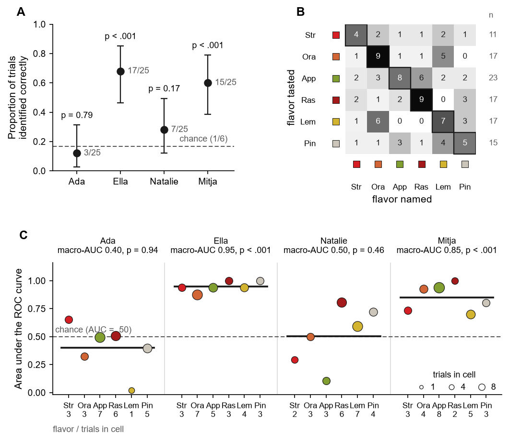
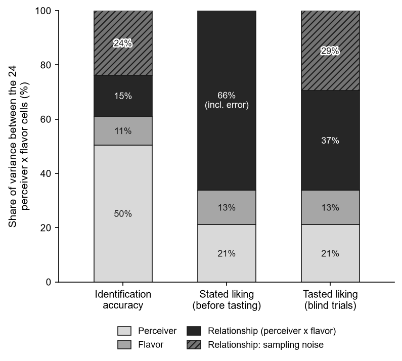
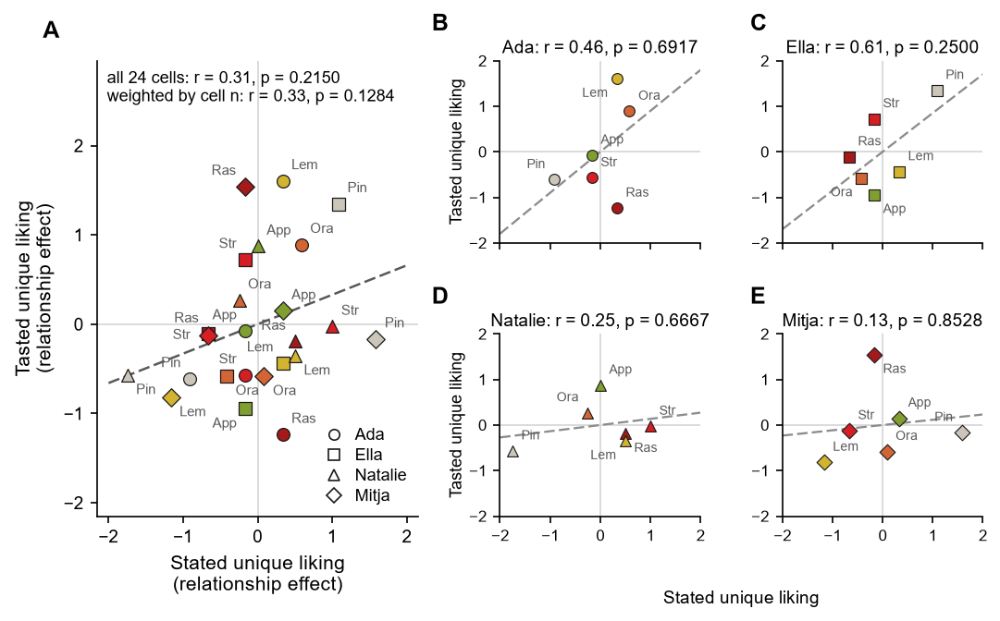

<!doctype html>
<html lang="en"><head><meta charset="utf-8"><title>Reproduction report: Förster et al.: Gummy bear perceptions (preprint)</title>
<style>
body{font:15px/1.5 Georgia,serif;max-width:1100px;margin:2em auto;padding:0 1.5em;color:#1d1d1b}
h1{font-size:1.6em;line-height:1.25}h2{font-family:system-ui,sans-serif;border-bottom:1px solid #ddd;padding-bottom:.2em;margin-top:2em}
table{border-collapse:collapse;width:100%;font:13px system-ui,sans-serif;margin:.5em 0}th,td{border:1px solid #ddd;padding:4px 6px;vertical-align:top;text-align:left}th{background:#f3f3ef}
code{font-size:12px}.hash{font-size:10px;color:#777;word-break:break-all}.quote{color:#666;font-style:italic;font-size:12px;margin-top:2px}
.summary{display:flex;gap:10px;flex-wrap:wrap;font:14px system-ui,sans-serif}.summary div{padding:8px 12px;border-radius:6px;background:#f3f3ef}
.st{white-space:nowrap;font-weight:600}.st-match{color:#2e7d32}.st-within{color:#b58900}.st-deviation{color:#c62828}.st-missing{color:#757575}.st-figure{color:#1565c0}.st-unparsable{color:#6a1b9a}
.cells td{font-size:11px;text-align:right}.cells td.st-match{background:#e8f5e9}.cells td.st-within{background:#fff8e1}.cells td.st-deviation,.cells td.st-missing,.cells td.st-unparsable{background:#ffebee}
.figs{display:grid;grid-template-columns:1fr 1fr;gap:12px}.figs img{max-width:100%;border:1px solid #ddd}.figs figure{margin:0}
.dagwrap{border:1px solid #ddd;padding:6px}.dagwrap svg{max-width:100%;height:auto}
.trace{font-size:12px;margin:2px 0 0}.trace summary{cursor:pointer;color:#2a5aa0}.trace ul{margin:2px 0 4px;padding-left:1.2em}.trace h4{margin:6px 0 0;font-size:12px}.warn{color:#b3261e}
.legend span{display:inline-block;padding:1px 6px;border-radius:3px;color:#fff;font:11px system-ui;margin-right:4px}
</style></head><body>
<h1>Computational reproduction report<br><small>Förster et al.: Gummy bear perceptions (preprint)</small></h1>
<p><br>
Report generated 2026-11-13T13:44:56+00:00 by ReproCrowd.</p>

<h2>Summary</h2>
<div class="summary">
<div><b>175/175</b> non-figure results reproduced (match or within 5.0 %)</div>
<div class="st-match">✓ match: <b>175</b></div><div class="st-figure">🖼 compare visually: <b>3</b></div></div>
<p>Comparison: rounding as reported in the paper; deviations above 5.0 % are flagged.
Pipeline: Monolithic Python script, <code>python3 analysis.py</code>, last run failed (exit None, 0.0 s, 2026-11-13 13:41:57.053173+00:00).
Code generated by agent profile <code>opencode</code> (model unigpt/DeepSeek-V4-Flash, job job-20261113-141330-8d34, failed, 0 TODO markers left).</p>
<p>outputs/results.json has the required format.</p><p>Package validation: passed.</p>

<h2>Results comparison</h2>
<table><tr><th>ID</th><th>Result</th><th>Reported</th><th>Reproduced</th><th>Deviation</th><th>Status</th></tr>
<tr><td><b>T001</b></td><td>Table 1: Predicted Accuracy, Identification Accuracy, Certainty, and Liking for Each Flavor, Aggregated Across Perceivers<details class="trace"><summary>Provenance</summary>
<h4>Text</h4><ul><li><code>ex-gummy sec1.p10.s4</code> “This gives 25 trials per person and 100 trials in total, with no missing data.”</li><li><code>ex-gummy sec1.p11.s20</code> “The flavor set was known to all four participants before the first trial and was printed on the package, so chance accuracy is 1/6 = 16.7%.”</li><li><code>ex-gummy sec1.p12.s12</code> “The variance decompositions follow the logic of the social relations model but are estimated as a plain two-way decomposition of the 4 x 6 matrix of cell means.”</li><li><code>ex-gummy sec1.p12.s7</code> “A trial was scored 1 when the flavor named matched the flavor administered and 0 otherwise.”</li><li><code>ex-gummy sec1.p12.s9</code> “The scoring requires no coder judgment, and we verified that the recorded accuracy variable reproduces the comparison of named and administered flavor on all 100 trials.”</li><li><code>ex-gummy sec1.p14.s10</code> “Certainty and tasted liking are per-trial judgments from 1 to 6, averaged within flavor; the final row values include standard deviations.”</li><li><code>ex-gummy sec1.p14.s5</code> “Table 1 Predicted Accuracy, Identification Accuracy, Certainty, and Liking for Each Flavor, Aggregated Across Perceivers Flavor predicted accuracy accuracy certainty stated liking tasted liking strawberry 43% 36% (4/11) 2.91 5.00 3.18 orange 44% 53% (9/17) 3.41 3.25 3.59 apple 54% 35% (8/23) 3.04 3.00 4.04 raspberry 44% 53% (9/17) 3.12 5.50 3.94 lemon 46% 41% (7/17) 2.71 3.50 3.35 pineapple 48% 3…”</li><li><code>ex-gummy sec1.p14.s6</code> “Four perceivers tasted 25 gummy bears each under blind-tasting conditions (100 trials).”</li><li><code>ex-gummy sec1.p14.s7</code> “Rows show the six flavors and, in the final row, all flavors combined; values are pooled across perceivers, with perceiver-specific results reported in Table 2.”</li><li><code>ex-gummy sec1.p15.s4</code> “Accuracy cells give hits/trials in brackets.”</li><li><code>ex-gummy sec1.p15.s5</code> “Certainty and tasted liking are averaged within perceiver x flavor cells.”</li><li><code>ex-gummy sec1.p15.s6</code> “Final rows give each perceiver&#39;s overall values with SDs for certainty and tasted liking.”</li><li><code>ex-gummy sec1.p2.s3</code> “Four members of one family, aged 8 to 47, each tasted 25 gummy bears drawn blind (100 trials in total).”</li><li><code>ex-gummy sec1.p8.s3</code> “There were no exclusions and no manipulations: all 100 trials from all four participants were included in the analyses.”</li></ul><h4>Procedure</h4><ul><li><b>L01</b> [load] Load inputs/gummibear_trials.csv</li><li><b>L03</b> [load] Load inputs/gummibear_apriori_long.csv</li><li><b>L04</b> [load] Load inputs/gummibear_apriori.csv</li><li><b>A01</b> [transform] Derive the per-trial accuracy indicator as (judged_flavor == true_flavor) and verify it matches the recorded `correct` on all 100 trials; confirm the design constants: 100 trials, 4 perceivers, 25 bears per perceiver, and chance level = 1/6.</li><li><b>A03</b> [transform] Build the 4 (perceiver) x 6 (flavor) matrices of cell accuracy (hits/n), cell sizes, mean tasted liking, mean certainty, a priori liking, and a priori predicted accuracy; and per-perceiver totals (hits, accuracy, mean predicted accuracy, mean a priori liking).</li><li><b>A06</b> [analysis] Assemble Table 1: per-flavor predicted accuracy, identification accuracy (with hits/trials), certainty, stated liking, and tasted liking pooled across perceivers, plus the all-flavors row with standard deviations.</li></ul><h4>Data files</h4><ul><li><code>inputs/gummibear_apriori.csv</code></li><li><code>inputs/gummibear_apriori_long.csv</code></li><li><code>inputs/gummibear_trials.csv</code></li></ul><h4>Sources</h4><ul><li>extraction <code>extractions/ex-gummy.json</code> (parse)</li><li>full text <code>fulltext/gummy-bears-2.pdf</code> (local)</li></ul><p><a href="#provenance" onclick="focusNode('t:T001')">Show in the diagram</a></p>
</details></td>
<td>8 rows</td><td>26/26 numeric cells match</td><td></td><td class="st st-match">✓ match</td></tr>
<tr><td colspan="6"><details><summary>Cell comparison</summary><table class="cells">
<tr><td class="st-match" title="expected Flavor">Flavor<br><small>Flavor</small></td><td class="st-match" title="expected predicted accuracy">predicted accuracy<br><small>predicted accuracy</small></td><td class="st-match" title="expected accuracy">accuracy<br><small>accuracy</small></td><td class="st-match" title="expected certainty">certainty<br><small>certainty</small></td><td class="st-match" title="expected stated liking">stated liking<br><small>stated liking</small></td><td class="st-match" title="expected tasted liking">tasted liking<br><small>tasted liking</small></td></tr><tr><td class="st-match" title="expected strawberry">strawberry<br><small>strawberry</small></td><td class="st-match" title="expected 43%, deviation 0.00 %">43%<br><small>43%</small></td><td class="st-match" title="expected 36% (4/11)">36% (4/11)<br><small>36% (4/11)</small></td><td class="st-match" title="expected 2.91, deviation 0.00 %">2.91<br><small>2.91</small></td><td class="st-match" title="expected 5.00, deviation 0.00 %">5.00<br><small>5.00</small></td><td class="st-match" title="expected 3.18, deviation 0.00 %">3.18<br><small>3.18</small></td></tr><tr><td class="st-match" title="expected orange">orange<br><small>orange</small></td><td class="st-match" title="expected 44%, deviation 0.00 %">44%<br><small>44%</small></td><td class="st-match" title="expected 53% (9/17)">53% (9/17)<br><small>53% (9/17)</small></td><td class="st-match" title="expected 3.41, deviation 0.00 %">3.41<br><small>3.41</small></td><td class="st-match" title="expected 3.25, deviation 0.00 %">3.25<br><small>3.25</small></td><td class="st-match" title="expected 3.59, deviation 0.00 %">3.59<br><small>3.59</small></td></tr><tr><td class="st-match" title="expected apple">apple<br><small>apple</small></td><td class="st-match" title="expected 54%, deviation 0.00 %">54%<br><small>54%</small></td><td class="st-match" title="expected 35% (8/23)">35% (8/23)<br><small>35% (8/23)</small></td><td class="st-match" title="expected 3.04, deviation 0.00 %">3.04<br><small>3.04</small></td><td class="st-match" title="expected 3.00, deviation 0.00 %">3.00<br><small>3.00</small></td><td class="st-match" title="expected 4.04, deviation 0.00 %">4.04<br><small>4.04</small></td></tr><tr><td class="st-match" title="expected raspberry">raspberry<br><small>raspberry</small></td><td class="st-match" title="expected 44%, deviation 0.00 %">44%<br><small>44%</small></td><td class="st-match" title="expected 53% (9/17)">53% (9/17)<br><small>53% (9/17)</small></td><td class="st-match" title="expected 3.12, deviation 0.00 %">3.12<br><small>3.12</small></td><td class="st-match" title="expected 5.50, deviation 0.00 %">5.50<br><small>5.50</small></td><td class="st-match" title="expected 3.94, deviation 0.00 %">3.94<br><small>3.94</small></td></tr><tr><td class="st-match" title="expected lemon">lemon<br><small>lemon</small></td><td class="st-match" title="expected 46%, deviation 0.00 %">46%<br><small>46%</small></td><td class="st-match" title="expected 41% (7/17)">41% (7/17)<br><small>41% (7/17)</small></td><td class="st-match" title="expected 2.71, deviation 0.00 %">2.71<br><small>2.71</small></td><td class="st-match" title="expected 3.50, deviation 0.00 %">3.50<br><small>3.50</small></td><td class="st-match" title="expected 3.35, deviation 0.00 %">3.35<br><small>3.35</small></td></tr><tr><td class="st-match" title="expected pineapple">pineapple<br><small>pineapple</small></td><td class="st-match" title="expected 48%, deviation 0.00 %">48%<br><small>48%</small></td><td class="st-match" title="expected 33% (5/15)">33% (5/15)<br><small>33% (5/15)</small></td><td class="st-match" title="expected 2.93, deviation 0.00 %">2.93<br><small>2.93</small></td><td class="st-match" title="expected 4.75, deviation 0.00 %">4.75<br><small>4.75</small></td><td class="st-match" title="expected 4.07, deviation 0.00 %">4.07<br><small>4.07</small></td></tr><tr><td class="st-match" title="expected All flavors">All flavors<br><small>All flavors</small></td><td class="st-match" title="expected 46%, deviation 0.00 %">46%<br><small>46%</small></td><td class="st-match" title="expected 42% (42/100)">42% (42/100)<br><small>42% (42/100)</small></td><td class="st-match" title="expected 3.03 (1.46)">3.03 (1.46)<br><small>3.03 (1.46)</small></td><td class="st-match" title="expected 4.17, deviation 0.00 %">4.17<br><small>4.17</small></td><td class="st-match" title="expected 3.74 (1.31)">3.74 (1.31)<br><small>3.74 (1.31)</small></td></tr></table></details></td></tr><tr><td><b>T002</b></td><td>Table 2: Predicted Accuracy, Identification Accuracy, Certainty, and Liking for Each Flavor, Separately for Each Perceiver<details class="trace"><summary>Provenance</summary>
<h4>Text</h4><ul><li><code>ex-gummy sec1.p10.s4</code> “This gives 25 trials per person and 100 trials in total, with no missing data.”</li><li><code>ex-gummy sec1.p11.s20</code> “The flavor set was known to all four participants before the first trial and was printed on the package, so chance accuracy is 1/6 = 16.7%.”</li><li><code>ex-gummy sec1.p12.s12</code> “The variance decompositions follow the logic of the social relations model but are estimated as a plain two-way decomposition of the 4 x 6 matrix of cell means.”</li><li><code>ex-gummy sec1.p12.s7</code> “A trial was scored 1 when the flavor named matched the flavor administered and 0 otherwise.”</li><li><code>ex-gummy sec1.p12.s9</code> “The scoring requires no coder judgment, and we verified that the recorded accuracy variable reproduces the comparison of named and administered flavor on all 100 trials.”</li><li><code>ex-gummy sec1.p15.s1</code> “PERCEPTION OF GUMMY BEARS 15 Table 2 Predicted Accuracy, Identification Accuracy, Certainty, and Liking for Each Flavor, Separately for Each Perceiver Flavor Ada Ella predicted accuracy accuracy certainty stated liking tasted liking predicted accuracy accuracy certainty stated liking tasted liking strawberry 60% 33% (1/3) 2.67 5.00 3.00 48% 67% (2/3) 3.67 5.00 4.33 orange 40% 0% (0/3) 3.00 4.00 5…”</li><li><code>ex-gummy sec1.p15.s2</code> “Same design and measures as Table 1: four perceivers, 25 gummy bears each under blind-tasting conditions, chance 16.7%.”</li><li><code>ex-gummy sec1.p15.s3</code> “The upper panel gives Ada and Ella, the lower panel Natalie and Mitja.”</li><li><code>ex-gummy sec1.p15.s4</code> “Accuracy cells give hits/trials in brackets.”</li><li><code>ex-gummy sec1.p15.s5</code> “Certainty and tasted liking are averaged within perceiver x flavor cells.”</li><li><code>ex-gummy sec1.p15.s6</code> “Final rows give each perceiver&#39;s overall values with SDs for certainty and tasted liking.”</li><li><code>ex-gummy sec1.p2.s3</code> “Four members of one family, aged 8 to 47, each tasted 25 gummy bears drawn blind (100 trials in total).”</li><li><code>ex-gummy sec1.p8.s3</code> “There were no exclusions and no manipulations: all 100 trials from all four participants were included in the analyses.”</li></ul><h4>Procedure</h4><ul><li><b>L01</b> [load] Load inputs/gummibear_trials.csv</li><li><b>L03</b> [load] Load inputs/gummibear_apriori_long.csv</li><li><b>L04</b> [load] Load inputs/gummibear_apriori.csv</li><li><b>A01</b> [transform] Derive the per-trial accuracy indicator as (judged_flavor == true_flavor) and verify it matches the recorded `correct` on all 100 trials; confirm the design constants: 100 trials, 4 perceivers, 25 bears per perceiver, and chance level = 1/6.</li><li><b>A03</b> [transform] Build the 4 (perceiver) x 6 (flavor) matrices of cell accuracy (hits/n), cell sizes, mean tasted liking, mean certainty, a priori liking, and a priori predicted accuracy; and per-perceiver totals (hits, accuracy, mean predicted accuracy, mean a priori liking).</li><li><b>A07</b> [analysis] Assemble Table 2: the same measures (predicted accuracy, accuracy, certainty, stated liking, tasted liking) separately for each perceiver in two stacked panels (Ada/Ella upper, Natalie/Mitja lower), with per-perceiver all-flavors rows.</li></ul><h4>Data files</h4><ul><li><code>inputs/gummibear_apriori.csv</code></li><li><code>inputs/gummibear_apriori_long.csv</code></li><li><code>inputs/gummibear_trials.csv</code></li></ul><h4>Sources</h4><ul><li>extraction <code>extractions/ex-gummy.json</code> (parse)</li><li>full text <code>fulltext/gummy-bears-2.pdf</code> (local)</li></ul><p><a href="#provenance" onclick="focusNode('t:T002')">Show in the diagram</a></p>
</details></td>
<td>8 rows</td><td>104/104 numeric cells match</td><td></td><td class="st st-match">✓ match</td></tr>
<tr><td colspan="6"><details><summary>Cell comparison</summary><table class="cells">
<tr><td class="st-match" title="expected Flavor">Flavor<br><small>Flavor</small></td><td class="st-match" title="expected predicted accuracy">predicted accuracy<br><small>predicted accuracy</small></td><td class="st-match" title="expected accuracy">accuracy<br><small>accuracy</small></td><td class="st-match" title="expected certainty">certainty<br><small>certainty</small></td><td class="st-match" title="expected stated liking">stated liking<br><small>stated liking</small></td><td class="st-match" title="expected tasted liking">tasted liking<br><small>tasted liking</small></td><td class="st-match" title="expected predicted accuracy">predicted accuracy<br><small>predicted accuracy</small></td><td class="st-match" title="expected accuracy">accuracy<br><small>accuracy</small></td><td class="st-match" title="expected certainty">certainty<br><small>certainty</small></td><td class="st-match" title="expected stated liking">stated liking<br><small>stated liking</small></td><td class="st-match" title="expected tasted liking">tasted liking<br><small>tasted liking</small></td><td class="st-match" title="expected predicted accuracy">predicted accuracy<br><small>predicted accuracy</small></td><td class="st-match" title="expected accuracy">accuracy<br><small>accuracy</small></td><td class="st-match" title="expected certainty">certainty<br><small>certainty</small></td><td class="st-match" title="expected stated liking">stated liking<br><small>stated liking</small></td><td class="st-match" title="expected tasted liking">tasted liking<br><small>tasted liking</small></td><td class="st-match" title="expected predicted accuracy">predicted accuracy<br><small>predicted accuracy</small></td><td class="st-match" title="expected accuracy">accuracy<br><small>accuracy</small></td><td class="st-match" title="expected certainty">certainty<br><small>certainty</small></td><td class="st-match" title="expected stated liking">stated liking<br><small>stated liking</small></td><td class="st-match" title="expected tasted liking">tasted liking<br><small>tasted liking</small></td></tr><tr><td class="st-match" title="expected strawberry">strawberry<br><small>strawberry</small></td><td class="st-match" title="expected 60%, deviation 0.00 %">60%<br><small>60%</small></td><td class="st-match" title="expected 33% (1/3)">33% (1/3)<br><small>33% (1/3)</small></td><td class="st-match" title="expected 2.67, deviation 0.00 %">2.67<br><small>2.67</small></td><td class="st-match" title="expected 5.00, deviation 0.00 %">5.00<br><small>5.00</small></td><td class="st-match" title="expected 3.00, deviation 0.00 %">3.00<br><small>3.00</small></td><td class="st-match" title="expected 48%, deviation 0.00 %">48%<br><small>48%</small></td><td class="st-match" title="expected 67% (2/3)">67% (2/3)<br><small>67% (2/3)</small></td><td class="st-match" title="expected 3.67, deviation 0.00 %">3.67<br><small>3.67</small></td><td class="st-match" title="expected 5.00, deviation 0.00 %">5.00<br><small>5.00</small></td><td class="st-match" title="expected 4.33, deviation 0.00 %">4.33<br><small>4.33</small></td><td class="st-match" title="expected 35%, deviation 0.00 %">35%<br><small>35%</small></td><td class="st-match" title="expected 0% (0/2)">0% (0/2)<br><small>0% (0/2)</small></td><td class="st-match" title="expected 3.00, deviation 0.00 %">3.00<br><small>3.00</small></td><td class="st-match" title="expected 6.00, deviation 0.00 %">6.00<br><small>6.00</small></td><td class="st-match" title="expected 2.50, deviation 0.00 %">2.50<br><small>2.50</small></td><td class="st-match" title="expected 28%, deviation 0.00 %">28%<br><small>28%</small></td><td class="st-match" title="expected 33% (1/3)">33% (1/3)<br><small>33% (1/3)</small></td><td class="st-match" title="expected 2.33, deviation 0.00 %">2.33<br><small>2.33</small></td><td class="st-match" title="expected 4.00, deviation 0.00 %">4.00<br><small>4.00</small></td><td class="st-match" title="expected 2.67, deviation 0.00 %">2.67<br><small>2.67</small></td></tr><tr><td class="st-match" title="expected orange">orange<br><small>orange</small></td><td class="st-match" title="expected 40%, deviation 0.00 %">40%<br><small>40%</small></td><td class="st-match" title="expected 0% (0/3)">0% (0/3)<br><small>0% (0/3)</small></td><td class="st-match" title="expected 3.00, deviation 0.00 %">3.00<br><small>3.00</small></td><td class="st-match" title="expected 4.00, deviation 0.00 %">4.00<br><small>4.00</small></td><td class="st-match" title="expected 5.00, deviation 0.00 %">5.00<br><small>5.00</small></td><td class="st-match" title="expected 82%, deviation 0.00 %">82%<br><small>82%</small></td><td class="st-match" title="expected 71% (5/7)">71% (5/7)<br><small>71% (5/7)</small></td><td class="st-match" title="expected 4.00, deviation 0.00 %">4.00<br><small>4.00</small></td><td class="st-match" title="expected 3.00, deviation 0.00 %">3.00<br><small>3.00</small></td><td class="st-match" title="expected 3.57, deviation 0.00 %">3.57<br><small>3.57</small></td><td class="st-match" title="expected 30%, deviation 0.00 %">30%<br><small>30%</small></td><td class="st-match" title="expected 0% (0/3)">0% (0/3)<br><small>0% (0/3)</small></td><td class="st-match" title="expected 2.00, deviation 0.00 %">2.00<br><small>2.00</small></td><td class="st-match" title="expected 3.00, deviation 0.00 %">3.00<br><small>3.00</small></td><td class="st-match" title="expected 3.33, deviation 0.00 %">3.33<br><small>3.33</small></td><td class="st-match" title="expected 24%, deviation 0.00 %">24%<br><small>24%</small></td><td class="st-match" title="expected 100% (4/4)">100% (4/4)<br><small>100% (4/4)</small></td><td class="st-match" title="expected 3.75, deviation 0.00 %">3.75<br><small>3.75</small></td><td class="st-match" title="expected 3.00, deviation 0.00 %">3.00<br><small>3.00</small></td><td class="st-match" title="expected 2.75, deviation 0.00 %">2.75<br><small>2.75</small></td></tr><tr><td class="st-match" title="expected apple">apple<br><small>apple</small></td><td class="st-match" title="expected 80%, deviation 0.00 %">80%<br><small>80%</small></td><td class="st-match" title="expected 14% (1/7)">14% (1/7)<br><small>14% (1/7)</small></td><td class="st-match" title="expected 2.29, deviation 0.00 %">2.29<br><small>2.29</small></td><td class="st-match" title="expected 3.00, deviation 0.00 %">3.00<br><small>3.00</small></td><td class="st-match" title="expected 4.43, deviation 0.00 %">4.43<br><small>4.43</small></td><td class="st-match" title="expected 81%, deviation 0.00 %">81%<br><small>81%</small></td><td class="st-match" title="expected 20% (1/5)">20% (1/5)<br><small>20% (1/5)</small></td><td class="st-match" title="expected 2.60, deviation 0.00 %">2.60<br><small>2.60</small></td><td class="st-match" title="expected 3.00, deviation 0.00 %">3.00<br><small>3.00</small></td><td class="st-match" title="expected 3.60, deviation 0.00 %">3.60<br><small>3.60</small></td><td class="st-match" title="expected 20%, deviation 0.00 %">20%<br><small>20%</small></td><td class="st-match" title="expected 0% (0/3)">0% (0/3)<br><small>0% (0/3)</small></td><td class="st-match" title="expected 3.67, deviation 0.00 %">3.67<br><small>3.67</small></td><td class="st-match" title="expected 3.00, deviation 0.00 %">3.00<br><small>3.00</small></td><td class="st-match" title="expected 4.33, deviation 0.00 %">4.33<br><small>4.33</small></td><td class="st-match" title="expected 35%, deviation 0.00 %">35%<br><small>35%</small></td><td class="st-match" title="expected 75% (6/8)">75% (6/8)<br><small>75% (6/8)</small></td><td class="st-match" title="expected 3.75, deviation 0.00 %">3.75<br><small>3.75</small></td><td class="st-match" title="expected 3.00, deviation 0.00 %">3.00<br><small>3.00</small></td><td class="st-match" title="expected 3.88, deviation 0.00 %">3.88<br><small>3.88</small></td></tr><tr><td class="st-match" title="expected raspberry">raspberry<br><small>raspberry</small></td><td class="st-match" title="expected 60%, deviation 0.00 %">60%<br><small>60%</small></td><td class="st-match" title="expected 17% (1/6)">17% (1/6)<br><small>17% (1/6)</small></td><td class="st-match" title="expected 2.50, deviation 0.00 %">2.50<br><small>2.50</small></td><td class="st-match" title="expected 6.00, deviation 0.00 %">6.00<br><small>6.00</small></td><td class="st-match" title="expected 3.50, deviation 0.00 %">3.50<br><small>3.50</small></td><td class="st-match" title="expected 50%, deviation 0.00 %">50%<br><small>50%</small></td><td class="st-match" title="expected 100% (3/3)">100% (3/3)<br><small>100% (3/3)</small></td><td class="st-match" title="expected 5.00, deviation 0.00 %">5.00<br><small>5.00</small></td><td class="st-match" title="expected 5.00, deviation 0.00 %">5.00<br><small>5.00</small></td><td class="st-match" title="expected 4.67, deviation 0.00 %">4.67<br><small>4.67</small></td><td class="st-match" title="expected 38%, deviation 0.00 %">38%<br><small>38%</small></td><td class="st-match" title="expected 50% (3/6)">50% (3/6)<br><small>50% (3/6)</small></td><td class="st-match" title="expected 2.33, deviation 0.00 %">2.33<br><small>2.33</small></td><td class="st-match" title="expected 6.00, deviation 0.00 %">6.00<br><small>6.00</small></td><td class="st-match" title="expected 3.50, deviation 0.00 %">3.50<br><small>3.50</small></td><td class="st-match" title="expected 26%, deviation 0.00 %">26%<br><small>26%</small></td><td class="st-match" title="expected 100% (2/2)">100% (2/2)<br><small>100% (2/2)</small></td><td class="st-match" title="expected 4.50, deviation 0.00 %">4.50<br><small>4.50</small></td><td class="st-match" title="expected 5.00, deviation 0.00 %">5.00<br><small>5.00</small></td><td class="st-match" title="expected 5.50, deviation 0.00 %">5.50<br><small>5.50</small></td></tr><tr><td class="st-match" title="expected lemon">lemon<br><small>lemon</small></td><td class="st-match" title="expected 60%, deviation 0.00 %">60%<br><small>60%</small></td><td class="st-match" title="expected 0% (0/1)">0% (0/1)<br><small>0% (0/1)</small></td><td class="st-match" title="expected 6.00, deviation 0.00 %">6.00<br><small>6.00</small></td><td class="st-match" title="expected 4.00, deviation 0.00 %">4.00<br><small>4.00</small></td><td class="st-match" title="expected 6.00, deviation 0.00 %">6.00<br><small>6.00</small></td><td class="st-match" title="expected 51%, deviation 0.00 %">51%<br><small>51%</small></td><td class="st-match" title="expected 75% (3/4)">75% (3/4)<br><small>75% (3/4)</small></td><td class="st-match" title="expected 3.00, deviation 0.00 %">3.00<br><small>3.00</small></td><td class="st-match" title="expected 4.00, deviation 0.00 %">4.00<br><small>4.00</small></td><td class="st-match" title="expected 4.00, deviation 0.00 %">4.00<br><small>4.00</small></td><td class="st-match" title="expected 35%, deviation 0.00 %">35%<br><small>35%</small></td><td class="st-match" title="expected 43% (3/7)">43% (3/7)<br><small>43% (3/7)</small></td><td class="st-match" title="expected 2.00, deviation 0.00 %">2.00<br><small>2.00</small></td><td class="st-match" title="expected 4.00, deviation 0.00 %">4.00<br><small>4.00</small></td><td class="st-match" title="expected 3.00, deviation 0.00 %">3.00<br><small>3.00</small></td><td class="st-match" title="expected 40%, deviation 0.00 %">40%<br><small>40%</small></td><td class="st-match" title="expected 20% (1/5)">20% (1/5)<br><small>20% (1/5)</small></td><td class="st-match" title="expected 2.80, deviation 0.00 %">2.80<br><small>2.80</small></td><td class="st-match" title="expected 2.00, deviation 0.00 %">2.00<br><small>2.00</small></td><td class="st-match" title="expected 2.80, deviation 0.00 %">2.80<br><small>2.80</small></td></tr><tr><td class="st-match" title="expected pineapple">pineapple<br><small>pineapple</small></td><td class="st-match" title="expected 60%, deviation 0.00 %">60%<br><small>60%</small></td><td class="st-match" title="expected 0% (0/5)">0% (0/5)<br><small>0% (0/5)</small></td><td class="st-match" title="expected 2.80, deviation 0.00 %">2.80<br><small>2.80</small></td><td class="st-match" title="expected 4.00, deviation 0.00 %">4.00<br><small>4.00</small></td><td class="st-match" title="expected 4.00, deviation 0.00 %">4.00<br><small>4.00</small></td><td class="st-match" title="expected 65%, deviation 0.00 %">65%<br><small>65%</small></td><td class="st-match" title="expected 100% (3/3)">100% (3/3)<br><small>100% (3/3)</small></td><td class="st-match" title="expected 5.00, deviation 0.00 %">5.00<br><small>5.00</small></td><td class="st-match" title="expected 6.00, deviation 0.00 %">6.00<br><small>6.00</small></td><td class="st-match" title="expected 6.00, deviation 0.00 %">6.00<br><small>6.00</small></td><td class="st-match" title="expected 30%, deviation 0.00 %">30%<br><small>30%</small></td><td class="st-match" title="expected 25% (1/4)">25% (1/4)<br><small>25% (1/4)</small></td><td class="st-match" title="expected 1.75, deviation 0.00 %">1.75<br><small>1.75</small></td><td class="st-match" title="expected 3.00, deviation 0.00 %">3.00<br><small>3.00</small></td><td class="st-match" title="expected 3.00, deviation 0.00 %">3.00<br><small>3.00</small></td><td class="st-match" title="expected 35%, deviation 0.00 %">35%<br><small>35%</small></td><td class="st-match" title="expected 33% (1/3)">33% (1/3)<br><small>33% (1/3)</small></td><td class="st-match" title="expected 2.67, deviation 0.00 %">2.67<br><small>2.67</small></td><td class="st-match" title="expected 6.00, deviation 0.00 %">6.00<br><small>6.00</small></td><td class="st-match" title="expected 3.67, deviation 0.00 %">3.67<br><small>3.67</small></td></tr><tr><td class="st-match" title="expected All flavors">All flavors<br><small>All flavors</small></td><td class="st-match" title="expected 60%, deviation 0.00 %">60%<br><small>60%</small></td><td class="st-match" title="expected 12% (3/25)">12% (3/25)<br><small>12% (3/25)</small></td><td class="st-match" title="expected 2.72 (1.74)">2.72 (1.74)<br><small>2.72 (1.74)</small></td><td class="st-match" title="expected 4.33, deviation 0.00 %">4.33<br><small>4.33</small></td><td class="st-match" title="expected 4.08 (1.85)">4.08 (1.85)<br><small>4.08 (1.85)</small></td><td class="st-match" title="expected 63%, deviation 0.00 %">63%<br><small>63%</small></td><td class="st-match" title="expected 68% (17/25)">68% (17/25)<br><small>68% (17/25)</small></td><td class="st-match" title="expected 3.76 (1.36)">3.76 (1.36)<br><small>3.76 (1.36)</small></td><td class="st-match" title="expected 4.33, deviation 0.00 %">4.33<br><small>4.33</small></td><td class="st-match" title="expected 4.16 (0.99)">4.16 (0.99)<br><small>4.16 (0.99)</small></td><td class="st-match" title="expected 31%, deviation 0.00 %">31%<br><small>31%</small></td><td class="st-match" title="expected 28% (7/25)">28% (7/25)<br><small>28% (7/25)</small></td><td class="st-match" title="expected 2.32 (1.07)">2.32 (1.07)<br><small>2.32 (1.07)</small></td><td class="st-match" title="expected 4.17, deviation 0.00 %">4.17<br><small>4.17</small></td><td class="st-match" title="expected 3.28 (0.98)">3.28 (0.98)<br><small>3.28 (0.98)</small></td><td class="st-match" title="expected 31%, deviation 0.00 %">31%<br><small>31%</small></td><td class="st-match" title="expected 60% (15/25)">60% (15/25)<br><small>60% (15/25)</small></td><td class="st-match" title="expected 3.32 (1.22)">3.32 (1.22)<br><small>3.32 (1.22)</small></td><td class="st-match" title="expected 3.83, deviation 0.00 %">3.83<br><small>3.83</small></td><td class="st-match" title="expected 3.44 (1.04)">3.44 (1.04)<br><small>3.44 (1.04)</small></td></tr></table></details></td></tr><tr><td><b>T003</b></td><td>Figure 1: Blind Identification of Gummy Bear Flavors by Four Perceivers<details class="trace"><summary>Provenance</summary>
<h4>Text</h4><ul><li><code>ex-gummy sec1.p10.s4</code> “This gives 25 trials per person and 100 trials in total, with no missing data.”</li><li><code>ex-gummy sec1.p11.s20</code> “The flavor set was known to all four participants before the first trial and was printed on the package, so chance accuracy is 1/6 = 16.7%.”</li><li><code>ex-gummy sec1.p12.s12</code> “The variance decompositions follow the logic of the social relations model but are estimated as a plain two-way decomposition of the 4 x 6 matrix of cell means.”</li><li><code>ex-gummy sec1.p12.s7</code> “A trial was scored 1 when the flavor named matched the flavor administered and 0 otherwise.”</li><li><code>ex-gummy sec1.p12.s9</code> “The scoring requires no coder judgment, and we verified that the recorded accuracy variable reproduces the comparison of named and administered flavor on all 100 trials.”</li><li><code>ex-gummy sec1.p15.s4</code> “Accuracy cells give hits/trials in brackets.”</li><li><code>ex-gummy sec1.p15.s5</code> “Certainty and tasted liking are averaged within perceiver x flavor cells.”</li><li><code>ex-gummy sec1.p15.s6</code> “Final rows give each perceiver&#39;s overall values with SDs for certainty and tasted liking.”</li><li><code>ex-gummy sec1.p16.s1</code> “PERCEPTION OF GUMMY BEARS 16 Accurate Differentiation Pooled accuracy, the proportion of trials correctly identified, was 42 of 100, .42 [.32, .52]; that interval treats the 100 trials as independent, which they are not, since they come from four perceivers.”</li><li><code>ex-gummy sec1.p16.s3</code> “Ella named 17 of 25 correctly, .68 [.46, .85], p &lt; .001, and Mitja 15 of 25, .60 [.39, .79], p &lt; .001, against Natalie&#39;s 7 of 25, .28 [.12, .49], p = .17, and Ada&#39;s 3 of 25, .12 [.03, .31], p = .79.”</li><li><code>ex-gummy sec1.p17.s1</code> “PERCEPTION OF GUMMY BEARS 17 Figure 1 Blind Identification of Gummy Bear Flavors by Four Perceivers Note.”</li><li><code>ex-gummy sec1.p17.s2</code> “(A) Proportion correctly identified, with Clopper-Pearson exact 95% intervals and exact binomial p-values against chance (1/6).”</li><li><code>ex-gummy sec1.p17.s3</code> “(B) Confusion matrix pooled across perceivers; rows show tasted flavors, columns named flavors, cells trial counts, and shading row proportions.”</li><li><code>ex-gummy sec1.p17.s5</code> “(C) One-versus-rest discrimination for all 24 perceiver x flavor cells, quantified as the area under the receiver operating characteristic (ROC) curve (AUC) of a certainty-graded score (positive certainty when the flavor was named, negative otherwise).”</li><li><code>ex-gummy sec1.p17.s6</code> “Horizontal bars show macroaveraged AUCs per perceiver with one-sided permutation p-values; .50 indicates chance.”</li><li><code>ex-gummy sec1.p18.s1</code> “PERCEPTION OF GUMMY BEARS 18 The most frequent confusions (see Figure 1B) were lemon named orange (6 trials), apple named raspberry (6), orange named lemon (5), and pineapple named lemon (4).”</li><li><code>ex-gummy sec1.p18.s2</code> “Per-flavor accuracy pooled over perceivers ran from .33 for pineapple to .53 for orange and raspberry (Tables S1, S2).”</li><li><code>ex-gummy sec1.p18.s8</code> “Macro-averaged within perceiver, Ella reached .95 in identification and Mitja .85, both at one-sided permutation p &lt; .001, against .50 for Natalie (p = .46) and .40 for Ada (p = .94).”</li><li><code>ex-gummy sec1.p18.s9</code> “The grand macro-AUC was .68 (p &lt; .001), and per-flavor macro-AUCs ran from .56 for lemon (p = .27) to .83 for raspberry (p &lt; .001; see Table S8, Figure S3).”</li><li><code>ex-gummy sec1.p2.s3</code> “Four members of one family, aged 8 to 47, each tasted 25 gummy bears drawn blind (100 trials in total).”</li><li><code>ex-gummy sec1.p2.s6</code> “Average accuracy in gummy bear identification (42%) was well above chance level (16.7%), with large interindividual variability (individual accuracies ranged from 12% to 68%).”</li><li><code>ex-gummy sec1.p8.s3</code> “There were no exclusions and no manipulations: all 100 trials from all four participants were included in the analyses.”</li></ul><h4>Procedure</h4><ul><li><b>L01</b> [load] Load inputs/gummibear_trials.csv</li><li><b>L03</b> [load] Load inputs/gummibear_apriori_long.csv</li><li><b>L04</b> [load] Load inputs/gummibear_apriori.csv</li><li><b>A01</b> [transform] Derive the per-trial accuracy indicator as (judged_flavor == true_flavor) and verify it matches the recorded `correct` on all 100 trials; confirm the design constants: 100 trials, 4 perceivers, 25 bears per perceiver, and chance level = 1/6.</li><li><b>A03</b> [transform] Build the 4 (perceiver) x 6 (flavor) matrices of cell accuracy (hits/n), cell sizes, mean tasted liking, mean certainty, a priori liking, and a priori predicted accuracy; and per-perceiver totals (hits, accuracy, mean predicted accuracy, mean a priori liking).</li><li><b>A08</b> [analysis] For each perceiver compute accuracy (hits/25), the Clopper-Pearson exact 95% CI, and the exact two-sided binomial p against 1/6; compute pooled accuracy 42/100 with CI and p; report the average accuracy (42%), and the minimum (12%) and maximum (68%) individual accuracies.</li><li><b>A12</b> [analysis] Build the pooled 6x6 confusion matrix (true flavor x judged flavor), report the most frequent off-diagonal confusions (lemon-&gt;orange, apple-&gt;raspberry, orange-&gt;lemon, pineapple-&gt;lemon), and the per-flavor pooled accuracies.</li><li><b>A14</b> [analysis] Compute certainty-graded one-versus-rest AUCs for all 24 perceiver x flavor cells; macro-average within perceiver and across perceivers (grand) with one-sided permutation p-values; and compute per-flavor macro-AUCs.</li><li><b>A15</b> [analysis] Generate Figure 1: (A) per-perceiver accuracy with Clopper-Pearson exact 95% intervals and exact binomial p-values against chance (1/6); (B) pooled confusion matrix with row proportions and flavor frequencies; (C) 24-cell certainty-graded one-versus-rest AUCs with macro-averaged AUCs per perceiver.</li></ul><h4>Data files</h4><ul><li><code>inputs/gummibear_trials.csv</code></li><li><code>inputs/gummibear_apriori.csv</code></li><li><code>inputs/gummibear_apriori_long.csv</code></li><li><code>inputs/make_figures.py</code></li></ul><h4>Sources</h4><ul><li>extraction <code>extractions/ex-gummy.json</code> (parse)</li><li>full text <code>fulltext/gummy-bears-2.pdf</code> (local)</li></ul><p><a href="#provenance" onclick="focusNode('t:T003')">Show in the diagram</a></p>
</details></td>
<td>(figure)</td><td>outputs/figures/T003.png</td><td></td><td class="st st-figure">🖼 compare visually</td></tr>
<tr><td colspan="6"><div class="figs">
<figure><figcaption>Original</figcaption><em>not available</em></figure>
<figure><figcaption>Reproduced</figcaption></figure>
</div></td></tr><tr><td><b>T004</b></td><td>Figure 2: Relative Variance Components for Identification Accuracy, Stated Liking, and Tasted Liking<details class="trace"><summary>Provenance</summary>
<h4>Text</h4><ul><li><code>ex-gummy sec1.p10.s4</code> “This gives 25 trials per person and 100 trials in total, with no missing data.”</li><li><code>ex-gummy sec1.p11.s20</code> “The flavor set was known to all four participants before the first trial and was printed on the package, so chance accuracy is 1/6 = 16.7%.”</li><li><code>ex-gummy sec1.p12.s12</code> “The variance decompositions follow the logic of the social relations model but are estimated as a plain two-way decomposition of the 4 x 6 matrix of cell means.”</li><li><code>ex-gummy sec1.p12.s7</code> “A trial was scored 1 when the flavor named matched the flavor administered and 0 otherwise.”</li><li><code>ex-gummy sec1.p12.s9</code> “The scoring requires no coder judgment, and we verified that the recorded accuracy variable reproduces the comparison of named and administered flavor on all 100 trials.”</li><li><code>ex-gummy sec1.p15.s4</code> “Accuracy cells give hits/trials in brackets.”</li><li><code>ex-gummy sec1.p15.s5</code> “Certainty and tasted liking are averaged within perceiver x flavor cells.”</li><li><code>ex-gummy sec1.p15.s6</code> “Final rows give each perceiver&#39;s overall values with SDs for certainty and tasted liking.”</li><li><code>ex-gummy sec1.p19.s10</code> “Specific Preferences A variance decomposition of stated liking, before any tasting, shows that a priori preferences were dominated by flavor consensus (55%), against 3% for the perceiver and 42% for the”</li><li><code>ex-gummy sec1.p19.s5</code> “A variance decomposition on the accuracy scores reveals that 50% of the accuracy variance was due to perceiver differences in identification ability (SD for the four perceivers = .26, the four accuracies of Figure 1A), against only 11% due to differences in the identifiability of flavors (SD for the six flavors = .09), 15% on the relationship component (unique identification abilities of a partic…”</li><li><code>ex-gummy sec1.p19.s6</code> “With every component&#39;s simulated noise floor removed and the remainder renormalized, the three components read .70, .07, and .22 (Table S10).”</li><li><code>ex-gummy sec1.p2.s3</code> “Four members of one family, aged 8 to 47, each tasted 25 gummy bears drawn blind (100 trials in total).”</li><li><code>ex-gummy sec1.p20.s1</code> “PERCEPTION OF GUMMY BEARS 20 relationship component, which is confounded with error (Figure 2, middle bar).”</li><li><code>ex-gummy sec1.p20.s8</code> “There was little consensus regarding which gummy bear flavors actually taste best (flavor variance: 13%), and somewhat more variance between perceivers in how much they liked gummy bears in general (21%).”</li><li><code>ex-gummy sec1.p20.s9</code> “The largest share was the relationship component (37%), with an additional 29% sampling floor (Figure 2, right bar).”</li><li><code>ex-gummy sec1.p21.s1</code> “PERCEPTION OF GUMMY BEARS 21 Figure 2 Relative Variance Components for Identification Accuracy, Stated Liking, and Tasted Liking Note.”</li><li><code>ex-gummy sec1.p21.s2</code> “Each bar divides the variance between the 24 perceiver x flavor cell means into perceiver, flavor, and relationship components.”</li><li><code>ex-gummy sec1.p21.s3</code> “For tasted liking and identification accuracy, the relationship component is split into the noise-corrected part (solid) and the simulated sampling-noise floor (hatched).”</li><li><code>ex-gummy sec1.p8.s3</code> “There were no exclusions and no manipulations: all 100 trials from all four participants were included in the analyses.”</li></ul><h4>Procedure</h4><ul><li><b>L01</b> [load] Load inputs/gummibear_trials.csv</li><li><b>L03</b> [load] Load inputs/gummibear_apriori_long.csv</li><li><b>L04</b> [load] Load inputs/gummibear_apriori.csv</li><li><b>A01</b> [transform] Derive the per-trial accuracy indicator as (judged_flavor == true_flavor) and verify it matches the recorded `correct` on all 100 trials; confirm the design constants: 100 trials, 4 perceivers, 25 bears per perceiver, and chance level = 1/6.</li><li><b>A03</b> [transform] Build the 4 (perceiver) x 6 (flavor) matrices of cell accuracy (hits/n), cell sizes, mean tasted liking, mean certainty, a priori liking, and a priori predicted accuracy; and per-perceiver totals (hits, accuracy, mean predicted accuracy, mean a priori liking).</li><li><b>A17</b> [analysis] Decompose the variance of the 4x6 accuracy cell means into perceiver, flavor, and relationship components; report raw shares, the SD of perceiver accuracies and of flavor accuracies, the simulated sampling-noise floor share, and the renormalized (noise-removed) shares.</li><li><b>A19</b> [analysis] Decompose the variance of the 4x6 a priori (stated) liking cell means into perceiver, flavor, and relationship components and report their shares.</li><li><b>A21</b> [analysis] Decompose the variance of the 4x6 tasted-liking cell means into perceiver, flavor, and relationship components with a simulated sampling-noise floor, and report the shares.</li><li><b>A23</b> [analysis] Generate Figure 2: relative variance components for identification accuracy, stated liking, and tasted liking, splitting each into perceiver, flavor, and relationship components (with the relationship noise floor shown for accuracy and tasted liking).</li></ul><h4>Data files</h4><ul><li><code>inputs/gummibear_apriori_long.csv</code></li><li><code>inputs/gummibear_trials.csv</code></li><li><code>inputs/gummibear_apriori.csv</code></li><li><code>inputs/make_figures.py</code></li></ul><h4>Sources</h4><ul><li>extraction <code>extractions/ex-gummy.json</code> (parse)</li><li>full text <code>fulltext/gummy-bears-2.pdf</code> (local)</li></ul><p><a href="#provenance" onclick="focusNode('t:T004')">Show in the diagram</a></p>
</details></td>
<td>(figure)</td><td>outputs/figures/T004.png</td><td></td><td class="st st-figure">🖼 compare visually</td></tr>
<tr><td colspan="6"><div class="figs">
<figure><figcaption>Original</figcaption><em>not available</em></figure>
<figure><figcaption>Reproduced</figcaption></figure>
</div></td></tr><tr><td><b>T005</b></td><td>Figure 3: Awareness of One&#39;s Own Unique Flavor Preferences<details class="trace"><summary>Provenance</summary>
<h4>Text</h4><ul><li><code>ex-gummy sec1.p10.s4</code> “This gives 25 trials per person and 100 trials in total, with no missing data.”</li><li><code>ex-gummy sec1.p11.s20</code> “The flavor set was known to all four participants before the first trial and was printed on the package, so chance accuracy is 1/6 = 16.7%.”</li><li><code>ex-gummy sec1.p12.s12</code> “The variance decompositions follow the logic of the social relations model but are estimated as a plain two-way decomposition of the 4 x 6 matrix of cell means.”</li><li><code>ex-gummy sec1.p12.s7</code> “A trial was scored 1 when the flavor named matched the flavor administered and 0 otherwise.”</li><li><code>ex-gummy sec1.p12.s9</code> “The scoring requires no coder judgment, and we verified that the recorded accuracy variable reproduces the comparison of named and administered flavor on all 100 trials.”</li><li><code>ex-gummy sec1.p15.s4</code> “Accuracy cells give hits/trials in brackets.”</li><li><code>ex-gummy sec1.p15.s5</code> “Certainty and tasted liking are averaged within perceiver x flavor cells.”</li><li><code>ex-gummy sec1.p15.s6</code> “Final rows give each perceiver&#39;s overall values with SDs for certainty and tasted liking.”</li><li><code>ex-gummy sec1.p2.s3</code> “Four members of one family, aged 8 to 47, each tasted 25 gummy bears drawn blind (100 trials in total).”</li><li><code>ex-gummy sec1.p22.s3</code> “Across the 24 perceiver-flavor combinations (cells), stated and tasted unique liking correlated r = .31 (p = .21), r = .33 with cells weighted by their number of trials (p = .13), and r = .30 with the single-trial cell removed (p = .24); the rank version gives r = .31, and the mixed-model control gives β = .32 at p = .13 (Figure 3A; Tables S9, S13).”</li><li><code>ex-gummy sec1.p22.s6</code> “That same construction leaves the 24 values with (4-1)(6-1) = 15 degrees of freedom rather than 24, so the permutation test shuffles each perceiver&#39;s stated ratings within perceiver and re-derives the margins on every draw.”</li><li><code>ex-gummy sec1.p22.s7</code> “A conventional test on 24 observations would report p = .14 for the same correlation.”</li><li><code>ex-gummy sec1.p23.s1</code> “PERCEPTION OF GUMMY BEARS 23 Figure 3Awareness of One&#39;s Own Unique Flavor Preferences Note.”</li><li><code>ex-gummy sec1.p23.s11</code> “The correlations between stated and tasted relationship effects were .46 for Ada (exact p = .69), .61 for Ella (p = .25), .25 for Natalie (p = .67), and .13 for Mitja (p = .85), on six cells each (Figure 3B to 3E).”</li><li><code>ex-gummy sec1.p23.s12</code> “The raw profile correlations, which retain the consensus component, spread wider: .93 for Ella (exact p = .0056, one of eight uncorrected tests in this block), .52 for Mitja, −.55 for Ada, and −.43 for Natalie (Table S9).”</li><li><code>ex-gummy sec1.p23.s2</code> “(A) Stated vs. tasted unique liking across all 24 perceiver x flavor cells.”</li><li><code>ex-gummy sec1.p23.s4</code> “The dashed line shows the least-squares fit; r = .31, permutation p = .21, and r = .33, p = .13 when cells are weighted by trial count.”</li><li><code>ex-gummy sec1.p23.s6</code> “(B to E) The same relationship effects shown separately for each perceiver (six flavors each), with individual fits, correlations, and exact permutation p-values based on all 720 orderings.”</li><li><code>ex-gummy sec1.p24.s8</code> “How aware gummy bear eaters were of their specific gummy bear preferences differed across perceivers, with the correspondence between stated and tasted unique liking running from .13 to .61 and none of the four values differing from zero.”</li><li><code>ex-gummy sec1.p8.s3</code> “There were no exclusions and no manipulations: all 100 trials from all four participants were included in the analyses.”</li></ul><h4>Procedure</h4><ul><li><b>L01</b> [load] Load inputs/gummibear_trials.csv</li><li><b>L03</b> [load] Load inputs/gummibear_apriori_long.csv</li><li><b>L04</b> [load] Load inputs/gummibear_apriori.csv</li><li><b>A01</b> [transform] Derive the per-trial accuracy indicator as (judged_flavor == true_flavor) and verify it matches the recorded `correct` on all 100 trials; confirm the design constants: 100 trials, 4 perceivers, 25 bears per perceiver, and chance level = 1/6.</li><li><b>A03</b> [transform] Build the 4 (perceiver) x 6 (flavor) matrices of cell accuracy (hits/n), cell sizes, mean tasted liking, mean certainty, a priori liking, and a priori predicted accuracy; and per-perceiver totals (hits, accuracy, mean predicted accuracy, mean a priori liking).</li><li><b>A25</b> [analysis] Double-center a priori liking and tasted-liking cell means into relationship effects; correlate the stated and tasted unique liking across the 24 cells (unweighted, weighted by cell n, single-trial cell removed, and rank version) with permutation p-values; report the 15 degrees of freedom and the conventional-test p.</li><li><b>A26</b> [analysis] For each perceiver correlate the six stated and tasted relationship effects (exact permutation p over 720 orderings) and the raw profile correlations; report the range of the stated-tasted unique liking correspondence.</li><li><b>A28</b> [analysis] Generate Figure 3: stated vs tasted unique liking (relationship effects) across all 24 cells with a least-squares fit, and per-perceiver panels (B to E) with individual fits, correlations, and exact permutation p-values.</li></ul><h4>Data files</h4><ul><li><code>inputs/gummibear_apriori_long.csv</code></li><li><code>inputs/gummibear_trials.csv</code></li><li><code>inputs/gummibear_apriori.csv</code></li><li><code>inputs/make_figures.py</code></li></ul><h4>Sources</h4><ul><li>extraction <code>extractions/ex-gummy.json</code> (parse)</li><li>full text <code>fulltext/gummy-bears-2.pdf</code> (local)</li></ul><p><a href="#provenance" onclick="focusNode('t:T005')">Show in the diagram</a></p>
</details></td>
<td>(figure)</td><td>outputs/figures/T005.png</td><td></td><td class="st st-figure">🖼 compare visually</td></tr>
<tr><td colspan="6"><div class="figs">
<figure><figcaption>Original</figcaption><em>not available</em></figure>
<figure><figcaption>Reproduced</figcaption></figure>
</div></td></tr><tr><td><b>T006</b></td><td>Pooled accuracy proportion<div class="quote">“was 42 of 100, .42 [.32, .52]”</div><details class="trace"><summary>Provenance</summary>
<h4>Text</h4><ul><li><code>ex-gummy sec1.p10.s4</code> “This gives 25 trials per person and 100 trials in total, with no missing data.”</li><li><code>ex-gummy sec1.p11.s20</code> “The flavor set was known to all four participants before the first trial and was printed on the package, so chance accuracy is 1/6 = 16.7%.”</li><li><code>ex-gummy sec1.p12.s12</code> “The variance decompositions follow the logic of the social relations model but are estimated as a plain two-way decomposition of the 4 x 6 matrix of cell means.”</li><li><code>ex-gummy sec1.p12.s7</code> “A trial was scored 1 when the flavor named matched the flavor administered and 0 otherwise.”</li><li><code>ex-gummy sec1.p12.s9</code> “The scoring requires no coder judgment, and we verified that the recorded accuracy variable reproduces the comparison of named and administered flavor on all 100 trials.”</li><li><code>ex-gummy sec1.p15.s4</code> “Accuracy cells give hits/trials in brackets.”</li><li><code>ex-gummy sec1.p15.s5</code> “Certainty and tasted liking are averaged within perceiver x flavor cells.”</li><li><code>ex-gummy sec1.p15.s6</code> “Final rows give each perceiver&#39;s overall values with SDs for certainty and tasted liking.”</li><li><code>ex-gummy sec1.p16.s1</code> “PERCEPTION OF GUMMY BEARS 16 Accurate Differentiation Pooled accuracy, the proportion of trials correctly identified, was 42 of 100, .42 [.32, .52]; that interval treats the 100 trials as independent, which they are not, since they come from four perceivers.”</li><li><code>ex-gummy sec1.p16.s3</code> “Ella named 17 of 25 correctly, .68 [.46, .85], p &lt; .001, and Mitja 15 of 25, .60 [.39, .79], p &lt; .001, against Natalie&#39;s 7 of 25, .28 [.12, .49], p = .17, and Ada&#39;s 3 of 25, .12 [.03, .31], p = .79.”</li><li><code>ex-gummy sec1.p2.s3</code> “Four members of one family, aged 8 to 47, each tasted 25 gummy bears drawn blind (100 trials in total).”</li><li><code>ex-gummy sec1.p2.s6</code> “Average accuracy in gummy bear identification (42%) was well above chance level (16.7%), with large interindividual variability (individual accuracies ranged from 12% to 68%).”</li><li><code>ex-gummy sec1.p8.s3</code> “There were no exclusions and no manipulations: all 100 trials from all four participants were included in the analyses.”</li></ul><h4>Procedure</h4><ul><li><b>L01</b> [load] Load inputs/gummibear_trials.csv</li><li><b>L03</b> [load] Load inputs/gummibear_apriori_long.csv</li><li><b>L04</b> [load] Load inputs/gummibear_apriori.csv</li><li><b>A01</b> [transform] Derive the per-trial accuracy indicator as (judged_flavor == true_flavor) and verify it matches the recorded `correct` on all 100 trials; confirm the design constants: 100 trials, 4 perceivers, 25 bears per perceiver, and chance level = 1/6.</li><li><b>A03</b> [transform] Build the 4 (perceiver) x 6 (flavor) matrices of cell accuracy (hits/n), cell sizes, mean tasted liking, mean certainty, a priori liking, and a priori predicted accuracy; and per-perceiver totals (hits, accuracy, mean predicted accuracy, mean a priori liking).</li><li><b>A08</b> [analysis] For each perceiver compute accuracy (hits/25), the Clopper-Pearson exact 95% CI, and the exact two-sided binomial p against 1/6; compute pooled accuracy 42/100 with CI and p; report the average accuracy (42%), and the minimum (12%) and maximum (68%) individual accuracies.</li></ul><h4>Data files</h4><ul><li><code>inputs/gummibear_trials.csv</code></li><li><code>inputs/gummibear_apriori.csv</code></li><li><code>inputs/gummibear_apriori_long.csv</code></li></ul><h4>Sources</h4><ul><li>extraction <code>extractions/ex-gummy.json</code> (parse)</li><li>full text <code>fulltext/gummy-bears-2.pdf</code> (local)</li></ul><p><a href="#provenance" onclick="focusNode('t:T006')">Show in the diagram</a></p>
</details></td>
<td>0.42</td><td>0.42  (0.42)</td><td>0.00 %</td><td class="st st-match">✓ match</td></tr>
<tr><td><b>T007</b></td><td>Pooled accuracy lower 95% CI bound<div class="quote">“.42 [.32, .52]”</div><details class="trace"><summary>Provenance</summary>
<h4>Text</h4><ul><li><code>ex-gummy sec1.p10.s4</code> “This gives 25 trials per person and 100 trials in total, with no missing data.”</li><li><code>ex-gummy sec1.p11.s20</code> “The flavor set was known to all four participants before the first trial and was printed on the package, so chance accuracy is 1/6 = 16.7%.”</li><li><code>ex-gummy sec1.p12.s12</code> “The variance decompositions follow the logic of the social relations model but are estimated as a plain two-way decomposition of the 4 x 6 matrix of cell means.”</li><li><code>ex-gummy sec1.p12.s7</code> “A trial was scored 1 when the flavor named matched the flavor administered and 0 otherwise.”</li><li><code>ex-gummy sec1.p12.s9</code> “The scoring requires no coder judgment, and we verified that the recorded accuracy variable reproduces the comparison of named and administered flavor on all 100 trials.”</li><li><code>ex-gummy sec1.p15.s4</code> “Accuracy cells give hits/trials in brackets.”</li><li><code>ex-gummy sec1.p15.s5</code> “Certainty and tasted liking are averaged within perceiver x flavor cells.”</li><li><code>ex-gummy sec1.p15.s6</code> “Final rows give each perceiver&#39;s overall values with SDs for certainty and tasted liking.”</li><li><code>ex-gummy sec1.p16.s1</code> “PERCEPTION OF GUMMY BEARS 16 Accurate Differentiation Pooled accuracy, the proportion of trials correctly identified, was 42 of 100, .42 [.32, .52]; that interval treats the 100 trials as independent, which they are not, since they come from four perceivers.”</li><li><code>ex-gummy sec1.p16.s3</code> “Ella named 17 of 25 correctly, .68 [.46, .85], p &lt; .001, and Mitja 15 of 25, .60 [.39, .79], p &lt; .001, against Natalie&#39;s 7 of 25, .28 [.12, .49], p = .17, and Ada&#39;s 3 of 25, .12 [.03, .31], p = .79.”</li><li><code>ex-gummy sec1.p2.s3</code> “Four members of one family, aged 8 to 47, each tasted 25 gummy bears drawn blind (100 trials in total).”</li><li><code>ex-gummy sec1.p2.s6</code> “Average accuracy in gummy bear identification (42%) was well above chance level (16.7%), with large interindividual variability (individual accuracies ranged from 12% to 68%).”</li><li><code>ex-gummy sec1.p8.s3</code> “There were no exclusions and no manipulations: all 100 trials from all four participants were included in the analyses.”</li></ul><h4>Procedure</h4><ul><li><b>L01</b> [load] Load inputs/gummibear_trials.csv</li><li><b>L03</b> [load] Load inputs/gummibear_apriori_long.csv</li><li><b>L04</b> [load] Load inputs/gummibear_apriori.csv</li><li><b>A01</b> [transform] Derive the per-trial accuracy indicator as (judged_flavor == true_flavor) and verify it matches the recorded `correct` on all 100 trials; confirm the design constants: 100 trials, 4 perceivers, 25 bears per perceiver, and chance level = 1/6.</li><li><b>A03</b> [transform] Build the 4 (perceiver) x 6 (flavor) matrices of cell accuracy (hits/n), cell sizes, mean tasted liking, mean certainty, a priori liking, and a priori predicted accuracy; and per-perceiver totals (hits, accuracy, mean predicted accuracy, mean a priori liking).</li><li><b>A08</b> [analysis] For each perceiver compute accuracy (hits/25), the Clopper-Pearson exact 95% CI, and the exact two-sided binomial p against 1/6; compute pooled accuracy 42/100 with CI and p; report the average accuracy (42%), and the minimum (12%) and maximum (68%) individual accuracies.</li></ul><h4>Data files</h4><ul><li><code>inputs/gummibear_trials.csv</code></li><li><code>inputs/gummibear_apriori.csv</code></li><li><code>inputs/gummibear_apriori_long.csv</code></li></ul><h4>Sources</h4><ul><li>extraction <code>extractions/ex-gummy.json</code> (parse)</li><li>full text <code>fulltext/gummy-bears-2.pdf</code> (local)</li></ul><p><a href="#provenance" onclick="focusNode('t:T007')">Show in the diagram</a></p>
</details></td>
<td>0.32</td><td>0.32  (0.32198554)</td><td>0.62 %</td><td class="st st-match">✓ match</td></tr>
<tr><td><b>T008</b></td><td>Pooled accuracy upper 95% CI bound<div class="quote">“.42 [.32, .52]”</div><details class="trace"><summary>Provenance</summary>
<h4>Text</h4><ul><li><code>ex-gummy sec1.p10.s4</code> “This gives 25 trials per person and 100 trials in total, with no missing data.”</li><li><code>ex-gummy sec1.p11.s20</code> “The flavor set was known to all four participants before the first trial and was printed on the package, so chance accuracy is 1/6 = 16.7%.”</li><li><code>ex-gummy sec1.p12.s12</code> “The variance decompositions follow the logic of the social relations model but are estimated as a plain two-way decomposition of the 4 x 6 matrix of cell means.”</li><li><code>ex-gummy sec1.p12.s7</code> “A trial was scored 1 when the flavor named matched the flavor administered and 0 otherwise.”</li><li><code>ex-gummy sec1.p12.s9</code> “The scoring requires no coder judgment, and we verified that the recorded accuracy variable reproduces the comparison of named and administered flavor on all 100 trials.”</li><li><code>ex-gummy sec1.p15.s4</code> “Accuracy cells give hits/trials in brackets.”</li><li><code>ex-gummy sec1.p15.s5</code> “Certainty and tasted liking are averaged within perceiver x flavor cells.”</li><li><code>ex-gummy sec1.p15.s6</code> “Final rows give each perceiver&#39;s overall values with SDs for certainty and tasted liking.”</li><li><code>ex-gummy sec1.p16.s1</code> “PERCEPTION OF GUMMY BEARS 16 Accurate Differentiation Pooled accuracy, the proportion of trials correctly identified, was 42 of 100, .42 [.32, .52]; that interval treats the 100 trials as independent, which they are not, since they come from four perceivers.”</li><li><code>ex-gummy sec1.p16.s3</code> “Ella named 17 of 25 correctly, .68 [.46, .85], p &lt; .001, and Mitja 15 of 25, .60 [.39, .79], p &lt; .001, against Natalie&#39;s 7 of 25, .28 [.12, .49], p = .17, and Ada&#39;s 3 of 25, .12 [.03, .31], p = .79.”</li><li><code>ex-gummy sec1.p2.s3</code> “Four members of one family, aged 8 to 47, each tasted 25 gummy bears drawn blind (100 trials in total).”</li><li><code>ex-gummy sec1.p2.s6</code> “Average accuracy in gummy bear identification (42%) was well above chance level (16.7%), with large interindividual variability (individual accuracies ranged from 12% to 68%).”</li><li><code>ex-gummy sec1.p8.s3</code> “There were no exclusions and no manipulations: all 100 trials from all four participants were included in the analyses.”</li></ul><h4>Procedure</h4><ul><li><b>L01</b> [load] Load inputs/gummibear_trials.csv</li><li><b>L03</b> [load] Load inputs/gummibear_apriori_long.csv</li><li><b>L04</b> [load] Load inputs/gummibear_apriori.csv</li><li><b>A01</b> [transform] Derive the per-trial accuracy indicator as (judged_flavor == true_flavor) and verify it matches the recorded `correct` on all 100 trials; confirm the design constants: 100 trials, 4 perceivers, 25 bears per perceiver, and chance level = 1/6.</li><li><b>A03</b> [transform] Build the 4 (perceiver) x 6 (flavor) matrices of cell accuracy (hits/n), cell sizes, mean tasted liking, mean certainty, a priori liking, and a priori predicted accuracy; and per-perceiver totals (hits, accuracy, mean predicted accuracy, mean a priori liking).</li><li><b>A08</b> [analysis] For each perceiver compute accuracy (hits/25), the Clopper-Pearson exact 95% CI, and the exact two-sided binomial p against 1/6; compute pooled accuracy 42/100 with CI and p; report the average accuracy (42%), and the minimum (12%) and maximum (68%) individual accuracies.</li></ul><h4>Data files</h4><ul><li><code>inputs/gummibear_trials.csv</code></li><li><code>inputs/gummibear_apriori.csv</code></li><li><code>inputs/gummibear_apriori_long.csv</code></li></ul><h4>Sources</h4><ul><li>extraction <code>extractions/ex-gummy.json</code> (parse)</li><li>full text <code>fulltext/gummy-bears-2.pdf</code> (local)</li></ul><p><a href="#provenance" onclick="focusNode('t:T008')">Show in the diagram</a></p>
</details></td>
<td>0.52</td><td>0.52  (0.5228808)</td><td>0.55 %</td><td class="st st-match">✓ match</td></tr>
<tr><td><b>T009</b></td><td>Average accuracy in identification<div class="quote">“Average accuracy in gummy bear identification (42%) was well above chance level (16.7%)”</div><details class="trace"><summary>Provenance</summary>
<h4>Text</h4><ul><li><code>ex-gummy sec1.p10.s4</code> “This gives 25 trials per person and 100 trials in total, with no missing data.”</li><li><code>ex-gummy sec1.p11.s20</code> “The flavor set was known to all four participants before the first trial and was printed on the package, so chance accuracy is 1/6 = 16.7%.”</li><li><code>ex-gummy sec1.p12.s12</code> “The variance decompositions follow the logic of the social relations model but are estimated as a plain two-way decomposition of the 4 x 6 matrix of cell means.”</li><li><code>ex-gummy sec1.p12.s7</code> “A trial was scored 1 when the flavor named matched the flavor administered and 0 otherwise.”</li><li><code>ex-gummy sec1.p12.s9</code> “The scoring requires no coder judgment, and we verified that the recorded accuracy variable reproduces the comparison of named and administered flavor on all 100 trials.”</li><li><code>ex-gummy sec1.p15.s4</code> “Accuracy cells give hits/trials in brackets.”</li><li><code>ex-gummy sec1.p15.s5</code> “Certainty and tasted liking are averaged within perceiver x flavor cells.”</li><li><code>ex-gummy sec1.p15.s6</code> “Final rows give each perceiver&#39;s overall values with SDs for certainty and tasted liking.”</li><li><code>ex-gummy sec1.p16.s1</code> “PERCEPTION OF GUMMY BEARS 16 Accurate Differentiation Pooled accuracy, the proportion of trials correctly identified, was 42 of 100, .42 [.32, .52]; that interval treats the 100 trials as independent, which they are not, since they come from four perceivers.”</li><li><code>ex-gummy sec1.p16.s3</code> “Ella named 17 of 25 correctly, .68 [.46, .85], p &lt; .001, and Mitja 15 of 25, .60 [.39, .79], p &lt; .001, against Natalie&#39;s 7 of 25, .28 [.12, .49], p = .17, and Ada&#39;s 3 of 25, .12 [.03, .31], p = .79.”</li><li><code>ex-gummy sec1.p2.s3</code> “Four members of one family, aged 8 to 47, each tasted 25 gummy bears drawn blind (100 trials in total).”</li><li><code>ex-gummy sec1.p2.s6</code> “Average accuracy in gummy bear identification (42%) was well above chance level (16.7%), with large interindividual variability (individual accuracies ranged from 12% to 68%).”</li><li><code>ex-gummy sec1.p8.s3</code> “There were no exclusions and no manipulations: all 100 trials from all four participants were included in the analyses.”</li></ul><h4>Procedure</h4><ul><li><b>L01</b> [load] Load inputs/gummibear_trials.csv</li><li><b>L03</b> [load] Load inputs/gummibear_apriori_long.csv</li><li><b>L04</b> [load] Load inputs/gummibear_apriori.csv</li><li><b>A01</b> [transform] Derive the per-trial accuracy indicator as (judged_flavor == true_flavor) and verify it matches the recorded `correct` on all 100 trials; confirm the design constants: 100 trials, 4 perceivers, 25 bears per perceiver, and chance level = 1/6.</li><li><b>A03</b> [transform] Build the 4 (perceiver) x 6 (flavor) matrices of cell accuracy (hits/n), cell sizes, mean tasted liking, mean certainty, a priori liking, and a priori predicted accuracy; and per-perceiver totals (hits, accuracy, mean predicted accuracy, mean a priori liking).</li><li><b>A08</b> [analysis] For each perceiver compute accuracy (hits/25), the Clopper-Pearson exact 95% CI, and the exact two-sided binomial p against 1/6; compute pooled accuracy 42/100 with CI and p; report the average accuracy (42%), and the minimum (12%) and maximum (68%) individual accuracies.</li></ul><h4>Data files</h4><ul><li><code>inputs/gummibear_trials.csv</code></li><li><code>inputs/gummibear_apriori.csv</code></li><li><code>inputs/gummibear_apriori_long.csv</code></li></ul><h4>Sources</h4><ul><li>extraction <code>extractions/ex-gummy.json</code> (parse)</li><li>full text <code>fulltext/gummy-bears-2.pdf</code> (local)</li></ul><p><a href="#provenance" onclick="focusNode('t:T009')">Show in the diagram</a></p>
</details></td>
<td>42 %</td><td>42  (42)</td><td>0.00 %</td><td class="st st-match">✓ match</td></tr>
<tr><td><b>T010</b></td><td>Chance level for six alternatives<div class="quote">“well above chance level (16.7%)”</div><details class="trace"><summary>Provenance</summary>
<h4>Text</h4><ul><li><code>ex-gummy sec1.p10.s4</code> “This gives 25 trials per person and 100 trials in total, with no missing data.”</li><li><code>ex-gummy sec1.p11.s20</code> “The flavor set was known to all four participants before the first trial and was printed on the package, so chance accuracy is 1/6 = 16.7%.”</li><li><code>ex-gummy sec1.p12.s7</code> “A trial was scored 1 when the flavor named matched the flavor administered and 0 otherwise.”</li><li><code>ex-gummy sec1.p12.s9</code> “The scoring requires no coder judgment, and we verified that the recorded accuracy variable reproduces the comparison of named and administered flavor on all 100 trials.”</li><li><code>ex-gummy sec1.p2.s3</code> “Four members of one family, aged 8 to 47, each tasted 25 gummy bears drawn blind (100 trials in total).”</li><li><code>ex-gummy sec1.p2.s6</code> “Average accuracy in gummy bear identification (42%) was well above chance level (16.7%), with large interindividual variability (individual accuracies ranged from 12% to 68%).”</li><li><code>ex-gummy sec1.p8.s3</code> “There were no exclusions and no manipulations: all 100 trials from all four participants were included in the analyses.”</li></ul><h4>Procedure</h4><ul><li><b>L01</b> [load] Load inputs/gummibear_trials.csv</li><li><b>A01</b> [transform] Derive the per-trial accuracy indicator as (judged_flavor == true_flavor) and verify it matches the recorded `correct` on all 100 trials; confirm the design constants: 100 trials, 4 perceivers, 25 bears per perceiver, and chance level = 1/6.</li></ul><h4>Data files</h4><ul><li><code>inputs/gummibear_trials.csv</code></li></ul><h4>Sources</h4><ul><li>extraction <code>extractions/ex-gummy.json</code> (parse)</li><li>full text <code>fulltext/gummy-bears-2.pdf</code> (local)</li></ul><p><a href="#provenance" onclick="focusNode('t:T010')">Show in the diagram</a></p>
</details></td>
<td>16.7 %</td><td>16.7  (16.666667)</td><td>0.20 %</td><td class="st st-match">✓ match</td></tr>
<tr><td><b>T011</b></td><td>Minimum individual accuracy<div class="quote">“individual accuracies ranged from 12% to 68%”</div><details class="trace"><summary>Provenance</summary>
<h4>Text</h4><ul><li><code>ex-gummy sec1.p10.s4</code> “This gives 25 trials per person and 100 trials in total, with no missing data.”</li><li><code>ex-gummy sec1.p11.s20</code> “The flavor set was known to all four participants before the first trial and was printed on the package, so chance accuracy is 1/6 = 16.7%.”</li><li><code>ex-gummy sec1.p12.s12</code> “The variance decompositions follow the logic of the social relations model but are estimated as a plain two-way decomposition of the 4 x 6 matrix of cell means.”</li><li><code>ex-gummy sec1.p12.s7</code> “A trial was scored 1 when the flavor named matched the flavor administered and 0 otherwise.”</li><li><code>ex-gummy sec1.p12.s9</code> “The scoring requires no coder judgment, and we verified that the recorded accuracy variable reproduces the comparison of named and administered flavor on all 100 trials.”</li><li><code>ex-gummy sec1.p15.s4</code> “Accuracy cells give hits/trials in brackets.”</li><li><code>ex-gummy sec1.p15.s5</code> “Certainty and tasted liking are averaged within perceiver x flavor cells.”</li><li><code>ex-gummy sec1.p15.s6</code> “Final rows give each perceiver&#39;s overall values with SDs for certainty and tasted liking.”</li><li><code>ex-gummy sec1.p16.s1</code> “PERCEPTION OF GUMMY BEARS 16 Accurate Differentiation Pooled accuracy, the proportion of trials correctly identified, was 42 of 100, .42 [.32, .52]; that interval treats the 100 trials as independent, which they are not, since they come from four perceivers.”</li><li><code>ex-gummy sec1.p16.s3</code> “Ella named 17 of 25 correctly, .68 [.46, .85], p &lt; .001, and Mitja 15 of 25, .60 [.39, .79], p &lt; .001, against Natalie&#39;s 7 of 25, .28 [.12, .49], p = .17, and Ada&#39;s 3 of 25, .12 [.03, .31], p = .79.”</li><li><code>ex-gummy sec1.p2.s3</code> “Four members of one family, aged 8 to 47, each tasted 25 gummy bears drawn blind (100 trials in total).”</li><li><code>ex-gummy sec1.p2.s6</code> “Average accuracy in gummy bear identification (42%) was well above chance level (16.7%), with large interindividual variability (individual accuracies ranged from 12% to 68%).”</li><li><code>ex-gummy sec1.p8.s3</code> “There were no exclusions and no manipulations: all 100 trials from all four participants were included in the analyses.”</li></ul><h4>Procedure</h4><ul><li><b>L01</b> [load] Load inputs/gummibear_trials.csv</li><li><b>L03</b> [load] Load inputs/gummibear_apriori_long.csv</li><li><b>L04</b> [load] Load inputs/gummibear_apriori.csv</li><li><b>A01</b> [transform] Derive the per-trial accuracy indicator as (judged_flavor == true_flavor) and verify it matches the recorded `correct` on all 100 trials; confirm the design constants: 100 trials, 4 perceivers, 25 bears per perceiver, and chance level = 1/6.</li><li><b>A03</b> [transform] Build the 4 (perceiver) x 6 (flavor) matrices of cell accuracy (hits/n), cell sizes, mean tasted liking, mean certainty, a priori liking, and a priori predicted accuracy; and per-perceiver totals (hits, accuracy, mean predicted accuracy, mean a priori liking).</li><li><b>A08</b> [analysis] For each perceiver compute accuracy (hits/25), the Clopper-Pearson exact 95% CI, and the exact two-sided binomial p against 1/6; compute pooled accuracy 42/100 with CI and p; report the average accuracy (42%), and the minimum (12%) and maximum (68%) individual accuracies.</li></ul><h4>Data files</h4><ul><li><code>inputs/gummibear_trials.csv</code></li><li><code>inputs/gummibear_apriori.csv</code></li><li><code>inputs/gummibear_apriori_long.csv</code></li></ul><h4>Sources</h4><ul><li>extraction <code>extractions/ex-gummy.json</code> (parse)</li><li>full text <code>fulltext/gummy-bears-2.pdf</code> (local)</li></ul><p><a href="#provenance" onclick="focusNode('t:T011')">Show in the diagram</a></p>
</details></td>
<td>12 %</td><td>12  (12)</td><td>0.00 %</td><td class="st st-match">✓ match</td></tr>
<tr><td><b>T012</b></td><td>Maximum individual accuracy<div class="quote">“individual accuracies ranged from 12% to 68%”</div><details class="trace"><summary>Provenance</summary>
<h4>Text</h4><ul><li><code>ex-gummy sec1.p10.s4</code> “This gives 25 trials per person and 100 trials in total, with no missing data.”</li><li><code>ex-gummy sec1.p11.s20</code> “The flavor set was known to all four participants before the first trial and was printed on the package, so chance accuracy is 1/6 = 16.7%.”</li><li><code>ex-gummy sec1.p12.s12</code> “The variance decompositions follow the logic of the social relations model but are estimated as a plain two-way decomposition of the 4 x 6 matrix of cell means.”</li><li><code>ex-gummy sec1.p12.s7</code> “A trial was scored 1 when the flavor named matched the flavor administered and 0 otherwise.”</li><li><code>ex-gummy sec1.p12.s9</code> “The scoring requires no coder judgment, and we verified that the recorded accuracy variable reproduces the comparison of named and administered flavor on all 100 trials.”</li><li><code>ex-gummy sec1.p15.s4</code> “Accuracy cells give hits/trials in brackets.”</li><li><code>ex-gummy sec1.p15.s5</code> “Certainty and tasted liking are averaged within perceiver x flavor cells.”</li><li><code>ex-gummy sec1.p15.s6</code> “Final rows give each perceiver&#39;s overall values with SDs for certainty and tasted liking.”</li><li><code>ex-gummy sec1.p16.s1</code> “PERCEPTION OF GUMMY BEARS 16 Accurate Differentiation Pooled accuracy, the proportion of trials correctly identified, was 42 of 100, .42 [.32, .52]; that interval treats the 100 trials as independent, which they are not, since they come from four perceivers.”</li><li><code>ex-gummy sec1.p16.s3</code> “Ella named 17 of 25 correctly, .68 [.46, .85], p &lt; .001, and Mitja 15 of 25, .60 [.39, .79], p &lt; .001, against Natalie&#39;s 7 of 25, .28 [.12, .49], p = .17, and Ada&#39;s 3 of 25, .12 [.03, .31], p = .79.”</li><li><code>ex-gummy sec1.p2.s3</code> “Four members of one family, aged 8 to 47, each tasted 25 gummy bears drawn blind (100 trials in total).”</li><li><code>ex-gummy sec1.p2.s6</code> “Average accuracy in gummy bear identification (42%) was well above chance level (16.7%), with large interindividual variability (individual accuracies ranged from 12% to 68%).”</li><li><code>ex-gummy sec1.p8.s3</code> “There were no exclusions and no manipulations: all 100 trials from all four participants were included in the analyses.”</li></ul><h4>Procedure</h4><ul><li><b>L01</b> [load] Load inputs/gummibear_trials.csv</li><li><b>L03</b> [load] Load inputs/gummibear_apriori_long.csv</li><li><b>L04</b> [load] Load inputs/gummibear_apriori.csv</li><li><b>A01</b> [transform] Derive the per-trial accuracy indicator as (judged_flavor == true_flavor) and verify it matches the recorded `correct` on all 100 trials; confirm the design constants: 100 trials, 4 perceivers, 25 bears per perceiver, and chance level = 1/6.</li><li><b>A03</b> [transform] Build the 4 (perceiver) x 6 (flavor) matrices of cell accuracy (hits/n), cell sizes, mean tasted liking, mean certainty, a priori liking, and a priori predicted accuracy; and per-perceiver totals (hits, accuracy, mean predicted accuracy, mean a priori liking).</li><li><b>A08</b> [analysis] For each perceiver compute accuracy (hits/25), the Clopper-Pearson exact 95% CI, and the exact two-sided binomial p against 1/6; compute pooled accuracy 42/100 with CI and p; report the average accuracy (42%), and the minimum (12%) and maximum (68%) individual accuracies.</li></ul><h4>Data files</h4><ul><li><code>inputs/gummibear_trials.csv</code></li><li><code>inputs/gummibear_apriori.csv</code></li><li><code>inputs/gummibear_apriori_long.csv</code></li></ul><h4>Sources</h4><ul><li>extraction <code>extractions/ex-gummy.json</code> (parse)</li><li>full text <code>fulltext/gummy-bears-2.pdf</code> (local)</li></ul><p><a href="#provenance" onclick="focusNode('t:T012')">Show in the diagram</a></p>
</details></td>
<td>68 %</td><td>68  (68)</td><td>0.00 %</td><td class="st st-match">✓ match</td></tr>
<tr><td><b>T013</b></td><td>Total number of trials<div class="quote">“100 trials in total”</div><details class="trace"><summary>Provenance</summary>
<h4>Text</h4><ul><li><code>ex-gummy sec1.p10.s4</code> “This gives 25 trials per person and 100 trials in total, with no missing data.”</li><li><code>ex-gummy sec1.p11.s20</code> “The flavor set was known to all four participants before the first trial and was printed on the package, so chance accuracy is 1/6 = 16.7%.”</li><li><code>ex-gummy sec1.p12.s7</code> “A trial was scored 1 when the flavor named matched the flavor administered and 0 otherwise.”</li><li><code>ex-gummy sec1.p12.s9</code> “The scoring requires no coder judgment, and we verified that the recorded accuracy variable reproduces the comparison of named and administered flavor on all 100 trials.”</li><li><code>ex-gummy sec1.p2.s3</code> “Four members of one family, aged 8 to 47, each tasted 25 gummy bears drawn blind (100 trials in total).”</li><li><code>ex-gummy sec1.p8.s3</code> “There were no exclusions and no manipulations: all 100 trials from all four participants were included in the analyses.”</li></ul><h4>Procedure</h4><ul><li><b>L01</b> [load] Load inputs/gummibear_trials.csv</li><li><b>A01</b> [transform] Derive the per-trial accuracy indicator as (judged_flavor == true_flavor) and verify it matches the recorded `correct` on all 100 trials; confirm the design constants: 100 trials, 4 perceivers, 25 bears per perceiver, and chance level = 1/6.</li></ul><h4>Data files</h4><ul><li><code>inputs/gummibear_trials.csv</code></li></ul><h4>Sources</h4><ul><li>extraction <code>extractions/ex-gummy.json</code> (parse)</li><li>full text <code>fulltext/gummy-bears-2.pdf</code> (local)</li></ul><p><a href="#provenance" onclick="focusNode('t:T013')">Show in the diagram</a></p>
</details></td>
<td>100</td><td>100  (100)</td><td>0.00 %</td><td class="st st-match">✓ match</td></tr>
<tr><td><b>T014</b></td><td>Number of family members / perceivers<div class="quote">“Four members of one family”</div><details class="trace"><summary>Provenance</summary>
<h4>Text</h4><ul><li><code>ex-gummy sec1.p10.s4</code> “This gives 25 trials per person and 100 trials in total, with no missing data.”</li><li><code>ex-gummy sec1.p11.s20</code> “The flavor set was known to all four participants before the first trial and was printed on the package, so chance accuracy is 1/6 = 16.7%.”</li><li><code>ex-gummy sec1.p12.s7</code> “A trial was scored 1 when the flavor named matched the flavor administered and 0 otherwise.”</li><li><code>ex-gummy sec1.p12.s9</code> “The scoring requires no coder judgment, and we verified that the recorded accuracy variable reproduces the comparison of named and administered flavor on all 100 trials.”</li><li><code>ex-gummy sec1.p2.s3</code> “Four members of one family, aged 8 to 47, each tasted 25 gummy bears drawn blind (100 trials in total).”</li><li><code>ex-gummy sec1.p8.s3</code> “There were no exclusions and no manipulations: all 100 trials from all four participants were included in the analyses.”</li><li><code>ex-gummy sec1.p8.s8</code> “Method Participants Four members of one household took part: two children, aged 8 and 13, and two adults, aged 42 and 47 at the time of data collection in August 2024.”</li></ul><h4>Procedure</h4><ul><li><b>L01</b> [load] Load inputs/gummibear_trials.csv</li><li><b>A01</b> [transform] Derive the per-trial accuracy indicator as (judged_flavor == true_flavor) and verify it matches the recorded `correct` on all 100 trials; confirm the design constants: 100 trials, 4 perceivers, 25 bears per perceiver, and chance level = 1/6.</li></ul><h4>Data files</h4><ul><li><code>inputs/gummibear_trials.csv</code></li></ul><h4>Sources</h4><ul><li>extraction <code>extractions/ex-gummy.json</code> (parse)</li><li>full text <code>fulltext/gummy-bears-2.pdf</code> (local)</li></ul><p><a href="#provenance" onclick="focusNode('t:T014')">Show in the diagram</a></p>
</details></td>
<td>4</td><td>4  (4)</td><td>0.00 %</td><td class="st st-match">✓ match</td></tr>
<tr><td><b>T015</b></td><td>Number of gummy bears tasted per participant<div class="quote">“each tasted 25 gummy bears drawn blind (100 trials in total)”</div><details class="trace"><summary>Provenance</summary>
<h4>Text</h4><ul><li><code>ex-gummy sec1.p10.s4</code> “This gives 25 trials per person and 100 trials in total, with no missing data.”</li><li><code>ex-gummy sec1.p11.s20</code> “The flavor set was known to all four participants before the first trial and was printed on the package, so chance accuracy is 1/6 = 16.7%.”</li><li><code>ex-gummy sec1.p12.s7</code> “A trial was scored 1 when the flavor named matched the flavor administered and 0 otherwise.”</li><li><code>ex-gummy sec1.p12.s9</code> “The scoring requires no coder judgment, and we verified that the recorded accuracy variable reproduces the comparison of named and administered flavor on all 100 trials.”</li><li><code>ex-gummy sec1.p2.s3</code> “Four members of one family, aged 8 to 47, each tasted 25 gummy bears drawn blind (100 trials in total).”</li><li><code>ex-gummy sec1.p8.s3</code> “There were no exclusions and no manipulations: all 100 trials from all four participants were included in the analyses.”</li></ul><h4>Procedure</h4><ul><li><b>L01</b> [load] Load inputs/gummibear_trials.csv</li><li><b>A01</b> [transform] Derive the per-trial accuracy indicator as (judged_flavor == true_flavor) and verify it matches the recorded `correct` on all 100 trials; confirm the design constants: 100 trials, 4 perceivers, 25 bears per perceiver, and chance level = 1/6.</li></ul><h4>Data files</h4><ul><li><code>inputs/gummibear_trials.csv</code></li></ul><h4>Sources</h4><ul><li>extraction <code>extractions/ex-gummy.json</code> (parse)</li><li>full text <code>fulltext/gummy-bears-2.pdf</code> (local)</li></ul><p><a href="#provenance" onclick="focusNode('t:T015')">Show in the diagram</a></p>
</details></td>
<td>25</td><td>25  (25)</td><td>0.00 %</td><td class="st st-match">✓ match</td></tr>
<tr><td><b>T016</b></td><td>Chi-square statistic for perceiver differences in accuracy<div class="quote">“χ²(3) = 21.51, exact conditional p &lt; .001”</div><details class="trace"><summary>Provenance</summary>
<h4>Text</h4><ul><li><code>ex-gummy sec1.p10.s4</code> “This gives 25 trials per person and 100 trials in total, with no missing data.”</li><li><code>ex-gummy sec1.p11.s20</code> “The flavor set was known to all four participants before the first trial and was printed on the package, so chance accuracy is 1/6 = 16.7%.”</li><li><code>ex-gummy sec1.p12.s12</code> “The variance decompositions follow the logic of the social relations model but are estimated as a plain two-way decomposition of the 4 x 6 matrix of cell means.”</li><li><code>ex-gummy sec1.p12.s7</code> “A trial was scored 1 when the flavor named matched the flavor administered and 0 otherwise.”</li><li><code>ex-gummy sec1.p12.s9</code> “The scoring requires no coder judgment, and we verified that the recorded accuracy variable reproduces the comparison of named and administered flavor on all 100 trials.”</li><li><code>ex-gummy sec1.p15.s4</code> “Accuracy cells give hits/trials in brackets.”</li><li><code>ex-gummy sec1.p15.s5</code> “Certainty and tasted liking are averaged within perceiver x flavor cells.”</li><li><code>ex-gummy sec1.p15.s6</code> “Final rows give each perceiver&#39;s overall values with SDs for certainty and tasted liking.”</li><li><code>ex-gummy sec1.p16.s1</code> “PERCEPTION OF GUMMY BEARS 16 Accurate Differentiation Pooled accuracy, the proportion of trials correctly identified, was 42 of 100, .42 [.32, .52]; that interval treats the 100 trials as independent, which they are not, since they come from four perceivers.”</li><li><code>ex-gummy sec1.p16.s2</code> “Perceivers differed strongly: two of the four identified flavors far above chance and two did not (Figure 1A), χ²(3) = 21.51, exact conditional p &lt; .001 (Table S1).”</li><li><code>ex-gummy sec1.p16.s3</code> “Ella named 17 of 25 correctly, .68 [.46, .85], p &lt; .001, and Mitja 15 of 25, .60 [.39, .79], p &lt; .001, against Natalie&#39;s 7 of 25, .28 [.12, .49], p = .17, and Ada&#39;s 3 of 25, .12 [.03, .31], p = .79.”</li><li><code>ex-gummy sec1.p2.s3</code> “Four members of one family, aged 8 to 47, each tasted 25 gummy bears drawn blind (100 trials in total).”</li><li><code>ex-gummy sec1.p2.s6</code> “Average accuracy in gummy bear identification (42%) was well above chance level (16.7%), with large interindividual variability (individual accuracies ranged from 12% to 68%).”</li><li><code>ex-gummy sec1.p8.s3</code> “There were no exclusions and no manipulations: all 100 trials from all four participants were included in the analyses.”</li></ul><h4>Procedure</h4><ul><li><b>L01</b> [load] Load inputs/gummibear_trials.csv</li><li><b>L03</b> [load] Load inputs/gummibear_apriori_long.csv</li><li><b>L04</b> [load] Load inputs/gummibear_apriori.csv</li><li><b>A01</b> [transform] Derive the per-trial accuracy indicator as (judged_flavor == true_flavor) and verify it matches the recorded `correct` on all 100 trials; confirm the design constants: 100 trials, 4 perceivers, 25 bears per perceiver, and chance level = 1/6.</li><li><b>A03</b> [transform] Build the 4 (perceiver) x 6 (flavor) matrices of cell accuracy (hits/n), cell sizes, mean tasted liking, mean certainty, a priori liking, and a priori predicted accuracy; and per-perceiver totals (hits, accuracy, mean predicted accuracy, mean a priori liking).</li><li><b>A08</b> [analysis] For each perceiver compute accuracy (hits/25), the Clopper-Pearson exact 95% CI, and the exact two-sided binomial p against 1/6; compute pooled accuracy 42/100 with CI and p; report the average accuracy (42%), and the minimum (12%) and maximum (68%) individual accuracies.</li><li><b>A09</b> [analysis] Test perceiver heterogeneity in the 4x2 table of hits out of 25 using the Pearson chi-square(3) statistic and the exact conditional (Fisher-Freeman-Halton) p-value.</li></ul><h4>Data files</h4><ul><li><code>inputs/gummibear_trials.csv</code></li><li><code>inputs/gummibear_apriori.csv</code></li><li><code>inputs/gummibear_apriori_long.csv</code></li></ul><h4>Sources</h4><ul><li>extraction <code>extractions/ex-gummy.json</code> (parse)</li><li>full text <code>fulltext/gummy-bears-2.pdf</code> (local)</li></ul><p><a href="#provenance" onclick="focusNode('t:T016')">Show in the diagram</a></p>
</details></td>
<td>21.51</td><td>21.51  (21.510673)</td><td>0.00 %</td><td class="st st-match">✓ match</td></tr>
<tr><td><b>T017</b></td><td>Exact conditional p-value for perceiver accuracy differences<div class="quote">“χ²(3) = 21.51, exact conditional p &lt; .001”</div><details class="trace"><summary>Provenance</summary>
<h4>Text</h4><ul><li><code>ex-gummy sec1.p10.s4</code> “This gives 25 trials per person and 100 trials in total, with no missing data.”</li><li><code>ex-gummy sec1.p11.s20</code> “The flavor set was known to all four participants before the first trial and was printed on the package, so chance accuracy is 1/6 = 16.7%.”</li><li><code>ex-gummy sec1.p12.s12</code> “The variance decompositions follow the logic of the social relations model but are estimated as a plain two-way decomposition of the 4 x 6 matrix of cell means.”</li><li><code>ex-gummy sec1.p12.s7</code> “A trial was scored 1 when the flavor named matched the flavor administered and 0 otherwise.”</li><li><code>ex-gummy sec1.p12.s9</code> “The scoring requires no coder judgment, and we verified that the recorded accuracy variable reproduces the comparison of named and administered flavor on all 100 trials.”</li><li><code>ex-gummy sec1.p15.s4</code> “Accuracy cells give hits/trials in brackets.”</li><li><code>ex-gummy sec1.p15.s5</code> “Certainty and tasted liking are averaged within perceiver x flavor cells.”</li><li><code>ex-gummy sec1.p15.s6</code> “Final rows give each perceiver&#39;s overall values with SDs for certainty and tasted liking.”</li><li><code>ex-gummy sec1.p16.s1</code> “PERCEPTION OF GUMMY BEARS 16 Accurate Differentiation Pooled accuracy, the proportion of trials correctly identified, was 42 of 100, .42 [.32, .52]; that interval treats the 100 trials as independent, which they are not, since they come from four perceivers.”</li><li><code>ex-gummy sec1.p16.s2</code> “Perceivers differed strongly: two of the four identified flavors far above chance and two did not (Figure 1A), χ²(3) = 21.51, exact conditional p &lt; .001 (Table S1).”</li><li><code>ex-gummy sec1.p16.s3</code> “Ella named 17 of 25 correctly, .68 [.46, .85], p &lt; .001, and Mitja 15 of 25, .60 [.39, .79], p &lt; .001, against Natalie&#39;s 7 of 25, .28 [.12, .49], p = .17, and Ada&#39;s 3 of 25, .12 [.03, .31], p = .79.”</li><li><code>ex-gummy sec1.p2.s3</code> “Four members of one family, aged 8 to 47, each tasted 25 gummy bears drawn blind (100 trials in total).”</li><li><code>ex-gummy sec1.p2.s6</code> “Average accuracy in gummy bear identification (42%) was well above chance level (16.7%), with large interindividual variability (individual accuracies ranged from 12% to 68%).”</li><li><code>ex-gummy sec1.p8.s3</code> “There were no exclusions and no manipulations: all 100 trials from all four participants were included in the analyses.”</li></ul><h4>Procedure</h4><ul><li><b>L01</b> [load] Load inputs/gummibear_trials.csv</li><li><b>L03</b> [load] Load inputs/gummibear_apriori_long.csv</li><li><b>L04</b> [load] Load inputs/gummibear_apriori.csv</li><li><b>A01</b> [transform] Derive the per-trial accuracy indicator as (judged_flavor == true_flavor) and verify it matches the recorded `correct` on all 100 trials; confirm the design constants: 100 trials, 4 perceivers, 25 bears per perceiver, and chance level = 1/6.</li><li><b>A03</b> [transform] Build the 4 (perceiver) x 6 (flavor) matrices of cell accuracy (hits/n), cell sizes, mean tasted liking, mean certainty, a priori liking, and a priori predicted accuracy; and per-perceiver totals (hits, accuracy, mean predicted accuracy, mean a priori liking).</li><li><b>A08</b> [analysis] For each perceiver compute accuracy (hits/25), the Clopper-Pearson exact 95% CI, and the exact two-sided binomial p against 1/6; compute pooled accuracy 42/100 with CI and p; report the average accuracy (42%), and the minimum (12%) and maximum (68%) individual accuracies.</li><li><b>A09</b> [analysis] Test perceiver heterogeneity in the 4x2 table of hits out of 25 using the Pearson chi-square(3) statistic and the exact conditional (Fisher-Freeman-Halton) p-value.</li></ul><h4>Data files</h4><ul><li><code>inputs/gummibear_trials.csv</code></li><li><code>inputs/gummibear_apriori.csv</code></li><li><code>inputs/gummibear_apriori_long.csv</code></li></ul><h4>Sources</h4><ul><li>extraction <code>extractions/ex-gummy.json</code> (parse)</li><li>full text <code>fulltext/gummy-bears-2.pdf</code> (local)</li></ul><p><a href="#provenance" onclick="focusNode('t:T017')">Show in the diagram</a></p>
</details></td>
<td>&lt; 0.001</td><td>0.000  (5.4114533e-05)</td><td>94.59 %</td><td class="st st-match">✓ match</td></tr>
<tr><td><b>T018</b></td><td>Ella identification accuracy<div class="quote">“Ella named 17 of 25 correctly, .68 [.46, .85], p &lt; .001”</div><details class="trace"><summary>Provenance</summary>
<h4>Text</h4><ul><li><code>ex-gummy sec1.p10.s4</code> “This gives 25 trials per person and 100 trials in total, with no missing data.”</li><li><code>ex-gummy sec1.p11.s20</code> “The flavor set was known to all four participants before the first trial and was printed on the package, so chance accuracy is 1/6 = 16.7%.”</li><li><code>ex-gummy sec1.p12.s12</code> “The variance decompositions follow the logic of the social relations model but are estimated as a plain two-way decomposition of the 4 x 6 matrix of cell means.”</li><li><code>ex-gummy sec1.p12.s7</code> “A trial was scored 1 when the flavor named matched the flavor administered and 0 otherwise.”</li><li><code>ex-gummy sec1.p12.s9</code> “The scoring requires no coder judgment, and we verified that the recorded accuracy variable reproduces the comparison of named and administered flavor on all 100 trials.”</li><li><code>ex-gummy sec1.p15.s4</code> “Accuracy cells give hits/trials in brackets.”</li><li><code>ex-gummy sec1.p15.s5</code> “Certainty and tasted liking are averaged within perceiver x flavor cells.”</li><li><code>ex-gummy sec1.p15.s6</code> “Final rows give each perceiver&#39;s overall values with SDs for certainty and tasted liking.”</li><li><code>ex-gummy sec1.p16.s1</code> “PERCEPTION OF GUMMY BEARS 16 Accurate Differentiation Pooled accuracy, the proportion of trials correctly identified, was 42 of 100, .42 [.32, .52]; that interval treats the 100 trials as independent, which they are not, since they come from four perceivers.”</li><li><code>ex-gummy sec1.p16.s3</code> “Ella named 17 of 25 correctly, .68 [.46, .85], p &lt; .001, and Mitja 15 of 25, .60 [.39, .79], p &lt; .001, against Natalie&#39;s 7 of 25, .28 [.12, .49], p = .17, and Ada&#39;s 3 of 25, .12 [.03, .31], p = .79.”</li><li><code>ex-gummy sec1.p2.s3</code> “Four members of one family, aged 8 to 47, each tasted 25 gummy bears drawn blind (100 trials in total).”</li><li><code>ex-gummy sec1.p2.s6</code> “Average accuracy in gummy bear identification (42%) was well above chance level (16.7%), with large interindividual variability (individual accuracies ranged from 12% to 68%).”</li><li><code>ex-gummy sec1.p8.s3</code> “There were no exclusions and no manipulations: all 100 trials from all four participants were included in the analyses.”</li></ul><h4>Procedure</h4><ul><li><b>L01</b> [load] Load inputs/gummibear_trials.csv</li><li><b>L03</b> [load] Load inputs/gummibear_apriori_long.csv</li><li><b>L04</b> [load] Load inputs/gummibear_apriori.csv</li><li><b>A01</b> [transform] Derive the per-trial accuracy indicator as (judged_flavor == true_flavor) and verify it matches the recorded `correct` on all 100 trials; confirm the design constants: 100 trials, 4 perceivers, 25 bears per perceiver, and chance level = 1/6.</li><li><b>A03</b> [transform] Build the 4 (perceiver) x 6 (flavor) matrices of cell accuracy (hits/n), cell sizes, mean tasted liking, mean certainty, a priori liking, and a priori predicted accuracy; and per-perceiver totals (hits, accuracy, mean predicted accuracy, mean a priori liking).</li><li><b>A08</b> [analysis] For each perceiver compute accuracy (hits/25), the Clopper-Pearson exact 95% CI, and the exact two-sided binomial p against 1/6; compute pooled accuracy 42/100 with CI and p; report the average accuracy (42%), and the minimum (12%) and maximum (68%) individual accuracies.</li></ul><h4>Data files</h4><ul><li><code>inputs/gummibear_trials.csv</code></li><li><code>inputs/gummibear_apriori.csv</code></li><li><code>inputs/gummibear_apriori_long.csv</code></li></ul><h4>Sources</h4><ul><li>extraction <code>extractions/ex-gummy.json</code> (parse)</li><li>full text <code>fulltext/gummy-bears-2.pdf</code> (local)</li></ul><p><a href="#provenance" onclick="focusNode('t:T018')">Show in the diagram</a></p>
</details></td>
<td>0.68</td><td>0.68  (0.68)</td><td>0.00 %</td><td class="st st-match">✓ match</td></tr>
<tr><td><b>T019</b></td><td>Ella accuracy lower 95% CI bound<div class="quote">“.68 [.46, .85]”</div><details class="trace"><summary>Provenance</summary>
<h4>Text</h4><ul><li><code>ex-gummy sec1.p10.s4</code> “This gives 25 trials per person and 100 trials in total, with no missing data.”</li><li><code>ex-gummy sec1.p11.s20</code> “The flavor set was known to all four participants before the first trial and was printed on the package, so chance accuracy is 1/6 = 16.7%.”</li><li><code>ex-gummy sec1.p12.s12</code> “The variance decompositions follow the logic of the social relations model but are estimated as a plain two-way decomposition of the 4 x 6 matrix of cell means.”</li><li><code>ex-gummy sec1.p12.s7</code> “A trial was scored 1 when the flavor named matched the flavor administered and 0 otherwise.”</li><li><code>ex-gummy sec1.p12.s9</code> “The scoring requires no coder judgment, and we verified that the recorded accuracy variable reproduces the comparison of named and administered flavor on all 100 trials.”</li><li><code>ex-gummy sec1.p15.s4</code> “Accuracy cells give hits/trials in brackets.”</li><li><code>ex-gummy sec1.p15.s5</code> “Certainty and tasted liking are averaged within perceiver x flavor cells.”</li><li><code>ex-gummy sec1.p15.s6</code> “Final rows give each perceiver&#39;s overall values with SDs for certainty and tasted liking.”</li><li><code>ex-gummy sec1.p16.s1</code> “PERCEPTION OF GUMMY BEARS 16 Accurate Differentiation Pooled accuracy, the proportion of trials correctly identified, was 42 of 100, .42 [.32, .52]; that interval treats the 100 trials as independent, which they are not, since they come from four perceivers.”</li><li><code>ex-gummy sec1.p16.s3</code> “Ella named 17 of 25 correctly, .68 [.46, .85], p &lt; .001, and Mitja 15 of 25, .60 [.39, .79], p &lt; .001, against Natalie&#39;s 7 of 25, .28 [.12, .49], p = .17, and Ada&#39;s 3 of 25, .12 [.03, .31], p = .79.”</li><li><code>ex-gummy sec1.p2.s3</code> “Four members of one family, aged 8 to 47, each tasted 25 gummy bears drawn blind (100 trials in total).”</li><li><code>ex-gummy sec1.p2.s6</code> “Average accuracy in gummy bear identification (42%) was well above chance level (16.7%), with large interindividual variability (individual accuracies ranged from 12% to 68%).”</li><li><code>ex-gummy sec1.p8.s3</code> “There were no exclusions and no manipulations: all 100 trials from all four participants were included in the analyses.”</li></ul><h4>Procedure</h4><ul><li><b>L01</b> [load] Load inputs/gummibear_trials.csv</li><li><b>L03</b> [load] Load inputs/gummibear_apriori_long.csv</li><li><b>L04</b> [load] Load inputs/gummibear_apriori.csv</li><li><b>A01</b> [transform] Derive the per-trial accuracy indicator as (judged_flavor == true_flavor) and verify it matches the recorded `correct` on all 100 trials; confirm the design constants: 100 trials, 4 perceivers, 25 bears per perceiver, and chance level = 1/6.</li><li><b>A03</b> [transform] Build the 4 (perceiver) x 6 (flavor) matrices of cell accuracy (hits/n), cell sizes, mean tasted liking, mean certainty, a priori liking, and a priori predicted accuracy; and per-perceiver totals (hits, accuracy, mean predicted accuracy, mean a priori liking).</li><li><b>A08</b> [analysis] For each perceiver compute accuracy (hits/25), the Clopper-Pearson exact 95% CI, and the exact two-sided binomial p against 1/6; compute pooled accuracy 42/100 with CI and p; report the average accuracy (42%), and the minimum (12%) and maximum (68%) individual accuracies.</li></ul><h4>Data files</h4><ul><li><code>inputs/gummibear_trials.csv</code></li><li><code>inputs/gummibear_apriori.csv</code></li><li><code>inputs/gummibear_apriori_long.csv</code></li></ul><h4>Sources</h4><ul><li>extraction <code>extractions/ex-gummy.json</code> (parse)</li><li>full text <code>fulltext/gummy-bears-2.pdf</code> (local)</li></ul><p><a href="#provenance" onclick="focusNode('t:T019')">Show in the diagram</a></p>
</details></td>
<td>0.46</td><td>0.46  (0.46499928)</td><td>1.09 %</td><td class="st st-match">✓ match</td></tr>
<tr><td><b>T020</b></td><td>Ella accuracy upper 95% CI bound<div class="quote">“.68 [.46, .85]”</div><details class="trace"><summary>Provenance</summary>
<h4>Text</h4><ul><li><code>ex-gummy sec1.p10.s4</code> “This gives 25 trials per person and 100 trials in total, with no missing data.”</li><li><code>ex-gummy sec1.p11.s20</code> “The flavor set was known to all four participants before the first trial and was printed on the package, so chance accuracy is 1/6 = 16.7%.”</li><li><code>ex-gummy sec1.p12.s12</code> “The variance decompositions follow the logic of the social relations model but are estimated as a plain two-way decomposition of the 4 x 6 matrix of cell means.”</li><li><code>ex-gummy sec1.p12.s7</code> “A trial was scored 1 when the flavor named matched the flavor administered and 0 otherwise.”</li><li><code>ex-gummy sec1.p12.s9</code> “The scoring requires no coder judgment, and we verified that the recorded accuracy variable reproduces the comparison of named and administered flavor on all 100 trials.”</li><li><code>ex-gummy sec1.p15.s4</code> “Accuracy cells give hits/trials in brackets.”</li><li><code>ex-gummy sec1.p15.s5</code> “Certainty and tasted liking are averaged within perceiver x flavor cells.”</li><li><code>ex-gummy sec1.p15.s6</code> “Final rows give each perceiver&#39;s overall values with SDs for certainty and tasted liking.”</li><li><code>ex-gummy sec1.p16.s1</code> “PERCEPTION OF GUMMY BEARS 16 Accurate Differentiation Pooled accuracy, the proportion of trials correctly identified, was 42 of 100, .42 [.32, .52]; that interval treats the 100 trials as independent, which they are not, since they come from four perceivers.”</li><li><code>ex-gummy sec1.p16.s3</code> “Ella named 17 of 25 correctly, .68 [.46, .85], p &lt; .001, and Mitja 15 of 25, .60 [.39, .79], p &lt; .001, against Natalie&#39;s 7 of 25, .28 [.12, .49], p = .17, and Ada&#39;s 3 of 25, .12 [.03, .31], p = .79.”</li><li><code>ex-gummy sec1.p2.s3</code> “Four members of one family, aged 8 to 47, each tasted 25 gummy bears drawn blind (100 trials in total).”</li><li><code>ex-gummy sec1.p2.s6</code> “Average accuracy in gummy bear identification (42%) was well above chance level (16.7%), with large interindividual variability (individual accuracies ranged from 12% to 68%).”</li><li><code>ex-gummy sec1.p8.s3</code> “There were no exclusions and no manipulations: all 100 trials from all four participants were included in the analyses.”</li></ul><h4>Procedure</h4><ul><li><b>L01</b> [load] Load inputs/gummibear_trials.csv</li><li><b>L03</b> [load] Load inputs/gummibear_apriori_long.csv</li><li><b>L04</b> [load] Load inputs/gummibear_apriori.csv</li><li><b>A01</b> [transform] Derive the per-trial accuracy indicator as (judged_flavor == true_flavor) and verify it matches the recorded `correct` on all 100 trials; confirm the design constants: 100 trials, 4 perceivers, 25 bears per perceiver, and chance level = 1/6.</li><li><b>A03</b> [transform] Build the 4 (perceiver) x 6 (flavor) matrices of cell accuracy (hits/n), cell sizes, mean tasted liking, mean certainty, a priori liking, and a priori predicted accuracy; and per-perceiver totals (hits, accuracy, mean predicted accuracy, mean a priori liking).</li><li><b>A08</b> [analysis] For each perceiver compute accuracy (hits/25), the Clopper-Pearson exact 95% CI, and the exact two-sided binomial p against 1/6; compute pooled accuracy 42/100 with CI and p; report the average accuracy (42%), and the minimum (12%) and maximum (68%) individual accuracies.</li></ul><h4>Data files</h4><ul><li><code>inputs/gummibear_trials.csv</code></li><li><code>inputs/gummibear_apriori.csv</code></li><li><code>inputs/gummibear_apriori_long.csv</code></li></ul><h4>Sources</h4><ul><li>extraction <code>extractions/ex-gummy.json</code> (parse)</li><li>full text <code>fulltext/gummy-bears-2.pdf</code> (local)</li></ul><p><a href="#provenance" onclick="focusNode('t:T020')">Show in the diagram</a></p>
</details></td>
<td>0.85</td><td>0.85  (0.85050458)</td><td>0.06 %</td><td class="st st-match">✓ match</td></tr>
<tr><td><b>T021</b></td><td>Ella accuracy p-value<div class="quote">“Ella named 17 of 25 correctly, .68 [.46, .85], p &lt; .001”</div><details class="trace"><summary>Provenance</summary>
<h4>Text</h4><ul><li><code>ex-gummy sec1.p10.s4</code> “This gives 25 trials per person and 100 trials in total, with no missing data.”</li><li><code>ex-gummy sec1.p11.s20</code> “The flavor set was known to all four participants before the first trial and was printed on the package, so chance accuracy is 1/6 = 16.7%.”</li><li><code>ex-gummy sec1.p12.s12</code> “The variance decompositions follow the logic of the social relations model but are estimated as a plain two-way decomposition of the 4 x 6 matrix of cell means.”</li><li><code>ex-gummy sec1.p12.s7</code> “A trial was scored 1 when the flavor named matched the flavor administered and 0 otherwise.”</li><li><code>ex-gummy sec1.p12.s9</code> “The scoring requires no coder judgment, and we verified that the recorded accuracy variable reproduces the comparison of named and administered flavor on all 100 trials.”</li><li><code>ex-gummy sec1.p15.s4</code> “Accuracy cells give hits/trials in brackets.”</li><li><code>ex-gummy sec1.p15.s5</code> “Certainty and tasted liking are averaged within perceiver x flavor cells.”</li><li><code>ex-gummy sec1.p15.s6</code> “Final rows give each perceiver&#39;s overall values with SDs for certainty and tasted liking.”</li><li><code>ex-gummy sec1.p16.s1</code> “PERCEPTION OF GUMMY BEARS 16 Accurate Differentiation Pooled accuracy, the proportion of trials correctly identified, was 42 of 100, .42 [.32, .52]; that interval treats the 100 trials as independent, which they are not, since they come from four perceivers.”</li><li><code>ex-gummy sec1.p16.s3</code> “Ella named 17 of 25 correctly, .68 [.46, .85], p &lt; .001, and Mitja 15 of 25, .60 [.39, .79], p &lt; .001, against Natalie&#39;s 7 of 25, .28 [.12, .49], p = .17, and Ada&#39;s 3 of 25, .12 [.03, .31], p = .79.”</li><li><code>ex-gummy sec1.p2.s3</code> “Four members of one family, aged 8 to 47, each tasted 25 gummy bears drawn blind (100 trials in total).”</li><li><code>ex-gummy sec1.p2.s6</code> “Average accuracy in gummy bear identification (42%) was well above chance level (16.7%), with large interindividual variability (individual accuracies ranged from 12% to 68%).”</li><li><code>ex-gummy sec1.p8.s3</code> “There were no exclusions and no manipulations: all 100 trials from all four participants were included in the analyses.”</li></ul><h4>Procedure</h4><ul><li><b>L01</b> [load] Load inputs/gummibear_trials.csv</li><li><b>L03</b> [load] Load inputs/gummibear_apriori_long.csv</li><li><b>L04</b> [load] Load inputs/gummibear_apriori.csv</li><li><b>A01</b> [transform] Derive the per-trial accuracy indicator as (judged_flavor == true_flavor) and verify it matches the recorded `correct` on all 100 trials; confirm the design constants: 100 trials, 4 perceivers, 25 bears per perceiver, and chance level = 1/6.</li><li><b>A03</b> [transform] Build the 4 (perceiver) x 6 (flavor) matrices of cell accuracy (hits/n), cell sizes, mean tasted liking, mean certainty, a priori liking, and a priori predicted accuracy; and per-perceiver totals (hits, accuracy, mean predicted accuracy, mean a priori liking).</li><li><b>A08</b> [analysis] For each perceiver compute accuracy (hits/25), the Clopper-Pearson exact 95% CI, and the exact two-sided binomial p against 1/6; compute pooled accuracy 42/100 with CI and p; report the average accuracy (42%), and the minimum (12%) and maximum (68%) individual accuracies.</li></ul><h4>Data files</h4><ul><li><code>inputs/gummibear_trials.csv</code></li><li><code>inputs/gummibear_apriori.csv</code></li><li><code>inputs/gummibear_apriori_long.csv</code></li></ul><h4>Sources</h4><ul><li>extraction <code>extractions/ex-gummy.json</code> (parse)</li><li>full text <code>fulltext/gummy-bears-2.pdf</code> (local)</li></ul><p><a href="#provenance" onclick="focusNode('t:T021')">Show in the diagram</a></p>
</details></td>
<td>&lt; 0.001</td><td>0.000  (1.6284968e-08)</td><td>100.00 %</td><td class="st st-match">✓ match</td></tr>
<tr><td><b>T022</b></td><td>Mitja identification accuracy<div class="quote">“Mitja 15 of 25, .60 [.39, .79], p &lt; .001”</div><details class="trace"><summary>Provenance</summary>
<h4>Text</h4><ul><li><code>ex-gummy sec1.p10.s4</code> “This gives 25 trials per person and 100 trials in total, with no missing data.”</li><li><code>ex-gummy sec1.p11.s20</code> “The flavor set was known to all four participants before the first trial and was printed on the package, so chance accuracy is 1/6 = 16.7%.”</li><li><code>ex-gummy sec1.p12.s12</code> “The variance decompositions follow the logic of the social relations model but are estimated as a plain two-way decomposition of the 4 x 6 matrix of cell means.”</li><li><code>ex-gummy sec1.p12.s7</code> “A trial was scored 1 when the flavor named matched the flavor administered and 0 otherwise.”</li><li><code>ex-gummy sec1.p12.s9</code> “The scoring requires no coder judgment, and we verified that the recorded accuracy variable reproduces the comparison of named and administered flavor on all 100 trials.”</li><li><code>ex-gummy sec1.p15.s4</code> “Accuracy cells give hits/trials in brackets.”</li><li><code>ex-gummy sec1.p15.s5</code> “Certainty and tasted liking are averaged within perceiver x flavor cells.”</li><li><code>ex-gummy sec1.p15.s6</code> “Final rows give each perceiver&#39;s overall values with SDs for certainty and tasted liking.”</li><li><code>ex-gummy sec1.p16.s1</code> “PERCEPTION OF GUMMY BEARS 16 Accurate Differentiation Pooled accuracy, the proportion of trials correctly identified, was 42 of 100, .42 [.32, .52]; that interval treats the 100 trials as independent, which they are not, since they come from four perceivers.”</li><li><code>ex-gummy sec1.p16.s3</code> “Ella named 17 of 25 correctly, .68 [.46, .85], p &lt; .001, and Mitja 15 of 25, .60 [.39, .79], p &lt; .001, against Natalie&#39;s 7 of 25, .28 [.12, .49], p = .17, and Ada&#39;s 3 of 25, .12 [.03, .31], p = .79.”</li><li><code>ex-gummy sec1.p2.s3</code> “Four members of one family, aged 8 to 47, each tasted 25 gummy bears drawn blind (100 trials in total).”</li><li><code>ex-gummy sec1.p2.s6</code> “Average accuracy in gummy bear identification (42%) was well above chance level (16.7%), with large interindividual variability (individual accuracies ranged from 12% to 68%).”</li><li><code>ex-gummy sec1.p8.s3</code> “There were no exclusions and no manipulations: all 100 trials from all four participants were included in the analyses.”</li></ul><h4>Procedure</h4><ul><li><b>L01</b> [load] Load inputs/gummibear_trials.csv</li><li><b>L03</b> [load] Load inputs/gummibear_apriori_long.csv</li><li><b>L04</b> [load] Load inputs/gummibear_apriori.csv</li><li><b>A01</b> [transform] Derive the per-trial accuracy indicator as (judged_flavor == true_flavor) and verify it matches the recorded `correct` on all 100 trials; confirm the design constants: 100 trials, 4 perceivers, 25 bears per perceiver, and chance level = 1/6.</li><li><b>A03</b> [transform] Build the 4 (perceiver) x 6 (flavor) matrices of cell accuracy (hits/n), cell sizes, mean tasted liking, mean certainty, a priori liking, and a priori predicted accuracy; and per-perceiver totals (hits, accuracy, mean predicted accuracy, mean a priori liking).</li><li><b>A08</b> [analysis] For each perceiver compute accuracy (hits/25), the Clopper-Pearson exact 95% CI, and the exact two-sided binomial p against 1/6; compute pooled accuracy 42/100 with CI and p; report the average accuracy (42%), and the minimum (12%) and maximum (68%) individual accuracies.</li></ul><h4>Data files</h4><ul><li><code>inputs/gummibear_trials.csv</code></li><li><code>inputs/gummibear_apriori.csv</code></li><li><code>inputs/gummibear_apriori_long.csv</code></li></ul><h4>Sources</h4><ul><li>extraction <code>extractions/ex-gummy.json</code> (parse)</li><li>full text <code>fulltext/gummy-bears-2.pdf</code> (local)</li></ul><p><a href="#provenance" onclick="focusNode('t:T022')">Show in the diagram</a></p>
</details></td>
<td>0.6</td><td>0.60  (0.6)</td><td>0.00 %</td><td class="st st-match">✓ match</td></tr>
<tr><td><b>T023</b></td><td>Mitja accuracy lower 95% CI bound<div class="quote">“.60 [.39, .79]”</div><details class="trace"><summary>Provenance</summary>
<h4>Text</h4><ul><li><code>ex-gummy sec1.p10.s4</code> “This gives 25 trials per person and 100 trials in total, with no missing data.”</li><li><code>ex-gummy sec1.p11.s20</code> “The flavor set was known to all four participants before the first trial and was printed on the package, so chance accuracy is 1/6 = 16.7%.”</li><li><code>ex-gummy sec1.p12.s12</code> “The variance decompositions follow the logic of the social relations model but are estimated as a plain two-way decomposition of the 4 x 6 matrix of cell means.”</li><li><code>ex-gummy sec1.p12.s7</code> “A trial was scored 1 when the flavor named matched the flavor administered and 0 otherwise.”</li><li><code>ex-gummy sec1.p12.s9</code> “The scoring requires no coder judgment, and we verified that the recorded accuracy variable reproduces the comparison of named and administered flavor on all 100 trials.”</li><li><code>ex-gummy sec1.p15.s4</code> “Accuracy cells give hits/trials in brackets.”</li><li><code>ex-gummy sec1.p15.s5</code> “Certainty and tasted liking are averaged within perceiver x flavor cells.”</li><li><code>ex-gummy sec1.p15.s6</code> “Final rows give each perceiver&#39;s overall values with SDs for certainty and tasted liking.”</li><li><code>ex-gummy sec1.p16.s1</code> “PERCEPTION OF GUMMY BEARS 16 Accurate Differentiation Pooled accuracy, the proportion of trials correctly identified, was 42 of 100, .42 [.32, .52]; that interval treats the 100 trials as independent, which they are not, since they come from four perceivers.”</li><li><code>ex-gummy sec1.p16.s3</code> “Ella named 17 of 25 correctly, .68 [.46, .85], p &lt; .001, and Mitja 15 of 25, .60 [.39, .79], p &lt; .001, against Natalie&#39;s 7 of 25, .28 [.12, .49], p = .17, and Ada&#39;s 3 of 25, .12 [.03, .31], p = .79.”</li><li><code>ex-gummy sec1.p2.s3</code> “Four members of one family, aged 8 to 47, each tasted 25 gummy bears drawn blind (100 trials in total).”</li><li><code>ex-gummy sec1.p2.s6</code> “Average accuracy in gummy bear identification (42%) was well above chance level (16.7%), with large interindividual variability (individual accuracies ranged from 12% to 68%).”</li><li><code>ex-gummy sec1.p8.s3</code> “There were no exclusions and no manipulations: all 100 trials from all four participants were included in the analyses.”</li></ul><h4>Procedure</h4><ul><li><b>L01</b> [load] Load inputs/gummibear_trials.csv</li><li><b>L03</b> [load] Load inputs/gummibear_apriori_long.csv</li><li><b>L04</b> [load] Load inputs/gummibear_apriori.csv</li><li><b>A01</b> [transform] Derive the per-trial accuracy indicator as (judged_flavor == true_flavor) and verify it matches the recorded `correct` on all 100 trials; confirm the design constants: 100 trials, 4 perceivers, 25 bears per perceiver, and chance level = 1/6.</li><li><b>A03</b> [transform] Build the 4 (perceiver) x 6 (flavor) matrices of cell accuracy (hits/n), cell sizes, mean tasted liking, mean certainty, a priori liking, and a priori predicted accuracy; and per-perceiver totals (hits, accuracy, mean predicted accuracy, mean a priori liking).</li><li><b>A08</b> [analysis] For each perceiver compute accuracy (hits/25), the Clopper-Pearson exact 95% CI, and the exact two-sided binomial p against 1/6; compute pooled accuracy 42/100 with CI and p; report the average accuracy (42%), and the minimum (12%) and maximum (68%) individual accuracies.</li></ul><h4>Data files</h4><ul><li><code>inputs/gummibear_trials.csv</code></li><li><code>inputs/gummibear_apriori.csv</code></li><li><code>inputs/gummibear_apriori_long.csv</code></li></ul><h4>Sources</h4><ul><li>extraction <code>extractions/ex-gummy.json</code> (parse)</li><li>full text <code>fulltext/gummy-bears-2.pdf</code> (local)</li></ul><p><a href="#provenance" onclick="focusNode('t:T023')">Show in the diagram</a></p>
</details></td>
<td>0.39</td><td>0.39  (0.3866535)</td><td>0.86 %</td><td class="st st-match">✓ match</td></tr>
<tr><td><b>T024</b></td><td>Mitja accuracy upper 95% CI bound<div class="quote">“.60 [.39, .79]”</div><details class="trace"><summary>Provenance</summary>
<h4>Text</h4><ul><li><code>ex-gummy sec1.p10.s4</code> “This gives 25 trials per person and 100 trials in total, with no missing data.”</li><li><code>ex-gummy sec1.p11.s20</code> “The flavor set was known to all four participants before the first trial and was printed on the package, so chance accuracy is 1/6 = 16.7%.”</li><li><code>ex-gummy sec1.p12.s12</code> “The variance decompositions follow the logic of the social relations model but are estimated as a plain two-way decomposition of the 4 x 6 matrix of cell means.”</li><li><code>ex-gummy sec1.p12.s7</code> “A trial was scored 1 when the flavor named matched the flavor administered and 0 otherwise.”</li><li><code>ex-gummy sec1.p12.s9</code> “The scoring requires no coder judgment, and we verified that the recorded accuracy variable reproduces the comparison of named and administered flavor on all 100 trials.”</li><li><code>ex-gummy sec1.p15.s4</code> “Accuracy cells give hits/trials in brackets.”</li><li><code>ex-gummy sec1.p15.s5</code> “Certainty and tasted liking are averaged within perceiver x flavor cells.”</li><li><code>ex-gummy sec1.p15.s6</code> “Final rows give each perceiver&#39;s overall values with SDs for certainty and tasted liking.”</li><li><code>ex-gummy sec1.p16.s1</code> “PERCEPTION OF GUMMY BEARS 16 Accurate Differentiation Pooled accuracy, the proportion of trials correctly identified, was 42 of 100, .42 [.32, .52]; that interval treats the 100 trials as independent, which they are not, since they come from four perceivers.”</li><li><code>ex-gummy sec1.p16.s3</code> “Ella named 17 of 25 correctly, .68 [.46, .85], p &lt; .001, and Mitja 15 of 25, .60 [.39, .79], p &lt; .001, against Natalie&#39;s 7 of 25, .28 [.12, .49], p = .17, and Ada&#39;s 3 of 25, .12 [.03, .31], p = .79.”</li><li><code>ex-gummy sec1.p2.s3</code> “Four members of one family, aged 8 to 47, each tasted 25 gummy bears drawn blind (100 trials in total).”</li><li><code>ex-gummy sec1.p2.s6</code> “Average accuracy in gummy bear identification (42%) was well above chance level (16.7%), with large interindividual variability (individual accuracies ranged from 12% to 68%).”</li><li><code>ex-gummy sec1.p8.s3</code> “There were no exclusions and no manipulations: all 100 trials from all four participants were included in the analyses.”</li></ul><h4>Procedure</h4><ul><li><b>L01</b> [load] Load inputs/gummibear_trials.csv</li><li><b>L03</b> [load] Load inputs/gummibear_apriori_long.csv</li><li><b>L04</b> [load] Load inputs/gummibear_apriori.csv</li><li><b>A01</b> [transform] Derive the per-trial accuracy indicator as (judged_flavor == true_flavor) and verify it matches the recorded `correct` on all 100 trials; confirm the design constants: 100 trials, 4 perceivers, 25 bears per perceiver, and chance level = 1/6.</li><li><b>A03</b> [transform] Build the 4 (perceiver) x 6 (flavor) matrices of cell accuracy (hits/n), cell sizes, mean tasted liking, mean certainty, a priori liking, and a priori predicted accuracy; and per-perceiver totals (hits, accuracy, mean predicted accuracy, mean a priori liking).</li><li><b>A08</b> [analysis] For each perceiver compute accuracy (hits/25), the Clopper-Pearson exact 95% CI, and the exact two-sided binomial p against 1/6; compute pooled accuracy 42/100 with CI and p; report the average accuracy (42%), and the minimum (12%) and maximum (68%) individual accuracies.</li></ul><h4>Data files</h4><ul><li><code>inputs/gummibear_trials.csv</code></li><li><code>inputs/gummibear_apriori.csv</code></li><li><code>inputs/gummibear_apriori_long.csv</code></li></ul><h4>Sources</h4><ul><li>extraction <code>extractions/ex-gummy.json</code> (parse)</li><li>full text <code>fulltext/gummy-bears-2.pdf</code> (local)</li></ul><p><a href="#provenance" onclick="focusNode('t:T024')">Show in the diagram</a></p>
</details></td>
<td>0.79</td><td>0.79  (0.78874519)</td><td>0.16 %</td><td class="st st-match">✓ match</td></tr>
<tr><td><b>T025</b></td><td>Mitja accuracy p-value<div class="quote">“Mitja 15 of 25, .60 [.39, .79], p &lt; .001”</div><details class="trace"><summary>Provenance</summary>
<h4>Text</h4><ul><li><code>ex-gummy sec1.p10.s4</code> “This gives 25 trials per person and 100 trials in total, with no missing data.”</li><li><code>ex-gummy sec1.p11.s20</code> “The flavor set was known to all four participants before the first trial and was printed on the package, so chance accuracy is 1/6 = 16.7%.”</li><li><code>ex-gummy sec1.p12.s12</code> “The variance decompositions follow the logic of the social relations model but are estimated as a plain two-way decomposition of the 4 x 6 matrix of cell means.”</li><li><code>ex-gummy sec1.p12.s7</code> “A trial was scored 1 when the flavor named matched the flavor administered and 0 otherwise.”</li><li><code>ex-gummy sec1.p12.s9</code> “The scoring requires no coder judgment, and we verified that the recorded accuracy variable reproduces the comparison of named and administered flavor on all 100 trials.”</li><li><code>ex-gummy sec1.p15.s4</code> “Accuracy cells give hits/trials in brackets.”</li><li><code>ex-gummy sec1.p15.s5</code> “Certainty and tasted liking are averaged within perceiver x flavor cells.”</li><li><code>ex-gummy sec1.p15.s6</code> “Final rows give each perceiver&#39;s overall values with SDs for certainty and tasted liking.”</li><li><code>ex-gummy sec1.p16.s1</code> “PERCEPTION OF GUMMY BEARS 16 Accurate Differentiation Pooled accuracy, the proportion of trials correctly identified, was 42 of 100, .42 [.32, .52]; that interval treats the 100 trials as independent, which they are not, since they come from four perceivers.”</li><li><code>ex-gummy sec1.p16.s3</code> “Ella named 17 of 25 correctly, .68 [.46, .85], p &lt; .001, and Mitja 15 of 25, .60 [.39, .79], p &lt; .001, against Natalie&#39;s 7 of 25, .28 [.12, .49], p = .17, and Ada&#39;s 3 of 25, .12 [.03, .31], p = .79.”</li><li><code>ex-gummy sec1.p2.s3</code> “Four members of one family, aged 8 to 47, each tasted 25 gummy bears drawn blind (100 trials in total).”</li><li><code>ex-gummy sec1.p2.s6</code> “Average accuracy in gummy bear identification (42%) was well above chance level (16.7%), with large interindividual variability (individual accuracies ranged from 12% to 68%).”</li><li><code>ex-gummy sec1.p8.s3</code> “There were no exclusions and no manipulations: all 100 trials from all four participants were included in the analyses.”</li></ul><h4>Procedure</h4><ul><li><b>L01</b> [load] Load inputs/gummibear_trials.csv</li><li><b>L03</b> [load] Load inputs/gummibear_apriori_long.csv</li><li><b>L04</b> [load] Load inputs/gummibear_apriori.csv</li><li><b>A01</b> [transform] Derive the per-trial accuracy indicator as (judged_flavor == true_flavor) and verify it matches the recorded `correct` on all 100 trials; confirm the design constants: 100 trials, 4 perceivers, 25 bears per perceiver, and chance level = 1/6.</li><li><b>A03</b> [transform] Build the 4 (perceiver) x 6 (flavor) matrices of cell accuracy (hits/n), cell sizes, mean tasted liking, mean certainty, a priori liking, and a priori predicted accuracy; and per-perceiver totals (hits, accuracy, mean predicted accuracy, mean a priori liking).</li><li><b>A08</b> [analysis] For each perceiver compute accuracy (hits/25), the Clopper-Pearson exact 95% CI, and the exact two-sided binomial p against 1/6; compute pooled accuracy 42/100 with CI and p; report the average accuracy (42%), and the minimum (12%) and maximum (68%) individual accuracies.</li></ul><h4>Data files</h4><ul><li><code>inputs/gummibear_trials.csv</code></li><li><code>inputs/gummibear_apriori.csv</code></li><li><code>inputs/gummibear_apriori_long.csv</code></li></ul><h4>Sources</h4><ul><li>extraction <code>extractions/ex-gummy.json</code> (parse)</li><li>full text <code>fulltext/gummy-bears-2.pdf</code> (local)</li></ul><p><a href="#provenance" onclick="focusNode('t:T025')">Show in the diagram</a></p>
</details></td>
<td>&lt; 0.001</td><td>0.000  (1.2794333e-06)</td><td>99.87 %</td><td class="st st-match">✓ match</td></tr>
<tr><td><b>T026</b></td><td>Natalie identification accuracy<div class="quote">“against Natalie&#39;s 7 of 25, .28 [.12, .49], p = .17”</div><details class="trace"><summary>Provenance</summary>
<h4>Text</h4><ul><li><code>ex-gummy sec1.p10.s4</code> “This gives 25 trials per person and 100 trials in total, with no missing data.”</li><li><code>ex-gummy sec1.p11.s20</code> “The flavor set was known to all four participants before the first trial and was printed on the package, so chance accuracy is 1/6 = 16.7%.”</li><li><code>ex-gummy sec1.p12.s12</code> “The variance decompositions follow the logic of the social relations model but are estimated as a plain two-way decomposition of the 4 x 6 matrix of cell means.”</li><li><code>ex-gummy sec1.p12.s7</code> “A trial was scored 1 when the flavor named matched the flavor administered and 0 otherwise.”</li><li><code>ex-gummy sec1.p12.s9</code> “The scoring requires no coder judgment, and we verified that the recorded accuracy variable reproduces the comparison of named and administered flavor on all 100 trials.”</li><li><code>ex-gummy sec1.p15.s4</code> “Accuracy cells give hits/trials in brackets.”</li><li><code>ex-gummy sec1.p15.s5</code> “Certainty and tasted liking are averaged within perceiver x flavor cells.”</li><li><code>ex-gummy sec1.p15.s6</code> “Final rows give each perceiver&#39;s overall values with SDs for certainty and tasted liking.”</li><li><code>ex-gummy sec1.p16.s1</code> “PERCEPTION OF GUMMY BEARS 16 Accurate Differentiation Pooled accuracy, the proportion of trials correctly identified, was 42 of 100, .42 [.32, .52]; that interval treats the 100 trials as independent, which they are not, since they come from four perceivers.”</li><li><code>ex-gummy sec1.p16.s3</code> “Ella named 17 of 25 correctly, .68 [.46, .85], p &lt; .001, and Mitja 15 of 25, .60 [.39, .79], p &lt; .001, against Natalie&#39;s 7 of 25, .28 [.12, .49], p = .17, and Ada&#39;s 3 of 25, .12 [.03, .31], p = .79.”</li><li><code>ex-gummy sec1.p2.s3</code> “Four members of one family, aged 8 to 47, each tasted 25 gummy bears drawn blind (100 trials in total).”</li><li><code>ex-gummy sec1.p2.s6</code> “Average accuracy in gummy bear identification (42%) was well above chance level (16.7%), with large interindividual variability (individual accuracies ranged from 12% to 68%).”</li><li><code>ex-gummy sec1.p8.s3</code> “There were no exclusions and no manipulations: all 100 trials from all four participants were included in the analyses.”</li></ul><h4>Procedure</h4><ul><li><b>L01</b> [load] Load inputs/gummibear_trials.csv</li><li><b>L03</b> [load] Load inputs/gummibear_apriori_long.csv</li><li><b>L04</b> [load] Load inputs/gummibear_apriori.csv</li><li><b>A01</b> [transform] Derive the per-trial accuracy indicator as (judged_flavor == true_flavor) and verify it matches the recorded `correct` on all 100 trials; confirm the design constants: 100 trials, 4 perceivers, 25 bears per perceiver, and chance level = 1/6.</li><li><b>A03</b> [transform] Build the 4 (perceiver) x 6 (flavor) matrices of cell accuracy (hits/n), cell sizes, mean tasted liking, mean certainty, a priori liking, and a priori predicted accuracy; and per-perceiver totals (hits, accuracy, mean predicted accuracy, mean a priori liking).</li><li><b>A08</b> [analysis] For each perceiver compute accuracy (hits/25), the Clopper-Pearson exact 95% CI, and the exact two-sided binomial p against 1/6; compute pooled accuracy 42/100 with CI and p; report the average accuracy (42%), and the minimum (12%) and maximum (68%) individual accuracies.</li></ul><h4>Data files</h4><ul><li><code>inputs/gummibear_trials.csv</code></li><li><code>inputs/gummibear_apriori.csv</code></li><li><code>inputs/gummibear_apriori_long.csv</code></li></ul><h4>Sources</h4><ul><li>extraction <code>extractions/ex-gummy.json</code> (parse)</li><li>full text <code>fulltext/gummy-bears-2.pdf</code> (local)</li></ul><p><a href="#provenance" onclick="focusNode('t:T026')">Show in the diagram</a></p>
</details></td>
<td>0.28</td><td>0.28  (0.28)</td><td>0.00 %</td><td class="st st-match">✓ match</td></tr>
<tr><td><b>T027</b></td><td>Natalie accuracy lower 95% CI bound<div class="quote">“.28 [.12, .49]”</div><details class="trace"><summary>Provenance</summary>
<h4>Text</h4><ul><li><code>ex-gummy sec1.p10.s4</code> “This gives 25 trials per person and 100 trials in total, with no missing data.”</li><li><code>ex-gummy sec1.p11.s20</code> “The flavor set was known to all four participants before the first trial and was printed on the package, so chance accuracy is 1/6 = 16.7%.”</li><li><code>ex-gummy sec1.p12.s12</code> “The variance decompositions follow the logic of the social relations model but are estimated as a plain two-way decomposition of the 4 x 6 matrix of cell means.”</li><li><code>ex-gummy sec1.p12.s7</code> “A trial was scored 1 when the flavor named matched the flavor administered and 0 otherwise.”</li><li><code>ex-gummy sec1.p12.s9</code> “The scoring requires no coder judgment, and we verified that the recorded accuracy variable reproduces the comparison of named and administered flavor on all 100 trials.”</li><li><code>ex-gummy sec1.p15.s4</code> “Accuracy cells give hits/trials in brackets.”</li><li><code>ex-gummy sec1.p15.s5</code> “Certainty and tasted liking are averaged within perceiver x flavor cells.”</li><li><code>ex-gummy sec1.p15.s6</code> “Final rows give each perceiver&#39;s overall values with SDs for certainty and tasted liking.”</li><li><code>ex-gummy sec1.p16.s1</code> “PERCEPTION OF GUMMY BEARS 16 Accurate Differentiation Pooled accuracy, the proportion of trials correctly identified, was 42 of 100, .42 [.32, .52]; that interval treats the 100 trials as independent, which they are not, since they come from four perceivers.”</li><li><code>ex-gummy sec1.p16.s3</code> “Ella named 17 of 25 correctly, .68 [.46, .85], p &lt; .001, and Mitja 15 of 25, .60 [.39, .79], p &lt; .001, against Natalie&#39;s 7 of 25, .28 [.12, .49], p = .17, and Ada&#39;s 3 of 25, .12 [.03, .31], p = .79.”</li><li><code>ex-gummy sec1.p2.s3</code> “Four members of one family, aged 8 to 47, each tasted 25 gummy bears drawn blind (100 trials in total).”</li><li><code>ex-gummy sec1.p2.s6</code> “Average accuracy in gummy bear identification (42%) was well above chance level (16.7%), with large interindividual variability (individual accuracies ranged from 12% to 68%).”</li><li><code>ex-gummy sec1.p8.s3</code> “There were no exclusions and no manipulations: all 100 trials from all four participants were included in the analyses.”</li></ul><h4>Procedure</h4><ul><li><b>L01</b> [load] Load inputs/gummibear_trials.csv</li><li><b>L03</b> [load] Load inputs/gummibear_apriori_long.csv</li><li><b>L04</b> [load] Load inputs/gummibear_apriori.csv</li><li><b>A01</b> [transform] Derive the per-trial accuracy indicator as (judged_flavor == true_flavor) and verify it matches the recorded `correct` on all 100 trials; confirm the design constants: 100 trials, 4 perceivers, 25 bears per perceiver, and chance level = 1/6.</li><li><b>A03</b> [transform] Build the 4 (perceiver) x 6 (flavor) matrices of cell accuracy (hits/n), cell sizes, mean tasted liking, mean certainty, a priori liking, and a priori predicted accuracy; and per-perceiver totals (hits, accuracy, mean predicted accuracy, mean a priori liking).</li><li><b>A08</b> [analysis] For each perceiver compute accuracy (hits/25), the Clopper-Pearson exact 95% CI, and the exact two-sided binomial p against 1/6; compute pooled accuracy 42/100 with CI and p; report the average accuracy (42%), and the minimum (12%) and maximum (68%) individual accuracies.</li></ul><h4>Data files</h4><ul><li><code>inputs/gummibear_trials.csv</code></li><li><code>inputs/gummibear_apriori.csv</code></li><li><code>inputs/gummibear_apriori_long.csv</code></li></ul><h4>Sources</h4><ul><li>extraction <code>extractions/ex-gummy.json</code> (parse)</li><li>full text <code>fulltext/gummy-bears-2.pdf</code> (local)</li></ul><p><a href="#provenance" onclick="focusNode('t:T027')">Show in the diagram</a></p>
</details></td>
<td>0.12</td><td>0.12  (0.12071669)</td><td>0.60 %</td><td class="st st-match">✓ match</td></tr>
<tr><td><b>T028</b></td><td>Natalie accuracy upper 95% CI bound<div class="quote">“.28 [.12, .49]”</div><details class="trace"><summary>Provenance</summary>
<h4>Text</h4><ul><li><code>ex-gummy sec1.p10.s4</code> “This gives 25 trials per person and 100 trials in total, with no missing data.”</li><li><code>ex-gummy sec1.p11.s20</code> “The flavor set was known to all four participants before the first trial and was printed on the package, so chance accuracy is 1/6 = 16.7%.”</li><li><code>ex-gummy sec1.p12.s12</code> “The variance decompositions follow the logic of the social relations model but are estimated as a plain two-way decomposition of the 4 x 6 matrix of cell means.”</li><li><code>ex-gummy sec1.p12.s7</code> “A trial was scored 1 when the flavor named matched the flavor administered and 0 otherwise.”</li><li><code>ex-gummy sec1.p12.s9</code> “The scoring requires no coder judgment, and we verified that the recorded accuracy variable reproduces the comparison of named and administered flavor on all 100 trials.”</li><li><code>ex-gummy sec1.p15.s4</code> “Accuracy cells give hits/trials in brackets.”</li><li><code>ex-gummy sec1.p15.s5</code> “Certainty and tasted liking are averaged within perceiver x flavor cells.”</li><li><code>ex-gummy sec1.p15.s6</code> “Final rows give each perceiver&#39;s overall values with SDs for certainty and tasted liking.”</li><li><code>ex-gummy sec1.p16.s1</code> “PERCEPTION OF GUMMY BEARS 16 Accurate Differentiation Pooled accuracy, the proportion of trials correctly identified, was 42 of 100, .42 [.32, .52]; that interval treats the 100 trials as independent, which they are not, since they come from four perceivers.”</li><li><code>ex-gummy sec1.p16.s3</code> “Ella named 17 of 25 correctly, .68 [.46, .85], p &lt; .001, and Mitja 15 of 25, .60 [.39, .79], p &lt; .001, against Natalie&#39;s 7 of 25, .28 [.12, .49], p = .17, and Ada&#39;s 3 of 25, .12 [.03, .31], p = .79.”</li><li><code>ex-gummy sec1.p2.s3</code> “Four members of one family, aged 8 to 47, each tasted 25 gummy bears drawn blind (100 trials in total).”</li><li><code>ex-gummy sec1.p2.s6</code> “Average accuracy in gummy bear identification (42%) was well above chance level (16.7%), with large interindividual variability (individual accuracies ranged from 12% to 68%).”</li><li><code>ex-gummy sec1.p8.s3</code> “There were no exclusions and no manipulations: all 100 trials from all four participants were included in the analyses.”</li></ul><h4>Procedure</h4><ul><li><b>L01</b> [load] Load inputs/gummibear_trials.csv</li><li><b>L03</b> [load] Load inputs/gummibear_apriori_long.csv</li><li><b>L04</b> [load] Load inputs/gummibear_apriori.csv</li><li><b>A01</b> [transform] Derive the per-trial accuracy indicator as (judged_flavor == true_flavor) and verify it matches the recorded `correct` on all 100 trials; confirm the design constants: 100 trials, 4 perceivers, 25 bears per perceiver, and chance level = 1/6.</li><li><b>A03</b> [transform] Build the 4 (perceiver) x 6 (flavor) matrices of cell accuracy (hits/n), cell sizes, mean tasted liking, mean certainty, a priori liking, and a priori predicted accuracy; and per-perceiver totals (hits, accuracy, mean predicted accuracy, mean a priori liking).</li><li><b>A08</b> [analysis] For each perceiver compute accuracy (hits/25), the Clopper-Pearson exact 95% CI, and the exact two-sided binomial p against 1/6; compute pooled accuracy 42/100 with CI and p; report the average accuracy (42%), and the minimum (12%) and maximum (68%) individual accuracies.</li></ul><h4>Data files</h4><ul><li><code>inputs/gummibear_trials.csv</code></li><li><code>inputs/gummibear_apriori.csv</code></li><li><code>inputs/gummibear_apriori_long.csv</code></li></ul><h4>Sources</h4><ul><li>extraction <code>extractions/ex-gummy.json</code> (parse)</li><li>full text <code>fulltext/gummy-bears-2.pdf</code> (local)</li></ul><p><a href="#provenance" onclick="focusNode('t:T028')">Show in the diagram</a></p>
</details></td>
<td>0.49</td><td>0.49  (0.49387682)</td><td>0.79 %</td><td class="st st-match">✓ match</td></tr>
<tr><td><b>T029</b></td><td>Natalie accuracy p-value<div class="quote">“Natalie&#39;s 7 of 25, .28 [.12, .49], p = .17”</div><details class="trace"><summary>Provenance</summary>
<h4>Text</h4><ul><li><code>ex-gummy sec1.p10.s4</code> “This gives 25 trials per person and 100 trials in total, with no missing data.”</li><li><code>ex-gummy sec1.p11.s20</code> “The flavor set was known to all four participants before the first trial and was printed on the package, so chance accuracy is 1/6 = 16.7%.”</li><li><code>ex-gummy sec1.p12.s12</code> “The variance decompositions follow the logic of the social relations model but are estimated as a plain two-way decomposition of the 4 x 6 matrix of cell means.”</li><li><code>ex-gummy sec1.p12.s7</code> “A trial was scored 1 when the flavor named matched the flavor administered and 0 otherwise.”</li><li><code>ex-gummy sec1.p12.s9</code> “The scoring requires no coder judgment, and we verified that the recorded accuracy variable reproduces the comparison of named and administered flavor on all 100 trials.”</li><li><code>ex-gummy sec1.p15.s4</code> “Accuracy cells give hits/trials in brackets.”</li><li><code>ex-gummy sec1.p15.s5</code> “Certainty and tasted liking are averaged within perceiver x flavor cells.”</li><li><code>ex-gummy sec1.p15.s6</code> “Final rows give each perceiver&#39;s overall values with SDs for certainty and tasted liking.”</li><li><code>ex-gummy sec1.p16.s1</code> “PERCEPTION OF GUMMY BEARS 16 Accurate Differentiation Pooled accuracy, the proportion of trials correctly identified, was 42 of 100, .42 [.32, .52]; that interval treats the 100 trials as independent, which they are not, since they come from four perceivers.”</li><li><code>ex-gummy sec1.p16.s3</code> “Ella named 17 of 25 correctly, .68 [.46, .85], p &lt; .001, and Mitja 15 of 25, .60 [.39, .79], p &lt; .001, against Natalie&#39;s 7 of 25, .28 [.12, .49], p = .17, and Ada&#39;s 3 of 25, .12 [.03, .31], p = .79.”</li><li><code>ex-gummy sec1.p2.s3</code> “Four members of one family, aged 8 to 47, each tasted 25 gummy bears drawn blind (100 trials in total).”</li><li><code>ex-gummy sec1.p2.s6</code> “Average accuracy in gummy bear identification (42%) was well above chance level (16.7%), with large interindividual variability (individual accuracies ranged from 12% to 68%).”</li><li><code>ex-gummy sec1.p8.s3</code> “There were no exclusions and no manipulations: all 100 trials from all four participants were included in the analyses.”</li></ul><h4>Procedure</h4><ul><li><b>L01</b> [load] Load inputs/gummibear_trials.csv</li><li><b>L03</b> [load] Load inputs/gummibear_apriori_long.csv</li><li><b>L04</b> [load] Load inputs/gummibear_apriori.csv</li><li><b>A01</b> [transform] Derive the per-trial accuracy indicator as (judged_flavor == true_flavor) and verify it matches the recorded `correct` on all 100 trials; confirm the design constants: 100 trials, 4 perceivers, 25 bears per perceiver, and chance level = 1/6.</li><li><b>A03</b> [transform] Build the 4 (perceiver) x 6 (flavor) matrices of cell accuracy (hits/n), cell sizes, mean tasted liking, mean certainty, a priori liking, and a priori predicted accuracy; and per-perceiver totals (hits, accuracy, mean predicted accuracy, mean a priori liking).</li><li><b>A08</b> [analysis] For each perceiver compute accuracy (hits/25), the Clopper-Pearson exact 95% CI, and the exact two-sided binomial p against 1/6; compute pooled accuracy 42/100 with CI and p; report the average accuracy (42%), and the minimum (12%) and maximum (68%) individual accuracies.</li></ul><h4>Data files</h4><ul><li><code>inputs/gummibear_trials.csv</code></li><li><code>inputs/gummibear_apriori.csv</code></li><li><code>inputs/gummibear_apriori_long.csv</code></li></ul><h4>Sources</h4><ul><li>extraction <code>extractions/ex-gummy.json</code> (parse)</li><li>full text <code>fulltext/gummy-bears-2.pdf</code> (local)</li></ul><p><a href="#provenance" onclick="focusNode('t:T029')">Show in the diagram</a></p>
</details></td>
<td>0.17</td><td>0.17  (0.1721265)</td><td>1.25 %</td><td class="st st-match">✓ match</td></tr>
<tr><td><b>T030</b></td><td>Ada identification accuracy<div class="quote">“Ada&#39;s 3 of 25, .12 [.03, .31], p = .79”</div><details class="trace"><summary>Provenance</summary>
<h4>Text</h4><ul><li><code>ex-gummy sec1.p10.s4</code> “This gives 25 trials per person and 100 trials in total, with no missing data.”</li><li><code>ex-gummy sec1.p11.s20</code> “The flavor set was known to all four participants before the first trial and was printed on the package, so chance accuracy is 1/6 = 16.7%.”</li><li><code>ex-gummy sec1.p12.s12</code> “The variance decompositions follow the logic of the social relations model but are estimated as a plain two-way decomposition of the 4 x 6 matrix of cell means.”</li><li><code>ex-gummy sec1.p12.s7</code> “A trial was scored 1 when the flavor named matched the flavor administered and 0 otherwise.”</li><li><code>ex-gummy sec1.p12.s9</code> “The scoring requires no coder judgment, and we verified that the recorded accuracy variable reproduces the comparison of named and administered flavor on all 100 trials.”</li><li><code>ex-gummy sec1.p15.s4</code> “Accuracy cells give hits/trials in brackets.”</li><li><code>ex-gummy sec1.p15.s5</code> “Certainty and tasted liking are averaged within perceiver x flavor cells.”</li><li><code>ex-gummy sec1.p15.s6</code> “Final rows give each perceiver&#39;s overall values with SDs for certainty and tasted liking.”</li><li><code>ex-gummy sec1.p16.s1</code> “PERCEPTION OF GUMMY BEARS 16 Accurate Differentiation Pooled accuracy, the proportion of trials correctly identified, was 42 of 100, .42 [.32, .52]; that interval treats the 100 trials as independent, which they are not, since they come from four perceivers.”</li><li><code>ex-gummy sec1.p16.s3</code> “Ella named 17 of 25 correctly, .68 [.46, .85], p &lt; .001, and Mitja 15 of 25, .60 [.39, .79], p &lt; .001, against Natalie&#39;s 7 of 25, .28 [.12, .49], p = .17, and Ada&#39;s 3 of 25, .12 [.03, .31], p = .79.”</li><li><code>ex-gummy sec1.p2.s3</code> “Four members of one family, aged 8 to 47, each tasted 25 gummy bears drawn blind (100 trials in total).”</li><li><code>ex-gummy sec1.p2.s6</code> “Average accuracy in gummy bear identification (42%) was well above chance level (16.7%), with large interindividual variability (individual accuracies ranged from 12% to 68%).”</li><li><code>ex-gummy sec1.p8.s3</code> “There were no exclusions and no manipulations: all 100 trials from all four participants were included in the analyses.”</li></ul><h4>Procedure</h4><ul><li><b>L01</b> [load] Load inputs/gummibear_trials.csv</li><li><b>L03</b> [load] Load inputs/gummibear_apriori_long.csv</li><li><b>L04</b> [load] Load inputs/gummibear_apriori.csv</li><li><b>A01</b> [transform] Derive the per-trial accuracy indicator as (judged_flavor == true_flavor) and verify it matches the recorded `correct` on all 100 trials; confirm the design constants: 100 trials, 4 perceivers, 25 bears per perceiver, and chance level = 1/6.</li><li><b>A03</b> [transform] Build the 4 (perceiver) x 6 (flavor) matrices of cell accuracy (hits/n), cell sizes, mean tasted liking, mean certainty, a priori liking, and a priori predicted accuracy; and per-perceiver totals (hits, accuracy, mean predicted accuracy, mean a priori liking).</li><li><b>A08</b> [analysis] For each perceiver compute accuracy (hits/25), the Clopper-Pearson exact 95% CI, and the exact two-sided binomial p against 1/6; compute pooled accuracy 42/100 with CI and p; report the average accuracy (42%), and the minimum (12%) and maximum (68%) individual accuracies.</li></ul><h4>Data files</h4><ul><li><code>inputs/gummibear_trials.csv</code></li><li><code>inputs/gummibear_apriori.csv</code></li><li><code>inputs/gummibear_apriori_long.csv</code></li></ul><h4>Sources</h4><ul><li>extraction <code>extractions/ex-gummy.json</code> (parse)</li><li>full text <code>fulltext/gummy-bears-2.pdf</code> (local)</li></ul><p><a href="#provenance" onclick="focusNode('t:T030')">Show in the diagram</a></p>
</details></td>
<td>0.12</td><td>0.12  (0.12)</td><td>0.00 %</td><td class="st st-match">✓ match</td></tr>
<tr><td><b>T031</b></td><td>Ada accuracy lower 95% CI bound<div class="quote">“.12 [.03, .31]”</div><details class="trace"><summary>Provenance</summary>
<h4>Text</h4><ul><li><code>ex-gummy sec1.p10.s4</code> “This gives 25 trials per person and 100 trials in total, with no missing data.”</li><li><code>ex-gummy sec1.p11.s20</code> “The flavor set was known to all four participants before the first trial and was printed on the package, so chance accuracy is 1/6 = 16.7%.”</li><li><code>ex-gummy sec1.p12.s12</code> “The variance decompositions follow the logic of the social relations model but are estimated as a plain two-way decomposition of the 4 x 6 matrix of cell means.”</li><li><code>ex-gummy sec1.p12.s7</code> “A trial was scored 1 when the flavor named matched the flavor administered and 0 otherwise.”</li><li><code>ex-gummy sec1.p12.s9</code> “The scoring requires no coder judgment, and we verified that the recorded accuracy variable reproduces the comparison of named and administered flavor on all 100 trials.”</li><li><code>ex-gummy sec1.p15.s4</code> “Accuracy cells give hits/trials in brackets.”</li><li><code>ex-gummy sec1.p15.s5</code> “Certainty and tasted liking are averaged within perceiver x flavor cells.”</li><li><code>ex-gummy sec1.p15.s6</code> “Final rows give each perceiver&#39;s overall values with SDs for certainty and tasted liking.”</li><li><code>ex-gummy sec1.p16.s1</code> “PERCEPTION OF GUMMY BEARS 16 Accurate Differentiation Pooled accuracy, the proportion of trials correctly identified, was 42 of 100, .42 [.32, .52]; that interval treats the 100 trials as independent, which they are not, since they come from four perceivers.”</li><li><code>ex-gummy sec1.p16.s3</code> “Ella named 17 of 25 correctly, .68 [.46, .85], p &lt; .001, and Mitja 15 of 25, .60 [.39, .79], p &lt; .001, against Natalie&#39;s 7 of 25, .28 [.12, .49], p = .17, and Ada&#39;s 3 of 25, .12 [.03, .31], p = .79.”</li><li><code>ex-gummy sec1.p2.s3</code> “Four members of one family, aged 8 to 47, each tasted 25 gummy bears drawn blind (100 trials in total).”</li><li><code>ex-gummy sec1.p2.s6</code> “Average accuracy in gummy bear identification (42%) was well above chance level (16.7%), with large interindividual variability (individual accuracies ranged from 12% to 68%).”</li><li><code>ex-gummy sec1.p8.s3</code> “There were no exclusions and no manipulations: all 100 trials from all four participants were included in the analyses.”</li></ul><h4>Procedure</h4><ul><li><b>L01</b> [load] Load inputs/gummibear_trials.csv</li><li><b>L03</b> [load] Load inputs/gummibear_apriori_long.csv</li><li><b>L04</b> [load] Load inputs/gummibear_apriori.csv</li><li><b>A01</b> [transform] Derive the per-trial accuracy indicator as (judged_flavor == true_flavor) and verify it matches the recorded `correct` on all 100 trials; confirm the design constants: 100 trials, 4 perceivers, 25 bears per perceiver, and chance level = 1/6.</li><li><b>A03</b> [transform] Build the 4 (perceiver) x 6 (flavor) matrices of cell accuracy (hits/n), cell sizes, mean tasted liking, mean certainty, a priori liking, and a priori predicted accuracy; and per-perceiver totals (hits, accuracy, mean predicted accuracy, mean a priori liking).</li><li><b>A08</b> [analysis] For each perceiver compute accuracy (hits/25), the Clopper-Pearson exact 95% CI, and the exact two-sided binomial p against 1/6; compute pooled accuracy 42/100 with CI and p; report the average accuracy (42%), and the minimum (12%) and maximum (68%) individual accuracies.</li></ul><h4>Data files</h4><ul><li><code>inputs/gummibear_trials.csv</code></li><li><code>inputs/gummibear_apriori.csv</code></li><li><code>inputs/gummibear_apriori_long.csv</code></li></ul><h4>Sources</h4><ul><li>extraction <code>extractions/ex-gummy.json</code> (parse)</li><li>full text <code>fulltext/gummy-bears-2.pdf</code> (local)</li></ul><p><a href="#provenance" onclick="focusNode('t:T031')">Show in the diagram</a></p>
</details></td>
<td>0.03</td><td>0.03  (0.025465397)</td><td>15.12 %</td><td class="st st-match">✓ match</td></tr>
<tr><td><b>T032</b></td><td>Ada accuracy upper 95% CI bound<div class="quote">“.12 [.03, .31]”</div><details class="trace"><summary>Provenance</summary>
<h4>Text</h4><ul><li><code>ex-gummy sec1.p10.s4</code> “This gives 25 trials per person and 100 trials in total, with no missing data.”</li><li><code>ex-gummy sec1.p11.s20</code> “The flavor set was known to all four participants before the first trial and was printed on the package, so chance accuracy is 1/6 = 16.7%.”</li><li><code>ex-gummy sec1.p12.s12</code> “The variance decompositions follow the logic of the social relations model but are estimated as a plain two-way decomposition of the 4 x 6 matrix of cell means.”</li><li><code>ex-gummy sec1.p12.s7</code> “A trial was scored 1 when the flavor named matched the flavor administered and 0 otherwise.”</li><li><code>ex-gummy sec1.p12.s9</code> “The scoring requires no coder judgment, and we verified that the recorded accuracy variable reproduces the comparison of named and administered flavor on all 100 trials.”</li><li><code>ex-gummy sec1.p15.s4</code> “Accuracy cells give hits/trials in brackets.”</li><li><code>ex-gummy sec1.p15.s5</code> “Certainty and tasted liking are averaged within perceiver x flavor cells.”</li><li><code>ex-gummy sec1.p15.s6</code> “Final rows give each perceiver&#39;s overall values with SDs for certainty and tasted liking.”</li><li><code>ex-gummy sec1.p16.s1</code> “PERCEPTION OF GUMMY BEARS 16 Accurate Differentiation Pooled accuracy, the proportion of trials correctly identified, was 42 of 100, .42 [.32, .52]; that interval treats the 100 trials as independent, which they are not, since they come from four perceivers.”</li><li><code>ex-gummy sec1.p16.s3</code> “Ella named 17 of 25 correctly, .68 [.46, .85], p &lt; .001, and Mitja 15 of 25, .60 [.39, .79], p &lt; .001, against Natalie&#39;s 7 of 25, .28 [.12, .49], p = .17, and Ada&#39;s 3 of 25, .12 [.03, .31], p = .79.”</li><li><code>ex-gummy sec1.p2.s3</code> “Four members of one family, aged 8 to 47, each tasted 25 gummy bears drawn blind (100 trials in total).”</li><li><code>ex-gummy sec1.p2.s6</code> “Average accuracy in gummy bear identification (42%) was well above chance level (16.7%), with large interindividual variability (individual accuracies ranged from 12% to 68%).”</li><li><code>ex-gummy sec1.p8.s3</code> “There were no exclusions and no manipulations: all 100 trials from all four participants were included in the analyses.”</li></ul><h4>Procedure</h4><ul><li><b>L01</b> [load] Load inputs/gummibear_trials.csv</li><li><b>L03</b> [load] Load inputs/gummibear_apriori_long.csv</li><li><b>L04</b> [load] Load inputs/gummibear_apriori.csv</li><li><b>A01</b> [transform] Derive the per-trial accuracy indicator as (judged_flavor == true_flavor) and verify it matches the recorded `correct` on all 100 trials; confirm the design constants: 100 trials, 4 perceivers, 25 bears per perceiver, and chance level = 1/6.</li><li><b>A03</b> [transform] Build the 4 (perceiver) x 6 (flavor) matrices of cell accuracy (hits/n), cell sizes, mean tasted liking, mean certainty, a priori liking, and a priori predicted accuracy; and per-perceiver totals (hits, accuracy, mean predicted accuracy, mean a priori liking).</li><li><b>A08</b> [analysis] For each perceiver compute accuracy (hits/25), the Clopper-Pearson exact 95% CI, and the exact two-sided binomial p against 1/6; compute pooled accuracy 42/100 with CI and p; report the average accuracy (42%), and the minimum (12%) and maximum (68%) individual accuracies.</li></ul><h4>Data files</h4><ul><li><code>inputs/gummibear_trials.csv</code></li><li><code>inputs/gummibear_apriori.csv</code></li><li><code>inputs/gummibear_apriori_long.csv</code></li></ul><h4>Sources</h4><ul><li>extraction <code>extractions/ex-gummy.json</code> (parse)</li><li>full text <code>fulltext/gummy-bears-2.pdf</code> (local)</li></ul><p><a href="#provenance" onclick="focusNode('t:T032')">Show in the diagram</a></p>
</details></td>
<td>0.31</td><td>0.31  (0.31219031)</td><td>0.71 %</td><td class="st st-match">✓ match</td></tr>
<tr><td><b>T033</b></td><td>Ada accuracy p-value<div class="quote">“Ada&#39;s 3 of 25, .12 [.03, .31], p = .79”</div><details class="trace"><summary>Provenance</summary>
<h4>Text</h4><ul><li><code>ex-gummy sec1.p10.s4</code> “This gives 25 trials per person and 100 trials in total, with no missing data.”</li><li><code>ex-gummy sec1.p11.s20</code> “The flavor set was known to all four participants before the first trial and was printed on the package, so chance accuracy is 1/6 = 16.7%.”</li><li><code>ex-gummy sec1.p12.s12</code> “The variance decompositions follow the logic of the social relations model but are estimated as a plain two-way decomposition of the 4 x 6 matrix of cell means.”</li><li><code>ex-gummy sec1.p12.s7</code> “A trial was scored 1 when the flavor named matched the flavor administered and 0 otherwise.”</li><li><code>ex-gummy sec1.p12.s9</code> “The scoring requires no coder judgment, and we verified that the recorded accuracy variable reproduces the comparison of named and administered flavor on all 100 trials.”</li><li><code>ex-gummy sec1.p15.s4</code> “Accuracy cells give hits/trials in brackets.”</li><li><code>ex-gummy sec1.p15.s5</code> “Certainty and tasted liking are averaged within perceiver x flavor cells.”</li><li><code>ex-gummy sec1.p15.s6</code> “Final rows give each perceiver&#39;s overall values with SDs for certainty and tasted liking.”</li><li><code>ex-gummy sec1.p16.s1</code> “PERCEPTION OF GUMMY BEARS 16 Accurate Differentiation Pooled accuracy, the proportion of trials correctly identified, was 42 of 100, .42 [.32, .52]; that interval treats the 100 trials as independent, which they are not, since they come from four perceivers.”</li><li><code>ex-gummy sec1.p16.s3</code> “Ella named 17 of 25 correctly, .68 [.46, .85], p &lt; .001, and Mitja 15 of 25, .60 [.39, .79], p &lt; .001, against Natalie&#39;s 7 of 25, .28 [.12, .49], p = .17, and Ada&#39;s 3 of 25, .12 [.03, .31], p = .79.”</li><li><code>ex-gummy sec1.p2.s3</code> “Four members of one family, aged 8 to 47, each tasted 25 gummy bears drawn blind (100 trials in total).”</li><li><code>ex-gummy sec1.p2.s6</code> “Average accuracy in gummy bear identification (42%) was well above chance level (16.7%), with large interindividual variability (individual accuracies ranged from 12% to 68%).”</li><li><code>ex-gummy sec1.p8.s3</code> “There were no exclusions and no manipulations: all 100 trials from all four participants were included in the analyses.”</li></ul><h4>Procedure</h4><ul><li><b>L01</b> [load] Load inputs/gummibear_trials.csv</li><li><b>L03</b> [load] Load inputs/gummibear_apriori_long.csv</li><li><b>L04</b> [load] Load inputs/gummibear_apriori.csv</li><li><b>A01</b> [transform] Derive the per-trial accuracy indicator as (judged_flavor == true_flavor) and verify it matches the recorded `correct` on all 100 trials; confirm the design constants: 100 trials, 4 perceivers, 25 bears per perceiver, and chance level = 1/6.</li><li><b>A03</b> [transform] Build the 4 (perceiver) x 6 (flavor) matrices of cell accuracy (hits/n), cell sizes, mean tasted liking, mean certainty, a priori liking, and a priori predicted accuracy; and per-perceiver totals (hits, accuracy, mean predicted accuracy, mean a priori liking).</li><li><b>A08</b> [analysis] For each perceiver compute accuracy (hits/25), the Clopper-Pearson exact 95% CI, and the exact two-sided binomial p against 1/6; compute pooled accuracy 42/100 with CI and p; report the average accuracy (42%), and the minimum (12%) and maximum (68%) individual accuracies.</li></ul><h4>Data files</h4><ul><li><code>inputs/gummibear_trials.csv</code></li><li><code>inputs/gummibear_apriori.csv</code></li><li><code>inputs/gummibear_apriori_long.csv</code></li></ul><h4>Sources</h4><ul><li>extraction <code>extractions/ex-gummy.json</code> (parse)</li><li>full text <code>fulltext/gummy-bears-2.pdf</code> (local)</li></ul><p><a href="#provenance" onclick="focusNode('t:T033')">Show in the diagram</a></p>
</details></td>
<td>0.79</td><td>0.79  (0.78783226)</td><td>0.27 %</td><td class="st st-match">✓ match</td></tr>
<tr><td><b>T034</b></td><td>One-sided p-value for zero hits in 25 trials<div class="quote">“Only zero hits in 25 trials would reject downward (one-sided p = .010)”</div><details class="trace"><summary>Provenance</summary>
<h4>Text</h4><ul><li><code>ex-gummy sec1.p10.s4</code> “This gives 25 trials per person and 100 trials in total, with no missing data.”</li><li><code>ex-gummy sec1.p11.s20</code> “The flavor set was known to all four participants before the first trial and was printed on the package, so chance accuracy is 1/6 = 16.7%.”</li><li><code>ex-gummy sec1.p12.s7</code> “A trial was scored 1 when the flavor named matched the flavor administered and 0 otherwise.”</li><li><code>ex-gummy sec1.p12.s9</code> “The scoring requires no coder judgment, and we verified that the recorded accuracy variable reproduces the comparison of named and administered flavor on all 100 trials.”</li><li><code>ex-gummy sec1.p16.s5</code> “Only zero hits in 25 trials would reject downward (one-sided p = .010).”</li><li><code>ex-gummy sec1.p2.s3</code> “Four members of one family, aged 8 to 47, each tasted 25 gummy bears drawn blind (100 trials in total).”</li><li><code>ex-gummy sec1.p8.s3</code> “There were no exclusions and no manipulations: all 100 trials from all four participants were included in the analyses.”</li></ul><h4>Procedure</h4><ul><li><b>L01</b> [load] Load inputs/gummibear_trials.csv</li><li><b>A01</b> [transform] Derive the per-trial accuracy indicator as (judged_flavor == true_flavor) and verify it matches the recorded `correct` on all 100 trials; confirm the design constants: 100 trials, 4 perceivers, 25 bears per perceiver, and chance level = 1/6.</li><li><b>A10</b> [analysis] Compute the one-sided p-value for zero hits in 25 trials against 1/6, the only outcome that would reject below-chance responding.</li></ul><h4>Data files</h4><ul><li><code>inputs/gummibear_trials.csv</code></li></ul><h4>Sources</h4><ul><li>extraction <code>extractions/ex-gummy.json</code> (parse)</li><li>full text <code>fulltext/gummy-bears-2.pdf</code> (local)</li></ul><p><a href="#provenance" onclick="focusNode('t:T034')">Show in the diagram</a></p>
</details></td>
<td>0.01</td><td>0.010  (0.010482596)</td><td>4.83 %</td><td class="st st-match">✓ match</td></tr>
<tr><td><b>T035</b></td><td>Accuracy at age 8<div class="quote">“accuracy was .12 at age 8”</div><details class="trace"><summary>Provenance</summary>
<h4>Text</h4><ul><li><code>ex-gummy sec1.p10.s4</code> “This gives 25 trials per person and 100 trials in total, with no missing data.”</li><li><code>ex-gummy sec1.p11.s20</code> “The flavor set was known to all four participants before the first trial and was printed on the package, so chance accuracy is 1/6 = 16.7%.”</li><li><code>ex-gummy sec1.p12.s12</code> “The variance decompositions follow the logic of the social relations model but are estimated as a plain two-way decomposition of the 4 x 6 matrix of cell means.”</li><li><code>ex-gummy sec1.p12.s7</code> “A trial was scored 1 when the flavor named matched the flavor administered and 0 otherwise.”</li><li><code>ex-gummy sec1.p12.s9</code> “The scoring requires no coder judgment, and we verified that the recorded accuracy variable reproduces the comparison of named and administered flavor on all 100 trials.”</li><li><code>ex-gummy sec1.p15.s4</code> “Accuracy cells give hits/trials in brackets.”</li><li><code>ex-gummy sec1.p15.s5</code> “Certainty and tasted liking are averaged within perceiver x flavor cells.”</li><li><code>ex-gummy sec1.p15.s6</code> “Final rows give each perceiver&#39;s overall values with SDs for certainty and tasted liking.”</li><li><code>ex-gummy sec1.p16.s1</code> “PERCEPTION OF GUMMY BEARS 16 Accurate Differentiation Pooled accuracy, the proportion of trials correctly identified, was 42 of 100, .42 [.32, .52]; that interval treats the 100 trials as independent, which they are not, since they come from four perceivers.”</li><li><code>ex-gummy sec1.p16.s3</code> “Ella named 17 of 25 correctly, .68 [.46, .85], p &lt; .001, and Mitja 15 of 25, .60 [.39, .79], p &lt; .001, against Natalie&#39;s 7 of 25, .28 [.12, .49], p = .17, and Ada&#39;s 3 of 25, .12 [.03, .31], p = .79.”</li><li><code>ex-gummy sec1.p16.s8</code> “Mapped onto age, accuracy was .12 at age 8, .68 at 13, .28 at 42, and .60 at 47.”</li><li><code>ex-gummy sec1.p2.s3</code> “Four members of one family, aged 8 to 47, each tasted 25 gummy bears drawn blind (100 trials in total).”</li><li><code>ex-gummy sec1.p2.s6</code> “Average accuracy in gummy bear identification (42%) was well above chance level (16.7%), with large interindividual variability (individual accuracies ranged from 12% to 68%).”</li><li><code>ex-gummy sec1.p8.s3</code> “There were no exclusions and no manipulations: all 100 trials from all four participants were included in the analyses.”</li></ul><h4>Procedure</h4><ul><li><b>L01</b> [load] Load inputs/gummibear_trials.csv</li><li><b>L03</b> [load] Load inputs/gummibear_apriori_long.csv</li><li><b>L04</b> [load] Load inputs/gummibear_apriori.csv</li><li><b>A01</b> [transform] Derive the per-trial accuracy indicator as (judged_flavor == true_flavor) and verify it matches the recorded `correct` on all 100 trials; confirm the design constants: 100 trials, 4 perceivers, 25 bears per perceiver, and chance level = 1/6.</li><li><b>A03</b> [transform] Build the 4 (perceiver) x 6 (flavor) matrices of cell accuracy (hits/n), cell sizes, mean tasted liking, mean certainty, a priori liking, and a priori predicted accuracy; and per-perceiver totals (hits, accuracy, mean predicted accuracy, mean a priori liking).</li><li><b>A08</b> [analysis] For each perceiver compute accuracy (hits/25), the Clopper-Pearson exact 95% CI, and the exact two-sided binomial p against 1/6; compute pooled accuracy 42/100 with CI and p; report the average accuracy (42%), and the minimum (12%) and maximum (68%) individual accuracies.</li><li><b>A11</b> [analysis] Map each perceiver&#39;s accuracy to their age and report accuracies at ages 8, 13, 42, and 47.</li></ul><h4>Data files</h4><ul><li><code>inputs/gummibear_trials.csv</code></li><li><code>inputs/gummibear_apriori.csv</code></li><li><code>inputs/gummibear_apriori_long.csv</code></li></ul><h4>Sources</h4><ul><li>extraction <code>extractions/ex-gummy.json</code> (parse)</li><li>full text <code>fulltext/gummy-bears-2.pdf</code> (local)</li></ul><p><a href="#provenance" onclick="focusNode('t:T035')">Show in the diagram</a></p>
</details></td>
<td>0.12</td><td>0.12  (0.12)</td><td>0.00 %</td><td class="st st-match">✓ match</td></tr>
<tr><td><b>T036</b></td><td>Accuracy at age 13<div class="quote">“.68 at 13”</div><details class="trace"><summary>Provenance</summary>
<h4>Text</h4><ul><li><code>ex-gummy sec1.p10.s4</code> “This gives 25 trials per person and 100 trials in total, with no missing data.”</li><li><code>ex-gummy sec1.p11.s20</code> “The flavor set was known to all four participants before the first trial and was printed on the package, so chance accuracy is 1/6 = 16.7%.”</li><li><code>ex-gummy sec1.p12.s12</code> “The variance decompositions follow the logic of the social relations model but are estimated as a plain two-way decomposition of the 4 x 6 matrix of cell means.”</li><li><code>ex-gummy sec1.p12.s7</code> “A trial was scored 1 when the flavor named matched the flavor administered and 0 otherwise.”</li><li><code>ex-gummy sec1.p12.s9</code> “The scoring requires no coder judgment, and we verified that the recorded accuracy variable reproduces the comparison of named and administered flavor on all 100 trials.”</li><li><code>ex-gummy sec1.p15.s4</code> “Accuracy cells give hits/trials in brackets.”</li><li><code>ex-gummy sec1.p15.s5</code> “Certainty and tasted liking are averaged within perceiver x flavor cells.”</li><li><code>ex-gummy sec1.p15.s6</code> “Final rows give each perceiver&#39;s overall values with SDs for certainty and tasted liking.”</li><li><code>ex-gummy sec1.p16.s1</code> “PERCEPTION OF GUMMY BEARS 16 Accurate Differentiation Pooled accuracy, the proportion of trials correctly identified, was 42 of 100, .42 [.32, .52]; that interval treats the 100 trials as independent, which they are not, since they come from four perceivers.”</li><li><code>ex-gummy sec1.p16.s3</code> “Ella named 17 of 25 correctly, .68 [.46, .85], p &lt; .001, and Mitja 15 of 25, .60 [.39, .79], p &lt; .001, against Natalie&#39;s 7 of 25, .28 [.12, .49], p = .17, and Ada&#39;s 3 of 25, .12 [.03, .31], p = .79.”</li><li><code>ex-gummy sec1.p16.s8</code> “Mapped onto age, accuracy was .12 at age 8, .68 at 13, .28 at 42, and .60 at 47.”</li><li><code>ex-gummy sec1.p2.s3</code> “Four members of one family, aged 8 to 47, each tasted 25 gummy bears drawn blind (100 trials in total).”</li><li><code>ex-gummy sec1.p2.s6</code> “Average accuracy in gummy bear identification (42%) was well above chance level (16.7%), with large interindividual variability (individual accuracies ranged from 12% to 68%).”</li><li><code>ex-gummy sec1.p8.s3</code> “There were no exclusions and no manipulations: all 100 trials from all four participants were included in the analyses.”</li></ul><h4>Procedure</h4><ul><li><b>L01</b> [load] Load inputs/gummibear_trials.csv</li><li><b>L03</b> [load] Load inputs/gummibear_apriori_long.csv</li><li><b>L04</b> [load] Load inputs/gummibear_apriori.csv</li><li><b>A01</b> [transform] Derive the per-trial accuracy indicator as (judged_flavor == true_flavor) and verify it matches the recorded `correct` on all 100 trials; confirm the design constants: 100 trials, 4 perceivers, 25 bears per perceiver, and chance level = 1/6.</li><li><b>A03</b> [transform] Build the 4 (perceiver) x 6 (flavor) matrices of cell accuracy (hits/n), cell sizes, mean tasted liking, mean certainty, a priori liking, and a priori predicted accuracy; and per-perceiver totals (hits, accuracy, mean predicted accuracy, mean a priori liking).</li><li><b>A08</b> [analysis] For each perceiver compute accuracy (hits/25), the Clopper-Pearson exact 95% CI, and the exact two-sided binomial p against 1/6; compute pooled accuracy 42/100 with CI and p; report the average accuracy (42%), and the minimum (12%) and maximum (68%) individual accuracies.</li><li><b>A11</b> [analysis] Map each perceiver&#39;s accuracy to their age and report accuracies at ages 8, 13, 42, and 47.</li></ul><h4>Data files</h4><ul><li><code>inputs/gummibear_trials.csv</code></li><li><code>inputs/gummibear_apriori.csv</code></li><li><code>inputs/gummibear_apriori_long.csv</code></li></ul><h4>Sources</h4><ul><li>extraction <code>extractions/ex-gummy.json</code> (parse)</li><li>full text <code>fulltext/gummy-bears-2.pdf</code> (local)</li></ul><p><a href="#provenance" onclick="focusNode('t:T036')">Show in the diagram</a></p>
</details></td>
<td>0.68</td><td>0.68  (0.68)</td><td>0.00 %</td><td class="st st-match">✓ match</td></tr>
<tr><td><b>T037</b></td><td>Accuracy at age 42<div class="quote">“.28 at 42”</div><details class="trace"><summary>Provenance</summary>
<h4>Text</h4><ul><li><code>ex-gummy sec1.p10.s4</code> “This gives 25 trials per person and 100 trials in total, with no missing data.”</li><li><code>ex-gummy sec1.p11.s20</code> “The flavor set was known to all four participants before the first trial and was printed on the package, so chance accuracy is 1/6 = 16.7%.”</li><li><code>ex-gummy sec1.p12.s12</code> “The variance decompositions follow the logic of the social relations model but are estimated as a plain two-way decomposition of the 4 x 6 matrix of cell means.”</li><li><code>ex-gummy sec1.p12.s7</code> “A trial was scored 1 when the flavor named matched the flavor administered and 0 otherwise.”</li><li><code>ex-gummy sec1.p12.s9</code> “The scoring requires no coder judgment, and we verified that the recorded accuracy variable reproduces the comparison of named and administered flavor on all 100 trials.”</li><li><code>ex-gummy sec1.p15.s4</code> “Accuracy cells give hits/trials in brackets.”</li><li><code>ex-gummy sec1.p15.s5</code> “Certainty and tasted liking are averaged within perceiver x flavor cells.”</li><li><code>ex-gummy sec1.p15.s6</code> “Final rows give each perceiver&#39;s overall values with SDs for certainty and tasted liking.”</li><li><code>ex-gummy sec1.p16.s1</code> “PERCEPTION OF GUMMY BEARS 16 Accurate Differentiation Pooled accuracy, the proportion of trials correctly identified, was 42 of 100, .42 [.32, .52]; that interval treats the 100 trials as independent, which they are not, since they come from four perceivers.”</li><li><code>ex-gummy sec1.p16.s3</code> “Ella named 17 of 25 correctly, .68 [.46, .85], p &lt; .001, and Mitja 15 of 25, .60 [.39, .79], p &lt; .001, against Natalie&#39;s 7 of 25, .28 [.12, .49], p = .17, and Ada&#39;s 3 of 25, .12 [.03, .31], p = .79.”</li><li><code>ex-gummy sec1.p16.s8</code> “Mapped onto age, accuracy was .12 at age 8, .68 at 13, .28 at 42, and .60 at 47.”</li><li><code>ex-gummy sec1.p2.s3</code> “Four members of one family, aged 8 to 47, each tasted 25 gummy bears drawn blind (100 trials in total).”</li><li><code>ex-gummy sec1.p2.s6</code> “Average accuracy in gummy bear identification (42%) was well above chance level (16.7%), with large interindividual variability (individual accuracies ranged from 12% to 68%).”</li><li><code>ex-gummy sec1.p8.s3</code> “There were no exclusions and no manipulations: all 100 trials from all four participants were included in the analyses.”</li></ul><h4>Procedure</h4><ul><li><b>L01</b> [load] Load inputs/gummibear_trials.csv</li><li><b>L03</b> [load] Load inputs/gummibear_apriori_long.csv</li><li><b>L04</b> [load] Load inputs/gummibear_apriori.csv</li><li><b>A01</b> [transform] Derive the per-trial accuracy indicator as (judged_flavor == true_flavor) and verify it matches the recorded `correct` on all 100 trials; confirm the design constants: 100 trials, 4 perceivers, 25 bears per perceiver, and chance level = 1/6.</li><li><b>A03</b> [transform] Build the 4 (perceiver) x 6 (flavor) matrices of cell accuracy (hits/n), cell sizes, mean tasted liking, mean certainty, a priori liking, and a priori predicted accuracy; and per-perceiver totals (hits, accuracy, mean predicted accuracy, mean a priori liking).</li><li><b>A08</b> [analysis] For each perceiver compute accuracy (hits/25), the Clopper-Pearson exact 95% CI, and the exact two-sided binomial p against 1/6; compute pooled accuracy 42/100 with CI and p; report the average accuracy (42%), and the minimum (12%) and maximum (68%) individual accuracies.</li><li><b>A11</b> [analysis] Map each perceiver&#39;s accuracy to their age and report accuracies at ages 8, 13, 42, and 47.</li></ul><h4>Data files</h4><ul><li><code>inputs/gummibear_trials.csv</code></li><li><code>inputs/gummibear_apriori.csv</code></li><li><code>inputs/gummibear_apriori_long.csv</code></li></ul><h4>Sources</h4><ul><li>extraction <code>extractions/ex-gummy.json</code> (parse)</li><li>full text <code>fulltext/gummy-bears-2.pdf</code> (local)</li></ul><p><a href="#provenance" onclick="focusNode('t:T037')">Show in the diagram</a></p>
</details></td>
<td>0.28</td><td>0.28  (0.28)</td><td>0.00 %</td><td class="st st-match">✓ match</td></tr>
<tr><td><b>T038</b></td><td>Accuracy at age 47<div class="quote">“.60 at 47”</div><details class="trace"><summary>Provenance</summary>
<h4>Text</h4><ul><li><code>ex-gummy sec1.p10.s4</code> “This gives 25 trials per person and 100 trials in total, with no missing data.”</li><li><code>ex-gummy sec1.p11.s20</code> “The flavor set was known to all four participants before the first trial and was printed on the package, so chance accuracy is 1/6 = 16.7%.”</li><li><code>ex-gummy sec1.p12.s12</code> “The variance decompositions follow the logic of the social relations model but are estimated as a plain two-way decomposition of the 4 x 6 matrix of cell means.”</li><li><code>ex-gummy sec1.p12.s7</code> “A trial was scored 1 when the flavor named matched the flavor administered and 0 otherwise.”</li><li><code>ex-gummy sec1.p12.s9</code> “The scoring requires no coder judgment, and we verified that the recorded accuracy variable reproduces the comparison of named and administered flavor on all 100 trials.”</li><li><code>ex-gummy sec1.p15.s4</code> “Accuracy cells give hits/trials in brackets.”</li><li><code>ex-gummy sec1.p15.s5</code> “Certainty and tasted liking are averaged within perceiver x flavor cells.”</li><li><code>ex-gummy sec1.p15.s6</code> “Final rows give each perceiver&#39;s overall values with SDs for certainty and tasted liking.”</li><li><code>ex-gummy sec1.p16.s1</code> “PERCEPTION OF GUMMY BEARS 16 Accurate Differentiation Pooled accuracy, the proportion of trials correctly identified, was 42 of 100, .42 [.32, .52]; that interval treats the 100 trials as independent, which they are not, since they come from four perceivers.”</li><li><code>ex-gummy sec1.p16.s3</code> “Ella named 17 of 25 correctly, .68 [.46, .85], p &lt; .001, and Mitja 15 of 25, .60 [.39, .79], p &lt; .001, against Natalie&#39;s 7 of 25, .28 [.12, .49], p = .17, and Ada&#39;s 3 of 25, .12 [.03, .31], p = .79.”</li><li><code>ex-gummy sec1.p16.s8</code> “Mapped onto age, accuracy was .12 at age 8, .68 at 13, .28 at 42, and .60 at 47.”</li><li><code>ex-gummy sec1.p2.s3</code> “Four members of one family, aged 8 to 47, each tasted 25 gummy bears drawn blind (100 trials in total).”</li><li><code>ex-gummy sec1.p2.s6</code> “Average accuracy in gummy bear identification (42%) was well above chance level (16.7%), with large interindividual variability (individual accuracies ranged from 12% to 68%).”</li><li><code>ex-gummy sec1.p8.s3</code> “There were no exclusions and no manipulations: all 100 trials from all four participants were included in the analyses.”</li></ul><h4>Procedure</h4><ul><li><b>L01</b> [load] Load inputs/gummibear_trials.csv</li><li><b>L03</b> [load] Load inputs/gummibear_apriori_long.csv</li><li><b>L04</b> [load] Load inputs/gummibear_apriori.csv</li><li><b>A01</b> [transform] Derive the per-trial accuracy indicator as (judged_flavor == true_flavor) and verify it matches the recorded `correct` on all 100 trials; confirm the design constants: 100 trials, 4 perceivers, 25 bears per perceiver, and chance level = 1/6.</li><li><b>A03</b> [transform] Build the 4 (perceiver) x 6 (flavor) matrices of cell accuracy (hits/n), cell sizes, mean tasted liking, mean certainty, a priori liking, and a priori predicted accuracy; and per-perceiver totals (hits, accuracy, mean predicted accuracy, mean a priori liking).</li><li><b>A08</b> [analysis] For each perceiver compute accuracy (hits/25), the Clopper-Pearson exact 95% CI, and the exact two-sided binomial p against 1/6; compute pooled accuracy 42/100 with CI and p; report the average accuracy (42%), and the minimum (12%) and maximum (68%) individual accuracies.</li><li><b>A11</b> [analysis] Map each perceiver&#39;s accuracy to their age and report accuracies at ages 8, 13, 42, and 47.</li></ul><h4>Data files</h4><ul><li><code>inputs/gummibear_trials.csv</code></li><li><code>inputs/gummibear_apriori.csv</code></li><li><code>inputs/gummibear_apriori_long.csv</code></li></ul><h4>Sources</h4><ul><li>extraction <code>extractions/ex-gummy.json</code> (parse)</li><li>full text <code>fulltext/gummy-bears-2.pdf</code> (local)</li></ul><p><a href="#provenance" onclick="focusNode('t:T038')">Show in the diagram</a></p>
</details></td>
<td>0.6</td><td>0.60  (0.6)</td><td>0.00 %</td><td class="st st-match">✓ match</td></tr>
<tr><td><b>T039</b></td><td>Trials: lemon named orange<div class="quote">“lemon named orange (6 trials)”</div><details class="trace"><summary>Provenance</summary>
<h4>Text</h4><ul><li><code>ex-gummy sec1.p10.s4</code> “This gives 25 trials per person and 100 trials in total, with no missing data.”</li><li><code>ex-gummy sec1.p11.s20</code> “The flavor set was known to all four participants before the first trial and was printed on the package, so chance accuracy is 1/6 = 16.7%.”</li><li><code>ex-gummy sec1.p12.s12</code> “The variance decompositions follow the logic of the social relations model but are estimated as a plain two-way decomposition of the 4 x 6 matrix of cell means.”</li><li><code>ex-gummy sec1.p12.s7</code> “A trial was scored 1 when the flavor named matched the flavor administered and 0 otherwise.”</li><li><code>ex-gummy sec1.p12.s9</code> “The scoring requires no coder judgment, and we verified that the recorded accuracy variable reproduces the comparison of named and administered flavor on all 100 trials.”</li><li><code>ex-gummy sec1.p15.s4</code> “Accuracy cells give hits/trials in brackets.”</li><li><code>ex-gummy sec1.p15.s5</code> “Certainty and tasted liking are averaged within perceiver x flavor cells.”</li><li><code>ex-gummy sec1.p15.s6</code> “Final rows give each perceiver&#39;s overall values with SDs for certainty and tasted liking.”</li><li><code>ex-gummy sec1.p17.s3</code> “(B) Confusion matrix pooled across perceivers; rows show tasted flavors, columns named flavors, cells trial counts, and shading row proportions.”</li><li><code>ex-gummy sec1.p18.s1</code> “PERCEPTION OF GUMMY BEARS 18 The most frequent confusions (see Figure 1B) were lemon named orange (6 trials), apple named raspberry (6), orange named lemon (5), and pineapple named lemon (4).”</li><li><code>ex-gummy sec1.p18.s2</code> “Per-flavor accuracy pooled over perceivers ran from .33 for pineapple to .53 for orange and raspberry (Tables S1, S2).”</li><li><code>ex-gummy sec1.p2.s3</code> “Four members of one family, aged 8 to 47, each tasted 25 gummy bears drawn blind (100 trials in total).”</li><li><code>ex-gummy sec1.p8.s3</code> “There were no exclusions and no manipulations: all 100 trials from all four participants were included in the analyses.”</li></ul><h4>Procedure</h4><ul><li><b>L01</b> [load] Load inputs/gummibear_trials.csv</li><li><b>L03</b> [load] Load inputs/gummibear_apriori_long.csv</li><li><b>L04</b> [load] Load inputs/gummibear_apriori.csv</li><li><b>A01</b> [transform] Derive the per-trial accuracy indicator as (judged_flavor == true_flavor) and verify it matches the recorded `correct` on all 100 trials; confirm the design constants: 100 trials, 4 perceivers, 25 bears per perceiver, and chance level = 1/6.</li><li><b>A03</b> [transform] Build the 4 (perceiver) x 6 (flavor) matrices of cell accuracy (hits/n), cell sizes, mean tasted liking, mean certainty, a priori liking, and a priori predicted accuracy; and per-perceiver totals (hits, accuracy, mean predicted accuracy, mean a priori liking).</li><li><b>A12</b> [analysis] Build the pooled 6x6 confusion matrix (true flavor x judged flavor), report the most frequent off-diagonal confusions (lemon-&gt;orange, apple-&gt;raspberry, orange-&gt;lemon, pineapple-&gt;lemon), and the per-flavor pooled accuracies.</li></ul><h4>Data files</h4><ul><li><code>inputs/gummibear_trials.csv</code></li><li><code>inputs/gummibear_apriori.csv</code></li><li><code>inputs/gummibear_apriori_long.csv</code></li></ul><h4>Sources</h4><ul><li>extraction <code>extractions/ex-gummy.json</code> (parse)</li><li>full text <code>fulltext/gummy-bears-2.pdf</code> (local)</li></ul><p><a href="#provenance" onclick="focusNode('t:T039')">Show in the diagram</a></p>
</details></td>
<td>6</td><td>6  (6)</td><td>0.00 %</td><td class="st st-match">✓ match</td></tr>
<tr><td><b>T040</b></td><td>Trials: apple named raspberry<div class="quote">“apple named raspberry (6)”</div><details class="trace"><summary>Provenance</summary>
<h4>Text</h4><ul><li><code>ex-gummy sec1.p10.s4</code> “This gives 25 trials per person and 100 trials in total, with no missing data.”</li><li><code>ex-gummy sec1.p11.s20</code> “The flavor set was known to all four participants before the first trial and was printed on the package, so chance accuracy is 1/6 = 16.7%.”</li><li><code>ex-gummy sec1.p12.s12</code> “The variance decompositions follow the logic of the social relations model but are estimated as a plain two-way decomposition of the 4 x 6 matrix of cell means.”</li><li><code>ex-gummy sec1.p12.s7</code> “A trial was scored 1 when the flavor named matched the flavor administered and 0 otherwise.”</li><li><code>ex-gummy sec1.p12.s9</code> “The scoring requires no coder judgment, and we verified that the recorded accuracy variable reproduces the comparison of named and administered flavor on all 100 trials.”</li><li><code>ex-gummy sec1.p15.s4</code> “Accuracy cells give hits/trials in brackets.”</li><li><code>ex-gummy sec1.p15.s5</code> “Certainty and tasted liking are averaged within perceiver x flavor cells.”</li><li><code>ex-gummy sec1.p15.s6</code> “Final rows give each perceiver&#39;s overall values with SDs for certainty and tasted liking.”</li><li><code>ex-gummy sec1.p17.s3</code> “(B) Confusion matrix pooled across perceivers; rows show tasted flavors, columns named flavors, cells trial counts, and shading row proportions.”</li><li><code>ex-gummy sec1.p18.s1</code> “PERCEPTION OF GUMMY BEARS 18 The most frequent confusions (see Figure 1B) were lemon named orange (6 trials), apple named raspberry (6), orange named lemon (5), and pineapple named lemon (4).”</li><li><code>ex-gummy sec1.p18.s2</code> “Per-flavor accuracy pooled over perceivers ran from .33 for pineapple to .53 for orange and raspberry (Tables S1, S2).”</li><li><code>ex-gummy sec1.p2.s3</code> “Four members of one family, aged 8 to 47, each tasted 25 gummy bears drawn blind (100 trials in total).”</li><li><code>ex-gummy sec1.p8.s3</code> “There were no exclusions and no manipulations: all 100 trials from all four participants were included in the analyses.”</li></ul><h4>Procedure</h4><ul><li><b>L01</b> [load] Load inputs/gummibear_trials.csv</li><li><b>L03</b> [load] Load inputs/gummibear_apriori_long.csv</li><li><b>L04</b> [load] Load inputs/gummibear_apriori.csv</li><li><b>A01</b> [transform] Derive the per-trial accuracy indicator as (judged_flavor == true_flavor) and verify it matches the recorded `correct` on all 100 trials; confirm the design constants: 100 trials, 4 perceivers, 25 bears per perceiver, and chance level = 1/6.</li><li><b>A03</b> [transform] Build the 4 (perceiver) x 6 (flavor) matrices of cell accuracy (hits/n), cell sizes, mean tasted liking, mean certainty, a priori liking, and a priori predicted accuracy; and per-perceiver totals (hits, accuracy, mean predicted accuracy, mean a priori liking).</li><li><b>A12</b> [analysis] Build the pooled 6x6 confusion matrix (true flavor x judged flavor), report the most frequent off-diagonal confusions (lemon-&gt;orange, apple-&gt;raspberry, orange-&gt;lemon, pineapple-&gt;lemon), and the per-flavor pooled accuracies.</li></ul><h4>Data files</h4><ul><li><code>inputs/gummibear_trials.csv</code></li><li><code>inputs/gummibear_apriori.csv</code></li><li><code>inputs/gummibear_apriori_long.csv</code></li></ul><h4>Sources</h4><ul><li>extraction <code>extractions/ex-gummy.json</code> (parse)</li><li>full text <code>fulltext/gummy-bears-2.pdf</code> (local)</li></ul><p><a href="#provenance" onclick="focusNode('t:T040')">Show in the diagram</a></p>
</details></td>
<td>6</td><td>6  (6)</td><td>0.00 %</td><td class="st st-match">✓ match</td></tr>
<tr><td><b>T041</b></td><td>Trials: orange named lemon<div class="quote">“orange named lemon (5)”</div><details class="trace"><summary>Provenance</summary>
<h4>Text</h4><ul><li><code>ex-gummy sec1.p10.s4</code> “This gives 25 trials per person and 100 trials in total, with no missing data.”</li><li><code>ex-gummy sec1.p11.s20</code> “The flavor set was known to all four participants before the first trial and was printed on the package, so chance accuracy is 1/6 = 16.7%.”</li><li><code>ex-gummy sec1.p12.s12</code> “The variance decompositions follow the logic of the social relations model but are estimated as a plain two-way decomposition of the 4 x 6 matrix of cell means.”</li><li><code>ex-gummy sec1.p12.s7</code> “A trial was scored 1 when the flavor named matched the flavor administered and 0 otherwise.”</li><li><code>ex-gummy sec1.p12.s9</code> “The scoring requires no coder judgment, and we verified that the recorded accuracy variable reproduces the comparison of named and administered flavor on all 100 trials.”</li><li><code>ex-gummy sec1.p15.s4</code> “Accuracy cells give hits/trials in brackets.”</li><li><code>ex-gummy sec1.p15.s5</code> “Certainty and tasted liking are averaged within perceiver x flavor cells.”</li><li><code>ex-gummy sec1.p15.s6</code> “Final rows give each perceiver&#39;s overall values with SDs for certainty and tasted liking.”</li><li><code>ex-gummy sec1.p17.s3</code> “(B) Confusion matrix pooled across perceivers; rows show tasted flavors, columns named flavors, cells trial counts, and shading row proportions.”</li><li><code>ex-gummy sec1.p18.s1</code> “PERCEPTION OF GUMMY BEARS 18 The most frequent confusions (see Figure 1B) were lemon named orange (6 trials), apple named raspberry (6), orange named lemon (5), and pineapple named lemon (4).”</li><li><code>ex-gummy sec1.p18.s2</code> “Per-flavor accuracy pooled over perceivers ran from .33 for pineapple to .53 for orange and raspberry (Tables S1, S2).”</li><li><code>ex-gummy sec1.p2.s3</code> “Four members of one family, aged 8 to 47, each tasted 25 gummy bears drawn blind (100 trials in total).”</li><li><code>ex-gummy sec1.p8.s3</code> “There were no exclusions and no manipulations: all 100 trials from all four participants were included in the analyses.”</li></ul><h4>Procedure</h4><ul><li><b>L01</b> [load] Load inputs/gummibear_trials.csv</li><li><b>L03</b> [load] Load inputs/gummibear_apriori_long.csv</li><li><b>L04</b> [load] Load inputs/gummibear_apriori.csv</li><li><b>A01</b> [transform] Derive the per-trial accuracy indicator as (judged_flavor == true_flavor) and verify it matches the recorded `correct` on all 100 trials; confirm the design constants: 100 trials, 4 perceivers, 25 bears per perceiver, and chance level = 1/6.</li><li><b>A03</b> [transform] Build the 4 (perceiver) x 6 (flavor) matrices of cell accuracy (hits/n), cell sizes, mean tasted liking, mean certainty, a priori liking, and a priori predicted accuracy; and per-perceiver totals (hits, accuracy, mean predicted accuracy, mean a priori liking).</li><li><b>A12</b> [analysis] Build the pooled 6x6 confusion matrix (true flavor x judged flavor), report the most frequent off-diagonal confusions (lemon-&gt;orange, apple-&gt;raspberry, orange-&gt;lemon, pineapple-&gt;lemon), and the per-flavor pooled accuracies.</li></ul><h4>Data files</h4><ul><li><code>inputs/gummibear_trials.csv</code></li><li><code>inputs/gummibear_apriori.csv</code></li><li><code>inputs/gummibear_apriori_long.csv</code></li></ul><h4>Sources</h4><ul><li>extraction <code>extractions/ex-gummy.json</code> (parse)</li><li>full text <code>fulltext/gummy-bears-2.pdf</code> (local)</li></ul><p><a href="#provenance" onclick="focusNode('t:T041')">Show in the diagram</a></p>
</details></td>
<td>5</td><td>5  (5)</td><td>0.00 %</td><td class="st st-match">✓ match</td></tr>
<tr><td><b>T042</b></td><td>Trials: pineapple named lemon<div class="quote">“pineapple named lemon (4)”</div><details class="trace"><summary>Provenance</summary>
<h4>Text</h4><ul><li><code>ex-gummy sec1.p10.s4</code> “This gives 25 trials per person and 100 trials in total, with no missing data.”</li><li><code>ex-gummy sec1.p11.s20</code> “The flavor set was known to all four participants before the first trial and was printed on the package, so chance accuracy is 1/6 = 16.7%.”</li><li><code>ex-gummy sec1.p12.s12</code> “The variance decompositions follow the logic of the social relations model but are estimated as a plain two-way decomposition of the 4 x 6 matrix of cell means.”</li><li><code>ex-gummy sec1.p12.s7</code> “A trial was scored 1 when the flavor named matched the flavor administered and 0 otherwise.”</li><li><code>ex-gummy sec1.p12.s9</code> “The scoring requires no coder judgment, and we verified that the recorded accuracy variable reproduces the comparison of named and administered flavor on all 100 trials.”</li><li><code>ex-gummy sec1.p15.s4</code> “Accuracy cells give hits/trials in brackets.”</li><li><code>ex-gummy sec1.p15.s5</code> “Certainty and tasted liking are averaged within perceiver x flavor cells.”</li><li><code>ex-gummy sec1.p15.s6</code> “Final rows give each perceiver&#39;s overall values with SDs for certainty and tasted liking.”</li><li><code>ex-gummy sec1.p17.s3</code> “(B) Confusion matrix pooled across perceivers; rows show tasted flavors, columns named flavors, cells trial counts, and shading row proportions.”</li><li><code>ex-gummy sec1.p18.s1</code> “PERCEPTION OF GUMMY BEARS 18 The most frequent confusions (see Figure 1B) were lemon named orange (6 trials), apple named raspberry (6), orange named lemon (5), and pineapple named lemon (4).”</li><li><code>ex-gummy sec1.p18.s2</code> “Per-flavor accuracy pooled over perceivers ran from .33 for pineapple to .53 for orange and raspberry (Tables S1, S2).”</li><li><code>ex-gummy sec1.p2.s3</code> “Four members of one family, aged 8 to 47, each tasted 25 gummy bears drawn blind (100 trials in total).”</li><li><code>ex-gummy sec1.p8.s3</code> “There were no exclusions and no manipulations: all 100 trials from all four participants were included in the analyses.”</li></ul><h4>Procedure</h4><ul><li><b>L01</b> [load] Load inputs/gummibear_trials.csv</li><li><b>L03</b> [load] Load inputs/gummibear_apriori_long.csv</li><li><b>L04</b> [load] Load inputs/gummibear_apriori.csv</li><li><b>A01</b> [transform] Derive the per-trial accuracy indicator as (judged_flavor == true_flavor) and verify it matches the recorded `correct` on all 100 trials; confirm the design constants: 100 trials, 4 perceivers, 25 bears per perceiver, and chance level = 1/6.</li><li><b>A03</b> [transform] Build the 4 (perceiver) x 6 (flavor) matrices of cell accuracy (hits/n), cell sizes, mean tasted liking, mean certainty, a priori liking, and a priori predicted accuracy; and per-perceiver totals (hits, accuracy, mean predicted accuracy, mean a priori liking).</li><li><b>A12</b> [analysis] Build the pooled 6x6 confusion matrix (true flavor x judged flavor), report the most frequent off-diagonal confusions (lemon-&gt;orange, apple-&gt;raspberry, orange-&gt;lemon, pineapple-&gt;lemon), and the per-flavor pooled accuracies.</li></ul><h4>Data files</h4><ul><li><code>inputs/gummibear_trials.csv</code></li><li><code>inputs/gummibear_apriori.csv</code></li><li><code>inputs/gummibear_apriori_long.csv</code></li></ul><h4>Sources</h4><ul><li>extraction <code>extractions/ex-gummy.json</code> (parse)</li><li>full text <code>fulltext/gummy-bears-2.pdf</code> (local)</li></ul><p><a href="#provenance" onclick="focusNode('t:T042')">Show in the diagram</a></p>
</details></td>
<td>4</td><td>4  (4)</td><td>0.00 %</td><td class="st st-match">✓ match</td></tr>
<tr><td><b>T043</b></td><td>Lowest per-flavor accuracy (pineapple)<div class="quote">“Per-flavor accuracy pooled over perceivers ran from .33 for pineapple”</div><details class="trace"><summary>Provenance</summary>
<h4>Text</h4><ul><li><code>ex-gummy sec1.p10.s4</code> “This gives 25 trials per person and 100 trials in total, with no missing data.”</li><li><code>ex-gummy sec1.p11.s20</code> “The flavor set was known to all four participants before the first trial and was printed on the package, so chance accuracy is 1/6 = 16.7%.”</li><li><code>ex-gummy sec1.p12.s12</code> “The variance decompositions follow the logic of the social relations model but are estimated as a plain two-way decomposition of the 4 x 6 matrix of cell means.”</li><li><code>ex-gummy sec1.p12.s7</code> “A trial was scored 1 when the flavor named matched the flavor administered and 0 otherwise.”</li><li><code>ex-gummy sec1.p12.s9</code> “The scoring requires no coder judgment, and we verified that the recorded accuracy variable reproduces the comparison of named and administered flavor on all 100 trials.”</li><li><code>ex-gummy sec1.p15.s4</code> “Accuracy cells give hits/trials in brackets.”</li><li><code>ex-gummy sec1.p15.s5</code> “Certainty and tasted liking are averaged within perceiver x flavor cells.”</li><li><code>ex-gummy sec1.p15.s6</code> “Final rows give each perceiver&#39;s overall values with SDs for certainty and tasted liking.”</li><li><code>ex-gummy sec1.p17.s3</code> “(B) Confusion matrix pooled across perceivers; rows show tasted flavors, columns named flavors, cells trial counts, and shading row proportions.”</li><li><code>ex-gummy sec1.p18.s1</code> “PERCEPTION OF GUMMY BEARS 18 The most frequent confusions (see Figure 1B) were lemon named orange (6 trials), apple named raspberry (6), orange named lemon (5), and pineapple named lemon (4).”</li><li><code>ex-gummy sec1.p18.s2</code> “Per-flavor accuracy pooled over perceivers ran from .33 for pineapple to .53 for orange and raspberry (Tables S1, S2).”</li><li><code>ex-gummy sec1.p2.s3</code> “Four members of one family, aged 8 to 47, each tasted 25 gummy bears drawn blind (100 trials in total).”</li><li><code>ex-gummy sec1.p8.s3</code> “There were no exclusions and no manipulations: all 100 trials from all four participants were included in the analyses.”</li></ul><h4>Procedure</h4><ul><li><b>L01</b> [load] Load inputs/gummibear_trials.csv</li><li><b>L03</b> [load] Load inputs/gummibear_apriori_long.csv</li><li><b>L04</b> [load] Load inputs/gummibear_apriori.csv</li><li><b>A01</b> [transform] Derive the per-trial accuracy indicator as (judged_flavor == true_flavor) and verify it matches the recorded `correct` on all 100 trials; confirm the design constants: 100 trials, 4 perceivers, 25 bears per perceiver, and chance level = 1/6.</li><li><b>A03</b> [transform] Build the 4 (perceiver) x 6 (flavor) matrices of cell accuracy (hits/n), cell sizes, mean tasted liking, mean certainty, a priori liking, and a priori predicted accuracy; and per-perceiver totals (hits, accuracy, mean predicted accuracy, mean a priori liking).</li><li><b>A12</b> [analysis] Build the pooled 6x6 confusion matrix (true flavor x judged flavor), report the most frequent off-diagonal confusions (lemon-&gt;orange, apple-&gt;raspberry, orange-&gt;lemon, pineapple-&gt;lemon), and the per-flavor pooled accuracies.</li></ul><h4>Data files</h4><ul><li><code>inputs/gummibear_trials.csv</code></li><li><code>inputs/gummibear_apriori.csv</code></li><li><code>inputs/gummibear_apriori_long.csv</code></li></ul><h4>Sources</h4><ul><li>extraction <code>extractions/ex-gummy.json</code> (parse)</li><li>full text <code>fulltext/gummy-bears-2.pdf</code> (local)</li></ul><p><a href="#provenance" onclick="focusNode('t:T043')">Show in the diagram</a></p>
</details></td>
<td>0.33</td><td>0.33  (0.33333333)</td><td>1.01 %</td><td class="st st-match">✓ match</td></tr>
<tr><td><b>T044</b></td><td>Highest per-flavor accuracy (orange and raspberry)<div class="quote">“to .53 for orange and raspberry”</div><details class="trace"><summary>Provenance</summary>
<h4>Text</h4><ul><li><code>ex-gummy sec1.p10.s4</code> “This gives 25 trials per person and 100 trials in total, with no missing data.”</li><li><code>ex-gummy sec1.p11.s20</code> “The flavor set was known to all four participants before the first trial and was printed on the package, so chance accuracy is 1/6 = 16.7%.”</li><li><code>ex-gummy sec1.p12.s12</code> “The variance decompositions follow the logic of the social relations model but are estimated as a plain two-way decomposition of the 4 x 6 matrix of cell means.”</li><li><code>ex-gummy sec1.p12.s7</code> “A trial was scored 1 when the flavor named matched the flavor administered and 0 otherwise.”</li><li><code>ex-gummy sec1.p12.s9</code> “The scoring requires no coder judgment, and we verified that the recorded accuracy variable reproduces the comparison of named and administered flavor on all 100 trials.”</li><li><code>ex-gummy sec1.p15.s4</code> “Accuracy cells give hits/trials in brackets.”</li><li><code>ex-gummy sec1.p15.s5</code> “Certainty and tasted liking are averaged within perceiver x flavor cells.”</li><li><code>ex-gummy sec1.p15.s6</code> “Final rows give each perceiver&#39;s overall values with SDs for certainty and tasted liking.”</li><li><code>ex-gummy sec1.p17.s3</code> “(B) Confusion matrix pooled across perceivers; rows show tasted flavors, columns named flavors, cells trial counts, and shading row proportions.”</li><li><code>ex-gummy sec1.p18.s1</code> “PERCEPTION OF GUMMY BEARS 18 The most frequent confusions (see Figure 1B) were lemon named orange (6 trials), apple named raspberry (6), orange named lemon (5), and pineapple named lemon (4).”</li><li><code>ex-gummy sec1.p18.s2</code> “Per-flavor accuracy pooled over perceivers ran from .33 for pineapple to .53 for orange and raspberry (Tables S1, S2).”</li><li><code>ex-gummy sec1.p2.s3</code> “Four members of one family, aged 8 to 47, each tasted 25 gummy bears drawn blind (100 trials in total).”</li><li><code>ex-gummy sec1.p8.s3</code> “There were no exclusions and no manipulations: all 100 trials from all four participants were included in the analyses.”</li></ul><h4>Procedure</h4><ul><li><b>L01</b> [load] Load inputs/gummibear_trials.csv</li><li><b>L03</b> [load] Load inputs/gummibear_apriori_long.csv</li><li><b>L04</b> [load] Load inputs/gummibear_apriori.csv</li><li><b>A01</b> [transform] Derive the per-trial accuracy indicator as (judged_flavor == true_flavor) and verify it matches the recorded `correct` on all 100 trials; confirm the design constants: 100 trials, 4 perceivers, 25 bears per perceiver, and chance level = 1/6.</li><li><b>A03</b> [transform] Build the 4 (perceiver) x 6 (flavor) matrices of cell accuracy (hits/n), cell sizes, mean tasted liking, mean certainty, a priori liking, and a priori predicted accuracy; and per-perceiver totals (hits, accuracy, mean predicted accuracy, mean a priori liking).</li><li><b>A12</b> [analysis] Build the pooled 6x6 confusion matrix (true flavor x judged flavor), report the most frequent off-diagonal confusions (lemon-&gt;orange, apple-&gt;raspberry, orange-&gt;lemon, pineapple-&gt;lemon), and the per-flavor pooled accuracies.</li></ul><h4>Data files</h4><ul><li><code>inputs/gummibear_trials.csv</code></li><li><code>inputs/gummibear_apriori.csv</code></li><li><code>inputs/gummibear_apriori_long.csv</code></li></ul><h4>Sources</h4><ul><li>extraction <code>extractions/ex-gummy.json</code> (parse)</li><li>full text <code>fulltext/gummy-bears-2.pdf</code> (local)</li></ul><p><a href="#provenance" onclick="focusNode('t:T044')">Show in the diagram</a></p>
</details></td>
<td>0.53</td><td>0.53  (0.52941176)</td><td>0.11 %</td><td class="st st-match">✓ match</td></tr>
<tr><td><b>T045</b></td><td>Ella certainty-graded AUC<div class="quote">“Certainty discriminated correct from incorrect trials for Ella (AUC = .95, p &lt; .001)”</div><details class="trace"><summary>Provenance</summary>
<h4>Text</h4><ul><li><code>ex-gummy sec1.p10.s4</code> “This gives 25 trials per person and 100 trials in total, with no missing data.”</li><li><code>ex-gummy sec1.p11.s20</code> “The flavor set was known to all four participants before the first trial and was printed on the package, so chance accuracy is 1/6 = 16.7%.”</li><li><code>ex-gummy sec1.p12.s12</code> “The variance decompositions follow the logic of the social relations model but are estimated as a plain two-way decomposition of the 4 x 6 matrix of cell means.”</li><li><code>ex-gummy sec1.p12.s7</code> “A trial was scored 1 when the flavor named matched the flavor administered and 0 otherwise.”</li><li><code>ex-gummy sec1.p12.s9</code> “The scoring requires no coder judgment, and we verified that the recorded accuracy variable reproduces the comparison of named and administered flavor on all 100 trials.”</li><li><code>ex-gummy sec1.p15.s4</code> “Accuracy cells give hits/trials in brackets.”</li><li><code>ex-gummy sec1.p15.s5</code> “Certainty and tasted liking are averaged within perceiver x flavor cells.”</li><li><code>ex-gummy sec1.p15.s6</code> “Final rows give each perceiver&#39;s overall values with SDs for certainty and tasted liking.”</li><li><code>ex-gummy sec1.p18.s6</code> “The certainty-graded models were warranted given that certainty carried relevant signal, at least for some of the perceivers: Certainty discriminated correct from incorrect trials for Ella (AUC = .95, p &lt; .001) and Mitja (.79, p = .005) but not for Natalie (.56, p = .37) or Ada (.38 on three correct trials, p = .81; Table S7).”</li><li><code>ex-gummy sec1.p2.s3</code> “Four members of one family, aged 8 to 47, each tasted 25 gummy bears drawn blind (100 trials in total).”</li><li><code>ex-gummy sec1.p8.s3</code> “There were no exclusions and no manipulations: all 100 trials from all four participants were included in the analyses.”</li></ul><h4>Procedure</h4><ul><li><b>L01</b> [load] Load inputs/gummibear_trials.csv</li><li><b>L03</b> [load] Load inputs/gummibear_apriori_long.csv</li><li><b>L04</b> [load] Load inputs/gummibear_apriori.csv</li><li><b>A01</b> [transform] Derive the per-trial accuracy indicator as (judged_flavor == true_flavor) and verify it matches the recorded `correct` on all 100 trials; confirm the design constants: 100 trials, 4 perceivers, 25 bears per perceiver, and chance level = 1/6.</li><li><b>A03</b> [transform] Build the 4 (perceiver) x 6 (flavor) matrices of cell accuracy (hits/n), cell sizes, mean tasted liking, mean certainty, a priori liking, and a priori predicted accuracy; and per-perceiver totals (hits, accuracy, mean predicted accuracy, mean a priori liking).</li><li><b>A13</b> [analysis] For each perceiver compute the AUC of certainty for correct versus incorrect trials (within-person) with a one-sided permutation p, to test whether certainty carries signal.</li></ul><h4>Data files</h4><ul><li><code>inputs/gummibear_trials.csv</code></li><li><code>inputs/gummibear_apriori.csv</code></li><li><code>inputs/gummibear_apriori_long.csv</code></li></ul><h4>Sources</h4><ul><li>extraction <code>extractions/ex-gummy.json</code> (parse)</li><li>full text <code>fulltext/gummy-bears-2.pdf</code> (local)</li></ul><p><a href="#provenance" onclick="focusNode('t:T045')">Show in the diagram</a></p>
</details></td>
<td>0.95</td><td>0.95  (0.95220588)</td><td>0.23 %</td><td class="st st-match">✓ match</td></tr>
<tr><td><b>T046</b></td><td>Ella certainty AUC p-value<div class="quote">“Ella (AUC = .95, p &lt; .001)”</div><details class="trace"><summary>Provenance</summary>
<h4>Text</h4><ul><li><code>ex-gummy sec1.p10.s4</code> “This gives 25 trials per person and 100 trials in total, with no missing data.”</li><li><code>ex-gummy sec1.p11.s20</code> “The flavor set was known to all four participants before the first trial and was printed on the package, so chance accuracy is 1/6 = 16.7%.”</li><li><code>ex-gummy sec1.p12.s12</code> “The variance decompositions follow the logic of the social relations model but are estimated as a plain two-way decomposition of the 4 x 6 matrix of cell means.”</li><li><code>ex-gummy sec1.p12.s7</code> “A trial was scored 1 when the flavor named matched the flavor administered and 0 otherwise.”</li><li><code>ex-gummy sec1.p12.s9</code> “The scoring requires no coder judgment, and we verified that the recorded accuracy variable reproduces the comparison of named and administered flavor on all 100 trials.”</li><li><code>ex-gummy sec1.p15.s4</code> “Accuracy cells give hits/trials in brackets.”</li><li><code>ex-gummy sec1.p15.s5</code> “Certainty and tasted liking are averaged within perceiver x flavor cells.”</li><li><code>ex-gummy sec1.p15.s6</code> “Final rows give each perceiver&#39;s overall values with SDs for certainty and tasted liking.”</li><li><code>ex-gummy sec1.p18.s6</code> “The certainty-graded models were warranted given that certainty carried relevant signal, at least for some of the perceivers: Certainty discriminated correct from incorrect trials for Ella (AUC = .95, p &lt; .001) and Mitja (.79, p = .005) but not for Natalie (.56, p = .37) or Ada (.38 on three correct trials, p = .81; Table S7).”</li><li><code>ex-gummy sec1.p2.s3</code> “Four members of one family, aged 8 to 47, each tasted 25 gummy bears drawn blind (100 trials in total).”</li><li><code>ex-gummy sec1.p8.s3</code> “There were no exclusions and no manipulations: all 100 trials from all four participants were included in the analyses.”</li></ul><h4>Procedure</h4><ul><li><b>L01</b> [load] Load inputs/gummibear_trials.csv</li><li><b>L03</b> [load] Load inputs/gummibear_apriori_long.csv</li><li><b>L04</b> [load] Load inputs/gummibear_apriori.csv</li><li><b>A01</b> [transform] Derive the per-trial accuracy indicator as (judged_flavor == true_flavor) and verify it matches the recorded `correct` on all 100 trials; confirm the design constants: 100 trials, 4 perceivers, 25 bears per perceiver, and chance level = 1/6.</li><li><b>A03</b> [transform] Build the 4 (perceiver) x 6 (flavor) matrices of cell accuracy (hits/n), cell sizes, mean tasted liking, mean certainty, a priori liking, and a priori predicted accuracy; and per-perceiver totals (hits, accuracy, mean predicted accuracy, mean a priori liking).</li><li><b>A13</b> [analysis] For each perceiver compute the AUC of certainty for correct versus incorrect trials (within-person) with a one-sided permutation p, to test whether certainty carries signal.</li></ul><h4>Data files</h4><ul><li><code>inputs/gummibear_trials.csv</code></li><li><code>inputs/gummibear_apriori.csv</code></li><li><code>inputs/gummibear_apriori_long.csv</code></li></ul><h4>Sources</h4><ul><li>extraction <code>extractions/ex-gummy.json</code> (parse)</li><li>full text <code>fulltext/gummy-bears-2.pdf</code> (local)</li></ul><p><a href="#provenance" onclick="focusNode('t:T046')">Show in the diagram</a></p>
</details></td>
<td>&lt; 0.001</td><td>0.000  (9.9990001e-05)</td><td>90.00 %</td><td class="st st-match">✓ match</td></tr>
<tr><td><b>T047</b></td><td>Mitja certainty-graded AUC<div class="quote">“Mitja (.79, p = .005)”</div><details class="trace"><summary>Provenance</summary>
<h4>Text</h4><ul><li><code>ex-gummy sec1.p10.s4</code> “This gives 25 trials per person and 100 trials in total, with no missing data.”</li><li><code>ex-gummy sec1.p11.s20</code> “The flavor set was known to all four participants before the first trial and was printed on the package, so chance accuracy is 1/6 = 16.7%.”</li><li><code>ex-gummy sec1.p12.s12</code> “The variance decompositions follow the logic of the social relations model but are estimated as a plain two-way decomposition of the 4 x 6 matrix of cell means.”</li><li><code>ex-gummy sec1.p12.s7</code> “A trial was scored 1 when the flavor named matched the flavor administered and 0 otherwise.”</li><li><code>ex-gummy sec1.p12.s9</code> “The scoring requires no coder judgment, and we verified that the recorded accuracy variable reproduces the comparison of named and administered flavor on all 100 trials.”</li><li><code>ex-gummy sec1.p15.s4</code> “Accuracy cells give hits/trials in brackets.”</li><li><code>ex-gummy sec1.p15.s5</code> “Certainty and tasted liking are averaged within perceiver x flavor cells.”</li><li><code>ex-gummy sec1.p15.s6</code> “Final rows give each perceiver&#39;s overall values with SDs for certainty and tasted liking.”</li><li><code>ex-gummy sec1.p18.s6</code> “The certainty-graded models were warranted given that certainty carried relevant signal, at least for some of the perceivers: Certainty discriminated correct from incorrect trials for Ella (AUC = .95, p &lt; .001) and Mitja (.79, p = .005) but not for Natalie (.56, p = .37) or Ada (.38 on three correct trials, p = .81; Table S7).”</li><li><code>ex-gummy sec1.p2.s3</code> “Four members of one family, aged 8 to 47, each tasted 25 gummy bears drawn blind (100 trials in total).”</li><li><code>ex-gummy sec1.p8.s3</code> “There were no exclusions and no manipulations: all 100 trials from all four participants were included in the analyses.”</li></ul><h4>Procedure</h4><ul><li><b>L01</b> [load] Load inputs/gummibear_trials.csv</li><li><b>L03</b> [load] Load inputs/gummibear_apriori_long.csv</li><li><b>L04</b> [load] Load inputs/gummibear_apriori.csv</li><li><b>A01</b> [transform] Derive the per-trial accuracy indicator as (judged_flavor == true_flavor) and verify it matches the recorded `correct` on all 100 trials; confirm the design constants: 100 trials, 4 perceivers, 25 bears per perceiver, and chance level = 1/6.</li><li><b>A03</b> [transform] Build the 4 (perceiver) x 6 (flavor) matrices of cell accuracy (hits/n), cell sizes, mean tasted liking, mean certainty, a priori liking, and a priori predicted accuracy; and per-perceiver totals (hits, accuracy, mean predicted accuracy, mean a priori liking).</li><li><b>A13</b> [analysis] For each perceiver compute the AUC of certainty for correct versus incorrect trials (within-person) with a one-sided permutation p, to test whether certainty carries signal.</li></ul><h4>Data files</h4><ul><li><code>inputs/gummibear_trials.csv</code></li><li><code>inputs/gummibear_apriori.csv</code></li><li><code>inputs/gummibear_apriori_long.csv</code></li></ul><h4>Sources</h4><ul><li>extraction <code>extractions/ex-gummy.json</code> (parse)</li><li>full text <code>fulltext/gummy-bears-2.pdf</code> (local)</li></ul><p><a href="#provenance" onclick="focusNode('t:T047')">Show in the diagram</a></p>
</details></td>
<td>0.79</td><td>0.79  (0.79333333)</td><td>0.42 %</td><td class="st st-match">✓ match</td></tr>
<tr><td><b>T048</b></td><td>Mitja certainty AUC p-value<div class="quote">“Mitja (.79, p = .005)”</div><details class="trace"><summary>Provenance</summary>
<h4>Text</h4><ul><li><code>ex-gummy sec1.p10.s4</code> “This gives 25 trials per person and 100 trials in total, with no missing data.”</li><li><code>ex-gummy sec1.p11.s20</code> “The flavor set was known to all four participants before the first trial and was printed on the package, so chance accuracy is 1/6 = 16.7%.”</li><li><code>ex-gummy sec1.p12.s12</code> “The variance decompositions follow the logic of the social relations model but are estimated as a plain two-way decomposition of the 4 x 6 matrix of cell means.”</li><li><code>ex-gummy sec1.p12.s7</code> “A trial was scored 1 when the flavor named matched the flavor administered and 0 otherwise.”</li><li><code>ex-gummy sec1.p12.s9</code> “The scoring requires no coder judgment, and we verified that the recorded accuracy variable reproduces the comparison of named and administered flavor on all 100 trials.”</li><li><code>ex-gummy sec1.p15.s4</code> “Accuracy cells give hits/trials in brackets.”</li><li><code>ex-gummy sec1.p15.s5</code> “Certainty and tasted liking are averaged within perceiver x flavor cells.”</li><li><code>ex-gummy sec1.p15.s6</code> “Final rows give each perceiver&#39;s overall values with SDs for certainty and tasted liking.”</li><li><code>ex-gummy sec1.p18.s6</code> “The certainty-graded models were warranted given that certainty carried relevant signal, at least for some of the perceivers: Certainty discriminated correct from incorrect trials for Ella (AUC = .95, p &lt; .001) and Mitja (.79, p = .005) but not for Natalie (.56, p = .37) or Ada (.38 on three correct trials, p = .81; Table S7).”</li><li><code>ex-gummy sec1.p2.s3</code> “Four members of one family, aged 8 to 47, each tasted 25 gummy bears drawn blind (100 trials in total).”</li><li><code>ex-gummy sec1.p8.s3</code> “There were no exclusions and no manipulations: all 100 trials from all four participants were included in the analyses.”</li></ul><h4>Procedure</h4><ul><li><b>L01</b> [load] Load inputs/gummibear_trials.csv</li><li><b>L03</b> [load] Load inputs/gummibear_apriori_long.csv</li><li><b>L04</b> [load] Load inputs/gummibear_apriori.csv</li><li><b>A01</b> [transform] Derive the per-trial accuracy indicator as (judged_flavor == true_flavor) and verify it matches the recorded `correct` on all 100 trials; confirm the design constants: 100 trials, 4 perceivers, 25 bears per perceiver, and chance level = 1/6.</li><li><b>A03</b> [transform] Build the 4 (perceiver) x 6 (flavor) matrices of cell accuracy (hits/n), cell sizes, mean tasted liking, mean certainty, a priori liking, and a priori predicted accuracy; and per-perceiver totals (hits, accuracy, mean predicted accuracy, mean a priori liking).</li><li><b>A13</b> [analysis] For each perceiver compute the AUC of certainty for correct versus incorrect trials (within-person) with a one-sided permutation p, to test whether certainty carries signal.</li></ul><h4>Data files</h4><ul><li><code>inputs/gummibear_trials.csv</code></li><li><code>inputs/gummibear_apriori.csv</code></li><li><code>inputs/gummibear_apriori_long.csv</code></li></ul><h4>Sources</h4><ul><li>extraction <code>extractions/ex-gummy.json</code> (parse)</li><li>full text <code>fulltext/gummy-bears-2.pdf</code> (local)</li></ul><p><a href="#provenance" onclick="focusNode('t:T048')">Show in the diagram</a></p>
</details></td>
<td>0.005</td><td>0.005  (0.0053994601)</td><td>7.99 %</td><td class="st st-match">✓ match</td></tr>
<tr><td><b>T049</b></td><td>Natalie certainty-graded AUC<div class="quote">“but not for Natalie (.56, p = .37)”</div><details class="trace"><summary>Provenance</summary>
<h4>Text</h4><ul><li><code>ex-gummy sec1.p10.s4</code> “This gives 25 trials per person and 100 trials in total, with no missing data.”</li><li><code>ex-gummy sec1.p11.s20</code> “The flavor set was known to all four participants before the first trial and was printed on the package, so chance accuracy is 1/6 = 16.7%.”</li><li><code>ex-gummy sec1.p12.s12</code> “The variance decompositions follow the logic of the social relations model but are estimated as a plain two-way decomposition of the 4 x 6 matrix of cell means.”</li><li><code>ex-gummy sec1.p12.s7</code> “A trial was scored 1 when the flavor named matched the flavor administered and 0 otherwise.”</li><li><code>ex-gummy sec1.p12.s9</code> “The scoring requires no coder judgment, and we verified that the recorded accuracy variable reproduces the comparison of named and administered flavor on all 100 trials.”</li><li><code>ex-gummy sec1.p15.s4</code> “Accuracy cells give hits/trials in brackets.”</li><li><code>ex-gummy sec1.p15.s5</code> “Certainty and tasted liking are averaged within perceiver x flavor cells.”</li><li><code>ex-gummy sec1.p15.s6</code> “Final rows give each perceiver&#39;s overall values with SDs for certainty and tasted liking.”</li><li><code>ex-gummy sec1.p18.s6</code> “The certainty-graded models were warranted given that certainty carried relevant signal, at least for some of the perceivers: Certainty discriminated correct from incorrect trials for Ella (AUC = .95, p &lt; .001) and Mitja (.79, p = .005) but not for Natalie (.56, p = .37) or Ada (.38 on three correct trials, p = .81; Table S7).”</li><li><code>ex-gummy sec1.p2.s3</code> “Four members of one family, aged 8 to 47, each tasted 25 gummy bears drawn blind (100 trials in total).”</li><li><code>ex-gummy sec1.p8.s3</code> “There were no exclusions and no manipulations: all 100 trials from all four participants were included in the analyses.”</li></ul><h4>Procedure</h4><ul><li><b>L01</b> [load] Load inputs/gummibear_trials.csv</li><li><b>L03</b> [load] Load inputs/gummibear_apriori_long.csv</li><li><b>L04</b> [load] Load inputs/gummibear_apriori.csv</li><li><b>A01</b> [transform] Derive the per-trial accuracy indicator as (judged_flavor == true_flavor) and verify it matches the recorded `correct` on all 100 trials; confirm the design constants: 100 trials, 4 perceivers, 25 bears per perceiver, and chance level = 1/6.</li><li><b>A03</b> [transform] Build the 4 (perceiver) x 6 (flavor) matrices of cell accuracy (hits/n), cell sizes, mean tasted liking, mean certainty, a priori liking, and a priori predicted accuracy; and per-perceiver totals (hits, accuracy, mean predicted accuracy, mean a priori liking).</li><li><b>A13</b> [analysis] For each perceiver compute the AUC of certainty for correct versus incorrect trials (within-person) with a one-sided permutation p, to test whether certainty carries signal.</li></ul><h4>Data files</h4><ul><li><code>inputs/gummibear_trials.csv</code></li><li><code>inputs/gummibear_apriori.csv</code></li><li><code>inputs/gummibear_apriori_long.csv</code></li></ul><h4>Sources</h4><ul><li>extraction <code>extractions/ex-gummy.json</code> (parse)</li><li>full text <code>fulltext/gummy-bears-2.pdf</code> (local)</li></ul><p><a href="#provenance" onclick="focusNode('t:T049')">Show in the diagram</a></p>
</details></td>
<td>0.56</td><td>0.56  (0.55555556)</td><td>0.79 %</td><td class="st st-match">✓ match</td></tr>
<tr><td><b>T050</b></td><td>Natalie certainty AUC p-value<div class="quote">“Natalie (.56, p = .37)”</div><details class="trace"><summary>Provenance</summary>
<h4>Text</h4><ul><li><code>ex-gummy sec1.p10.s4</code> “This gives 25 trials per person and 100 trials in total, with no missing data.”</li><li><code>ex-gummy sec1.p11.s20</code> “The flavor set was known to all four participants before the first trial and was printed on the package, so chance accuracy is 1/6 = 16.7%.”</li><li><code>ex-gummy sec1.p12.s12</code> “The variance decompositions follow the logic of the social relations model but are estimated as a plain two-way decomposition of the 4 x 6 matrix of cell means.”</li><li><code>ex-gummy sec1.p12.s7</code> “A trial was scored 1 when the flavor named matched the flavor administered and 0 otherwise.”</li><li><code>ex-gummy sec1.p12.s9</code> “The scoring requires no coder judgment, and we verified that the recorded accuracy variable reproduces the comparison of named and administered flavor on all 100 trials.”</li><li><code>ex-gummy sec1.p15.s4</code> “Accuracy cells give hits/trials in brackets.”</li><li><code>ex-gummy sec1.p15.s5</code> “Certainty and tasted liking are averaged within perceiver x flavor cells.”</li><li><code>ex-gummy sec1.p15.s6</code> “Final rows give each perceiver&#39;s overall values with SDs for certainty and tasted liking.”</li><li><code>ex-gummy sec1.p18.s6</code> “The certainty-graded models were warranted given that certainty carried relevant signal, at least for some of the perceivers: Certainty discriminated correct from incorrect trials for Ella (AUC = .95, p &lt; .001) and Mitja (.79, p = .005) but not for Natalie (.56, p = .37) or Ada (.38 on three correct trials, p = .81; Table S7).”</li><li><code>ex-gummy sec1.p2.s3</code> “Four members of one family, aged 8 to 47, each tasted 25 gummy bears drawn blind (100 trials in total).”</li><li><code>ex-gummy sec1.p8.s3</code> “There were no exclusions and no manipulations: all 100 trials from all four participants were included in the analyses.”</li></ul><h4>Procedure</h4><ul><li><b>L01</b> [load] Load inputs/gummibear_trials.csv</li><li><b>L03</b> [load] Load inputs/gummibear_apriori_long.csv</li><li><b>L04</b> [load] Load inputs/gummibear_apriori.csv</li><li><b>A01</b> [transform] Derive the per-trial accuracy indicator as (judged_flavor == true_flavor) and verify it matches the recorded `correct` on all 100 trials; confirm the design constants: 100 trials, 4 perceivers, 25 bears per perceiver, and chance level = 1/6.</li><li><b>A03</b> [transform] Build the 4 (perceiver) x 6 (flavor) matrices of cell accuracy (hits/n), cell sizes, mean tasted liking, mean certainty, a priori liking, and a priori predicted accuracy; and per-perceiver totals (hits, accuracy, mean predicted accuracy, mean a priori liking).</li><li><b>A13</b> [analysis] For each perceiver compute the AUC of certainty for correct versus incorrect trials (within-person) with a one-sided permutation p, to test whether certainty carries signal.</li></ul><h4>Data files</h4><ul><li><code>inputs/gummibear_trials.csv</code></li><li><code>inputs/gummibear_apriori.csv</code></li><li><code>inputs/gummibear_apriori_long.csv</code></li></ul><h4>Sources</h4><ul><li>extraction <code>extractions/ex-gummy.json</code> (parse)</li><li>full text <code>fulltext/gummy-bears-2.pdf</code> (local)</li></ul><p><a href="#provenance" onclick="focusNode('t:T050')">Show in the diagram</a></p>
</details></td>
<td>0.37</td><td>0.37  (0.37126287)</td><td>0.34 %</td><td class="st st-match">✓ match</td></tr>
<tr><td><b>T051</b></td><td>Ada certainty-graded AUC<div class="quote">“or Ada (.38 on three correct trials, p = .81)”</div><details class="trace"><summary>Provenance</summary>
<h4>Text</h4><ul><li><code>ex-gummy sec1.p10.s4</code> “This gives 25 trials per person and 100 trials in total, with no missing data.”</li><li><code>ex-gummy sec1.p11.s20</code> “The flavor set was known to all four participants before the first trial and was printed on the package, so chance accuracy is 1/6 = 16.7%.”</li><li><code>ex-gummy sec1.p12.s12</code> “The variance decompositions follow the logic of the social relations model but are estimated as a plain two-way decomposition of the 4 x 6 matrix of cell means.”</li><li><code>ex-gummy sec1.p12.s7</code> “A trial was scored 1 when the flavor named matched the flavor administered and 0 otherwise.”</li><li><code>ex-gummy sec1.p12.s9</code> “The scoring requires no coder judgment, and we verified that the recorded accuracy variable reproduces the comparison of named and administered flavor on all 100 trials.”</li><li><code>ex-gummy sec1.p15.s4</code> “Accuracy cells give hits/trials in brackets.”</li><li><code>ex-gummy sec1.p15.s5</code> “Certainty and tasted liking are averaged within perceiver x flavor cells.”</li><li><code>ex-gummy sec1.p15.s6</code> “Final rows give each perceiver&#39;s overall values with SDs for certainty and tasted liking.”</li><li><code>ex-gummy sec1.p18.s6</code> “The certainty-graded models were warranted given that certainty carried relevant signal, at least for some of the perceivers: Certainty discriminated correct from incorrect trials for Ella (AUC = .95, p &lt; .001) and Mitja (.79, p = .005) but not for Natalie (.56, p = .37) or Ada (.38 on three correct trials, p = .81; Table S7).”</li><li><code>ex-gummy sec1.p2.s3</code> “Four members of one family, aged 8 to 47, each tasted 25 gummy bears drawn blind (100 trials in total).”</li><li><code>ex-gummy sec1.p8.s3</code> “There were no exclusions and no manipulations: all 100 trials from all four participants were included in the analyses.”</li></ul><h4>Procedure</h4><ul><li><b>L01</b> [load] Load inputs/gummibear_trials.csv</li><li><b>L03</b> [load] Load inputs/gummibear_apriori_long.csv</li><li><b>L04</b> [load] Load inputs/gummibear_apriori.csv</li><li><b>A01</b> [transform] Derive the per-trial accuracy indicator as (judged_flavor == true_flavor) and verify it matches the recorded `correct` on all 100 trials; confirm the design constants: 100 trials, 4 perceivers, 25 bears per perceiver, and chance level = 1/6.</li><li><b>A03</b> [transform] Build the 4 (perceiver) x 6 (flavor) matrices of cell accuracy (hits/n), cell sizes, mean tasted liking, mean certainty, a priori liking, and a priori predicted accuracy; and per-perceiver totals (hits, accuracy, mean predicted accuracy, mean a priori liking).</li><li><b>A13</b> [analysis] For each perceiver compute the AUC of certainty for correct versus incorrect trials (within-person) with a one-sided permutation p, to test whether certainty carries signal.</li></ul><h4>Data files</h4><ul><li><code>inputs/gummibear_trials.csv</code></li><li><code>inputs/gummibear_apriori.csv</code></li><li><code>inputs/gummibear_apriori_long.csv</code></li></ul><h4>Sources</h4><ul><li>extraction <code>extractions/ex-gummy.json</code> (parse)</li><li>full text <code>fulltext/gummy-bears-2.pdf</code> (local)</li></ul><p><a href="#provenance" onclick="focusNode('t:T051')">Show in the diagram</a></p>
</details></td>
<td>0.38</td><td>0.38  (0.37878788)</td><td>0.32 %</td><td class="st st-match">✓ match</td></tr>
<tr><td><b>T052</b></td><td>Ada certainty AUC p-value<div class="quote">“Ada (.38 on three correct trials, p = .81)”</div><details class="trace"><summary>Provenance</summary>
<h4>Text</h4><ul><li><code>ex-gummy sec1.p10.s4</code> “This gives 25 trials per person and 100 trials in total, with no missing data.”</li><li><code>ex-gummy sec1.p11.s20</code> “The flavor set was known to all four participants before the first trial and was printed on the package, so chance accuracy is 1/6 = 16.7%.”</li><li><code>ex-gummy sec1.p12.s12</code> “The variance decompositions follow the logic of the social relations model but are estimated as a plain two-way decomposition of the 4 x 6 matrix of cell means.”</li><li><code>ex-gummy sec1.p12.s7</code> “A trial was scored 1 when the flavor named matched the flavor administered and 0 otherwise.”</li><li><code>ex-gummy sec1.p12.s9</code> “The scoring requires no coder judgment, and we verified that the recorded accuracy variable reproduces the comparison of named and administered flavor on all 100 trials.”</li><li><code>ex-gummy sec1.p15.s4</code> “Accuracy cells give hits/trials in brackets.”</li><li><code>ex-gummy sec1.p15.s5</code> “Certainty and tasted liking are averaged within perceiver x flavor cells.”</li><li><code>ex-gummy sec1.p15.s6</code> “Final rows give each perceiver&#39;s overall values with SDs for certainty and tasted liking.”</li><li><code>ex-gummy sec1.p18.s6</code> “The certainty-graded models were warranted given that certainty carried relevant signal, at least for some of the perceivers: Certainty discriminated correct from incorrect trials for Ella (AUC = .95, p &lt; .001) and Mitja (.79, p = .005) but not for Natalie (.56, p = .37) or Ada (.38 on three correct trials, p = .81; Table S7).”</li><li><code>ex-gummy sec1.p2.s3</code> “Four members of one family, aged 8 to 47, each tasted 25 gummy bears drawn blind (100 trials in total).”</li><li><code>ex-gummy sec1.p8.s3</code> “There were no exclusions and no manipulations: all 100 trials from all four participants were included in the analyses.”</li></ul><h4>Procedure</h4><ul><li><b>L01</b> [load] Load inputs/gummibear_trials.csv</li><li><b>L03</b> [load] Load inputs/gummibear_apriori_long.csv</li><li><b>L04</b> [load] Load inputs/gummibear_apriori.csv</li><li><b>A01</b> [transform] Derive the per-trial accuracy indicator as (judged_flavor == true_flavor) and verify it matches the recorded `correct` on all 100 trials; confirm the design constants: 100 trials, 4 perceivers, 25 bears per perceiver, and chance level = 1/6.</li><li><b>A03</b> [transform] Build the 4 (perceiver) x 6 (flavor) matrices of cell accuracy (hits/n), cell sizes, mean tasted liking, mean certainty, a priori liking, and a priori predicted accuracy; and per-perceiver totals (hits, accuracy, mean predicted accuracy, mean a priori liking).</li><li><b>A13</b> [analysis] For each perceiver compute the AUC of certainty for correct versus incorrect trials (within-person) with a one-sided permutation p, to test whether certainty carries signal.</li></ul><h4>Data files</h4><ul><li><code>inputs/gummibear_trials.csv</code></li><li><code>inputs/gummibear_apriori.csv</code></li><li><code>inputs/gummibear_apriori_long.csv</code></li></ul><h4>Sources</h4><ul><li>extraction <code>extractions/ex-gummy.json</code> (parse)</li><li>full text <code>fulltext/gummy-bears-2.pdf</code> (local)</li></ul><p><a href="#provenance" onclick="focusNode('t:T052')">Show in the diagram</a></p>
</details></td>
<td>0.81</td><td>0.81  (0.81131887)</td><td>0.16 %</td><td class="st st-match">✓ match</td></tr>
<tr><td><b>T053</b></td><td>Ella macro-averaged AUC<div class="quote">“Ella reached .95 in identification”</div><details class="trace"><summary>Provenance</summary>
<h4>Text</h4><ul><li><code>ex-gummy sec1.p10.s4</code> “This gives 25 trials per person and 100 trials in total, with no missing data.”</li><li><code>ex-gummy sec1.p11.s20</code> “The flavor set was known to all four participants before the first trial and was printed on the package, so chance accuracy is 1/6 = 16.7%.”</li><li><code>ex-gummy sec1.p12.s12</code> “The variance decompositions follow the logic of the social relations model but are estimated as a plain two-way decomposition of the 4 x 6 matrix of cell means.”</li><li><code>ex-gummy sec1.p12.s7</code> “A trial was scored 1 when the flavor named matched the flavor administered and 0 otherwise.”</li><li><code>ex-gummy sec1.p12.s9</code> “The scoring requires no coder judgment, and we verified that the recorded accuracy variable reproduces the comparison of named and administered flavor on all 100 trials.”</li><li><code>ex-gummy sec1.p15.s4</code> “Accuracy cells give hits/trials in brackets.”</li><li><code>ex-gummy sec1.p15.s5</code> “Certainty and tasted liking are averaged within perceiver x flavor cells.”</li><li><code>ex-gummy sec1.p15.s6</code> “Final rows give each perceiver&#39;s overall values with SDs for certainty and tasted liking.”</li><li><code>ex-gummy sec1.p17.s5</code> “(C) One-versus-rest discrimination for all 24 perceiver x flavor cells, quantified as the area under the receiver operating characteristic (ROC) curve (AUC) of a certainty-graded score (positive certainty when the flavor was named, negative otherwise).”</li><li><code>ex-gummy sec1.p18.s8</code> “Macro-averaged within perceiver, Ella reached .95 in identification and Mitja .85, both at one-sided permutation p &lt; .001, against .50 for Natalie (p = .46) and .40 for Ada (p = .94).”</li><li><code>ex-gummy sec1.p18.s9</code> “The grand macro-AUC was .68 (p &lt; .001), and per-flavor macro-AUCs ran from .56 for lemon (p = .27) to .83 for raspberry (p &lt; .001; see Table S8, Figure S3).”</li><li><code>ex-gummy sec1.p2.s3</code> “Four members of one family, aged 8 to 47, each tasted 25 gummy bears drawn blind (100 trials in total).”</li><li><code>ex-gummy sec1.p8.s3</code> “There were no exclusions and no manipulations: all 100 trials from all four participants were included in the analyses.”</li></ul><h4>Procedure</h4><ul><li><b>L01</b> [load] Load inputs/gummibear_trials.csv</li><li><b>L03</b> [load] Load inputs/gummibear_apriori_long.csv</li><li><b>L04</b> [load] Load inputs/gummibear_apriori.csv</li><li><b>A01</b> [transform] Derive the per-trial accuracy indicator as (judged_flavor == true_flavor) and verify it matches the recorded `correct` on all 100 trials; confirm the design constants: 100 trials, 4 perceivers, 25 bears per perceiver, and chance level = 1/6.</li><li><b>A03</b> [transform] Build the 4 (perceiver) x 6 (flavor) matrices of cell accuracy (hits/n), cell sizes, mean tasted liking, mean certainty, a priori liking, and a priori predicted accuracy; and per-perceiver totals (hits, accuracy, mean predicted accuracy, mean a priori liking).</li><li><b>A14</b> [analysis] Compute certainty-graded one-versus-rest AUCs for all 24 perceiver x flavor cells; macro-average within perceiver and across perceivers (grand) with one-sided permutation p-values; and compute per-flavor macro-AUCs.</li></ul><h4>Data files</h4><ul><li><code>inputs/gummibear_trials.csv</code></li><li><code>inputs/gummibear_apriori.csv</code></li><li><code>inputs/gummibear_apriori_long.csv</code></li></ul><h4>Sources</h4><ul><li>extraction <code>extractions/ex-gummy.json</code> (parse)</li><li>full text <code>fulltext/gummy-bears-2.pdf</code> (local)</li></ul><p><a href="#provenance" onclick="focusNode('t:T053')">Show in the diagram</a></p>
</details></td>
<td>0.95</td><td>0.95  (0.94947571)</td><td>0.06 %</td><td class="st st-match">✓ match</td></tr>
<tr><td><b>T054</b></td><td>Mitja macro-averaged AUC<div class="quote">“Mitja .85”</div><details class="trace"><summary>Provenance</summary>
<h4>Text</h4><ul><li><code>ex-gummy sec1.p10.s4</code> “This gives 25 trials per person and 100 trials in total, with no missing data.”</li><li><code>ex-gummy sec1.p11.s20</code> “The flavor set was known to all four participants before the first trial and was printed on the package, so chance accuracy is 1/6 = 16.7%.”</li><li><code>ex-gummy sec1.p12.s12</code> “The variance decompositions follow the logic of the social relations model but are estimated as a plain two-way decomposition of the 4 x 6 matrix of cell means.”</li><li><code>ex-gummy sec1.p12.s7</code> “A trial was scored 1 when the flavor named matched the flavor administered and 0 otherwise.”</li><li><code>ex-gummy sec1.p12.s9</code> “The scoring requires no coder judgment, and we verified that the recorded accuracy variable reproduces the comparison of named and administered flavor on all 100 trials.”</li><li><code>ex-gummy sec1.p15.s4</code> “Accuracy cells give hits/trials in brackets.”</li><li><code>ex-gummy sec1.p15.s5</code> “Certainty and tasted liking are averaged within perceiver x flavor cells.”</li><li><code>ex-gummy sec1.p15.s6</code> “Final rows give each perceiver&#39;s overall values with SDs for certainty and tasted liking.”</li><li><code>ex-gummy sec1.p17.s5</code> “(C) One-versus-rest discrimination for all 24 perceiver x flavor cells, quantified as the area under the receiver operating characteristic (ROC) curve (AUC) of a certainty-graded score (positive certainty when the flavor was named, negative otherwise).”</li><li><code>ex-gummy sec1.p18.s8</code> “Macro-averaged within perceiver, Ella reached .95 in identification and Mitja .85, both at one-sided permutation p &lt; .001, against .50 for Natalie (p = .46) and .40 for Ada (p = .94).”</li><li><code>ex-gummy sec1.p18.s9</code> “The grand macro-AUC was .68 (p &lt; .001), and per-flavor macro-AUCs ran from .56 for lemon (p = .27) to .83 for raspberry (p &lt; .001; see Table S8, Figure S3).”</li><li><code>ex-gummy sec1.p2.s3</code> “Four members of one family, aged 8 to 47, each tasted 25 gummy bears drawn blind (100 trials in total).”</li><li><code>ex-gummy sec1.p8.s3</code> “There were no exclusions and no manipulations: all 100 trials from all four participants were included in the analyses.”</li></ul><h4>Procedure</h4><ul><li><b>L01</b> [load] Load inputs/gummibear_trials.csv</li><li><b>L03</b> [load] Load inputs/gummibear_apriori_long.csv</li><li><b>L04</b> [load] Load inputs/gummibear_apriori.csv</li><li><b>A01</b> [transform] Derive the per-trial accuracy indicator as (judged_flavor == true_flavor) and verify it matches the recorded `correct` on all 100 trials; confirm the design constants: 100 trials, 4 perceivers, 25 bears per perceiver, and chance level = 1/6.</li><li><b>A03</b> [transform] Build the 4 (perceiver) x 6 (flavor) matrices of cell accuracy (hits/n), cell sizes, mean tasted liking, mean certainty, a priori liking, and a priori predicted accuracy; and per-perceiver totals (hits, accuracy, mean predicted accuracy, mean a priori liking).</li><li><b>A14</b> [analysis] Compute certainty-graded one-versus-rest AUCs for all 24 perceiver x flavor cells; macro-average within perceiver and across perceivers (grand) with one-sided permutation p-values; and compute per-flavor macro-AUCs.</li></ul><h4>Data files</h4><ul><li><code>inputs/gummibear_trials.csv</code></li><li><code>inputs/gummibear_apriori.csv</code></li><li><code>inputs/gummibear_apriori_long.csv</code></li></ul><h4>Sources</h4><ul><li>extraction <code>extractions/ex-gummy.json</code> (parse)</li><li>full text <code>fulltext/gummy-bears-2.pdf</code> (local)</li></ul><p><a href="#provenance" onclick="focusNode('t:T054')">Show in the diagram</a></p>
</details></td>
<td>0.85</td><td>0.85  (0.85065837)</td><td>0.08 %</td><td class="st st-match">✓ match</td></tr>
<tr><td><b>T055</b></td><td>Macro-averaged AUC for Ella and Mitja p-value<div class="quote">“both at one-sided permutation p &lt; .001”</div><details class="trace"><summary>Provenance</summary>
<h4>Text</h4><ul><li><code>ex-gummy sec1.p10.s4</code> “This gives 25 trials per person and 100 trials in total, with no missing data.”</li><li><code>ex-gummy sec1.p11.s20</code> “The flavor set was known to all four participants before the first trial and was printed on the package, so chance accuracy is 1/6 = 16.7%.”</li><li><code>ex-gummy sec1.p12.s12</code> “The variance decompositions follow the logic of the social relations model but are estimated as a plain two-way decomposition of the 4 x 6 matrix of cell means.”</li><li><code>ex-gummy sec1.p12.s7</code> “A trial was scored 1 when the flavor named matched the flavor administered and 0 otherwise.”</li><li><code>ex-gummy sec1.p12.s9</code> “The scoring requires no coder judgment, and we verified that the recorded accuracy variable reproduces the comparison of named and administered flavor on all 100 trials.”</li><li><code>ex-gummy sec1.p15.s4</code> “Accuracy cells give hits/trials in brackets.”</li><li><code>ex-gummy sec1.p15.s5</code> “Certainty and tasted liking are averaged within perceiver x flavor cells.”</li><li><code>ex-gummy sec1.p15.s6</code> “Final rows give each perceiver&#39;s overall values with SDs for certainty and tasted liking.”</li><li><code>ex-gummy sec1.p17.s5</code> “(C) One-versus-rest discrimination for all 24 perceiver x flavor cells, quantified as the area under the receiver operating characteristic (ROC) curve (AUC) of a certainty-graded score (positive certainty when the flavor was named, negative otherwise).”</li><li><code>ex-gummy sec1.p18.s8</code> “Macro-averaged within perceiver, Ella reached .95 in identification and Mitja .85, both at one-sided permutation p &lt; .001, against .50 for Natalie (p = .46) and .40 for Ada (p = .94).”</li><li><code>ex-gummy sec1.p18.s9</code> “The grand macro-AUC was .68 (p &lt; .001), and per-flavor macro-AUCs ran from .56 for lemon (p = .27) to .83 for raspberry (p &lt; .001; see Table S8, Figure S3).”</li><li><code>ex-gummy sec1.p2.s3</code> “Four members of one family, aged 8 to 47, each tasted 25 gummy bears drawn blind (100 trials in total).”</li><li><code>ex-gummy sec1.p8.s3</code> “There were no exclusions and no manipulations: all 100 trials from all four participants were included in the analyses.”</li></ul><h4>Procedure</h4><ul><li><b>L01</b> [load] Load inputs/gummibear_trials.csv</li><li><b>L03</b> [load] Load inputs/gummibear_apriori_long.csv</li><li><b>L04</b> [load] Load inputs/gummibear_apriori.csv</li><li><b>A01</b> [transform] Derive the per-trial accuracy indicator as (judged_flavor == true_flavor) and verify it matches the recorded `correct` on all 100 trials; confirm the design constants: 100 trials, 4 perceivers, 25 bears per perceiver, and chance level = 1/6.</li><li><b>A03</b> [transform] Build the 4 (perceiver) x 6 (flavor) matrices of cell accuracy (hits/n), cell sizes, mean tasted liking, mean certainty, a priori liking, and a priori predicted accuracy; and per-perceiver totals (hits, accuracy, mean predicted accuracy, mean a priori liking).</li><li><b>A14</b> [analysis] Compute certainty-graded one-versus-rest AUCs for all 24 perceiver x flavor cells; macro-average within perceiver and across perceivers (grand) with one-sided permutation p-values; and compute per-flavor macro-AUCs.</li></ul><h4>Data files</h4><ul><li><code>inputs/gummibear_trials.csv</code></li><li><code>inputs/gummibear_apriori.csv</code></li><li><code>inputs/gummibear_apriori_long.csv</code></li></ul><h4>Sources</h4><ul><li>extraction <code>extractions/ex-gummy.json</code> (parse)</li><li>full text <code>fulltext/gummy-bears-2.pdf</code> (local)</li></ul><p><a href="#provenance" onclick="focusNode('t:T055')">Show in the diagram</a></p>
</details></td>
<td>&lt; 0.001</td><td>0.000  (9.9990001e-05)</td><td>90.00 %</td><td class="st st-match">✓ match</td></tr>
<tr><td><b>T056</b></td><td>Natalie macro-averaged AUC<div class="quote">“against .50 for Natalie (p = .46)”</div><details class="trace"><summary>Provenance</summary>
<h4>Text</h4><ul><li><code>ex-gummy sec1.p10.s4</code> “This gives 25 trials per person and 100 trials in total, with no missing data.”</li><li><code>ex-gummy sec1.p11.s20</code> “The flavor set was known to all four participants before the first trial and was printed on the package, so chance accuracy is 1/6 = 16.7%.”</li><li><code>ex-gummy sec1.p12.s12</code> “The variance decompositions follow the logic of the social relations model but are estimated as a plain two-way decomposition of the 4 x 6 matrix of cell means.”</li><li><code>ex-gummy sec1.p12.s7</code> “A trial was scored 1 when the flavor named matched the flavor administered and 0 otherwise.”</li><li><code>ex-gummy sec1.p12.s9</code> “The scoring requires no coder judgment, and we verified that the recorded accuracy variable reproduces the comparison of named and administered flavor on all 100 trials.”</li><li><code>ex-gummy sec1.p15.s4</code> “Accuracy cells give hits/trials in brackets.”</li><li><code>ex-gummy sec1.p15.s5</code> “Certainty and tasted liking are averaged within perceiver x flavor cells.”</li><li><code>ex-gummy sec1.p15.s6</code> “Final rows give each perceiver&#39;s overall values with SDs for certainty and tasted liking.”</li><li><code>ex-gummy sec1.p17.s5</code> “(C) One-versus-rest discrimination for all 24 perceiver x flavor cells, quantified as the area under the receiver operating characteristic (ROC) curve (AUC) of a certainty-graded score (positive certainty when the flavor was named, negative otherwise).”</li><li><code>ex-gummy sec1.p18.s8</code> “Macro-averaged within perceiver, Ella reached .95 in identification and Mitja .85, both at one-sided permutation p &lt; .001, against .50 for Natalie (p = .46) and .40 for Ada (p = .94).”</li><li><code>ex-gummy sec1.p18.s9</code> “The grand macro-AUC was .68 (p &lt; .001), and per-flavor macro-AUCs ran from .56 for lemon (p = .27) to .83 for raspberry (p &lt; .001; see Table S8, Figure S3).”</li><li><code>ex-gummy sec1.p2.s3</code> “Four members of one family, aged 8 to 47, each tasted 25 gummy bears drawn blind (100 trials in total).”</li><li><code>ex-gummy sec1.p8.s3</code> “There were no exclusions and no manipulations: all 100 trials from all four participants were included in the analyses.”</li></ul><h4>Procedure</h4><ul><li><b>L01</b> [load] Load inputs/gummibear_trials.csv</li><li><b>L03</b> [load] Load inputs/gummibear_apriori_long.csv</li><li><b>L04</b> [load] Load inputs/gummibear_apriori.csv</li><li><b>A01</b> [transform] Derive the per-trial accuracy indicator as (judged_flavor == true_flavor) and verify it matches the recorded `correct` on all 100 trials; confirm the design constants: 100 trials, 4 perceivers, 25 bears per perceiver, and chance level = 1/6.</li><li><b>A03</b> [transform] Build the 4 (perceiver) x 6 (flavor) matrices of cell accuracy (hits/n), cell sizes, mean tasted liking, mean certainty, a priori liking, and a priori predicted accuracy; and per-perceiver totals (hits, accuracy, mean predicted accuracy, mean a priori liking).</li><li><b>A14</b> [analysis] Compute certainty-graded one-versus-rest AUCs for all 24 perceiver x flavor cells; macro-average within perceiver and across perceivers (grand) with one-sided permutation p-values; and compute per-flavor macro-AUCs.</li></ul><h4>Data files</h4><ul><li><code>inputs/gummibear_trials.csv</code></li><li><code>inputs/gummibear_apriori.csv</code></li><li><code>inputs/gummibear_apriori_long.csv</code></li></ul><h4>Sources</h4><ul><li>extraction <code>extractions/ex-gummy.json</code> (parse)</li><li>full text <code>fulltext/gummy-bears-2.pdf</code> (local)</li></ul><p><a href="#provenance" onclick="focusNode('t:T056')">Show in the diagram</a></p>
</details></td>
<td>0.5</td><td>0.50  (0.50301072)</td><td>0.60 %</td><td class="st st-match">✓ match</td></tr>
<tr><td><b>T057</b></td><td>Natalie macro AUC p-value<div class="quote">“.50 for Natalie (p = .46)”</div><details class="trace"><summary>Provenance</summary>
<h4>Text</h4><ul><li><code>ex-gummy sec1.p10.s4</code> “This gives 25 trials per person and 100 trials in total, with no missing data.”</li><li><code>ex-gummy sec1.p11.s20</code> “The flavor set was known to all four participants before the first trial and was printed on the package, so chance accuracy is 1/6 = 16.7%.”</li><li><code>ex-gummy sec1.p12.s12</code> “The variance decompositions follow the logic of the social relations model but are estimated as a plain two-way decomposition of the 4 x 6 matrix of cell means.”</li><li><code>ex-gummy sec1.p12.s7</code> “A trial was scored 1 when the flavor named matched the flavor administered and 0 otherwise.”</li><li><code>ex-gummy sec1.p12.s9</code> “The scoring requires no coder judgment, and we verified that the recorded accuracy variable reproduces the comparison of named and administered flavor on all 100 trials.”</li><li><code>ex-gummy sec1.p15.s4</code> “Accuracy cells give hits/trials in brackets.”</li><li><code>ex-gummy sec1.p15.s5</code> “Certainty and tasted liking are averaged within perceiver x flavor cells.”</li><li><code>ex-gummy sec1.p15.s6</code> “Final rows give each perceiver&#39;s overall values with SDs for certainty and tasted liking.”</li><li><code>ex-gummy sec1.p17.s5</code> “(C) One-versus-rest discrimination for all 24 perceiver x flavor cells, quantified as the area under the receiver operating characteristic (ROC) curve (AUC) of a certainty-graded score (positive certainty when the flavor was named, negative otherwise).”</li><li><code>ex-gummy sec1.p18.s8</code> “Macro-averaged within perceiver, Ella reached .95 in identification and Mitja .85, both at one-sided permutation p &lt; .001, against .50 for Natalie (p = .46) and .40 for Ada (p = .94).”</li><li><code>ex-gummy sec1.p18.s9</code> “The grand macro-AUC was .68 (p &lt; .001), and per-flavor macro-AUCs ran from .56 for lemon (p = .27) to .83 for raspberry (p &lt; .001; see Table S8, Figure S3).”</li><li><code>ex-gummy sec1.p2.s3</code> “Four members of one family, aged 8 to 47, each tasted 25 gummy bears drawn blind (100 trials in total).”</li><li><code>ex-gummy sec1.p8.s3</code> “There were no exclusions and no manipulations: all 100 trials from all four participants were included in the analyses.”</li></ul><h4>Procedure</h4><ul><li><b>L01</b> [load] Load inputs/gummibear_trials.csv</li><li><b>L03</b> [load] Load inputs/gummibear_apriori_long.csv</li><li><b>L04</b> [load] Load inputs/gummibear_apriori.csv</li><li><b>A01</b> [transform] Derive the per-trial accuracy indicator as (judged_flavor == true_flavor) and verify it matches the recorded `correct` on all 100 trials; confirm the design constants: 100 trials, 4 perceivers, 25 bears per perceiver, and chance level = 1/6.</li><li><b>A03</b> [transform] Build the 4 (perceiver) x 6 (flavor) matrices of cell accuracy (hits/n), cell sizes, mean tasted liking, mean certainty, a priori liking, and a priori predicted accuracy; and per-perceiver totals (hits, accuracy, mean predicted accuracy, mean a priori liking).</li><li><b>A14</b> [analysis] Compute certainty-graded one-versus-rest AUCs for all 24 perceiver x flavor cells; macro-average within perceiver and across perceivers (grand) with one-sided permutation p-values; and compute per-flavor macro-AUCs.</li></ul><h4>Data files</h4><ul><li><code>inputs/gummibear_trials.csv</code></li><li><code>inputs/gummibear_apriori.csv</code></li><li><code>inputs/gummibear_apriori_long.csv</code></li></ul><h4>Sources</h4><ul><li>extraction <code>extractions/ex-gummy.json</code> (parse)</li><li>full text <code>fulltext/gummy-bears-2.pdf</code> (local)</li></ul><p><a href="#provenance" onclick="focusNode('t:T057')">Show in the diagram</a></p>
</details></td>
<td>0.46</td><td>0.46  (0.46085391)</td><td>0.19 %</td><td class="st st-match">✓ match</td></tr>
<tr><td><b>T058</b></td><td>Ada macro-averaged AUC<div class="quote">“.40 for Ada (p = .94)”</div><details class="trace"><summary>Provenance</summary>
<h4>Text</h4><ul><li><code>ex-gummy sec1.p10.s4</code> “This gives 25 trials per person and 100 trials in total, with no missing data.”</li><li><code>ex-gummy sec1.p11.s20</code> “The flavor set was known to all four participants before the first trial and was printed on the package, so chance accuracy is 1/6 = 16.7%.”</li><li><code>ex-gummy sec1.p12.s12</code> “The variance decompositions follow the logic of the social relations model but are estimated as a plain two-way decomposition of the 4 x 6 matrix of cell means.”</li><li><code>ex-gummy sec1.p12.s7</code> “A trial was scored 1 when the flavor named matched the flavor administered and 0 otherwise.”</li><li><code>ex-gummy sec1.p12.s9</code> “The scoring requires no coder judgment, and we verified that the recorded accuracy variable reproduces the comparison of named and administered flavor on all 100 trials.”</li><li><code>ex-gummy sec1.p15.s4</code> “Accuracy cells give hits/trials in brackets.”</li><li><code>ex-gummy sec1.p15.s5</code> “Certainty and tasted liking are averaged within perceiver x flavor cells.”</li><li><code>ex-gummy sec1.p15.s6</code> “Final rows give each perceiver&#39;s overall values with SDs for certainty and tasted liking.”</li><li><code>ex-gummy sec1.p17.s5</code> “(C) One-versus-rest discrimination for all 24 perceiver x flavor cells, quantified as the area under the receiver operating characteristic (ROC) curve (AUC) of a certainty-graded score (positive certainty when the flavor was named, negative otherwise).”</li><li><code>ex-gummy sec1.p18.s8</code> “Macro-averaged within perceiver, Ella reached .95 in identification and Mitja .85, both at one-sided permutation p &lt; .001, against .50 for Natalie (p = .46) and .40 for Ada (p = .94).”</li><li><code>ex-gummy sec1.p18.s9</code> “The grand macro-AUC was .68 (p &lt; .001), and per-flavor macro-AUCs ran from .56 for lemon (p = .27) to .83 for raspberry (p &lt; .001; see Table S8, Figure S3).”</li><li><code>ex-gummy sec1.p2.s3</code> “Four members of one family, aged 8 to 47, each tasted 25 gummy bears drawn blind (100 trials in total).”</li><li><code>ex-gummy sec1.p8.s3</code> “There were no exclusions and no manipulations: all 100 trials from all four participants were included in the analyses.”</li></ul><h4>Procedure</h4><ul><li><b>L01</b> [load] Load inputs/gummibear_trials.csv</li><li><b>L03</b> [load] Load inputs/gummibear_apriori_long.csv</li><li><b>L04</b> [load] Load inputs/gummibear_apriori.csv</li><li><b>A01</b> [transform] Derive the per-trial accuracy indicator as (judged_flavor == true_flavor) and verify it matches the recorded `correct` on all 100 trials; confirm the design constants: 100 trials, 4 perceivers, 25 bears per perceiver, and chance level = 1/6.</li><li><b>A03</b> [transform] Build the 4 (perceiver) x 6 (flavor) matrices of cell accuracy (hits/n), cell sizes, mean tasted liking, mean certainty, a priori liking, and a priori predicted accuracy; and per-perceiver totals (hits, accuracy, mean predicted accuracy, mean a priori liking).</li><li><b>A14</b> [analysis] Compute certainty-graded one-versus-rest AUCs for all 24 perceiver x flavor cells; macro-average within perceiver and across perceivers (grand) with one-sided permutation p-values; and compute per-flavor macro-AUCs.</li></ul><h4>Data files</h4><ul><li><code>inputs/gummibear_trials.csv</code></li><li><code>inputs/gummibear_apriori.csv</code></li><li><code>inputs/gummibear_apriori_long.csv</code></li></ul><h4>Sources</h4><ul><li>extraction <code>extractions/ex-gummy.json</code> (parse)</li><li>full text <code>fulltext/gummy-bears-2.pdf</code> (local)</li></ul><p><a href="#provenance" onclick="focusNode('t:T058')">Show in the diagram</a></p>
</details></td>
<td>0.4</td><td>0.40  (0.39965162)</td><td>0.09 %</td><td class="st st-match">✓ match</td></tr>
<tr><td><b>T059</b></td><td>Ada macro AUC p-value<div class="quote">“.40 for Ada (p = .94)”</div><details class="trace"><summary>Provenance</summary>
<h4>Text</h4><ul><li><code>ex-gummy sec1.p10.s4</code> “This gives 25 trials per person and 100 trials in total, with no missing data.”</li><li><code>ex-gummy sec1.p11.s20</code> “The flavor set was known to all four participants before the first trial and was printed on the package, so chance accuracy is 1/6 = 16.7%.”</li><li><code>ex-gummy sec1.p12.s12</code> “The variance decompositions follow the logic of the social relations model but are estimated as a plain two-way decomposition of the 4 x 6 matrix of cell means.”</li><li><code>ex-gummy sec1.p12.s7</code> “A trial was scored 1 when the flavor named matched the flavor administered and 0 otherwise.”</li><li><code>ex-gummy sec1.p12.s9</code> “The scoring requires no coder judgment, and we verified that the recorded accuracy variable reproduces the comparison of named and administered flavor on all 100 trials.”</li><li><code>ex-gummy sec1.p15.s4</code> “Accuracy cells give hits/trials in brackets.”</li><li><code>ex-gummy sec1.p15.s5</code> “Certainty and tasted liking are averaged within perceiver x flavor cells.”</li><li><code>ex-gummy sec1.p15.s6</code> “Final rows give each perceiver&#39;s overall values with SDs for certainty and tasted liking.”</li><li><code>ex-gummy sec1.p17.s5</code> “(C) One-versus-rest discrimination for all 24 perceiver x flavor cells, quantified as the area under the receiver operating characteristic (ROC) curve (AUC) of a certainty-graded score (positive certainty when the flavor was named, negative otherwise).”</li><li><code>ex-gummy sec1.p18.s8</code> “Macro-averaged within perceiver, Ella reached .95 in identification and Mitja .85, both at one-sided permutation p &lt; .001, against .50 for Natalie (p = .46) and .40 for Ada (p = .94).”</li><li><code>ex-gummy sec1.p18.s9</code> “The grand macro-AUC was .68 (p &lt; .001), and per-flavor macro-AUCs ran from .56 for lemon (p = .27) to .83 for raspberry (p &lt; .001; see Table S8, Figure S3).”</li><li><code>ex-gummy sec1.p2.s3</code> “Four members of one family, aged 8 to 47, each tasted 25 gummy bears drawn blind (100 trials in total).”</li><li><code>ex-gummy sec1.p8.s3</code> “There were no exclusions and no manipulations: all 100 trials from all four participants were included in the analyses.”</li></ul><h4>Procedure</h4><ul><li><b>L01</b> [load] Load inputs/gummibear_trials.csv</li><li><b>L03</b> [load] Load inputs/gummibear_apriori_long.csv</li><li><b>L04</b> [load] Load inputs/gummibear_apriori.csv</li><li><b>A01</b> [transform] Derive the per-trial accuracy indicator as (judged_flavor == true_flavor) and verify it matches the recorded `correct` on all 100 trials; confirm the design constants: 100 trials, 4 perceivers, 25 bears per perceiver, and chance level = 1/6.</li><li><b>A03</b> [transform] Build the 4 (perceiver) x 6 (flavor) matrices of cell accuracy (hits/n), cell sizes, mean tasted liking, mean certainty, a priori liking, and a priori predicted accuracy; and per-perceiver totals (hits, accuracy, mean predicted accuracy, mean a priori liking).</li><li><b>A14</b> [analysis] Compute certainty-graded one-versus-rest AUCs for all 24 perceiver x flavor cells; macro-average within perceiver and across perceivers (grand) with one-sided permutation p-values; and compute per-flavor macro-AUCs.</li></ul><h4>Data files</h4><ul><li><code>inputs/gummibear_trials.csv</code></li><li><code>inputs/gummibear_apriori.csv</code></li><li><code>inputs/gummibear_apriori_long.csv</code></li></ul><h4>Sources</h4><ul><li>extraction <code>extractions/ex-gummy.json</code> (parse)</li><li>full text <code>fulltext/gummy-bears-2.pdf</code> (local)</li></ul><p><a href="#provenance" onclick="focusNode('t:T059')">Show in the diagram</a></p>
</details></td>
<td>0.94</td><td>0.94  (0.94470553)</td><td>0.50 %</td><td class="st st-match">✓ match</td></tr>
<tr><td><b>T060</b></td><td>Grand macro-AUC<div class="quote">“The grand macro-AUC was .68 (p &lt; .001)”</div><details class="trace"><summary>Provenance</summary>
<h4>Text</h4><ul><li><code>ex-gummy sec1.p10.s4</code> “This gives 25 trials per person and 100 trials in total, with no missing data.”</li><li><code>ex-gummy sec1.p11.s20</code> “The flavor set was known to all four participants before the first trial and was printed on the package, so chance accuracy is 1/6 = 16.7%.”</li><li><code>ex-gummy sec1.p12.s12</code> “The variance decompositions follow the logic of the social relations model but are estimated as a plain two-way decomposition of the 4 x 6 matrix of cell means.”</li><li><code>ex-gummy sec1.p12.s7</code> “A trial was scored 1 when the flavor named matched the flavor administered and 0 otherwise.”</li><li><code>ex-gummy sec1.p12.s9</code> “The scoring requires no coder judgment, and we verified that the recorded accuracy variable reproduces the comparison of named and administered flavor on all 100 trials.”</li><li><code>ex-gummy sec1.p15.s4</code> “Accuracy cells give hits/trials in brackets.”</li><li><code>ex-gummy sec1.p15.s5</code> “Certainty and tasted liking are averaged within perceiver x flavor cells.”</li><li><code>ex-gummy sec1.p15.s6</code> “Final rows give each perceiver&#39;s overall values with SDs for certainty and tasted liking.”</li><li><code>ex-gummy sec1.p17.s5</code> “(C) One-versus-rest discrimination for all 24 perceiver x flavor cells, quantified as the area under the receiver operating characteristic (ROC) curve (AUC) of a certainty-graded score (positive certainty when the flavor was named, negative otherwise).”</li><li><code>ex-gummy sec1.p18.s8</code> “Macro-averaged within perceiver, Ella reached .95 in identification and Mitja .85, both at one-sided permutation p &lt; .001, against .50 for Natalie (p = .46) and .40 for Ada (p = .94).”</li><li><code>ex-gummy sec1.p18.s9</code> “The grand macro-AUC was .68 (p &lt; .001), and per-flavor macro-AUCs ran from .56 for lemon (p = .27) to .83 for raspberry (p &lt; .001; see Table S8, Figure S3).”</li><li><code>ex-gummy sec1.p2.s3</code> “Four members of one family, aged 8 to 47, each tasted 25 gummy bears drawn blind (100 trials in total).”</li><li><code>ex-gummy sec1.p8.s3</code> “There were no exclusions and no manipulations: all 100 trials from all four participants were included in the analyses.”</li></ul><h4>Procedure</h4><ul><li><b>L01</b> [load] Load inputs/gummibear_trials.csv</li><li><b>L03</b> [load] Load inputs/gummibear_apriori_long.csv</li><li><b>L04</b> [load] Load inputs/gummibear_apriori.csv</li><li><b>A01</b> [transform] Derive the per-trial accuracy indicator as (judged_flavor == true_flavor) and verify it matches the recorded `correct` on all 100 trials; confirm the design constants: 100 trials, 4 perceivers, 25 bears per perceiver, and chance level = 1/6.</li><li><b>A03</b> [transform] Build the 4 (perceiver) x 6 (flavor) matrices of cell accuracy (hits/n), cell sizes, mean tasted liking, mean certainty, a priori liking, and a priori predicted accuracy; and per-perceiver totals (hits, accuracy, mean predicted accuracy, mean a priori liking).</li><li><b>A14</b> [analysis] Compute certainty-graded one-versus-rest AUCs for all 24 perceiver x flavor cells; macro-average within perceiver and across perceivers (grand) with one-sided permutation p-values; and compute per-flavor macro-AUCs.</li></ul><h4>Data files</h4><ul><li><code>inputs/gummibear_trials.csv</code></li><li><code>inputs/gummibear_apriori.csv</code></li><li><code>inputs/gummibear_apriori_long.csv</code></li></ul><h4>Sources</h4><ul><li>extraction <code>extractions/ex-gummy.json</code> (parse)</li><li>full text <code>fulltext/gummy-bears-2.pdf</code> (local)</li></ul><p><a href="#provenance" onclick="focusNode('t:T060')">Show in the diagram</a></p>
</details></td>
<td>0.68</td><td>0.68  (0.67569911)</td><td>0.63 %</td><td class="st st-match">✓ match</td></tr>
<tr><td><b>T061</b></td><td>Grand macro-AUC p-value<div class="quote">“The grand macro-AUC was .68 (p &lt; .001)”</div><details class="trace"><summary>Provenance</summary>
<h4>Text</h4><ul><li><code>ex-gummy sec1.p10.s4</code> “This gives 25 trials per person and 100 trials in total, with no missing data.”</li><li><code>ex-gummy sec1.p11.s20</code> “The flavor set was known to all four participants before the first trial and was printed on the package, so chance accuracy is 1/6 = 16.7%.”</li><li><code>ex-gummy sec1.p12.s12</code> “The variance decompositions follow the logic of the social relations model but are estimated as a plain two-way decomposition of the 4 x 6 matrix of cell means.”</li><li><code>ex-gummy sec1.p12.s7</code> “A trial was scored 1 when the flavor named matched the flavor administered and 0 otherwise.”</li><li><code>ex-gummy sec1.p12.s9</code> “The scoring requires no coder judgment, and we verified that the recorded accuracy variable reproduces the comparison of named and administered flavor on all 100 trials.”</li><li><code>ex-gummy sec1.p15.s4</code> “Accuracy cells give hits/trials in brackets.”</li><li><code>ex-gummy sec1.p15.s5</code> “Certainty and tasted liking are averaged within perceiver x flavor cells.”</li><li><code>ex-gummy sec1.p15.s6</code> “Final rows give each perceiver&#39;s overall values with SDs for certainty and tasted liking.”</li><li><code>ex-gummy sec1.p17.s5</code> “(C) One-versus-rest discrimination for all 24 perceiver x flavor cells, quantified as the area under the receiver operating characteristic (ROC) curve (AUC) of a certainty-graded score (positive certainty when the flavor was named, negative otherwise).”</li><li><code>ex-gummy sec1.p18.s8</code> “Macro-averaged within perceiver, Ella reached .95 in identification and Mitja .85, both at one-sided permutation p &lt; .001, against .50 for Natalie (p = .46) and .40 for Ada (p = .94).”</li><li><code>ex-gummy sec1.p18.s9</code> “The grand macro-AUC was .68 (p &lt; .001), and per-flavor macro-AUCs ran from .56 for lemon (p = .27) to .83 for raspberry (p &lt; .001; see Table S8, Figure S3).”</li><li><code>ex-gummy sec1.p2.s3</code> “Four members of one family, aged 8 to 47, each tasted 25 gummy bears drawn blind (100 trials in total).”</li><li><code>ex-gummy sec1.p8.s3</code> “There were no exclusions and no manipulations: all 100 trials from all four participants were included in the analyses.”</li></ul><h4>Procedure</h4><ul><li><b>L01</b> [load] Load inputs/gummibear_trials.csv</li><li><b>L03</b> [load] Load inputs/gummibear_apriori_long.csv</li><li><b>L04</b> [load] Load inputs/gummibear_apriori.csv</li><li><b>A01</b> [transform] Derive the per-trial accuracy indicator as (judged_flavor == true_flavor) and verify it matches the recorded `correct` on all 100 trials; confirm the design constants: 100 trials, 4 perceivers, 25 bears per perceiver, and chance level = 1/6.</li><li><b>A03</b> [transform] Build the 4 (perceiver) x 6 (flavor) matrices of cell accuracy (hits/n), cell sizes, mean tasted liking, mean certainty, a priori liking, and a priori predicted accuracy; and per-perceiver totals (hits, accuracy, mean predicted accuracy, mean a priori liking).</li><li><b>A14</b> [analysis] Compute certainty-graded one-versus-rest AUCs for all 24 perceiver x flavor cells; macro-average within perceiver and across perceivers (grand) with one-sided permutation p-values; and compute per-flavor macro-AUCs.</li></ul><h4>Data files</h4><ul><li><code>inputs/gummibear_trials.csv</code></li><li><code>inputs/gummibear_apriori.csv</code></li><li><code>inputs/gummibear_apriori_long.csv</code></li></ul><h4>Sources</h4><ul><li>extraction <code>extractions/ex-gummy.json</code> (parse)</li><li>full text <code>fulltext/gummy-bears-2.pdf</code> (local)</li></ul><p><a href="#provenance" onclick="focusNode('t:T061')">Show in the diagram</a></p>
</details></td>
<td>&lt; 0.001</td><td>0.000  (9.9990001e-05)</td><td>90.00 %</td><td class="st st-match">✓ match</td></tr>
<tr><td><b>T062</b></td><td>Lemon per-flavor macro-AUC<div class="quote">“from .56 for lemon (p = .27)”</div><details class="trace"><summary>Provenance</summary>
<h4>Text</h4><ul><li><code>ex-gummy sec1.p10.s4</code> “This gives 25 trials per person and 100 trials in total, with no missing data.”</li><li><code>ex-gummy sec1.p11.s20</code> “The flavor set was known to all four participants before the first trial and was printed on the package, so chance accuracy is 1/6 = 16.7%.”</li><li><code>ex-gummy sec1.p12.s12</code> “The variance decompositions follow the logic of the social relations model but are estimated as a plain two-way decomposition of the 4 x 6 matrix of cell means.”</li><li><code>ex-gummy sec1.p12.s7</code> “A trial was scored 1 when the flavor named matched the flavor administered and 0 otherwise.”</li><li><code>ex-gummy sec1.p12.s9</code> “The scoring requires no coder judgment, and we verified that the recorded accuracy variable reproduces the comparison of named and administered flavor on all 100 trials.”</li><li><code>ex-gummy sec1.p15.s4</code> “Accuracy cells give hits/trials in brackets.”</li><li><code>ex-gummy sec1.p15.s5</code> “Certainty and tasted liking are averaged within perceiver x flavor cells.”</li><li><code>ex-gummy sec1.p15.s6</code> “Final rows give each perceiver&#39;s overall values with SDs for certainty and tasted liking.”</li><li><code>ex-gummy sec1.p17.s5</code> “(C) One-versus-rest discrimination for all 24 perceiver x flavor cells, quantified as the area under the receiver operating characteristic (ROC) curve (AUC) of a certainty-graded score (positive certainty when the flavor was named, negative otherwise).”</li><li><code>ex-gummy sec1.p18.s8</code> “Macro-averaged within perceiver, Ella reached .95 in identification and Mitja .85, both at one-sided permutation p &lt; .001, against .50 for Natalie (p = .46) and .40 for Ada (p = .94).”</li><li><code>ex-gummy sec1.p18.s9</code> “The grand macro-AUC was .68 (p &lt; .001), and per-flavor macro-AUCs ran from .56 for lemon (p = .27) to .83 for raspberry (p &lt; .001; see Table S8, Figure S3).”</li><li><code>ex-gummy sec1.p2.s3</code> “Four members of one family, aged 8 to 47, each tasted 25 gummy bears drawn blind (100 trials in total).”</li><li><code>ex-gummy sec1.p8.s3</code> “There were no exclusions and no manipulations: all 100 trials from all four participants were included in the analyses.”</li></ul><h4>Procedure</h4><ul><li><b>L01</b> [load] Load inputs/gummibear_trials.csv</li><li><b>L03</b> [load] Load inputs/gummibear_apriori_long.csv</li><li><b>L04</b> [load] Load inputs/gummibear_apriori.csv</li><li><b>A01</b> [transform] Derive the per-trial accuracy indicator as (judged_flavor == true_flavor) and verify it matches the recorded `correct` on all 100 trials; confirm the design constants: 100 trials, 4 perceivers, 25 bears per perceiver, and chance level = 1/6.</li><li><b>A03</b> [transform] Build the 4 (perceiver) x 6 (flavor) matrices of cell accuracy (hits/n), cell sizes, mean tasted liking, mean certainty, a priori liking, and a priori predicted accuracy; and per-perceiver totals (hits, accuracy, mean predicted accuracy, mean a priori liking).</li><li><b>A14</b> [analysis] Compute certainty-graded one-versus-rest AUCs for all 24 perceiver x flavor cells; macro-average within perceiver and across perceivers (grand) with one-sided permutation p-values; and compute per-flavor macro-AUCs.</li></ul><h4>Data files</h4><ul><li><code>inputs/gummibear_trials.csv</code></li><li><code>inputs/gummibear_apriori.csv</code></li><li><code>inputs/gummibear_apriori_long.csv</code></li></ul><h4>Sources</h4><ul><li>extraction <code>extractions/ex-gummy.json</code> (parse)</li><li>full text <code>fulltext/gummy-bears-2.pdf</code> (local)</li></ul><p><a href="#provenance" onclick="focusNode('t:T062')">Show in the diagram</a></p>
</details></td>
<td>0.56</td><td>0.56  (0.56314484)</td><td>0.56 %</td><td class="st st-match">✓ match</td></tr>
<tr><td><b>T063</b></td><td>Lemon per-flavor macro-AUC p-value<div class="quote">“.56 for lemon (p = .27)”</div><details class="trace"><summary>Provenance</summary>
<h4>Text</h4><ul><li><code>ex-gummy sec1.p10.s4</code> “This gives 25 trials per person and 100 trials in total, with no missing data.”</li><li><code>ex-gummy sec1.p11.s20</code> “The flavor set was known to all four participants before the first trial and was printed on the package, so chance accuracy is 1/6 = 16.7%.”</li><li><code>ex-gummy sec1.p12.s12</code> “The variance decompositions follow the logic of the social relations model but are estimated as a plain two-way decomposition of the 4 x 6 matrix of cell means.”</li><li><code>ex-gummy sec1.p12.s7</code> “A trial was scored 1 when the flavor named matched the flavor administered and 0 otherwise.”</li><li><code>ex-gummy sec1.p12.s9</code> “The scoring requires no coder judgment, and we verified that the recorded accuracy variable reproduces the comparison of named and administered flavor on all 100 trials.”</li><li><code>ex-gummy sec1.p15.s4</code> “Accuracy cells give hits/trials in brackets.”</li><li><code>ex-gummy sec1.p15.s5</code> “Certainty and tasted liking are averaged within perceiver x flavor cells.”</li><li><code>ex-gummy sec1.p15.s6</code> “Final rows give each perceiver&#39;s overall values with SDs for certainty and tasted liking.”</li><li><code>ex-gummy sec1.p17.s5</code> “(C) One-versus-rest discrimination for all 24 perceiver x flavor cells, quantified as the area under the receiver operating characteristic (ROC) curve (AUC) of a certainty-graded score (positive certainty when the flavor was named, negative otherwise).”</li><li><code>ex-gummy sec1.p18.s8</code> “Macro-averaged within perceiver, Ella reached .95 in identification and Mitja .85, both at one-sided permutation p &lt; .001, against .50 for Natalie (p = .46) and .40 for Ada (p = .94).”</li><li><code>ex-gummy sec1.p18.s9</code> “The grand macro-AUC was .68 (p &lt; .001), and per-flavor macro-AUCs ran from .56 for lemon (p = .27) to .83 for raspberry (p &lt; .001; see Table S8, Figure S3).”</li><li><code>ex-gummy sec1.p2.s3</code> “Four members of one family, aged 8 to 47, each tasted 25 gummy bears drawn blind (100 trials in total).”</li><li><code>ex-gummy sec1.p8.s3</code> “There were no exclusions and no manipulations: all 100 trials from all four participants were included in the analyses.”</li></ul><h4>Procedure</h4><ul><li><b>L01</b> [load] Load inputs/gummibear_trials.csv</li><li><b>L03</b> [load] Load inputs/gummibear_apriori_long.csv</li><li><b>L04</b> [load] Load inputs/gummibear_apriori.csv</li><li><b>A01</b> [transform] Derive the per-trial accuracy indicator as (judged_flavor == true_flavor) and verify it matches the recorded `correct` on all 100 trials; confirm the design constants: 100 trials, 4 perceivers, 25 bears per perceiver, and chance level = 1/6.</li><li><b>A03</b> [transform] Build the 4 (perceiver) x 6 (flavor) matrices of cell accuracy (hits/n), cell sizes, mean tasted liking, mean certainty, a priori liking, and a priori predicted accuracy; and per-perceiver totals (hits, accuracy, mean predicted accuracy, mean a priori liking).</li><li><b>A14</b> [analysis] Compute certainty-graded one-versus-rest AUCs for all 24 perceiver x flavor cells; macro-average within perceiver and across perceivers (grand) with one-sided permutation p-values; and compute per-flavor macro-AUCs.</li></ul><h4>Data files</h4><ul><li><code>inputs/gummibear_trials.csv</code></li><li><code>inputs/gummibear_apriori.csv</code></li><li><code>inputs/gummibear_apriori_long.csv</code></li></ul><h4>Sources</h4><ul><li>extraction <code>extractions/ex-gummy.json</code> (parse)</li><li>full text <code>fulltext/gummy-bears-2.pdf</code> (local)</li></ul><p><a href="#provenance" onclick="focusNode('t:T063')">Show in the diagram</a></p>
</details></td>
<td>0.27</td><td>0.27  (0.27477252)</td><td>1.77 %</td><td class="st st-match">✓ match</td></tr>
<tr><td><b>T064</b></td><td>Raspberry per-flavor macro-AUC<div class="quote">“to .83 for raspberry (p &lt; .001)”</div><details class="trace"><summary>Provenance</summary>
<h4>Text</h4><ul><li><code>ex-gummy sec1.p10.s4</code> “This gives 25 trials per person and 100 trials in total, with no missing data.”</li><li><code>ex-gummy sec1.p11.s20</code> “The flavor set was known to all four participants before the first trial and was printed on the package, so chance accuracy is 1/6 = 16.7%.”</li><li><code>ex-gummy sec1.p12.s12</code> “The variance decompositions follow the logic of the social relations model but are estimated as a plain two-way decomposition of the 4 x 6 matrix of cell means.”</li><li><code>ex-gummy sec1.p12.s7</code> “A trial was scored 1 when the flavor named matched the flavor administered and 0 otherwise.”</li><li><code>ex-gummy sec1.p12.s9</code> “The scoring requires no coder judgment, and we verified that the recorded accuracy variable reproduces the comparison of named and administered flavor on all 100 trials.”</li><li><code>ex-gummy sec1.p15.s4</code> “Accuracy cells give hits/trials in brackets.”</li><li><code>ex-gummy sec1.p15.s5</code> “Certainty and tasted liking are averaged within perceiver x flavor cells.”</li><li><code>ex-gummy sec1.p15.s6</code> “Final rows give each perceiver&#39;s overall values with SDs for certainty and tasted liking.”</li><li><code>ex-gummy sec1.p17.s5</code> “(C) One-versus-rest discrimination for all 24 perceiver x flavor cells, quantified as the area under the receiver operating characteristic (ROC) curve (AUC) of a certainty-graded score (positive certainty when the flavor was named, negative otherwise).”</li><li><code>ex-gummy sec1.p18.s8</code> “Macro-averaged within perceiver, Ella reached .95 in identification and Mitja .85, both at one-sided permutation p &lt; .001, against .50 for Natalie (p = .46) and .40 for Ada (p = .94).”</li><li><code>ex-gummy sec1.p18.s9</code> “The grand macro-AUC was .68 (p &lt; .001), and per-flavor macro-AUCs ran from .56 for lemon (p = .27) to .83 for raspberry (p &lt; .001; see Table S8, Figure S3).”</li><li><code>ex-gummy sec1.p2.s3</code> “Four members of one family, aged 8 to 47, each tasted 25 gummy bears drawn blind (100 trials in total).”</li><li><code>ex-gummy sec1.p8.s3</code> “There were no exclusions and no manipulations: all 100 trials from all four participants were included in the analyses.”</li></ul><h4>Procedure</h4><ul><li><b>L01</b> [load] Load inputs/gummibear_trials.csv</li><li><b>L03</b> [load] Load inputs/gummibear_apriori_long.csv</li><li><b>L04</b> [load] Load inputs/gummibear_apriori.csv</li><li><b>A01</b> [transform] Derive the per-trial accuracy indicator as (judged_flavor == true_flavor) and verify it matches the recorded `correct` on all 100 trials; confirm the design constants: 100 trials, 4 perceivers, 25 bears per perceiver, and chance level = 1/6.</li><li><b>A03</b> [transform] Build the 4 (perceiver) x 6 (flavor) matrices of cell accuracy (hits/n), cell sizes, mean tasted liking, mean certainty, a priori liking, and a priori predicted accuracy; and per-perceiver totals (hits, accuracy, mean predicted accuracy, mean a priori liking).</li><li><b>A14</b> [analysis] Compute certainty-graded one-versus-rest AUCs for all 24 perceiver x flavor cells; macro-average within perceiver and across perceivers (grand) with one-sided permutation p-values; and compute per-flavor macro-AUCs.</li></ul><h4>Data files</h4><ul><li><code>inputs/gummibear_trials.csv</code></li><li><code>inputs/gummibear_apriori.csv</code></li><li><code>inputs/gummibear_apriori_long.csv</code></li></ul><h4>Sources</h4><ul><li>extraction <code>extractions/ex-gummy.json</code> (parse)</li><li>full text <code>fulltext/gummy-bears-2.pdf</code> (local)</li></ul><p><a href="#provenance" onclick="focusNode('t:T064')">Show in the diagram</a></p>
</details></td>
<td>0.83</td><td>0.83  (0.82894737)</td><td>0.13 %</td><td class="st st-match">✓ match</td></tr>
<tr><td><b>T065</b></td><td>Raspberry per-flavor macro-AUC p-value<div class="quote">“.83 for raspberry (p &lt; .001)”</div><details class="trace"><summary>Provenance</summary>
<h4>Text</h4><ul><li><code>ex-gummy sec1.p10.s4</code> “This gives 25 trials per person and 100 trials in total, with no missing data.”</li><li><code>ex-gummy sec1.p11.s20</code> “The flavor set was known to all four participants before the first trial and was printed on the package, so chance accuracy is 1/6 = 16.7%.”</li><li><code>ex-gummy sec1.p12.s12</code> “The variance decompositions follow the logic of the social relations model but are estimated as a plain two-way decomposition of the 4 x 6 matrix of cell means.”</li><li><code>ex-gummy sec1.p12.s7</code> “A trial was scored 1 when the flavor named matched the flavor administered and 0 otherwise.”</li><li><code>ex-gummy sec1.p12.s9</code> “The scoring requires no coder judgment, and we verified that the recorded accuracy variable reproduces the comparison of named and administered flavor on all 100 trials.”</li><li><code>ex-gummy sec1.p15.s4</code> “Accuracy cells give hits/trials in brackets.”</li><li><code>ex-gummy sec1.p15.s5</code> “Certainty and tasted liking are averaged within perceiver x flavor cells.”</li><li><code>ex-gummy sec1.p15.s6</code> “Final rows give each perceiver&#39;s overall values with SDs for certainty and tasted liking.”</li><li><code>ex-gummy sec1.p17.s5</code> “(C) One-versus-rest discrimination for all 24 perceiver x flavor cells, quantified as the area under the receiver operating characteristic (ROC) curve (AUC) of a certainty-graded score (positive certainty when the flavor was named, negative otherwise).”</li><li><code>ex-gummy sec1.p18.s8</code> “Macro-averaged within perceiver, Ella reached .95 in identification and Mitja .85, both at one-sided permutation p &lt; .001, against .50 for Natalie (p = .46) and .40 for Ada (p = .94).”</li><li><code>ex-gummy sec1.p18.s9</code> “The grand macro-AUC was .68 (p &lt; .001), and per-flavor macro-AUCs ran from .56 for lemon (p = .27) to .83 for raspberry (p &lt; .001; see Table S8, Figure S3).”</li><li><code>ex-gummy sec1.p2.s3</code> “Four members of one family, aged 8 to 47, each tasted 25 gummy bears drawn blind (100 trials in total).”</li><li><code>ex-gummy sec1.p8.s3</code> “There were no exclusions and no manipulations: all 100 trials from all four participants were included in the analyses.”</li></ul><h4>Procedure</h4><ul><li><b>L01</b> [load] Load inputs/gummibear_trials.csv</li><li><b>L03</b> [load] Load inputs/gummibear_apriori_long.csv</li><li><b>L04</b> [load] Load inputs/gummibear_apriori.csv</li><li><b>A01</b> [transform] Derive the per-trial accuracy indicator as (judged_flavor == true_flavor) and verify it matches the recorded `correct` on all 100 trials; confirm the design constants: 100 trials, 4 perceivers, 25 bears per perceiver, and chance level = 1/6.</li><li><b>A03</b> [transform] Build the 4 (perceiver) x 6 (flavor) matrices of cell accuracy (hits/n), cell sizes, mean tasted liking, mean certainty, a priori liking, and a priori predicted accuracy; and per-perceiver totals (hits, accuracy, mean predicted accuracy, mean a priori liking).</li><li><b>A14</b> [analysis] Compute certainty-graded one-versus-rest AUCs for all 24 perceiver x flavor cells; macro-average within perceiver and across perceivers (grand) with one-sided permutation p-values; and compute per-flavor macro-AUCs.</li></ul><h4>Data files</h4><ul><li><code>inputs/gummibear_trials.csv</code></li><li><code>inputs/gummibear_apriori.csv</code></li><li><code>inputs/gummibear_apriori_long.csv</code></li></ul><h4>Sources</h4><ul><li>extraction <code>extractions/ex-gummy.json</code> (parse)</li><li>full text <code>fulltext/gummy-bears-2.pdf</code> (local)</li></ul><p><a href="#provenance" onclick="focusNode('t:T065')">Show in the diagram</a></p>
</details></td>
<td>&lt; 0.001</td><td>0.000  (9.9990001e-05)</td><td>90.00 %</td><td class="st st-match">✓ match</td></tr>
<tr><td><b>T066</b></td><td>Rescaled pooled hit rate (pi)<div class="quote">“Our pooled .42 at six alternatives becomes π = .78”</div><details class="trace"><summary>Provenance</summary>
<h4>Text</h4><ul><li><code>ex-gummy sec1.p10.s4</code> “This gives 25 trials per person and 100 trials in total, with no missing data.”</li><li><code>ex-gummy sec1.p11.s20</code> “The flavor set was known to all four participants before the first trial and was printed on the package, so chance accuracy is 1/6 = 16.7%.”</li><li><code>ex-gummy sec1.p12.s12</code> “The variance decompositions follow the logic of the social relations model but are estimated as a plain two-way decomposition of the 4 x 6 matrix of cell means.”</li><li><code>ex-gummy sec1.p12.s7</code> “A trial was scored 1 when the flavor named matched the flavor administered and 0 otherwise.”</li><li><code>ex-gummy sec1.p12.s9</code> “The scoring requires no coder judgment, and we verified that the recorded accuracy variable reproduces the comparison of named and administered flavor on all 100 trials.”</li><li><code>ex-gummy sec1.p15.s4</code> “Accuracy cells give hits/trials in brackets.”</li><li><code>ex-gummy sec1.p15.s5</code> “Certainty and tasted liking are averaged within perceiver x flavor cells.”</li><li><code>ex-gummy sec1.p15.s6</code> “Final rows give each perceiver&#39;s overall values with SDs for certainty and tasted liking.”</li><li><code>ex-gummy sec1.p16.s1</code> “PERCEPTION OF GUMMY BEARS 16 Accurate Differentiation Pooled accuracy, the proportion of trials correctly identified, was 42 of 100, .42 [.32, .52]; that interval treats the 100 trials as independent, which they are not, since they come from four perceivers.”</li><li><code>ex-gummy sec1.p16.s3</code> “Ella named 17 of 25 correctly, .68 [.46, .85], p &lt; .001, and Mitja 15 of 25, .60 [.39, .79], p &lt; .001, against Natalie&#39;s 7 of 25, .28 [.12, .49], p = .17, and Ada&#39;s 3 of 25, .12 [.03, .31], p = .79.”</li><li><code>ex-gummy sec1.p17.s5</code> “(C) One-versus-rest discrimination for all 24 perceiver x flavor cells, quantified as the area under the receiver operating characteristic (ROC) curve (AUC) of a certainty-graded score (positive certainty when the flavor was named, negative otherwise).”</li><li><code>ex-gummy sec1.p18.s10</code> “To compare the found identification values with those in the literature, we rescaled the hit rate at k alternatives onto an index whose null value is .50 regardless of k (Rosenthal &amp; Rubin, 1989; Tskhay &amp; Rule, 2013).”</li><li><code>ex-gummy sec1.p18.s11</code> “Our pooled .42 at six alternatives becomes π = .78, against .51 for picking the more extraverted of two faces (Jaeger et al., 2024), .54 for detecting deception (Bond &amp; DePaulo, 2006), and .88 or higher for cued flavor and odor”</li><li><code>ex-gummy sec1.p18.s8</code> “Macro-averaged within perceiver, Ella reached .95 in identification and Mitja .85, both at one-sided permutation p &lt; .001, against .50 for Natalie (p = .46) and .40 for Ada (p = .94).”</li><li><code>ex-gummy sec1.p18.s9</code> “The grand macro-AUC was .68 (p &lt; .001), and per-flavor macro-AUCs ran from .56 for lemon (p = .27) to .83 for raspberry (p &lt; .001; see Table S8, Figure S3).”</li><li><code>ex-gummy sec1.p19.s1</code> “PERCEPTION OF GUMMY BEARS 19 identification; the index equalizes the number of alternatives and not the difficulty of the task, and the anosmia cut-off of the Candy Smell Test, a four-alternative retronasal test (Renner et al., 2009), rescales to π = .80, just above our own value (Table S14).”</li><li><code>ex-gummy sec1.p19.s2</code> “On the discrimination metric, the grand macro-AUC of .68 corresponds under an equal-variance binormal model to d = 0.66 and an effect-size-equivalent r = .31 (Rice &amp; Harris, 2005).”</li><li><code>ex-gummy sec1.p2.s3</code> “Four members of one family, aged 8 to 47, each tasted 25 gummy bears drawn blind (100 trials in total).”</li><li><code>ex-gummy sec1.p2.s6</code> “Average accuracy in gummy bear identification (42%) was well above chance level (16.7%), with large interindividual variability (individual accuracies ranged from 12% to 68%).”</li><li><code>ex-gummy sec1.p8.s3</code> “There were no exclusions and no manipulations: all 100 trials from all four participants were included in the analyses.”</li></ul><h4>Procedure</h4><ul><li><b>L01</b> [load] Load inputs/gummibear_trials.csv</li><li><b>L03</b> [load] Load inputs/gummibear_apriori_long.csv</li><li><b>L04</b> [load] Load inputs/gummibear_apriori.csv</li><li><b>A01</b> [transform] Derive the per-trial accuracy indicator as (judged_flavor == true_flavor) and verify it matches the recorded `correct` on all 100 trials; confirm the design constants: 100 trials, 4 perceivers, 25 bears per perceiver, and chance level = 1/6.</li><li><b>A03</b> [transform] Build the 4 (perceiver) x 6 (flavor) matrices of cell accuracy (hits/n), cell sizes, mean tasted liking, mean certainty, a priori liking, and a priori predicted accuracy; and per-perceiver totals (hits, accuracy, mean predicted accuracy, mean a priori liking).</li><li><b>A08</b> [analysis] For each perceiver compute accuracy (hits/25), the Clopper-Pearson exact 95% CI, and the exact two-sided binomial p against 1/6; compute pooled accuracy 42/100 with CI and p; report the average accuracy (42%), and the minimum (12%) and maximum (68%) individual accuracies.</li><li><b>A14</b> [analysis] Compute certainty-graded one-versus-rest AUCs for all 24 perceiver x flavor cells; macro-average within perceiver and across perceivers (grand) with one-sided permutation p-values; and compute per-flavor macro-AUCs.</li><li><b>A16</b> [analysis] Rescale the pooled accuracy (.42 at six alternatives) onto the null-.50 index pi = P(k-1)/(1+P(k-2)) = .78; rescale the Candy Smell Test anosmia cut-off (.57 at four alternatives) to pi = .80; and convert the grand macro-AUC (.68) to d = sqrt(2)*z(AUC) = 0.66 and r = d/sqrt(d^2+4) = .31.</li></ul><h4>Data files</h4><ul><li><code>inputs/gummibear_trials.csv</code></li><li><code>inputs/gummibear_apriori.csv</code></li><li><code>inputs/gummibear_apriori_long.csv</code></li></ul><h4>Sources</h4><ul><li>extraction <code>extractions/ex-gummy.json</code> (parse)</li><li>full text <code>fulltext/gummy-bears-2.pdf</code> (local)</li></ul><p><a href="#provenance" onclick="focusNode('t:T066')">Show in the diagram</a></p>
</details></td>
<td>0.78</td><td>0.78  (0.78358209)</td><td>0.46 %</td><td class="st st-match">✓ match</td></tr>
<tr><td><b>T067</b></td><td>Rescaled Candy Smell Test value<div class="quote">“the anosmia cut-off of the Candy Smell Test... rescales to π = .80”</div><details class="trace"><summary>Provenance</summary>
<h4>Text</h4><ul><li><code>ex-gummy sec1.p10.s4</code> “This gives 25 trials per person and 100 trials in total, with no missing data.”</li><li><code>ex-gummy sec1.p11.s20</code> “The flavor set was known to all four participants before the first trial and was printed on the package, so chance accuracy is 1/6 = 16.7%.”</li><li><code>ex-gummy sec1.p12.s12</code> “The variance decompositions follow the logic of the social relations model but are estimated as a plain two-way decomposition of the 4 x 6 matrix of cell means.”</li><li><code>ex-gummy sec1.p12.s7</code> “A trial was scored 1 when the flavor named matched the flavor administered and 0 otherwise.”</li><li><code>ex-gummy sec1.p12.s9</code> “The scoring requires no coder judgment, and we verified that the recorded accuracy variable reproduces the comparison of named and administered flavor on all 100 trials.”</li><li><code>ex-gummy sec1.p15.s4</code> “Accuracy cells give hits/trials in brackets.”</li><li><code>ex-gummy sec1.p15.s5</code> “Certainty and tasted liking are averaged within perceiver x flavor cells.”</li><li><code>ex-gummy sec1.p15.s6</code> “Final rows give each perceiver&#39;s overall values with SDs for certainty and tasted liking.”</li><li><code>ex-gummy sec1.p16.s1</code> “PERCEPTION OF GUMMY BEARS 16 Accurate Differentiation Pooled accuracy, the proportion of trials correctly identified, was 42 of 100, .42 [.32, .52]; that interval treats the 100 trials as independent, which they are not, since they come from four perceivers.”</li><li><code>ex-gummy sec1.p16.s3</code> “Ella named 17 of 25 correctly, .68 [.46, .85], p &lt; .001, and Mitja 15 of 25, .60 [.39, .79], p &lt; .001, against Natalie&#39;s 7 of 25, .28 [.12, .49], p = .17, and Ada&#39;s 3 of 25, .12 [.03, .31], p = .79.”</li><li><code>ex-gummy sec1.p17.s5</code> “(C) One-versus-rest discrimination for all 24 perceiver x flavor cells, quantified as the area under the receiver operating characteristic (ROC) curve (AUC) of a certainty-graded score (positive certainty when the flavor was named, negative otherwise).”</li><li><code>ex-gummy sec1.p18.s10</code> “To compare the found identification values with those in the literature, we rescaled the hit rate at k alternatives onto an index whose null value is .50 regardless of k (Rosenthal &amp; Rubin, 1989; Tskhay &amp; Rule, 2013).”</li><li><code>ex-gummy sec1.p18.s11</code> “Our pooled .42 at six alternatives becomes π = .78, against .51 for picking the more extraverted of two faces (Jaeger et al., 2024), .54 for detecting deception (Bond &amp; DePaulo, 2006), and .88 or higher for cued flavor and odor”</li><li><code>ex-gummy sec1.p18.s8</code> “Macro-averaged within perceiver, Ella reached .95 in identification and Mitja .85, both at one-sided permutation p &lt; .001, against .50 for Natalie (p = .46) and .40 for Ada (p = .94).”</li><li><code>ex-gummy sec1.p18.s9</code> “The grand macro-AUC was .68 (p &lt; .001), and per-flavor macro-AUCs ran from .56 for lemon (p = .27) to .83 for raspberry (p &lt; .001; see Table S8, Figure S3).”</li><li><code>ex-gummy sec1.p19.s1</code> “PERCEPTION OF GUMMY BEARS 19 identification; the index equalizes the number of alternatives and not the difficulty of the task, and the anosmia cut-off of the Candy Smell Test, a four-alternative retronasal test (Renner et al., 2009), rescales to π = .80, just above our own value (Table S14).”</li><li><code>ex-gummy sec1.p19.s2</code> “On the discrimination metric, the grand macro-AUC of .68 corresponds under an equal-variance binormal model to d = 0.66 and an effect-size-equivalent r = .31 (Rice &amp; Harris, 2005).”</li><li><code>ex-gummy sec1.p2.s3</code> “Four members of one family, aged 8 to 47, each tasted 25 gummy bears drawn blind (100 trials in total).”</li><li><code>ex-gummy sec1.p2.s6</code> “Average accuracy in gummy bear identification (42%) was well above chance level (16.7%), with large interindividual variability (individual accuracies ranged from 12% to 68%).”</li><li><code>ex-gummy sec1.p8.s3</code> “There were no exclusions and no manipulations: all 100 trials from all four participants were included in the analyses.”</li></ul><h4>Procedure</h4><ul><li><b>L01</b> [load] Load inputs/gummibear_trials.csv</li><li><b>L03</b> [load] Load inputs/gummibear_apriori_long.csv</li><li><b>L04</b> [load] Load inputs/gummibear_apriori.csv</li><li><b>A01</b> [transform] Derive the per-trial accuracy indicator as (judged_flavor == true_flavor) and verify it matches the recorded `correct` on all 100 trials; confirm the design constants: 100 trials, 4 perceivers, 25 bears per perceiver, and chance level = 1/6.</li><li><b>A03</b> [transform] Build the 4 (perceiver) x 6 (flavor) matrices of cell accuracy (hits/n), cell sizes, mean tasted liking, mean certainty, a priori liking, and a priori predicted accuracy; and per-perceiver totals (hits, accuracy, mean predicted accuracy, mean a priori liking).</li><li><b>A08</b> [analysis] For each perceiver compute accuracy (hits/25), the Clopper-Pearson exact 95% CI, and the exact two-sided binomial p against 1/6; compute pooled accuracy 42/100 with CI and p; report the average accuracy (42%), and the minimum (12%) and maximum (68%) individual accuracies.</li><li><b>A14</b> [analysis] Compute certainty-graded one-versus-rest AUCs for all 24 perceiver x flavor cells; macro-average within perceiver and across perceivers (grand) with one-sided permutation p-values; and compute per-flavor macro-AUCs.</li><li><b>A16</b> [analysis] Rescale the pooled accuracy (.42 at six alternatives) onto the null-.50 index pi = P(k-1)/(1+P(k-2)) = .78; rescale the Candy Smell Test anosmia cut-off (.57 at four alternatives) to pi = .80; and convert the grand macro-AUC (.68) to d = sqrt(2)*z(AUC) = 0.66 and r = d/sqrt(d^2+4) = .31.</li></ul><h4>Data files</h4><ul><li><code>inputs/gummibear_trials.csv</code></li><li><code>inputs/gummibear_apriori.csv</code></li><li><code>inputs/gummibear_apriori_long.csv</code></li></ul><h4>Sources</h4><ul><li>extraction <code>extractions/ex-gummy.json</code> (parse)</li><li>full text <code>fulltext/gummy-bears-2.pdf</code> (local)</li></ul><p><a href="#provenance" onclick="focusNode('t:T067')">Show in the diagram</a></p>
</details></td>
<td>0.8</td><td>0.80  (0.79906542)</td><td>0.12 %</td><td class="st st-match">✓ match</td></tr>
<tr><td><b>T068</b></td><td>Discrimination metric d<div class="quote">“the grand macro-AUC of .68 corresponds under an equal-variance binormal model to d = 0.66”</div><details class="trace"><summary>Provenance</summary>
<h4>Text</h4><ul><li><code>ex-gummy sec1.p10.s4</code> “This gives 25 trials per person and 100 trials in total, with no missing data.”</li><li><code>ex-gummy sec1.p11.s20</code> “The flavor set was known to all four participants before the first trial and was printed on the package, so chance accuracy is 1/6 = 16.7%.”</li><li><code>ex-gummy sec1.p12.s12</code> “The variance decompositions follow the logic of the social relations model but are estimated as a plain two-way decomposition of the 4 x 6 matrix of cell means.”</li><li><code>ex-gummy sec1.p12.s7</code> “A trial was scored 1 when the flavor named matched the flavor administered and 0 otherwise.”</li><li><code>ex-gummy sec1.p12.s9</code> “The scoring requires no coder judgment, and we verified that the recorded accuracy variable reproduces the comparison of named and administered flavor on all 100 trials.”</li><li><code>ex-gummy sec1.p15.s4</code> “Accuracy cells give hits/trials in brackets.”</li><li><code>ex-gummy sec1.p15.s5</code> “Certainty and tasted liking are averaged within perceiver x flavor cells.”</li><li><code>ex-gummy sec1.p15.s6</code> “Final rows give each perceiver&#39;s overall values with SDs for certainty and tasted liking.”</li><li><code>ex-gummy sec1.p16.s1</code> “PERCEPTION OF GUMMY BEARS 16 Accurate Differentiation Pooled accuracy, the proportion of trials correctly identified, was 42 of 100, .42 [.32, .52]; that interval treats the 100 trials as independent, which they are not, since they come from four perceivers.”</li><li><code>ex-gummy sec1.p16.s3</code> “Ella named 17 of 25 correctly, .68 [.46, .85], p &lt; .001, and Mitja 15 of 25, .60 [.39, .79], p &lt; .001, against Natalie&#39;s 7 of 25, .28 [.12, .49], p = .17, and Ada&#39;s 3 of 25, .12 [.03, .31], p = .79.”</li><li><code>ex-gummy sec1.p17.s5</code> “(C) One-versus-rest discrimination for all 24 perceiver x flavor cells, quantified as the area under the receiver operating characteristic (ROC) curve (AUC) of a certainty-graded score (positive certainty when the flavor was named, negative otherwise).”</li><li><code>ex-gummy sec1.p18.s10</code> “To compare the found identification values with those in the literature, we rescaled the hit rate at k alternatives onto an index whose null value is .50 regardless of k (Rosenthal &amp; Rubin, 1989; Tskhay &amp; Rule, 2013).”</li><li><code>ex-gummy sec1.p18.s11</code> “Our pooled .42 at six alternatives becomes π = .78, against .51 for picking the more extraverted of two faces (Jaeger et al., 2024), .54 for detecting deception (Bond &amp; DePaulo, 2006), and .88 or higher for cued flavor and odor”</li><li><code>ex-gummy sec1.p18.s8</code> “Macro-averaged within perceiver, Ella reached .95 in identification and Mitja .85, both at one-sided permutation p &lt; .001, against .50 for Natalie (p = .46) and .40 for Ada (p = .94).”</li><li><code>ex-gummy sec1.p18.s9</code> “The grand macro-AUC was .68 (p &lt; .001), and per-flavor macro-AUCs ran from .56 for lemon (p = .27) to .83 for raspberry (p &lt; .001; see Table S8, Figure S3).”</li><li><code>ex-gummy sec1.p19.s1</code> “PERCEPTION OF GUMMY BEARS 19 identification; the index equalizes the number of alternatives and not the difficulty of the task, and the anosmia cut-off of the Candy Smell Test, a four-alternative retronasal test (Renner et al., 2009), rescales to π = .80, just above our own value (Table S14).”</li><li><code>ex-gummy sec1.p19.s2</code> “On the discrimination metric, the grand macro-AUC of .68 corresponds under an equal-variance binormal model to d = 0.66 and an effect-size-equivalent r = .31 (Rice &amp; Harris, 2005).”</li><li><code>ex-gummy sec1.p2.s3</code> “Four members of one family, aged 8 to 47, each tasted 25 gummy bears drawn blind (100 trials in total).”</li><li><code>ex-gummy sec1.p2.s6</code> “Average accuracy in gummy bear identification (42%) was well above chance level (16.7%), with large interindividual variability (individual accuracies ranged from 12% to 68%).”</li><li><code>ex-gummy sec1.p8.s3</code> “There were no exclusions and no manipulations: all 100 trials from all four participants were included in the analyses.”</li></ul><h4>Procedure</h4><ul><li><b>L01</b> [load] Load inputs/gummibear_trials.csv</li><li><b>L03</b> [load] Load inputs/gummibear_apriori_long.csv</li><li><b>L04</b> [load] Load inputs/gummibear_apriori.csv</li><li><b>A01</b> [transform] Derive the per-trial accuracy indicator as (judged_flavor == true_flavor) and verify it matches the recorded `correct` on all 100 trials; confirm the design constants: 100 trials, 4 perceivers, 25 bears per perceiver, and chance level = 1/6.</li><li><b>A03</b> [transform] Build the 4 (perceiver) x 6 (flavor) matrices of cell accuracy (hits/n), cell sizes, mean tasted liking, mean certainty, a priori liking, and a priori predicted accuracy; and per-perceiver totals (hits, accuracy, mean predicted accuracy, mean a priori liking).</li><li><b>A08</b> [analysis] For each perceiver compute accuracy (hits/25), the Clopper-Pearson exact 95% CI, and the exact two-sided binomial p against 1/6; compute pooled accuracy 42/100 with CI and p; report the average accuracy (42%), and the minimum (12%) and maximum (68%) individual accuracies.</li><li><b>A14</b> [analysis] Compute certainty-graded one-versus-rest AUCs for all 24 perceiver x flavor cells; macro-average within perceiver and across perceivers (grand) with one-sided permutation p-values; and compute per-flavor macro-AUCs.</li><li><b>A16</b> [analysis] Rescale the pooled accuracy (.42 at six alternatives) onto the null-.50 index pi = P(k-1)/(1+P(k-2)) = .78; rescale the Candy Smell Test anosmia cut-off (.57 at four alternatives) to pi = .80; and convert the grand macro-AUC (.68) to d = sqrt(2)*z(AUC) = 0.66 and r = d/sqrt(d^2+4) = .31.</li></ul><h4>Data files</h4><ul><li><code>inputs/gummibear_trials.csv</code></li><li><code>inputs/gummibear_apriori.csv</code></li><li><code>inputs/gummibear_apriori_long.csv</code></li></ul><h4>Sources</h4><ul><li>extraction <code>extractions/ex-gummy.json</code> (parse)</li><li>full text <code>fulltext/gummy-bears-2.pdf</code> (local)</li></ul><p><a href="#provenance" onclick="focusNode('t:T068')">Show in the diagram</a></p>
</details></td>
<td>0.66</td><td>0.66  (0.66142598)</td><td>0.22 %</td><td class="st st-match">✓ match</td></tr>
<tr><td><b>T069</b></td><td>Discrimination metric r<div class="quote">“an effect-size-equivalent r = .31”</div><details class="trace"><summary>Provenance</summary>
<h4>Text</h4><ul><li><code>ex-gummy sec1.p10.s4</code> “This gives 25 trials per person and 100 trials in total, with no missing data.”</li><li><code>ex-gummy sec1.p11.s20</code> “The flavor set was known to all four participants before the first trial and was printed on the package, so chance accuracy is 1/6 = 16.7%.”</li><li><code>ex-gummy sec1.p12.s12</code> “The variance decompositions follow the logic of the social relations model but are estimated as a plain two-way decomposition of the 4 x 6 matrix of cell means.”</li><li><code>ex-gummy sec1.p12.s7</code> “A trial was scored 1 when the flavor named matched the flavor administered and 0 otherwise.”</li><li><code>ex-gummy sec1.p12.s9</code> “The scoring requires no coder judgment, and we verified that the recorded accuracy variable reproduces the comparison of named and administered flavor on all 100 trials.”</li><li><code>ex-gummy sec1.p15.s4</code> “Accuracy cells give hits/trials in brackets.”</li><li><code>ex-gummy sec1.p15.s5</code> “Certainty and tasted liking are averaged within perceiver x flavor cells.”</li><li><code>ex-gummy sec1.p15.s6</code> “Final rows give each perceiver&#39;s overall values with SDs for certainty and tasted liking.”</li><li><code>ex-gummy sec1.p16.s1</code> “PERCEPTION OF GUMMY BEARS 16 Accurate Differentiation Pooled accuracy, the proportion of trials correctly identified, was 42 of 100, .42 [.32, .52]; that interval treats the 100 trials as independent, which they are not, since they come from four perceivers.”</li><li><code>ex-gummy sec1.p16.s3</code> “Ella named 17 of 25 correctly, .68 [.46, .85], p &lt; .001, and Mitja 15 of 25, .60 [.39, .79], p &lt; .001, against Natalie&#39;s 7 of 25, .28 [.12, .49], p = .17, and Ada&#39;s 3 of 25, .12 [.03, .31], p = .79.”</li><li><code>ex-gummy sec1.p17.s5</code> “(C) One-versus-rest discrimination for all 24 perceiver x flavor cells, quantified as the area under the receiver operating characteristic (ROC) curve (AUC) of a certainty-graded score (positive certainty when the flavor was named, negative otherwise).”</li><li><code>ex-gummy sec1.p18.s10</code> “To compare the found identification values with those in the literature, we rescaled the hit rate at k alternatives onto an index whose null value is .50 regardless of k (Rosenthal &amp; Rubin, 1989; Tskhay &amp; Rule, 2013).”</li><li><code>ex-gummy sec1.p18.s11</code> “Our pooled .42 at six alternatives becomes π = .78, against .51 for picking the more extraverted of two faces (Jaeger et al., 2024), .54 for detecting deception (Bond &amp; DePaulo, 2006), and .88 or higher for cued flavor and odor”</li><li><code>ex-gummy sec1.p18.s8</code> “Macro-averaged within perceiver, Ella reached .95 in identification and Mitja .85, both at one-sided permutation p &lt; .001, against .50 for Natalie (p = .46) and .40 for Ada (p = .94).”</li><li><code>ex-gummy sec1.p18.s9</code> “The grand macro-AUC was .68 (p &lt; .001), and per-flavor macro-AUCs ran from .56 for lemon (p = .27) to .83 for raspberry (p &lt; .001; see Table S8, Figure S3).”</li><li><code>ex-gummy sec1.p19.s1</code> “PERCEPTION OF GUMMY BEARS 19 identification; the index equalizes the number of alternatives and not the difficulty of the task, and the anosmia cut-off of the Candy Smell Test, a four-alternative retronasal test (Renner et al., 2009), rescales to π = .80, just above our own value (Table S14).”</li><li><code>ex-gummy sec1.p19.s2</code> “On the discrimination metric, the grand macro-AUC of .68 corresponds under an equal-variance binormal model to d = 0.66 and an effect-size-equivalent r = .31 (Rice &amp; Harris, 2005).”</li><li><code>ex-gummy sec1.p2.s3</code> “Four members of one family, aged 8 to 47, each tasted 25 gummy bears drawn blind (100 trials in total).”</li><li><code>ex-gummy sec1.p2.s6</code> “Average accuracy in gummy bear identification (42%) was well above chance level (16.7%), with large interindividual variability (individual accuracies ranged from 12% to 68%).”</li><li><code>ex-gummy sec1.p8.s3</code> “There were no exclusions and no manipulations: all 100 trials from all four participants were included in the analyses.”</li></ul><h4>Procedure</h4><ul><li><b>L01</b> [load] Load inputs/gummibear_trials.csv</li><li><b>L03</b> [load] Load inputs/gummibear_apriori_long.csv</li><li><b>L04</b> [load] Load inputs/gummibear_apriori.csv</li><li><b>A01</b> [transform] Derive the per-trial accuracy indicator as (judged_flavor == true_flavor) and verify it matches the recorded `correct` on all 100 trials; confirm the design constants: 100 trials, 4 perceivers, 25 bears per perceiver, and chance level = 1/6.</li><li><b>A03</b> [transform] Build the 4 (perceiver) x 6 (flavor) matrices of cell accuracy (hits/n), cell sizes, mean tasted liking, mean certainty, a priori liking, and a priori predicted accuracy; and per-perceiver totals (hits, accuracy, mean predicted accuracy, mean a priori liking).</li><li><b>A08</b> [analysis] For each perceiver compute accuracy (hits/25), the Clopper-Pearson exact 95% CI, and the exact two-sided binomial p against 1/6; compute pooled accuracy 42/100 with CI and p; report the average accuracy (42%), and the minimum (12%) and maximum (68%) individual accuracies.</li><li><b>A14</b> [analysis] Compute certainty-graded one-versus-rest AUCs for all 24 perceiver x flavor cells; macro-average within perceiver and across perceivers (grand) with one-sided permutation p-values; and compute per-flavor macro-AUCs.</li><li><b>A16</b> [analysis] Rescale the pooled accuracy (.42 at six alternatives) onto the null-.50 index pi = P(k-1)/(1+P(k-2)) = .78; rescale the Candy Smell Test anosmia cut-off (.57 at four alternatives) to pi = .80; and convert the grand macro-AUC (.68) to d = sqrt(2)*z(AUC) = 0.66 and r = d/sqrt(d^2+4) = .31.</li></ul><h4>Data files</h4><ul><li><code>inputs/gummibear_trials.csv</code></li><li><code>inputs/gummibear_apriori.csv</code></li><li><code>inputs/gummibear_apriori_long.csv</code></li></ul><h4>Sources</h4><ul><li>extraction <code>extractions/ex-gummy.json</code> (parse)</li><li>full text <code>fulltext/gummy-bears-2.pdf</code> (local)</li></ul><p><a href="#provenance" onclick="focusNode('t:T069')">Show in the diagram</a></p>
</details></td>
<td>0.31</td><td>0.31  (0.31398785)</td><td>1.29 %</td><td class="st st-match">✓ match</td></tr>
<tr><td><b>T070</b></td><td>Variance share due to perceiver (accuracy)<div class="quote">“50% of the accuracy variance was due to perceiver differences”</div><details class="trace"><summary>Provenance</summary>
<h4>Text</h4><ul><li><code>ex-gummy sec1.p10.s4</code> “This gives 25 trials per person and 100 trials in total, with no missing data.”</li><li><code>ex-gummy sec1.p11.s20</code> “The flavor set was known to all four participants before the first trial and was printed on the package, so chance accuracy is 1/6 = 16.7%.”</li><li><code>ex-gummy sec1.p12.s12</code> “The variance decompositions follow the logic of the social relations model but are estimated as a plain two-way decomposition of the 4 x 6 matrix of cell means.”</li><li><code>ex-gummy sec1.p12.s7</code> “A trial was scored 1 when the flavor named matched the flavor administered and 0 otherwise.”</li><li><code>ex-gummy sec1.p12.s9</code> “The scoring requires no coder judgment, and we verified that the recorded accuracy variable reproduces the comparison of named and administered flavor on all 100 trials.”</li><li><code>ex-gummy sec1.p15.s4</code> “Accuracy cells give hits/trials in brackets.”</li><li><code>ex-gummy sec1.p15.s5</code> “Certainty and tasted liking are averaged within perceiver x flavor cells.”</li><li><code>ex-gummy sec1.p15.s6</code> “Final rows give each perceiver&#39;s overall values with SDs for certainty and tasted liking.”</li><li><code>ex-gummy sec1.p19.s5</code> “A variance decomposition on the accuracy scores reveals that 50% of the accuracy variance was due to perceiver differences in identification ability (SD for the four perceivers = .26, the four accuracies of Figure 1A), against only 11% due to differences in the identifiability of flavors (SD for the six flavors = .09), 15% on the relationship component (unique identification abilities of a partic…”</li><li><code>ex-gummy sec1.p19.s6</code> “With every component&#39;s simulated noise floor removed and the remainder renormalized, the three components read .70, .07, and .22 (Table S10).”</li><li><code>ex-gummy sec1.p2.s3</code> “Four members of one family, aged 8 to 47, each tasted 25 gummy bears drawn blind (100 trials in total).”</li><li><code>ex-gummy sec1.p8.s3</code> “There were no exclusions and no manipulations: all 100 trials from all four participants were included in the analyses.”</li></ul><h4>Procedure</h4><ul><li><b>L01</b> [load] Load inputs/gummibear_trials.csv</li><li><b>L03</b> [load] Load inputs/gummibear_apriori_long.csv</li><li><b>L04</b> [load] Load inputs/gummibear_apriori.csv</li><li><b>A01</b> [transform] Derive the per-trial accuracy indicator as (judged_flavor == true_flavor) and verify it matches the recorded `correct` on all 100 trials; confirm the design constants: 100 trials, 4 perceivers, 25 bears per perceiver, and chance level = 1/6.</li><li><b>A03</b> [transform] Build the 4 (perceiver) x 6 (flavor) matrices of cell accuracy (hits/n), cell sizes, mean tasted liking, mean certainty, a priori liking, and a priori predicted accuracy; and per-perceiver totals (hits, accuracy, mean predicted accuracy, mean a priori liking).</li><li><b>A17</b> [analysis] Decompose the variance of the 4x6 accuracy cell means into perceiver, flavor, and relationship components; report raw shares, the SD of perceiver accuracies and of flavor accuracies, the simulated sampling-noise floor share, and the renormalized (noise-removed) shares.</li></ul><h4>Data files</h4><ul><li><code>inputs/gummibear_apriori_long.csv</code></li><li><code>inputs/gummibear_trials.csv</code></li><li><code>inputs/gummibear_apriori.csv</code></li></ul><h4>Sources</h4><ul><li>extraction <code>extractions/ex-gummy.json</code> (parse)</li><li>full text <code>fulltext/gummy-bears-2.pdf</code> (local)</li></ul><p><a href="#provenance" onclick="focusNode('t:T070')">Show in the diagram</a></p>
</details></td>
<td>50 %</td><td>50  (50.426927)</td><td>0.85 %</td><td class="st st-match">✓ match</td></tr>
<tr><td><b>T071</b></td><td>SD of perceiver accuracies<div class="quote">“SD for the four perceivers = .26”</div><details class="trace"><summary>Provenance</summary>
<h4>Text</h4><ul><li><code>ex-gummy sec1.p10.s4</code> “This gives 25 trials per person and 100 trials in total, with no missing data.”</li><li><code>ex-gummy sec1.p11.s20</code> “The flavor set was known to all four participants before the first trial and was printed on the package, so chance accuracy is 1/6 = 16.7%.”</li><li><code>ex-gummy sec1.p12.s12</code> “The variance decompositions follow the logic of the social relations model but are estimated as a plain two-way decomposition of the 4 x 6 matrix of cell means.”</li><li><code>ex-gummy sec1.p12.s7</code> “A trial was scored 1 when the flavor named matched the flavor administered and 0 otherwise.”</li><li><code>ex-gummy sec1.p12.s9</code> “The scoring requires no coder judgment, and we verified that the recorded accuracy variable reproduces the comparison of named and administered flavor on all 100 trials.”</li><li><code>ex-gummy sec1.p15.s4</code> “Accuracy cells give hits/trials in brackets.”</li><li><code>ex-gummy sec1.p15.s5</code> “Certainty and tasted liking are averaged within perceiver x flavor cells.”</li><li><code>ex-gummy sec1.p15.s6</code> “Final rows give each perceiver&#39;s overall values with SDs for certainty and tasted liking.”</li><li><code>ex-gummy sec1.p19.s5</code> “A variance decomposition on the accuracy scores reveals that 50% of the accuracy variance was due to perceiver differences in identification ability (SD for the four perceivers = .26, the four accuracies of Figure 1A), against only 11% due to differences in the identifiability of flavors (SD for the six flavors = .09), 15% on the relationship component (unique identification abilities of a partic…”</li><li><code>ex-gummy sec1.p19.s6</code> “With every component&#39;s simulated noise floor removed and the remainder renormalized, the three components read .70, .07, and .22 (Table S10).”</li><li><code>ex-gummy sec1.p2.s3</code> “Four members of one family, aged 8 to 47, each tasted 25 gummy bears drawn blind (100 trials in total).”</li><li><code>ex-gummy sec1.p8.s3</code> “There were no exclusions and no manipulations: all 100 trials from all four participants were included in the analyses.”</li></ul><h4>Procedure</h4><ul><li><b>L01</b> [load] Load inputs/gummibear_trials.csv</li><li><b>L03</b> [load] Load inputs/gummibear_apriori_long.csv</li><li><b>L04</b> [load] Load inputs/gummibear_apriori.csv</li><li><b>A01</b> [transform] Derive the per-trial accuracy indicator as (judged_flavor == true_flavor) and verify it matches the recorded `correct` on all 100 trials; confirm the design constants: 100 trials, 4 perceivers, 25 bears per perceiver, and chance level = 1/6.</li><li><b>A03</b> [transform] Build the 4 (perceiver) x 6 (flavor) matrices of cell accuracy (hits/n), cell sizes, mean tasted liking, mean certainty, a priori liking, and a priori predicted accuracy; and per-perceiver totals (hits, accuracy, mean predicted accuracy, mean a priori liking).</li><li><b>A17</b> [analysis] Decompose the variance of the 4x6 accuracy cell means into perceiver, flavor, and relationship components; report raw shares, the SD of perceiver accuracies and of flavor accuracies, the simulated sampling-noise floor share, and the renormalized (noise-removed) shares.</li></ul><h4>Data files</h4><ul><li><code>inputs/gummibear_apriori_long.csv</code></li><li><code>inputs/gummibear_trials.csv</code></li><li><code>inputs/gummibear_apriori.csv</code></li></ul><h4>Sources</h4><ul><li>extraction <code>extractions/ex-gummy.json</code> (parse)</li><li>full text <code>fulltext/gummy-bears-2.pdf</code> (local)</li></ul><p><a href="#provenance" onclick="focusNode('t:T071')">Show in the diagram</a></p>
</details></td>
<td>0.26</td><td>0.26  (0.26432303)</td><td>1.66 %</td><td class="st st-match">✓ match</td></tr>
<tr><td><b>T072</b></td><td>Variance share due to flavor identifiability<div class="quote">“against only 11% due to differences in the identifiability of flavors”</div><details class="trace"><summary>Provenance</summary>
<h4>Text</h4><ul><li><code>ex-gummy sec1.p10.s4</code> “This gives 25 trials per person and 100 trials in total, with no missing data.”</li><li><code>ex-gummy sec1.p11.s20</code> “The flavor set was known to all four participants before the first trial and was printed on the package, so chance accuracy is 1/6 = 16.7%.”</li><li><code>ex-gummy sec1.p12.s12</code> “The variance decompositions follow the logic of the social relations model but are estimated as a plain two-way decomposition of the 4 x 6 matrix of cell means.”</li><li><code>ex-gummy sec1.p12.s7</code> “A trial was scored 1 when the flavor named matched the flavor administered and 0 otherwise.”</li><li><code>ex-gummy sec1.p12.s9</code> “The scoring requires no coder judgment, and we verified that the recorded accuracy variable reproduces the comparison of named and administered flavor on all 100 trials.”</li><li><code>ex-gummy sec1.p15.s4</code> “Accuracy cells give hits/trials in brackets.”</li><li><code>ex-gummy sec1.p15.s5</code> “Certainty and tasted liking are averaged within perceiver x flavor cells.”</li><li><code>ex-gummy sec1.p15.s6</code> “Final rows give each perceiver&#39;s overall values with SDs for certainty and tasted liking.”</li><li><code>ex-gummy sec1.p19.s5</code> “A variance decomposition on the accuracy scores reveals that 50% of the accuracy variance was due to perceiver differences in identification ability (SD for the four perceivers = .26, the four accuracies of Figure 1A), against only 11% due to differences in the identifiability of flavors (SD for the six flavors = .09), 15% on the relationship component (unique identification abilities of a partic…”</li><li><code>ex-gummy sec1.p19.s6</code> “With every component&#39;s simulated noise floor removed and the remainder renormalized, the three components read .70, .07, and .22 (Table S10).”</li><li><code>ex-gummy sec1.p2.s3</code> “Four members of one family, aged 8 to 47, each tasted 25 gummy bears drawn blind (100 trials in total).”</li><li><code>ex-gummy sec1.p8.s3</code> “There were no exclusions and no manipulations: all 100 trials from all four participants were included in the analyses.”</li></ul><h4>Procedure</h4><ul><li><b>L01</b> [load] Load inputs/gummibear_trials.csv</li><li><b>L03</b> [load] Load inputs/gummibear_apriori_long.csv</li><li><b>L04</b> [load] Load inputs/gummibear_apriori.csv</li><li><b>A01</b> [transform] Derive the per-trial accuracy indicator as (judged_flavor == true_flavor) and verify it matches the recorded `correct` on all 100 trials; confirm the design constants: 100 trials, 4 perceivers, 25 bears per perceiver, and chance level = 1/6.</li><li><b>A03</b> [transform] Build the 4 (perceiver) x 6 (flavor) matrices of cell accuracy (hits/n), cell sizes, mean tasted liking, mean certainty, a priori liking, and a priori predicted accuracy; and per-perceiver totals (hits, accuracy, mean predicted accuracy, mean a priori liking).</li><li><b>A17</b> [analysis] Decompose the variance of the 4x6 accuracy cell means into perceiver, flavor, and relationship components; report raw shares, the SD of perceiver accuracies and of flavor accuracies, the simulated sampling-noise floor share, and the renormalized (noise-removed) shares.</li></ul><h4>Data files</h4><ul><li><code>inputs/gummibear_apriori_long.csv</code></li><li><code>inputs/gummibear_trials.csv</code></li><li><code>inputs/gummibear_apriori.csv</code></li></ul><h4>Sources</h4><ul><li>extraction <code>extractions/ex-gummy.json</code> (parse)</li><li>full text <code>fulltext/gummy-bears-2.pdf</code> (local)</li></ul><p><a href="#provenance" onclick="focusNode('t:T072')">Show in the diagram</a></p>
</details></td>
<td>11 %</td><td>11  (10.604809)</td><td>3.59 %</td><td class="st st-match">✓ match</td></tr>
<tr><td><b>T073</b></td><td>SD of flavor accuracies<div class="quote">“SD for the six flavors = .09”</div><details class="trace"><summary>Provenance</summary>
<h4>Text</h4><ul><li><code>ex-gummy sec1.p10.s4</code> “This gives 25 trials per person and 100 trials in total, with no missing data.”</li><li><code>ex-gummy sec1.p11.s20</code> “The flavor set was known to all four participants before the first trial and was printed on the package, so chance accuracy is 1/6 = 16.7%.”</li><li><code>ex-gummy sec1.p12.s12</code> “The variance decompositions follow the logic of the social relations model but are estimated as a plain two-way decomposition of the 4 x 6 matrix of cell means.”</li><li><code>ex-gummy sec1.p12.s7</code> “A trial was scored 1 when the flavor named matched the flavor administered and 0 otherwise.”</li><li><code>ex-gummy sec1.p12.s9</code> “The scoring requires no coder judgment, and we verified that the recorded accuracy variable reproduces the comparison of named and administered flavor on all 100 trials.”</li><li><code>ex-gummy sec1.p15.s4</code> “Accuracy cells give hits/trials in brackets.”</li><li><code>ex-gummy sec1.p15.s5</code> “Certainty and tasted liking are averaged within perceiver x flavor cells.”</li><li><code>ex-gummy sec1.p15.s6</code> “Final rows give each perceiver&#39;s overall values with SDs for certainty and tasted liking.”</li><li><code>ex-gummy sec1.p19.s5</code> “A variance decomposition on the accuracy scores reveals that 50% of the accuracy variance was due to perceiver differences in identification ability (SD for the four perceivers = .26, the four accuracies of Figure 1A), against only 11% due to differences in the identifiability of flavors (SD for the six flavors = .09), 15% on the relationship component (unique identification abilities of a partic…”</li><li><code>ex-gummy sec1.p19.s6</code> “With every component&#39;s simulated noise floor removed and the remainder renormalized, the three components read .70, .07, and .22 (Table S10).”</li><li><code>ex-gummy sec1.p2.s3</code> “Four members of one family, aged 8 to 47, each tasted 25 gummy bears drawn blind (100 trials in total).”</li><li><code>ex-gummy sec1.p8.s3</code> “There were no exclusions and no manipulations: all 100 trials from all four participants were included in the analyses.”</li></ul><h4>Procedure</h4><ul><li><b>L01</b> [load] Load inputs/gummibear_trials.csv</li><li><b>L03</b> [load] Load inputs/gummibear_apriori_long.csv</li><li><b>L04</b> [load] Load inputs/gummibear_apriori.csv</li><li><b>A01</b> [transform] Derive the per-trial accuracy indicator as (judged_flavor == true_flavor) and verify it matches the recorded `correct` on all 100 trials; confirm the design constants: 100 trials, 4 perceivers, 25 bears per perceiver, and chance level = 1/6.</li><li><b>A03</b> [transform] Build the 4 (perceiver) x 6 (flavor) matrices of cell accuracy (hits/n), cell sizes, mean tasted liking, mean certainty, a priori liking, and a priori predicted accuracy; and per-perceiver totals (hits, accuracy, mean predicted accuracy, mean a priori liking).</li><li><b>A17</b> [analysis] Decompose the variance of the 4x6 accuracy cell means into perceiver, flavor, and relationship components; report raw shares, the SD of perceiver accuracies and of flavor accuracies, the simulated sampling-noise floor share, and the renormalized (noise-removed) shares.</li></ul><h4>Data files</h4><ul><li><code>inputs/gummibear_apriori_long.csv</code></li><li><code>inputs/gummibear_trials.csv</code></li><li><code>inputs/gummibear_apriori.csv</code></li></ul><h4>Sources</h4><ul><li>extraction <code>extractions/ex-gummy.json</code> (parse)</li><li>full text <code>fulltext/gummy-bears-2.pdf</code> (local)</li></ul><p><a href="#provenance" onclick="focusNode('t:T073')">Show in the diagram</a></p>
</details></td>
<td>0.09</td><td>0.09  (0.089334407)</td><td>0.74 %</td><td class="st st-match">✓ match</td></tr>
<tr><td><b>T074</b></td><td>Variance share on relationship component (accuracy)<div class="quote">“15% on the relationship component”</div><details class="trace"><summary>Provenance</summary>
<h4>Text</h4><ul><li><code>ex-gummy sec1.p10.s4</code> “This gives 25 trials per person and 100 trials in total, with no missing data.”</li><li><code>ex-gummy sec1.p11.s20</code> “The flavor set was known to all four participants before the first trial and was printed on the package, so chance accuracy is 1/6 = 16.7%.”</li><li><code>ex-gummy sec1.p12.s12</code> “The variance decompositions follow the logic of the social relations model but are estimated as a plain two-way decomposition of the 4 x 6 matrix of cell means.”</li><li><code>ex-gummy sec1.p12.s7</code> “A trial was scored 1 when the flavor named matched the flavor administered and 0 otherwise.”</li><li><code>ex-gummy sec1.p12.s9</code> “The scoring requires no coder judgment, and we verified that the recorded accuracy variable reproduces the comparison of named and administered flavor on all 100 trials.”</li><li><code>ex-gummy sec1.p15.s4</code> “Accuracy cells give hits/trials in brackets.”</li><li><code>ex-gummy sec1.p15.s5</code> “Certainty and tasted liking are averaged within perceiver x flavor cells.”</li><li><code>ex-gummy sec1.p15.s6</code> “Final rows give each perceiver&#39;s overall values with SDs for certainty and tasted liking.”</li><li><code>ex-gummy sec1.p19.s5</code> “A variance decomposition on the accuracy scores reveals that 50% of the accuracy variance was due to perceiver differences in identification ability (SD for the four perceivers = .26, the four accuracies of Figure 1A), against only 11% due to differences in the identifiability of flavors (SD for the six flavors = .09), 15% on the relationship component (unique identification abilities of a partic…”</li><li><code>ex-gummy sec1.p19.s6</code> “With every component&#39;s simulated noise floor removed and the remainder renormalized, the three components read .70, .07, and .22 (Table S10).”</li><li><code>ex-gummy sec1.p2.s3</code> “Four members of one family, aged 8 to 47, each tasted 25 gummy bears drawn blind (100 trials in total).”</li><li><code>ex-gummy sec1.p8.s3</code> “There were no exclusions and no manipulations: all 100 trials from all four participants were included in the analyses.”</li></ul><h4>Procedure</h4><ul><li><b>L01</b> [load] Load inputs/gummibear_trials.csv</li><li><b>L03</b> [load] Load inputs/gummibear_apriori_long.csv</li><li><b>L04</b> [load] Load inputs/gummibear_apriori.csv</li><li><b>A01</b> [transform] Derive the per-trial accuracy indicator as (judged_flavor == true_flavor) and verify it matches the recorded `correct` on all 100 trials; confirm the design constants: 100 trials, 4 perceivers, 25 bears per perceiver, and chance level = 1/6.</li><li><b>A03</b> [transform] Build the 4 (perceiver) x 6 (flavor) matrices of cell accuracy (hits/n), cell sizes, mean tasted liking, mean certainty, a priori liking, and a priori predicted accuracy; and per-perceiver totals (hits, accuracy, mean predicted accuracy, mean a priori liking).</li><li><b>A17</b> [analysis] Decompose the variance of the 4x6 accuracy cell means into perceiver, flavor, and relationship components; report raw shares, the SD of perceiver accuracies and of flavor accuracies, the simulated sampling-noise floor share, and the renormalized (noise-removed) shares.</li></ul><h4>Data files</h4><ul><li><code>inputs/gummibear_apriori_long.csv</code></li><li><code>inputs/gummibear_trials.csv</code></li><li><code>inputs/gummibear_apriori.csv</code></li></ul><h4>Sources</h4><ul><li>extraction <code>extractions/ex-gummy.json</code> (parse)</li><li>full text <code>fulltext/gummy-bears-2.pdf</code> (local)</li></ul><p><a href="#provenance" onclick="focusNode('t:T074')">Show in the diagram</a></p>
</details></td>
<td>15 %</td><td>15  (15.205727)</td><td>1.37 %</td><td class="st st-match">✓ match</td></tr>
<tr><td><b>T075</b></td><td>Sampling floor share (accuracy)<div class="quote">“the remaining 24% the sampling floor”</div><details class="trace"><summary>Provenance</summary>
<h4>Text</h4><ul><li><code>ex-gummy sec1.p10.s4</code> “This gives 25 trials per person and 100 trials in total, with no missing data.”</li><li><code>ex-gummy sec1.p11.s20</code> “The flavor set was known to all four participants before the first trial and was printed on the package, so chance accuracy is 1/6 = 16.7%.”</li><li><code>ex-gummy sec1.p12.s12</code> “The variance decompositions follow the logic of the social relations model but are estimated as a plain two-way decomposition of the 4 x 6 matrix of cell means.”</li><li><code>ex-gummy sec1.p12.s7</code> “A trial was scored 1 when the flavor named matched the flavor administered and 0 otherwise.”</li><li><code>ex-gummy sec1.p12.s9</code> “The scoring requires no coder judgment, and we verified that the recorded accuracy variable reproduces the comparison of named and administered flavor on all 100 trials.”</li><li><code>ex-gummy sec1.p15.s4</code> “Accuracy cells give hits/trials in brackets.”</li><li><code>ex-gummy sec1.p15.s5</code> “Certainty and tasted liking are averaged within perceiver x flavor cells.”</li><li><code>ex-gummy sec1.p15.s6</code> “Final rows give each perceiver&#39;s overall values with SDs for certainty and tasted liking.”</li><li><code>ex-gummy sec1.p19.s5</code> “A variance decomposition on the accuracy scores reveals that 50% of the accuracy variance was due to perceiver differences in identification ability (SD for the four perceivers = .26, the four accuracies of Figure 1A), against only 11% due to differences in the identifiability of flavors (SD for the six flavors = .09), 15% on the relationship component (unique identification abilities of a partic…”</li><li><code>ex-gummy sec1.p19.s6</code> “With every component&#39;s simulated noise floor removed and the remainder renormalized, the three components read .70, .07, and .22 (Table S10).”</li><li><code>ex-gummy sec1.p2.s3</code> “Four members of one family, aged 8 to 47, each tasted 25 gummy bears drawn blind (100 trials in total).”</li><li><code>ex-gummy sec1.p8.s3</code> “There were no exclusions and no manipulations: all 100 trials from all four participants were included in the analyses.”</li></ul><h4>Procedure</h4><ul><li><b>L01</b> [load] Load inputs/gummibear_trials.csv</li><li><b>L03</b> [load] Load inputs/gummibear_apriori_long.csv</li><li><b>L04</b> [load] Load inputs/gummibear_apriori.csv</li><li><b>A01</b> [transform] Derive the per-trial accuracy indicator as (judged_flavor == true_flavor) and verify it matches the recorded `correct` on all 100 trials; confirm the design constants: 100 trials, 4 perceivers, 25 bears per perceiver, and chance level = 1/6.</li><li><b>A03</b> [transform] Build the 4 (perceiver) x 6 (flavor) matrices of cell accuracy (hits/n), cell sizes, mean tasted liking, mean certainty, a priori liking, and a priori predicted accuracy; and per-perceiver totals (hits, accuracy, mean predicted accuracy, mean a priori liking).</li><li><b>A17</b> [analysis] Decompose the variance of the 4x6 accuracy cell means into perceiver, flavor, and relationship components; report raw shares, the SD of perceiver accuracies and of flavor accuracies, the simulated sampling-noise floor share, and the renormalized (noise-removed) shares.</li></ul><h4>Data files</h4><ul><li><code>inputs/gummibear_apriori_long.csv</code></li><li><code>inputs/gummibear_trials.csv</code></li><li><code>inputs/gummibear_apriori.csv</code></li></ul><h4>Sources</h4><ul><li>extraction <code>extractions/ex-gummy.json</code> (parse)</li><li>full text <code>fulltext/gummy-bears-2.pdf</code> (local)</li></ul><p><a href="#provenance" onclick="focusNode('t:T075')">Show in the diagram</a></p>
</details></td>
<td>24 %</td><td>24  (23.762537)</td><td>0.99 %</td><td class="st st-match">✓ match</td></tr>
<tr><td><b>T076</b></td><td>Renormalized perceiver component (accuracy)<div class="quote">“the three components read .70, .07, and .22”</div><details class="trace"><summary>Provenance</summary>
<h4>Text</h4><ul><li><code>ex-gummy sec1.p10.s4</code> “This gives 25 trials per person and 100 trials in total, with no missing data.”</li><li><code>ex-gummy sec1.p11.s20</code> “The flavor set was known to all four participants before the first trial and was printed on the package, so chance accuracy is 1/6 = 16.7%.”</li><li><code>ex-gummy sec1.p12.s12</code> “The variance decompositions follow the logic of the social relations model but are estimated as a plain two-way decomposition of the 4 x 6 matrix of cell means.”</li><li><code>ex-gummy sec1.p12.s7</code> “A trial was scored 1 when the flavor named matched the flavor administered and 0 otherwise.”</li><li><code>ex-gummy sec1.p12.s9</code> “The scoring requires no coder judgment, and we verified that the recorded accuracy variable reproduces the comparison of named and administered flavor on all 100 trials.”</li><li><code>ex-gummy sec1.p15.s4</code> “Accuracy cells give hits/trials in brackets.”</li><li><code>ex-gummy sec1.p15.s5</code> “Certainty and tasted liking are averaged within perceiver x flavor cells.”</li><li><code>ex-gummy sec1.p15.s6</code> “Final rows give each perceiver&#39;s overall values with SDs for certainty and tasted liking.”</li><li><code>ex-gummy sec1.p19.s5</code> “A variance decomposition on the accuracy scores reveals that 50% of the accuracy variance was due to perceiver differences in identification ability (SD for the four perceivers = .26, the four accuracies of Figure 1A), against only 11% due to differences in the identifiability of flavors (SD for the six flavors = .09), 15% on the relationship component (unique identification abilities of a partic…”</li><li><code>ex-gummy sec1.p19.s6</code> “With every component&#39;s simulated noise floor removed and the remainder renormalized, the three components read .70, .07, and .22 (Table S10).”</li><li><code>ex-gummy sec1.p2.s3</code> “Four members of one family, aged 8 to 47, each tasted 25 gummy bears drawn blind (100 trials in total).”</li><li><code>ex-gummy sec1.p8.s3</code> “There were no exclusions and no manipulations: all 100 trials from all four participants were included in the analyses.”</li></ul><h4>Procedure</h4><ul><li><b>L01</b> [load] Load inputs/gummibear_trials.csv</li><li><b>L03</b> [load] Load inputs/gummibear_apriori_long.csv</li><li><b>L04</b> [load] Load inputs/gummibear_apriori.csv</li><li><b>A01</b> [transform] Derive the per-trial accuracy indicator as (judged_flavor == true_flavor) and verify it matches the recorded `correct` on all 100 trials; confirm the design constants: 100 trials, 4 perceivers, 25 bears per perceiver, and chance level = 1/6.</li><li><b>A03</b> [transform] Build the 4 (perceiver) x 6 (flavor) matrices of cell accuracy (hits/n), cell sizes, mean tasted liking, mean certainty, a priori liking, and a priori predicted accuracy; and per-perceiver totals (hits, accuracy, mean predicted accuracy, mean a priori liking).</li><li><b>A17</b> [analysis] Decompose the variance of the 4x6 accuracy cell means into perceiver, flavor, and relationship components; report raw shares, the SD of perceiver accuracies and of flavor accuracies, the simulated sampling-noise floor share, and the renormalized (noise-removed) shares.</li></ul><h4>Data files</h4><ul><li><code>inputs/gummibear_apriori_long.csv</code></li><li><code>inputs/gummibear_trials.csv</code></li><li><code>inputs/gummibear_apriori.csv</code></li></ul><h4>Sources</h4><ul><li>extraction <code>extractions/ex-gummy.json</code> (parse)</li><li>full text <code>fulltext/gummy-bears-2.pdf</code> (local)</li></ul><p><a href="#provenance" onclick="focusNode('t:T076')">Show in the diagram</a></p>
</details></td>
<td>0.7</td><td>0.70  (0.70187753)</td><td>0.27 %</td><td class="st st-match">✓ match</td></tr>
<tr><td><b>T077</b></td><td>Renormalized flavor component (accuracy)<div class="quote">“the three components read .70, .07, and .22”</div><details class="trace"><summary>Provenance</summary>
<h4>Text</h4><ul><li><code>ex-gummy sec1.p10.s4</code> “This gives 25 trials per person and 100 trials in total, with no missing data.”</li><li><code>ex-gummy sec1.p11.s20</code> “The flavor set was known to all four participants before the first trial and was printed on the package, so chance accuracy is 1/6 = 16.7%.”</li><li><code>ex-gummy sec1.p12.s12</code> “The variance decompositions follow the logic of the social relations model but are estimated as a plain two-way decomposition of the 4 x 6 matrix of cell means.”</li><li><code>ex-gummy sec1.p12.s7</code> “A trial was scored 1 when the flavor named matched the flavor administered and 0 otherwise.”</li><li><code>ex-gummy sec1.p12.s9</code> “The scoring requires no coder judgment, and we verified that the recorded accuracy variable reproduces the comparison of named and administered flavor on all 100 trials.”</li><li><code>ex-gummy sec1.p15.s4</code> “Accuracy cells give hits/trials in brackets.”</li><li><code>ex-gummy sec1.p15.s5</code> “Certainty and tasted liking are averaged within perceiver x flavor cells.”</li><li><code>ex-gummy sec1.p15.s6</code> “Final rows give each perceiver&#39;s overall values with SDs for certainty and tasted liking.”</li><li><code>ex-gummy sec1.p19.s5</code> “A variance decomposition on the accuracy scores reveals that 50% of the accuracy variance was due to perceiver differences in identification ability (SD for the four perceivers = .26, the four accuracies of Figure 1A), against only 11% due to differences in the identifiability of flavors (SD for the six flavors = .09), 15% on the relationship component (unique identification abilities of a partic…”</li><li><code>ex-gummy sec1.p19.s6</code> “With every component&#39;s simulated noise floor removed and the remainder renormalized, the three components read .70, .07, and .22 (Table S10).”</li><li><code>ex-gummy sec1.p2.s3</code> “Four members of one family, aged 8 to 47, each tasted 25 gummy bears drawn blind (100 trials in total).”</li><li><code>ex-gummy sec1.p8.s3</code> “There were no exclusions and no manipulations: all 100 trials from all four participants were included in the analyses.”</li></ul><h4>Procedure</h4><ul><li><b>L01</b> [load] Load inputs/gummibear_trials.csv</li><li><b>L03</b> [load] Load inputs/gummibear_apriori_long.csv</li><li><b>L04</b> [load] Load inputs/gummibear_apriori.csv</li><li><b>A01</b> [transform] Derive the per-trial accuracy indicator as (judged_flavor == true_flavor) and verify it matches the recorded `correct` on all 100 trials; confirm the design constants: 100 trials, 4 perceivers, 25 bears per perceiver, and chance level = 1/6.</li><li><b>A03</b> [transform] Build the 4 (perceiver) x 6 (flavor) matrices of cell accuracy (hits/n), cell sizes, mean tasted liking, mean certainty, a priori liking, and a priori predicted accuracy; and per-perceiver totals (hits, accuracy, mean predicted accuracy, mean a priori liking).</li><li><b>A17</b> [analysis] Decompose the variance of the 4x6 accuracy cell means into perceiver, flavor, and relationship components; report raw shares, the SD of perceiver accuracies and of flavor accuracies, the simulated sampling-noise floor share, and the renormalized (noise-removed) shares.</li></ul><h4>Data files</h4><ul><li><code>inputs/gummibear_apriori_long.csv</code></li><li><code>inputs/gummibear_trials.csv</code></li><li><code>inputs/gummibear_apriori.csv</code></li></ul><h4>Sources</h4><ul><li>extraction <code>extractions/ex-gummy.json</code> (parse)</li><li>full text <code>fulltext/gummy-bears-2.pdf</code> (local)</li></ul><p><a href="#provenance" onclick="focusNode('t:T077')">Show in the diagram</a></p>
</details></td>
<td>0.07</td><td>0.07  (0.073751792)</td><td>5.36 %</td><td class="st st-match">✓ match</td></tr>
<tr><td><b>T078</b></td><td>Renormalized relationship component (accuracy)<div class="quote">“the three components read .70, .07, and .22”</div><details class="trace"><summary>Provenance</summary>
<h4>Text</h4><ul><li><code>ex-gummy sec1.p10.s4</code> “This gives 25 trials per person and 100 trials in total, with no missing data.”</li><li><code>ex-gummy sec1.p11.s20</code> “The flavor set was known to all four participants before the first trial and was printed on the package, so chance accuracy is 1/6 = 16.7%.”</li><li><code>ex-gummy sec1.p12.s12</code> “The variance decompositions follow the logic of the social relations model but are estimated as a plain two-way decomposition of the 4 x 6 matrix of cell means.”</li><li><code>ex-gummy sec1.p12.s7</code> “A trial was scored 1 when the flavor named matched the flavor administered and 0 otherwise.”</li><li><code>ex-gummy sec1.p12.s9</code> “The scoring requires no coder judgment, and we verified that the recorded accuracy variable reproduces the comparison of named and administered flavor on all 100 trials.”</li><li><code>ex-gummy sec1.p15.s4</code> “Accuracy cells give hits/trials in brackets.”</li><li><code>ex-gummy sec1.p15.s5</code> “Certainty and tasted liking are averaged within perceiver x flavor cells.”</li><li><code>ex-gummy sec1.p15.s6</code> “Final rows give each perceiver&#39;s overall values with SDs for certainty and tasted liking.”</li><li><code>ex-gummy sec1.p19.s5</code> “A variance decomposition on the accuracy scores reveals that 50% of the accuracy variance was due to perceiver differences in identification ability (SD for the four perceivers = .26, the four accuracies of Figure 1A), against only 11% due to differences in the identifiability of flavors (SD for the six flavors = .09), 15% on the relationship component (unique identification abilities of a partic…”</li><li><code>ex-gummy sec1.p19.s6</code> “With every component&#39;s simulated noise floor removed and the remainder renormalized, the three components read .70, .07, and .22 (Table S10).”</li><li><code>ex-gummy sec1.p2.s3</code> “Four members of one family, aged 8 to 47, each tasted 25 gummy bears drawn blind (100 trials in total).”</li><li><code>ex-gummy sec1.p8.s3</code> “There were no exclusions and no manipulations: all 100 trials from all four participants were included in the analyses.”</li></ul><h4>Procedure</h4><ul><li><b>L01</b> [load] Load inputs/gummibear_trials.csv</li><li><b>L03</b> [load] Load inputs/gummibear_apriori_long.csv</li><li><b>L04</b> [load] Load inputs/gummibear_apriori.csv</li><li><b>A01</b> [transform] Derive the per-trial accuracy indicator as (judged_flavor == true_flavor) and verify it matches the recorded `correct` on all 100 trials; confirm the design constants: 100 trials, 4 perceivers, 25 bears per perceiver, and chance level = 1/6.</li><li><b>A03</b> [transform] Build the 4 (perceiver) x 6 (flavor) matrices of cell accuracy (hits/n), cell sizes, mean tasted liking, mean certainty, a priori liking, and a priori predicted accuracy; and per-perceiver totals (hits, accuracy, mean predicted accuracy, mean a priori liking).</li><li><b>A17</b> [analysis] Decompose the variance of the 4x6 accuracy cell means into perceiver, flavor, and relationship components; report raw shares, the SD of perceiver accuracies and of flavor accuracies, the simulated sampling-noise floor share, and the renormalized (noise-removed) shares.</li></ul><h4>Data files</h4><ul><li><code>inputs/gummibear_apriori_long.csv</code></li><li><code>inputs/gummibear_trials.csv</code></li><li><code>inputs/gummibear_apriori.csv</code></li></ul><h4>Sources</h4><ul><li>extraction <code>extractions/ex-gummy.json</code> (parse)</li><li>full text <code>fulltext/gummy-bears-2.pdf</code> (local)</li></ul><p><a href="#provenance" onclick="focusNode('t:T078')">Show in the diagram</a></p>
</details></td>
<td>0.22</td><td>0.22  (0.22437068)</td><td>1.99 %</td><td class="st st-match">✓ match</td></tr>
<tr><td><b>T079</b></td><td>Ada predicted accuracy<div class="quote">“Ada predicted 60% and achieved 12%”</div><details class="trace"><summary>Provenance</summary>
<h4>Text</h4><ul><li><code>ex-gummy sec1.p10.s4</code> “This gives 25 trials per person and 100 trials in total, with no missing data.”</li><li><code>ex-gummy sec1.p11.s20</code> “The flavor set was known to all four participants before the first trial and was printed on the package, so chance accuracy is 1/6 = 16.7%.”</li><li><code>ex-gummy sec1.p11.s8</code> “The average of these six values is each participant&#39;s overall predicted accuracy: 60.0 (age 8), 62.8 (13), 31.3 (42), and 31.3 (47).”</li><li><code>ex-gummy sec1.p12.s12</code> “The variance decompositions follow the logic of the social relations model but are estimated as a plain two-way decomposition of the 4 x 6 matrix of cell means.”</li><li><code>ex-gummy sec1.p12.s7</code> “A trial was scored 1 when the flavor named matched the flavor administered and 0 otherwise.”</li><li><code>ex-gummy sec1.p12.s9</code> “The scoring requires no coder judgment, and we verified that the recorded accuracy variable reproduces the comparison of named and administered flavor on all 100 trials.”</li><li><code>ex-gummy sec1.p15.s4</code> “Accuracy cells give hits/trials in brackets.”</li><li><code>ex-gummy sec1.p15.s5</code> “Certainty and tasted liking are averaged within perceiver x flavor cells.”</li><li><code>ex-gummy sec1.p15.s6</code> “Final rows give each perceiver&#39;s overall values with SDs for certainty and tasted liking.”</li><li><code>ex-gummy sec1.p16.s1</code> “PERCEPTION OF GUMMY BEARS 16 Accurate Differentiation Pooled accuracy, the proportion of trials correctly identified, was 42 of 100, .42 [.32, .52]; that interval treats the 100 trials as independent, which they are not, since they come from four perceivers.”</li><li><code>ex-gummy sec1.p16.s3</code> “Ella named 17 of 25 correctly, .68 [.46, .85], p &lt; .001, and Mitja 15 of 25, .60 [.39, .79], p &lt; .001, against Natalie&#39;s 7 of 25, .28 [.12, .49], p = .17, and Ada&#39;s 3 of 25, .12 [.03, .31], p = .79.”</li><li><code>ex-gummy sec1.p19.s9</code> “Ada predicted 60% and achieved 12% (p &lt; .001 against her own prediction) and Mitja predicted 31% and achieved 60% (p = .004), while Ella&#39;s (63% predicted, 68% achieved) and Natalie&#39;s (31%, 28%) predictions were better calibrated (Figure S1, Table S12).”</li><li><code>ex-gummy sec1.p2.s3</code> “Four members of one family, aged 8 to 47, each tasted 25 gummy bears drawn blind (100 trials in total).”</li><li><code>ex-gummy sec1.p2.s6</code> “Average accuracy in gummy bear identification (42%) was well above chance level (16.7%), with large interindividual variability (individual accuracies ranged from 12% to 68%).”</li><li><code>ex-gummy sec1.p8.s3</code> “There were no exclusions and no manipulations: all 100 trials from all four participants were included in the analyses.”</li></ul><h4>Procedure</h4><ul><li><b>L01</b> [load] Load inputs/gummibear_trials.csv</li><li><b>L03</b> [load] Load inputs/gummibear_apriori_long.csv</li><li><b>L04</b> [load] Load inputs/gummibear_apriori.csv</li><li><b>A01</b> [transform] Derive the per-trial accuracy indicator as (judged_flavor == true_flavor) and verify it matches the recorded `correct` on all 100 trials; confirm the design constants: 100 trials, 4 perceivers, 25 bears per perceiver, and chance level = 1/6.</li><li><b>A03</b> [transform] Build the 4 (perceiver) x 6 (flavor) matrices of cell accuracy (hits/n), cell sizes, mean tasted liking, mean certainty, a priori liking, and a priori predicted accuracy; and per-perceiver totals (hits, accuracy, mean predicted accuracy, mean a priori liking).</li><li><b>A08</b> [analysis] For each perceiver compute accuracy (hits/25), the Clopper-Pearson exact 95% CI, and the exact two-sided binomial p against 1/6; compute pooled accuracy 42/100 with CI and p; report the average accuracy (42%), and the minimum (12%) and maximum (68%) individual accuracies.</li><li><b>A18</b> [analysis] For each perceiver compare overall predicted accuracy (mean of per-flavor predictions) to achieved accuracy, computing the exact binomial p against the person&#39;s own prediction; also report the overall predicted accuracies by age.</li></ul><h4>Data files</h4><ul><li><code>inputs/gummibear_trials.csv</code></li><li><code>inputs/gummibear_apriori_long.csv</code></li><li><code>inputs/gummibear_apriori.csv</code></li></ul><h4>Sources</h4><ul><li>extraction <code>extractions/ex-gummy.json</code> (parse)</li><li>full text <code>fulltext/gummy-bears-2.pdf</code> (local)</li></ul><p><a href="#provenance" onclick="focusNode('t:T079')">Show in the diagram</a></p>
</details></td>
<td>60 %</td><td>60  (60)</td><td>0.00 %</td><td class="st st-match">✓ match</td></tr>
<tr><td><b>T080</b></td><td>Ada achieved accuracy vs prediction<div class="quote">“Ada predicted 60% and achieved 12%”</div><details class="trace"><summary>Provenance</summary>
<h4>Text</h4><ul><li><code>ex-gummy sec1.p10.s4</code> “This gives 25 trials per person and 100 trials in total, with no missing data.”</li><li><code>ex-gummy sec1.p11.s20</code> “The flavor set was known to all four participants before the first trial and was printed on the package, so chance accuracy is 1/6 = 16.7%.”</li><li><code>ex-gummy sec1.p11.s8</code> “The average of these six values is each participant&#39;s overall predicted accuracy: 60.0 (age 8), 62.8 (13), 31.3 (42), and 31.3 (47).”</li><li><code>ex-gummy sec1.p12.s12</code> “The variance decompositions follow the logic of the social relations model but are estimated as a plain two-way decomposition of the 4 x 6 matrix of cell means.”</li><li><code>ex-gummy sec1.p12.s7</code> “A trial was scored 1 when the flavor named matched the flavor administered and 0 otherwise.”</li><li><code>ex-gummy sec1.p12.s9</code> “The scoring requires no coder judgment, and we verified that the recorded accuracy variable reproduces the comparison of named and administered flavor on all 100 trials.”</li><li><code>ex-gummy sec1.p15.s4</code> “Accuracy cells give hits/trials in brackets.”</li><li><code>ex-gummy sec1.p15.s5</code> “Certainty and tasted liking are averaged within perceiver x flavor cells.”</li><li><code>ex-gummy sec1.p15.s6</code> “Final rows give each perceiver&#39;s overall values with SDs for certainty and tasted liking.”</li><li><code>ex-gummy sec1.p16.s1</code> “PERCEPTION OF GUMMY BEARS 16 Accurate Differentiation Pooled accuracy, the proportion of trials correctly identified, was 42 of 100, .42 [.32, .52]; that interval treats the 100 trials as independent, which they are not, since they come from four perceivers.”</li><li><code>ex-gummy sec1.p16.s3</code> “Ella named 17 of 25 correctly, .68 [.46, .85], p &lt; .001, and Mitja 15 of 25, .60 [.39, .79], p &lt; .001, against Natalie&#39;s 7 of 25, .28 [.12, .49], p = .17, and Ada&#39;s 3 of 25, .12 [.03, .31], p = .79.”</li><li><code>ex-gummy sec1.p19.s9</code> “Ada predicted 60% and achieved 12% (p &lt; .001 against her own prediction) and Mitja predicted 31% and achieved 60% (p = .004), while Ella&#39;s (63% predicted, 68% achieved) and Natalie&#39;s (31%, 28%) predictions were better calibrated (Figure S1, Table S12).”</li><li><code>ex-gummy sec1.p2.s3</code> “Four members of one family, aged 8 to 47, each tasted 25 gummy bears drawn blind (100 trials in total).”</li><li><code>ex-gummy sec1.p2.s6</code> “Average accuracy in gummy bear identification (42%) was well above chance level (16.7%), with large interindividual variability (individual accuracies ranged from 12% to 68%).”</li><li><code>ex-gummy sec1.p8.s3</code> “There were no exclusions and no manipulations: all 100 trials from all four participants were included in the analyses.”</li></ul><h4>Procedure</h4><ul><li><b>L01</b> [load] Load inputs/gummibear_trials.csv</li><li><b>L03</b> [load] Load inputs/gummibear_apriori_long.csv</li><li><b>L04</b> [load] Load inputs/gummibear_apriori.csv</li><li><b>A01</b> [transform] Derive the per-trial accuracy indicator as (judged_flavor == true_flavor) and verify it matches the recorded `correct` on all 100 trials; confirm the design constants: 100 trials, 4 perceivers, 25 bears per perceiver, and chance level = 1/6.</li><li><b>A03</b> [transform] Build the 4 (perceiver) x 6 (flavor) matrices of cell accuracy (hits/n), cell sizes, mean tasted liking, mean certainty, a priori liking, and a priori predicted accuracy; and per-perceiver totals (hits, accuracy, mean predicted accuracy, mean a priori liking).</li><li><b>A08</b> [analysis] For each perceiver compute accuracy (hits/25), the Clopper-Pearson exact 95% CI, and the exact two-sided binomial p against 1/6; compute pooled accuracy 42/100 with CI and p; report the average accuracy (42%), and the minimum (12%) and maximum (68%) individual accuracies.</li><li><b>A18</b> [analysis] For each perceiver compare overall predicted accuracy (mean of per-flavor predictions) to achieved accuracy, computing the exact binomial p against the person&#39;s own prediction; also report the overall predicted accuracies by age.</li></ul><h4>Data files</h4><ul><li><code>inputs/gummibear_trials.csv</code></li><li><code>inputs/gummibear_apriori_long.csv</code></li><li><code>inputs/gummibear_apriori.csv</code></li></ul><h4>Sources</h4><ul><li>extraction <code>extractions/ex-gummy.json</code> (parse)</li><li>full text <code>fulltext/gummy-bears-2.pdf</code> (local)</li></ul><p><a href="#provenance" onclick="focusNode('t:T080')">Show in the diagram</a></p>
</details></td>
<td>12 %</td><td>12  (12)</td><td>0.00 %</td><td class="st st-match">✓ match</td></tr>
<tr><td><b>T081</b></td><td>Ada prediction discrepancy p-value<div class="quote">“(p &lt; .001 against her own prediction)”</div><details class="trace"><summary>Provenance</summary>
<h4>Text</h4><ul><li><code>ex-gummy sec1.p10.s4</code> “This gives 25 trials per person and 100 trials in total, with no missing data.”</li><li><code>ex-gummy sec1.p11.s20</code> “The flavor set was known to all four participants before the first trial and was printed on the package, so chance accuracy is 1/6 = 16.7%.”</li><li><code>ex-gummy sec1.p11.s8</code> “The average of these six values is each participant&#39;s overall predicted accuracy: 60.0 (age 8), 62.8 (13), 31.3 (42), and 31.3 (47).”</li><li><code>ex-gummy sec1.p12.s12</code> “The variance decompositions follow the logic of the social relations model but are estimated as a plain two-way decomposition of the 4 x 6 matrix of cell means.”</li><li><code>ex-gummy sec1.p12.s7</code> “A trial was scored 1 when the flavor named matched the flavor administered and 0 otherwise.”</li><li><code>ex-gummy sec1.p12.s9</code> “The scoring requires no coder judgment, and we verified that the recorded accuracy variable reproduces the comparison of named and administered flavor on all 100 trials.”</li><li><code>ex-gummy sec1.p15.s4</code> “Accuracy cells give hits/trials in brackets.”</li><li><code>ex-gummy sec1.p15.s5</code> “Certainty and tasted liking are averaged within perceiver x flavor cells.”</li><li><code>ex-gummy sec1.p15.s6</code> “Final rows give each perceiver&#39;s overall values with SDs for certainty and tasted liking.”</li><li><code>ex-gummy sec1.p16.s1</code> “PERCEPTION OF GUMMY BEARS 16 Accurate Differentiation Pooled accuracy, the proportion of trials correctly identified, was 42 of 100, .42 [.32, .52]; that interval treats the 100 trials as independent, which they are not, since they come from four perceivers.”</li><li><code>ex-gummy sec1.p16.s3</code> “Ella named 17 of 25 correctly, .68 [.46, .85], p &lt; .001, and Mitja 15 of 25, .60 [.39, .79], p &lt; .001, against Natalie&#39;s 7 of 25, .28 [.12, .49], p = .17, and Ada&#39;s 3 of 25, .12 [.03, .31], p = .79.”</li><li><code>ex-gummy sec1.p19.s9</code> “Ada predicted 60% and achieved 12% (p &lt; .001 against her own prediction) and Mitja predicted 31% and achieved 60% (p = .004), while Ella&#39;s (63% predicted, 68% achieved) and Natalie&#39;s (31%, 28%) predictions were better calibrated (Figure S1, Table S12).”</li><li><code>ex-gummy sec1.p2.s3</code> “Four members of one family, aged 8 to 47, each tasted 25 gummy bears drawn blind (100 trials in total).”</li><li><code>ex-gummy sec1.p2.s6</code> “Average accuracy in gummy bear identification (42%) was well above chance level (16.7%), with large interindividual variability (individual accuracies ranged from 12% to 68%).”</li><li><code>ex-gummy sec1.p8.s3</code> “There were no exclusions and no manipulations: all 100 trials from all four participants were included in the analyses.”</li></ul><h4>Procedure</h4><ul><li><b>L01</b> [load] Load inputs/gummibear_trials.csv</li><li><b>L03</b> [load] Load inputs/gummibear_apriori_long.csv</li><li><b>L04</b> [load] Load inputs/gummibear_apriori.csv</li><li><b>A01</b> [transform] Derive the per-trial accuracy indicator as (judged_flavor == true_flavor) and verify it matches the recorded `correct` on all 100 trials; confirm the design constants: 100 trials, 4 perceivers, 25 bears per perceiver, and chance level = 1/6.</li><li><b>A03</b> [transform] Build the 4 (perceiver) x 6 (flavor) matrices of cell accuracy (hits/n), cell sizes, mean tasted liking, mean certainty, a priori liking, and a priori predicted accuracy; and per-perceiver totals (hits, accuracy, mean predicted accuracy, mean a priori liking).</li><li><b>A08</b> [analysis] For each perceiver compute accuracy (hits/25), the Clopper-Pearson exact 95% CI, and the exact two-sided binomial p against 1/6; compute pooled accuracy 42/100 with CI and p; report the average accuracy (42%), and the minimum (12%) and maximum (68%) individual accuracies.</li><li><b>A18</b> [analysis] For each perceiver compare overall predicted accuracy (mean of per-flavor predictions) to achieved accuracy, computing the exact binomial p against the person&#39;s own prediction; also report the overall predicted accuracies by age.</li></ul><h4>Data files</h4><ul><li><code>inputs/gummibear_trials.csv</code></li><li><code>inputs/gummibear_apriori_long.csv</code></li><li><code>inputs/gummibear_apriori.csv</code></li></ul><h4>Sources</h4><ul><li>extraction <code>extractions/ex-gummy.json</code> (parse)</li><li>full text <code>fulltext/gummy-bears-2.pdf</code> (local)</li></ul><p><a href="#provenance" onclick="focusNode('t:T081')">Show in the diagram</a></p>
</details></td>
<td>&lt; 0.001</td><td>0.000  (9.5431276e-07)</td><td>99.90 %</td><td class="st st-match">✓ match</td></tr>
<tr><td><b>T082</b></td><td>Mitja predicted accuracy<div class="quote">“Mitja predicted 31% and achieved 60%”</div><details class="trace"><summary>Provenance</summary>
<h4>Text</h4><ul><li><code>ex-gummy sec1.p10.s4</code> “This gives 25 trials per person and 100 trials in total, with no missing data.”</li><li><code>ex-gummy sec1.p11.s20</code> “The flavor set was known to all four participants before the first trial and was printed on the package, so chance accuracy is 1/6 = 16.7%.”</li><li><code>ex-gummy sec1.p11.s8</code> “The average of these six values is each participant&#39;s overall predicted accuracy: 60.0 (age 8), 62.8 (13), 31.3 (42), and 31.3 (47).”</li><li><code>ex-gummy sec1.p12.s12</code> “The variance decompositions follow the logic of the social relations model but are estimated as a plain two-way decomposition of the 4 x 6 matrix of cell means.”</li><li><code>ex-gummy sec1.p12.s7</code> “A trial was scored 1 when the flavor named matched the flavor administered and 0 otherwise.”</li><li><code>ex-gummy sec1.p12.s9</code> “The scoring requires no coder judgment, and we verified that the recorded accuracy variable reproduces the comparison of named and administered flavor on all 100 trials.”</li><li><code>ex-gummy sec1.p15.s4</code> “Accuracy cells give hits/trials in brackets.”</li><li><code>ex-gummy sec1.p15.s5</code> “Certainty and tasted liking are averaged within perceiver x flavor cells.”</li><li><code>ex-gummy sec1.p15.s6</code> “Final rows give each perceiver&#39;s overall values with SDs for certainty and tasted liking.”</li><li><code>ex-gummy sec1.p16.s1</code> “PERCEPTION OF GUMMY BEARS 16 Accurate Differentiation Pooled accuracy, the proportion of trials correctly identified, was 42 of 100, .42 [.32, .52]; that interval treats the 100 trials as independent, which they are not, since they come from four perceivers.”</li><li><code>ex-gummy sec1.p16.s3</code> “Ella named 17 of 25 correctly, .68 [.46, .85], p &lt; .001, and Mitja 15 of 25, .60 [.39, .79], p &lt; .001, against Natalie&#39;s 7 of 25, .28 [.12, .49], p = .17, and Ada&#39;s 3 of 25, .12 [.03, .31], p = .79.”</li><li><code>ex-gummy sec1.p19.s9</code> “Ada predicted 60% and achieved 12% (p &lt; .001 against her own prediction) and Mitja predicted 31% and achieved 60% (p = .004), while Ella&#39;s (63% predicted, 68% achieved) and Natalie&#39;s (31%, 28%) predictions were better calibrated (Figure S1, Table S12).”</li><li><code>ex-gummy sec1.p2.s3</code> “Four members of one family, aged 8 to 47, each tasted 25 gummy bears drawn blind (100 trials in total).”</li><li><code>ex-gummy sec1.p2.s6</code> “Average accuracy in gummy bear identification (42%) was well above chance level (16.7%), with large interindividual variability (individual accuracies ranged from 12% to 68%).”</li><li><code>ex-gummy sec1.p8.s3</code> “There were no exclusions and no manipulations: all 100 trials from all four participants were included in the analyses.”</li></ul><h4>Procedure</h4><ul><li><b>L01</b> [load] Load inputs/gummibear_trials.csv</li><li><b>L03</b> [load] Load inputs/gummibear_apriori_long.csv</li><li><b>L04</b> [load] Load inputs/gummibear_apriori.csv</li><li><b>A01</b> [transform] Derive the per-trial accuracy indicator as (judged_flavor == true_flavor) and verify it matches the recorded `correct` on all 100 trials; confirm the design constants: 100 trials, 4 perceivers, 25 bears per perceiver, and chance level = 1/6.</li><li><b>A03</b> [transform] Build the 4 (perceiver) x 6 (flavor) matrices of cell accuracy (hits/n), cell sizes, mean tasted liking, mean certainty, a priori liking, and a priori predicted accuracy; and per-perceiver totals (hits, accuracy, mean predicted accuracy, mean a priori liking).</li><li><b>A08</b> [analysis] For each perceiver compute accuracy (hits/25), the Clopper-Pearson exact 95% CI, and the exact two-sided binomial p against 1/6; compute pooled accuracy 42/100 with CI and p; report the average accuracy (42%), and the minimum (12%) and maximum (68%) individual accuracies.</li><li><b>A18</b> [analysis] For each perceiver compare overall predicted accuracy (mean of per-flavor predictions) to achieved accuracy, computing the exact binomial p against the person&#39;s own prediction; also report the overall predicted accuracies by age.</li></ul><h4>Data files</h4><ul><li><code>inputs/gummibear_trials.csv</code></li><li><code>inputs/gummibear_apriori_long.csv</code></li><li><code>inputs/gummibear_apriori.csv</code></li></ul><h4>Sources</h4><ul><li>extraction <code>extractions/ex-gummy.json</code> (parse)</li><li>full text <code>fulltext/gummy-bears-2.pdf</code> (local)</li></ul><p><a href="#provenance" onclick="focusNode('t:T082')">Show in the diagram</a></p>
</details></td>
<td>31 %</td><td>31  (31.333333)</td><td>1.08 %</td><td class="st st-match">✓ match</td></tr>
<tr><td><b>T083</b></td><td>Mitja achieved accuracy<div class="quote">“Mitja predicted 31% and achieved 60%”</div><details class="trace"><summary>Provenance</summary>
<h4>Text</h4><ul><li><code>ex-gummy sec1.p10.s4</code> “This gives 25 trials per person and 100 trials in total, with no missing data.”</li><li><code>ex-gummy sec1.p11.s20</code> “The flavor set was known to all four participants before the first trial and was printed on the package, so chance accuracy is 1/6 = 16.7%.”</li><li><code>ex-gummy sec1.p11.s8</code> “The average of these six values is each participant&#39;s overall predicted accuracy: 60.0 (age 8), 62.8 (13), 31.3 (42), and 31.3 (47).”</li><li><code>ex-gummy sec1.p12.s12</code> “The variance decompositions follow the logic of the social relations model but are estimated as a plain two-way decomposition of the 4 x 6 matrix of cell means.”</li><li><code>ex-gummy sec1.p12.s7</code> “A trial was scored 1 when the flavor named matched the flavor administered and 0 otherwise.”</li><li><code>ex-gummy sec1.p12.s9</code> “The scoring requires no coder judgment, and we verified that the recorded accuracy variable reproduces the comparison of named and administered flavor on all 100 trials.”</li><li><code>ex-gummy sec1.p15.s4</code> “Accuracy cells give hits/trials in brackets.”</li><li><code>ex-gummy sec1.p15.s5</code> “Certainty and tasted liking are averaged within perceiver x flavor cells.”</li><li><code>ex-gummy sec1.p15.s6</code> “Final rows give each perceiver&#39;s overall values with SDs for certainty and tasted liking.”</li><li><code>ex-gummy sec1.p16.s1</code> “PERCEPTION OF GUMMY BEARS 16 Accurate Differentiation Pooled accuracy, the proportion of trials correctly identified, was 42 of 100, .42 [.32, .52]; that interval treats the 100 trials as independent, which they are not, since they come from four perceivers.”</li><li><code>ex-gummy sec1.p16.s3</code> “Ella named 17 of 25 correctly, .68 [.46, .85], p &lt; .001, and Mitja 15 of 25, .60 [.39, .79], p &lt; .001, against Natalie&#39;s 7 of 25, .28 [.12, .49], p = .17, and Ada&#39;s 3 of 25, .12 [.03, .31], p = .79.”</li><li><code>ex-gummy sec1.p19.s9</code> “Ada predicted 60% and achieved 12% (p &lt; .001 against her own prediction) and Mitja predicted 31% and achieved 60% (p = .004), while Ella&#39;s (63% predicted, 68% achieved) and Natalie&#39;s (31%, 28%) predictions were better calibrated (Figure S1, Table S12).”</li><li><code>ex-gummy sec1.p2.s3</code> “Four members of one family, aged 8 to 47, each tasted 25 gummy bears drawn blind (100 trials in total).”</li><li><code>ex-gummy sec1.p2.s6</code> “Average accuracy in gummy bear identification (42%) was well above chance level (16.7%), with large interindividual variability (individual accuracies ranged from 12% to 68%).”</li><li><code>ex-gummy sec1.p8.s3</code> “There were no exclusions and no manipulations: all 100 trials from all four participants were included in the analyses.”</li></ul><h4>Procedure</h4><ul><li><b>L01</b> [load] Load inputs/gummibear_trials.csv</li><li><b>L03</b> [load] Load inputs/gummibear_apriori_long.csv</li><li><b>L04</b> [load] Load inputs/gummibear_apriori.csv</li><li><b>A01</b> [transform] Derive the per-trial accuracy indicator as (judged_flavor == true_flavor) and verify it matches the recorded `correct` on all 100 trials; confirm the design constants: 100 trials, 4 perceivers, 25 bears per perceiver, and chance level = 1/6.</li><li><b>A03</b> [transform] Build the 4 (perceiver) x 6 (flavor) matrices of cell accuracy (hits/n), cell sizes, mean tasted liking, mean certainty, a priori liking, and a priori predicted accuracy; and per-perceiver totals (hits, accuracy, mean predicted accuracy, mean a priori liking).</li><li><b>A08</b> [analysis] For each perceiver compute accuracy (hits/25), the Clopper-Pearson exact 95% CI, and the exact two-sided binomial p against 1/6; compute pooled accuracy 42/100 with CI and p; report the average accuracy (42%), and the minimum (12%) and maximum (68%) individual accuracies.</li><li><b>A18</b> [analysis] For each perceiver compare overall predicted accuracy (mean of per-flavor predictions) to achieved accuracy, computing the exact binomial p against the person&#39;s own prediction; also report the overall predicted accuracies by age.</li></ul><h4>Data files</h4><ul><li><code>inputs/gummibear_trials.csv</code></li><li><code>inputs/gummibear_apriori_long.csv</code></li><li><code>inputs/gummibear_apriori.csv</code></li></ul><h4>Sources</h4><ul><li>extraction <code>extractions/ex-gummy.json</code> (parse)</li><li>full text <code>fulltext/gummy-bears-2.pdf</code> (local)</li></ul><p><a href="#provenance" onclick="focusNode('t:T083')">Show in the diagram</a></p>
</details></td>
<td>60 %</td><td>60  (60)</td><td>0.00 %</td><td class="st st-match">✓ match</td></tr>
<tr><td><b>T084</b></td><td>Mitja prediction discrepancy p-value<div class="quote">“(p = .004)”</div><details class="trace"><summary>Provenance</summary>
<h4>Text</h4><ul><li><code>ex-gummy sec1.p10.s4</code> “This gives 25 trials per person and 100 trials in total, with no missing data.”</li><li><code>ex-gummy sec1.p11.s20</code> “The flavor set was known to all four participants before the first trial and was printed on the package, so chance accuracy is 1/6 = 16.7%.”</li><li><code>ex-gummy sec1.p11.s8</code> “The average of these six values is each participant&#39;s overall predicted accuracy: 60.0 (age 8), 62.8 (13), 31.3 (42), and 31.3 (47).”</li><li><code>ex-gummy sec1.p12.s12</code> “The variance decompositions follow the logic of the social relations model but are estimated as a plain two-way decomposition of the 4 x 6 matrix of cell means.”</li><li><code>ex-gummy sec1.p12.s7</code> “A trial was scored 1 when the flavor named matched the flavor administered and 0 otherwise.”</li><li><code>ex-gummy sec1.p12.s9</code> “The scoring requires no coder judgment, and we verified that the recorded accuracy variable reproduces the comparison of named and administered flavor on all 100 trials.”</li><li><code>ex-gummy sec1.p15.s4</code> “Accuracy cells give hits/trials in brackets.”</li><li><code>ex-gummy sec1.p15.s5</code> “Certainty and tasted liking are averaged within perceiver x flavor cells.”</li><li><code>ex-gummy sec1.p15.s6</code> “Final rows give each perceiver&#39;s overall values with SDs for certainty and tasted liking.”</li><li><code>ex-gummy sec1.p16.s1</code> “PERCEPTION OF GUMMY BEARS 16 Accurate Differentiation Pooled accuracy, the proportion of trials correctly identified, was 42 of 100, .42 [.32, .52]; that interval treats the 100 trials as independent, which they are not, since they come from four perceivers.”</li><li><code>ex-gummy sec1.p16.s3</code> “Ella named 17 of 25 correctly, .68 [.46, .85], p &lt; .001, and Mitja 15 of 25, .60 [.39, .79], p &lt; .001, against Natalie&#39;s 7 of 25, .28 [.12, .49], p = .17, and Ada&#39;s 3 of 25, .12 [.03, .31], p = .79.”</li><li><code>ex-gummy sec1.p19.s9</code> “Ada predicted 60% and achieved 12% (p &lt; .001 against her own prediction) and Mitja predicted 31% and achieved 60% (p = .004), while Ella&#39;s (63% predicted, 68% achieved) and Natalie&#39;s (31%, 28%) predictions were better calibrated (Figure S1, Table S12).”</li><li><code>ex-gummy sec1.p2.s3</code> “Four members of one family, aged 8 to 47, each tasted 25 gummy bears drawn blind (100 trials in total).”</li><li><code>ex-gummy sec1.p2.s6</code> “Average accuracy in gummy bear identification (42%) was well above chance level (16.7%), with large interindividual variability (individual accuracies ranged from 12% to 68%).”</li><li><code>ex-gummy sec1.p8.s3</code> “There were no exclusions and no manipulations: all 100 trials from all four participants were included in the analyses.”</li></ul><h4>Procedure</h4><ul><li><b>L01</b> [load] Load inputs/gummibear_trials.csv</li><li><b>L03</b> [load] Load inputs/gummibear_apriori_long.csv</li><li><b>L04</b> [load] Load inputs/gummibear_apriori.csv</li><li><b>A01</b> [transform] Derive the per-trial accuracy indicator as (judged_flavor == true_flavor) and verify it matches the recorded `correct` on all 100 trials; confirm the design constants: 100 trials, 4 perceivers, 25 bears per perceiver, and chance level = 1/6.</li><li><b>A03</b> [transform] Build the 4 (perceiver) x 6 (flavor) matrices of cell accuracy (hits/n), cell sizes, mean tasted liking, mean certainty, a priori liking, and a priori predicted accuracy; and per-perceiver totals (hits, accuracy, mean predicted accuracy, mean a priori liking).</li><li><b>A08</b> [analysis] For each perceiver compute accuracy (hits/25), the Clopper-Pearson exact 95% CI, and the exact two-sided binomial p against 1/6; compute pooled accuracy 42/100 with CI and p; report the average accuracy (42%), and the minimum (12%) and maximum (68%) individual accuracies.</li><li><b>A18</b> [analysis] For each perceiver compare overall predicted accuracy (mean of per-flavor predictions) to achieved accuracy, computing the exact binomial p against the person&#39;s own prediction; also report the overall predicted accuracies by age.</li></ul><h4>Data files</h4><ul><li><code>inputs/gummibear_trials.csv</code></li><li><code>inputs/gummibear_apriori_long.csv</code></li><li><code>inputs/gummibear_apriori.csv</code></li></ul><h4>Sources</h4><ul><li>extraction <code>extractions/ex-gummy.json</code> (parse)</li><li>full text <code>fulltext/gummy-bears-2.pdf</code> (local)</li></ul><p><a href="#provenance" onclick="focusNode('t:T084')">Show in the diagram</a></p>
</details></td>
<td>0.004</td><td>0.004  (0.0039056082)</td><td>2.36 %</td><td class="st st-match">✓ match</td></tr>
<tr><td><b>T085</b></td><td>Ella predicted accuracy<div class="quote">“Ella&#39;s (63% predicted, 68% achieved)”</div><details class="trace"><summary>Provenance</summary>
<h4>Text</h4><ul><li><code>ex-gummy sec1.p10.s4</code> “This gives 25 trials per person and 100 trials in total, with no missing data.”</li><li><code>ex-gummy sec1.p11.s20</code> “The flavor set was known to all four participants before the first trial and was printed on the package, so chance accuracy is 1/6 = 16.7%.”</li><li><code>ex-gummy sec1.p11.s8</code> “The average of these six values is each participant&#39;s overall predicted accuracy: 60.0 (age 8), 62.8 (13), 31.3 (42), and 31.3 (47).”</li><li><code>ex-gummy sec1.p12.s12</code> “The variance decompositions follow the logic of the social relations model but are estimated as a plain two-way decomposition of the 4 x 6 matrix of cell means.”</li><li><code>ex-gummy sec1.p12.s7</code> “A trial was scored 1 when the flavor named matched the flavor administered and 0 otherwise.”</li><li><code>ex-gummy sec1.p12.s9</code> “The scoring requires no coder judgment, and we verified that the recorded accuracy variable reproduces the comparison of named and administered flavor on all 100 trials.”</li><li><code>ex-gummy sec1.p15.s4</code> “Accuracy cells give hits/trials in brackets.”</li><li><code>ex-gummy sec1.p15.s5</code> “Certainty and tasted liking are averaged within perceiver x flavor cells.”</li><li><code>ex-gummy sec1.p15.s6</code> “Final rows give each perceiver&#39;s overall values with SDs for certainty and tasted liking.”</li><li><code>ex-gummy sec1.p16.s1</code> “PERCEPTION OF GUMMY BEARS 16 Accurate Differentiation Pooled accuracy, the proportion of trials correctly identified, was 42 of 100, .42 [.32, .52]; that interval treats the 100 trials as independent, which they are not, since they come from four perceivers.”</li><li><code>ex-gummy sec1.p16.s3</code> “Ella named 17 of 25 correctly, .68 [.46, .85], p &lt; .001, and Mitja 15 of 25, .60 [.39, .79], p &lt; .001, against Natalie&#39;s 7 of 25, .28 [.12, .49], p = .17, and Ada&#39;s 3 of 25, .12 [.03, .31], p = .79.”</li><li><code>ex-gummy sec1.p19.s9</code> “Ada predicted 60% and achieved 12% (p &lt; .001 against her own prediction) and Mitja predicted 31% and achieved 60% (p = .004), while Ella&#39;s (63% predicted, 68% achieved) and Natalie&#39;s (31%, 28%) predictions were better calibrated (Figure S1, Table S12).”</li><li><code>ex-gummy sec1.p2.s3</code> “Four members of one family, aged 8 to 47, each tasted 25 gummy bears drawn blind (100 trials in total).”</li><li><code>ex-gummy sec1.p2.s6</code> “Average accuracy in gummy bear identification (42%) was well above chance level (16.7%), with large interindividual variability (individual accuracies ranged from 12% to 68%).”</li><li><code>ex-gummy sec1.p8.s3</code> “There were no exclusions and no manipulations: all 100 trials from all four participants were included in the analyses.”</li></ul><h4>Procedure</h4><ul><li><b>L01</b> [load] Load inputs/gummibear_trials.csv</li><li><b>L03</b> [load] Load inputs/gummibear_apriori_long.csv</li><li><b>L04</b> [load] Load inputs/gummibear_apriori.csv</li><li><b>A01</b> [transform] Derive the per-trial accuracy indicator as (judged_flavor == true_flavor) and verify it matches the recorded `correct` on all 100 trials; confirm the design constants: 100 trials, 4 perceivers, 25 bears per perceiver, and chance level = 1/6.</li><li><b>A03</b> [transform] Build the 4 (perceiver) x 6 (flavor) matrices of cell accuracy (hits/n), cell sizes, mean tasted liking, mean certainty, a priori liking, and a priori predicted accuracy; and per-perceiver totals (hits, accuracy, mean predicted accuracy, mean a priori liking).</li><li><b>A08</b> [analysis] For each perceiver compute accuracy (hits/25), the Clopper-Pearson exact 95% CI, and the exact two-sided binomial p against 1/6; compute pooled accuracy 42/100 with CI and p; report the average accuracy (42%), and the minimum (12%) and maximum (68%) individual accuracies.</li><li><b>A18</b> [analysis] For each perceiver compare overall predicted accuracy (mean of per-flavor predictions) to achieved accuracy, computing the exact binomial p against the person&#39;s own prediction; also report the overall predicted accuracies by age.</li></ul><h4>Data files</h4><ul><li><code>inputs/gummibear_trials.csv</code></li><li><code>inputs/gummibear_apriori_long.csv</code></li><li><code>inputs/gummibear_apriori.csv</code></li></ul><h4>Sources</h4><ul><li>extraction <code>extractions/ex-gummy.json</code> (parse)</li><li>full text <code>fulltext/gummy-bears-2.pdf</code> (local)</li></ul><p><a href="#provenance" onclick="focusNode('t:T085')">Show in the diagram</a></p>
</details></td>
<td>63 %</td><td>63  (62.833333)</td><td>0.26 %</td><td class="st st-match">✓ match</td></tr>
<tr><td><b>T086</b></td><td>Ella achieved accuracy<div class="quote">“Ella&#39;s (63% predicted, 68% achieved)”</div><details class="trace"><summary>Provenance</summary>
<h4>Text</h4><ul><li><code>ex-gummy sec1.p10.s4</code> “This gives 25 trials per person and 100 trials in total, with no missing data.”</li><li><code>ex-gummy sec1.p11.s20</code> “The flavor set was known to all four participants before the first trial and was printed on the package, so chance accuracy is 1/6 = 16.7%.”</li><li><code>ex-gummy sec1.p11.s8</code> “The average of these six values is each participant&#39;s overall predicted accuracy: 60.0 (age 8), 62.8 (13), 31.3 (42), and 31.3 (47).”</li><li><code>ex-gummy sec1.p12.s12</code> “The variance decompositions follow the logic of the social relations model but are estimated as a plain two-way decomposition of the 4 x 6 matrix of cell means.”</li><li><code>ex-gummy sec1.p12.s7</code> “A trial was scored 1 when the flavor named matched the flavor administered and 0 otherwise.”</li><li><code>ex-gummy sec1.p12.s9</code> “The scoring requires no coder judgment, and we verified that the recorded accuracy variable reproduces the comparison of named and administered flavor on all 100 trials.”</li><li><code>ex-gummy sec1.p15.s4</code> “Accuracy cells give hits/trials in brackets.”</li><li><code>ex-gummy sec1.p15.s5</code> “Certainty and tasted liking are averaged within perceiver x flavor cells.”</li><li><code>ex-gummy sec1.p15.s6</code> “Final rows give each perceiver&#39;s overall values with SDs for certainty and tasted liking.”</li><li><code>ex-gummy sec1.p16.s1</code> “PERCEPTION OF GUMMY BEARS 16 Accurate Differentiation Pooled accuracy, the proportion of trials correctly identified, was 42 of 100, .42 [.32, .52]; that interval treats the 100 trials as independent, which they are not, since they come from four perceivers.”</li><li><code>ex-gummy sec1.p16.s3</code> “Ella named 17 of 25 correctly, .68 [.46, .85], p &lt; .001, and Mitja 15 of 25, .60 [.39, .79], p &lt; .001, against Natalie&#39;s 7 of 25, .28 [.12, .49], p = .17, and Ada&#39;s 3 of 25, .12 [.03, .31], p = .79.”</li><li><code>ex-gummy sec1.p19.s9</code> “Ada predicted 60% and achieved 12% (p &lt; .001 against her own prediction) and Mitja predicted 31% and achieved 60% (p = .004), while Ella&#39;s (63% predicted, 68% achieved) and Natalie&#39;s (31%, 28%) predictions were better calibrated (Figure S1, Table S12).”</li><li><code>ex-gummy sec1.p2.s3</code> “Four members of one family, aged 8 to 47, each tasted 25 gummy bears drawn blind (100 trials in total).”</li><li><code>ex-gummy sec1.p2.s6</code> “Average accuracy in gummy bear identification (42%) was well above chance level (16.7%), with large interindividual variability (individual accuracies ranged from 12% to 68%).”</li><li><code>ex-gummy sec1.p8.s3</code> “There were no exclusions and no manipulations: all 100 trials from all four participants were included in the analyses.”</li></ul><h4>Procedure</h4><ul><li><b>L01</b> [load] Load inputs/gummibear_trials.csv</li><li><b>L03</b> [load] Load inputs/gummibear_apriori_long.csv</li><li><b>L04</b> [load] Load inputs/gummibear_apriori.csv</li><li><b>A01</b> [transform] Derive the per-trial accuracy indicator as (judged_flavor == true_flavor) and verify it matches the recorded `correct` on all 100 trials; confirm the design constants: 100 trials, 4 perceivers, 25 bears per perceiver, and chance level = 1/6.</li><li><b>A03</b> [transform] Build the 4 (perceiver) x 6 (flavor) matrices of cell accuracy (hits/n), cell sizes, mean tasted liking, mean certainty, a priori liking, and a priori predicted accuracy; and per-perceiver totals (hits, accuracy, mean predicted accuracy, mean a priori liking).</li><li><b>A08</b> [analysis] For each perceiver compute accuracy (hits/25), the Clopper-Pearson exact 95% CI, and the exact two-sided binomial p against 1/6; compute pooled accuracy 42/100 with CI and p; report the average accuracy (42%), and the minimum (12%) and maximum (68%) individual accuracies.</li><li><b>A18</b> [analysis] For each perceiver compare overall predicted accuracy (mean of per-flavor predictions) to achieved accuracy, computing the exact binomial p against the person&#39;s own prediction; also report the overall predicted accuracies by age.</li></ul><h4>Data files</h4><ul><li><code>inputs/gummibear_trials.csv</code></li><li><code>inputs/gummibear_apriori_long.csv</code></li><li><code>inputs/gummibear_apriori.csv</code></li></ul><h4>Sources</h4><ul><li>extraction <code>extractions/ex-gummy.json</code> (parse)</li><li>full text <code>fulltext/gummy-bears-2.pdf</code> (local)</li></ul><p><a href="#provenance" onclick="focusNode('t:T086')">Show in the diagram</a></p>
</details></td>
<td>68 %</td><td>68  (68)</td><td>0.00 %</td><td class="st st-match">✓ match</td></tr>
<tr><td><b>T087</b></td><td>Natalie predicted accuracy<div class="quote">“Natalie&#39;s (31%, 28%)”</div><details class="trace"><summary>Provenance</summary>
<h4>Text</h4><ul><li><code>ex-gummy sec1.p10.s4</code> “This gives 25 trials per person and 100 trials in total, with no missing data.”</li><li><code>ex-gummy sec1.p11.s20</code> “The flavor set was known to all four participants before the first trial and was printed on the package, so chance accuracy is 1/6 = 16.7%.”</li><li><code>ex-gummy sec1.p11.s8</code> “The average of these six values is each participant&#39;s overall predicted accuracy: 60.0 (age 8), 62.8 (13), 31.3 (42), and 31.3 (47).”</li><li><code>ex-gummy sec1.p12.s12</code> “The variance decompositions follow the logic of the social relations model but are estimated as a plain two-way decomposition of the 4 x 6 matrix of cell means.”</li><li><code>ex-gummy sec1.p12.s7</code> “A trial was scored 1 when the flavor named matched the flavor administered and 0 otherwise.”</li><li><code>ex-gummy sec1.p12.s9</code> “The scoring requires no coder judgment, and we verified that the recorded accuracy variable reproduces the comparison of named and administered flavor on all 100 trials.”</li><li><code>ex-gummy sec1.p15.s4</code> “Accuracy cells give hits/trials in brackets.”</li><li><code>ex-gummy sec1.p15.s5</code> “Certainty and tasted liking are averaged within perceiver x flavor cells.”</li><li><code>ex-gummy sec1.p15.s6</code> “Final rows give each perceiver&#39;s overall values with SDs for certainty and tasted liking.”</li><li><code>ex-gummy sec1.p16.s1</code> “PERCEPTION OF GUMMY BEARS 16 Accurate Differentiation Pooled accuracy, the proportion of trials correctly identified, was 42 of 100, .42 [.32, .52]; that interval treats the 100 trials as independent, which they are not, since they come from four perceivers.”</li><li><code>ex-gummy sec1.p16.s3</code> “Ella named 17 of 25 correctly, .68 [.46, .85], p &lt; .001, and Mitja 15 of 25, .60 [.39, .79], p &lt; .001, against Natalie&#39;s 7 of 25, .28 [.12, .49], p = .17, and Ada&#39;s 3 of 25, .12 [.03, .31], p = .79.”</li><li><code>ex-gummy sec1.p19.s9</code> “Ada predicted 60% and achieved 12% (p &lt; .001 against her own prediction) and Mitja predicted 31% and achieved 60% (p = .004), while Ella&#39;s (63% predicted, 68% achieved) and Natalie&#39;s (31%, 28%) predictions were better calibrated (Figure S1, Table S12).”</li><li><code>ex-gummy sec1.p2.s3</code> “Four members of one family, aged 8 to 47, each tasted 25 gummy bears drawn blind (100 trials in total).”</li><li><code>ex-gummy sec1.p2.s6</code> “Average accuracy in gummy bear identification (42%) was well above chance level (16.7%), with large interindividual variability (individual accuracies ranged from 12% to 68%).”</li><li><code>ex-gummy sec1.p8.s3</code> “There were no exclusions and no manipulations: all 100 trials from all four participants were included in the analyses.”</li></ul><h4>Procedure</h4><ul><li><b>L01</b> [load] Load inputs/gummibear_trials.csv</li><li><b>L03</b> [load] Load inputs/gummibear_apriori_long.csv</li><li><b>L04</b> [load] Load inputs/gummibear_apriori.csv</li><li><b>A01</b> [transform] Derive the per-trial accuracy indicator as (judged_flavor == true_flavor) and verify it matches the recorded `correct` on all 100 trials; confirm the design constants: 100 trials, 4 perceivers, 25 bears per perceiver, and chance level = 1/6.</li><li><b>A03</b> [transform] Build the 4 (perceiver) x 6 (flavor) matrices of cell accuracy (hits/n), cell sizes, mean tasted liking, mean certainty, a priori liking, and a priori predicted accuracy; and per-perceiver totals (hits, accuracy, mean predicted accuracy, mean a priori liking).</li><li><b>A08</b> [analysis] For each perceiver compute accuracy (hits/25), the Clopper-Pearson exact 95% CI, and the exact two-sided binomial p against 1/6; compute pooled accuracy 42/100 with CI and p; report the average accuracy (42%), and the minimum (12%) and maximum (68%) individual accuracies.</li><li><b>A18</b> [analysis] For each perceiver compare overall predicted accuracy (mean of per-flavor predictions) to achieved accuracy, computing the exact binomial p against the person&#39;s own prediction; also report the overall predicted accuracies by age.</li></ul><h4>Data files</h4><ul><li><code>inputs/gummibear_trials.csv</code></li><li><code>inputs/gummibear_apriori_long.csv</code></li><li><code>inputs/gummibear_apriori.csv</code></li></ul><h4>Sources</h4><ul><li>extraction <code>extractions/ex-gummy.json</code> (parse)</li><li>full text <code>fulltext/gummy-bears-2.pdf</code> (local)</li></ul><p><a href="#provenance" onclick="focusNode('t:T087')">Show in the diagram</a></p>
</details></td>
<td>31 %</td><td>31  (31.333333)</td><td>1.08 %</td><td class="st st-match">✓ match</td></tr>
<tr><td><b>T088</b></td><td>Natalie achieved accuracy<div class="quote">“Natalie&#39;s (31%, 28%)”</div><details class="trace"><summary>Provenance</summary>
<h4>Text</h4><ul><li><code>ex-gummy sec1.p10.s4</code> “This gives 25 trials per person and 100 trials in total, with no missing data.”</li><li><code>ex-gummy sec1.p11.s20</code> “The flavor set was known to all four participants before the first trial and was printed on the package, so chance accuracy is 1/6 = 16.7%.”</li><li><code>ex-gummy sec1.p11.s8</code> “The average of these six values is each participant&#39;s overall predicted accuracy: 60.0 (age 8), 62.8 (13), 31.3 (42), and 31.3 (47).”</li><li><code>ex-gummy sec1.p12.s12</code> “The variance decompositions follow the logic of the social relations model but are estimated as a plain two-way decomposition of the 4 x 6 matrix of cell means.”</li><li><code>ex-gummy sec1.p12.s7</code> “A trial was scored 1 when the flavor named matched the flavor administered and 0 otherwise.”</li><li><code>ex-gummy sec1.p12.s9</code> “The scoring requires no coder judgment, and we verified that the recorded accuracy variable reproduces the comparison of named and administered flavor on all 100 trials.”</li><li><code>ex-gummy sec1.p15.s4</code> “Accuracy cells give hits/trials in brackets.”</li><li><code>ex-gummy sec1.p15.s5</code> “Certainty and tasted liking are averaged within perceiver x flavor cells.”</li><li><code>ex-gummy sec1.p15.s6</code> “Final rows give each perceiver&#39;s overall values with SDs for certainty and tasted liking.”</li><li><code>ex-gummy sec1.p16.s1</code> “PERCEPTION OF GUMMY BEARS 16 Accurate Differentiation Pooled accuracy, the proportion of trials correctly identified, was 42 of 100, .42 [.32, .52]; that interval treats the 100 trials as independent, which they are not, since they come from four perceivers.”</li><li><code>ex-gummy sec1.p16.s3</code> “Ella named 17 of 25 correctly, .68 [.46, .85], p &lt; .001, and Mitja 15 of 25, .60 [.39, .79], p &lt; .001, against Natalie&#39;s 7 of 25, .28 [.12, .49], p = .17, and Ada&#39;s 3 of 25, .12 [.03, .31], p = .79.”</li><li><code>ex-gummy sec1.p19.s9</code> “Ada predicted 60% and achieved 12% (p &lt; .001 against her own prediction) and Mitja predicted 31% and achieved 60% (p = .004), while Ella&#39;s (63% predicted, 68% achieved) and Natalie&#39;s (31%, 28%) predictions were better calibrated (Figure S1, Table S12).”</li><li><code>ex-gummy sec1.p2.s3</code> “Four members of one family, aged 8 to 47, each tasted 25 gummy bears drawn blind (100 trials in total).”</li><li><code>ex-gummy sec1.p2.s6</code> “Average accuracy in gummy bear identification (42%) was well above chance level (16.7%), with large interindividual variability (individual accuracies ranged from 12% to 68%).”</li><li><code>ex-gummy sec1.p8.s3</code> “There were no exclusions and no manipulations: all 100 trials from all four participants were included in the analyses.”</li></ul><h4>Procedure</h4><ul><li><b>L01</b> [load] Load inputs/gummibear_trials.csv</li><li><b>L03</b> [load] Load inputs/gummibear_apriori_long.csv</li><li><b>L04</b> [load] Load inputs/gummibear_apriori.csv</li><li><b>A01</b> [transform] Derive the per-trial accuracy indicator as (judged_flavor == true_flavor) and verify it matches the recorded `correct` on all 100 trials; confirm the design constants: 100 trials, 4 perceivers, 25 bears per perceiver, and chance level = 1/6.</li><li><b>A03</b> [transform] Build the 4 (perceiver) x 6 (flavor) matrices of cell accuracy (hits/n), cell sizes, mean tasted liking, mean certainty, a priori liking, and a priori predicted accuracy; and per-perceiver totals (hits, accuracy, mean predicted accuracy, mean a priori liking).</li><li><b>A08</b> [analysis] For each perceiver compute accuracy (hits/25), the Clopper-Pearson exact 95% CI, and the exact two-sided binomial p against 1/6; compute pooled accuracy 42/100 with CI and p; report the average accuracy (42%), and the minimum (12%) and maximum (68%) individual accuracies.</li><li><b>A18</b> [analysis] For each perceiver compare overall predicted accuracy (mean of per-flavor predictions) to achieved accuracy, computing the exact binomial p against the person&#39;s own prediction; also report the overall predicted accuracies by age.</li></ul><h4>Data files</h4><ul><li><code>inputs/gummibear_trials.csv</code></li><li><code>inputs/gummibear_apriori_long.csv</code></li><li><code>inputs/gummibear_apriori.csv</code></li></ul><h4>Sources</h4><ul><li>extraction <code>extractions/ex-gummy.json</code> (parse)</li><li>full text <code>fulltext/gummy-bears-2.pdf</code> (local)</li></ul><p><a href="#provenance" onclick="focusNode('t:T088')">Show in the diagram</a></p>
</details></td>
<td>28 %</td><td>28  (28)</td><td>0.00 %</td><td class="st st-match">✓ match</td></tr>
<tr><td><b>T089</b></td><td>Stated liking variance: flavor consensus<div class="quote">“a priori preferences were dominated by flavor consensus (55%)”</div><details class="trace"><summary>Provenance</summary>
<h4>Text</h4><ul><li><code>ex-gummy sec1.p10.s4</code> “This gives 25 trials per person and 100 trials in total, with no missing data.”</li><li><code>ex-gummy sec1.p11.s20</code> “The flavor set was known to all four participants before the first trial and was printed on the package, so chance accuracy is 1/6 = 16.7%.”</li><li><code>ex-gummy sec1.p12.s12</code> “The variance decompositions follow the logic of the social relations model but are estimated as a plain two-way decomposition of the 4 x 6 matrix of cell means.”</li><li><code>ex-gummy sec1.p12.s7</code> “A trial was scored 1 when the flavor named matched the flavor administered and 0 otherwise.”</li><li><code>ex-gummy sec1.p12.s9</code> “The scoring requires no coder judgment, and we verified that the recorded accuracy variable reproduces the comparison of named and administered flavor on all 100 trials.”</li><li><code>ex-gummy sec1.p15.s4</code> “Accuracy cells give hits/trials in brackets.”</li><li><code>ex-gummy sec1.p15.s5</code> “Certainty and tasted liking are averaged within perceiver x flavor cells.”</li><li><code>ex-gummy sec1.p15.s6</code> “Final rows give each perceiver&#39;s overall values with SDs for certainty and tasted liking.”</li><li><code>ex-gummy sec1.p19.s10</code> “Specific Preferences A variance decomposition of stated liking, before any tasting, shows that a priori preferences were dominated by flavor consensus (55%), against 3% for the perceiver and 42% for the”</li><li><code>ex-gummy sec1.p2.s3</code> “Four members of one family, aged 8 to 47, each tasted 25 gummy bears drawn blind (100 trials in total).”</li><li><code>ex-gummy sec1.p20.s1</code> “PERCEPTION OF GUMMY BEARS 20 relationship component, which is confounded with error (Figure 2, middle bar).”</li><li><code>ex-gummy sec1.p8.s3</code> “There were no exclusions and no manipulations: all 100 trials from all four participants were included in the analyses.”</li></ul><h4>Procedure</h4><ul><li><b>L01</b> [load] Load inputs/gummibear_trials.csv</li><li><b>L03</b> [load] Load inputs/gummibear_apriori_long.csv</li><li><b>L04</b> [load] Load inputs/gummibear_apriori.csv</li><li><b>A01</b> [transform] Derive the per-trial accuracy indicator as (judged_flavor == true_flavor) and verify it matches the recorded `correct` on all 100 trials; confirm the design constants: 100 trials, 4 perceivers, 25 bears per perceiver, and chance level = 1/6.</li><li><b>A03</b> [transform] Build the 4 (perceiver) x 6 (flavor) matrices of cell accuracy (hits/n), cell sizes, mean tasted liking, mean certainty, a priori liking, and a priori predicted accuracy; and per-perceiver totals (hits, accuracy, mean predicted accuracy, mean a priori liking).</li><li><b>A19</b> [analysis] Decompose the variance of the 4x6 a priori (stated) liking cell means into perceiver, flavor, and relationship components and report their shares.</li></ul><h4>Data files</h4><ul><li><code>inputs/gummibear_apriori.csv</code></li><li><code>inputs/gummibear_apriori_long.csv</code></li><li><code>inputs/gummibear_trials.csv</code></li></ul><h4>Sources</h4><ul><li>extraction <code>extractions/ex-gummy.json</code> (parse)</li><li>full text <code>fulltext/gummy-bears-2.pdf</code> (local)</li></ul><p><a href="#provenance" onclick="focusNode('t:T089')">Show in the diagram</a></p>
</details></td>
<td>55 %</td><td>55  (55.119215)</td><td>0.22 %</td><td class="st st-match">✓ match</td></tr>
<tr><td><b>T090</b></td><td>Stated liking variance: perceiver<div class="quote">“against 3% for the perceiver”</div><details class="trace"><summary>Provenance</summary>
<h4>Text</h4><ul><li><code>ex-gummy sec1.p10.s4</code> “This gives 25 trials per person and 100 trials in total, with no missing data.”</li><li><code>ex-gummy sec1.p11.s20</code> “The flavor set was known to all four participants before the first trial and was printed on the package, so chance accuracy is 1/6 = 16.7%.”</li><li><code>ex-gummy sec1.p12.s12</code> “The variance decompositions follow the logic of the social relations model but are estimated as a plain two-way decomposition of the 4 x 6 matrix of cell means.”</li><li><code>ex-gummy sec1.p12.s7</code> “A trial was scored 1 when the flavor named matched the flavor administered and 0 otherwise.”</li><li><code>ex-gummy sec1.p12.s9</code> “The scoring requires no coder judgment, and we verified that the recorded accuracy variable reproduces the comparison of named and administered flavor on all 100 trials.”</li><li><code>ex-gummy sec1.p15.s4</code> “Accuracy cells give hits/trials in brackets.”</li><li><code>ex-gummy sec1.p15.s5</code> “Certainty and tasted liking are averaged within perceiver x flavor cells.”</li><li><code>ex-gummy sec1.p15.s6</code> “Final rows give each perceiver&#39;s overall values with SDs for certainty and tasted liking.”</li><li><code>ex-gummy sec1.p19.s10</code> “Specific Preferences A variance decomposition of stated liking, before any tasting, shows that a priori preferences were dominated by flavor consensus (55%), against 3% for the perceiver and 42% for the”</li><li><code>ex-gummy sec1.p2.s3</code> “Four members of one family, aged 8 to 47, each tasted 25 gummy bears drawn blind (100 trials in total).”</li><li><code>ex-gummy sec1.p20.s1</code> “PERCEPTION OF GUMMY BEARS 20 relationship component, which is confounded with error (Figure 2, middle bar).”</li><li><code>ex-gummy sec1.p8.s3</code> “There were no exclusions and no manipulations: all 100 trials from all four participants were included in the analyses.”</li></ul><h4>Procedure</h4><ul><li><b>L01</b> [load] Load inputs/gummibear_trials.csv</li><li><b>L03</b> [load] Load inputs/gummibear_apriori_long.csv</li><li><b>L04</b> [load] Load inputs/gummibear_apriori.csv</li><li><b>A01</b> [transform] Derive the per-trial accuracy indicator as (judged_flavor == true_flavor) and verify it matches the recorded `correct` on all 100 trials; confirm the design constants: 100 trials, 4 perceivers, 25 bears per perceiver, and chance level = 1/6.</li><li><b>A03</b> [transform] Build the 4 (perceiver) x 6 (flavor) matrices of cell accuracy (hits/n), cell sizes, mean tasted liking, mean certainty, a priori liking, and a priori predicted accuracy; and per-perceiver totals (hits, accuracy, mean predicted accuracy, mean a priori liking).</li><li><b>A19</b> [analysis] Decompose the variance of the 4x6 a priori (stated) liking cell means into perceiver, flavor, and relationship components and report their shares.</li></ul><h4>Data files</h4><ul><li><code>inputs/gummibear_apriori.csv</code></li><li><code>inputs/gummibear_apriori_long.csv</code></li><li><code>inputs/gummibear_trials.csv</code></li></ul><h4>Sources</h4><ul><li>extraction <code>extractions/ex-gummy.json</code> (parse)</li><li>full text <code>fulltext/gummy-bears-2.pdf</code> (local)</li></ul><p><a href="#provenance" onclick="focusNode('t:T090')">Show in the diagram</a></p>
</details></td>
<td>3 %</td><td>3  (2.8050491)</td><td>6.50 %</td><td class="st st-match">✓ match</td></tr>
<tr><td><b>T091</b></td><td>Stated liking variance: relationship<div class="quote">“42% for the relationship component”</div><details class="trace"><summary>Provenance</summary>
<h4>Text</h4><ul><li><code>ex-gummy sec1.p10.s4</code> “This gives 25 trials per person and 100 trials in total, with no missing data.”</li><li><code>ex-gummy sec1.p11.s20</code> “The flavor set was known to all four participants before the first trial and was printed on the package, so chance accuracy is 1/6 = 16.7%.”</li><li><code>ex-gummy sec1.p12.s12</code> “The variance decompositions follow the logic of the social relations model but are estimated as a plain two-way decomposition of the 4 x 6 matrix of cell means.”</li><li><code>ex-gummy sec1.p12.s7</code> “A trial was scored 1 when the flavor named matched the flavor administered and 0 otherwise.”</li><li><code>ex-gummy sec1.p12.s9</code> “The scoring requires no coder judgment, and we verified that the recorded accuracy variable reproduces the comparison of named and administered flavor on all 100 trials.”</li><li><code>ex-gummy sec1.p15.s4</code> “Accuracy cells give hits/trials in brackets.”</li><li><code>ex-gummy sec1.p15.s5</code> “Certainty and tasted liking are averaged within perceiver x flavor cells.”</li><li><code>ex-gummy sec1.p15.s6</code> “Final rows give each perceiver&#39;s overall values with SDs for certainty and tasted liking.”</li><li><code>ex-gummy sec1.p19.s10</code> “Specific Preferences A variance decomposition of stated liking, before any tasting, shows that a priori preferences were dominated by flavor consensus (55%), against 3% for the perceiver and 42% for the”</li><li><code>ex-gummy sec1.p2.s3</code> “Four members of one family, aged 8 to 47, each tasted 25 gummy bears drawn blind (100 trials in total).”</li><li><code>ex-gummy sec1.p20.s1</code> “PERCEPTION OF GUMMY BEARS 20 relationship component, which is confounded with error (Figure 2, middle bar).”</li><li><code>ex-gummy sec1.p8.s3</code> “There were no exclusions and no manipulations: all 100 trials from all four participants were included in the analyses.”</li></ul><h4>Procedure</h4><ul><li><b>L01</b> [load] Load inputs/gummibear_trials.csv</li><li><b>L03</b> [load] Load inputs/gummibear_apriori_long.csv</li><li><b>L04</b> [load] Load inputs/gummibear_apriori.csv</li><li><b>A01</b> [transform] Derive the per-trial accuracy indicator as (judged_flavor == true_flavor) and verify it matches the recorded `correct` on all 100 trials; confirm the design constants: 100 trials, 4 perceivers, 25 bears per perceiver, and chance level = 1/6.</li><li><b>A03</b> [transform] Build the 4 (perceiver) x 6 (flavor) matrices of cell accuracy (hits/n), cell sizes, mean tasted liking, mean certainty, a priori liking, and a priori predicted accuracy; and per-perceiver totals (hits, accuracy, mean predicted accuracy, mean a priori liking).</li><li><b>A19</b> [analysis] Decompose the variance of the 4x6 a priori (stated) liking cell means into perceiver, flavor, and relationship components and report their shares.</li></ul><h4>Data files</h4><ul><li><code>inputs/gummibear_apriori.csv</code></li><li><code>inputs/gummibear_apriori_long.csv</code></li><li><code>inputs/gummibear_trials.csv</code></li></ul><h4>Sources</h4><ul><li>extraction <code>extractions/ex-gummy.json</code> (parse)</li><li>full text <code>fulltext/gummy-bears-2.pdf</code> (local)</li></ul><p><a href="#provenance" onclick="focusNode('t:T091')">Show in the diagram</a></p>
</details></td>
<td>42 %</td><td>42  (42.075736)</td><td>0.18 %</td><td class="st st-match">✓ match</td></tr>
<tr><td><b>T092</b></td><td>Consensually best stated flavor raspberry<div class="quote">“raspberry (5.50)”</div><details class="trace"><summary>Provenance</summary>
<h4>Text</h4><ul><li><code>ex-gummy sec1.p10.s4</code> “This gives 25 trials per person and 100 trials in total, with no missing data.”</li><li><code>ex-gummy sec1.p11.s20</code> “The flavor set was known to all four participants before the first trial and was printed on the package, so chance accuracy is 1/6 = 16.7%.”</li><li><code>ex-gummy sec1.p12.s12</code> “The variance decompositions follow the logic of the social relations model but are estimated as a plain two-way decomposition of the 4 x 6 matrix of cell means.”</li><li><code>ex-gummy sec1.p12.s7</code> “A trial was scored 1 when the flavor named matched the flavor administered and 0 otherwise.”</li><li><code>ex-gummy sec1.p12.s9</code> “The scoring requires no coder judgment, and we verified that the recorded accuracy variable reproduces the comparison of named and administered flavor on all 100 trials.”</li><li><code>ex-gummy sec1.p15.s4</code> “Accuracy cells give hits/trials in brackets.”</li><li><code>ex-gummy sec1.p15.s5</code> “Certainty and tasted liking are averaged within perceiver x flavor cells.”</li><li><code>ex-gummy sec1.p15.s6</code> “Final rows give each perceiver&#39;s overall values with SDs for certainty and tasted liking.”</li><li><code>ex-gummy sec1.p2.s3</code> “Four members of one family, aged 8 to 47, each tasted 25 gummy bears drawn blind (100 trials in total).”</li><li><code>ex-gummy sec1.p20.s3</code> “The flavors the family consensually rated best beforehand were raspberry (5.50) and strawberry (5.00).”</li><li><code>ex-gummy sec1.p20.s5</code> “The flavors the family consensually rated as best tasting were pineapple (4.07) and apple (4.04).”</li><li><code>ex-gummy sec1.p20.s6</code> “Mean stated and mean tasted liking was uncorrelated (r = .02) across the six flavors (p = .98; Table S9).”</li><li><code>ex-gummy sec1.p8.s3</code> “There were no exclusions and no manipulations: all 100 trials from all four participants were included in the analyses.”</li></ul><h4>Procedure</h4><ul><li><b>L01</b> [load] Load inputs/gummibear_trials.csv</li><li><b>L03</b> [load] Load inputs/gummibear_apriori_long.csv</li><li><b>L04</b> [load] Load inputs/gummibear_apriori.csv</li><li><b>A01</b> [transform] Derive the per-trial accuracy indicator as (judged_flavor == true_flavor) and verify it matches the recorded `correct` on all 100 trials; confirm the design constants: 100 trials, 4 perceivers, 25 bears per perceiver, and chance level = 1/6.</li><li><b>A03</b> [transform] Build the 4 (perceiver) x 6 (flavor) matrices of cell accuracy (hits/n), cell sizes, mean tasted liking, mean certainty, a priori liking, and a priori predicted accuracy; and per-perceiver totals (hits, accuracy, mean predicted accuracy, mean a priori liking).</li><li><b>A20</b> [analysis] Identify the consensually best stated-liking flavors (raspberry 5.50, strawberry 5.00) and best tasted-liking flavors (pineapple 4.07, apple 4.04); compute the correlation between mean stated and mean tasted liking across the six flavors with its p-value.</li></ul><h4>Data files</h4><ul><li><code>inputs/gummibear_trials.csv</code></li><li><code>inputs/gummibear_apriori_long.csv</code></li><li><code>inputs/gummibear_apriori.csv</code></li></ul><h4>Sources</h4><ul><li>extraction <code>extractions/ex-gummy.json</code> (parse)</li><li>full text <code>fulltext/gummy-bears-2.pdf</code> (local)</li></ul><p><a href="#provenance" onclick="focusNode('t:T092')">Show in the diagram</a></p>
</details></td>
<td>5.5</td><td>5.50  (5.5)</td><td>0.00 %</td><td class="st st-match">✓ match</td></tr>
<tr><td><b>T093</b></td><td>Consensually best stated flavor strawberry<div class="quote">“and strawberry (5.00)”</div><details class="trace"><summary>Provenance</summary>
<h4>Text</h4><ul><li><code>ex-gummy sec1.p10.s4</code> “This gives 25 trials per person and 100 trials in total, with no missing data.”</li><li><code>ex-gummy sec1.p11.s20</code> “The flavor set was known to all four participants before the first trial and was printed on the package, so chance accuracy is 1/6 = 16.7%.”</li><li><code>ex-gummy sec1.p12.s12</code> “The variance decompositions follow the logic of the social relations model but are estimated as a plain two-way decomposition of the 4 x 6 matrix of cell means.”</li><li><code>ex-gummy sec1.p12.s7</code> “A trial was scored 1 when the flavor named matched the flavor administered and 0 otherwise.”</li><li><code>ex-gummy sec1.p12.s9</code> “The scoring requires no coder judgment, and we verified that the recorded accuracy variable reproduces the comparison of named and administered flavor on all 100 trials.”</li><li><code>ex-gummy sec1.p15.s4</code> “Accuracy cells give hits/trials in brackets.”</li><li><code>ex-gummy sec1.p15.s5</code> “Certainty and tasted liking are averaged within perceiver x flavor cells.”</li><li><code>ex-gummy sec1.p15.s6</code> “Final rows give each perceiver&#39;s overall values with SDs for certainty and tasted liking.”</li><li><code>ex-gummy sec1.p2.s3</code> “Four members of one family, aged 8 to 47, each tasted 25 gummy bears drawn blind (100 trials in total).”</li><li><code>ex-gummy sec1.p20.s3</code> “The flavors the family consensually rated best beforehand were raspberry (5.50) and strawberry (5.00).”</li><li><code>ex-gummy sec1.p20.s5</code> “The flavors the family consensually rated as best tasting were pineapple (4.07) and apple (4.04).”</li><li><code>ex-gummy sec1.p20.s6</code> “Mean stated and mean tasted liking was uncorrelated (r = .02) across the six flavors (p = .98; Table S9).”</li><li><code>ex-gummy sec1.p8.s3</code> “There were no exclusions and no manipulations: all 100 trials from all four participants were included in the analyses.”</li></ul><h4>Procedure</h4><ul><li><b>L01</b> [load] Load inputs/gummibear_trials.csv</li><li><b>L03</b> [load] Load inputs/gummibear_apriori_long.csv</li><li><b>L04</b> [load] Load inputs/gummibear_apriori.csv</li><li><b>A01</b> [transform] Derive the per-trial accuracy indicator as (judged_flavor == true_flavor) and verify it matches the recorded `correct` on all 100 trials; confirm the design constants: 100 trials, 4 perceivers, 25 bears per perceiver, and chance level = 1/6.</li><li><b>A03</b> [transform] Build the 4 (perceiver) x 6 (flavor) matrices of cell accuracy (hits/n), cell sizes, mean tasted liking, mean certainty, a priori liking, and a priori predicted accuracy; and per-perceiver totals (hits, accuracy, mean predicted accuracy, mean a priori liking).</li><li><b>A20</b> [analysis] Identify the consensually best stated-liking flavors (raspberry 5.50, strawberry 5.00) and best tasted-liking flavors (pineapple 4.07, apple 4.04); compute the correlation between mean stated and mean tasted liking across the six flavors with its p-value.</li></ul><h4>Data files</h4><ul><li><code>inputs/gummibear_trials.csv</code></li><li><code>inputs/gummibear_apriori_long.csv</code></li><li><code>inputs/gummibear_apriori.csv</code></li></ul><h4>Sources</h4><ul><li>extraction <code>extractions/ex-gummy.json</code> (parse)</li><li>full text <code>fulltext/gummy-bears-2.pdf</code> (local)</li></ul><p><a href="#provenance" onclick="focusNode('t:T093')">Show in the diagram</a></p>
</details></td>
<td>5</td><td>5.00  (5)</td><td>0.00 %</td><td class="st st-match">✓ match</td></tr>
<tr><td><b>T094</b></td><td>Best tasting flavor pineapple<div class="quote">“pineapple (4.07)”</div><details class="trace"><summary>Provenance</summary>
<h4>Text</h4><ul><li><code>ex-gummy sec1.p10.s4</code> “This gives 25 trials per person and 100 trials in total, with no missing data.”</li><li><code>ex-gummy sec1.p11.s20</code> “The flavor set was known to all four participants before the first trial and was printed on the package, so chance accuracy is 1/6 = 16.7%.”</li><li><code>ex-gummy sec1.p12.s12</code> “The variance decompositions follow the logic of the social relations model but are estimated as a plain two-way decomposition of the 4 x 6 matrix of cell means.”</li><li><code>ex-gummy sec1.p12.s7</code> “A trial was scored 1 when the flavor named matched the flavor administered and 0 otherwise.”</li><li><code>ex-gummy sec1.p12.s9</code> “The scoring requires no coder judgment, and we verified that the recorded accuracy variable reproduces the comparison of named and administered flavor on all 100 trials.”</li><li><code>ex-gummy sec1.p15.s4</code> “Accuracy cells give hits/trials in brackets.”</li><li><code>ex-gummy sec1.p15.s5</code> “Certainty and tasted liking are averaged within perceiver x flavor cells.”</li><li><code>ex-gummy sec1.p15.s6</code> “Final rows give each perceiver&#39;s overall values with SDs for certainty and tasted liking.”</li><li><code>ex-gummy sec1.p2.s3</code> “Four members of one family, aged 8 to 47, each tasted 25 gummy bears drawn blind (100 trials in total).”</li><li><code>ex-gummy sec1.p20.s3</code> “The flavors the family consensually rated best beforehand were raspberry (5.50) and strawberry (5.00).”</li><li><code>ex-gummy sec1.p20.s5</code> “The flavors the family consensually rated as best tasting were pineapple (4.07) and apple (4.04).”</li><li><code>ex-gummy sec1.p20.s6</code> “Mean stated and mean tasted liking was uncorrelated (r = .02) across the six flavors (p = .98; Table S9).”</li><li><code>ex-gummy sec1.p8.s3</code> “There were no exclusions and no manipulations: all 100 trials from all four participants were included in the analyses.”</li></ul><h4>Procedure</h4><ul><li><b>L01</b> [load] Load inputs/gummibear_trials.csv</li><li><b>L03</b> [load] Load inputs/gummibear_apriori_long.csv</li><li><b>L04</b> [load] Load inputs/gummibear_apriori.csv</li><li><b>A01</b> [transform] Derive the per-trial accuracy indicator as (judged_flavor == true_flavor) and verify it matches the recorded `correct` on all 100 trials; confirm the design constants: 100 trials, 4 perceivers, 25 bears per perceiver, and chance level = 1/6.</li><li><b>A03</b> [transform] Build the 4 (perceiver) x 6 (flavor) matrices of cell accuracy (hits/n), cell sizes, mean tasted liking, mean certainty, a priori liking, and a priori predicted accuracy; and per-perceiver totals (hits, accuracy, mean predicted accuracy, mean a priori liking).</li><li><b>A20</b> [analysis] Identify the consensually best stated-liking flavors (raspberry 5.50, strawberry 5.00) and best tasted-liking flavors (pineapple 4.07, apple 4.04); compute the correlation between mean stated and mean tasted liking across the six flavors with its p-value.</li></ul><h4>Data files</h4><ul><li><code>inputs/gummibear_trials.csv</code></li><li><code>inputs/gummibear_apriori_long.csv</code></li><li><code>inputs/gummibear_apriori.csv</code></li></ul><h4>Sources</h4><ul><li>extraction <code>extractions/ex-gummy.json</code> (parse)</li><li>full text <code>fulltext/gummy-bears-2.pdf</code> (local)</li></ul><p><a href="#provenance" onclick="focusNode('t:T094')">Show in the diagram</a></p>
</details></td>
<td>4.07</td><td>4.07  (4.0666667)</td><td>0.08 %</td><td class="st st-match">✓ match</td></tr>
<tr><td><b>T095</b></td><td>Best tasting flavor apple<div class="quote">“apple (4.04)”</div><details class="trace"><summary>Provenance</summary>
<h4>Text</h4><ul><li><code>ex-gummy sec1.p10.s4</code> “This gives 25 trials per person and 100 trials in total, with no missing data.”</li><li><code>ex-gummy sec1.p11.s20</code> “The flavor set was known to all four participants before the first trial and was printed on the package, so chance accuracy is 1/6 = 16.7%.”</li><li><code>ex-gummy sec1.p12.s12</code> “The variance decompositions follow the logic of the social relations model but are estimated as a plain two-way decomposition of the 4 x 6 matrix of cell means.”</li><li><code>ex-gummy sec1.p12.s7</code> “A trial was scored 1 when the flavor named matched the flavor administered and 0 otherwise.”</li><li><code>ex-gummy sec1.p12.s9</code> “The scoring requires no coder judgment, and we verified that the recorded accuracy variable reproduces the comparison of named and administered flavor on all 100 trials.”</li><li><code>ex-gummy sec1.p15.s4</code> “Accuracy cells give hits/trials in brackets.”</li><li><code>ex-gummy sec1.p15.s5</code> “Certainty and tasted liking are averaged within perceiver x flavor cells.”</li><li><code>ex-gummy sec1.p15.s6</code> “Final rows give each perceiver&#39;s overall values with SDs for certainty and tasted liking.”</li><li><code>ex-gummy sec1.p2.s3</code> “Four members of one family, aged 8 to 47, each tasted 25 gummy bears drawn blind (100 trials in total).”</li><li><code>ex-gummy sec1.p20.s3</code> “The flavors the family consensually rated best beforehand were raspberry (5.50) and strawberry (5.00).”</li><li><code>ex-gummy sec1.p20.s5</code> “The flavors the family consensually rated as best tasting were pineapple (4.07) and apple (4.04).”</li><li><code>ex-gummy sec1.p20.s6</code> “Mean stated and mean tasted liking was uncorrelated (r = .02) across the six flavors (p = .98; Table S9).”</li><li><code>ex-gummy sec1.p8.s3</code> “There were no exclusions and no manipulations: all 100 trials from all four participants were included in the analyses.”</li></ul><h4>Procedure</h4><ul><li><b>L01</b> [load] Load inputs/gummibear_trials.csv</li><li><b>L03</b> [load] Load inputs/gummibear_apriori_long.csv</li><li><b>L04</b> [load] Load inputs/gummibear_apriori.csv</li><li><b>A01</b> [transform] Derive the per-trial accuracy indicator as (judged_flavor == true_flavor) and verify it matches the recorded `correct` on all 100 trials; confirm the design constants: 100 trials, 4 perceivers, 25 bears per perceiver, and chance level = 1/6.</li><li><b>A03</b> [transform] Build the 4 (perceiver) x 6 (flavor) matrices of cell accuracy (hits/n), cell sizes, mean tasted liking, mean certainty, a priori liking, and a priori predicted accuracy; and per-perceiver totals (hits, accuracy, mean predicted accuracy, mean a priori liking).</li><li><b>A20</b> [analysis] Identify the consensually best stated-liking flavors (raspberry 5.50, strawberry 5.00) and best tasted-liking flavors (pineapple 4.07, apple 4.04); compute the correlation between mean stated and mean tasted liking across the six flavors with its p-value.</li></ul><h4>Data files</h4><ul><li><code>inputs/gummibear_trials.csv</code></li><li><code>inputs/gummibear_apriori_long.csv</code></li><li><code>inputs/gummibear_apriori.csv</code></li></ul><h4>Sources</h4><ul><li>extraction <code>extractions/ex-gummy.json</code> (parse)</li><li>full text <code>fulltext/gummy-bears-2.pdf</code> (local)</li></ul><p><a href="#provenance" onclick="focusNode('t:T095')">Show in the diagram</a></p>
</details></td>
<td>4.04</td><td>4.04  (4.0434783)</td><td>0.09 %</td><td class="st st-match">✓ match</td></tr>
<tr><td><b>T096</b></td><td>Correlation between mean stated and tasted liking<div class="quote">“Mean stated and mean tasted liking was uncorrelated (r = .02) across the six flavors”</div><details class="trace"><summary>Provenance</summary>
<h4>Text</h4><ul><li><code>ex-gummy sec1.p10.s4</code> “This gives 25 trials per person and 100 trials in total, with no missing data.”</li><li><code>ex-gummy sec1.p11.s20</code> “The flavor set was known to all four participants before the first trial and was printed on the package, so chance accuracy is 1/6 = 16.7%.”</li><li><code>ex-gummy sec1.p12.s12</code> “The variance decompositions follow the logic of the social relations model but are estimated as a plain two-way decomposition of the 4 x 6 matrix of cell means.”</li><li><code>ex-gummy sec1.p12.s7</code> “A trial was scored 1 when the flavor named matched the flavor administered and 0 otherwise.”</li><li><code>ex-gummy sec1.p12.s9</code> “The scoring requires no coder judgment, and we verified that the recorded accuracy variable reproduces the comparison of named and administered flavor on all 100 trials.”</li><li><code>ex-gummy sec1.p15.s4</code> “Accuracy cells give hits/trials in brackets.”</li><li><code>ex-gummy sec1.p15.s5</code> “Certainty and tasted liking are averaged within perceiver x flavor cells.”</li><li><code>ex-gummy sec1.p15.s6</code> “Final rows give each perceiver&#39;s overall values with SDs for certainty and tasted liking.”</li><li><code>ex-gummy sec1.p2.s3</code> “Four members of one family, aged 8 to 47, each tasted 25 gummy bears drawn blind (100 trials in total).”</li><li><code>ex-gummy sec1.p20.s3</code> “The flavors the family consensually rated best beforehand were raspberry (5.50) and strawberry (5.00).”</li><li><code>ex-gummy sec1.p20.s5</code> “The flavors the family consensually rated as best tasting were pineapple (4.07) and apple (4.04).”</li><li><code>ex-gummy sec1.p20.s6</code> “Mean stated and mean tasted liking was uncorrelated (r = .02) across the six flavors (p = .98; Table S9).”</li><li><code>ex-gummy sec1.p8.s3</code> “There were no exclusions and no manipulations: all 100 trials from all four participants were included in the analyses.”</li></ul><h4>Procedure</h4><ul><li><b>L01</b> [load] Load inputs/gummibear_trials.csv</li><li><b>L03</b> [load] Load inputs/gummibear_apriori_long.csv</li><li><b>L04</b> [load] Load inputs/gummibear_apriori.csv</li><li><b>A01</b> [transform] Derive the per-trial accuracy indicator as (judged_flavor == true_flavor) and verify it matches the recorded `correct` on all 100 trials; confirm the design constants: 100 trials, 4 perceivers, 25 bears per perceiver, and chance level = 1/6.</li><li><b>A03</b> [transform] Build the 4 (perceiver) x 6 (flavor) matrices of cell accuracy (hits/n), cell sizes, mean tasted liking, mean certainty, a priori liking, and a priori predicted accuracy; and per-perceiver totals (hits, accuracy, mean predicted accuracy, mean a priori liking).</li><li><b>A20</b> [analysis] Identify the consensually best stated-liking flavors (raspberry 5.50, strawberry 5.00) and best tasted-liking flavors (pineapple 4.07, apple 4.04); compute the correlation between mean stated and mean tasted liking across the six flavors with its p-value.</li></ul><h4>Data files</h4><ul><li><code>inputs/gummibear_trials.csv</code></li><li><code>inputs/gummibear_apriori_long.csv</code></li><li><code>inputs/gummibear_apriori.csv</code></li></ul><h4>Sources</h4><ul><li>extraction <code>extractions/ex-gummy.json</code> (parse)</li><li>full text <code>fulltext/gummy-bears-2.pdf</code> (local)</li></ul><p><a href="#provenance" onclick="focusNode('t:T096')">Show in the diagram</a></p>
</details></td>
<td>0.02</td><td>0.02  (0.018636702)</td><td>6.82 %</td><td class="st st-match">✓ match</td></tr>
<tr><td><b>T097</b></td><td>p-value for stated-tasted liking correlation<div class="quote">“(p = .98)”</div><details class="trace"><summary>Provenance</summary>
<h4>Text</h4><ul><li><code>ex-gummy sec1.p10.s4</code> “This gives 25 trials per person and 100 trials in total, with no missing data.”</li><li><code>ex-gummy sec1.p11.s20</code> “The flavor set was known to all four participants before the first trial and was printed on the package, so chance accuracy is 1/6 = 16.7%.”</li><li><code>ex-gummy sec1.p12.s12</code> “The variance decompositions follow the logic of the social relations model but are estimated as a plain two-way decomposition of the 4 x 6 matrix of cell means.”</li><li><code>ex-gummy sec1.p12.s7</code> “A trial was scored 1 when the flavor named matched the flavor administered and 0 otherwise.”</li><li><code>ex-gummy sec1.p12.s9</code> “The scoring requires no coder judgment, and we verified that the recorded accuracy variable reproduces the comparison of named and administered flavor on all 100 trials.”</li><li><code>ex-gummy sec1.p15.s4</code> “Accuracy cells give hits/trials in brackets.”</li><li><code>ex-gummy sec1.p15.s5</code> “Certainty and tasted liking are averaged within perceiver x flavor cells.”</li><li><code>ex-gummy sec1.p15.s6</code> “Final rows give each perceiver&#39;s overall values with SDs for certainty and tasted liking.”</li><li><code>ex-gummy sec1.p2.s3</code> “Four members of one family, aged 8 to 47, each tasted 25 gummy bears drawn blind (100 trials in total).”</li><li><code>ex-gummy sec1.p20.s3</code> “The flavors the family consensually rated best beforehand were raspberry (5.50) and strawberry (5.00).”</li><li><code>ex-gummy sec1.p20.s5</code> “The flavors the family consensually rated as best tasting were pineapple (4.07) and apple (4.04).”</li><li><code>ex-gummy sec1.p20.s6</code> “Mean stated and mean tasted liking was uncorrelated (r = .02) across the six flavors (p = .98; Table S9).”</li><li><code>ex-gummy sec1.p8.s3</code> “There were no exclusions and no manipulations: all 100 trials from all four participants were included in the analyses.”</li></ul><h4>Procedure</h4><ul><li><b>L01</b> [load] Load inputs/gummibear_trials.csv</li><li><b>L03</b> [load] Load inputs/gummibear_apriori_long.csv</li><li><b>L04</b> [load] Load inputs/gummibear_apriori.csv</li><li><b>A01</b> [transform] Derive the per-trial accuracy indicator as (judged_flavor == true_flavor) and verify it matches the recorded `correct` on all 100 trials; confirm the design constants: 100 trials, 4 perceivers, 25 bears per perceiver, and chance level = 1/6.</li><li><b>A03</b> [transform] Build the 4 (perceiver) x 6 (flavor) matrices of cell accuracy (hits/n), cell sizes, mean tasted liking, mean certainty, a priori liking, and a priori predicted accuracy; and per-perceiver totals (hits, accuracy, mean predicted accuracy, mean a priori liking).</li><li><b>A20</b> [analysis] Identify the consensually best stated-liking flavors (raspberry 5.50, strawberry 5.00) and best tasted-liking flavors (pineapple 4.07, apple 4.04); compute the correlation between mean stated and mean tasted liking across the six flavors with its p-value.</li></ul><h4>Data files</h4><ul><li><code>inputs/gummibear_trials.csv</code></li><li><code>inputs/gummibear_apriori_long.csv</code></li><li><code>inputs/gummibear_apriori.csv</code></li></ul><h4>Sources</h4><ul><li>extraction <code>extractions/ex-gummy.json</code> (parse)</li><li>full text <code>fulltext/gummy-bears-2.pdf</code> (local)</li></ul><p><a href="#provenance" onclick="focusNode('t:T097')">Show in the diagram</a></p>
</details></td>
<td>0.98</td><td>0.98  (0.97916667)</td><td>0.09 %</td><td class="st st-match">✓ match</td></tr>
<tr><td><b>T098</b></td><td>Tasted liking variance: flavor<div class="quote">“flavor variance: 13%”</div><details class="trace"><summary>Provenance</summary>
<h4>Text</h4><ul><li><code>ex-gummy sec1.p10.s4</code> “This gives 25 trials per person and 100 trials in total, with no missing data.”</li><li><code>ex-gummy sec1.p11.s20</code> “The flavor set was known to all four participants before the first trial and was printed on the package, so chance accuracy is 1/6 = 16.7%.”</li><li><code>ex-gummy sec1.p12.s12</code> “The variance decompositions follow the logic of the social relations model but are estimated as a plain two-way decomposition of the 4 x 6 matrix of cell means.”</li><li><code>ex-gummy sec1.p12.s7</code> “A trial was scored 1 when the flavor named matched the flavor administered and 0 otherwise.”</li><li><code>ex-gummy sec1.p12.s9</code> “The scoring requires no coder judgment, and we verified that the recorded accuracy variable reproduces the comparison of named and administered flavor on all 100 trials.”</li><li><code>ex-gummy sec1.p15.s4</code> “Accuracy cells give hits/trials in brackets.”</li><li><code>ex-gummy sec1.p15.s5</code> “Certainty and tasted liking are averaged within perceiver x flavor cells.”</li><li><code>ex-gummy sec1.p15.s6</code> “Final rows give each perceiver&#39;s overall values with SDs for certainty and tasted liking.”</li><li><code>ex-gummy sec1.p2.s3</code> “Four members of one family, aged 8 to 47, each tasted 25 gummy bears drawn blind (100 trials in total).”</li><li><code>ex-gummy sec1.p20.s8</code> “There was little consensus regarding which gummy bear flavors actually taste best (flavor variance: 13%), and somewhat more variance between perceivers in how much they liked gummy bears in general (21%).”</li><li><code>ex-gummy sec1.p20.s9</code> “The largest share was the relationship component (37%), with an additional 29% sampling floor (Figure 2, right bar).”</li><li><code>ex-gummy sec1.p8.s3</code> “There were no exclusions and no manipulations: all 100 trials from all four participants were included in the analyses.”</li></ul><h4>Procedure</h4><ul><li><b>L01</b> [load] Load inputs/gummibear_trials.csv</li><li><b>L03</b> [load] Load inputs/gummibear_apriori_long.csv</li><li><b>L04</b> [load] Load inputs/gummibear_apriori.csv</li><li><b>A01</b> [transform] Derive the per-trial accuracy indicator as (judged_flavor == true_flavor) and verify it matches the recorded `correct` on all 100 trials; confirm the design constants: 100 trials, 4 perceivers, 25 bears per perceiver, and chance level = 1/6.</li><li><b>A03</b> [transform] Build the 4 (perceiver) x 6 (flavor) matrices of cell accuracy (hits/n), cell sizes, mean tasted liking, mean certainty, a priori liking, and a priori predicted accuracy; and per-perceiver totals (hits, accuracy, mean predicted accuracy, mean a priori liking).</li><li><b>A21</b> [analysis] Decompose the variance of the 4x6 tasted-liking cell means into perceiver, flavor, and relationship components with a simulated sampling-noise floor, and report the shares.</li></ul><h4>Data files</h4><ul><li><code>inputs/gummibear_apriori_long.csv</code></li><li><code>inputs/gummibear_trials.csv</code></li><li><code>inputs/gummibear_apriori.csv</code></li></ul><h4>Sources</h4><ul><li>extraction <code>extractions/ex-gummy.json</code> (parse)</li><li>full text <code>fulltext/gummy-bears-2.pdf</code> (local)</li></ul><p><a href="#provenance" onclick="focusNode('t:T098')">Show in the diagram</a></p>
</details></td>
<td>13 %</td><td>13  (12.711348)</td><td>2.22 %</td><td class="st st-match">✓ match</td></tr>
<tr><td><b>T099</b></td><td>Tasted liking variance: perceiver<div class="quote">“somewhat more variance between perceivers in how much they liked gummy bears in general (21%)”</div><details class="trace"><summary>Provenance</summary>
<h4>Text</h4><ul><li><code>ex-gummy sec1.p10.s4</code> “This gives 25 trials per person and 100 trials in total, with no missing data.”</li><li><code>ex-gummy sec1.p11.s20</code> “The flavor set was known to all four participants before the first trial and was printed on the package, so chance accuracy is 1/6 = 16.7%.”</li><li><code>ex-gummy sec1.p12.s12</code> “The variance decompositions follow the logic of the social relations model but are estimated as a plain two-way decomposition of the 4 x 6 matrix of cell means.”</li><li><code>ex-gummy sec1.p12.s7</code> “A trial was scored 1 when the flavor named matched the flavor administered and 0 otherwise.”</li><li><code>ex-gummy sec1.p12.s9</code> “The scoring requires no coder judgment, and we verified that the recorded accuracy variable reproduces the comparison of named and administered flavor on all 100 trials.”</li><li><code>ex-gummy sec1.p15.s4</code> “Accuracy cells give hits/trials in brackets.”</li><li><code>ex-gummy sec1.p15.s5</code> “Certainty and tasted liking are averaged within perceiver x flavor cells.”</li><li><code>ex-gummy sec1.p15.s6</code> “Final rows give each perceiver&#39;s overall values with SDs for certainty and tasted liking.”</li><li><code>ex-gummy sec1.p2.s3</code> “Four members of one family, aged 8 to 47, each tasted 25 gummy bears drawn blind (100 trials in total).”</li><li><code>ex-gummy sec1.p20.s8</code> “There was little consensus regarding which gummy bear flavors actually taste best (flavor variance: 13%), and somewhat more variance between perceivers in how much they liked gummy bears in general (21%).”</li><li><code>ex-gummy sec1.p20.s9</code> “The largest share was the relationship component (37%), with an additional 29% sampling floor (Figure 2, right bar).”</li><li><code>ex-gummy sec1.p8.s3</code> “There were no exclusions and no manipulations: all 100 trials from all four participants were included in the analyses.”</li></ul><h4>Procedure</h4><ul><li><b>L01</b> [load] Load inputs/gummibear_trials.csv</li><li><b>L03</b> [load] Load inputs/gummibear_apriori_long.csv</li><li><b>L04</b> [load] Load inputs/gummibear_apriori.csv</li><li><b>A01</b> [transform] Derive the per-trial accuracy indicator as (judged_flavor == true_flavor) and verify it matches the recorded `correct` on all 100 trials; confirm the design constants: 100 trials, 4 perceivers, 25 bears per perceiver, and chance level = 1/6.</li><li><b>A03</b> [transform] Build the 4 (perceiver) x 6 (flavor) matrices of cell accuracy (hits/n), cell sizes, mean tasted liking, mean certainty, a priori liking, and a priori predicted accuracy; and per-perceiver totals (hits, accuracy, mean predicted accuracy, mean a priori liking).</li><li><b>A21</b> [analysis] Decompose the variance of the 4x6 tasted-liking cell means into perceiver, flavor, and relationship components with a simulated sampling-noise floor, and report the shares.</li></ul><h4>Data files</h4><ul><li><code>inputs/gummibear_apriori_long.csv</code></li><li><code>inputs/gummibear_trials.csv</code></li><li><code>inputs/gummibear_apriori.csv</code></li></ul><h4>Sources</h4><ul><li>extraction <code>extractions/ex-gummy.json</code> (parse)</li><li>full text <code>fulltext/gummy-bears-2.pdf</code> (local)</li></ul><p><a href="#provenance" onclick="focusNode('t:T099')">Show in the diagram</a></p>
</details></td>
<td>21 %</td><td>21  (21.135079)</td><td>0.64 %</td><td class="st st-match">✓ match</td></tr>
<tr><td><b>T100</b></td><td>Tasted liking variance: relationship<div class="quote">“The largest share was the relationship component (37%)”</div><details class="trace"><summary>Provenance</summary>
<h4>Text</h4><ul><li><code>ex-gummy sec1.p10.s4</code> “This gives 25 trials per person and 100 trials in total, with no missing data.”</li><li><code>ex-gummy sec1.p11.s20</code> “The flavor set was known to all four participants before the first trial and was printed on the package, so chance accuracy is 1/6 = 16.7%.”</li><li><code>ex-gummy sec1.p12.s12</code> “The variance decompositions follow the logic of the social relations model but are estimated as a plain two-way decomposition of the 4 x 6 matrix of cell means.”</li><li><code>ex-gummy sec1.p12.s7</code> “A trial was scored 1 when the flavor named matched the flavor administered and 0 otherwise.”</li><li><code>ex-gummy sec1.p12.s9</code> “The scoring requires no coder judgment, and we verified that the recorded accuracy variable reproduces the comparison of named and administered flavor on all 100 trials.”</li><li><code>ex-gummy sec1.p15.s4</code> “Accuracy cells give hits/trials in brackets.”</li><li><code>ex-gummy sec1.p15.s5</code> “Certainty and tasted liking are averaged within perceiver x flavor cells.”</li><li><code>ex-gummy sec1.p15.s6</code> “Final rows give each perceiver&#39;s overall values with SDs for certainty and tasted liking.”</li><li><code>ex-gummy sec1.p2.s3</code> “Four members of one family, aged 8 to 47, each tasted 25 gummy bears drawn blind (100 trials in total).”</li><li><code>ex-gummy sec1.p20.s8</code> “There was little consensus regarding which gummy bear flavors actually taste best (flavor variance: 13%), and somewhat more variance between perceivers in how much they liked gummy bears in general (21%).”</li><li><code>ex-gummy sec1.p20.s9</code> “The largest share was the relationship component (37%), with an additional 29% sampling floor (Figure 2, right bar).”</li><li><code>ex-gummy sec1.p8.s3</code> “There were no exclusions and no manipulations: all 100 trials from all four participants were included in the analyses.”</li></ul><h4>Procedure</h4><ul><li><b>L01</b> [load] Load inputs/gummibear_trials.csv</li><li><b>L03</b> [load] Load inputs/gummibear_apriori_long.csv</li><li><b>L04</b> [load] Load inputs/gummibear_apriori.csv</li><li><b>A01</b> [transform] Derive the per-trial accuracy indicator as (judged_flavor == true_flavor) and verify it matches the recorded `correct` on all 100 trials; confirm the design constants: 100 trials, 4 perceivers, 25 bears per perceiver, and chance level = 1/6.</li><li><b>A03</b> [transform] Build the 4 (perceiver) x 6 (flavor) matrices of cell accuracy (hits/n), cell sizes, mean tasted liking, mean certainty, a priori liking, and a priori predicted accuracy; and per-perceiver totals (hits, accuracy, mean predicted accuracy, mean a priori liking).</li><li><b>A21</b> [analysis] Decompose the variance of the 4x6 tasted-liking cell means into perceiver, flavor, and relationship components with a simulated sampling-noise floor, and report the shares.</li></ul><h4>Data files</h4><ul><li><code>inputs/gummibear_apriori_long.csv</code></li><li><code>inputs/gummibear_trials.csv</code></li><li><code>inputs/gummibear_apriori.csv</code></li></ul><h4>Sources</h4><ul><li>extraction <code>extractions/ex-gummy.json</code> (parse)</li><li>full text <code>fulltext/gummy-bears-2.pdf</code> (local)</li></ul><p><a href="#provenance" onclick="focusNode('t:T100')">Show in the diagram</a></p>
</details></td>
<td>37 %</td><td>37  (36.72344)</td><td>0.75 %</td><td class="st st-match">✓ match</td></tr>
<tr><td><b>T101</b></td><td>Tasted liking sampling floor<div class="quote">“with an additional 29% sampling floor”</div><details class="trace"><summary>Provenance</summary>
<h4>Text</h4><ul><li><code>ex-gummy sec1.p10.s4</code> “This gives 25 trials per person and 100 trials in total, with no missing data.”</li><li><code>ex-gummy sec1.p11.s20</code> “The flavor set was known to all four participants before the first trial and was printed on the package, so chance accuracy is 1/6 = 16.7%.”</li><li><code>ex-gummy sec1.p12.s12</code> “The variance decompositions follow the logic of the social relations model but are estimated as a plain two-way decomposition of the 4 x 6 matrix of cell means.”</li><li><code>ex-gummy sec1.p12.s7</code> “A trial was scored 1 when the flavor named matched the flavor administered and 0 otherwise.”</li><li><code>ex-gummy sec1.p12.s9</code> “The scoring requires no coder judgment, and we verified that the recorded accuracy variable reproduces the comparison of named and administered flavor on all 100 trials.”</li><li><code>ex-gummy sec1.p15.s4</code> “Accuracy cells give hits/trials in brackets.”</li><li><code>ex-gummy sec1.p15.s5</code> “Certainty and tasted liking are averaged within perceiver x flavor cells.”</li><li><code>ex-gummy sec1.p15.s6</code> “Final rows give each perceiver&#39;s overall values with SDs for certainty and tasted liking.”</li><li><code>ex-gummy sec1.p2.s3</code> “Four members of one family, aged 8 to 47, each tasted 25 gummy bears drawn blind (100 trials in total).”</li><li><code>ex-gummy sec1.p20.s8</code> “There was little consensus regarding which gummy bear flavors actually taste best (flavor variance: 13%), and somewhat more variance between perceivers in how much they liked gummy bears in general (21%).”</li><li><code>ex-gummy sec1.p20.s9</code> “The largest share was the relationship component (37%), with an additional 29% sampling floor (Figure 2, right bar).”</li><li><code>ex-gummy sec1.p8.s3</code> “There were no exclusions and no manipulations: all 100 trials from all four participants were included in the analyses.”</li></ul><h4>Procedure</h4><ul><li><b>L01</b> [load] Load inputs/gummibear_trials.csv</li><li><b>L03</b> [load] Load inputs/gummibear_apriori_long.csv</li><li><b>L04</b> [load] Load inputs/gummibear_apriori.csv</li><li><b>A01</b> [transform] Derive the per-trial accuracy indicator as (judged_flavor == true_flavor) and verify it matches the recorded `correct` on all 100 trials; confirm the design constants: 100 trials, 4 perceivers, 25 bears per perceiver, and chance level = 1/6.</li><li><b>A03</b> [transform] Build the 4 (perceiver) x 6 (flavor) matrices of cell accuracy (hits/n), cell sizes, mean tasted liking, mean certainty, a priori liking, and a priori predicted accuracy; and per-perceiver totals (hits, accuracy, mean predicted accuracy, mean a priori liking).</li><li><b>A21</b> [analysis] Decompose the variance of the 4x6 tasted-liking cell means into perceiver, flavor, and relationship components with a simulated sampling-noise floor, and report the shares.</li></ul><h4>Data files</h4><ul><li><code>inputs/gummibear_apriori_long.csv</code></li><li><code>inputs/gummibear_trials.csv</code></li><li><code>inputs/gummibear_apriori.csv</code></li></ul><h4>Sources</h4><ul><li>extraction <code>extractions/ex-gummy.json</code> (parse)</li><li>full text <code>fulltext/gummy-bears-2.pdf</code> (local)</li></ul><p><a href="#provenance" onclick="focusNode('t:T101')">Show in the diagram</a></p>
</details></td>
<td>29 %</td><td>29  (29.430133)</td><td>1.48 %</td><td class="st st-match">✓ match</td></tr>
<tr><td><b>T102</b></td><td>Mitja&#39;s raspberry unique liking above expectation<div class="quote">“Mitja&#39;s liking of raspberry was 1.54 scale points above”</div><details class="trace"><summary>Provenance</summary>
<h4>Text</h4><ul><li><code>ex-gummy sec1.p10.s4</code> “This gives 25 trials per person and 100 trials in total, with no missing data.”</li><li><code>ex-gummy sec1.p11.s20</code> “The flavor set was known to all four participants before the first trial and was printed on the package, so chance accuracy is 1/6 = 16.7%.”</li><li><code>ex-gummy sec1.p12.s12</code> “The variance decompositions follow the logic of the social relations model but are estimated as a plain two-way decomposition of the 4 x 6 matrix of cell means.”</li><li><code>ex-gummy sec1.p12.s7</code> “A trial was scored 1 when the flavor named matched the flavor administered and 0 otherwise.”</li><li><code>ex-gummy sec1.p12.s9</code> “The scoring requires no coder judgment, and we verified that the recorded accuracy variable reproduces the comparison of named and administered flavor on all 100 trials.”</li><li><code>ex-gummy sec1.p15.s4</code> “Accuracy cells give hits/trials in brackets.”</li><li><code>ex-gummy sec1.p15.s5</code> “Certainty and tasted liking are averaged within perceiver x flavor cells.”</li><li><code>ex-gummy sec1.p15.s6</code> “Final rows give each perceiver&#39;s overall values with SDs for certainty and tasted liking.”</li><li><code>ex-gummy sec1.p2.s3</code> “Four members of one family, aged 8 to 47, each tasted 25 gummy bears drawn blind (100 trials in total).”</li><li><code>ex-gummy sec1.p20.s11</code> “Mitja&#39;s liking of raspberry was 1.54 scale points above what would be expected from his general tendency to like gummy bears and the overall popularity of raspberry.”</li><li><code>ex-gummy sec1.p20.s12</code> “Ella rated pineapple 1.35 points higher than expected on the same basis.”</li><li><code>ex-gummy sec1.p8.s3</code> “There were no exclusions and no manipulations: all 100 trials from all four participants were included in the analyses.”</li></ul><h4>Procedure</h4><ul><li><b>L01</b> [load] Load inputs/gummibear_trials.csv</li><li><b>L03</b> [load] Load inputs/gummibear_apriori_long.csv</li><li><b>L04</b> [load] Load inputs/gummibear_apriori.csv</li><li><b>A01</b> [transform] Derive the per-trial accuracy indicator as (judged_flavor == true_flavor) and verify it matches the recorded `correct` on all 100 trials; confirm the design constants: 100 trials, 4 perceivers, 25 bears per perceiver, and chance level = 1/6.</li><li><b>A03</b> [transform] Build the 4 (perceiver) x 6 (flavor) matrices of cell accuracy (hits/n), cell sizes, mean tasted liking, mean certainty, a priori liking, and a priori predicted accuracy; and per-perceiver totals (hits, accuracy, mean predicted accuracy, mean a priori liking).</li><li><b>A22</b> [analysis] Double-center the tasted-liking cell means into relationship effects and report the strongest person-specific unique likings, specifically Mitja&#39;s raspberry (+1.54) and Ella&#39;s pineapple (+1.35) above expectation.</li></ul><h4>Data files</h4><ul><li><code>inputs/gummibear_apriori_long.csv</code></li><li><code>inputs/gummibear_trials.csv</code></li><li><code>inputs/gummibear_apriori.csv</code></li></ul><h4>Sources</h4><ul><li>extraction <code>extractions/ex-gummy.json</code> (parse)</li><li>full text <code>fulltext/gummy-bears-2.pdf</code> (local)</li></ul><p><a href="#provenance" onclick="focusNode('t:T102')">Show in the diagram</a></p>
</details></td>
<td>1.54</td><td>1.54  (1.5413194)</td><td>0.09 %</td><td class="st st-match">✓ match</td></tr>
<tr><td><b>T103</b></td><td>Ella&#39;s pineapple unique liking above expectation<div class="quote">“Ella rated pineapple 1.35 points higher than expected”</div><details class="trace"><summary>Provenance</summary>
<h4>Text</h4><ul><li><code>ex-gummy sec1.p10.s4</code> “This gives 25 trials per person and 100 trials in total, with no missing data.”</li><li><code>ex-gummy sec1.p11.s20</code> “The flavor set was known to all four participants before the first trial and was printed on the package, so chance accuracy is 1/6 = 16.7%.”</li><li><code>ex-gummy sec1.p12.s12</code> “The variance decompositions follow the logic of the social relations model but are estimated as a plain two-way decomposition of the 4 x 6 matrix of cell means.”</li><li><code>ex-gummy sec1.p12.s7</code> “A trial was scored 1 when the flavor named matched the flavor administered and 0 otherwise.”</li><li><code>ex-gummy sec1.p12.s9</code> “The scoring requires no coder judgment, and we verified that the recorded accuracy variable reproduces the comparison of named and administered flavor on all 100 trials.”</li><li><code>ex-gummy sec1.p15.s4</code> “Accuracy cells give hits/trials in brackets.”</li><li><code>ex-gummy sec1.p15.s5</code> “Certainty and tasted liking are averaged within perceiver x flavor cells.”</li><li><code>ex-gummy sec1.p15.s6</code> “Final rows give each perceiver&#39;s overall values with SDs for certainty and tasted liking.”</li><li><code>ex-gummy sec1.p2.s3</code> “Four members of one family, aged 8 to 47, each tasted 25 gummy bears drawn blind (100 trials in total).”</li><li><code>ex-gummy sec1.p20.s11</code> “Mitja&#39;s liking of raspberry was 1.54 scale points above what would be expected from his general tendency to like gummy bears and the overall popularity of raspberry.”</li><li><code>ex-gummy sec1.p20.s12</code> “Ella rated pineapple 1.35 points higher than expected on the same basis.”</li><li><code>ex-gummy sec1.p8.s3</code> “There were no exclusions and no manipulations: all 100 trials from all four participants were included in the analyses.”</li></ul><h4>Procedure</h4><ul><li><b>L01</b> [load] Load inputs/gummibear_trials.csv</li><li><b>L03</b> [load] Load inputs/gummibear_apriori_long.csv</li><li><b>L04</b> [load] Load inputs/gummibear_apriori.csv</li><li><b>A01</b> [transform] Derive the per-trial accuracy indicator as (judged_flavor == true_flavor) and verify it matches the recorded `correct` on all 100 trials; confirm the design constants: 100 trials, 4 perceivers, 25 bears per perceiver, and chance level = 1/6.</li><li><b>A03</b> [transform] Build the 4 (perceiver) x 6 (flavor) matrices of cell accuracy (hits/n), cell sizes, mean tasted liking, mean certainty, a priori liking, and a priori predicted accuracy; and per-perceiver totals (hits, accuracy, mean predicted accuracy, mean a priori liking).</li><li><b>A22</b> [analysis] Double-center the tasted-liking cell means into relationship effects and report the strongest person-specific unique likings, specifically Mitja&#39;s raspberry (+1.54) and Ella&#39;s pineapple (+1.35) above expectation.</li></ul><h4>Data files</h4><ul><li><code>inputs/gummibear_apriori_long.csv</code></li><li><code>inputs/gummibear_trials.csv</code></li><li><code>inputs/gummibear_apriori.csv</code></li></ul><h4>Sources</h4><ul><li>extraction <code>extractions/ex-gummy.json</code> (parse)</li><li>full text <code>fulltext/gummy-bears-2.pdf</code> (local)</li></ul><p><a href="#provenance" onclick="focusNode('t:T103')">Show in the diagram</a></p>
</details></td>
<td>1.35</td><td>1.35  (1.3474702)</td><td>0.19 %</td><td class="st st-match">✓ match</td></tr>
<tr><td><b>T104</b></td><td>Perceiver-level liking-accuracy correlation<div class="quote">“perceiver r = .05”</div><details class="trace"><summary>Provenance</summary>
<h4>Text</h4><ul><li><code>ex-gummy sec1.p10.s4</code> “This gives 25 trials per person and 100 trials in total, with no missing data.”</li><li><code>ex-gummy sec1.p11.s20</code> “The flavor set was known to all four participants before the first trial and was printed on the package, so chance accuracy is 1/6 = 16.7%.”</li><li><code>ex-gummy sec1.p12.s12</code> “The variance decompositions follow the logic of the social relations model but are estimated as a plain two-way decomposition of the 4 x 6 matrix of cell means.”</li><li><code>ex-gummy sec1.p12.s7</code> “A trial was scored 1 when the flavor named matched the flavor administered and 0 otherwise.”</li><li><code>ex-gummy sec1.p12.s9</code> “The scoring requires no coder judgment, and we verified that the recorded accuracy variable reproduces the comparison of named and administered flavor on all 100 trials.”</li><li><code>ex-gummy sec1.p15.s4</code> “Accuracy cells give hits/trials in brackets.”</li><li><code>ex-gummy sec1.p15.s5</code> “Certainty and tasted liking are averaged within perceiver x flavor cells.”</li><li><code>ex-gummy sec1.p15.s6</code> “Final rows give each perceiver&#39;s overall values with SDs for certainty and tasted liking.”</li><li><code>ex-gummy sec1.p2.s3</code> “Four members of one family, aged 8 to 47, each tasted 25 gummy bears drawn blind (100 trials in total).”</li><li><code>ex-gummy sec1.p22.s1</code> “PERCEPTION OF GUMMY BEARS 22 Liking and accuracy were unrelated at every level: Perceivers who liked gummy bears more were not more accurate (perceiver r = .05), gummy bear flavors that were liked more were not judged more accurately (flavor r = −.06), and specific liking for a certain gummy bear flavor did not co-occur with unique accuracy in identifying this flavor (relationship r = .21, p = .4…”</li><li><code>ex-gummy sec1.p8.s3</code> “There were no exclusions and no manipulations: all 100 trials from all four participants were included in the analyses.”</li></ul><h4>Procedure</h4><ul><li><b>L01</b> [load] Load inputs/gummibear_trials.csv</li><li><b>L03</b> [load] Load inputs/gummibear_apriori_long.csv</li><li><b>L04</b> [load] Load inputs/gummibear_apriori.csv</li><li><b>A01</b> [transform] Derive the per-trial accuracy indicator as (judged_flavor == true_flavor) and verify it matches the recorded `correct` on all 100 trials; confirm the design constants: 100 trials, 4 perceivers, 25 bears per perceiver, and chance level = 1/6.</li><li><b>A03</b> [transform] Build the 4 (perceiver) x 6 (flavor) matrices of cell accuracy (hits/n), cell sizes, mean tasted liking, mean certainty, a priori liking, and a priori predicted accuracy; and per-perceiver totals (hits, accuracy, mean predicted accuracy, mean a priori liking).</li><li><b>A24</b> [analysis] Correlate liking and accuracy at the perceiver level (n=4), flavor level (n=6), and relationship level (24 cells), reporting the relationship-level correlation and its permutation p.</li></ul><h4>Data files</h4><ul><li><code>inputs/gummibear_apriori_long.csv</code></li><li><code>inputs/gummibear_trials.csv</code></li><li><code>inputs/gummibear_apriori.csv</code></li></ul><h4>Sources</h4><ul><li>extraction <code>extractions/ex-gummy.json</code> (parse)</li><li>full text <code>fulltext/gummy-bears-2.pdf</code> (local)</li></ul><p><a href="#provenance" onclick="focusNode('t:T104')">Show in the diagram</a></p>
</details></td>
<td>0.05</td><td>0.05  (0.0498965)</td><td>0.21 %</td><td class="st st-match">✓ match</td></tr>
<tr><td><b>T105</b></td><td>Flavor-level liking-accuracy correlation<div class="quote">“flavor r = −.06”</div><details class="trace"><summary>Provenance</summary>
<h4>Text</h4><ul><li><code>ex-gummy sec1.p10.s4</code> “This gives 25 trials per person and 100 trials in total, with no missing data.”</li><li><code>ex-gummy sec1.p11.s20</code> “The flavor set was known to all four participants before the first trial and was printed on the package, so chance accuracy is 1/6 = 16.7%.”</li><li><code>ex-gummy sec1.p12.s12</code> “The variance decompositions follow the logic of the social relations model but are estimated as a plain two-way decomposition of the 4 x 6 matrix of cell means.”</li><li><code>ex-gummy sec1.p12.s7</code> “A trial was scored 1 when the flavor named matched the flavor administered and 0 otherwise.”</li><li><code>ex-gummy sec1.p12.s9</code> “The scoring requires no coder judgment, and we verified that the recorded accuracy variable reproduces the comparison of named and administered flavor on all 100 trials.”</li><li><code>ex-gummy sec1.p15.s4</code> “Accuracy cells give hits/trials in brackets.”</li><li><code>ex-gummy sec1.p15.s5</code> “Certainty and tasted liking are averaged within perceiver x flavor cells.”</li><li><code>ex-gummy sec1.p15.s6</code> “Final rows give each perceiver&#39;s overall values with SDs for certainty and tasted liking.”</li><li><code>ex-gummy sec1.p2.s3</code> “Four members of one family, aged 8 to 47, each tasted 25 gummy bears drawn blind (100 trials in total).”</li><li><code>ex-gummy sec1.p22.s1</code> “PERCEPTION OF GUMMY BEARS 22 Liking and accuracy were unrelated at every level: Perceivers who liked gummy bears more were not more accurate (perceiver r = .05), gummy bear flavors that were liked more were not judged more accurately (flavor r = −.06), and specific liking for a certain gummy bear flavor did not co-occur with unique accuracy in identifying this flavor (relationship r = .21, p = .4…”</li><li><code>ex-gummy sec1.p8.s3</code> “There were no exclusions and no manipulations: all 100 trials from all four participants were included in the analyses.”</li></ul><h4>Procedure</h4><ul><li><b>L01</b> [load] Load inputs/gummibear_trials.csv</li><li><b>L03</b> [load] Load inputs/gummibear_apriori_long.csv</li><li><b>L04</b> [load] Load inputs/gummibear_apriori.csv</li><li><b>A01</b> [transform] Derive the per-trial accuracy indicator as (judged_flavor == true_flavor) and verify it matches the recorded `correct` on all 100 trials; confirm the design constants: 100 trials, 4 perceivers, 25 bears per perceiver, and chance level = 1/6.</li><li><b>A03</b> [transform] Build the 4 (perceiver) x 6 (flavor) matrices of cell accuracy (hits/n), cell sizes, mean tasted liking, mean certainty, a priori liking, and a priori predicted accuracy; and per-perceiver totals (hits, accuracy, mean predicted accuracy, mean a priori liking).</li><li><b>A24</b> [analysis] Correlate liking and accuracy at the perceiver level (n=4), flavor level (n=6), and relationship level (24 cells), reporting the relationship-level correlation and its permutation p.</li></ul><h4>Data files</h4><ul><li><code>inputs/gummibear_apriori_long.csv</code></li><li><code>inputs/gummibear_trials.csv</code></li><li><code>inputs/gummibear_apriori.csv</code></li></ul><h4>Sources</h4><ul><li>extraction <code>extractions/ex-gummy.json</code> (parse)</li><li>full text <code>fulltext/gummy-bears-2.pdf</code> (local)</li></ul><p><a href="#provenance" onclick="focusNode('t:T105')">Show in the diagram</a></p>
</details></td>
<td>-0.06</td><td>-0.06  (-0.061488789)</td><td>2.48 %</td><td class="st st-match">✓ match</td></tr>
<tr><td><b>T106</b></td><td>Relationship-level liking-accuracy correlation<div class="quote">“relationship r = .21, p = .43”</div><details class="trace"><summary>Provenance</summary>
<h4>Text</h4><ul><li><code>ex-gummy sec1.p10.s4</code> “This gives 25 trials per person and 100 trials in total, with no missing data.”</li><li><code>ex-gummy sec1.p11.s20</code> “The flavor set was known to all four participants before the first trial and was printed on the package, so chance accuracy is 1/6 = 16.7%.”</li><li><code>ex-gummy sec1.p12.s12</code> “The variance decompositions follow the logic of the social relations model but are estimated as a plain two-way decomposition of the 4 x 6 matrix of cell means.”</li><li><code>ex-gummy sec1.p12.s7</code> “A trial was scored 1 when the flavor named matched the flavor administered and 0 otherwise.”</li><li><code>ex-gummy sec1.p12.s9</code> “The scoring requires no coder judgment, and we verified that the recorded accuracy variable reproduces the comparison of named and administered flavor on all 100 trials.”</li><li><code>ex-gummy sec1.p15.s4</code> “Accuracy cells give hits/trials in brackets.”</li><li><code>ex-gummy sec1.p15.s5</code> “Certainty and tasted liking are averaged within perceiver x flavor cells.”</li><li><code>ex-gummy sec1.p15.s6</code> “Final rows give each perceiver&#39;s overall values with SDs for certainty and tasted liking.”</li><li><code>ex-gummy sec1.p2.s3</code> “Four members of one family, aged 8 to 47, each tasted 25 gummy bears drawn blind (100 trials in total).”</li><li><code>ex-gummy sec1.p22.s1</code> “PERCEPTION OF GUMMY BEARS 22 Liking and accuracy were unrelated at every level: Perceivers who liked gummy bears more were not more accurate (perceiver r = .05), gummy bear flavors that were liked more were not judged more accurately (flavor r = −.06), and specific liking for a certain gummy bear flavor did not co-occur with unique accuracy in identifying this flavor (relationship r = .21, p = .4…”</li><li><code>ex-gummy sec1.p8.s3</code> “There were no exclusions and no manipulations: all 100 trials from all four participants were included in the analyses.”</li></ul><h4>Procedure</h4><ul><li><b>L01</b> [load] Load inputs/gummibear_trials.csv</li><li><b>L03</b> [load] Load inputs/gummibear_apriori_long.csv</li><li><b>L04</b> [load] Load inputs/gummibear_apriori.csv</li><li><b>A01</b> [transform] Derive the per-trial accuracy indicator as (judged_flavor == true_flavor) and verify it matches the recorded `correct` on all 100 trials; confirm the design constants: 100 trials, 4 perceivers, 25 bears per perceiver, and chance level = 1/6.</li><li><b>A03</b> [transform] Build the 4 (perceiver) x 6 (flavor) matrices of cell accuracy (hits/n), cell sizes, mean tasted liking, mean certainty, a priori liking, and a priori predicted accuracy; and per-perceiver totals (hits, accuracy, mean predicted accuracy, mean a priori liking).</li><li><b>A24</b> [analysis] Correlate liking and accuracy at the perceiver level (n=4), flavor level (n=6), and relationship level (24 cells), reporting the relationship-level correlation and its permutation p.</li></ul><h4>Data files</h4><ul><li><code>inputs/gummibear_apriori_long.csv</code></li><li><code>inputs/gummibear_trials.csv</code></li><li><code>inputs/gummibear_apriori.csv</code></li></ul><h4>Sources</h4><ul><li>extraction <code>extractions/ex-gummy.json</code> (parse)</li><li>full text <code>fulltext/gummy-bears-2.pdf</code> (local)</li></ul><p><a href="#provenance" onclick="focusNode('t:T106')">Show in the diagram</a></p>
</details></td>
<td>0.21</td><td>0.21  (0.20871207)</td><td>0.61 %</td><td class="st st-match">✓ match</td></tr>
<tr><td><b>T107</b></td><td>Relationship liking-accuracy p-value<div class="quote">“relationship r = .21, p = .43”</div><details class="trace"><summary>Provenance</summary>
<h4>Text</h4><ul><li><code>ex-gummy sec1.p10.s4</code> “This gives 25 trials per person and 100 trials in total, with no missing data.”</li><li><code>ex-gummy sec1.p11.s20</code> “The flavor set was known to all four participants before the first trial and was printed on the package, so chance accuracy is 1/6 = 16.7%.”</li><li><code>ex-gummy sec1.p12.s12</code> “The variance decompositions follow the logic of the social relations model but are estimated as a plain two-way decomposition of the 4 x 6 matrix of cell means.”</li><li><code>ex-gummy sec1.p12.s7</code> “A trial was scored 1 when the flavor named matched the flavor administered and 0 otherwise.”</li><li><code>ex-gummy sec1.p12.s9</code> “The scoring requires no coder judgment, and we verified that the recorded accuracy variable reproduces the comparison of named and administered flavor on all 100 trials.”</li><li><code>ex-gummy sec1.p15.s4</code> “Accuracy cells give hits/trials in brackets.”</li><li><code>ex-gummy sec1.p15.s5</code> “Certainty and tasted liking are averaged within perceiver x flavor cells.”</li><li><code>ex-gummy sec1.p15.s6</code> “Final rows give each perceiver&#39;s overall values with SDs for certainty and tasted liking.”</li><li><code>ex-gummy sec1.p2.s3</code> “Four members of one family, aged 8 to 47, each tasted 25 gummy bears drawn blind (100 trials in total).”</li><li><code>ex-gummy sec1.p22.s1</code> “PERCEPTION OF GUMMY BEARS 22 Liking and accuracy were unrelated at every level: Perceivers who liked gummy bears more were not more accurate (perceiver r = .05), gummy bear flavors that were liked more were not judged more accurately (flavor r = −.06), and specific liking for a certain gummy bear flavor did not co-occur with unique accuracy in identifying this flavor (relationship r = .21, p = .4…”</li><li><code>ex-gummy sec1.p8.s3</code> “There were no exclusions and no manipulations: all 100 trials from all four participants were included in the analyses.”</li></ul><h4>Procedure</h4><ul><li><b>L01</b> [load] Load inputs/gummibear_trials.csv</li><li><b>L03</b> [load] Load inputs/gummibear_apriori_long.csv</li><li><b>L04</b> [load] Load inputs/gummibear_apriori.csv</li><li><b>A01</b> [transform] Derive the per-trial accuracy indicator as (judged_flavor == true_flavor) and verify it matches the recorded `correct` on all 100 trials; confirm the design constants: 100 trials, 4 perceivers, 25 bears per perceiver, and chance level = 1/6.</li><li><b>A03</b> [transform] Build the 4 (perceiver) x 6 (flavor) matrices of cell accuracy (hits/n), cell sizes, mean tasted liking, mean certainty, a priori liking, and a priori predicted accuracy; and per-perceiver totals (hits, accuracy, mean predicted accuracy, mean a priori liking).</li><li><b>A24</b> [analysis] Correlate liking and accuracy at the perceiver level (n=4), flavor level (n=6), and relationship level (24 cells), reporting the relationship-level correlation and its permutation p.</li></ul><h4>Data files</h4><ul><li><code>inputs/gummibear_apriori_long.csv</code></li><li><code>inputs/gummibear_trials.csv</code></li><li><code>inputs/gummibear_apriori.csv</code></li></ul><h4>Sources</h4><ul><li>extraction <code>extractions/ex-gummy.json</code> (parse)</li><li>full text <code>fulltext/gummy-bears-2.pdf</code> (local)</li></ul><p><a href="#provenance" onclick="focusNode('t:T107')">Show in the diagram</a></p>
</details></td>
<td>0.43</td><td>0.43  (0.42555744)</td><td>1.03 %</td><td class="st st-match">✓ match</td></tr>
<tr><td><b>T108</b></td><td>Stated-tasted unique liking correlation<div class="quote">“stated and tasted unique liking correlated r = .31 (p = .21)”</div><details class="trace"><summary>Provenance</summary>
<h4>Text</h4><ul><li><code>ex-gummy sec1.p10.s4</code> “This gives 25 trials per person and 100 trials in total, with no missing data.”</li><li><code>ex-gummy sec1.p11.s20</code> “The flavor set was known to all four participants before the first trial and was printed on the package, so chance accuracy is 1/6 = 16.7%.”</li><li><code>ex-gummy sec1.p12.s12</code> “The variance decompositions follow the logic of the social relations model but are estimated as a plain two-way decomposition of the 4 x 6 matrix of cell means.”</li><li><code>ex-gummy sec1.p12.s7</code> “A trial was scored 1 when the flavor named matched the flavor administered and 0 otherwise.”</li><li><code>ex-gummy sec1.p12.s9</code> “The scoring requires no coder judgment, and we verified that the recorded accuracy variable reproduces the comparison of named and administered flavor on all 100 trials.”</li><li><code>ex-gummy sec1.p15.s4</code> “Accuracy cells give hits/trials in brackets.”</li><li><code>ex-gummy sec1.p15.s5</code> “Certainty and tasted liking are averaged within perceiver x flavor cells.”</li><li><code>ex-gummy sec1.p15.s6</code> “Final rows give each perceiver&#39;s overall values with SDs for certainty and tasted liking.”</li><li><code>ex-gummy sec1.p2.s3</code> “Four members of one family, aged 8 to 47, each tasted 25 gummy bears drawn blind (100 trials in total).”</li><li><code>ex-gummy sec1.p22.s3</code> “Across the 24 perceiver-flavor combinations (cells), stated and tasted unique liking correlated r = .31 (p = .21), r = .33 with cells weighted by their number of trials (p = .13), and r = .30 with the single-trial cell removed (p = .24); the rank version gives r = .31, and the mixed-model control gives β = .32 at p = .13 (Figure 3A; Tables S9, S13).”</li><li><code>ex-gummy sec1.p22.s6</code> “That same construction leaves the 24 values with (4-1)(6-1) = 15 degrees of freedom rather than 24, so the permutation test shuffles each perceiver&#39;s stated ratings within perceiver and re-derives the margins on every draw.”</li><li><code>ex-gummy sec1.p22.s7</code> “A conventional test on 24 observations would report p = .14 for the same correlation.”</li><li><code>ex-gummy sec1.p8.s3</code> “There were no exclusions and no manipulations: all 100 trials from all four participants were included in the analyses.”</li></ul><h4>Procedure</h4><ul><li><b>L01</b> [load] Load inputs/gummibear_trials.csv</li><li><b>L03</b> [load] Load inputs/gummibear_apriori_long.csv</li><li><b>L04</b> [load] Load inputs/gummibear_apriori.csv</li><li><b>A01</b> [transform] Derive the per-trial accuracy indicator as (judged_flavor == true_flavor) and verify it matches the recorded `correct` on all 100 trials; confirm the design constants: 100 trials, 4 perceivers, 25 bears per perceiver, and chance level = 1/6.</li><li><b>A03</b> [transform] Build the 4 (perceiver) x 6 (flavor) matrices of cell accuracy (hits/n), cell sizes, mean tasted liking, mean certainty, a priori liking, and a priori predicted accuracy; and per-perceiver totals (hits, accuracy, mean predicted accuracy, mean a priori liking).</li><li><b>A25</b> [analysis] Double-center a priori liking and tasted-liking cell means into relationship effects; correlate the stated and tasted unique liking across the 24 cells (unweighted, weighted by cell n, single-trial cell removed, and rank version) with permutation p-values; report the 15 degrees of freedom and the conventional-test p.</li></ul><h4>Data files</h4><ul><li><code>inputs/gummibear_apriori_long.csv</code></li><li><code>inputs/gummibear_trials.csv</code></li><li><code>inputs/gummibear_apriori.csv</code></li></ul><h4>Sources</h4><ul><li>extraction <code>extractions/ex-gummy.json</code> (parse)</li><li>full text <code>fulltext/gummy-bears-2.pdf</code> (local)</li></ul><p><a href="#provenance" onclick="focusNode('t:T108')">Show in the diagram</a></p>
</details></td>
<td>0.31</td><td>0.31  (0.31012584)</td><td>0.04 %</td><td class="st st-match">✓ match</td></tr>
<tr><td><b>T109</b></td><td>Stated-tasted unique liking p-value<div class="quote">“r = .31 (p = .21)”</div><details class="trace"><summary>Provenance</summary>
<h4>Text</h4><ul><li><code>ex-gummy sec1.p10.s4</code> “This gives 25 trials per person and 100 trials in total, with no missing data.”</li><li><code>ex-gummy sec1.p11.s20</code> “The flavor set was known to all four participants before the first trial and was printed on the package, so chance accuracy is 1/6 = 16.7%.”</li><li><code>ex-gummy sec1.p12.s12</code> “The variance decompositions follow the logic of the social relations model but are estimated as a plain two-way decomposition of the 4 x 6 matrix of cell means.”</li><li><code>ex-gummy sec1.p12.s7</code> “A trial was scored 1 when the flavor named matched the flavor administered and 0 otherwise.”</li><li><code>ex-gummy sec1.p12.s9</code> “The scoring requires no coder judgment, and we verified that the recorded accuracy variable reproduces the comparison of named and administered flavor on all 100 trials.”</li><li><code>ex-gummy sec1.p15.s4</code> “Accuracy cells give hits/trials in brackets.”</li><li><code>ex-gummy sec1.p15.s5</code> “Certainty and tasted liking are averaged within perceiver x flavor cells.”</li><li><code>ex-gummy sec1.p15.s6</code> “Final rows give each perceiver&#39;s overall values with SDs for certainty and tasted liking.”</li><li><code>ex-gummy sec1.p2.s3</code> “Four members of one family, aged 8 to 47, each tasted 25 gummy bears drawn blind (100 trials in total).”</li><li><code>ex-gummy sec1.p22.s3</code> “Across the 24 perceiver-flavor combinations (cells), stated and tasted unique liking correlated r = .31 (p = .21), r = .33 with cells weighted by their number of trials (p = .13), and r = .30 with the single-trial cell removed (p = .24); the rank version gives r = .31, and the mixed-model control gives β = .32 at p = .13 (Figure 3A; Tables S9, S13).”</li><li><code>ex-gummy sec1.p22.s6</code> “That same construction leaves the 24 values with (4-1)(6-1) = 15 degrees of freedom rather than 24, so the permutation test shuffles each perceiver&#39;s stated ratings within perceiver and re-derives the margins on every draw.”</li><li><code>ex-gummy sec1.p22.s7</code> “A conventional test on 24 observations would report p = .14 for the same correlation.”</li><li><code>ex-gummy sec1.p8.s3</code> “There were no exclusions and no manipulations: all 100 trials from all four participants were included in the analyses.”</li></ul><h4>Procedure</h4><ul><li><b>L01</b> [load] Load inputs/gummibear_trials.csv</li><li><b>L03</b> [load] Load inputs/gummibear_apriori_long.csv</li><li><b>L04</b> [load] Load inputs/gummibear_apriori.csv</li><li><b>A01</b> [transform] Derive the per-trial accuracy indicator as (judged_flavor == true_flavor) and verify it matches the recorded `correct` on all 100 trials; confirm the design constants: 100 trials, 4 perceivers, 25 bears per perceiver, and chance level = 1/6.</li><li><b>A03</b> [transform] Build the 4 (perceiver) x 6 (flavor) matrices of cell accuracy (hits/n), cell sizes, mean tasted liking, mean certainty, a priori liking, and a priori predicted accuracy; and per-perceiver totals (hits, accuracy, mean predicted accuracy, mean a priori liking).</li><li><b>A25</b> [analysis] Double-center a priori liking and tasted-liking cell means into relationship effects; correlate the stated and tasted unique liking across the 24 cells (unweighted, weighted by cell n, single-trial cell removed, and rank version) with permutation p-values; report the 15 degrees of freedom and the conventional-test p.</li></ul><h4>Data files</h4><ul><li><code>inputs/gummibear_apriori_long.csv</code></li><li><code>inputs/gummibear_trials.csv</code></li><li><code>inputs/gummibear_apriori.csv</code></li></ul><h4>Sources</h4><ul><li>extraction <code>extractions/ex-gummy.json</code> (parse)</li><li>full text <code>fulltext/gummy-bears-2.pdf</code> (local)</li></ul><p><a href="#provenance" onclick="focusNode('t:T109')">Show in the diagram</a></p>
</details></td>
<td>0.21</td><td>0.21  (0.2149785)</td><td>2.37 %</td><td class="st st-match">✓ match</td></tr>
<tr><td><b>T110</b></td><td>Trial-weighted stated-tasted unique liking correlation<div class="quote">“r = .33 with cells weighted by their number of trials (p = .13)”</div><details class="trace"><summary>Provenance</summary>
<h4>Text</h4><ul><li><code>ex-gummy sec1.p10.s4</code> “This gives 25 trials per person and 100 trials in total, with no missing data.”</li><li><code>ex-gummy sec1.p11.s20</code> “The flavor set was known to all four participants before the first trial and was printed on the package, so chance accuracy is 1/6 = 16.7%.”</li><li><code>ex-gummy sec1.p12.s12</code> “The variance decompositions follow the logic of the social relations model but are estimated as a plain two-way decomposition of the 4 x 6 matrix of cell means.”</li><li><code>ex-gummy sec1.p12.s7</code> “A trial was scored 1 when the flavor named matched the flavor administered and 0 otherwise.”</li><li><code>ex-gummy sec1.p12.s9</code> “The scoring requires no coder judgment, and we verified that the recorded accuracy variable reproduces the comparison of named and administered flavor on all 100 trials.”</li><li><code>ex-gummy sec1.p15.s4</code> “Accuracy cells give hits/trials in brackets.”</li><li><code>ex-gummy sec1.p15.s5</code> “Certainty and tasted liking are averaged within perceiver x flavor cells.”</li><li><code>ex-gummy sec1.p15.s6</code> “Final rows give each perceiver&#39;s overall values with SDs for certainty and tasted liking.”</li><li><code>ex-gummy sec1.p2.s3</code> “Four members of one family, aged 8 to 47, each tasted 25 gummy bears drawn blind (100 trials in total).”</li><li><code>ex-gummy sec1.p22.s3</code> “Across the 24 perceiver-flavor combinations (cells), stated and tasted unique liking correlated r = .31 (p = .21), r = .33 with cells weighted by their number of trials (p = .13), and r = .30 with the single-trial cell removed (p = .24); the rank version gives r = .31, and the mixed-model control gives β = .32 at p = .13 (Figure 3A; Tables S9, S13).”</li><li><code>ex-gummy sec1.p22.s6</code> “That same construction leaves the 24 values with (4-1)(6-1) = 15 degrees of freedom rather than 24, so the permutation test shuffles each perceiver&#39;s stated ratings within perceiver and re-derives the margins on every draw.”</li><li><code>ex-gummy sec1.p22.s7</code> “A conventional test on 24 observations would report p = .14 for the same correlation.”</li><li><code>ex-gummy sec1.p8.s3</code> “There were no exclusions and no manipulations: all 100 trials from all four participants were included in the analyses.”</li></ul><h4>Procedure</h4><ul><li><b>L01</b> [load] Load inputs/gummibear_trials.csv</li><li><b>L03</b> [load] Load inputs/gummibear_apriori_long.csv</li><li><b>L04</b> [load] Load inputs/gummibear_apriori.csv</li><li><b>A01</b> [transform] Derive the per-trial accuracy indicator as (judged_flavor == true_flavor) and verify it matches the recorded `correct` on all 100 trials; confirm the design constants: 100 trials, 4 perceivers, 25 bears per perceiver, and chance level = 1/6.</li><li><b>A03</b> [transform] Build the 4 (perceiver) x 6 (flavor) matrices of cell accuracy (hits/n), cell sizes, mean tasted liking, mean certainty, a priori liking, and a priori predicted accuracy; and per-perceiver totals (hits, accuracy, mean predicted accuracy, mean a priori liking).</li><li><b>A25</b> [analysis] Double-center a priori liking and tasted-liking cell means into relationship effects; correlate the stated and tasted unique liking across the 24 cells (unweighted, weighted by cell n, single-trial cell removed, and rank version) with permutation p-values; report the 15 degrees of freedom and the conventional-test p.</li></ul><h4>Data files</h4><ul><li><code>inputs/gummibear_apriori_long.csv</code></li><li><code>inputs/gummibear_trials.csv</code></li><li><code>inputs/gummibear_apriori.csv</code></li></ul><h4>Sources</h4><ul><li>extraction <code>extractions/ex-gummy.json</code> (parse)</li><li>full text <code>fulltext/gummy-bears-2.pdf</code> (local)</li></ul><p><a href="#provenance" onclick="focusNode('t:T110')">Show in the diagram</a></p>
</details></td>
<td>0.33</td><td>0.33  (0.33149853)</td><td>0.45 %</td><td class="st st-match">✓ match</td></tr>
<tr><td><b>T111</b></td><td>Trial-weighted correlation p-value<div class="quote">“r = .33 with cells weighted by their number of trials (p = .13)”</div><details class="trace"><summary>Provenance</summary>
<h4>Text</h4><ul><li><code>ex-gummy sec1.p10.s4</code> “This gives 25 trials per person and 100 trials in total, with no missing data.”</li><li><code>ex-gummy sec1.p11.s20</code> “The flavor set was known to all four participants before the first trial and was printed on the package, so chance accuracy is 1/6 = 16.7%.”</li><li><code>ex-gummy sec1.p12.s12</code> “The variance decompositions follow the logic of the social relations model but are estimated as a plain two-way decomposition of the 4 x 6 matrix of cell means.”</li><li><code>ex-gummy sec1.p12.s7</code> “A trial was scored 1 when the flavor named matched the flavor administered and 0 otherwise.”</li><li><code>ex-gummy sec1.p12.s9</code> “The scoring requires no coder judgment, and we verified that the recorded accuracy variable reproduces the comparison of named and administered flavor on all 100 trials.”</li><li><code>ex-gummy sec1.p15.s4</code> “Accuracy cells give hits/trials in brackets.”</li><li><code>ex-gummy sec1.p15.s5</code> “Certainty and tasted liking are averaged within perceiver x flavor cells.”</li><li><code>ex-gummy sec1.p15.s6</code> “Final rows give each perceiver&#39;s overall values with SDs for certainty and tasted liking.”</li><li><code>ex-gummy sec1.p2.s3</code> “Four members of one family, aged 8 to 47, each tasted 25 gummy bears drawn blind (100 trials in total).”</li><li><code>ex-gummy sec1.p22.s3</code> “Across the 24 perceiver-flavor combinations (cells), stated and tasted unique liking correlated r = .31 (p = .21), r = .33 with cells weighted by their number of trials (p = .13), and r = .30 with the single-trial cell removed (p = .24); the rank version gives r = .31, and the mixed-model control gives β = .32 at p = .13 (Figure 3A; Tables S9, S13).”</li><li><code>ex-gummy sec1.p22.s6</code> “That same construction leaves the 24 values with (4-1)(6-1) = 15 degrees of freedom rather than 24, so the permutation test shuffles each perceiver&#39;s stated ratings within perceiver and re-derives the margins on every draw.”</li><li><code>ex-gummy sec1.p22.s7</code> “A conventional test on 24 observations would report p = .14 for the same correlation.”</li><li><code>ex-gummy sec1.p8.s3</code> “There were no exclusions and no manipulations: all 100 trials from all four participants were included in the analyses.”</li></ul><h4>Procedure</h4><ul><li><b>L01</b> [load] Load inputs/gummibear_trials.csv</li><li><b>L03</b> [load] Load inputs/gummibear_apriori_long.csv</li><li><b>L04</b> [load] Load inputs/gummibear_apriori.csv</li><li><b>A01</b> [transform] Derive the per-trial accuracy indicator as (judged_flavor == true_flavor) and verify it matches the recorded `correct` on all 100 trials; confirm the design constants: 100 trials, 4 perceivers, 25 bears per perceiver, and chance level = 1/6.</li><li><b>A03</b> [transform] Build the 4 (perceiver) x 6 (flavor) matrices of cell accuracy (hits/n), cell sizes, mean tasted liking, mean certainty, a priori liking, and a priori predicted accuracy; and per-perceiver totals (hits, accuracy, mean predicted accuracy, mean a priori liking).</li><li><b>A25</b> [analysis] Double-center a priori liking and tasted-liking cell means into relationship effects; correlate the stated and tasted unique liking across the 24 cells (unweighted, weighted by cell n, single-trial cell removed, and rank version) with permutation p-values; report the 15 degrees of freedom and the conventional-test p.</li></ul><h4>Data files</h4><ul><li><code>inputs/gummibear_apriori_long.csv</code></li><li><code>inputs/gummibear_trials.csv</code></li><li><code>inputs/gummibear_apriori.csv</code></li></ul><h4>Sources</h4><ul><li>extraction <code>extractions/ex-gummy.json</code> (parse)</li><li>full text <code>fulltext/gummy-bears-2.pdf</code> (local)</li></ul><p><a href="#provenance" onclick="focusNode('t:T111')">Show in the diagram</a></p>
</details></td>
<td>0.13</td><td>0.13  (0.12838716)</td><td>1.24 %</td><td class="st st-match">✓ match</td></tr>
<tr><td><b>T112</b></td><td>Stated-tasted correlation with single-trial cell removed<div class="quote">“r = .30 with the single-trial cell removed (p = .24)”</div><details class="trace"><summary>Provenance</summary>
<h4>Text</h4><ul><li><code>ex-gummy sec1.p10.s4</code> “This gives 25 trials per person and 100 trials in total, with no missing data.”</li><li><code>ex-gummy sec1.p11.s20</code> “The flavor set was known to all four participants before the first trial and was printed on the package, so chance accuracy is 1/6 = 16.7%.”</li><li><code>ex-gummy sec1.p12.s12</code> “The variance decompositions follow the logic of the social relations model but are estimated as a plain two-way decomposition of the 4 x 6 matrix of cell means.”</li><li><code>ex-gummy sec1.p12.s7</code> “A trial was scored 1 when the flavor named matched the flavor administered and 0 otherwise.”</li><li><code>ex-gummy sec1.p12.s9</code> “The scoring requires no coder judgment, and we verified that the recorded accuracy variable reproduces the comparison of named and administered flavor on all 100 trials.”</li><li><code>ex-gummy sec1.p15.s4</code> “Accuracy cells give hits/trials in brackets.”</li><li><code>ex-gummy sec1.p15.s5</code> “Certainty and tasted liking are averaged within perceiver x flavor cells.”</li><li><code>ex-gummy sec1.p15.s6</code> “Final rows give each perceiver&#39;s overall values with SDs for certainty and tasted liking.”</li><li><code>ex-gummy sec1.p2.s3</code> “Four members of one family, aged 8 to 47, each tasted 25 gummy bears drawn blind (100 trials in total).”</li><li><code>ex-gummy sec1.p22.s3</code> “Across the 24 perceiver-flavor combinations (cells), stated and tasted unique liking correlated r = .31 (p = .21), r = .33 with cells weighted by their number of trials (p = .13), and r = .30 with the single-trial cell removed (p = .24); the rank version gives r = .31, and the mixed-model control gives β = .32 at p = .13 (Figure 3A; Tables S9, S13).”</li><li><code>ex-gummy sec1.p22.s6</code> “That same construction leaves the 24 values with (4-1)(6-1) = 15 degrees of freedom rather than 24, so the permutation test shuffles each perceiver&#39;s stated ratings within perceiver and re-derives the margins on every draw.”</li><li><code>ex-gummy sec1.p22.s7</code> “A conventional test on 24 observations would report p = .14 for the same correlation.”</li><li><code>ex-gummy sec1.p8.s3</code> “There were no exclusions and no manipulations: all 100 trials from all four participants were included in the analyses.”</li></ul><h4>Procedure</h4><ul><li><b>L01</b> [load] Load inputs/gummibear_trials.csv</li><li><b>L03</b> [load] Load inputs/gummibear_apriori_long.csv</li><li><b>L04</b> [load] Load inputs/gummibear_apriori.csv</li><li><b>A01</b> [transform] Derive the per-trial accuracy indicator as (judged_flavor == true_flavor) and verify it matches the recorded `correct` on all 100 trials; confirm the design constants: 100 trials, 4 perceivers, 25 bears per perceiver, and chance level = 1/6.</li><li><b>A03</b> [transform] Build the 4 (perceiver) x 6 (flavor) matrices of cell accuracy (hits/n), cell sizes, mean tasted liking, mean certainty, a priori liking, and a priori predicted accuracy; and per-perceiver totals (hits, accuracy, mean predicted accuracy, mean a priori liking).</li><li><b>A25</b> [analysis] Double-center a priori liking and tasted-liking cell means into relationship effects; correlate the stated and tasted unique liking across the 24 cells (unweighted, weighted by cell n, single-trial cell removed, and rank version) with permutation p-values; report the 15 degrees of freedom and the conventional-test p.</li></ul><h4>Data files</h4><ul><li><code>inputs/gummibear_apriori_long.csv</code></li><li><code>inputs/gummibear_trials.csv</code></li><li><code>inputs/gummibear_apriori.csv</code></li></ul><h4>Sources</h4><ul><li>extraction <code>extractions/ex-gummy.json</code> (parse)</li><li>full text <code>fulltext/gummy-bears-2.pdf</code> (local)</li></ul><p><a href="#provenance" onclick="focusNode('t:T112')">Show in the diagram</a></p>
</details></td>
<td>0.3</td><td>0.30  (0.29933536)</td><td>0.22 %</td><td class="st st-match">✓ match</td></tr>
<tr><td><b>T113</b></td><td>Single-trial-removed p-value<div class="quote">“r = .30 with the single-trial cell removed (p = .24)”</div><details class="trace"><summary>Provenance</summary>
<h4>Text</h4><ul><li><code>ex-gummy sec1.p10.s4</code> “This gives 25 trials per person and 100 trials in total, with no missing data.”</li><li><code>ex-gummy sec1.p11.s20</code> “The flavor set was known to all four participants before the first trial and was printed on the package, so chance accuracy is 1/6 = 16.7%.”</li><li><code>ex-gummy sec1.p12.s12</code> “The variance decompositions follow the logic of the social relations model but are estimated as a plain two-way decomposition of the 4 x 6 matrix of cell means.”</li><li><code>ex-gummy sec1.p12.s7</code> “A trial was scored 1 when the flavor named matched the flavor administered and 0 otherwise.”</li><li><code>ex-gummy sec1.p12.s9</code> “The scoring requires no coder judgment, and we verified that the recorded accuracy variable reproduces the comparison of named and administered flavor on all 100 trials.”</li><li><code>ex-gummy sec1.p15.s4</code> “Accuracy cells give hits/trials in brackets.”</li><li><code>ex-gummy sec1.p15.s5</code> “Certainty and tasted liking are averaged within perceiver x flavor cells.”</li><li><code>ex-gummy sec1.p15.s6</code> “Final rows give each perceiver&#39;s overall values with SDs for certainty and tasted liking.”</li><li><code>ex-gummy sec1.p2.s3</code> “Four members of one family, aged 8 to 47, each tasted 25 gummy bears drawn blind (100 trials in total).”</li><li><code>ex-gummy sec1.p22.s3</code> “Across the 24 perceiver-flavor combinations (cells), stated and tasted unique liking correlated r = .31 (p = .21), r = .33 with cells weighted by their number of trials (p = .13), and r = .30 with the single-trial cell removed (p = .24); the rank version gives r = .31, and the mixed-model control gives β = .32 at p = .13 (Figure 3A; Tables S9, S13).”</li><li><code>ex-gummy sec1.p22.s6</code> “That same construction leaves the 24 values with (4-1)(6-1) = 15 degrees of freedom rather than 24, so the permutation test shuffles each perceiver&#39;s stated ratings within perceiver and re-derives the margins on every draw.”</li><li><code>ex-gummy sec1.p22.s7</code> “A conventional test on 24 observations would report p = .14 for the same correlation.”</li><li><code>ex-gummy sec1.p8.s3</code> “There were no exclusions and no manipulations: all 100 trials from all four participants were included in the analyses.”</li></ul><h4>Procedure</h4><ul><li><b>L01</b> [load] Load inputs/gummibear_trials.csv</li><li><b>L03</b> [load] Load inputs/gummibear_apriori_long.csv</li><li><b>L04</b> [load] Load inputs/gummibear_apriori.csv</li><li><b>A01</b> [transform] Derive the per-trial accuracy indicator as (judged_flavor == true_flavor) and verify it matches the recorded `correct` on all 100 trials; confirm the design constants: 100 trials, 4 perceivers, 25 bears per perceiver, and chance level = 1/6.</li><li><b>A03</b> [transform] Build the 4 (perceiver) x 6 (flavor) matrices of cell accuracy (hits/n), cell sizes, mean tasted liking, mean certainty, a priori liking, and a priori predicted accuracy; and per-perceiver totals (hits, accuracy, mean predicted accuracy, mean a priori liking).</li><li><b>A25</b> [analysis] Double-center a priori liking and tasted-liking cell means into relationship effects; correlate the stated and tasted unique liking across the 24 cells (unweighted, weighted by cell n, single-trial cell removed, and rank version) with permutation p-values; report the 15 degrees of freedom and the conventional-test p.</li></ul><h4>Data files</h4><ul><li><code>inputs/gummibear_apriori_long.csv</code></li><li><code>inputs/gummibear_trials.csv</code></li><li><code>inputs/gummibear_apriori.csv</code></li></ul><h4>Sources</h4><ul><li>extraction <code>extractions/ex-gummy.json</code> (parse)</li><li>full text <code>fulltext/gummy-bears-2.pdf</code> (local)</li></ul><p><a href="#provenance" onclick="focusNode('t:T113')">Show in the diagram</a></p>
</details></td>
<td>0.24</td><td>0.24  (0.2389761)</td><td>0.43 %</td><td class="st st-match">✓ match</td></tr>
<tr><td><b>T114</b></td><td>Rank version stated-tasted correlation<div class="quote">“the rank version gives r = .31”</div><details class="trace"><summary>Provenance</summary>
<h4>Text</h4><ul><li><code>ex-gummy sec1.p10.s4</code> “This gives 25 trials per person and 100 trials in total, with no missing data.”</li><li><code>ex-gummy sec1.p11.s20</code> “The flavor set was known to all four participants before the first trial and was printed on the package, so chance accuracy is 1/6 = 16.7%.”</li><li><code>ex-gummy sec1.p12.s12</code> “The variance decompositions follow the logic of the social relations model but are estimated as a plain two-way decomposition of the 4 x 6 matrix of cell means.”</li><li><code>ex-gummy sec1.p12.s7</code> “A trial was scored 1 when the flavor named matched the flavor administered and 0 otherwise.”</li><li><code>ex-gummy sec1.p12.s9</code> “The scoring requires no coder judgment, and we verified that the recorded accuracy variable reproduces the comparison of named and administered flavor on all 100 trials.”</li><li><code>ex-gummy sec1.p15.s4</code> “Accuracy cells give hits/trials in brackets.”</li><li><code>ex-gummy sec1.p15.s5</code> “Certainty and tasted liking are averaged within perceiver x flavor cells.”</li><li><code>ex-gummy sec1.p15.s6</code> “Final rows give each perceiver&#39;s overall values with SDs for certainty and tasted liking.”</li><li><code>ex-gummy sec1.p2.s3</code> “Four members of one family, aged 8 to 47, each tasted 25 gummy bears drawn blind (100 trials in total).”</li><li><code>ex-gummy sec1.p22.s3</code> “Across the 24 perceiver-flavor combinations (cells), stated and tasted unique liking correlated r = .31 (p = .21), r = .33 with cells weighted by their number of trials (p = .13), and r = .30 with the single-trial cell removed (p = .24); the rank version gives r = .31, and the mixed-model control gives β = .32 at p = .13 (Figure 3A; Tables S9, S13).”</li><li><code>ex-gummy sec1.p22.s6</code> “That same construction leaves the 24 values with (4-1)(6-1) = 15 degrees of freedom rather than 24, so the permutation test shuffles each perceiver&#39;s stated ratings within perceiver and re-derives the margins on every draw.”</li><li><code>ex-gummy sec1.p22.s7</code> “A conventional test on 24 observations would report p = .14 for the same correlation.”</li><li><code>ex-gummy sec1.p8.s3</code> “There were no exclusions and no manipulations: all 100 trials from all four participants were included in the analyses.”</li></ul><h4>Procedure</h4><ul><li><b>L01</b> [load] Load inputs/gummibear_trials.csv</li><li><b>L03</b> [load] Load inputs/gummibear_apriori_long.csv</li><li><b>L04</b> [load] Load inputs/gummibear_apriori.csv</li><li><b>A01</b> [transform] Derive the per-trial accuracy indicator as (judged_flavor == true_flavor) and verify it matches the recorded `correct` on all 100 trials; confirm the design constants: 100 trials, 4 perceivers, 25 bears per perceiver, and chance level = 1/6.</li><li><b>A03</b> [transform] Build the 4 (perceiver) x 6 (flavor) matrices of cell accuracy (hits/n), cell sizes, mean tasted liking, mean certainty, a priori liking, and a priori predicted accuracy; and per-perceiver totals (hits, accuracy, mean predicted accuracy, mean a priori liking).</li><li><b>A25</b> [analysis] Double-center a priori liking and tasted-liking cell means into relationship effects; correlate the stated and tasted unique liking across the 24 cells (unweighted, weighted by cell n, single-trial cell removed, and rank version) with permutation p-values; report the 15 degrees of freedom and the conventional-test p.</li></ul><h4>Data files</h4><ul><li><code>inputs/gummibear_apriori_long.csv</code></li><li><code>inputs/gummibear_trials.csv</code></li><li><code>inputs/gummibear_apriori.csv</code></li></ul><h4>Sources</h4><ul><li>extraction <code>extractions/ex-gummy.json</code> (parse)</li><li>full text <code>fulltext/gummy-bears-2.pdf</code> (local)</li></ul><p><a href="#provenance" onclick="focusNode('t:T114')">Show in the diagram</a></p>
</details></td>
<td>0.31</td><td>0.31  (0.30970722)</td><td>0.09 %</td><td class="st st-match">✓ match</td></tr>
<tr><td><b>T115</b></td><td>Mixed-model beta for awareness<div class="quote">“the mixed-model control gives β = .32 at p = .13”</div><details class="trace"><summary>Provenance</summary>
<h4>Text</h4><ul><li><code>ex-gummy sec1.p10.s4</code> “This gives 25 trials per person and 100 trials in total, with no missing data.”</li><li><code>ex-gummy sec1.p11.s20</code> “The flavor set was known to all four participants before the first trial and was printed on the package, so chance accuracy is 1/6 = 16.7%.”</li><li><code>ex-gummy sec1.p12.s12</code> “The variance decompositions follow the logic of the social relations model but are estimated as a plain two-way decomposition of the 4 x 6 matrix of cell means.”</li><li><code>ex-gummy sec1.p12.s7</code> “A trial was scored 1 when the flavor named matched the flavor administered and 0 otherwise.”</li><li><code>ex-gummy sec1.p12.s9</code> “The scoring requires no coder judgment, and we verified that the recorded accuracy variable reproduces the comparison of named and administered flavor on all 100 trials.”</li><li><code>ex-gummy sec1.p13.s2</code> “Crossed random-effects models with random intercepts for perceiver, flavor, and their interaction (Judd et al., 2012) accompany every decomposition as control variables.”</li><li><code>ex-gummy sec1.p15.s4</code> “Accuracy cells give hits/trials in brackets.”</li><li><code>ex-gummy sec1.p15.s5</code> “Certainty and tasted liking are averaged within perceiver x flavor cells.”</li><li><code>ex-gummy sec1.p15.s6</code> “Final rows give each perceiver&#39;s overall values with SDs for certainty and tasted liking.”</li><li><code>ex-gummy sec1.p2.s3</code> “Four members of one family, aged 8 to 47, each tasted 25 gummy bears drawn blind (100 trials in total).”</li><li><code>ex-gummy sec1.p22.s3</code> “Across the 24 perceiver-flavor combinations (cells), stated and tasted unique liking correlated r = .31 (p = .21), r = .33 with cells weighted by their number of trials (p = .13), and r = .30 with the single-trial cell removed (p = .24); the rank version gives r = .31, and the mixed-model control gives β = .32 at p = .13 (Figure 3A; Tables S9, S13).”</li><li><code>ex-gummy sec1.p22.s6</code> “That same construction leaves the 24 values with (4-1)(6-1) = 15 degrees of freedom rather than 24, so the permutation test shuffles each perceiver&#39;s stated ratings within perceiver and re-derives the margins on every draw.”</li><li><code>ex-gummy sec1.p22.s7</code> “A conventional test on 24 observations would report p = .14 for the same correlation.”</li><li><code>ex-gummy sec1.p8.s3</code> “There were no exclusions and no manipulations: all 100 trials from all four participants were included in the analyses.”</li></ul><h4>Procedure</h4><ul><li><b>L01</b> [load] Load inputs/gummibear_trials.csv</li><li><b>L03</b> [load] Load inputs/gummibear_apriori_long.csv</li><li><b>L04</b> [load] Load inputs/gummibear_apriori.csv</li><li><b>L07</b> [load] Load inputs/r_controls_summary.csv</li><li><b>A01</b> [transform] Derive the per-trial accuracy indicator as (judged_flavor == true_flavor) and verify it matches the recorded `correct` on all 100 trials; confirm the design constants: 100 trials, 4 perceivers, 25 bears per perceiver, and chance level = 1/6.</li><li><b>A03</b> [transform] Build the 4 (perceiver) x 6 (flavor) matrices of cell accuracy (hits/n), cell sizes, mean tasted liking, mean certainty, a priori liking, and a priori predicted accuracy; and per-perceiver totals (hits, accuracy, mean predicted accuracy, mean a priori liking).</li><li><b>A25</b> [analysis] Double-center a priori liking and tasted-liking cell means into relationship effects; correlate the stated and tasted unique liking across the 24 cells (unweighted, weighted by cell n, single-trial cell removed, and rank version) with permutation p-values; report the 15 degrees of freedom and the conventional-test p.</li><li><b>A27</b> [analysis] Run the crossed random-effects control (lmer) regressing tasted liking on the a priori relationship effect with random intercepts for perceiver, flavor, and their interaction; report the beta coefficient and p-value for awareness.</li></ul><h4>Data files</h4><ul><li><code>inputs/gummibear_trials.csv</code></li><li><code>inputs/r_controls_summary.csv</code></li><li><code>inputs/gummibear_apriori_long.csv</code></li><li><code>inputs/gummibear_apriori.csv</code></li><li><code>inputs/control_analyses.R</code></li></ul><h4>Sources</h4><ul><li>extraction <code>extractions/ex-gummy.json</code> (parse)</li><li>full text <code>fulltext/gummy-bears-2.pdf</code> (local)</li></ul><p><a href="#provenance" onclick="focusNode('t:T115')">Show in the diagram</a></p>
</details></td>
<td>0.32</td><td>0.32  (0.3155)</td><td>1.41 %</td><td class="st st-match">✓ match</td></tr>
<tr><td><b>T116</b></td><td>Mixed-model awareness p-value<div class="quote">“β = .32 at p = .13”</div><details class="trace"><summary>Provenance</summary>
<h4>Text</h4><ul><li><code>ex-gummy sec1.p10.s4</code> “This gives 25 trials per person and 100 trials in total, with no missing data.”</li><li><code>ex-gummy sec1.p11.s20</code> “The flavor set was known to all four participants before the first trial and was printed on the package, so chance accuracy is 1/6 = 16.7%.”</li><li><code>ex-gummy sec1.p12.s12</code> “The variance decompositions follow the logic of the social relations model but are estimated as a plain two-way decomposition of the 4 x 6 matrix of cell means.”</li><li><code>ex-gummy sec1.p12.s7</code> “A trial was scored 1 when the flavor named matched the flavor administered and 0 otherwise.”</li><li><code>ex-gummy sec1.p12.s9</code> “The scoring requires no coder judgment, and we verified that the recorded accuracy variable reproduces the comparison of named and administered flavor on all 100 trials.”</li><li><code>ex-gummy sec1.p13.s2</code> “Crossed random-effects models with random intercepts for perceiver, flavor, and their interaction (Judd et al., 2012) accompany every decomposition as control variables.”</li><li><code>ex-gummy sec1.p15.s4</code> “Accuracy cells give hits/trials in brackets.”</li><li><code>ex-gummy sec1.p15.s5</code> “Certainty and tasted liking are averaged within perceiver x flavor cells.”</li><li><code>ex-gummy sec1.p15.s6</code> “Final rows give each perceiver&#39;s overall values with SDs for certainty and tasted liking.”</li><li><code>ex-gummy sec1.p2.s3</code> “Four members of one family, aged 8 to 47, each tasted 25 gummy bears drawn blind (100 trials in total).”</li><li><code>ex-gummy sec1.p22.s3</code> “Across the 24 perceiver-flavor combinations (cells), stated and tasted unique liking correlated r = .31 (p = .21), r = .33 with cells weighted by their number of trials (p = .13), and r = .30 with the single-trial cell removed (p = .24); the rank version gives r = .31, and the mixed-model control gives β = .32 at p = .13 (Figure 3A; Tables S9, S13).”</li><li><code>ex-gummy sec1.p22.s6</code> “That same construction leaves the 24 values with (4-1)(6-1) = 15 degrees of freedom rather than 24, so the permutation test shuffles each perceiver&#39;s stated ratings within perceiver and re-derives the margins on every draw.”</li><li><code>ex-gummy sec1.p22.s7</code> “A conventional test on 24 observations would report p = .14 for the same correlation.”</li><li><code>ex-gummy sec1.p8.s3</code> “There were no exclusions and no manipulations: all 100 trials from all four participants were included in the analyses.”</li></ul><h4>Procedure</h4><ul><li><b>L01</b> [load] Load inputs/gummibear_trials.csv</li><li><b>L03</b> [load] Load inputs/gummibear_apriori_long.csv</li><li><b>L04</b> [load] Load inputs/gummibear_apriori.csv</li><li><b>L07</b> [load] Load inputs/r_controls_summary.csv</li><li><b>A01</b> [transform] Derive the per-trial accuracy indicator as (judged_flavor == true_flavor) and verify it matches the recorded `correct` on all 100 trials; confirm the design constants: 100 trials, 4 perceivers, 25 bears per perceiver, and chance level = 1/6.</li><li><b>A03</b> [transform] Build the 4 (perceiver) x 6 (flavor) matrices of cell accuracy (hits/n), cell sizes, mean tasted liking, mean certainty, a priori liking, and a priori predicted accuracy; and per-perceiver totals (hits, accuracy, mean predicted accuracy, mean a priori liking).</li><li><b>A25</b> [analysis] Double-center a priori liking and tasted-liking cell means into relationship effects; correlate the stated and tasted unique liking across the 24 cells (unweighted, weighted by cell n, single-trial cell removed, and rank version) with permutation p-values; report the 15 degrees of freedom and the conventional-test p.</li><li><b>A27</b> [analysis] Run the crossed random-effects control (lmer) regressing tasted liking on the a priori relationship effect with random intercepts for perceiver, flavor, and their interaction; report the beta coefficient and p-value for awareness.</li></ul><h4>Data files</h4><ul><li><code>inputs/gummibear_trials.csv</code></li><li><code>inputs/r_controls_summary.csv</code></li><li><code>inputs/gummibear_apriori_long.csv</code></li><li><code>inputs/gummibear_apriori.csv</code></li><li><code>inputs/control_analyses.R</code></li></ul><h4>Sources</h4><ul><li>extraction <code>extractions/ex-gummy.json</code> (parse)</li><li>full text <code>fulltext/gummy-bears-2.pdf</code> (local)</li></ul><p><a href="#provenance" onclick="focusNode('t:T116')">Show in the diagram</a></p>
</details></td>
<td>0.13</td><td>0.13  (0.1294)</td><td>0.46 %</td><td class="st st-match">✓ match</td></tr>
<tr><td><b>T117</b></td><td>Degrees of freedom for 24 cells<div class="quote">“(4-1)(6-1) = 15 degrees of freedom”</div><details class="trace"><summary>Provenance</summary>
<h4>Text</h4><ul><li><code>ex-gummy sec1.p10.s4</code> “This gives 25 trials per person and 100 trials in total, with no missing data.”</li><li><code>ex-gummy sec1.p11.s20</code> “The flavor set was known to all four participants before the first trial and was printed on the package, so chance accuracy is 1/6 = 16.7%.”</li><li><code>ex-gummy sec1.p12.s12</code> “The variance decompositions follow the logic of the social relations model but are estimated as a plain two-way decomposition of the 4 x 6 matrix of cell means.”</li><li><code>ex-gummy sec1.p12.s7</code> “A trial was scored 1 when the flavor named matched the flavor administered and 0 otherwise.”</li><li><code>ex-gummy sec1.p12.s9</code> “The scoring requires no coder judgment, and we verified that the recorded accuracy variable reproduces the comparison of named and administered flavor on all 100 trials.”</li><li><code>ex-gummy sec1.p15.s4</code> “Accuracy cells give hits/trials in brackets.”</li><li><code>ex-gummy sec1.p15.s5</code> “Certainty and tasted liking are averaged within perceiver x flavor cells.”</li><li><code>ex-gummy sec1.p15.s6</code> “Final rows give each perceiver&#39;s overall values with SDs for certainty and tasted liking.”</li><li><code>ex-gummy sec1.p2.s3</code> “Four members of one family, aged 8 to 47, each tasted 25 gummy bears drawn blind (100 trials in total).”</li><li><code>ex-gummy sec1.p22.s3</code> “Across the 24 perceiver-flavor combinations (cells), stated and tasted unique liking correlated r = .31 (p = .21), r = .33 with cells weighted by their number of trials (p = .13), and r = .30 with the single-trial cell removed (p = .24); the rank version gives r = .31, and the mixed-model control gives β = .32 at p = .13 (Figure 3A; Tables S9, S13).”</li><li><code>ex-gummy sec1.p22.s6</code> “That same construction leaves the 24 values with (4-1)(6-1) = 15 degrees of freedom rather than 24, so the permutation test shuffles each perceiver&#39;s stated ratings within perceiver and re-derives the margins on every draw.”</li><li><code>ex-gummy sec1.p22.s7</code> “A conventional test on 24 observations would report p = .14 for the same correlation.”</li><li><code>ex-gummy sec1.p8.s3</code> “There were no exclusions and no manipulations: all 100 trials from all four participants were included in the analyses.”</li></ul><h4>Procedure</h4><ul><li><b>L01</b> [load] Load inputs/gummibear_trials.csv</li><li><b>L03</b> [load] Load inputs/gummibear_apriori_long.csv</li><li><b>L04</b> [load] Load inputs/gummibear_apriori.csv</li><li><b>A01</b> [transform] Derive the per-trial accuracy indicator as (judged_flavor == true_flavor) and verify it matches the recorded `correct` on all 100 trials; confirm the design constants: 100 trials, 4 perceivers, 25 bears per perceiver, and chance level = 1/6.</li><li><b>A03</b> [transform] Build the 4 (perceiver) x 6 (flavor) matrices of cell accuracy (hits/n), cell sizes, mean tasted liking, mean certainty, a priori liking, and a priori predicted accuracy; and per-perceiver totals (hits, accuracy, mean predicted accuracy, mean a priori liking).</li><li><b>A25</b> [analysis] Double-center a priori liking and tasted-liking cell means into relationship effects; correlate the stated and tasted unique liking across the 24 cells (unweighted, weighted by cell n, single-trial cell removed, and rank version) with permutation p-values; report the 15 degrees of freedom and the conventional-test p.</li></ul><h4>Data files</h4><ul><li><code>inputs/gummibear_apriori_long.csv</code></li><li><code>inputs/gummibear_trials.csv</code></li><li><code>inputs/gummibear_apriori.csv</code></li></ul><h4>Sources</h4><ul><li>extraction <code>extractions/ex-gummy.json</code> (parse)</li><li>full text <code>fulltext/gummy-bears-2.pdf</code> (local)</li></ul><p><a href="#provenance" onclick="focusNode('t:T117')">Show in the diagram</a></p>
</details></td>
<td>15</td><td>15  (15)</td><td>0.00 %</td><td class="st st-match">✓ match</td></tr>
<tr><td><b>T118</b></td><td>Conventional-test p-value for awareness correlation<div class="quote">“A conventional test on 24 observations would report p = .14”</div><details class="trace"><summary>Provenance</summary>
<h4>Text</h4><ul><li><code>ex-gummy sec1.p10.s4</code> “This gives 25 trials per person and 100 trials in total, with no missing data.”</li><li><code>ex-gummy sec1.p11.s20</code> “The flavor set was known to all four participants before the first trial and was printed on the package, so chance accuracy is 1/6 = 16.7%.”</li><li><code>ex-gummy sec1.p12.s12</code> “The variance decompositions follow the logic of the social relations model but are estimated as a plain two-way decomposition of the 4 x 6 matrix of cell means.”</li><li><code>ex-gummy sec1.p12.s7</code> “A trial was scored 1 when the flavor named matched the flavor administered and 0 otherwise.”</li><li><code>ex-gummy sec1.p12.s9</code> “The scoring requires no coder judgment, and we verified that the recorded accuracy variable reproduces the comparison of named and administered flavor on all 100 trials.”</li><li><code>ex-gummy sec1.p15.s4</code> “Accuracy cells give hits/trials in brackets.”</li><li><code>ex-gummy sec1.p15.s5</code> “Certainty and tasted liking are averaged within perceiver x flavor cells.”</li><li><code>ex-gummy sec1.p15.s6</code> “Final rows give each perceiver&#39;s overall values with SDs for certainty and tasted liking.”</li><li><code>ex-gummy sec1.p2.s3</code> “Four members of one family, aged 8 to 47, each tasted 25 gummy bears drawn blind (100 trials in total).”</li><li><code>ex-gummy sec1.p22.s3</code> “Across the 24 perceiver-flavor combinations (cells), stated and tasted unique liking correlated r = .31 (p = .21), r = .33 with cells weighted by their number of trials (p = .13), and r = .30 with the single-trial cell removed (p = .24); the rank version gives r = .31, and the mixed-model control gives β = .32 at p = .13 (Figure 3A; Tables S9, S13).”</li><li><code>ex-gummy sec1.p22.s6</code> “That same construction leaves the 24 values with (4-1)(6-1) = 15 degrees of freedom rather than 24, so the permutation test shuffles each perceiver&#39;s stated ratings within perceiver and re-derives the margins on every draw.”</li><li><code>ex-gummy sec1.p22.s7</code> “A conventional test on 24 observations would report p = .14 for the same correlation.”</li><li><code>ex-gummy sec1.p8.s3</code> “There were no exclusions and no manipulations: all 100 trials from all four participants were included in the analyses.”</li></ul><h4>Procedure</h4><ul><li><b>L01</b> [load] Load inputs/gummibear_trials.csv</li><li><b>L03</b> [load] Load inputs/gummibear_apriori_long.csv</li><li><b>L04</b> [load] Load inputs/gummibear_apriori.csv</li><li><b>A01</b> [transform] Derive the per-trial accuracy indicator as (judged_flavor == true_flavor) and verify it matches the recorded `correct` on all 100 trials; confirm the design constants: 100 trials, 4 perceivers, 25 bears per perceiver, and chance level = 1/6.</li><li><b>A03</b> [transform] Build the 4 (perceiver) x 6 (flavor) matrices of cell accuracy (hits/n), cell sizes, mean tasted liking, mean certainty, a priori liking, and a priori predicted accuracy; and per-perceiver totals (hits, accuracy, mean predicted accuracy, mean a priori liking).</li><li><b>A25</b> [analysis] Double-center a priori liking and tasted-liking cell means into relationship effects; correlate the stated and tasted unique liking across the 24 cells (unweighted, weighted by cell n, single-trial cell removed, and rank version) with permutation p-values; report the 15 degrees of freedom and the conventional-test p.</li></ul><h4>Data files</h4><ul><li><code>inputs/gummibear_apriori_long.csv</code></li><li><code>inputs/gummibear_trials.csv</code></li><li><code>inputs/gummibear_apriori.csv</code></li></ul><h4>Sources</h4><ul><li>extraction <code>extractions/ex-gummy.json</code> (parse)</li><li>full text <code>fulltext/gummy-bears-2.pdf</code> (local)</li></ul><p><a href="#provenance" onclick="focusNode('t:T118')">Show in the diagram</a></p>
</details></td>
<td>0.14</td><td>0.14  (0.14025541)</td><td>0.18 %</td><td class="st st-match">✓ match</td></tr>
<tr><td><b>T119</b></td><td>Ada stated-tasted relationship-effect correlation<div class="quote">“correlations between stated and tasted relationship effects were .46 for Ada”</div><details class="trace"><summary>Provenance</summary>
<h4>Text</h4><ul><li><code>ex-gummy sec1.p10.s4</code> “This gives 25 trials per person and 100 trials in total, with no missing data.”</li><li><code>ex-gummy sec1.p11.s20</code> “The flavor set was known to all four participants before the first trial and was printed on the package, so chance accuracy is 1/6 = 16.7%.”</li><li><code>ex-gummy sec1.p12.s12</code> “The variance decompositions follow the logic of the social relations model but are estimated as a plain two-way decomposition of the 4 x 6 matrix of cell means.”</li><li><code>ex-gummy sec1.p12.s7</code> “A trial was scored 1 when the flavor named matched the flavor administered and 0 otherwise.”</li><li><code>ex-gummy sec1.p12.s9</code> “The scoring requires no coder judgment, and we verified that the recorded accuracy variable reproduces the comparison of named and administered flavor on all 100 trials.”</li><li><code>ex-gummy sec1.p15.s4</code> “Accuracy cells give hits/trials in brackets.”</li><li><code>ex-gummy sec1.p15.s5</code> “Certainty and tasted liking are averaged within perceiver x flavor cells.”</li><li><code>ex-gummy sec1.p15.s6</code> “Final rows give each perceiver&#39;s overall values with SDs for certainty and tasted liking.”</li><li><code>ex-gummy sec1.p2.s3</code> “Four members of one family, aged 8 to 47, each tasted 25 gummy bears drawn blind (100 trials in total).”</li><li><code>ex-gummy sec1.p23.s11</code> “The correlations between stated and tasted relationship effects were .46 for Ada (exact p = .69), .61 for Ella (p = .25), .25 for Natalie (p = .67), and .13 for Mitja (p = .85), on six cells each (Figure 3B to 3E).”</li><li><code>ex-gummy sec1.p23.s12</code> “The raw profile correlations, which retain the consensus component, spread wider: .93 for Ella (exact p = .0056, one of eight uncorrected tests in this block), .52 for Mitja, −.55 for Ada, and −.43 for Natalie (Table S9).”</li><li><code>ex-gummy sec1.p24.s8</code> “How aware gummy bear eaters were of their specific gummy bear preferences differed across perceivers, with the correspondence between stated and tasted unique liking running from .13 to .61 and none of the four values differing from zero.”</li><li><code>ex-gummy sec1.p8.s3</code> “There were no exclusions and no manipulations: all 100 trials from all four participants were included in the analyses.”</li></ul><h4>Procedure</h4><ul><li><b>L01</b> [load] Load inputs/gummibear_trials.csv</li><li><b>L03</b> [load] Load inputs/gummibear_apriori_long.csv</li><li><b>L04</b> [load] Load inputs/gummibear_apriori.csv</li><li><b>A01</b> [transform] Derive the per-trial accuracy indicator as (judged_flavor == true_flavor) and verify it matches the recorded `correct` on all 100 trials; confirm the design constants: 100 trials, 4 perceivers, 25 bears per perceiver, and chance level = 1/6.</li><li><b>A03</b> [transform] Build the 4 (perceiver) x 6 (flavor) matrices of cell accuracy (hits/n), cell sizes, mean tasted liking, mean certainty, a priori liking, and a priori predicted accuracy; and per-perceiver totals (hits, accuracy, mean predicted accuracy, mean a priori liking).</li><li><b>A26</b> [analysis] For each perceiver correlate the six stated and tasted relationship effects (exact permutation p over 720 orderings) and the raw profile correlations; report the range of the stated-tasted unique liking correspondence.</li></ul><h4>Data files</h4><ul><li><code>inputs/gummibear_apriori_long.csv</code></li><li><code>inputs/gummibear_trials.csv</code></li><li><code>inputs/gummibear_apriori.csv</code></li></ul><h4>Sources</h4><ul><li>extraction <code>extractions/ex-gummy.json</code> (parse)</li><li>full text <code>fulltext/gummy-bears-2.pdf</code> (local)</li></ul><p><a href="#provenance" onclick="focusNode('t:T119')">Show in the diagram</a></p>
</details></td>
<td>0.46</td><td>0.46  (0.4585719)</td><td>0.31 %</td><td class="st st-match">✓ match</td></tr>
<tr><td><b>T120</b></td><td>Ada per-perceiver exact p-value<div class="quote">“.46 for Ada (exact p = .69)”</div><details class="trace"><summary>Provenance</summary>
<h4>Text</h4><ul><li><code>ex-gummy sec1.p10.s4</code> “This gives 25 trials per person and 100 trials in total, with no missing data.”</li><li><code>ex-gummy sec1.p11.s20</code> “The flavor set was known to all four participants before the first trial and was printed on the package, so chance accuracy is 1/6 = 16.7%.”</li><li><code>ex-gummy sec1.p12.s12</code> “The variance decompositions follow the logic of the social relations model but are estimated as a plain two-way decomposition of the 4 x 6 matrix of cell means.”</li><li><code>ex-gummy sec1.p12.s7</code> “A trial was scored 1 when the flavor named matched the flavor administered and 0 otherwise.”</li><li><code>ex-gummy sec1.p12.s9</code> “The scoring requires no coder judgment, and we verified that the recorded accuracy variable reproduces the comparison of named and administered flavor on all 100 trials.”</li><li><code>ex-gummy sec1.p15.s4</code> “Accuracy cells give hits/trials in brackets.”</li><li><code>ex-gummy sec1.p15.s5</code> “Certainty and tasted liking are averaged within perceiver x flavor cells.”</li><li><code>ex-gummy sec1.p15.s6</code> “Final rows give each perceiver&#39;s overall values with SDs for certainty and tasted liking.”</li><li><code>ex-gummy sec1.p2.s3</code> “Four members of one family, aged 8 to 47, each tasted 25 gummy bears drawn blind (100 trials in total).”</li><li><code>ex-gummy sec1.p23.s11</code> “The correlations between stated and tasted relationship effects were .46 for Ada (exact p = .69), .61 for Ella (p = .25), .25 for Natalie (p = .67), and .13 for Mitja (p = .85), on six cells each (Figure 3B to 3E).”</li><li><code>ex-gummy sec1.p23.s12</code> “The raw profile correlations, which retain the consensus component, spread wider: .93 for Ella (exact p = .0056, one of eight uncorrected tests in this block), .52 for Mitja, −.55 for Ada, and −.43 for Natalie (Table S9).”</li><li><code>ex-gummy sec1.p24.s8</code> “How aware gummy bear eaters were of their specific gummy bear preferences differed across perceivers, with the correspondence between stated and tasted unique liking running from .13 to .61 and none of the four values differing from zero.”</li><li><code>ex-gummy sec1.p8.s3</code> “There were no exclusions and no manipulations: all 100 trials from all four participants were included in the analyses.”</li></ul><h4>Procedure</h4><ul><li><b>L01</b> [load] Load inputs/gummibear_trials.csv</li><li><b>L03</b> [load] Load inputs/gummibear_apriori_long.csv</li><li><b>L04</b> [load] Load inputs/gummibear_apriori.csv</li><li><b>A01</b> [transform] Derive the per-trial accuracy indicator as (judged_flavor == true_flavor) and verify it matches the recorded `correct` on all 100 trials; confirm the design constants: 100 trials, 4 perceivers, 25 bears per perceiver, and chance level = 1/6.</li><li><b>A03</b> [transform] Build the 4 (perceiver) x 6 (flavor) matrices of cell accuracy (hits/n), cell sizes, mean tasted liking, mean certainty, a priori liking, and a priori predicted accuracy; and per-perceiver totals (hits, accuracy, mean predicted accuracy, mean a priori liking).</li><li><b>A26</b> [analysis] For each perceiver correlate the six stated and tasted relationship effects (exact permutation p over 720 orderings) and the raw profile correlations; report the range of the stated-tasted unique liking correspondence.</li></ul><h4>Data files</h4><ul><li><code>inputs/gummibear_apriori_long.csv</code></li><li><code>inputs/gummibear_trials.csv</code></li><li><code>inputs/gummibear_apriori.csv</code></li></ul><h4>Sources</h4><ul><li>extraction <code>extractions/ex-gummy.json</code> (parse)</li><li>full text <code>fulltext/gummy-bears-2.pdf</code> (local)</li></ul><p><a href="#provenance" onclick="focusNode('t:T120')">Show in the diagram</a></p>
</details></td>
<td>0.69</td><td>0.69  (0.69166667)</td><td>0.24 %</td><td class="st st-match">✓ match</td></tr>
<tr><td><b>T121</b></td><td>Ella stated-tasted relationship-effect correlation<div class="quote">“.61 for Ella (p = .25)”</div><details class="trace"><summary>Provenance</summary>
<h4>Text</h4><ul><li><code>ex-gummy sec1.p10.s4</code> “This gives 25 trials per person and 100 trials in total, with no missing data.”</li><li><code>ex-gummy sec1.p11.s20</code> “The flavor set was known to all four participants before the first trial and was printed on the package, so chance accuracy is 1/6 = 16.7%.”</li><li><code>ex-gummy sec1.p12.s12</code> “The variance decompositions follow the logic of the social relations model but are estimated as a plain two-way decomposition of the 4 x 6 matrix of cell means.”</li><li><code>ex-gummy sec1.p12.s7</code> “A trial was scored 1 when the flavor named matched the flavor administered and 0 otherwise.”</li><li><code>ex-gummy sec1.p12.s9</code> “The scoring requires no coder judgment, and we verified that the recorded accuracy variable reproduces the comparison of named and administered flavor on all 100 trials.”</li><li><code>ex-gummy sec1.p15.s4</code> “Accuracy cells give hits/trials in brackets.”</li><li><code>ex-gummy sec1.p15.s5</code> “Certainty and tasted liking are averaged within perceiver x flavor cells.”</li><li><code>ex-gummy sec1.p15.s6</code> “Final rows give each perceiver&#39;s overall values with SDs for certainty and tasted liking.”</li><li><code>ex-gummy sec1.p2.s3</code> “Four members of one family, aged 8 to 47, each tasted 25 gummy bears drawn blind (100 trials in total).”</li><li><code>ex-gummy sec1.p23.s11</code> “The correlations between stated and tasted relationship effects were .46 for Ada (exact p = .69), .61 for Ella (p = .25), .25 for Natalie (p = .67), and .13 for Mitja (p = .85), on six cells each (Figure 3B to 3E).”</li><li><code>ex-gummy sec1.p23.s12</code> “The raw profile correlations, which retain the consensus component, spread wider: .93 for Ella (exact p = .0056, one of eight uncorrected tests in this block), .52 for Mitja, −.55 for Ada, and −.43 for Natalie (Table S9).”</li><li><code>ex-gummy sec1.p24.s8</code> “How aware gummy bear eaters were of their specific gummy bear preferences differed across perceivers, with the correspondence between stated and tasted unique liking running from .13 to .61 and none of the four values differing from zero.”</li><li><code>ex-gummy sec1.p8.s3</code> “There were no exclusions and no manipulations: all 100 trials from all four participants were included in the analyses.”</li></ul><h4>Procedure</h4><ul><li><b>L01</b> [load] Load inputs/gummibear_trials.csv</li><li><b>L03</b> [load] Load inputs/gummibear_apriori_long.csv</li><li><b>L04</b> [load] Load inputs/gummibear_apriori.csv</li><li><b>A01</b> [transform] Derive the per-trial accuracy indicator as (judged_flavor == true_flavor) and verify it matches the recorded `correct` on all 100 trials; confirm the design constants: 100 trials, 4 perceivers, 25 bears per perceiver, and chance level = 1/6.</li><li><b>A03</b> [transform] Build the 4 (perceiver) x 6 (flavor) matrices of cell accuracy (hits/n), cell sizes, mean tasted liking, mean certainty, a priori liking, and a priori predicted accuracy; and per-perceiver totals (hits, accuracy, mean predicted accuracy, mean a priori liking).</li><li><b>A26</b> [analysis] For each perceiver correlate the six stated and tasted relationship effects (exact permutation p over 720 orderings) and the raw profile correlations; report the range of the stated-tasted unique liking correspondence.</li></ul><h4>Data files</h4><ul><li><code>inputs/gummibear_apriori_long.csv</code></li><li><code>inputs/gummibear_trials.csv</code></li><li><code>inputs/gummibear_apriori.csv</code></li></ul><h4>Sources</h4><ul><li>extraction <code>extractions/ex-gummy.json</code> (parse)</li><li>full text <code>fulltext/gummy-bears-2.pdf</code> (local)</li></ul><p><a href="#provenance" onclick="focusNode('t:T121')">Show in the diagram</a></p>
</details></td>
<td>0.61</td><td>0.61  (0.61349513)</td><td>0.57 %</td><td class="st st-match">✓ match</td></tr>
<tr><td><b>T122</b></td><td>Ella per-perceiver p-value<div class="quote">“.61 for Ella (p = .25)”</div><details class="trace"><summary>Provenance</summary>
<h4>Text</h4><ul><li><code>ex-gummy sec1.p10.s4</code> “This gives 25 trials per person and 100 trials in total, with no missing data.”</li><li><code>ex-gummy sec1.p11.s20</code> “The flavor set was known to all four participants before the first trial and was printed on the package, so chance accuracy is 1/6 = 16.7%.”</li><li><code>ex-gummy sec1.p12.s12</code> “The variance decompositions follow the logic of the social relations model but are estimated as a plain two-way decomposition of the 4 x 6 matrix of cell means.”</li><li><code>ex-gummy sec1.p12.s7</code> “A trial was scored 1 when the flavor named matched the flavor administered and 0 otherwise.”</li><li><code>ex-gummy sec1.p12.s9</code> “The scoring requires no coder judgment, and we verified that the recorded accuracy variable reproduces the comparison of named and administered flavor on all 100 trials.”</li><li><code>ex-gummy sec1.p15.s4</code> “Accuracy cells give hits/trials in brackets.”</li><li><code>ex-gummy sec1.p15.s5</code> “Certainty and tasted liking are averaged within perceiver x flavor cells.”</li><li><code>ex-gummy sec1.p15.s6</code> “Final rows give each perceiver&#39;s overall values with SDs for certainty and tasted liking.”</li><li><code>ex-gummy sec1.p2.s3</code> “Four members of one family, aged 8 to 47, each tasted 25 gummy bears drawn blind (100 trials in total).”</li><li><code>ex-gummy sec1.p23.s11</code> “The correlations between stated and tasted relationship effects were .46 for Ada (exact p = .69), .61 for Ella (p = .25), .25 for Natalie (p = .67), and .13 for Mitja (p = .85), on six cells each (Figure 3B to 3E).”</li><li><code>ex-gummy sec1.p23.s12</code> “The raw profile correlations, which retain the consensus component, spread wider: .93 for Ella (exact p = .0056, one of eight uncorrected tests in this block), .52 for Mitja, −.55 for Ada, and −.43 for Natalie (Table S9).”</li><li><code>ex-gummy sec1.p24.s8</code> “How aware gummy bear eaters were of their specific gummy bear preferences differed across perceivers, with the correspondence between stated and tasted unique liking running from .13 to .61 and none of the four values differing from zero.”</li><li><code>ex-gummy sec1.p8.s3</code> “There were no exclusions and no manipulations: all 100 trials from all four participants were included in the analyses.”</li></ul><h4>Procedure</h4><ul><li><b>L01</b> [load] Load inputs/gummibear_trials.csv</li><li><b>L03</b> [load] Load inputs/gummibear_apriori_long.csv</li><li><b>L04</b> [load] Load inputs/gummibear_apriori.csv</li><li><b>A01</b> [transform] Derive the per-trial accuracy indicator as (judged_flavor == true_flavor) and verify it matches the recorded `correct` on all 100 trials; confirm the design constants: 100 trials, 4 perceivers, 25 bears per perceiver, and chance level = 1/6.</li><li><b>A03</b> [transform] Build the 4 (perceiver) x 6 (flavor) matrices of cell accuracy (hits/n), cell sizes, mean tasted liking, mean certainty, a priori liking, and a priori predicted accuracy; and per-perceiver totals (hits, accuracy, mean predicted accuracy, mean a priori liking).</li><li><b>A26</b> [analysis] For each perceiver correlate the six stated and tasted relationship effects (exact permutation p over 720 orderings) and the raw profile correlations; report the range of the stated-tasted unique liking correspondence.</li></ul><h4>Data files</h4><ul><li><code>inputs/gummibear_apriori_long.csv</code></li><li><code>inputs/gummibear_trials.csv</code></li><li><code>inputs/gummibear_apriori.csv</code></li></ul><h4>Sources</h4><ul><li>extraction <code>extractions/ex-gummy.json</code> (parse)</li><li>full text <code>fulltext/gummy-bears-2.pdf</code> (local)</li></ul><p><a href="#provenance" onclick="focusNode('t:T122')">Show in the diagram</a></p>
</details></td>
<td>0.25</td><td>0.25  (0.25)</td><td>0.00 %</td><td class="st st-match">✓ match</td></tr>
<tr><td><b>T123</b></td><td>Natalie stated-tasted relationship-effect correlation<div class="quote">“.25 for Natalie (p = .67)”</div><details class="trace"><summary>Provenance</summary>
<h4>Text</h4><ul><li><code>ex-gummy sec1.p10.s4</code> “This gives 25 trials per person and 100 trials in total, with no missing data.”</li><li><code>ex-gummy sec1.p11.s20</code> “The flavor set was known to all four participants before the first trial and was printed on the package, so chance accuracy is 1/6 = 16.7%.”</li><li><code>ex-gummy sec1.p12.s12</code> “The variance decompositions follow the logic of the social relations model but are estimated as a plain two-way decomposition of the 4 x 6 matrix of cell means.”</li><li><code>ex-gummy sec1.p12.s7</code> “A trial was scored 1 when the flavor named matched the flavor administered and 0 otherwise.”</li><li><code>ex-gummy sec1.p12.s9</code> “The scoring requires no coder judgment, and we verified that the recorded accuracy variable reproduces the comparison of named and administered flavor on all 100 trials.”</li><li><code>ex-gummy sec1.p15.s4</code> “Accuracy cells give hits/trials in brackets.”</li><li><code>ex-gummy sec1.p15.s5</code> “Certainty and tasted liking are averaged within perceiver x flavor cells.”</li><li><code>ex-gummy sec1.p15.s6</code> “Final rows give each perceiver&#39;s overall values with SDs for certainty and tasted liking.”</li><li><code>ex-gummy sec1.p2.s3</code> “Four members of one family, aged 8 to 47, each tasted 25 gummy bears drawn blind (100 trials in total).”</li><li><code>ex-gummy sec1.p23.s11</code> “The correlations between stated and tasted relationship effects were .46 for Ada (exact p = .69), .61 for Ella (p = .25), .25 for Natalie (p = .67), and .13 for Mitja (p = .85), on six cells each (Figure 3B to 3E).”</li><li><code>ex-gummy sec1.p23.s12</code> “The raw profile correlations, which retain the consensus component, spread wider: .93 for Ella (exact p = .0056, one of eight uncorrected tests in this block), .52 for Mitja, −.55 for Ada, and −.43 for Natalie (Table S9).”</li><li><code>ex-gummy sec1.p24.s8</code> “How aware gummy bear eaters were of their specific gummy bear preferences differed across perceivers, with the correspondence between stated and tasted unique liking running from .13 to .61 and none of the four values differing from zero.”</li><li><code>ex-gummy sec1.p8.s3</code> “There were no exclusions and no manipulations: all 100 trials from all four participants were included in the analyses.”</li></ul><h4>Procedure</h4><ul><li><b>L01</b> [load] Load inputs/gummibear_trials.csv</li><li><b>L03</b> [load] Load inputs/gummibear_apriori_long.csv</li><li><b>L04</b> [load] Load inputs/gummibear_apriori.csv</li><li><b>A01</b> [transform] Derive the per-trial accuracy indicator as (judged_flavor == true_flavor) and verify it matches the recorded `correct` on all 100 trials; confirm the design constants: 100 trials, 4 perceivers, 25 bears per perceiver, and chance level = 1/6.</li><li><b>A03</b> [transform] Build the 4 (perceiver) x 6 (flavor) matrices of cell accuracy (hits/n), cell sizes, mean tasted liking, mean certainty, a priori liking, and a priori predicted accuracy; and per-perceiver totals (hits, accuracy, mean predicted accuracy, mean a priori liking).</li><li><b>A26</b> [analysis] For each perceiver correlate the six stated and tasted relationship effects (exact permutation p over 720 orderings) and the raw profile correlations; report the range of the stated-tasted unique liking correspondence.</li></ul><h4>Data files</h4><ul><li><code>inputs/gummibear_apriori_long.csv</code></li><li><code>inputs/gummibear_trials.csv</code></li><li><code>inputs/gummibear_apriori.csv</code></li></ul><h4>Sources</h4><ul><li>extraction <code>extractions/ex-gummy.json</code> (parse)</li><li>full text <code>fulltext/gummy-bears-2.pdf</code> (local)</li></ul><p><a href="#provenance" onclick="focusNode('t:T123')">Show in the diagram</a></p>
</details></td>
<td>0.25</td><td>0.25  (0.25455615)</td><td>1.82 %</td><td class="st st-match">✓ match</td></tr>
<tr><td><b>T124</b></td><td>Natalie per-perceiver p-value<div class="quote">“.25 for Natalie (p = .67)”</div><details class="trace"><summary>Provenance</summary>
<h4>Text</h4><ul><li><code>ex-gummy sec1.p10.s4</code> “This gives 25 trials per person and 100 trials in total, with no missing data.”</li><li><code>ex-gummy sec1.p11.s20</code> “The flavor set was known to all four participants before the first trial and was printed on the package, so chance accuracy is 1/6 = 16.7%.”</li><li><code>ex-gummy sec1.p12.s12</code> “The variance decompositions follow the logic of the social relations model but are estimated as a plain two-way decomposition of the 4 x 6 matrix of cell means.”</li><li><code>ex-gummy sec1.p12.s7</code> “A trial was scored 1 when the flavor named matched the flavor administered and 0 otherwise.”</li><li><code>ex-gummy sec1.p12.s9</code> “The scoring requires no coder judgment, and we verified that the recorded accuracy variable reproduces the comparison of named and administered flavor on all 100 trials.”</li><li><code>ex-gummy sec1.p15.s4</code> “Accuracy cells give hits/trials in brackets.”</li><li><code>ex-gummy sec1.p15.s5</code> “Certainty and tasted liking are averaged within perceiver x flavor cells.”</li><li><code>ex-gummy sec1.p15.s6</code> “Final rows give each perceiver&#39;s overall values with SDs for certainty and tasted liking.”</li><li><code>ex-gummy sec1.p2.s3</code> “Four members of one family, aged 8 to 47, each tasted 25 gummy bears drawn blind (100 trials in total).”</li><li><code>ex-gummy sec1.p23.s11</code> “The correlations between stated and tasted relationship effects were .46 for Ada (exact p = .69), .61 for Ella (p = .25), .25 for Natalie (p = .67), and .13 for Mitja (p = .85), on six cells each (Figure 3B to 3E).”</li><li><code>ex-gummy sec1.p23.s12</code> “The raw profile correlations, which retain the consensus component, spread wider: .93 for Ella (exact p = .0056, one of eight uncorrected tests in this block), .52 for Mitja, −.55 for Ada, and −.43 for Natalie (Table S9).”</li><li><code>ex-gummy sec1.p24.s8</code> “How aware gummy bear eaters were of their specific gummy bear preferences differed across perceivers, with the correspondence between stated and tasted unique liking running from .13 to .61 and none of the four values differing from zero.”</li><li><code>ex-gummy sec1.p8.s3</code> “There were no exclusions and no manipulations: all 100 trials from all four participants were included in the analyses.”</li></ul><h4>Procedure</h4><ul><li><b>L01</b> [load] Load inputs/gummibear_trials.csv</li><li><b>L03</b> [load] Load inputs/gummibear_apriori_long.csv</li><li><b>L04</b> [load] Load inputs/gummibear_apriori.csv</li><li><b>A01</b> [transform] Derive the per-trial accuracy indicator as (judged_flavor == true_flavor) and verify it matches the recorded `correct` on all 100 trials; confirm the design constants: 100 trials, 4 perceivers, 25 bears per perceiver, and chance level = 1/6.</li><li><b>A03</b> [transform] Build the 4 (perceiver) x 6 (flavor) matrices of cell accuracy (hits/n), cell sizes, mean tasted liking, mean certainty, a priori liking, and a priori predicted accuracy; and per-perceiver totals (hits, accuracy, mean predicted accuracy, mean a priori liking).</li><li><b>A26</b> [analysis] For each perceiver correlate the six stated and tasted relationship effects (exact permutation p over 720 orderings) and the raw profile correlations; report the range of the stated-tasted unique liking correspondence.</li></ul><h4>Data files</h4><ul><li><code>inputs/gummibear_apriori_long.csv</code></li><li><code>inputs/gummibear_trials.csv</code></li><li><code>inputs/gummibear_apriori.csv</code></li></ul><h4>Sources</h4><ul><li>extraction <code>extractions/ex-gummy.json</code> (parse)</li><li>full text <code>fulltext/gummy-bears-2.pdf</code> (local)</li></ul><p><a href="#provenance" onclick="focusNode('t:T124')">Show in the diagram</a></p>
</details></td>
<td>0.67</td><td>0.67  (0.66666667)</td><td>0.50 %</td><td class="st st-match">✓ match</td></tr>
<tr><td><b>T125</b></td><td>Mitja stated-tasted relationship-effect correlation<div class="quote">“.13 for Mitja (p = .85)”</div><details class="trace"><summary>Provenance</summary>
<h4>Text</h4><ul><li><code>ex-gummy sec1.p10.s4</code> “This gives 25 trials per person and 100 trials in total, with no missing data.”</li><li><code>ex-gummy sec1.p11.s20</code> “The flavor set was known to all four participants before the first trial and was printed on the package, so chance accuracy is 1/6 = 16.7%.”</li><li><code>ex-gummy sec1.p12.s12</code> “The variance decompositions follow the logic of the social relations model but are estimated as a plain two-way decomposition of the 4 x 6 matrix of cell means.”</li><li><code>ex-gummy sec1.p12.s7</code> “A trial was scored 1 when the flavor named matched the flavor administered and 0 otherwise.”</li><li><code>ex-gummy sec1.p12.s9</code> “The scoring requires no coder judgment, and we verified that the recorded accuracy variable reproduces the comparison of named and administered flavor on all 100 trials.”</li><li><code>ex-gummy sec1.p15.s4</code> “Accuracy cells give hits/trials in brackets.”</li><li><code>ex-gummy sec1.p15.s5</code> “Certainty and tasted liking are averaged within perceiver x flavor cells.”</li><li><code>ex-gummy sec1.p15.s6</code> “Final rows give each perceiver&#39;s overall values with SDs for certainty and tasted liking.”</li><li><code>ex-gummy sec1.p2.s3</code> “Four members of one family, aged 8 to 47, each tasted 25 gummy bears drawn blind (100 trials in total).”</li><li><code>ex-gummy sec1.p23.s11</code> “The correlations between stated and tasted relationship effects were .46 for Ada (exact p = .69), .61 for Ella (p = .25), .25 for Natalie (p = .67), and .13 for Mitja (p = .85), on six cells each (Figure 3B to 3E).”</li><li><code>ex-gummy sec1.p23.s12</code> “The raw profile correlations, which retain the consensus component, spread wider: .93 for Ella (exact p = .0056, one of eight uncorrected tests in this block), .52 for Mitja, −.55 for Ada, and −.43 for Natalie (Table S9).”</li><li><code>ex-gummy sec1.p24.s8</code> “How aware gummy bear eaters were of their specific gummy bear preferences differed across perceivers, with the correspondence between stated and tasted unique liking running from .13 to .61 and none of the four values differing from zero.”</li><li><code>ex-gummy sec1.p8.s3</code> “There were no exclusions and no manipulations: all 100 trials from all four participants were included in the analyses.”</li></ul><h4>Procedure</h4><ul><li><b>L01</b> [load] Load inputs/gummibear_trials.csv</li><li><b>L03</b> [load] Load inputs/gummibear_apriori_long.csv</li><li><b>L04</b> [load] Load inputs/gummibear_apriori.csv</li><li><b>A01</b> [transform] Derive the per-trial accuracy indicator as (judged_flavor == true_flavor) and verify it matches the recorded `correct` on all 100 trials; confirm the design constants: 100 trials, 4 perceivers, 25 bears per perceiver, and chance level = 1/6.</li><li><b>A03</b> [transform] Build the 4 (perceiver) x 6 (flavor) matrices of cell accuracy (hits/n), cell sizes, mean tasted liking, mean certainty, a priori liking, and a priori predicted accuracy; and per-perceiver totals (hits, accuracy, mean predicted accuracy, mean a priori liking).</li><li><b>A26</b> [analysis] For each perceiver correlate the six stated and tasted relationship effects (exact permutation p over 720 orderings) and the raw profile correlations; report the range of the stated-tasted unique liking correspondence.</li></ul><h4>Data files</h4><ul><li><code>inputs/gummibear_apriori_long.csv</code></li><li><code>inputs/gummibear_trials.csv</code></li><li><code>inputs/gummibear_apriori.csv</code></li></ul><h4>Sources</h4><ul><li>extraction <code>extractions/ex-gummy.json</code> (parse)</li><li>full text <code>fulltext/gummy-bears-2.pdf</code> (local)</li></ul><p><a href="#provenance" onclick="focusNode('t:T125')">Show in the diagram</a></p>
</details></td>
<td>0.13</td><td>0.13  (0.13180038)</td><td>1.38 %</td><td class="st st-match">✓ match</td></tr>
<tr><td><b>T126</b></td><td>Mitja per-perceiver p-value<div class="quote">“.13 for Mitja (p = .85)”</div><details class="trace"><summary>Provenance</summary>
<h4>Text</h4><ul><li><code>ex-gummy sec1.p10.s4</code> “This gives 25 trials per person and 100 trials in total, with no missing data.”</li><li><code>ex-gummy sec1.p11.s20</code> “The flavor set was known to all four participants before the first trial and was printed on the package, so chance accuracy is 1/6 = 16.7%.”</li><li><code>ex-gummy sec1.p12.s12</code> “The variance decompositions follow the logic of the social relations model but are estimated as a plain two-way decomposition of the 4 x 6 matrix of cell means.”</li><li><code>ex-gummy sec1.p12.s7</code> “A trial was scored 1 when the flavor named matched the flavor administered and 0 otherwise.”</li><li><code>ex-gummy sec1.p12.s9</code> “The scoring requires no coder judgment, and we verified that the recorded accuracy variable reproduces the comparison of named and administered flavor on all 100 trials.”</li><li><code>ex-gummy sec1.p15.s4</code> “Accuracy cells give hits/trials in brackets.”</li><li><code>ex-gummy sec1.p15.s5</code> “Certainty and tasted liking are averaged within perceiver x flavor cells.”</li><li><code>ex-gummy sec1.p15.s6</code> “Final rows give each perceiver&#39;s overall values with SDs for certainty and tasted liking.”</li><li><code>ex-gummy sec1.p2.s3</code> “Four members of one family, aged 8 to 47, each tasted 25 gummy bears drawn blind (100 trials in total).”</li><li><code>ex-gummy sec1.p23.s11</code> “The correlations between stated and tasted relationship effects were .46 for Ada (exact p = .69), .61 for Ella (p = .25), .25 for Natalie (p = .67), and .13 for Mitja (p = .85), on six cells each (Figure 3B to 3E).”</li><li><code>ex-gummy sec1.p23.s12</code> “The raw profile correlations, which retain the consensus component, spread wider: .93 for Ella (exact p = .0056, one of eight uncorrected tests in this block), .52 for Mitja, −.55 for Ada, and −.43 for Natalie (Table S9).”</li><li><code>ex-gummy sec1.p24.s8</code> “How aware gummy bear eaters were of their specific gummy bear preferences differed across perceivers, with the correspondence between stated and tasted unique liking running from .13 to .61 and none of the four values differing from zero.”</li><li><code>ex-gummy sec1.p8.s3</code> “There were no exclusions and no manipulations: all 100 trials from all four participants were included in the analyses.”</li></ul><h4>Procedure</h4><ul><li><b>L01</b> [load] Load inputs/gummibear_trials.csv</li><li><b>L03</b> [load] Load inputs/gummibear_apriori_long.csv</li><li><b>L04</b> [load] Load inputs/gummibear_apriori.csv</li><li><b>A01</b> [transform] Derive the per-trial accuracy indicator as (judged_flavor == true_flavor) and verify it matches the recorded `correct` on all 100 trials; confirm the design constants: 100 trials, 4 perceivers, 25 bears per perceiver, and chance level = 1/6.</li><li><b>A03</b> [transform] Build the 4 (perceiver) x 6 (flavor) matrices of cell accuracy (hits/n), cell sizes, mean tasted liking, mean certainty, a priori liking, and a priori predicted accuracy; and per-perceiver totals (hits, accuracy, mean predicted accuracy, mean a priori liking).</li><li><b>A26</b> [analysis] For each perceiver correlate the six stated and tasted relationship effects (exact permutation p over 720 orderings) and the raw profile correlations; report the range of the stated-tasted unique liking correspondence.</li></ul><h4>Data files</h4><ul><li><code>inputs/gummibear_apriori_long.csv</code></li><li><code>inputs/gummibear_trials.csv</code></li><li><code>inputs/gummibear_apriori.csv</code></li></ul><h4>Sources</h4><ul><li>extraction <code>extractions/ex-gummy.json</code> (parse)</li><li>full text <code>fulltext/gummy-bears-2.pdf</code> (local)</li></ul><p><a href="#provenance" onclick="focusNode('t:T126')">Show in the diagram</a></p>
</details></td>
<td>0.85</td><td>0.85  (0.85277778)</td><td>0.33 %</td><td class="st st-match">✓ match</td></tr>
<tr><td><b>T127</b></td><td>Ella raw profile correlation<div class="quote">“.93 for Ella (exact p = .0056”</div><details class="trace"><summary>Provenance</summary>
<h4>Text</h4><ul><li><code>ex-gummy sec1.p10.s4</code> “This gives 25 trials per person and 100 trials in total, with no missing data.”</li><li><code>ex-gummy sec1.p11.s20</code> “The flavor set was known to all four participants before the first trial and was printed on the package, so chance accuracy is 1/6 = 16.7%.”</li><li><code>ex-gummy sec1.p12.s12</code> “The variance decompositions follow the logic of the social relations model but are estimated as a plain two-way decomposition of the 4 x 6 matrix of cell means.”</li><li><code>ex-gummy sec1.p12.s7</code> “A trial was scored 1 when the flavor named matched the flavor administered and 0 otherwise.”</li><li><code>ex-gummy sec1.p12.s9</code> “The scoring requires no coder judgment, and we verified that the recorded accuracy variable reproduces the comparison of named and administered flavor on all 100 trials.”</li><li><code>ex-gummy sec1.p15.s4</code> “Accuracy cells give hits/trials in brackets.”</li><li><code>ex-gummy sec1.p15.s5</code> “Certainty and tasted liking are averaged within perceiver x flavor cells.”</li><li><code>ex-gummy sec1.p15.s6</code> “Final rows give each perceiver&#39;s overall values with SDs for certainty and tasted liking.”</li><li><code>ex-gummy sec1.p2.s3</code> “Four members of one family, aged 8 to 47, each tasted 25 gummy bears drawn blind (100 trials in total).”</li><li><code>ex-gummy sec1.p23.s11</code> “The correlations between stated and tasted relationship effects were .46 for Ada (exact p = .69), .61 for Ella (p = .25), .25 for Natalie (p = .67), and .13 for Mitja (p = .85), on six cells each (Figure 3B to 3E).”</li><li><code>ex-gummy sec1.p23.s12</code> “The raw profile correlations, which retain the consensus component, spread wider: .93 for Ella (exact p = .0056, one of eight uncorrected tests in this block), .52 for Mitja, −.55 for Ada, and −.43 for Natalie (Table S9).”</li><li><code>ex-gummy sec1.p24.s8</code> “How aware gummy bear eaters were of their specific gummy bear preferences differed across perceivers, with the correspondence between stated and tasted unique liking running from .13 to .61 and none of the four values differing from zero.”</li><li><code>ex-gummy sec1.p8.s3</code> “There were no exclusions and no manipulations: all 100 trials from all four participants were included in the analyses.”</li></ul><h4>Procedure</h4><ul><li><b>L01</b> [load] Load inputs/gummibear_trials.csv</li><li><b>L03</b> [load] Load inputs/gummibear_apriori_long.csv</li><li><b>L04</b> [load] Load inputs/gummibear_apriori.csv</li><li><b>A01</b> [transform] Derive the per-trial accuracy indicator as (judged_flavor == true_flavor) and verify it matches the recorded `correct` on all 100 trials; confirm the design constants: 100 trials, 4 perceivers, 25 bears per perceiver, and chance level = 1/6.</li><li><b>A03</b> [transform] Build the 4 (perceiver) x 6 (flavor) matrices of cell accuracy (hits/n), cell sizes, mean tasted liking, mean certainty, a priori liking, and a priori predicted accuracy; and per-perceiver totals (hits, accuracy, mean predicted accuracy, mean a priori liking).</li><li><b>A26</b> [analysis] For each perceiver correlate the six stated and tasted relationship effects (exact permutation p over 720 orderings) and the raw profile correlations; report the range of the stated-tasted unique liking correspondence.</li></ul><h4>Data files</h4><ul><li><code>inputs/gummibear_apriori_long.csv</code></li><li><code>inputs/gummibear_trials.csv</code></li><li><code>inputs/gummibear_apriori.csv</code></li></ul><h4>Sources</h4><ul><li>extraction <code>extractions/ex-gummy.json</code> (parse)</li><li>full text <code>fulltext/gummy-bears-2.pdf</code> (local)</li></ul><p><a href="#provenance" onclick="focusNode('t:T127')">Show in the diagram</a></p>
</details></td>
<td>0.93</td><td>0.93  (0.92944871)</td><td>0.06 %</td><td class="st st-match">✓ match</td></tr>
<tr><td><b>T128</b></td><td>Ella raw profile exact p-value<div class="quote">“.93 for Ella (exact p = .0056”</div><details class="trace"><summary>Provenance</summary>
<h4>Text</h4><ul><li><code>ex-gummy sec1.p10.s4</code> “This gives 25 trials per person and 100 trials in total, with no missing data.”</li><li><code>ex-gummy sec1.p11.s20</code> “The flavor set was known to all four participants before the first trial and was printed on the package, so chance accuracy is 1/6 = 16.7%.”</li><li><code>ex-gummy sec1.p12.s12</code> “The variance decompositions follow the logic of the social relations model but are estimated as a plain two-way decomposition of the 4 x 6 matrix of cell means.”</li><li><code>ex-gummy sec1.p12.s7</code> “A trial was scored 1 when the flavor named matched the flavor administered and 0 otherwise.”</li><li><code>ex-gummy sec1.p12.s9</code> “The scoring requires no coder judgment, and we verified that the recorded accuracy variable reproduces the comparison of named and administered flavor on all 100 trials.”</li><li><code>ex-gummy sec1.p15.s4</code> “Accuracy cells give hits/trials in brackets.”</li><li><code>ex-gummy sec1.p15.s5</code> “Certainty and tasted liking are averaged within perceiver x flavor cells.”</li><li><code>ex-gummy sec1.p15.s6</code> “Final rows give each perceiver&#39;s overall values with SDs for certainty and tasted liking.”</li><li><code>ex-gummy sec1.p2.s3</code> “Four members of one family, aged 8 to 47, each tasted 25 gummy bears drawn blind (100 trials in total).”</li><li><code>ex-gummy sec1.p23.s11</code> “The correlations between stated and tasted relationship effects were .46 for Ada (exact p = .69), .61 for Ella (p = .25), .25 for Natalie (p = .67), and .13 for Mitja (p = .85), on six cells each (Figure 3B to 3E).”</li><li><code>ex-gummy sec1.p23.s12</code> “The raw profile correlations, which retain the consensus component, spread wider: .93 for Ella (exact p = .0056, one of eight uncorrected tests in this block), .52 for Mitja, −.55 for Ada, and −.43 for Natalie (Table S9).”</li><li><code>ex-gummy sec1.p24.s8</code> “How aware gummy bear eaters were of their specific gummy bear preferences differed across perceivers, with the correspondence between stated and tasted unique liking running from .13 to .61 and none of the four values differing from zero.”</li><li><code>ex-gummy sec1.p8.s3</code> “There were no exclusions and no manipulations: all 100 trials from all four participants were included in the analyses.”</li></ul><h4>Procedure</h4><ul><li><b>L01</b> [load] Load inputs/gummibear_trials.csv</li><li><b>L03</b> [load] Load inputs/gummibear_apriori_long.csv</li><li><b>L04</b> [load] Load inputs/gummibear_apriori.csv</li><li><b>A01</b> [transform] Derive the per-trial accuracy indicator as (judged_flavor == true_flavor) and verify it matches the recorded `correct` on all 100 trials; confirm the design constants: 100 trials, 4 perceivers, 25 bears per perceiver, and chance level = 1/6.</li><li><b>A03</b> [transform] Build the 4 (perceiver) x 6 (flavor) matrices of cell accuracy (hits/n), cell sizes, mean tasted liking, mean certainty, a priori liking, and a priori predicted accuracy; and per-perceiver totals (hits, accuracy, mean predicted accuracy, mean a priori liking).</li><li><b>A26</b> [analysis] For each perceiver correlate the six stated and tasted relationship effects (exact permutation p over 720 orderings) and the raw profile correlations; report the range of the stated-tasted unique liking correspondence.</li></ul><h4>Data files</h4><ul><li><code>inputs/gummibear_apriori_long.csv</code></li><li><code>inputs/gummibear_trials.csv</code></li><li><code>inputs/gummibear_apriori.csv</code></li></ul><h4>Sources</h4><ul><li>extraction <code>extractions/ex-gummy.json</code> (parse)</li><li>full text <code>fulltext/gummy-bears-2.pdf</code> (local)</li></ul><p><a href="#provenance" onclick="focusNode('t:T128')">Show in the diagram</a></p>
</details></td>
<td>0.0056</td><td>0.0056  (0.0055555556)</td><td>0.79 %</td><td class="st st-match">✓ match</td></tr>
<tr><td><b>T129</b></td><td>Mitja raw profile correlation<div class="quote">“.52 for Mitja”</div><details class="trace"><summary>Provenance</summary>
<h4>Text</h4><ul><li><code>ex-gummy sec1.p10.s4</code> “This gives 25 trials per person and 100 trials in total, with no missing data.”</li><li><code>ex-gummy sec1.p11.s20</code> “The flavor set was known to all four participants before the first trial and was printed on the package, so chance accuracy is 1/6 = 16.7%.”</li><li><code>ex-gummy sec1.p12.s12</code> “The variance decompositions follow the logic of the social relations model but are estimated as a plain two-way decomposition of the 4 x 6 matrix of cell means.”</li><li><code>ex-gummy sec1.p12.s7</code> “A trial was scored 1 when the flavor named matched the flavor administered and 0 otherwise.”</li><li><code>ex-gummy sec1.p12.s9</code> “The scoring requires no coder judgment, and we verified that the recorded accuracy variable reproduces the comparison of named and administered flavor on all 100 trials.”</li><li><code>ex-gummy sec1.p15.s4</code> “Accuracy cells give hits/trials in brackets.”</li><li><code>ex-gummy sec1.p15.s5</code> “Certainty and tasted liking are averaged within perceiver x flavor cells.”</li><li><code>ex-gummy sec1.p15.s6</code> “Final rows give each perceiver&#39;s overall values with SDs for certainty and tasted liking.”</li><li><code>ex-gummy sec1.p2.s3</code> “Four members of one family, aged 8 to 47, each tasted 25 gummy bears drawn blind (100 trials in total).”</li><li><code>ex-gummy sec1.p23.s11</code> “The correlations between stated and tasted relationship effects were .46 for Ada (exact p = .69), .61 for Ella (p = .25), .25 for Natalie (p = .67), and .13 for Mitja (p = .85), on six cells each (Figure 3B to 3E).”</li><li><code>ex-gummy sec1.p23.s12</code> “The raw profile correlations, which retain the consensus component, spread wider: .93 for Ella (exact p = .0056, one of eight uncorrected tests in this block), .52 for Mitja, −.55 for Ada, and −.43 for Natalie (Table S9).”</li><li><code>ex-gummy sec1.p24.s8</code> “How aware gummy bear eaters were of their specific gummy bear preferences differed across perceivers, with the correspondence between stated and tasted unique liking running from .13 to .61 and none of the four values differing from zero.”</li><li><code>ex-gummy sec1.p8.s3</code> “There were no exclusions and no manipulations: all 100 trials from all four participants were included in the analyses.”</li></ul><h4>Procedure</h4><ul><li><b>L01</b> [load] Load inputs/gummibear_trials.csv</li><li><b>L03</b> [load] Load inputs/gummibear_apriori_long.csv</li><li><b>L04</b> [load] Load inputs/gummibear_apriori.csv</li><li><b>A01</b> [transform] Derive the per-trial accuracy indicator as (judged_flavor == true_flavor) and verify it matches the recorded `correct` on all 100 trials; confirm the design constants: 100 trials, 4 perceivers, 25 bears per perceiver, and chance level = 1/6.</li><li><b>A03</b> [transform] Build the 4 (perceiver) x 6 (flavor) matrices of cell accuracy (hits/n), cell sizes, mean tasted liking, mean certainty, a priori liking, and a priori predicted accuracy; and per-perceiver totals (hits, accuracy, mean predicted accuracy, mean a priori liking).</li><li><b>A26</b> [analysis] For each perceiver correlate the six stated and tasted relationship effects (exact permutation p over 720 orderings) and the raw profile correlations; report the range of the stated-tasted unique liking correspondence.</li></ul><h4>Data files</h4><ul><li><code>inputs/gummibear_apriori_long.csv</code></li><li><code>inputs/gummibear_trials.csv</code></li><li><code>inputs/gummibear_apriori.csv</code></li></ul><h4>Sources</h4><ul><li>extraction <code>extractions/ex-gummy.json</code> (parse)</li><li>full text <code>fulltext/gummy-bears-2.pdf</code> (local)</li></ul><p><a href="#provenance" onclick="focusNode('t:T129')">Show in the diagram</a></p>
</details></td>
<td>0.52</td><td>0.52  (0.51907598)</td><td>0.18 %</td><td class="st st-match">✓ match</td></tr>
<tr><td><b>T130</b></td><td>Ada raw profile correlation<div class="quote">“−.55 for Ada”</div><details class="trace"><summary>Provenance</summary>
<h4>Text</h4><ul><li><code>ex-gummy sec1.p10.s4</code> “This gives 25 trials per person and 100 trials in total, with no missing data.”</li><li><code>ex-gummy sec1.p11.s20</code> “The flavor set was known to all four participants before the first trial and was printed on the package, so chance accuracy is 1/6 = 16.7%.”</li><li><code>ex-gummy sec1.p12.s12</code> “The variance decompositions follow the logic of the social relations model but are estimated as a plain two-way decomposition of the 4 x 6 matrix of cell means.”</li><li><code>ex-gummy sec1.p12.s7</code> “A trial was scored 1 when the flavor named matched the flavor administered and 0 otherwise.”</li><li><code>ex-gummy sec1.p12.s9</code> “The scoring requires no coder judgment, and we verified that the recorded accuracy variable reproduces the comparison of named and administered flavor on all 100 trials.”</li><li><code>ex-gummy sec1.p15.s4</code> “Accuracy cells give hits/trials in brackets.”</li><li><code>ex-gummy sec1.p15.s5</code> “Certainty and tasted liking are averaged within perceiver x flavor cells.”</li><li><code>ex-gummy sec1.p15.s6</code> “Final rows give each perceiver&#39;s overall values with SDs for certainty and tasted liking.”</li><li><code>ex-gummy sec1.p2.s3</code> “Four members of one family, aged 8 to 47, each tasted 25 gummy bears drawn blind (100 trials in total).”</li><li><code>ex-gummy sec1.p23.s11</code> “The correlations between stated and tasted relationship effects were .46 for Ada (exact p = .69), .61 for Ella (p = .25), .25 for Natalie (p = .67), and .13 for Mitja (p = .85), on six cells each (Figure 3B to 3E).”</li><li><code>ex-gummy sec1.p23.s12</code> “The raw profile correlations, which retain the consensus component, spread wider: .93 for Ella (exact p = .0056, one of eight uncorrected tests in this block), .52 for Mitja, −.55 for Ada, and −.43 for Natalie (Table S9).”</li><li><code>ex-gummy sec1.p24.s8</code> “How aware gummy bear eaters were of their specific gummy bear preferences differed across perceivers, with the correspondence between stated and tasted unique liking running from .13 to .61 and none of the four values differing from zero.”</li><li><code>ex-gummy sec1.p8.s3</code> “There were no exclusions and no manipulations: all 100 trials from all four participants were included in the analyses.”</li></ul><h4>Procedure</h4><ul><li><b>L01</b> [load] Load inputs/gummibear_trials.csv</li><li><b>L03</b> [load] Load inputs/gummibear_apriori_long.csv</li><li><b>L04</b> [load] Load inputs/gummibear_apriori.csv</li><li><b>A01</b> [transform] Derive the per-trial accuracy indicator as (judged_flavor == true_flavor) and verify it matches the recorded `correct` on all 100 trials; confirm the design constants: 100 trials, 4 perceivers, 25 bears per perceiver, and chance level = 1/6.</li><li><b>A03</b> [transform] Build the 4 (perceiver) x 6 (flavor) matrices of cell accuracy (hits/n), cell sizes, mean tasted liking, mean certainty, a priori liking, and a priori predicted accuracy; and per-perceiver totals (hits, accuracy, mean predicted accuracy, mean a priori liking).</li><li><b>A26</b> [analysis] For each perceiver correlate the six stated and tasted relationship effects (exact permutation p over 720 orderings) and the raw profile correlations; report the range of the stated-tasted unique liking correspondence.</li></ul><h4>Data files</h4><ul><li><code>inputs/gummibear_apriori_long.csv</code></li><li><code>inputs/gummibear_trials.csv</code></li><li><code>inputs/gummibear_apriori.csv</code></li></ul><h4>Sources</h4><ul><li>extraction <code>extractions/ex-gummy.json</code> (parse)</li><li>full text <code>fulltext/gummy-bears-2.pdf</code> (local)</li></ul><p><a href="#provenance" onclick="focusNode('t:T130')">Show in the diagram</a></p>
</details></td>
<td>-0.55</td><td>-0.55  (-0.55158434)</td><td>0.29 %</td><td class="st st-match">✓ match</td></tr>
<tr><td><b>T131</b></td><td>Natalie raw profile correlation<div class="quote">“and −.43 for Natalie”</div><details class="trace"><summary>Provenance</summary>
<h4>Text</h4><ul><li><code>ex-gummy sec1.p10.s4</code> “This gives 25 trials per person and 100 trials in total, with no missing data.”</li><li><code>ex-gummy sec1.p11.s20</code> “The flavor set was known to all four participants before the first trial and was printed on the package, so chance accuracy is 1/6 = 16.7%.”</li><li><code>ex-gummy sec1.p12.s12</code> “The variance decompositions follow the logic of the social relations model but are estimated as a plain two-way decomposition of the 4 x 6 matrix of cell means.”</li><li><code>ex-gummy sec1.p12.s7</code> “A trial was scored 1 when the flavor named matched the flavor administered and 0 otherwise.”</li><li><code>ex-gummy sec1.p12.s9</code> “The scoring requires no coder judgment, and we verified that the recorded accuracy variable reproduces the comparison of named and administered flavor on all 100 trials.”</li><li><code>ex-gummy sec1.p15.s4</code> “Accuracy cells give hits/trials in brackets.”</li><li><code>ex-gummy sec1.p15.s5</code> “Certainty and tasted liking are averaged within perceiver x flavor cells.”</li><li><code>ex-gummy sec1.p15.s6</code> “Final rows give each perceiver&#39;s overall values with SDs for certainty and tasted liking.”</li><li><code>ex-gummy sec1.p2.s3</code> “Four members of one family, aged 8 to 47, each tasted 25 gummy bears drawn blind (100 trials in total).”</li><li><code>ex-gummy sec1.p23.s11</code> “The correlations between stated and tasted relationship effects were .46 for Ada (exact p = .69), .61 for Ella (p = .25), .25 for Natalie (p = .67), and .13 for Mitja (p = .85), on six cells each (Figure 3B to 3E).”</li><li><code>ex-gummy sec1.p23.s12</code> “The raw profile correlations, which retain the consensus component, spread wider: .93 for Ella (exact p = .0056, one of eight uncorrected tests in this block), .52 for Mitja, −.55 for Ada, and −.43 for Natalie (Table S9).”</li><li><code>ex-gummy sec1.p24.s8</code> “How aware gummy bear eaters were of their specific gummy bear preferences differed across perceivers, with the correspondence between stated and tasted unique liking running from .13 to .61 and none of the four values differing from zero.”</li><li><code>ex-gummy sec1.p8.s3</code> “There were no exclusions and no manipulations: all 100 trials from all four participants were included in the analyses.”</li></ul><h4>Procedure</h4><ul><li><b>L01</b> [load] Load inputs/gummibear_trials.csv</li><li><b>L03</b> [load] Load inputs/gummibear_apriori_long.csv</li><li><b>L04</b> [load] Load inputs/gummibear_apriori.csv</li><li><b>A01</b> [transform] Derive the per-trial accuracy indicator as (judged_flavor == true_flavor) and verify it matches the recorded `correct` on all 100 trials; confirm the design constants: 100 trials, 4 perceivers, 25 bears per perceiver, and chance level = 1/6.</li><li><b>A03</b> [transform] Build the 4 (perceiver) x 6 (flavor) matrices of cell accuracy (hits/n), cell sizes, mean tasted liking, mean certainty, a priori liking, and a priori predicted accuracy; and per-perceiver totals (hits, accuracy, mean predicted accuracy, mean a priori liking).</li><li><b>A26</b> [analysis] For each perceiver correlate the six stated and tasted relationship effects (exact permutation p over 720 orderings) and the raw profile correlations; report the range of the stated-tasted unique liking correspondence.</li></ul><h4>Data files</h4><ul><li><code>inputs/gummibear_apriori_long.csv</code></li><li><code>inputs/gummibear_trials.csv</code></li><li><code>inputs/gummibear_apriori.csv</code></li></ul><h4>Sources</h4><ul><li>extraction <code>extractions/ex-gummy.json</code> (parse)</li><li>full text <code>fulltext/gummy-bears-2.pdf</code> (local)</li></ul><p><a href="#provenance" onclick="focusNode('t:T131')">Show in the diagram</a></p>
</details></td>
<td>-0.43</td><td>-0.43  (-0.42569122)</td><td>1.00 %</td><td class="st st-match">✓ match</td></tr>
<tr><td><b>T132</b></td><td>Range of stated-tasted unique liking correspondence<div class="quote">“the correspondence between stated and tasted unique liking running from .13 to .61”</div><details class="trace"><summary>Provenance</summary>
<h4>Text</h4><ul><li><code>ex-gummy sec1.p10.s4</code> “This gives 25 trials per person and 100 trials in total, with no missing data.”</li><li><code>ex-gummy sec1.p11.s20</code> “The flavor set was known to all four participants before the first trial and was printed on the package, so chance accuracy is 1/6 = 16.7%.”</li><li><code>ex-gummy sec1.p12.s12</code> “The variance decompositions follow the logic of the social relations model but are estimated as a plain two-way decomposition of the 4 x 6 matrix of cell means.”</li><li><code>ex-gummy sec1.p12.s7</code> “A trial was scored 1 when the flavor named matched the flavor administered and 0 otherwise.”</li><li><code>ex-gummy sec1.p12.s9</code> “The scoring requires no coder judgment, and we verified that the recorded accuracy variable reproduces the comparison of named and administered flavor on all 100 trials.”</li><li><code>ex-gummy sec1.p15.s4</code> “Accuracy cells give hits/trials in brackets.”</li><li><code>ex-gummy sec1.p15.s5</code> “Certainty and tasted liking are averaged within perceiver x flavor cells.”</li><li><code>ex-gummy sec1.p15.s6</code> “Final rows give each perceiver&#39;s overall values with SDs for certainty and tasted liking.”</li><li><code>ex-gummy sec1.p2.s3</code> “Four members of one family, aged 8 to 47, each tasted 25 gummy bears drawn blind (100 trials in total).”</li><li><code>ex-gummy sec1.p23.s11</code> “The correlations between stated and tasted relationship effects were .46 for Ada (exact p = .69), .61 for Ella (p = .25), .25 for Natalie (p = .67), and .13 for Mitja (p = .85), on six cells each (Figure 3B to 3E).”</li><li><code>ex-gummy sec1.p23.s12</code> “The raw profile correlations, which retain the consensus component, spread wider: .93 for Ella (exact p = .0056, one of eight uncorrected tests in this block), .52 for Mitja, −.55 for Ada, and −.43 for Natalie (Table S9).”</li><li><code>ex-gummy sec1.p24.s8</code> “How aware gummy bear eaters were of their specific gummy bear preferences differed across perceivers, with the correspondence between stated and tasted unique liking running from .13 to .61 and none of the four values differing from zero.”</li><li><code>ex-gummy sec1.p8.s3</code> “There were no exclusions and no manipulations: all 100 trials from all four participants were included in the analyses.”</li></ul><h4>Procedure</h4><ul><li><b>L01</b> [load] Load inputs/gummibear_trials.csv</li><li><b>L03</b> [load] Load inputs/gummibear_apriori_long.csv</li><li><b>L04</b> [load] Load inputs/gummibear_apriori.csv</li><li><b>A01</b> [transform] Derive the per-trial accuracy indicator as (judged_flavor == true_flavor) and verify it matches the recorded `correct` on all 100 trials; confirm the design constants: 100 trials, 4 perceivers, 25 bears per perceiver, and chance level = 1/6.</li><li><b>A03</b> [transform] Build the 4 (perceiver) x 6 (flavor) matrices of cell accuracy (hits/n), cell sizes, mean tasted liking, mean certainty, a priori liking, and a priori predicted accuracy; and per-perceiver totals (hits, accuracy, mean predicted accuracy, mean a priori liking).</li><li><b>A26</b> [analysis] For each perceiver correlate the six stated and tasted relationship effects (exact permutation p over 720 orderings) and the raw profile correlations; report the range of the stated-tasted unique liking correspondence.</li></ul><h4>Data files</h4><ul><li><code>inputs/gummibear_apriori_long.csv</code></li><li><code>inputs/gummibear_trials.csv</code></li><li><code>inputs/gummibear_apriori.csv</code></li></ul><h4>Sources</h4><ul><li>extraction <code>extractions/ex-gummy.json</code> (parse)</li><li>full text <code>fulltext/gummy-bears-2.pdf</code> (local)</li></ul><p><a href="#provenance" onclick="focusNode('t:T132')">Show in the diagram</a></p>
</details></td>
<td>0.13</td><td>0.13  (0.13180038)</td><td>1.38 %</td><td class="st st-match">✓ match</td></tr>
<tr><td><b>T133</b></td><td>Upper end of stated-tasted unique liking correspondence<div class="quote">“running from .13 to .61”</div><details class="trace"><summary>Provenance</summary>
<h4>Text</h4><ul><li><code>ex-gummy sec1.p10.s4</code> “This gives 25 trials per person and 100 trials in total, with no missing data.”</li><li><code>ex-gummy sec1.p11.s20</code> “The flavor set was known to all four participants before the first trial and was printed on the package, so chance accuracy is 1/6 = 16.7%.”</li><li><code>ex-gummy sec1.p12.s12</code> “The variance decompositions follow the logic of the social relations model but are estimated as a plain two-way decomposition of the 4 x 6 matrix of cell means.”</li><li><code>ex-gummy sec1.p12.s7</code> “A trial was scored 1 when the flavor named matched the flavor administered and 0 otherwise.”</li><li><code>ex-gummy sec1.p12.s9</code> “The scoring requires no coder judgment, and we verified that the recorded accuracy variable reproduces the comparison of named and administered flavor on all 100 trials.”</li><li><code>ex-gummy sec1.p15.s4</code> “Accuracy cells give hits/trials in brackets.”</li><li><code>ex-gummy sec1.p15.s5</code> “Certainty and tasted liking are averaged within perceiver x flavor cells.”</li><li><code>ex-gummy sec1.p15.s6</code> “Final rows give each perceiver&#39;s overall values with SDs for certainty and tasted liking.”</li><li><code>ex-gummy sec1.p2.s3</code> “Four members of one family, aged 8 to 47, each tasted 25 gummy bears drawn blind (100 trials in total).”</li><li><code>ex-gummy sec1.p23.s11</code> “The correlations between stated and tasted relationship effects were .46 for Ada (exact p = .69), .61 for Ella (p = .25), .25 for Natalie (p = .67), and .13 for Mitja (p = .85), on six cells each (Figure 3B to 3E).”</li><li><code>ex-gummy sec1.p23.s12</code> “The raw profile correlations, which retain the consensus component, spread wider: .93 for Ella (exact p = .0056, one of eight uncorrected tests in this block), .52 for Mitja, −.55 for Ada, and −.43 for Natalie (Table S9).”</li><li><code>ex-gummy sec1.p24.s8</code> “How aware gummy bear eaters were of their specific gummy bear preferences differed across perceivers, with the correspondence between stated and tasted unique liking running from .13 to .61 and none of the four values differing from zero.”</li><li><code>ex-gummy sec1.p8.s3</code> “There were no exclusions and no manipulations: all 100 trials from all four participants were included in the analyses.”</li></ul><h4>Procedure</h4><ul><li><b>L01</b> [load] Load inputs/gummibear_trials.csv</li><li><b>L03</b> [load] Load inputs/gummibear_apriori_long.csv</li><li><b>L04</b> [load] Load inputs/gummibear_apriori.csv</li><li><b>A01</b> [transform] Derive the per-trial accuracy indicator as (judged_flavor == true_flavor) and verify it matches the recorded `correct` on all 100 trials; confirm the design constants: 100 trials, 4 perceivers, 25 bears per perceiver, and chance level = 1/6.</li><li><b>A03</b> [transform] Build the 4 (perceiver) x 6 (flavor) matrices of cell accuracy (hits/n), cell sizes, mean tasted liking, mean certainty, a priori liking, and a priori predicted accuracy; and per-perceiver totals (hits, accuracy, mean predicted accuracy, mean a priori liking).</li><li><b>A26</b> [analysis] For each perceiver correlate the six stated and tasted relationship effects (exact permutation p over 720 orderings) and the raw profile correlations; report the range of the stated-tasted unique liking correspondence.</li></ul><h4>Data files</h4><ul><li><code>inputs/gummibear_apriori_long.csv</code></li><li><code>inputs/gummibear_trials.csv</code></li><li><code>inputs/gummibear_apriori.csv</code></li></ul><h4>Sources</h4><ul><li>extraction <code>extractions/ex-gummy.json</code> (parse)</li><li>full text <code>fulltext/gummy-bears-2.pdf</code> (local)</li></ul><p><a href="#provenance" onclick="focusNode('t:T133')">Show in the diagram</a></p>
</details></td>
<td>0.61</td><td>0.61  (0.61349513)</td><td>0.57 %</td><td class="st st-match">✓ match</td></tr>
<tr><td><b>T134</b></td><td>Relationship variance for experienced liking (noise-corrected)<div class="quote">“relationship variance for experienced liking was 63% (instead of 37% when including noise)”</div><details class="trace"><summary>Provenance</summary>
<h4>Text</h4><ul><li><code>ex-gummy sec1.p10.s4</code> “This gives 25 trials per person and 100 trials in total, with no missing data.”</li><li><code>ex-gummy sec1.p11.s20</code> “The flavor set was known to all four participants before the first trial and was printed on the package, so chance accuracy is 1/6 = 16.7%.”</li><li><code>ex-gummy sec1.p12.s12</code> “The variance decompositions follow the logic of the social relations model but are estimated as a plain two-way decomposition of the 4 x 6 matrix of cell means.”</li><li><code>ex-gummy sec1.p12.s7</code> “A trial was scored 1 when the flavor named matched the flavor administered and 0 otherwise.”</li><li><code>ex-gummy sec1.p12.s9</code> “The scoring requires no coder judgment, and we verified that the recorded accuracy variable reproduces the comparison of named and administered flavor on all 100 trials.”</li><li><code>ex-gummy sec1.p15.s4</code> “Accuracy cells give hits/trials in brackets.”</li><li><code>ex-gummy sec1.p15.s5</code> “Certainty and tasted liking are averaged within perceiver x flavor cells.”</li><li><code>ex-gummy sec1.p15.s6</code> “Final rows give each perceiver&#39;s overall values with SDs for certainty and tasted liking.”</li><li><code>ex-gummy sec1.p2.s3</code> “Four members of one family, aged 8 to 47, each tasted 25 gummy bears drawn blind (100 trials in total).”</li><li><code>ex-gummy sec1.p20.s3</code> “The flavors the family consensually rated best beforehand were raspberry (5.50) and strawberry (5.00).”</li><li><code>ex-gummy sec1.p20.s5</code> “The flavors the family consensually rated as best tasting were pineapple (4.07) and apple (4.04).”</li><li><code>ex-gummy sec1.p20.s6</code> “Mean stated and mean tasted liking was uncorrelated (r = .02) across the six flavors (p = .98; Table S9).”</li><li><code>ex-gummy sec1.p26.s9</code> “When removing the noise floors and renormalizing, relationship variance for experienced liking was 63% (instead of 37% when including noise) which is in the same range that is found for initial liking (around 50%) and liking in established relationships (close to 70%) of humans, in both romantic and nonromantic (peer) contexts (see Figure 2 in Back et al., 2023).”</li><li><code>ex-gummy sec1.p8.s3</code> “There were no exclusions and no manipulations: all 100 trials from all four participants were included in the analyses.”</li></ul><h4>Procedure</h4><ul><li><b>L01</b> [load] Load inputs/gummibear_trials.csv</li><li><b>L03</b> [load] Load inputs/gummibear_apriori_long.csv</li><li><b>L04</b> [load] Load inputs/gummibear_apriori.csv</li><li><b>A01</b> [transform] Derive the per-trial accuracy indicator as (judged_flavor == true_flavor) and verify it matches the recorded `correct` on all 100 trials; confirm the design constants: 100 trials, 4 perceivers, 25 bears per perceiver, and chance level = 1/6.</li><li><b>A03</b> [transform] Build the 4 (perceiver) x 6 (flavor) matrices of cell accuracy (hits/n), cell sizes, mean tasted liking, mean certainty, a priori liking, and a priori predicted accuracy; and per-perceiver totals (hits, accuracy, mean predicted accuracy, mean a priori liking).</li><li><b>A20</b> [analysis] Identify the consensually best stated-liking flavors (raspberry 5.50, strawberry 5.00) and best tasted-liking flavors (pineapple 4.07, apple 4.04); compute the correlation between mean stated and mean tasted liking across the six flavors with its p-value.</li><li><b>A29</b> [analysis] Report the noise-removed, renormalized relationship variance share for experienced liking (63%).</li></ul><h4>Data files</h4><ul><li><code>inputs/gummibear_apriori_long.csv</code></li><li><code>inputs/gummibear_trials.csv</code></li><li><code>inputs/gummibear_apriori.csv</code></li></ul><h4>Sources</h4><ul><li>extraction <code>extractions/ex-gummy.json</code> (parse)</li><li>full text <code>fulltext/gummy-bears-2.pdf</code> (local)</li></ul><p><a href="#provenance" onclick="focusNode('t:T134')">Show in the diagram</a></p>
</details></td>
<td>63 %</td><td>63  (62.982508)</td><td>0.03 %</td><td class="st st-match">✓ match</td></tr>
<tr><td><b>T135</b></td><td>Spread of identification accuracy between perceivers<div class="quote">“a spread from .12 to .68”</div><details class="trace"><summary>Provenance</summary>
<h4>Text</h4><ul><li><code>ex-gummy sec1.p10.s4</code> “This gives 25 trials per person and 100 trials in total, with no missing data.”</li><li><code>ex-gummy sec1.p11.s20</code> “The flavor set was known to all four participants before the first trial and was printed on the package, so chance accuracy is 1/6 = 16.7%.”</li><li><code>ex-gummy sec1.p12.s12</code> “The variance decompositions follow the logic of the social relations model but are estimated as a plain two-way decomposition of the 4 x 6 matrix of cell means.”</li><li><code>ex-gummy sec1.p12.s7</code> “A trial was scored 1 when the flavor named matched the flavor administered and 0 otherwise.”</li><li><code>ex-gummy sec1.p12.s9</code> “The scoring requires no coder judgment, and we verified that the recorded accuracy variable reproduces the comparison of named and administered flavor on all 100 trials.”</li><li><code>ex-gummy sec1.p15.s4</code> “Accuracy cells give hits/trials in brackets.”</li><li><code>ex-gummy sec1.p15.s5</code> “Certainty and tasted liking are averaged within perceiver x flavor cells.”</li><li><code>ex-gummy sec1.p15.s6</code> “Final rows give each perceiver&#39;s overall values with SDs for certainty and tasted liking.”</li><li><code>ex-gummy sec1.p16.s1</code> “PERCEPTION OF GUMMY BEARS 16 Accurate Differentiation Pooled accuracy, the proportion of trials correctly identified, was 42 of 100, .42 [.32, .52]; that interval treats the 100 trials as independent, which they are not, since they come from four perceivers.”</li><li><code>ex-gummy sec1.p16.s3</code> “Ella named 17 of 25 correctly, .68 [.46, .85], p &lt; .001, and Mitja 15 of 25, .60 [.39, .79], p &lt; .001, against Natalie&#39;s 7 of 25, .28 [.12, .49], p = .17, and Ada&#39;s 3 of 25, .12 [.03, .31], p = .79.”</li><li><code>ex-gummy sec1.p19.s10</code> “Specific Preferences A variance decomposition of stated liking, before any tasting, shows that a priori preferences were dominated by flavor consensus (55%), against 3% for the perceiver and 42% for the”</li><li><code>ex-gummy sec1.p2.s3</code> “Four members of one family, aged 8 to 47, each tasted 25 gummy bears drawn blind (100 trials in total).”</li><li><code>ex-gummy sec1.p2.s6</code> “Average accuracy in gummy bear identification (42%) was well above chance level (16.7%), with large interindividual variability (individual accuracies ranged from 12% to 68%).”</li><li><code>ex-gummy sec1.p20.s1</code> “PERCEPTION OF GUMMY BEARS 20 relationship component, which is confounded with error (Figure 2, middle bar).”</li><li><code>ex-gummy sec1.p25.s4</code> “Half of the variance in identification accuracy between the 24 perceiver-by-flavor cells sat on the perceiver, with a spread from .12 to .68.”</li><li><code>ex-gummy sec1.p27.s13</code> “It received a modest stated rating of 3.00, but reached 4.04 when actually tasted, making it one of the two best-tasting flavors.”</li><li><code>ex-gummy sec1.p8.s3</code> “There were no exclusions and no manipulations: all 100 trials from all four participants were included in the analyses.”</li></ul><h4>Procedure</h4><ul><li><b>L01</b> [load] Load inputs/gummibear_trials.csv</li><li><b>L03</b> [load] Load inputs/gummibear_apriori_long.csv</li><li><b>L04</b> [load] Load inputs/gummibear_apriori.csv</li><li><b>A01</b> [transform] Derive the per-trial accuracy indicator as (judged_flavor == true_flavor) and verify it matches the recorded `correct` on all 100 trials; confirm the design constants: 100 trials, 4 perceivers, 25 bears per perceiver, and chance level = 1/6.</li><li><b>A03</b> [transform] Build the 4 (perceiver) x 6 (flavor) matrices of cell accuracy (hits/n), cell sizes, mean tasted liking, mean certainty, a priori liking, and a priori predicted accuracy; and per-perceiver totals (hits, accuracy, mean predicted accuracy, mean a priori liking).</li><li><b>A08</b> [analysis] For each perceiver compute accuracy (hits/25), the Clopper-Pearson exact 95% CI, and the exact two-sided binomial p against 1/6; compute pooled accuracy 42/100 with CI and p; report the average accuracy (42%), and the minimum (12%) and maximum (68%) individual accuracies.</li><li><b>A19</b> [analysis] Decompose the variance of the 4x6 a priori (stated) liking cell means into perceiver, flavor, and relationship components and report their shares.</li><li><b>A30</b> [analysis] Report the spread of identification accuracy between perceivers (.12 to .68) and apple&#39;s stated (3.00) and tasted (4.04) liking.</li></ul><h4>Data files</h4><ul><li><code>inputs/gummibear_trials.csv</code></li><li><code>inputs/gummibear_apriori_long.csv</code></li><li><code>inputs/gummibear_apriori.csv</code></li></ul><h4>Sources</h4><ul><li>extraction <code>extractions/ex-gummy.json</code> (parse)</li><li>full text <code>fulltext/gummy-bears-2.pdf</code> (local)</li></ul><p><a href="#provenance" onclick="focusNode('t:T135')">Show in the diagram</a></p>
</details></td>
<td>0.12</td><td>0.12  (0.12)</td><td>0.00 %</td><td class="st st-match">✓ match</td></tr>
<tr><td><b>T136</b></td><td>Upper end of accuracy spread<div class="quote">“a spread from .12 to .68”</div><details class="trace"><summary>Provenance</summary>
<h4>Text</h4><ul><li><code>ex-gummy sec1.p10.s4</code> “This gives 25 trials per person and 100 trials in total, with no missing data.”</li><li><code>ex-gummy sec1.p11.s20</code> “The flavor set was known to all four participants before the first trial and was printed on the package, so chance accuracy is 1/6 = 16.7%.”</li><li><code>ex-gummy sec1.p12.s12</code> “The variance decompositions follow the logic of the social relations model but are estimated as a plain two-way decomposition of the 4 x 6 matrix of cell means.”</li><li><code>ex-gummy sec1.p12.s7</code> “A trial was scored 1 when the flavor named matched the flavor administered and 0 otherwise.”</li><li><code>ex-gummy sec1.p12.s9</code> “The scoring requires no coder judgment, and we verified that the recorded accuracy variable reproduces the comparison of named and administered flavor on all 100 trials.”</li><li><code>ex-gummy sec1.p15.s4</code> “Accuracy cells give hits/trials in brackets.”</li><li><code>ex-gummy sec1.p15.s5</code> “Certainty and tasted liking are averaged within perceiver x flavor cells.”</li><li><code>ex-gummy sec1.p15.s6</code> “Final rows give each perceiver&#39;s overall values with SDs for certainty and tasted liking.”</li><li><code>ex-gummy sec1.p16.s1</code> “PERCEPTION OF GUMMY BEARS 16 Accurate Differentiation Pooled accuracy, the proportion of trials correctly identified, was 42 of 100, .42 [.32, .52]; that interval treats the 100 trials as independent, which they are not, since they come from four perceivers.”</li><li><code>ex-gummy sec1.p16.s3</code> “Ella named 17 of 25 correctly, .68 [.46, .85], p &lt; .001, and Mitja 15 of 25, .60 [.39, .79], p &lt; .001, against Natalie&#39;s 7 of 25, .28 [.12, .49], p = .17, and Ada&#39;s 3 of 25, .12 [.03, .31], p = .79.”</li><li><code>ex-gummy sec1.p19.s10</code> “Specific Preferences A variance decomposition of stated liking, before any tasting, shows that a priori preferences were dominated by flavor consensus (55%), against 3% for the perceiver and 42% for the”</li><li><code>ex-gummy sec1.p2.s3</code> “Four members of one family, aged 8 to 47, each tasted 25 gummy bears drawn blind (100 trials in total).”</li><li><code>ex-gummy sec1.p2.s6</code> “Average accuracy in gummy bear identification (42%) was well above chance level (16.7%), with large interindividual variability (individual accuracies ranged from 12% to 68%).”</li><li><code>ex-gummy sec1.p20.s1</code> “PERCEPTION OF GUMMY BEARS 20 relationship component, which is confounded with error (Figure 2, middle bar).”</li><li><code>ex-gummy sec1.p25.s4</code> “Half of the variance in identification accuracy between the 24 perceiver-by-flavor cells sat on the perceiver, with a spread from .12 to .68.”</li><li><code>ex-gummy sec1.p27.s13</code> “It received a modest stated rating of 3.00, but reached 4.04 when actually tasted, making it one of the two best-tasting flavors.”</li><li><code>ex-gummy sec1.p8.s3</code> “There were no exclusions and no manipulations: all 100 trials from all four participants were included in the analyses.”</li></ul><h4>Procedure</h4><ul><li><b>L01</b> [load] Load inputs/gummibear_trials.csv</li><li><b>L03</b> [load] Load inputs/gummibear_apriori_long.csv</li><li><b>L04</b> [load] Load inputs/gummibear_apriori.csv</li><li><b>A01</b> [transform] Derive the per-trial accuracy indicator as (judged_flavor == true_flavor) and verify it matches the recorded `correct` on all 100 trials; confirm the design constants: 100 trials, 4 perceivers, 25 bears per perceiver, and chance level = 1/6.</li><li><b>A03</b> [transform] Build the 4 (perceiver) x 6 (flavor) matrices of cell accuracy (hits/n), cell sizes, mean tasted liking, mean certainty, a priori liking, and a priori predicted accuracy; and per-perceiver totals (hits, accuracy, mean predicted accuracy, mean a priori liking).</li><li><b>A08</b> [analysis] For each perceiver compute accuracy (hits/25), the Clopper-Pearson exact 95% CI, and the exact two-sided binomial p against 1/6; compute pooled accuracy 42/100 with CI and p; report the average accuracy (42%), and the minimum (12%) and maximum (68%) individual accuracies.</li><li><b>A19</b> [analysis] Decompose the variance of the 4x6 a priori (stated) liking cell means into perceiver, flavor, and relationship components and report their shares.</li><li><b>A30</b> [analysis] Report the spread of identification accuracy between perceivers (.12 to .68) and apple&#39;s stated (3.00) and tasted (4.04) liking.</li></ul><h4>Data files</h4><ul><li><code>inputs/gummibear_trials.csv</code></li><li><code>inputs/gummibear_apriori_long.csv</code></li><li><code>inputs/gummibear_apriori.csv</code></li></ul><h4>Sources</h4><ul><li>extraction <code>extractions/ex-gummy.json</code> (parse)</li><li>full text <code>fulltext/gummy-bears-2.pdf</code> (local)</li></ul><p><a href="#provenance" onclick="focusNode('t:T136')">Show in the diagram</a></p>
</details></td>
<td>0.68</td><td>0.68  (0.68)</td><td>0.00 %</td><td class="st st-match">✓ match</td></tr>
<tr><td><b>T137</b></td><td>Apple stated liking<div class="quote">“It received a modest stated rating of 3.00”</div><details class="trace"><summary>Provenance</summary>
<h4>Text</h4><ul><li><code>ex-gummy sec1.p10.s4</code> “This gives 25 trials per person and 100 trials in total, with no missing data.”</li><li><code>ex-gummy sec1.p11.s20</code> “The flavor set was known to all four participants before the first trial and was printed on the package, so chance accuracy is 1/6 = 16.7%.”</li><li><code>ex-gummy sec1.p12.s12</code> “The variance decompositions follow the logic of the social relations model but are estimated as a plain two-way decomposition of the 4 x 6 matrix of cell means.”</li><li><code>ex-gummy sec1.p12.s7</code> “A trial was scored 1 when the flavor named matched the flavor administered and 0 otherwise.”</li><li><code>ex-gummy sec1.p12.s9</code> “The scoring requires no coder judgment, and we verified that the recorded accuracy variable reproduces the comparison of named and administered flavor on all 100 trials.”</li><li><code>ex-gummy sec1.p15.s4</code> “Accuracy cells give hits/trials in brackets.”</li><li><code>ex-gummy sec1.p15.s5</code> “Certainty and tasted liking are averaged within perceiver x flavor cells.”</li><li><code>ex-gummy sec1.p15.s6</code> “Final rows give each perceiver&#39;s overall values with SDs for certainty and tasted liking.”</li><li><code>ex-gummy sec1.p16.s1</code> “PERCEPTION OF GUMMY BEARS 16 Accurate Differentiation Pooled accuracy, the proportion of trials correctly identified, was 42 of 100, .42 [.32, .52]; that interval treats the 100 trials as independent, which they are not, since they come from four perceivers.”</li><li><code>ex-gummy sec1.p16.s3</code> “Ella named 17 of 25 correctly, .68 [.46, .85], p &lt; .001, and Mitja 15 of 25, .60 [.39, .79], p &lt; .001, against Natalie&#39;s 7 of 25, .28 [.12, .49], p = .17, and Ada&#39;s 3 of 25, .12 [.03, .31], p = .79.”</li><li><code>ex-gummy sec1.p19.s10</code> “Specific Preferences A variance decomposition of stated liking, before any tasting, shows that a priori preferences were dominated by flavor consensus (55%), against 3% for the perceiver and 42% for the”</li><li><code>ex-gummy sec1.p2.s3</code> “Four members of one family, aged 8 to 47, each tasted 25 gummy bears drawn blind (100 trials in total).”</li><li><code>ex-gummy sec1.p2.s6</code> “Average accuracy in gummy bear identification (42%) was well above chance level (16.7%), with large interindividual variability (individual accuracies ranged from 12% to 68%).”</li><li><code>ex-gummy sec1.p20.s1</code> “PERCEPTION OF GUMMY BEARS 20 relationship component, which is confounded with error (Figure 2, middle bar).”</li><li><code>ex-gummy sec1.p25.s4</code> “Half of the variance in identification accuracy between the 24 perceiver-by-flavor cells sat on the perceiver, with a spread from .12 to .68.”</li><li><code>ex-gummy sec1.p27.s13</code> “It received a modest stated rating of 3.00, but reached 4.04 when actually tasted, making it one of the two best-tasting flavors.”</li><li><code>ex-gummy sec1.p8.s3</code> “There were no exclusions and no manipulations: all 100 trials from all four participants were included in the analyses.”</li></ul><h4>Procedure</h4><ul><li><b>L01</b> [load] Load inputs/gummibear_trials.csv</li><li><b>L03</b> [load] Load inputs/gummibear_apriori_long.csv</li><li><b>L04</b> [load] Load inputs/gummibear_apriori.csv</li><li><b>A01</b> [transform] Derive the per-trial accuracy indicator as (judged_flavor == true_flavor) and verify it matches the recorded `correct` on all 100 trials; confirm the design constants: 100 trials, 4 perceivers, 25 bears per perceiver, and chance level = 1/6.</li><li><b>A03</b> [transform] Build the 4 (perceiver) x 6 (flavor) matrices of cell accuracy (hits/n), cell sizes, mean tasted liking, mean certainty, a priori liking, and a priori predicted accuracy; and per-perceiver totals (hits, accuracy, mean predicted accuracy, mean a priori liking).</li><li><b>A08</b> [analysis] For each perceiver compute accuracy (hits/25), the Clopper-Pearson exact 95% CI, and the exact two-sided binomial p against 1/6; compute pooled accuracy 42/100 with CI and p; report the average accuracy (42%), and the minimum (12%) and maximum (68%) individual accuracies.</li><li><b>A19</b> [analysis] Decompose the variance of the 4x6 a priori (stated) liking cell means into perceiver, flavor, and relationship components and report their shares.</li><li><b>A30</b> [analysis] Report the spread of identification accuracy between perceivers (.12 to .68) and apple&#39;s stated (3.00) and tasted (4.04) liking.</li></ul><h4>Data files</h4><ul><li><code>inputs/gummibear_trials.csv</code></li><li><code>inputs/gummibear_apriori_long.csv</code></li><li><code>inputs/gummibear_apriori.csv</code></li></ul><h4>Sources</h4><ul><li>extraction <code>extractions/ex-gummy.json</code> (parse)</li><li>full text <code>fulltext/gummy-bears-2.pdf</code> (local)</li></ul><p><a href="#provenance" onclick="focusNode('t:T137')">Show in the diagram</a></p>
</details></td>
<td>3</td><td>3.00  (3)</td><td>0.00 %</td><td class="st st-match">✓ match</td></tr>
<tr><td><b>T138</b></td><td>Apple tasted liking<div class="quote">“but reached 4.04 when actually tasted”</div><details class="trace"><summary>Provenance</summary>
<h4>Text</h4><ul><li><code>ex-gummy sec1.p10.s4</code> “This gives 25 trials per person and 100 trials in total, with no missing data.”</li><li><code>ex-gummy sec1.p11.s20</code> “The flavor set was known to all four participants before the first trial and was printed on the package, so chance accuracy is 1/6 = 16.7%.”</li><li><code>ex-gummy sec1.p12.s12</code> “The variance decompositions follow the logic of the social relations model but are estimated as a plain two-way decomposition of the 4 x 6 matrix of cell means.”</li><li><code>ex-gummy sec1.p12.s7</code> “A trial was scored 1 when the flavor named matched the flavor administered and 0 otherwise.”</li><li><code>ex-gummy sec1.p12.s9</code> “The scoring requires no coder judgment, and we verified that the recorded accuracy variable reproduces the comparison of named and administered flavor on all 100 trials.”</li><li><code>ex-gummy sec1.p15.s4</code> “Accuracy cells give hits/trials in brackets.”</li><li><code>ex-gummy sec1.p15.s5</code> “Certainty and tasted liking are averaged within perceiver x flavor cells.”</li><li><code>ex-gummy sec1.p15.s6</code> “Final rows give each perceiver&#39;s overall values with SDs for certainty and tasted liking.”</li><li><code>ex-gummy sec1.p16.s1</code> “PERCEPTION OF GUMMY BEARS 16 Accurate Differentiation Pooled accuracy, the proportion of trials correctly identified, was 42 of 100, .42 [.32, .52]; that interval treats the 100 trials as independent, which they are not, since they come from four perceivers.”</li><li><code>ex-gummy sec1.p16.s3</code> “Ella named 17 of 25 correctly, .68 [.46, .85], p &lt; .001, and Mitja 15 of 25, .60 [.39, .79], p &lt; .001, against Natalie&#39;s 7 of 25, .28 [.12, .49], p = .17, and Ada&#39;s 3 of 25, .12 [.03, .31], p = .79.”</li><li><code>ex-gummy sec1.p19.s10</code> “Specific Preferences A variance decomposition of stated liking, before any tasting, shows that a priori preferences were dominated by flavor consensus (55%), against 3% for the perceiver and 42% for the”</li><li><code>ex-gummy sec1.p2.s3</code> “Four members of one family, aged 8 to 47, each tasted 25 gummy bears drawn blind (100 trials in total).”</li><li><code>ex-gummy sec1.p2.s6</code> “Average accuracy in gummy bear identification (42%) was well above chance level (16.7%), with large interindividual variability (individual accuracies ranged from 12% to 68%).”</li><li><code>ex-gummy sec1.p20.s1</code> “PERCEPTION OF GUMMY BEARS 20 relationship component, which is confounded with error (Figure 2, middle bar).”</li><li><code>ex-gummy sec1.p25.s4</code> “Half of the variance in identification accuracy between the 24 perceiver-by-flavor cells sat on the perceiver, with a spread from .12 to .68.”</li><li><code>ex-gummy sec1.p27.s13</code> “It received a modest stated rating of 3.00, but reached 4.04 when actually tasted, making it one of the two best-tasting flavors.”</li><li><code>ex-gummy sec1.p8.s3</code> “There were no exclusions and no manipulations: all 100 trials from all four participants were included in the analyses.”</li></ul><h4>Procedure</h4><ul><li><b>L01</b> [load] Load inputs/gummibear_trials.csv</li><li><b>L03</b> [load] Load inputs/gummibear_apriori_long.csv</li><li><b>L04</b> [load] Load inputs/gummibear_apriori.csv</li><li><b>A01</b> [transform] Derive the per-trial accuracy indicator as (judged_flavor == true_flavor) and verify it matches the recorded `correct` on all 100 trials; confirm the design constants: 100 trials, 4 perceivers, 25 bears per perceiver, and chance level = 1/6.</li><li><b>A03</b> [transform] Build the 4 (perceiver) x 6 (flavor) matrices of cell accuracy (hits/n), cell sizes, mean tasted liking, mean certainty, a priori liking, and a priori predicted accuracy; and per-perceiver totals (hits, accuracy, mean predicted accuracy, mean a priori liking).</li><li><b>A08</b> [analysis] For each perceiver compute accuracy (hits/25), the Clopper-Pearson exact 95% CI, and the exact two-sided binomial p against 1/6; compute pooled accuracy 42/100 with CI and p; report the average accuracy (42%), and the minimum (12%) and maximum (68%) individual accuracies.</li><li><b>A19</b> [analysis] Decompose the variance of the 4x6 a priori (stated) liking cell means into perceiver, flavor, and relationship components and report their shares.</li><li><b>A30</b> [analysis] Report the spread of identification accuracy between perceivers (.12 to .68) and apple&#39;s stated (3.00) and tasted (4.04) liking.</li></ul><h4>Data files</h4><ul><li><code>inputs/gummibear_trials.csv</code></li><li><code>inputs/gummibear_apriori_long.csv</code></li><li><code>inputs/gummibear_apriori.csv</code></li></ul><h4>Sources</h4><ul><li>extraction <code>extractions/ex-gummy.json</code> (parse)</li><li>full text <code>fulltext/gummy-bears-2.pdf</code> (local)</li></ul><p><a href="#provenance" onclick="focusNode('t:T138')">Show in the diagram</a></p>
</details></td>
<td>4.04</td><td>4.04  (4.0434783)</td><td>0.09 %</td><td class="st st-match">✓ match</td></tr>
<tr><td><b>T139</b></td><td>Stratified correlation of accuracy with prior feedback<div class="quote">“was flat (r_strat = .04, p = .83)”</div><details class="trace"><summary>Provenance</summary>
<h4>Text</h4><ul><li><code>ex-gummy sec1.p10.s4</code> “This gives 25 trials per person and 100 trials in total, with no missing data.”</li><li><code>ex-gummy sec1.p11.s20</code> “The flavor set was known to all four participants before the first trial and was printed on the package, so chance accuracy is 1/6 = 16.7%.”</li><li><code>ex-gummy sec1.p12.s7</code> “A trial was scored 1 when the flavor named matched the flavor administered and 0 otherwise.”</li><li><code>ex-gummy sec1.p12.s9</code> “The scoring requires no coder judgment, and we verified that the recorded accuracy variable reproduces the comparison of named and administered flavor on all 100 trials.”</li><li><code>ex-gummy sec1.p13.s10</code> “The two perceivers who ended accurately were accurate from the start, with 9 of 12 and 8 of 12 correct in their first halves (Figure S2B; pooled halves 22/48 against 20/52, Table S6).”</li><li><code>ex-gummy sec1.p13.s11</code> “The accuracy of a perceiver&#39;s trials in one half was closely related to their accuracy in the other half, with a correlation of r = .86 for odd versus even trials and r = .94 for sessions 1 to”</li><li><code>ex-gummy sec1.p13.s7</code> “Accuracy did not improve across trials.”</li><li><code>ex-gummy sec1.p13.s8</code> “The association between outcome and the number of prior feedback occasions on the same flavor, stratified by perceiver x flavor cell, was flat (r_strat = .04, p = .83), as were the global-time variant (r_strat = .03, p = .81) and every perperceiver test (Table S6, Figure S2).”</li><li><code>ex-gummy sec1.p2.s3</code> “Four members of one family, aged 8 to 47, each tasted 25 gummy bears drawn blind (100 trials in total).”</li><li><code>ex-gummy sec1.p8.s3</code> “There were no exclusions and no manipulations: all 100 trials from all four participants were included in the analyses.”</li></ul><h4>Procedure</h4><ul><li><b>L01</b> [load] Load inputs/gummibear_trials.csv</li><li><b>A01</b> [transform] Derive the per-trial accuracy indicator as (judged_flavor == true_flavor) and verify it matches the recorded `correct` on all 100 trials; confirm the design constants: 100 trials, 4 perceivers, 25 bears per perceiver, and chance level = 1/6.</li><li><b>A04</b> [analysis] Test whether accuracy improved across trials: stratified (perceiver x flavor) correlation of accuracy on flavor-specific exposure count (primary) and on global trial position; per-perceiver tests; pooled halves (22/48 vs 20/52); and split-half reliability correlations (odd-even r, sessions 1-3 vs 4-5 r) across the four perceivers.</li></ul><h4>Data files</h4><ul><li><code>inputs/gummibear_trials.csv</code></li></ul><h4>Sources</h4><ul><li>extraction <code>extractions/ex-gummy.json</code> (parse)</li><li>full text <code>fulltext/gummy-bears-2.pdf</code> (local)</li></ul><p><a href="#provenance" onclick="focusNode('t:T139')">Show in the diagram</a></p>
</details></td>
<td>0.04</td><td>0.04  (0.036155076)</td><td>9.61 %</td><td class="st st-match">✓ match</td></tr>
<tr><td><b>T140</b></td><td>Stratified correlation p-value<div class="quote">“r_strat = .04, p = .83”</div><details class="trace"><summary>Provenance</summary>
<h4>Text</h4><ul><li><code>ex-gummy sec1.p10.s4</code> “This gives 25 trials per person and 100 trials in total, with no missing data.”</li><li><code>ex-gummy sec1.p11.s20</code> “The flavor set was known to all four participants before the first trial and was printed on the package, so chance accuracy is 1/6 = 16.7%.”</li><li><code>ex-gummy sec1.p12.s7</code> “A trial was scored 1 when the flavor named matched the flavor administered and 0 otherwise.”</li><li><code>ex-gummy sec1.p12.s9</code> “The scoring requires no coder judgment, and we verified that the recorded accuracy variable reproduces the comparison of named and administered flavor on all 100 trials.”</li><li><code>ex-gummy sec1.p13.s10</code> “The two perceivers who ended accurately were accurate from the start, with 9 of 12 and 8 of 12 correct in their first halves (Figure S2B; pooled halves 22/48 against 20/52, Table S6).”</li><li><code>ex-gummy sec1.p13.s11</code> “The accuracy of a perceiver&#39;s trials in one half was closely related to their accuracy in the other half, with a correlation of r = .86 for odd versus even trials and r = .94 for sessions 1 to”</li><li><code>ex-gummy sec1.p13.s7</code> “Accuracy did not improve across trials.”</li><li><code>ex-gummy sec1.p13.s8</code> “The association between outcome and the number of prior feedback occasions on the same flavor, stratified by perceiver x flavor cell, was flat (r_strat = .04, p = .83), as were the global-time variant (r_strat = .03, p = .81) and every perperceiver test (Table S6, Figure S2).”</li><li><code>ex-gummy sec1.p2.s3</code> “Four members of one family, aged 8 to 47, each tasted 25 gummy bears drawn blind (100 trials in total).”</li><li><code>ex-gummy sec1.p8.s3</code> “There were no exclusions and no manipulations: all 100 trials from all four participants were included in the analyses.”</li></ul><h4>Procedure</h4><ul><li><b>L01</b> [load] Load inputs/gummibear_trials.csv</li><li><b>A01</b> [transform] Derive the per-trial accuracy indicator as (judged_flavor == true_flavor) and verify it matches the recorded `correct` on all 100 trials; confirm the design constants: 100 trials, 4 perceivers, 25 bears per perceiver, and chance level = 1/6.</li><li><b>A04</b> [analysis] Test whether accuracy improved across trials: stratified (perceiver x flavor) correlation of accuracy on flavor-specific exposure count (primary) and on global trial position; per-perceiver tests; pooled halves (22/48 vs 20/52); and split-half reliability correlations (odd-even r, sessions 1-3 vs 4-5 r) across the four perceivers.</li></ul><h4>Data files</h4><ul><li><code>inputs/gummibear_trials.csv</code></li></ul><h4>Sources</h4><ul><li>extraction <code>extractions/ex-gummy.json</code> (parse)</li><li>full text <code>fulltext/gummy-bears-2.pdf</code> (local)</li></ul><p><a href="#provenance" onclick="focusNode('t:T140')">Show in the diagram</a></p>
</details></td>
<td>0.83</td><td>0.83  (0.82561744)</td><td>0.53 %</td><td class="st st-match">✓ match</td></tr>
<tr><td><b>T141</b></td><td>Global-time variant stratified correlation<div class="quote">“the global-time variant (r_strat = .03, p = .81)”</div><details class="trace"><summary>Provenance</summary>
<h4>Text</h4><ul><li><code>ex-gummy sec1.p10.s4</code> “This gives 25 trials per person and 100 trials in total, with no missing data.”</li><li><code>ex-gummy sec1.p11.s20</code> “The flavor set was known to all four participants before the first trial and was printed on the package, so chance accuracy is 1/6 = 16.7%.”</li><li><code>ex-gummy sec1.p12.s7</code> “A trial was scored 1 when the flavor named matched the flavor administered and 0 otherwise.”</li><li><code>ex-gummy sec1.p12.s9</code> “The scoring requires no coder judgment, and we verified that the recorded accuracy variable reproduces the comparison of named and administered flavor on all 100 trials.”</li><li><code>ex-gummy sec1.p13.s10</code> “The two perceivers who ended accurately were accurate from the start, with 9 of 12 and 8 of 12 correct in their first halves (Figure S2B; pooled halves 22/48 against 20/52, Table S6).”</li><li><code>ex-gummy sec1.p13.s11</code> “The accuracy of a perceiver&#39;s trials in one half was closely related to their accuracy in the other half, with a correlation of r = .86 for odd versus even trials and r = .94 for sessions 1 to”</li><li><code>ex-gummy sec1.p13.s7</code> “Accuracy did not improve across trials.”</li><li><code>ex-gummy sec1.p13.s8</code> “The association between outcome and the number of prior feedback occasions on the same flavor, stratified by perceiver x flavor cell, was flat (r_strat = .04, p = .83), as were the global-time variant (r_strat = .03, p = .81) and every perperceiver test (Table S6, Figure S2).”</li><li><code>ex-gummy sec1.p2.s3</code> “Four members of one family, aged 8 to 47, each tasted 25 gummy bears drawn blind (100 trials in total).”</li><li><code>ex-gummy sec1.p8.s3</code> “There were no exclusions and no manipulations: all 100 trials from all four participants were included in the analyses.”</li></ul><h4>Procedure</h4><ul><li><b>L01</b> [load] Load inputs/gummibear_trials.csv</li><li><b>A01</b> [transform] Derive the per-trial accuracy indicator as (judged_flavor == true_flavor) and verify it matches the recorded `correct` on all 100 trials; confirm the design constants: 100 trials, 4 perceivers, 25 bears per perceiver, and chance level = 1/6.</li><li><b>A04</b> [analysis] Test whether accuracy improved across trials: stratified (perceiver x flavor) correlation of accuracy on flavor-specific exposure count (primary) and on global trial position; per-perceiver tests; pooled halves (22/48 vs 20/52); and split-half reliability correlations (odd-even r, sessions 1-3 vs 4-5 r) across the four perceivers.</li></ul><h4>Data files</h4><ul><li><code>inputs/gummibear_trials.csv</code></li></ul><h4>Sources</h4><ul><li>extraction <code>extractions/ex-gummy.json</code> (parse)</li><li>full text <code>fulltext/gummy-bears-2.pdf</code> (local)</li></ul><p><a href="#provenance" onclick="focusNode('t:T141')">Show in the diagram</a></p>
</details></td>
<td>0.03</td><td>0.03  (0.025293767)</td><td>15.69 %</td><td class="st st-match">✓ match</td></tr>
<tr><td><b>T142</b></td><td>Global-time variant p-value<div class="quote">“r_strat = .03, p = .81”</div><details class="trace"><summary>Provenance</summary>
<h4>Text</h4><ul><li><code>ex-gummy sec1.p10.s4</code> “This gives 25 trials per person and 100 trials in total, with no missing data.”</li><li><code>ex-gummy sec1.p11.s20</code> “The flavor set was known to all four participants before the first trial and was printed on the package, so chance accuracy is 1/6 = 16.7%.”</li><li><code>ex-gummy sec1.p12.s7</code> “A trial was scored 1 when the flavor named matched the flavor administered and 0 otherwise.”</li><li><code>ex-gummy sec1.p12.s9</code> “The scoring requires no coder judgment, and we verified that the recorded accuracy variable reproduces the comparison of named and administered flavor on all 100 trials.”</li><li><code>ex-gummy sec1.p13.s10</code> “The two perceivers who ended accurately were accurate from the start, with 9 of 12 and 8 of 12 correct in their first halves (Figure S2B; pooled halves 22/48 against 20/52, Table S6).”</li><li><code>ex-gummy sec1.p13.s11</code> “The accuracy of a perceiver&#39;s trials in one half was closely related to their accuracy in the other half, with a correlation of r = .86 for odd versus even trials and r = .94 for sessions 1 to”</li><li><code>ex-gummy sec1.p13.s7</code> “Accuracy did not improve across trials.”</li><li><code>ex-gummy sec1.p13.s8</code> “The association between outcome and the number of prior feedback occasions on the same flavor, stratified by perceiver x flavor cell, was flat (r_strat = .04, p = .83), as were the global-time variant (r_strat = .03, p = .81) and every perperceiver test (Table S6, Figure S2).”</li><li><code>ex-gummy sec1.p2.s3</code> “Four members of one family, aged 8 to 47, each tasted 25 gummy bears drawn blind (100 trials in total).”</li><li><code>ex-gummy sec1.p8.s3</code> “There were no exclusions and no manipulations: all 100 trials from all four participants were included in the analyses.”</li></ul><h4>Procedure</h4><ul><li><b>L01</b> [load] Load inputs/gummibear_trials.csv</li><li><b>A01</b> [transform] Derive the per-trial accuracy indicator as (judged_flavor == true_flavor) and verify it matches the recorded `correct` on all 100 trials; confirm the design constants: 100 trials, 4 perceivers, 25 bears per perceiver, and chance level = 1/6.</li><li><b>A04</b> [analysis] Test whether accuracy improved across trials: stratified (perceiver x flavor) correlation of accuracy on flavor-specific exposure count (primary) and on global trial position; per-perceiver tests; pooled halves (22/48 vs 20/52); and split-half reliability correlations (odd-even r, sessions 1-3 vs 4-5 r) across the four perceivers.</li></ul><h4>Data files</h4><ul><li><code>inputs/gummibear_trials.csv</code></li></ul><h4>Sources</h4><ul><li>extraction <code>extractions/ex-gummy.json</code> (parse)</li><li>full text <code>fulltext/gummy-bears-2.pdf</code> (local)</li></ul><p><a href="#provenance" onclick="focusNode('t:T142')">Show in the diagram</a></p>
</details></td>
<td>0.81</td><td>0.81  (0.80541946)</td><td>0.57 %</td><td class="st st-match">✓ match</td></tr>
<tr><td><b>T143</b></td><td>First-half correct trials for accurate perceiver one<div class="quote">“with 9 of 12 and 8 of 12 correct in their first halves”</div><details class="trace"><summary>Provenance</summary>
<h4>Text</h4><ul><li><code>ex-gummy sec1.p10.s4</code> “This gives 25 trials per person and 100 trials in total, with no missing data.”</li><li><code>ex-gummy sec1.p11.s20</code> “The flavor set was known to all four participants before the first trial and was printed on the package, so chance accuracy is 1/6 = 16.7%.”</li><li><code>ex-gummy sec1.p12.s7</code> “A trial was scored 1 when the flavor named matched the flavor administered and 0 otherwise.”</li><li><code>ex-gummy sec1.p12.s9</code> “The scoring requires no coder judgment, and we verified that the recorded accuracy variable reproduces the comparison of named and administered flavor on all 100 trials.”</li><li><code>ex-gummy sec1.p13.s10</code> “The two perceivers who ended accurately were accurate from the start, with 9 of 12 and 8 of 12 correct in their first halves (Figure S2B; pooled halves 22/48 against 20/52, Table S6).”</li><li><code>ex-gummy sec1.p13.s11</code> “The accuracy of a perceiver&#39;s trials in one half was closely related to their accuracy in the other half, with a correlation of r = .86 for odd versus even trials and r = .94 for sessions 1 to”</li><li><code>ex-gummy sec1.p13.s7</code> “Accuracy did not improve across trials.”</li><li><code>ex-gummy sec1.p13.s8</code> “The association between outcome and the number of prior feedback occasions on the same flavor, stratified by perceiver x flavor cell, was flat (r_strat = .04, p = .83), as were the global-time variant (r_strat = .03, p = .81) and every perperceiver test (Table S6, Figure S2).”</li><li><code>ex-gummy sec1.p2.s3</code> “Four members of one family, aged 8 to 47, each tasted 25 gummy bears drawn blind (100 trials in total).”</li><li><code>ex-gummy sec1.p8.s3</code> “There were no exclusions and no manipulations: all 100 trials from all four participants were included in the analyses.”</li></ul><h4>Procedure</h4><ul><li><b>L01</b> [load] Load inputs/gummibear_trials.csv</li><li><b>A01</b> [transform] Derive the per-trial accuracy indicator as (judged_flavor == true_flavor) and verify it matches the recorded `correct` on all 100 trials; confirm the design constants: 100 trials, 4 perceivers, 25 bears per perceiver, and chance level = 1/6.</li><li><b>A04</b> [analysis] Test whether accuracy improved across trials: stratified (perceiver x flavor) correlation of accuracy on flavor-specific exposure count (primary) and on global trial position; per-perceiver tests; pooled halves (22/48 vs 20/52); and split-half reliability correlations (odd-even r, sessions 1-3 vs 4-5 r) across the four perceivers.</li></ul><h4>Data files</h4><ul><li><code>inputs/gummibear_trials.csv</code></li></ul><h4>Sources</h4><ul><li>extraction <code>extractions/ex-gummy.json</code> (parse)</li><li>full text <code>fulltext/gummy-bears-2.pdf</code> (local)</li></ul><p><a href="#provenance" onclick="focusNode('t:T143')">Show in the diagram</a></p>
</details></td>
<td>9</td><td>9  (9)</td><td>0.00 %</td><td class="st st-match">✓ match</td></tr>
<tr><td><b>T144</b></td><td>First-half correct trials for accurate perceiver two<div class="quote">“9 of 12 and 8 of 12 correct in their first halves”</div><details class="trace"><summary>Provenance</summary>
<h4>Text</h4><ul><li><code>ex-gummy sec1.p10.s4</code> “This gives 25 trials per person and 100 trials in total, with no missing data.”</li><li><code>ex-gummy sec1.p11.s20</code> “The flavor set was known to all four participants before the first trial and was printed on the package, so chance accuracy is 1/6 = 16.7%.”</li><li><code>ex-gummy sec1.p12.s7</code> “A trial was scored 1 when the flavor named matched the flavor administered and 0 otherwise.”</li><li><code>ex-gummy sec1.p12.s9</code> “The scoring requires no coder judgment, and we verified that the recorded accuracy variable reproduces the comparison of named and administered flavor on all 100 trials.”</li><li><code>ex-gummy sec1.p13.s10</code> “The two perceivers who ended accurately were accurate from the start, with 9 of 12 and 8 of 12 correct in their first halves (Figure S2B; pooled halves 22/48 against 20/52, Table S6).”</li><li><code>ex-gummy sec1.p13.s11</code> “The accuracy of a perceiver&#39;s trials in one half was closely related to their accuracy in the other half, with a correlation of r = .86 for odd versus even trials and r = .94 for sessions 1 to”</li><li><code>ex-gummy sec1.p13.s7</code> “Accuracy did not improve across trials.”</li><li><code>ex-gummy sec1.p13.s8</code> “The association between outcome and the number of prior feedback occasions on the same flavor, stratified by perceiver x flavor cell, was flat (r_strat = .04, p = .83), as were the global-time variant (r_strat = .03, p = .81) and every perperceiver test (Table S6, Figure S2).”</li><li><code>ex-gummy sec1.p2.s3</code> “Four members of one family, aged 8 to 47, each tasted 25 gummy bears drawn blind (100 trials in total).”</li><li><code>ex-gummy sec1.p8.s3</code> “There were no exclusions and no manipulations: all 100 trials from all four participants were included in the analyses.”</li></ul><h4>Procedure</h4><ul><li><b>L01</b> [load] Load inputs/gummibear_trials.csv</li><li><b>A01</b> [transform] Derive the per-trial accuracy indicator as (judged_flavor == true_flavor) and verify it matches the recorded `correct` on all 100 trials; confirm the design constants: 100 trials, 4 perceivers, 25 bears per perceiver, and chance level = 1/6.</li><li><b>A04</b> [analysis] Test whether accuracy improved across trials: stratified (perceiver x flavor) correlation of accuracy on flavor-specific exposure count (primary) and on global trial position; per-perceiver tests; pooled halves (22/48 vs 20/52); and split-half reliability correlations (odd-even r, sessions 1-3 vs 4-5 r) across the four perceivers.</li></ul><h4>Data files</h4><ul><li><code>inputs/gummibear_trials.csv</code></li></ul><h4>Sources</h4><ul><li>extraction <code>extractions/ex-gummy.json</code> (parse)</li><li>full text <code>fulltext/gummy-bears-2.pdf</code> (local)</li></ul><p><a href="#provenance" onclick="focusNode('t:T144')">Show in the diagram</a></p>
</details></td>
<td>8</td><td>8  (8)</td><td>0.00 %</td><td class="st st-match">✓ match</td></tr>
<tr><td><b>T145</b></td><td>Pooled halves numerator<div class="quote">“pooled halves 22/48 against 20/52”</div><details class="trace"><summary>Provenance</summary>
<h4>Text</h4><ul><li><code>ex-gummy sec1.p10.s4</code> “This gives 25 trials per person and 100 trials in total, with no missing data.”</li><li><code>ex-gummy sec1.p11.s20</code> “The flavor set was known to all four participants before the first trial and was printed on the package, so chance accuracy is 1/6 = 16.7%.”</li><li><code>ex-gummy sec1.p12.s7</code> “A trial was scored 1 when the flavor named matched the flavor administered and 0 otherwise.”</li><li><code>ex-gummy sec1.p12.s9</code> “The scoring requires no coder judgment, and we verified that the recorded accuracy variable reproduces the comparison of named and administered flavor on all 100 trials.”</li><li><code>ex-gummy sec1.p13.s10</code> “The two perceivers who ended accurately were accurate from the start, with 9 of 12 and 8 of 12 correct in their first halves (Figure S2B; pooled halves 22/48 against 20/52, Table S6).”</li><li><code>ex-gummy sec1.p13.s11</code> “The accuracy of a perceiver&#39;s trials in one half was closely related to their accuracy in the other half, with a correlation of r = .86 for odd versus even trials and r = .94 for sessions 1 to”</li><li><code>ex-gummy sec1.p13.s7</code> “Accuracy did not improve across trials.”</li><li><code>ex-gummy sec1.p13.s8</code> “The association between outcome and the number of prior feedback occasions on the same flavor, stratified by perceiver x flavor cell, was flat (r_strat = .04, p = .83), as were the global-time variant (r_strat = .03, p = .81) and every perperceiver test (Table S6, Figure S2).”</li><li><code>ex-gummy sec1.p2.s3</code> “Four members of one family, aged 8 to 47, each tasted 25 gummy bears drawn blind (100 trials in total).”</li><li><code>ex-gummy sec1.p8.s3</code> “There were no exclusions and no manipulations: all 100 trials from all four participants were included in the analyses.”</li></ul><h4>Procedure</h4><ul><li><b>L01</b> [load] Load inputs/gummibear_trials.csv</li><li><b>A01</b> [transform] Derive the per-trial accuracy indicator as (judged_flavor == true_flavor) and verify it matches the recorded `correct` on all 100 trials; confirm the design constants: 100 trials, 4 perceivers, 25 bears per perceiver, and chance level = 1/6.</li><li><b>A04</b> [analysis] Test whether accuracy improved across trials: stratified (perceiver x flavor) correlation of accuracy on flavor-specific exposure count (primary) and on global trial position; per-perceiver tests; pooled halves (22/48 vs 20/52); and split-half reliability correlations (odd-even r, sessions 1-3 vs 4-5 r) across the four perceivers.</li></ul><h4>Data files</h4><ul><li><code>inputs/gummibear_trials.csv</code></li></ul><h4>Sources</h4><ul><li>extraction <code>extractions/ex-gummy.json</code> (parse)</li><li>full text <code>fulltext/gummy-bears-2.pdf</code> (local)</li></ul><p><a href="#provenance" onclick="focusNode('t:T145')">Show in the diagram</a></p>
</details></td>
<td>22</td><td>22  (22)</td><td>0.00 %</td><td class="st st-match">✓ match</td></tr>
<tr><td><b>T146</b></td><td>Pooled halves denominator<div class="quote">“22/48 against 20/52”</div><details class="trace"><summary>Provenance</summary>
<h4>Text</h4><ul><li><code>ex-gummy sec1.p10.s4</code> “This gives 25 trials per person and 100 trials in total, with no missing data.”</li><li><code>ex-gummy sec1.p11.s20</code> “The flavor set was known to all four participants before the first trial and was printed on the package, so chance accuracy is 1/6 = 16.7%.”</li><li><code>ex-gummy sec1.p12.s7</code> “A trial was scored 1 when the flavor named matched the flavor administered and 0 otherwise.”</li><li><code>ex-gummy sec1.p12.s9</code> “The scoring requires no coder judgment, and we verified that the recorded accuracy variable reproduces the comparison of named and administered flavor on all 100 trials.”</li><li><code>ex-gummy sec1.p13.s10</code> “The two perceivers who ended accurately were accurate from the start, with 9 of 12 and 8 of 12 correct in their first halves (Figure S2B; pooled halves 22/48 against 20/52, Table S6).”</li><li><code>ex-gummy sec1.p13.s11</code> “The accuracy of a perceiver&#39;s trials in one half was closely related to their accuracy in the other half, with a correlation of r = .86 for odd versus even trials and r = .94 for sessions 1 to”</li><li><code>ex-gummy sec1.p13.s7</code> “Accuracy did not improve across trials.”</li><li><code>ex-gummy sec1.p13.s8</code> “The association between outcome and the number of prior feedback occasions on the same flavor, stratified by perceiver x flavor cell, was flat (r_strat = .04, p = .83), as were the global-time variant (r_strat = .03, p = .81) and every perperceiver test (Table S6, Figure S2).”</li><li><code>ex-gummy sec1.p2.s3</code> “Four members of one family, aged 8 to 47, each tasted 25 gummy bears drawn blind (100 trials in total).”</li><li><code>ex-gummy sec1.p8.s3</code> “There were no exclusions and no manipulations: all 100 trials from all four participants were included in the analyses.”</li></ul><h4>Procedure</h4><ul><li><b>L01</b> [load] Load inputs/gummibear_trials.csv</li><li><b>A01</b> [transform] Derive the per-trial accuracy indicator as (judged_flavor == true_flavor) and verify it matches the recorded `correct` on all 100 trials; confirm the design constants: 100 trials, 4 perceivers, 25 bears per perceiver, and chance level = 1/6.</li><li><b>A04</b> [analysis] Test whether accuracy improved across trials: stratified (perceiver x flavor) correlation of accuracy on flavor-specific exposure count (primary) and on global trial position; per-perceiver tests; pooled halves (22/48 vs 20/52); and split-half reliability correlations (odd-even r, sessions 1-3 vs 4-5 r) across the four perceivers.</li></ul><h4>Data files</h4><ul><li><code>inputs/gummibear_trials.csv</code></li></ul><h4>Sources</h4><ul><li>extraction <code>extractions/ex-gummy.json</code> (parse)</li><li>full text <code>fulltext/gummy-bears-2.pdf</code> (local)</li></ul><p><a href="#provenance" onclick="focusNode('t:T146')">Show in the diagram</a></p>
</details></td>
<td>48</td><td>48  (48)</td><td>0.00 %</td><td class="st st-match">✓ match</td></tr>
<tr><td><b>T147</b></td><td>Second pooled halves numerator<div class="quote">“22/48 against 20/52”</div><details class="trace"><summary>Provenance</summary>
<h4>Text</h4><ul><li><code>ex-gummy sec1.p10.s4</code> “This gives 25 trials per person and 100 trials in total, with no missing data.”</li><li><code>ex-gummy sec1.p11.s20</code> “The flavor set was known to all four participants before the first trial and was printed on the package, so chance accuracy is 1/6 = 16.7%.”</li><li><code>ex-gummy sec1.p12.s7</code> “A trial was scored 1 when the flavor named matched the flavor administered and 0 otherwise.”</li><li><code>ex-gummy sec1.p12.s9</code> “The scoring requires no coder judgment, and we verified that the recorded accuracy variable reproduces the comparison of named and administered flavor on all 100 trials.”</li><li><code>ex-gummy sec1.p13.s10</code> “The two perceivers who ended accurately were accurate from the start, with 9 of 12 and 8 of 12 correct in their first halves (Figure S2B; pooled halves 22/48 against 20/52, Table S6).”</li><li><code>ex-gummy sec1.p13.s11</code> “The accuracy of a perceiver&#39;s trials in one half was closely related to their accuracy in the other half, with a correlation of r = .86 for odd versus even trials and r = .94 for sessions 1 to”</li><li><code>ex-gummy sec1.p13.s7</code> “Accuracy did not improve across trials.”</li><li><code>ex-gummy sec1.p13.s8</code> “The association between outcome and the number of prior feedback occasions on the same flavor, stratified by perceiver x flavor cell, was flat (r_strat = .04, p = .83), as were the global-time variant (r_strat = .03, p = .81) and every perperceiver test (Table S6, Figure S2).”</li><li><code>ex-gummy sec1.p2.s3</code> “Four members of one family, aged 8 to 47, each tasted 25 gummy bears drawn blind (100 trials in total).”</li><li><code>ex-gummy sec1.p8.s3</code> “There were no exclusions and no manipulations: all 100 trials from all four participants were included in the analyses.”</li></ul><h4>Procedure</h4><ul><li><b>L01</b> [load] Load inputs/gummibear_trials.csv</li><li><b>A01</b> [transform] Derive the per-trial accuracy indicator as (judged_flavor == true_flavor) and verify it matches the recorded `correct` on all 100 trials; confirm the design constants: 100 trials, 4 perceivers, 25 bears per perceiver, and chance level = 1/6.</li><li><b>A04</b> [analysis] Test whether accuracy improved across trials: stratified (perceiver x flavor) correlation of accuracy on flavor-specific exposure count (primary) and on global trial position; per-perceiver tests; pooled halves (22/48 vs 20/52); and split-half reliability correlations (odd-even r, sessions 1-3 vs 4-5 r) across the four perceivers.</li></ul><h4>Data files</h4><ul><li><code>inputs/gummibear_trials.csv</code></li></ul><h4>Sources</h4><ul><li>extraction <code>extractions/ex-gummy.json</code> (parse)</li><li>full text <code>fulltext/gummy-bears-2.pdf</code> (local)</li></ul><p><a href="#provenance" onclick="focusNode('t:T147')">Show in the diagram</a></p>
</details></td>
<td>20</td><td>20  (20)</td><td>0.00 %</td><td class="st st-match">✓ match</td></tr>
<tr><td><b>T148</b></td><td>Second pooled halves denominator<div class="quote">“22/48 against 20/52”</div><details class="trace"><summary>Provenance</summary>
<h4>Text</h4><ul><li><code>ex-gummy sec1.p10.s4</code> “This gives 25 trials per person and 100 trials in total, with no missing data.”</li><li><code>ex-gummy sec1.p11.s20</code> “The flavor set was known to all four participants before the first trial and was printed on the package, so chance accuracy is 1/6 = 16.7%.”</li><li><code>ex-gummy sec1.p12.s7</code> “A trial was scored 1 when the flavor named matched the flavor administered and 0 otherwise.”</li><li><code>ex-gummy sec1.p12.s9</code> “The scoring requires no coder judgment, and we verified that the recorded accuracy variable reproduces the comparison of named and administered flavor on all 100 trials.”</li><li><code>ex-gummy sec1.p13.s10</code> “The two perceivers who ended accurately were accurate from the start, with 9 of 12 and 8 of 12 correct in their first halves (Figure S2B; pooled halves 22/48 against 20/52, Table S6).”</li><li><code>ex-gummy sec1.p13.s11</code> “The accuracy of a perceiver&#39;s trials in one half was closely related to their accuracy in the other half, with a correlation of r = .86 for odd versus even trials and r = .94 for sessions 1 to”</li><li><code>ex-gummy sec1.p13.s7</code> “Accuracy did not improve across trials.”</li><li><code>ex-gummy sec1.p13.s8</code> “The association between outcome and the number of prior feedback occasions on the same flavor, stratified by perceiver x flavor cell, was flat (r_strat = .04, p = .83), as were the global-time variant (r_strat = .03, p = .81) and every perperceiver test (Table S6, Figure S2).”</li><li><code>ex-gummy sec1.p2.s3</code> “Four members of one family, aged 8 to 47, each tasted 25 gummy bears drawn blind (100 trials in total).”</li><li><code>ex-gummy sec1.p8.s3</code> “There were no exclusions and no manipulations: all 100 trials from all four participants were included in the analyses.”</li></ul><h4>Procedure</h4><ul><li><b>L01</b> [load] Load inputs/gummibear_trials.csv</li><li><b>A01</b> [transform] Derive the per-trial accuracy indicator as (judged_flavor == true_flavor) and verify it matches the recorded `correct` on all 100 trials; confirm the design constants: 100 trials, 4 perceivers, 25 bears per perceiver, and chance level = 1/6.</li><li><b>A04</b> [analysis] Test whether accuracy improved across trials: stratified (perceiver x flavor) correlation of accuracy on flavor-specific exposure count (primary) and on global trial position; per-perceiver tests; pooled halves (22/48 vs 20/52); and split-half reliability correlations (odd-even r, sessions 1-3 vs 4-5 r) across the four perceivers.</li></ul><h4>Data files</h4><ul><li><code>inputs/gummibear_trials.csv</code></li></ul><h4>Sources</h4><ul><li>extraction <code>extractions/ex-gummy.json</code> (parse)</li><li>full text <code>fulltext/gummy-bears-2.pdf</code> (local)</li></ul><p><a href="#provenance" onclick="focusNode('t:T148')">Show in the diagram</a></p>
</details></td>
<td>52</td><td>52  (52)</td><td>0.00 %</td><td class="st st-match">✓ match</td></tr>
<tr><td><b>T149</b></td><td>Odd-even half reliability correlation<div class="quote">“a correlation of r = .86 for odd versus even trials”</div><details class="trace"><summary>Provenance</summary>
<h4>Text</h4><ul><li><code>ex-gummy sec1.p10.s4</code> “This gives 25 trials per person and 100 trials in total, with no missing data.”</li><li><code>ex-gummy sec1.p11.s20</code> “The flavor set was known to all four participants before the first trial and was printed on the package, so chance accuracy is 1/6 = 16.7%.”</li><li><code>ex-gummy sec1.p12.s7</code> “A trial was scored 1 when the flavor named matched the flavor administered and 0 otherwise.”</li><li><code>ex-gummy sec1.p12.s9</code> “The scoring requires no coder judgment, and we verified that the recorded accuracy variable reproduces the comparison of named and administered flavor on all 100 trials.”</li><li><code>ex-gummy sec1.p13.s10</code> “The two perceivers who ended accurately were accurate from the start, with 9 of 12 and 8 of 12 correct in their first halves (Figure S2B; pooled halves 22/48 against 20/52, Table S6).”</li><li><code>ex-gummy sec1.p13.s11</code> “The accuracy of a perceiver&#39;s trials in one half was closely related to their accuracy in the other half, with a correlation of r = .86 for odd versus even trials and r = .94 for sessions 1 to”</li><li><code>ex-gummy sec1.p13.s7</code> “Accuracy did not improve across trials.”</li><li><code>ex-gummy sec1.p13.s8</code> “The association between outcome and the number of prior feedback occasions on the same flavor, stratified by perceiver x flavor cell, was flat (r_strat = .04, p = .83), as were the global-time variant (r_strat = .03, p = .81) and every perperceiver test (Table S6, Figure S2).”</li><li><code>ex-gummy sec1.p2.s3</code> “Four members of one family, aged 8 to 47, each tasted 25 gummy bears drawn blind (100 trials in total).”</li><li><code>ex-gummy sec1.p8.s3</code> “There were no exclusions and no manipulations: all 100 trials from all four participants were included in the analyses.”</li></ul><h4>Procedure</h4><ul><li><b>L01</b> [load] Load inputs/gummibear_trials.csv</li><li><b>A01</b> [transform] Derive the per-trial accuracy indicator as (judged_flavor == true_flavor) and verify it matches the recorded `correct` on all 100 trials; confirm the design constants: 100 trials, 4 perceivers, 25 bears per perceiver, and chance level = 1/6.</li><li><b>A04</b> [analysis] Test whether accuracy improved across trials: stratified (perceiver x flavor) correlation of accuracy on flavor-specific exposure count (primary) and on global trial position; per-perceiver tests; pooled halves (22/48 vs 20/52); and split-half reliability correlations (odd-even r, sessions 1-3 vs 4-5 r) across the four perceivers.</li></ul><h4>Data files</h4><ul><li><code>inputs/gummibear_trials.csv</code></li></ul><h4>Sources</h4><ul><li>extraction <code>extractions/ex-gummy.json</code> (parse)</li><li>full text <code>fulltext/gummy-bears-2.pdf</code> (local)</li></ul><p><a href="#provenance" onclick="focusNode('t:T149')">Show in the diagram</a></p>
</details></td>
<td>0.86</td><td>0.86  (0.85986161)</td><td>0.02 %</td><td class="st st-match">✓ match</td></tr>
<tr><td><b>T150</b></td><td>Session-based half reliability correlation<div class="quote">“r = .94 for sessions 1 to 3 compared to sessions 4 and 5”</div><details class="trace"><summary>Provenance</summary>
<h4>Text</h4><ul><li><code>ex-gummy sec1.p10.s4</code> “This gives 25 trials per person and 100 trials in total, with no missing data.”</li><li><code>ex-gummy sec1.p11.s20</code> “The flavor set was known to all four participants before the first trial and was printed on the package, so chance accuracy is 1/6 = 16.7%.”</li><li><code>ex-gummy sec1.p12.s7</code> “A trial was scored 1 when the flavor named matched the flavor administered and 0 otherwise.”</li><li><code>ex-gummy sec1.p12.s9</code> “The scoring requires no coder judgment, and we verified that the recorded accuracy variable reproduces the comparison of named and administered flavor on all 100 trials.”</li><li><code>ex-gummy sec1.p13.s10</code> “The two perceivers who ended accurately were accurate from the start, with 9 of 12 and 8 of 12 correct in their first halves (Figure S2B; pooled halves 22/48 against 20/52, Table S6).”</li><li><code>ex-gummy sec1.p13.s11</code> “The accuracy of a perceiver&#39;s trials in one half was closely related to their accuracy in the other half, with a correlation of r = .86 for odd versus even trials and r = .94 for sessions 1 to”</li><li><code>ex-gummy sec1.p13.s7</code> “Accuracy did not improve across trials.”</li><li><code>ex-gummy sec1.p13.s8</code> “The association between outcome and the number of prior feedback occasions on the same flavor, stratified by perceiver x flavor cell, was flat (r_strat = .04, p = .83), as were the global-time variant (r_strat = .03, p = .81) and every perperceiver test (Table S6, Figure S2).”</li><li><code>ex-gummy sec1.p2.s3</code> “Four members of one family, aged 8 to 47, each tasted 25 gummy bears drawn blind (100 trials in total).”</li><li><code>ex-gummy sec1.p8.s3</code> “There were no exclusions and no manipulations: all 100 trials from all four participants were included in the analyses.”</li></ul><h4>Procedure</h4><ul><li><b>L01</b> [load] Load inputs/gummibear_trials.csv</li><li><b>A01</b> [transform] Derive the per-trial accuracy indicator as (judged_flavor == true_flavor) and verify it matches the recorded `correct` on all 100 trials; confirm the design constants: 100 trials, 4 perceivers, 25 bears per perceiver, and chance level = 1/6.</li><li><b>A04</b> [analysis] Test whether accuracy improved across trials: stratified (perceiver x flavor) correlation of accuracy on flavor-specific exposure count (primary) and on global trial position; per-perceiver tests; pooled halves (22/48 vs 20/52); and split-half reliability correlations (odd-even r, sessions 1-3 vs 4-5 r) across the four perceivers.</li></ul><h4>Data files</h4><ul><li><code>inputs/gummibear_trials.csv</code></li></ul><h4>Sources</h4><ul><li>extraction <code>extractions/ex-gummy.json</code> (parse)</li><li>full text <code>fulltext/gummy-bears-2.pdf</code> (local)</li></ul><p><a href="#provenance" onclick="focusNode('t:T150')">Show in the diagram</a></p>
</details></td>
<td>0.94</td><td>0.94  (0.94289561)</td><td>0.31 %</td><td class="st st-match">✓ match</td></tr>
<tr><td><b>T151</b></td><td>Per-perceiver response-use chi-square range lower<div class="quote">“(χ²(5) between 0.68 and 6.44, smallest p = .29)”</div><details class="trace"><summary>Provenance</summary>
<h4>Text</h4><ul><li><code>ex-gummy sec1.p10.s4</code> “This gives 25 trials per person and 100 trials in total, with no missing data.”</li><li><code>ex-gummy sec1.p11.s20</code> “The flavor set was known to all four participants before the first trial and was printed on the package, so chance accuracy is 1/6 = 16.7%.”</li><li><code>ex-gummy sec1.p12.s7</code> “A trial was scored 1 when the flavor named matched the flavor administered and 0 otherwise.”</li><li><code>ex-gummy sec1.p12.s9</code> “The scoring requires no coder judgment, and we verified that the recorded accuracy variable reproduces the comparison of named and administered flavor on all 100 trials.”</li><li><code>ex-gummy sec1.p14.s4</code> “No perceiver departed from uniform use of the six response options (χ²(5) between 0.68 and 6.44, smallest p = .29), the pooled response distribution was likewise uniform (χ²(5) = 5.00, p = .42), and individual response biases stayed between −.16 and +.16 (Table S3).”</li><li><code>ex-gummy sec1.p2.s3</code> “Four members of one family, aged 8 to 47, each tasted 25 gummy bears drawn blind (100 trials in total).”</li><li><code>ex-gummy sec1.p8.s3</code> “There were no exclusions and no manipulations: all 100 trials from all four participants were included in the analyses.”</li></ul><h4>Procedure</h4><ul><li><b>L01</b> [load] Load inputs/gummibear_trials.csv</li><li><b>A01</b> [transform] Derive the per-trial accuracy indicator as (judged_flavor == true_flavor) and verify it matches the recorded `correct` on all 100 trials; confirm the design constants: 100 trials, 4 perceivers, 25 bears per perceiver, and chance level = 1/6.</li><li><b>A05</b> [analysis] Compute per-perceiver response-use chi-square statistics against uniform use of six response options (range 0.68 to 6.44, smallest p), the pooled response-distribution chi-square, and signed response biases (judged count minus received count)/25, reporting the range.</li></ul><h4>Data files</h4><ul><li><code>inputs/gummibear_trials.csv</code></li></ul><h4>Sources</h4><ul><li>extraction <code>extractions/ex-gummy.json</code> (parse)</li><li>full text <code>fulltext/gummy-bears-2.pdf</code> (local)</li></ul><p><a href="#provenance" onclick="focusNode('t:T151')">Show in the diagram</a></p>
</details></td>
<td>0.68</td><td>0.68  (0.68)</td><td>0.00 %</td><td class="st st-match">✓ match</td></tr>
<tr><td><b>T152</b></td><td>Per-perceiver response-use chi-square range upper<div class="quote">“(χ²(5) between 0.68 and 6.44, smallest p = .29)”</div><details class="trace"><summary>Provenance</summary>
<h4>Text</h4><ul><li><code>ex-gummy sec1.p10.s4</code> “This gives 25 trials per person and 100 trials in total, with no missing data.”</li><li><code>ex-gummy sec1.p11.s20</code> “The flavor set was known to all four participants before the first trial and was printed on the package, so chance accuracy is 1/6 = 16.7%.”</li><li><code>ex-gummy sec1.p12.s7</code> “A trial was scored 1 when the flavor named matched the flavor administered and 0 otherwise.”</li><li><code>ex-gummy sec1.p12.s9</code> “The scoring requires no coder judgment, and we verified that the recorded accuracy variable reproduces the comparison of named and administered flavor on all 100 trials.”</li><li><code>ex-gummy sec1.p14.s4</code> “No perceiver departed from uniform use of the six response options (χ²(5) between 0.68 and 6.44, smallest p = .29), the pooled response distribution was likewise uniform (χ²(5) = 5.00, p = .42), and individual response biases stayed between −.16 and +.16 (Table S3).”</li><li><code>ex-gummy sec1.p2.s3</code> “Four members of one family, aged 8 to 47, each tasted 25 gummy bears drawn blind (100 trials in total).”</li><li><code>ex-gummy sec1.p8.s3</code> “There were no exclusions and no manipulations: all 100 trials from all four participants were included in the analyses.”</li></ul><h4>Procedure</h4><ul><li><b>L01</b> [load] Load inputs/gummibear_trials.csv</li><li><b>A01</b> [transform] Derive the per-trial accuracy indicator as (judged_flavor == true_flavor) and verify it matches the recorded `correct` on all 100 trials; confirm the design constants: 100 trials, 4 perceivers, 25 bears per perceiver, and chance level = 1/6.</li><li><b>A05</b> [analysis] Compute per-perceiver response-use chi-square statistics against uniform use of six response options (range 0.68 to 6.44, smallest p), the pooled response-distribution chi-square, and signed response biases (judged count minus received count)/25, reporting the range.</li></ul><h4>Data files</h4><ul><li><code>inputs/gummibear_trials.csv</code></li></ul><h4>Sources</h4><ul><li>extraction <code>extractions/ex-gummy.json</code> (parse)</li><li>full text <code>fulltext/gummy-bears-2.pdf</code> (local)</li></ul><p><a href="#provenance" onclick="focusNode('t:T152')">Show in the diagram</a></p>
</details></td>
<td>6.44</td><td>6.44  (6.44)</td><td>0.00 %</td><td class="st st-match">✓ match</td></tr>
<tr><td><b>T153</b></td><td>Smallest per-perceiver response-use p-value<div class="quote">“smallest p = .29”</div><details class="trace"><summary>Provenance</summary>
<h4>Text</h4><ul><li><code>ex-gummy sec1.p10.s4</code> “This gives 25 trials per person and 100 trials in total, with no missing data.”</li><li><code>ex-gummy sec1.p11.s20</code> “The flavor set was known to all four participants before the first trial and was printed on the package, so chance accuracy is 1/6 = 16.7%.”</li><li><code>ex-gummy sec1.p12.s7</code> “A trial was scored 1 when the flavor named matched the flavor administered and 0 otherwise.”</li><li><code>ex-gummy sec1.p12.s9</code> “The scoring requires no coder judgment, and we verified that the recorded accuracy variable reproduces the comparison of named and administered flavor on all 100 trials.”</li><li><code>ex-gummy sec1.p14.s4</code> “No perceiver departed from uniform use of the six response options (χ²(5) between 0.68 and 6.44, smallest p = .29), the pooled response distribution was likewise uniform (χ²(5) = 5.00, p = .42), and individual response biases stayed between −.16 and +.16 (Table S3).”</li><li><code>ex-gummy sec1.p2.s3</code> “Four members of one family, aged 8 to 47, each tasted 25 gummy bears drawn blind (100 trials in total).”</li><li><code>ex-gummy sec1.p8.s3</code> “There were no exclusions and no manipulations: all 100 trials from all four participants were included in the analyses.”</li></ul><h4>Procedure</h4><ul><li><b>L01</b> [load] Load inputs/gummibear_trials.csv</li><li><b>A01</b> [transform] Derive the per-trial accuracy indicator as (judged_flavor == true_flavor) and verify it matches the recorded `correct` on all 100 trials; confirm the design constants: 100 trials, 4 perceivers, 25 bears per perceiver, and chance level = 1/6.</li><li><b>A05</b> [analysis] Compute per-perceiver response-use chi-square statistics against uniform use of six response options (range 0.68 to 6.44, smallest p), the pooled response-distribution chi-square, and signed response biases (judged count minus received count)/25, reporting the range.</li></ul><h4>Data files</h4><ul><li><code>inputs/gummibear_trials.csv</code></li></ul><h4>Sources</h4><ul><li>extraction <code>extractions/ex-gummy.json</code> (parse)</li><li>full text <code>fulltext/gummy-bears-2.pdf</code> (local)</li></ul><p><a href="#provenance" onclick="focusNode('t:T153')">Show in the diagram</a></p>
</details></td>
<td>0.29</td><td>0.29  (0.28837116)</td><td>0.56 %</td><td class="st st-match">✓ match</td></tr>
<tr><td><b>T154</b></td><td>Pooled response distribution chi-square<div class="quote">“the pooled response distribution was likewise uniform (χ²(5) = 5.00, p = .42)”</div><details class="trace"><summary>Provenance</summary>
<h4>Text</h4><ul><li><code>ex-gummy sec1.p10.s4</code> “This gives 25 trials per person and 100 trials in total, with no missing data.”</li><li><code>ex-gummy sec1.p11.s20</code> “The flavor set was known to all four participants before the first trial and was printed on the package, so chance accuracy is 1/6 = 16.7%.”</li><li><code>ex-gummy sec1.p12.s7</code> “A trial was scored 1 when the flavor named matched the flavor administered and 0 otherwise.”</li><li><code>ex-gummy sec1.p12.s9</code> “The scoring requires no coder judgment, and we verified that the recorded accuracy variable reproduces the comparison of named and administered flavor on all 100 trials.”</li><li><code>ex-gummy sec1.p14.s4</code> “No perceiver departed from uniform use of the six response options (χ²(5) between 0.68 and 6.44, smallest p = .29), the pooled response distribution was likewise uniform (χ²(5) = 5.00, p = .42), and individual response biases stayed between −.16 and +.16 (Table S3).”</li><li><code>ex-gummy sec1.p2.s3</code> “Four members of one family, aged 8 to 47, each tasted 25 gummy bears drawn blind (100 trials in total).”</li><li><code>ex-gummy sec1.p8.s3</code> “There were no exclusions and no manipulations: all 100 trials from all four participants were included in the analyses.”</li></ul><h4>Procedure</h4><ul><li><b>L01</b> [load] Load inputs/gummibear_trials.csv</li><li><b>A01</b> [transform] Derive the per-trial accuracy indicator as (judged_flavor == true_flavor) and verify it matches the recorded `correct` on all 100 trials; confirm the design constants: 100 trials, 4 perceivers, 25 bears per perceiver, and chance level = 1/6.</li><li><b>A05</b> [analysis] Compute per-perceiver response-use chi-square statistics against uniform use of six response options (range 0.68 to 6.44, smallest p), the pooled response-distribution chi-square, and signed response biases (judged count minus received count)/25, reporting the range.</li></ul><h4>Data files</h4><ul><li><code>inputs/gummibear_trials.csv</code></li></ul><h4>Sources</h4><ul><li>extraction <code>extractions/ex-gummy.json</code> (parse)</li><li>full text <code>fulltext/gummy-bears-2.pdf</code> (local)</li></ul><p><a href="#provenance" onclick="focusNode('t:T154')">Show in the diagram</a></p>
</details></td>
<td>5</td><td>5.00  (5)</td><td>0.00 %</td><td class="st st-match">✓ match</td></tr>
<tr><td><b>T155</b></td><td>Pooled response distribution p-value<div class="quote">“χ²(5) = 5.00, p = .42”</div><details class="trace"><summary>Provenance</summary>
<h4>Text</h4><ul><li><code>ex-gummy sec1.p10.s4</code> “This gives 25 trials per person and 100 trials in total, with no missing data.”</li><li><code>ex-gummy sec1.p11.s20</code> “The flavor set was known to all four participants before the first trial and was printed on the package, so chance accuracy is 1/6 = 16.7%.”</li><li><code>ex-gummy sec1.p12.s7</code> “A trial was scored 1 when the flavor named matched the flavor administered and 0 otherwise.”</li><li><code>ex-gummy sec1.p12.s9</code> “The scoring requires no coder judgment, and we verified that the recorded accuracy variable reproduces the comparison of named and administered flavor on all 100 trials.”</li><li><code>ex-gummy sec1.p14.s4</code> “No perceiver departed from uniform use of the six response options (χ²(5) between 0.68 and 6.44, smallest p = .29), the pooled response distribution was likewise uniform (χ²(5) = 5.00, p = .42), and individual response biases stayed between −.16 and +.16 (Table S3).”</li><li><code>ex-gummy sec1.p2.s3</code> “Four members of one family, aged 8 to 47, each tasted 25 gummy bears drawn blind (100 trials in total).”</li><li><code>ex-gummy sec1.p8.s3</code> “There were no exclusions and no manipulations: all 100 trials from all four participants were included in the analyses.”</li></ul><h4>Procedure</h4><ul><li><b>L01</b> [load] Load inputs/gummibear_trials.csv</li><li><b>A01</b> [transform] Derive the per-trial accuracy indicator as (judged_flavor == true_flavor) and verify it matches the recorded `correct` on all 100 trials; confirm the design constants: 100 trials, 4 perceivers, 25 bears per perceiver, and chance level = 1/6.</li><li><b>A05</b> [analysis] Compute per-perceiver response-use chi-square statistics against uniform use of six response options (range 0.68 to 6.44, smallest p), the pooled response-distribution chi-square, and signed response biases (judged count minus received count)/25, reporting the range.</li></ul><h4>Data files</h4><ul><li><code>inputs/gummibear_trials.csv</code></li></ul><h4>Sources</h4><ul><li>extraction <code>extractions/ex-gummy.json</code> (parse)</li><li>full text <code>fulltext/gummy-bears-2.pdf</code> (local)</li></ul><p><a href="#provenance" onclick="focusNode('t:T155')">Show in the diagram</a></p>
</details></td>
<td>0.42</td><td>0.42  (0.41588019)</td><td>0.98 %</td><td class="st st-match">✓ match</td></tr>
<tr><td><b>T156</b></td><td>Response bias upper bound<div class="quote">“individual response biases stayed between −.16 and +.16”</div><details class="trace"><summary>Provenance</summary>
<h4>Text</h4><ul><li><code>ex-gummy sec1.p10.s4</code> “This gives 25 trials per person and 100 trials in total, with no missing data.”</li><li><code>ex-gummy sec1.p11.s20</code> “The flavor set was known to all four participants before the first trial and was printed on the package, so chance accuracy is 1/6 = 16.7%.”</li><li><code>ex-gummy sec1.p12.s7</code> “A trial was scored 1 when the flavor named matched the flavor administered and 0 otherwise.”</li><li><code>ex-gummy sec1.p12.s9</code> “The scoring requires no coder judgment, and we verified that the recorded accuracy variable reproduces the comparison of named and administered flavor on all 100 trials.”</li><li><code>ex-gummy sec1.p14.s4</code> “No perceiver departed from uniform use of the six response options (χ²(5) between 0.68 and 6.44, smallest p = .29), the pooled response distribution was likewise uniform (χ²(5) = 5.00, p = .42), and individual response biases stayed between −.16 and +.16 (Table S3).”</li><li><code>ex-gummy sec1.p2.s3</code> “Four members of one family, aged 8 to 47, each tasted 25 gummy bears drawn blind (100 trials in total).”</li><li><code>ex-gummy sec1.p8.s3</code> “There were no exclusions and no manipulations: all 100 trials from all four participants were included in the analyses.”</li></ul><h4>Procedure</h4><ul><li><b>L01</b> [load] Load inputs/gummibear_trials.csv</li><li><b>A01</b> [transform] Derive the per-trial accuracy indicator as (judged_flavor == true_flavor) and verify it matches the recorded `correct` on all 100 trials; confirm the design constants: 100 trials, 4 perceivers, 25 bears per perceiver, and chance level = 1/6.</li><li><b>A05</b> [analysis] Compute per-perceiver response-use chi-square statistics against uniform use of six response options (range 0.68 to 6.44, smallest p), the pooled response-distribution chi-square, and signed response biases (judged count minus received count)/25, reporting the range.</li></ul><h4>Data files</h4><ul><li><code>inputs/gummibear_trials.csv</code></li></ul><h4>Sources</h4><ul><li>extraction <code>extractions/ex-gummy.json</code> (parse)</li><li>full text <code>fulltext/gummy-bears-2.pdf</code> (local)</li></ul><p><a href="#provenance" onclick="focusNode('t:T156')">Show in the diagram</a></p>
</details></td>
<td>-0.16</td><td>-0.16  (-0.16)</td><td>0.00 %</td><td class="st st-match">✓ match</td></tr>
<tr><td><b>T157</b></td><td>Response bias upper positive bound<div class="quote">“stayed between −.16 and +.16”</div><details class="trace"><summary>Provenance</summary>
<h4>Text</h4><ul><li><code>ex-gummy sec1.p10.s4</code> “This gives 25 trials per person and 100 trials in total, with no missing data.”</li><li><code>ex-gummy sec1.p11.s20</code> “The flavor set was known to all four participants before the first trial and was printed on the package, so chance accuracy is 1/6 = 16.7%.”</li><li><code>ex-gummy sec1.p12.s7</code> “A trial was scored 1 when the flavor named matched the flavor administered and 0 otherwise.”</li><li><code>ex-gummy sec1.p12.s9</code> “The scoring requires no coder judgment, and we verified that the recorded accuracy variable reproduces the comparison of named and administered flavor on all 100 trials.”</li><li><code>ex-gummy sec1.p14.s4</code> “No perceiver departed from uniform use of the six response options (χ²(5) between 0.68 and 6.44, smallest p = .29), the pooled response distribution was likewise uniform (χ²(5) = 5.00, p = .42), and individual response biases stayed between −.16 and +.16 (Table S3).”</li><li><code>ex-gummy sec1.p2.s3</code> “Four members of one family, aged 8 to 47, each tasted 25 gummy bears drawn blind (100 trials in total).”</li><li><code>ex-gummy sec1.p8.s3</code> “There were no exclusions and no manipulations: all 100 trials from all four participants were included in the analyses.”</li></ul><h4>Procedure</h4><ul><li><b>L01</b> [load] Load inputs/gummibear_trials.csv</li><li><b>A01</b> [transform] Derive the per-trial accuracy indicator as (judged_flavor == true_flavor) and verify it matches the recorded `correct` on all 100 trials; confirm the design constants: 100 trials, 4 perceivers, 25 bears per perceiver, and chance level = 1/6.</li><li><b>A05</b> [analysis] Compute per-perceiver response-use chi-square statistics against uniform use of six response options (range 0.68 to 6.44, smallest p), the pooled response-distribution chi-square, and signed response biases (judged count minus received count)/25, reporting the range.</li></ul><h4>Data files</h4><ul><li><code>inputs/gummibear_trials.csv</code></li></ul><h4>Sources</h4><ul><li>extraction <code>extractions/ex-gummy.json</code> (parse)</li><li>full text <code>fulltext/gummy-bears-2.pdf</code> (local)</li></ul><p><a href="#provenance" onclick="focusNode('t:T157')">Show in the diagram</a></p>
</details></td>
<td>0.16</td><td>0.16  (0.16)</td><td>0.00 %</td><td class="st st-match">✓ match</td></tr>
<tr><td><b>T158</b></td><td>Goodness-of-fit chi-square for flavor frequencies<div class="quote">“A goodness-of-fit test against equal frequencies did not reject uniformity, χ²(5) = 4.52, p = .477”</div><details class="trace"><summary>Provenance</summary>
<h4>Text</h4><ul><li><code>ex-gummy sec1.p10.s4</code> “This gives 25 trials per person and 100 trials in total, with no missing data.”</li><li><code>ex-gummy sec1.p11.s20</code> “The flavor set was known to all four participants before the first trial and was printed on the package, so chance accuracy is 1/6 = 16.7%.”</li><li><code>ex-gummy sec1.p12.s7</code> “A trial was scored 1 when the flavor named matched the flavor administered and 0 otherwise.”</li><li><code>ex-gummy sec1.p12.s9</code> “The scoring requires no coder judgment, and we verified that the recorded accuracy variable reproduces the comparison of named and administered flavor on all 100 trials.”</li><li><code>ex-gummy sec1.p2.s3</code> “Four members of one family, aged 8 to 47, each tasted 25 gummy bears drawn blind (100 trials in total).”</li><li><code>ex-gummy sec1.p8.s3</code> “There were no exclusions and no manipulations: all 100 trials from all four participants were included in the analyses.”</li><li><code>ex-gummy sec1.p9.s14</code> “Bears were drawn without replacement and eaten, so the realized flavor frequencies reflect package composition and sampling jointly: apple was administered on 23 trials, orange, raspberry, and lemon on 17 each, pineapple on 15, and strawberry on 11.”</li><li><code>ex-gummy sec1.p9.s15</code> “A goodness-of-fit test against equal frequencies did not reject uniformity, χ²(5) = 4.52, p = .477.”</li></ul><h4>Procedure</h4><ul><li><b>L01</b> [load] Load inputs/gummibear_trials.csv</li><li><b>A01</b> [transform] Derive the per-trial accuracy indicator as (judged_flavor == true_flavor) and verify it matches the recorded `correct` on all 100 trials; confirm the design constants: 100 trials, 4 perceivers, 25 bears per perceiver, and chance level = 1/6.</li><li><b>A02</b> [analysis] Count the administered true-flavor frequencies across the 100 trials and run a chi-square goodness-of-fit test against equal frequencies (1/6 each), reporting chi-square(5) and p.</li></ul><h4>Data files</h4><ul><li><code>inputs/gummibear_trials.csv</code></li></ul><h4>Sources</h4><ul><li>extraction <code>extractions/ex-gummy.json</code> (parse)</li><li>full text <code>fulltext/gummy-bears-2.pdf</code> (local)</li></ul><p><a href="#provenance" onclick="focusNode('t:T158')">Show in the diagram</a></p>
</details></td>
<td>4.52</td><td>4.52  (4.52)</td><td>0.00 %</td><td class="st st-match">✓ match</td></tr>
<tr><td><b>T159</b></td><td>Flavor frequency goodness-of-fit p-value<div class="quote">“χ²(5) = 4.52, p = .477”</div><details class="trace"><summary>Provenance</summary>
<h4>Text</h4><ul><li><code>ex-gummy sec1.p10.s4</code> “This gives 25 trials per person and 100 trials in total, with no missing data.”</li><li><code>ex-gummy sec1.p11.s20</code> “The flavor set was known to all four participants before the first trial and was printed on the package, so chance accuracy is 1/6 = 16.7%.”</li><li><code>ex-gummy sec1.p12.s7</code> “A trial was scored 1 when the flavor named matched the flavor administered and 0 otherwise.”</li><li><code>ex-gummy sec1.p12.s9</code> “The scoring requires no coder judgment, and we verified that the recorded accuracy variable reproduces the comparison of named and administered flavor on all 100 trials.”</li><li><code>ex-gummy sec1.p2.s3</code> “Four members of one family, aged 8 to 47, each tasted 25 gummy bears drawn blind (100 trials in total).”</li><li><code>ex-gummy sec1.p8.s3</code> “There were no exclusions and no manipulations: all 100 trials from all four participants were included in the analyses.”</li><li><code>ex-gummy sec1.p9.s14</code> “Bears were drawn without replacement and eaten, so the realized flavor frequencies reflect package composition and sampling jointly: apple was administered on 23 trials, orange, raspberry, and lemon on 17 each, pineapple on 15, and strawberry on 11.”</li><li><code>ex-gummy sec1.p9.s15</code> “A goodness-of-fit test against equal frequencies did not reject uniformity, χ²(5) = 4.52, p = .477.”</li></ul><h4>Procedure</h4><ul><li><b>L01</b> [load] Load inputs/gummibear_trials.csv</li><li><b>A01</b> [transform] Derive the per-trial accuracy indicator as (judged_flavor == true_flavor) and verify it matches the recorded `correct` on all 100 trials; confirm the design constants: 100 trials, 4 perceivers, 25 bears per perceiver, and chance level = 1/6.</li><li><b>A02</b> [analysis] Count the administered true-flavor frequencies across the 100 trials and run a chi-square goodness-of-fit test against equal frequencies (1/6 each), reporting chi-square(5) and p.</li></ul><h4>Data files</h4><ul><li><code>inputs/gummibear_trials.csv</code></li></ul><h4>Sources</h4><ul><li>extraction <code>extractions/ex-gummy.json</code> (parse)</li><li>full text <code>fulltext/gummy-bears-2.pdf</code> (local)</li></ul><p><a href="#provenance" onclick="focusNode('t:T159')">Show in the diagram</a></p>
</details></td>
<td>0.477</td><td>0.477  (0.47721197)</td><td>0.04 %</td><td class="st st-match">✓ match</td></tr>
<tr><td><b>T160</b></td><td>Overall predicted accuracy at age 8<div class="quote">“60.0 (age 8)”</div><details class="trace"><summary>Provenance</summary>
<h4>Text</h4><ul><li><code>ex-gummy sec1.p10.s4</code> “This gives 25 trials per person and 100 trials in total, with no missing data.”</li><li><code>ex-gummy sec1.p11.s20</code> “The flavor set was known to all four participants before the first trial and was printed on the package, so chance accuracy is 1/6 = 16.7%.”</li><li><code>ex-gummy sec1.p11.s8</code> “The average of these six values is each participant&#39;s overall predicted accuracy: 60.0 (age 8), 62.8 (13), 31.3 (42), and 31.3 (47).”</li><li><code>ex-gummy sec1.p12.s12</code> “The variance decompositions follow the logic of the social relations model but are estimated as a plain two-way decomposition of the 4 x 6 matrix of cell means.”</li><li><code>ex-gummy sec1.p12.s7</code> “A trial was scored 1 when the flavor named matched the flavor administered and 0 otherwise.”</li><li><code>ex-gummy sec1.p12.s9</code> “The scoring requires no coder judgment, and we verified that the recorded accuracy variable reproduces the comparison of named and administered flavor on all 100 trials.”</li><li><code>ex-gummy sec1.p15.s4</code> “Accuracy cells give hits/trials in brackets.”</li><li><code>ex-gummy sec1.p15.s5</code> “Certainty and tasted liking are averaged within perceiver x flavor cells.”</li><li><code>ex-gummy sec1.p15.s6</code> “Final rows give each perceiver&#39;s overall values with SDs for certainty and tasted liking.”</li><li><code>ex-gummy sec1.p16.s1</code> “PERCEPTION OF GUMMY BEARS 16 Accurate Differentiation Pooled accuracy, the proportion of trials correctly identified, was 42 of 100, .42 [.32, .52]; that interval treats the 100 trials as independent, which they are not, since they come from four perceivers.”</li><li><code>ex-gummy sec1.p16.s3</code> “Ella named 17 of 25 correctly, .68 [.46, .85], p &lt; .001, and Mitja 15 of 25, .60 [.39, .79], p &lt; .001, against Natalie&#39;s 7 of 25, .28 [.12, .49], p = .17, and Ada&#39;s 3 of 25, .12 [.03, .31], p = .79.”</li><li><code>ex-gummy sec1.p19.s9</code> “Ada predicted 60% and achieved 12% (p &lt; .001 against her own prediction) and Mitja predicted 31% and achieved 60% (p = .004), while Ella&#39;s (63% predicted, 68% achieved) and Natalie&#39;s (31%, 28%) predictions were better calibrated (Figure S1, Table S12).”</li><li><code>ex-gummy sec1.p2.s3</code> “Four members of one family, aged 8 to 47, each tasted 25 gummy bears drawn blind (100 trials in total).”</li><li><code>ex-gummy sec1.p2.s6</code> “Average accuracy in gummy bear identification (42%) was well above chance level (16.7%), with large interindividual variability (individual accuracies ranged from 12% to 68%).”</li><li><code>ex-gummy sec1.p8.s3</code> “There were no exclusions and no manipulations: all 100 trials from all four participants were included in the analyses.”</li></ul><h4>Procedure</h4><ul><li><b>L01</b> [load] Load inputs/gummibear_trials.csv</li><li><b>L03</b> [load] Load inputs/gummibear_apriori_long.csv</li><li><b>L04</b> [load] Load inputs/gummibear_apriori.csv</li><li><b>A01</b> [transform] Derive the per-trial accuracy indicator as (judged_flavor == true_flavor) and verify it matches the recorded `correct` on all 100 trials; confirm the design constants: 100 trials, 4 perceivers, 25 bears per perceiver, and chance level = 1/6.</li><li><b>A03</b> [transform] Build the 4 (perceiver) x 6 (flavor) matrices of cell accuracy (hits/n), cell sizes, mean tasted liking, mean certainty, a priori liking, and a priori predicted accuracy; and per-perceiver totals (hits, accuracy, mean predicted accuracy, mean a priori liking).</li><li><b>A08</b> [analysis] For each perceiver compute accuracy (hits/25), the Clopper-Pearson exact 95% CI, and the exact two-sided binomial p against 1/6; compute pooled accuracy 42/100 with CI and p; report the average accuracy (42%), and the minimum (12%) and maximum (68%) individual accuracies.</li><li><b>A18</b> [analysis] For each perceiver compare overall predicted accuracy (mean of per-flavor predictions) to achieved accuracy, computing the exact binomial p against the person&#39;s own prediction; also report the overall predicted accuracies by age.</li></ul><h4>Data files</h4><ul><li><code>inputs/gummibear_trials.csv</code></li><li><code>inputs/gummibear_apriori_long.csv</code></li><li><code>inputs/gummibear_apriori.csv</code></li></ul><h4>Sources</h4><ul><li>extraction <code>extractions/ex-gummy.json</code> (parse)</li><li>full text <code>fulltext/gummy-bears-2.pdf</code> (local)</li></ul><p><a href="#provenance" onclick="focusNode('t:T160')">Show in the diagram</a></p>
</details></td>
<td>60</td><td>60.0  (60)</td><td>0.00 %</td><td class="st st-match">✓ match</td></tr>
<tr><td><b>T161</b></td><td>Overall predicted accuracy at age 13<div class="quote">“62.8 (13)”</div><details class="trace"><summary>Provenance</summary>
<h4>Text</h4><ul><li><code>ex-gummy sec1.p10.s4</code> “This gives 25 trials per person and 100 trials in total, with no missing data.”</li><li><code>ex-gummy sec1.p11.s20</code> “The flavor set was known to all four participants before the first trial and was printed on the package, so chance accuracy is 1/6 = 16.7%.”</li><li><code>ex-gummy sec1.p11.s8</code> “The average of these six values is each participant&#39;s overall predicted accuracy: 60.0 (age 8), 62.8 (13), 31.3 (42), and 31.3 (47).”</li><li><code>ex-gummy sec1.p12.s12</code> “The variance decompositions follow the logic of the social relations model but are estimated as a plain two-way decomposition of the 4 x 6 matrix of cell means.”</li><li><code>ex-gummy sec1.p12.s7</code> “A trial was scored 1 when the flavor named matched the flavor administered and 0 otherwise.”</li><li><code>ex-gummy sec1.p12.s9</code> “The scoring requires no coder judgment, and we verified that the recorded accuracy variable reproduces the comparison of named and administered flavor on all 100 trials.”</li><li><code>ex-gummy sec1.p15.s4</code> “Accuracy cells give hits/trials in brackets.”</li><li><code>ex-gummy sec1.p15.s5</code> “Certainty and tasted liking are averaged within perceiver x flavor cells.”</li><li><code>ex-gummy sec1.p15.s6</code> “Final rows give each perceiver&#39;s overall values with SDs for certainty and tasted liking.”</li><li><code>ex-gummy sec1.p16.s1</code> “PERCEPTION OF GUMMY BEARS 16 Accurate Differentiation Pooled accuracy, the proportion of trials correctly identified, was 42 of 100, .42 [.32, .52]; that interval treats the 100 trials as independent, which they are not, since they come from four perceivers.”</li><li><code>ex-gummy sec1.p16.s3</code> “Ella named 17 of 25 correctly, .68 [.46, .85], p &lt; .001, and Mitja 15 of 25, .60 [.39, .79], p &lt; .001, against Natalie&#39;s 7 of 25, .28 [.12, .49], p = .17, and Ada&#39;s 3 of 25, .12 [.03, .31], p = .79.”</li><li><code>ex-gummy sec1.p19.s9</code> “Ada predicted 60% and achieved 12% (p &lt; .001 against her own prediction) and Mitja predicted 31% and achieved 60% (p = .004), while Ella&#39;s (63% predicted, 68% achieved) and Natalie&#39;s (31%, 28%) predictions were better calibrated (Figure S1, Table S12).”</li><li><code>ex-gummy sec1.p2.s3</code> “Four members of one family, aged 8 to 47, each tasted 25 gummy bears drawn blind (100 trials in total).”</li><li><code>ex-gummy sec1.p2.s6</code> “Average accuracy in gummy bear identification (42%) was well above chance level (16.7%), with large interindividual variability (individual accuracies ranged from 12% to 68%).”</li><li><code>ex-gummy sec1.p8.s3</code> “There were no exclusions and no manipulations: all 100 trials from all four participants were included in the analyses.”</li></ul><h4>Procedure</h4><ul><li><b>L01</b> [load] Load inputs/gummibear_trials.csv</li><li><b>L03</b> [load] Load inputs/gummibear_apriori_long.csv</li><li><b>L04</b> [load] Load inputs/gummibear_apriori.csv</li><li><b>A01</b> [transform] Derive the per-trial accuracy indicator as (judged_flavor == true_flavor) and verify it matches the recorded `correct` on all 100 trials; confirm the design constants: 100 trials, 4 perceivers, 25 bears per perceiver, and chance level = 1/6.</li><li><b>A03</b> [transform] Build the 4 (perceiver) x 6 (flavor) matrices of cell accuracy (hits/n), cell sizes, mean tasted liking, mean certainty, a priori liking, and a priori predicted accuracy; and per-perceiver totals (hits, accuracy, mean predicted accuracy, mean a priori liking).</li><li><b>A08</b> [analysis] For each perceiver compute accuracy (hits/25), the Clopper-Pearson exact 95% CI, and the exact two-sided binomial p against 1/6; compute pooled accuracy 42/100 with CI and p; report the average accuracy (42%), and the minimum (12%) and maximum (68%) individual accuracies.</li><li><b>A18</b> [analysis] For each perceiver compare overall predicted accuracy (mean of per-flavor predictions) to achieved accuracy, computing the exact binomial p against the person&#39;s own prediction; also report the overall predicted accuracies by age.</li></ul><h4>Data files</h4><ul><li><code>inputs/gummibear_trials.csv</code></li><li><code>inputs/gummibear_apriori_long.csv</code></li><li><code>inputs/gummibear_apriori.csv</code></li></ul><h4>Sources</h4><ul><li>extraction <code>extractions/ex-gummy.json</code> (parse)</li><li>full text <code>fulltext/gummy-bears-2.pdf</code> (local)</li></ul><p><a href="#provenance" onclick="focusNode('t:T161')">Show in the diagram</a></p>
</details></td>
<td>62.8</td><td>62.8  (62.833333)</td><td>0.05 %</td><td class="st st-match">✓ match</td></tr>
<tr><td><b>T162</b></td><td>Overall predicted accuracy at age 42<div class="quote">“31.3 (42)”</div><details class="trace"><summary>Provenance</summary>
<h4>Text</h4><ul><li><code>ex-gummy sec1.p10.s4</code> “This gives 25 trials per person and 100 trials in total, with no missing data.”</li><li><code>ex-gummy sec1.p11.s20</code> “The flavor set was known to all four participants before the first trial and was printed on the package, so chance accuracy is 1/6 = 16.7%.”</li><li><code>ex-gummy sec1.p11.s8</code> “The average of these six values is each participant&#39;s overall predicted accuracy: 60.0 (age 8), 62.8 (13), 31.3 (42), and 31.3 (47).”</li><li><code>ex-gummy sec1.p12.s12</code> “The variance decompositions follow the logic of the social relations model but are estimated as a plain two-way decomposition of the 4 x 6 matrix of cell means.”</li><li><code>ex-gummy sec1.p12.s7</code> “A trial was scored 1 when the flavor named matched the flavor administered and 0 otherwise.”</li><li><code>ex-gummy sec1.p12.s9</code> “The scoring requires no coder judgment, and we verified that the recorded accuracy variable reproduces the comparison of named and administered flavor on all 100 trials.”</li><li><code>ex-gummy sec1.p15.s4</code> “Accuracy cells give hits/trials in brackets.”</li><li><code>ex-gummy sec1.p15.s5</code> “Certainty and tasted liking are averaged within perceiver x flavor cells.”</li><li><code>ex-gummy sec1.p15.s6</code> “Final rows give each perceiver&#39;s overall values with SDs for certainty and tasted liking.”</li><li><code>ex-gummy sec1.p16.s1</code> “PERCEPTION OF GUMMY BEARS 16 Accurate Differentiation Pooled accuracy, the proportion of trials correctly identified, was 42 of 100, .42 [.32, .52]; that interval treats the 100 trials as independent, which they are not, since they come from four perceivers.”</li><li><code>ex-gummy sec1.p16.s3</code> “Ella named 17 of 25 correctly, .68 [.46, .85], p &lt; .001, and Mitja 15 of 25, .60 [.39, .79], p &lt; .001, against Natalie&#39;s 7 of 25, .28 [.12, .49], p = .17, and Ada&#39;s 3 of 25, .12 [.03, .31], p = .79.”</li><li><code>ex-gummy sec1.p19.s9</code> “Ada predicted 60% and achieved 12% (p &lt; .001 against her own prediction) and Mitja predicted 31% and achieved 60% (p = .004), while Ella&#39;s (63% predicted, 68% achieved) and Natalie&#39;s (31%, 28%) predictions were better calibrated (Figure S1, Table S12).”</li><li><code>ex-gummy sec1.p2.s3</code> “Four members of one family, aged 8 to 47, each tasted 25 gummy bears drawn blind (100 trials in total).”</li><li><code>ex-gummy sec1.p2.s6</code> “Average accuracy in gummy bear identification (42%) was well above chance level (16.7%), with large interindividual variability (individual accuracies ranged from 12% to 68%).”</li><li><code>ex-gummy sec1.p8.s3</code> “There were no exclusions and no manipulations: all 100 trials from all four participants were included in the analyses.”</li></ul><h4>Procedure</h4><ul><li><b>L01</b> [load] Load inputs/gummibear_trials.csv</li><li><b>L03</b> [load] Load inputs/gummibear_apriori_long.csv</li><li><b>L04</b> [load] Load inputs/gummibear_apriori.csv</li><li><b>A01</b> [transform] Derive the per-trial accuracy indicator as (judged_flavor == true_flavor) and verify it matches the recorded `correct` on all 100 trials; confirm the design constants: 100 trials, 4 perceivers, 25 bears per perceiver, and chance level = 1/6.</li><li><b>A03</b> [transform] Build the 4 (perceiver) x 6 (flavor) matrices of cell accuracy (hits/n), cell sizes, mean tasted liking, mean certainty, a priori liking, and a priori predicted accuracy; and per-perceiver totals (hits, accuracy, mean predicted accuracy, mean a priori liking).</li><li><b>A08</b> [analysis] For each perceiver compute accuracy (hits/25), the Clopper-Pearson exact 95% CI, and the exact two-sided binomial p against 1/6; compute pooled accuracy 42/100 with CI and p; report the average accuracy (42%), and the minimum (12%) and maximum (68%) individual accuracies.</li><li><b>A18</b> [analysis] For each perceiver compare overall predicted accuracy (mean of per-flavor predictions) to achieved accuracy, computing the exact binomial p against the person&#39;s own prediction; also report the overall predicted accuracies by age.</li></ul><h4>Data files</h4><ul><li><code>inputs/gummibear_trials.csv</code></li><li><code>inputs/gummibear_apriori_long.csv</code></li><li><code>inputs/gummibear_apriori.csv</code></li></ul><h4>Sources</h4><ul><li>extraction <code>extractions/ex-gummy.json</code> (parse)</li><li>full text <code>fulltext/gummy-bears-2.pdf</code> (local)</li></ul><p><a href="#provenance" onclick="focusNode('t:T162')">Show in the diagram</a></p>
</details></td>
<td>31.3</td><td>31.3  (31.333333)</td><td>0.11 %</td><td class="st st-match">✓ match</td></tr>
<tr><td><b>T163</b></td><td>Overall predicted accuracy at age 47<div class="quote">“31.3 (47)”</div><details class="trace"><summary>Provenance</summary>
<h4>Text</h4><ul><li><code>ex-gummy sec1.p10.s4</code> “This gives 25 trials per person and 100 trials in total, with no missing data.”</li><li><code>ex-gummy sec1.p11.s20</code> “The flavor set was known to all four participants before the first trial and was printed on the package, so chance accuracy is 1/6 = 16.7%.”</li><li><code>ex-gummy sec1.p11.s8</code> “The average of these six values is each participant&#39;s overall predicted accuracy: 60.0 (age 8), 62.8 (13), 31.3 (42), and 31.3 (47).”</li><li><code>ex-gummy sec1.p12.s12</code> “The variance decompositions follow the logic of the social relations model but are estimated as a plain two-way decomposition of the 4 x 6 matrix of cell means.”</li><li><code>ex-gummy sec1.p12.s7</code> “A trial was scored 1 when the flavor named matched the flavor administered and 0 otherwise.”</li><li><code>ex-gummy sec1.p12.s9</code> “The scoring requires no coder judgment, and we verified that the recorded accuracy variable reproduces the comparison of named and administered flavor on all 100 trials.”</li><li><code>ex-gummy sec1.p15.s4</code> “Accuracy cells give hits/trials in brackets.”</li><li><code>ex-gummy sec1.p15.s5</code> “Certainty and tasted liking are averaged within perceiver x flavor cells.”</li><li><code>ex-gummy sec1.p15.s6</code> “Final rows give each perceiver&#39;s overall values with SDs for certainty and tasted liking.”</li><li><code>ex-gummy sec1.p16.s1</code> “PERCEPTION OF GUMMY BEARS 16 Accurate Differentiation Pooled accuracy, the proportion of trials correctly identified, was 42 of 100, .42 [.32, .52]; that interval treats the 100 trials as independent, which they are not, since they come from four perceivers.”</li><li><code>ex-gummy sec1.p16.s3</code> “Ella named 17 of 25 correctly, .68 [.46, .85], p &lt; .001, and Mitja 15 of 25, .60 [.39, .79], p &lt; .001, against Natalie&#39;s 7 of 25, .28 [.12, .49], p = .17, and Ada&#39;s 3 of 25, .12 [.03, .31], p = .79.”</li><li><code>ex-gummy sec1.p19.s9</code> “Ada predicted 60% and achieved 12% (p &lt; .001 against her own prediction) and Mitja predicted 31% and achieved 60% (p = .004), while Ella&#39;s (63% predicted, 68% achieved) and Natalie&#39;s (31%, 28%) predictions were better calibrated (Figure S1, Table S12).”</li><li><code>ex-gummy sec1.p2.s3</code> “Four members of one family, aged 8 to 47, each tasted 25 gummy bears drawn blind (100 trials in total).”</li><li><code>ex-gummy sec1.p2.s6</code> “Average accuracy in gummy bear identification (42%) was well above chance level (16.7%), with large interindividual variability (individual accuracies ranged from 12% to 68%).”</li><li><code>ex-gummy sec1.p8.s3</code> “There were no exclusions and no manipulations: all 100 trials from all four participants were included in the analyses.”</li></ul><h4>Procedure</h4><ul><li><b>L01</b> [load] Load inputs/gummibear_trials.csv</li><li><b>L03</b> [load] Load inputs/gummibear_apriori_long.csv</li><li><b>L04</b> [load] Load inputs/gummibear_apriori.csv</li><li><b>A01</b> [transform] Derive the per-trial accuracy indicator as (judged_flavor == true_flavor) and verify it matches the recorded `correct` on all 100 trials; confirm the design constants: 100 trials, 4 perceivers, 25 bears per perceiver, and chance level = 1/6.</li><li><b>A03</b> [transform] Build the 4 (perceiver) x 6 (flavor) matrices of cell accuracy (hits/n), cell sizes, mean tasted liking, mean certainty, a priori liking, and a priori predicted accuracy; and per-perceiver totals (hits, accuracy, mean predicted accuracy, mean a priori liking).</li><li><b>A08</b> [analysis] For each perceiver compute accuracy (hits/25), the Clopper-Pearson exact 95% CI, and the exact two-sided binomial p against 1/6; compute pooled accuracy 42/100 with CI and p; report the average accuracy (42%), and the minimum (12%) and maximum (68%) individual accuracies.</li><li><b>A18</b> [analysis] For each perceiver compare overall predicted accuracy (mean of per-flavor predictions) to achieved accuracy, computing the exact binomial p against the person&#39;s own prediction; also report the overall predicted accuracies by age.</li></ul><h4>Data files</h4><ul><li><code>inputs/gummibear_trials.csv</code></li><li><code>inputs/gummibear_apriori_long.csv</code></li><li><code>inputs/gummibear_apriori.csv</code></li></ul><h4>Sources</h4><ul><li>extraction <code>extractions/ex-gummy.json</code> (parse)</li><li>full text <code>fulltext/gummy-bears-2.pdf</code> (local)</li></ul><p><a href="#provenance" onclick="focusNode('t:T163')">Show in the diagram</a></p>
</details></td>
<td>31.3</td><td>31.3  (31.333333)</td><td>0.11 %</td><td class="st st-match">✓ match</td></tr>
<tr><td><b>T164</b></td><td>Average accuracy in gummy bear identification was well above chance level<div class="quote">“Average accuracy in gummy bear identification (42%) was well above chance level (16.7%)”</div><details class="trace"><summary>Provenance</summary>
<h4>Text</h4><ul><li><code>ex-gummy sec1.p10.s4</code> “This gives 25 trials per person and 100 trials in total, with no missing data.”</li><li><code>ex-gummy sec1.p11.s20</code> “The flavor set was known to all four participants before the first trial and was printed on the package, so chance accuracy is 1/6 = 16.7%.”</li><li><code>ex-gummy sec1.p12.s12</code> “The variance decompositions follow the logic of the social relations model but are estimated as a plain two-way decomposition of the 4 x 6 matrix of cell means.”</li><li><code>ex-gummy sec1.p12.s7</code> “A trial was scored 1 when the flavor named matched the flavor administered and 0 otherwise.”</li><li><code>ex-gummy sec1.p12.s9</code> “The scoring requires no coder judgment, and we verified that the recorded accuracy variable reproduces the comparison of named and administered flavor on all 100 trials.”</li><li><code>ex-gummy sec1.p15.s4</code> “Accuracy cells give hits/trials in brackets.”</li><li><code>ex-gummy sec1.p15.s5</code> “Certainty and tasted liking are averaged within perceiver x flavor cells.”</li><li><code>ex-gummy sec1.p15.s6</code> “Final rows give each perceiver&#39;s overall values with SDs for certainty and tasted liking.”</li><li><code>ex-gummy sec1.p16.s1</code> “PERCEPTION OF GUMMY BEARS 16 Accurate Differentiation Pooled accuracy, the proportion of trials correctly identified, was 42 of 100, .42 [.32, .52]; that interval treats the 100 trials as independent, which they are not, since they come from four perceivers.”</li><li><code>ex-gummy sec1.p16.s2</code> “Perceivers differed strongly: two of the four identified flavors far above chance and two did not (Figure 1A), χ²(3) = 21.51, exact conditional p &lt; .001 (Table S1).”</li><li><code>ex-gummy sec1.p16.s3</code> “Ella named 17 of 25 correctly, .68 [.46, .85], p &lt; .001, and Mitja 15 of 25, .60 [.39, .79], p &lt; .001, against Natalie&#39;s 7 of 25, .28 [.12, .49], p = .17, and Ada&#39;s 3 of 25, .12 [.03, .31], p = .79.”</li><li><code>ex-gummy sec1.p16.s4</code> “Ada&#39;s .12 lies below the chance line descriptively, but we read her performance as guessing.”</li><li><code>ex-gummy sec1.p16.s5</code> “Only zero hits in 25 trials would reject downward (one-sided p = .010).”</li><li><code>ex-gummy sec1.p2.s3</code> “Four members of one family, aged 8 to 47, each tasted 25 gummy bears drawn blind (100 trials in total).”</li><li><code>ex-gummy sec1.p2.s6</code> “Average accuracy in gummy bear identification (42%) was well above chance level (16.7%), with large interindividual variability (individual accuracies ranged from 12% to 68%).”</li><li><code>ex-gummy sec1.p8.s3</code> “There were no exclusions and no manipulations: all 100 trials from all four participants were included in the analyses.”</li></ul><h4>Procedure</h4><ul><li><b>L01</b> [load] Load inputs/gummibear_trials.csv</li><li><b>L03</b> [load] Load inputs/gummibear_apriori_long.csv</li><li><b>L04</b> [load] Load inputs/gummibear_apriori.csv</li><li><b>A01</b> [transform] Derive the per-trial accuracy indicator as (judged_flavor == true_flavor) and verify it matches the recorded `correct` on all 100 trials; confirm the design constants: 100 trials, 4 perceivers, 25 bears per perceiver, and chance level = 1/6.</li><li><b>A03</b> [transform] Build the 4 (perceiver) x 6 (flavor) matrices of cell accuracy (hits/n), cell sizes, mean tasted liking, mean certainty, a priori liking, and a priori predicted accuracy; and per-perceiver totals (hits, accuracy, mean predicted accuracy, mean a priori liking).</li><li><b>A10</b> [analysis] Compute the one-sided p-value for zero hits in 25 trials against 1/6, the only outcome that would reject below-chance responding.</li><li><b>A08</b> [analysis] For each perceiver compute accuracy (hits/25), the Clopper-Pearson exact 95% CI, and the exact two-sided binomial p against 1/6; compute pooled accuracy 42/100 with CI and p; report the average accuracy (42%), and the minimum (12%) and maximum (68%) individual accuracies.</li><li><b>A09</b> [analysis] Test perceiver heterogeneity in the 4x2 table of hits out of 25 using the Pearson chi-square(3) statistic and the exact conditional (Fisher-Freeman-Halton) p-value.</li><li><b>A31</b> [analysis] Evaluate the accuracy conclusions: pooled accuracy (42%) was well above chance (16.7%); Ella and Mitja identified flavors far above chance; Natalie and Ada did not identify flavors above chance (Ada treated as guessing).</li></ul><h4>Data files</h4><ul><li><code>inputs/gummibear_trials.csv</code></li><li><code>inputs/gummibear_apriori.csv</code></li><li><code>inputs/gummibear_apriori_long.csv</code></li></ul><h4>Sources</h4><ul><li>extraction <code>extractions/ex-gummy.json</code> (parse)</li><li>full text <code>fulltext/gummy-bears-2.pdf</code> (local)</li></ul><p><a href="#provenance" onclick="focusNode('t:T164')">Show in the diagram</a></p>
</details></td>
<td>positive</td><td>positive</td><td></td><td class="st st-match">✓ match</td></tr>
<tr><td><b>T165</b></td><td>Ella identified flavors far above chance<div class="quote">“two of the four identified flavors far above chance and two did not”</div><details class="trace"><summary>Provenance</summary>
<h4>Text</h4><ul><li><code>ex-gummy sec1.p10.s4</code> “This gives 25 trials per person and 100 trials in total, with no missing data.”</li><li><code>ex-gummy sec1.p11.s20</code> “The flavor set was known to all four participants before the first trial and was printed on the package, so chance accuracy is 1/6 = 16.7%.”</li><li><code>ex-gummy sec1.p12.s12</code> “The variance decompositions follow the logic of the social relations model but are estimated as a plain two-way decomposition of the 4 x 6 matrix of cell means.”</li><li><code>ex-gummy sec1.p12.s7</code> “A trial was scored 1 when the flavor named matched the flavor administered and 0 otherwise.”</li><li><code>ex-gummy sec1.p12.s9</code> “The scoring requires no coder judgment, and we verified that the recorded accuracy variable reproduces the comparison of named and administered flavor on all 100 trials.”</li><li><code>ex-gummy sec1.p15.s4</code> “Accuracy cells give hits/trials in brackets.”</li><li><code>ex-gummy sec1.p15.s5</code> “Certainty and tasted liking are averaged within perceiver x flavor cells.”</li><li><code>ex-gummy sec1.p15.s6</code> “Final rows give each perceiver&#39;s overall values with SDs for certainty and tasted liking.”</li><li><code>ex-gummy sec1.p16.s1</code> “PERCEPTION OF GUMMY BEARS 16 Accurate Differentiation Pooled accuracy, the proportion of trials correctly identified, was 42 of 100, .42 [.32, .52]; that interval treats the 100 trials as independent, which they are not, since they come from four perceivers.”</li><li><code>ex-gummy sec1.p16.s2</code> “Perceivers differed strongly: two of the four identified flavors far above chance and two did not (Figure 1A), χ²(3) = 21.51, exact conditional p &lt; .001 (Table S1).”</li><li><code>ex-gummy sec1.p16.s3</code> “Ella named 17 of 25 correctly, .68 [.46, .85], p &lt; .001, and Mitja 15 of 25, .60 [.39, .79], p &lt; .001, against Natalie&#39;s 7 of 25, .28 [.12, .49], p = .17, and Ada&#39;s 3 of 25, .12 [.03, .31], p = .79.”</li><li><code>ex-gummy sec1.p16.s4</code> “Ada&#39;s .12 lies below the chance line descriptively, but we read her performance as guessing.”</li><li><code>ex-gummy sec1.p16.s5</code> “Only zero hits in 25 trials would reject downward (one-sided p = .010).”</li><li><code>ex-gummy sec1.p2.s3</code> “Four members of one family, aged 8 to 47, each tasted 25 gummy bears drawn blind (100 trials in total).”</li><li><code>ex-gummy sec1.p2.s6</code> “Average accuracy in gummy bear identification (42%) was well above chance level (16.7%), with large interindividual variability (individual accuracies ranged from 12% to 68%).”</li><li><code>ex-gummy sec1.p8.s3</code> “There were no exclusions and no manipulations: all 100 trials from all four participants were included in the analyses.”</li></ul><h4>Procedure</h4><ul><li><b>L01</b> [load] Load inputs/gummibear_trials.csv</li><li><b>L03</b> [load] Load inputs/gummibear_apriori_long.csv</li><li><b>L04</b> [load] Load inputs/gummibear_apriori.csv</li><li><b>A01</b> [transform] Derive the per-trial accuracy indicator as (judged_flavor == true_flavor) and verify it matches the recorded `correct` on all 100 trials; confirm the design constants: 100 trials, 4 perceivers, 25 bears per perceiver, and chance level = 1/6.</li><li><b>A03</b> [transform] Build the 4 (perceiver) x 6 (flavor) matrices of cell accuracy (hits/n), cell sizes, mean tasted liking, mean certainty, a priori liking, and a priori predicted accuracy; and per-perceiver totals (hits, accuracy, mean predicted accuracy, mean a priori liking).</li><li><b>A10</b> [analysis] Compute the one-sided p-value for zero hits in 25 trials against 1/6, the only outcome that would reject below-chance responding.</li><li><b>A08</b> [analysis] For each perceiver compute accuracy (hits/25), the Clopper-Pearson exact 95% CI, and the exact two-sided binomial p against 1/6; compute pooled accuracy 42/100 with CI and p; report the average accuracy (42%), and the minimum (12%) and maximum (68%) individual accuracies.</li><li><b>A09</b> [analysis] Test perceiver heterogeneity in the 4x2 table of hits out of 25 using the Pearson chi-square(3) statistic and the exact conditional (Fisher-Freeman-Halton) p-value.</li><li><b>A31</b> [analysis] Evaluate the accuracy conclusions: pooled accuracy (42%) was well above chance (16.7%); Ella and Mitja identified flavors far above chance; Natalie and Ada did not identify flavors above chance (Ada treated as guessing).</li></ul><h4>Data files</h4><ul><li><code>inputs/gummibear_trials.csv</code></li><li><code>inputs/gummibear_apriori.csv</code></li><li><code>inputs/gummibear_apriori_long.csv</code></li></ul><h4>Sources</h4><ul><li>extraction <code>extractions/ex-gummy.json</code> (parse)</li><li>full text <code>fulltext/gummy-bears-2.pdf</code> (local)</li></ul><p><a href="#provenance" onclick="focusNode('t:T165')">Show in the diagram</a></p>
</details></td>
<td>significant</td><td>significant</td><td></td><td class="st st-match">✓ match</td></tr>
<tr><td><b>T166</b></td><td>Mitja identified flavors far above chance<div class="quote">“Ella named 17 of 25 correctly... and Mitja 15 of 25”</div><details class="trace"><summary>Provenance</summary>
<h4>Text</h4><ul><li><code>ex-gummy sec1.p10.s4</code> “This gives 25 trials per person and 100 trials in total, with no missing data.”</li><li><code>ex-gummy sec1.p11.s20</code> “The flavor set was known to all four participants before the first trial and was printed on the package, so chance accuracy is 1/6 = 16.7%.”</li><li><code>ex-gummy sec1.p12.s12</code> “The variance decompositions follow the logic of the social relations model but are estimated as a plain two-way decomposition of the 4 x 6 matrix of cell means.”</li><li><code>ex-gummy sec1.p12.s7</code> “A trial was scored 1 when the flavor named matched the flavor administered and 0 otherwise.”</li><li><code>ex-gummy sec1.p12.s9</code> “The scoring requires no coder judgment, and we verified that the recorded accuracy variable reproduces the comparison of named and administered flavor on all 100 trials.”</li><li><code>ex-gummy sec1.p15.s4</code> “Accuracy cells give hits/trials in brackets.”</li><li><code>ex-gummy sec1.p15.s5</code> “Certainty and tasted liking are averaged within perceiver x flavor cells.”</li><li><code>ex-gummy sec1.p15.s6</code> “Final rows give each perceiver&#39;s overall values with SDs for certainty and tasted liking.”</li><li><code>ex-gummy sec1.p16.s1</code> “PERCEPTION OF GUMMY BEARS 16 Accurate Differentiation Pooled accuracy, the proportion of trials correctly identified, was 42 of 100, .42 [.32, .52]; that interval treats the 100 trials as independent, which they are not, since they come from four perceivers.”</li><li><code>ex-gummy sec1.p16.s2</code> “Perceivers differed strongly: two of the four identified flavors far above chance and two did not (Figure 1A), χ²(3) = 21.51, exact conditional p &lt; .001 (Table S1).”</li><li><code>ex-gummy sec1.p16.s3</code> “Ella named 17 of 25 correctly, .68 [.46, .85], p &lt; .001, and Mitja 15 of 25, .60 [.39, .79], p &lt; .001, against Natalie&#39;s 7 of 25, .28 [.12, .49], p = .17, and Ada&#39;s 3 of 25, .12 [.03, .31], p = .79.”</li><li><code>ex-gummy sec1.p16.s4</code> “Ada&#39;s .12 lies below the chance line descriptively, but we read her performance as guessing.”</li><li><code>ex-gummy sec1.p16.s5</code> “Only zero hits in 25 trials would reject downward (one-sided p = .010).”</li><li><code>ex-gummy sec1.p2.s3</code> “Four members of one family, aged 8 to 47, each tasted 25 gummy bears drawn blind (100 trials in total).”</li><li><code>ex-gummy sec1.p2.s6</code> “Average accuracy in gummy bear identification (42%) was well above chance level (16.7%), with large interindividual variability (individual accuracies ranged from 12% to 68%).”</li><li><code>ex-gummy sec1.p8.s3</code> “There were no exclusions and no manipulations: all 100 trials from all four participants were included in the analyses.”</li></ul><h4>Procedure</h4><ul><li><b>L01</b> [load] Load inputs/gummibear_trials.csv</li><li><b>L03</b> [load] Load inputs/gummibear_apriori_long.csv</li><li><b>L04</b> [load] Load inputs/gummibear_apriori.csv</li><li><b>A01</b> [transform] Derive the per-trial accuracy indicator as (judged_flavor == true_flavor) and verify it matches the recorded `correct` on all 100 trials; confirm the design constants: 100 trials, 4 perceivers, 25 bears per perceiver, and chance level = 1/6.</li><li><b>A03</b> [transform] Build the 4 (perceiver) x 6 (flavor) matrices of cell accuracy (hits/n), cell sizes, mean tasted liking, mean certainty, a priori liking, and a priori predicted accuracy; and per-perceiver totals (hits, accuracy, mean predicted accuracy, mean a priori liking).</li><li><b>A10</b> [analysis] Compute the one-sided p-value for zero hits in 25 trials against 1/6, the only outcome that would reject below-chance responding.</li><li><b>A08</b> [analysis] For each perceiver compute accuracy (hits/25), the Clopper-Pearson exact 95% CI, and the exact two-sided binomial p against 1/6; compute pooled accuracy 42/100 with CI and p; report the average accuracy (42%), and the minimum (12%) and maximum (68%) individual accuracies.</li><li><b>A09</b> [analysis] Test perceiver heterogeneity in the 4x2 table of hits out of 25 using the Pearson chi-square(3) statistic and the exact conditional (Fisher-Freeman-Halton) p-value.</li><li><b>A31</b> [analysis] Evaluate the accuracy conclusions: pooled accuracy (42%) was well above chance (16.7%); Ella and Mitja identified flavors far above chance; Natalie and Ada did not identify flavors above chance (Ada treated as guessing).</li></ul><h4>Data files</h4><ul><li><code>inputs/gummibear_trials.csv</code></li><li><code>inputs/gummibear_apriori.csv</code></li><li><code>inputs/gummibear_apriori_long.csv</code></li></ul><h4>Sources</h4><ul><li>extraction <code>extractions/ex-gummy.json</code> (parse)</li><li>full text <code>fulltext/gummy-bears-2.pdf</code> (local)</li></ul><p><a href="#provenance" onclick="focusNode('t:T166')">Show in the diagram</a></p>
</details></td>
<td>significant</td><td>significant</td><td></td><td class="st st-match">✓ match</td></tr>
<tr><td><b>T167</b></td><td>Natalie did not identify flavors above chance<div class="quote">“against Natalie&#39;s 7 of 25, .28 [.12, .49], p = .17”</div><details class="trace"><summary>Provenance</summary>
<h4>Text</h4><ul><li><code>ex-gummy sec1.p10.s4</code> “This gives 25 trials per person and 100 trials in total, with no missing data.”</li><li><code>ex-gummy sec1.p11.s20</code> “The flavor set was known to all four participants before the first trial and was printed on the package, so chance accuracy is 1/6 = 16.7%.”</li><li><code>ex-gummy sec1.p12.s12</code> “The variance decompositions follow the logic of the social relations model but are estimated as a plain two-way decomposition of the 4 x 6 matrix of cell means.”</li><li><code>ex-gummy sec1.p12.s7</code> “A trial was scored 1 when the flavor named matched the flavor administered and 0 otherwise.”</li><li><code>ex-gummy sec1.p12.s9</code> “The scoring requires no coder judgment, and we verified that the recorded accuracy variable reproduces the comparison of named and administered flavor on all 100 trials.”</li><li><code>ex-gummy sec1.p15.s4</code> “Accuracy cells give hits/trials in brackets.”</li><li><code>ex-gummy sec1.p15.s5</code> “Certainty and tasted liking are averaged within perceiver x flavor cells.”</li><li><code>ex-gummy sec1.p15.s6</code> “Final rows give each perceiver&#39;s overall values with SDs for certainty and tasted liking.”</li><li><code>ex-gummy sec1.p16.s1</code> “PERCEPTION OF GUMMY BEARS 16 Accurate Differentiation Pooled accuracy, the proportion of trials correctly identified, was 42 of 100, .42 [.32, .52]; that interval treats the 100 trials as independent, which they are not, since they come from four perceivers.”</li><li><code>ex-gummy sec1.p16.s2</code> “Perceivers differed strongly: two of the four identified flavors far above chance and two did not (Figure 1A), χ²(3) = 21.51, exact conditional p &lt; .001 (Table S1).”</li><li><code>ex-gummy sec1.p16.s3</code> “Ella named 17 of 25 correctly, .68 [.46, .85], p &lt; .001, and Mitja 15 of 25, .60 [.39, .79], p &lt; .001, against Natalie&#39;s 7 of 25, .28 [.12, .49], p = .17, and Ada&#39;s 3 of 25, .12 [.03, .31], p = .79.”</li><li><code>ex-gummy sec1.p16.s4</code> “Ada&#39;s .12 lies below the chance line descriptively, but we read her performance as guessing.”</li><li><code>ex-gummy sec1.p16.s5</code> “Only zero hits in 25 trials would reject downward (one-sided p = .010).”</li><li><code>ex-gummy sec1.p2.s3</code> “Four members of one family, aged 8 to 47, each tasted 25 gummy bears drawn blind (100 trials in total).”</li><li><code>ex-gummy sec1.p2.s6</code> “Average accuracy in gummy bear identification (42%) was well above chance level (16.7%), with large interindividual variability (individual accuracies ranged from 12% to 68%).”</li><li><code>ex-gummy sec1.p8.s3</code> “There were no exclusions and no manipulations: all 100 trials from all four participants were included in the analyses.”</li></ul><h4>Procedure</h4><ul><li><b>L01</b> [load] Load inputs/gummibear_trials.csv</li><li><b>L03</b> [load] Load inputs/gummibear_apriori_long.csv</li><li><b>L04</b> [load] Load inputs/gummibear_apriori.csv</li><li><b>A01</b> [transform] Derive the per-trial accuracy indicator as (judged_flavor == true_flavor) and verify it matches the recorded `correct` on all 100 trials; confirm the design constants: 100 trials, 4 perceivers, 25 bears per perceiver, and chance level = 1/6.</li><li><b>A03</b> [transform] Build the 4 (perceiver) x 6 (flavor) matrices of cell accuracy (hits/n), cell sizes, mean tasted liking, mean certainty, a priori liking, and a priori predicted accuracy; and per-perceiver totals (hits, accuracy, mean predicted accuracy, mean a priori liking).</li><li><b>A10</b> [analysis] Compute the one-sided p-value for zero hits in 25 trials against 1/6, the only outcome that would reject below-chance responding.</li><li><b>A08</b> [analysis] For each perceiver compute accuracy (hits/25), the Clopper-Pearson exact 95% CI, and the exact two-sided binomial p against 1/6; compute pooled accuracy 42/100 with CI and p; report the average accuracy (42%), and the minimum (12%) and maximum (68%) individual accuracies.</li><li><b>A09</b> [analysis] Test perceiver heterogeneity in the 4x2 table of hits out of 25 using the Pearson chi-square(3) statistic and the exact conditional (Fisher-Freeman-Halton) p-value.</li><li><b>A31</b> [analysis] Evaluate the accuracy conclusions: pooled accuracy (42%) was well above chance (16.7%); Ella and Mitja identified flavors far above chance; Natalie and Ada did not identify flavors above chance (Ada treated as guessing).</li></ul><h4>Data files</h4><ul><li><code>inputs/gummibear_trials.csv</code></li><li><code>inputs/gummibear_apriori.csv</code></li><li><code>inputs/gummibear_apriori_long.csv</code></li></ul><h4>Sources</h4><ul><li>extraction <code>extractions/ex-gummy.json</code> (parse)</li><li>full text <code>fulltext/gummy-bears-2.pdf</code> (local)</li></ul><p><a href="#provenance" onclick="focusNode('t:T167')">Show in the diagram</a></p>
</details></td>
<td>not significant</td><td>not significant</td><td></td><td class="st st-match">✓ match</td></tr>
<tr><td><b>T168</b></td><td>Ada did not identify flavors above chance (guessing)<div class="quote">“Ada&#39;s 3 of 25, .12 [.03, .31], p = .79”</div><details class="trace"><summary>Provenance</summary>
<h4>Text</h4><ul><li><code>ex-gummy sec1.p10.s4</code> “This gives 25 trials per person and 100 trials in total, with no missing data.”</li><li><code>ex-gummy sec1.p11.s20</code> “The flavor set was known to all four participants before the first trial and was printed on the package, so chance accuracy is 1/6 = 16.7%.”</li><li><code>ex-gummy sec1.p12.s12</code> “The variance decompositions follow the logic of the social relations model but are estimated as a plain two-way decomposition of the 4 x 6 matrix of cell means.”</li><li><code>ex-gummy sec1.p12.s7</code> “A trial was scored 1 when the flavor named matched the flavor administered and 0 otherwise.”</li><li><code>ex-gummy sec1.p12.s9</code> “The scoring requires no coder judgment, and we verified that the recorded accuracy variable reproduces the comparison of named and administered flavor on all 100 trials.”</li><li><code>ex-gummy sec1.p15.s4</code> “Accuracy cells give hits/trials in brackets.”</li><li><code>ex-gummy sec1.p15.s5</code> “Certainty and tasted liking are averaged within perceiver x flavor cells.”</li><li><code>ex-gummy sec1.p15.s6</code> “Final rows give each perceiver&#39;s overall values with SDs for certainty and tasted liking.”</li><li><code>ex-gummy sec1.p16.s1</code> “PERCEPTION OF GUMMY BEARS 16 Accurate Differentiation Pooled accuracy, the proportion of trials correctly identified, was 42 of 100, .42 [.32, .52]; that interval treats the 100 trials as independent, which they are not, since they come from four perceivers.”</li><li><code>ex-gummy sec1.p16.s2</code> “Perceivers differed strongly: two of the four identified flavors far above chance and two did not (Figure 1A), χ²(3) = 21.51, exact conditional p &lt; .001 (Table S1).”</li><li><code>ex-gummy sec1.p16.s3</code> “Ella named 17 of 25 correctly, .68 [.46, .85], p &lt; .001, and Mitja 15 of 25, .60 [.39, .79], p &lt; .001, against Natalie&#39;s 7 of 25, .28 [.12, .49], p = .17, and Ada&#39;s 3 of 25, .12 [.03, .31], p = .79.”</li><li><code>ex-gummy sec1.p16.s4</code> “Ada&#39;s .12 lies below the chance line descriptively, but we read her performance as guessing.”</li><li><code>ex-gummy sec1.p16.s5</code> “Only zero hits in 25 trials would reject downward (one-sided p = .010).”</li><li><code>ex-gummy sec1.p2.s3</code> “Four members of one family, aged 8 to 47, each tasted 25 gummy bears drawn blind (100 trials in total).”</li><li><code>ex-gummy sec1.p2.s6</code> “Average accuracy in gummy bear identification (42%) was well above chance level (16.7%), with large interindividual variability (individual accuracies ranged from 12% to 68%).”</li><li><code>ex-gummy sec1.p8.s3</code> “There were no exclusions and no manipulations: all 100 trials from all four participants were included in the analyses.”</li></ul><h4>Procedure</h4><ul><li><b>L01</b> [load] Load inputs/gummibear_trials.csv</li><li><b>L03</b> [load] Load inputs/gummibear_apriori_long.csv</li><li><b>L04</b> [load] Load inputs/gummibear_apriori.csv</li><li><b>A01</b> [transform] Derive the per-trial accuracy indicator as (judged_flavor == true_flavor) and verify it matches the recorded `correct` on all 100 trials; confirm the design constants: 100 trials, 4 perceivers, 25 bears per perceiver, and chance level = 1/6.</li><li><b>A03</b> [transform] Build the 4 (perceiver) x 6 (flavor) matrices of cell accuracy (hits/n), cell sizes, mean tasted liking, mean certainty, a priori liking, and a priori predicted accuracy; and per-perceiver totals (hits, accuracy, mean predicted accuracy, mean a priori liking).</li><li><b>A10</b> [analysis] Compute the one-sided p-value for zero hits in 25 trials against 1/6, the only outcome that would reject below-chance responding.</li><li><b>A08</b> [analysis] For each perceiver compute accuracy (hits/25), the Clopper-Pearson exact 95% CI, and the exact two-sided binomial p against 1/6; compute pooled accuracy 42/100 with CI and p; report the average accuracy (42%), and the minimum (12%) and maximum (68%) individual accuracies.</li><li><b>A09</b> [analysis] Test perceiver heterogeneity in the 4x2 table of hits out of 25 using the Pearson chi-square(3) statistic and the exact conditional (Fisher-Freeman-Halton) p-value.</li><li><b>A31</b> [analysis] Evaluate the accuracy conclusions: pooled accuracy (42%) was well above chance (16.7%); Ella and Mitja identified flavors far above chance; Natalie and Ada did not identify flavors above chance (Ada treated as guessing).</li></ul><h4>Data files</h4><ul><li><code>inputs/gummibear_trials.csv</code></li><li><code>inputs/gummibear_apriori.csv</code></li><li><code>inputs/gummibear_apriori_long.csv</code></li></ul><h4>Sources</h4><ul><li>extraction <code>extractions/ex-gummy.json</code> (parse)</li><li>full text <code>fulltext/gummy-bears-2.pdf</code> (local)</li></ul><p><a href="#provenance" onclick="focusNode('t:T168')">Show in the diagram</a></p>
</details></td>
<td>not significant</td><td>not significant</td><td></td><td class="st st-match">✓ match</td></tr>
<tr><td><b>T169</b></td><td>Stated liking was largely consensual between family members<div class="quote">“While stated liking was largely consensual between the family members”</div><details class="trace"><summary>Provenance</summary>
<h4>Text</h4><ul><li><code>ex-gummy sec1.p10.s4</code> “This gives 25 trials per person and 100 trials in total, with no missing data.”</li><li><code>ex-gummy sec1.p11.s20</code> “The flavor set was known to all four participants before the first trial and was printed on the package, so chance accuracy is 1/6 = 16.7%.”</li><li><code>ex-gummy sec1.p12.s12</code> “The variance decompositions follow the logic of the social relations model but are estimated as a plain two-way decomposition of the 4 x 6 matrix of cell means.”</li><li><code>ex-gummy sec1.p12.s7</code> “A trial was scored 1 when the flavor named matched the flavor administered and 0 otherwise.”</li><li><code>ex-gummy sec1.p12.s9</code> “The scoring requires no coder judgment, and we verified that the recorded accuracy variable reproduces the comparison of named and administered flavor on all 100 trials.”</li><li><code>ex-gummy sec1.p15.s4</code> “Accuracy cells give hits/trials in brackets.”</li><li><code>ex-gummy sec1.p15.s5</code> “Certainty and tasted liking are averaged within perceiver x flavor cells.”</li><li><code>ex-gummy sec1.p15.s6</code> “Final rows give each perceiver&#39;s overall values with SDs for certainty and tasted liking.”</li><li><code>ex-gummy sec1.p19.s10</code> “Specific Preferences A variance decomposition of stated liking, before any tasting, shows that a priori preferences were dominated by flavor consensus (55%), against 3% for the perceiver and 42% for the”</li><li><code>ex-gummy sec1.p2.s3</code> “Four members of one family, aged 8 to 47, each tasted 25 gummy bears drawn blind (100 trials in total).”</li><li><code>ex-gummy sec1.p2.s7</code> “While stated liking was largely consensual between the family members, tasted liking was driven by the unique perceiver x flavor pairing.”</li><li><code>ex-gummy sec1.p20.s1</code> “PERCEPTION OF GUMMY BEARS 20 relationship component, which is confounded with error (Figure 2, middle bar).”</li><li><code>ex-gummy sec1.p20.s7</code> “Most importantly, tasted liking had a different composition, and both general and unique differences between perceivers emerged.”</li><li><code>ex-gummy sec1.p20.s8</code> “There was little consensus regarding which gummy bear flavors actually taste best (flavor variance: 13%), and somewhat more variance between perceivers in how much they liked gummy bears in general (21%).”</li><li><code>ex-gummy sec1.p20.s9</code> “The largest share was the relationship component (37%), with an additional 29% sampling floor (Figure 2, right bar).”</li><li><code>ex-gummy sec1.p8.s3</code> “There were no exclusions and no manipulations: all 100 trials from all four participants were included in the analyses.”</li></ul><h4>Procedure</h4><ul><li><b>L01</b> [load] Load inputs/gummibear_trials.csv</li><li><b>L03</b> [load] Load inputs/gummibear_apriori_long.csv</li><li><b>L04</b> [load] Load inputs/gummibear_apriori.csv</li><li><b>A01</b> [transform] Derive the per-trial accuracy indicator as (judged_flavor == true_flavor) and verify it matches the recorded `correct` on all 100 trials; confirm the design constants: 100 trials, 4 perceivers, 25 bears per perceiver, and chance level = 1/6.</li><li><b>A03</b> [transform] Build the 4 (perceiver) x 6 (flavor) matrices of cell accuracy (hits/n), cell sizes, mean tasted liking, mean certainty, a priori liking, and a priori predicted accuracy; and per-perceiver totals (hits, accuracy, mean predicted accuracy, mean a priori liking).</li><li><b>A19</b> [analysis] Decompose the variance of the 4x6 a priori (stated) liking cell means into perceiver, flavor, and relationship components and report their shares.</li><li><b>A21</b> [analysis] Decompose the variance of the 4x6 tasted-liking cell means into perceiver, flavor, and relationship components with a simulated sampling-noise floor, and report the shares.</li><li><b>A34</b> [analysis] Conclude that stated liking was largely consensual between family members (flavor consensus dominated) and that tasted liking was driven by the unique perceiver x flavor pairing (relationship component largest).</li></ul><h4>Data files</h4><ul><li><code>inputs/gummibear_apriori_long.csv</code></li><li><code>inputs/gummibear_trials.csv</code></li><li><code>inputs/gummibear_apriori.csv</code></li></ul><h4>Sources</h4><ul><li>extraction <code>extractions/ex-gummy.json</code> (parse)</li><li>full text <code>fulltext/gummy-bears-2.pdf</code> (local)</li></ul><p><a href="#provenance" onclick="focusNode('t:T169')">Show in the diagram</a></p>
</details></td>
<td>positive</td><td>positive</td><td></td><td class="st st-match">✓ match</td></tr>
<tr><td><b>T170</b></td><td>Tasted liking was driven by unique perceiver x flavor pairing<div class="quote">“tasted liking was driven by the unique perceiver x flavor pairing”</div><details class="trace"><summary>Provenance</summary>
<h4>Text</h4><ul><li><code>ex-gummy sec1.p10.s4</code> “This gives 25 trials per person and 100 trials in total, with no missing data.”</li><li><code>ex-gummy sec1.p11.s20</code> “The flavor set was known to all four participants before the first trial and was printed on the package, so chance accuracy is 1/6 = 16.7%.”</li><li><code>ex-gummy sec1.p12.s12</code> “The variance decompositions follow the logic of the social relations model but are estimated as a plain two-way decomposition of the 4 x 6 matrix of cell means.”</li><li><code>ex-gummy sec1.p12.s7</code> “A trial was scored 1 when the flavor named matched the flavor administered and 0 otherwise.”</li><li><code>ex-gummy sec1.p12.s9</code> “The scoring requires no coder judgment, and we verified that the recorded accuracy variable reproduces the comparison of named and administered flavor on all 100 trials.”</li><li><code>ex-gummy sec1.p15.s4</code> “Accuracy cells give hits/trials in brackets.”</li><li><code>ex-gummy sec1.p15.s5</code> “Certainty and tasted liking are averaged within perceiver x flavor cells.”</li><li><code>ex-gummy sec1.p15.s6</code> “Final rows give each perceiver&#39;s overall values with SDs for certainty and tasted liking.”</li><li><code>ex-gummy sec1.p19.s10</code> “Specific Preferences A variance decomposition of stated liking, before any tasting, shows that a priori preferences were dominated by flavor consensus (55%), against 3% for the perceiver and 42% for the”</li><li><code>ex-gummy sec1.p2.s3</code> “Four members of one family, aged 8 to 47, each tasted 25 gummy bears drawn blind (100 trials in total).”</li><li><code>ex-gummy sec1.p2.s7</code> “While stated liking was largely consensual between the family members, tasted liking was driven by the unique perceiver x flavor pairing.”</li><li><code>ex-gummy sec1.p20.s1</code> “PERCEPTION OF GUMMY BEARS 20 relationship component, which is confounded with error (Figure 2, middle bar).”</li><li><code>ex-gummy sec1.p20.s7</code> “Most importantly, tasted liking had a different composition, and both general and unique differences between perceivers emerged.”</li><li><code>ex-gummy sec1.p20.s8</code> “There was little consensus regarding which gummy bear flavors actually taste best (flavor variance: 13%), and somewhat more variance between perceivers in how much they liked gummy bears in general (21%).”</li><li><code>ex-gummy sec1.p20.s9</code> “The largest share was the relationship component (37%), with an additional 29% sampling floor (Figure 2, right bar).”</li><li><code>ex-gummy sec1.p8.s3</code> “There were no exclusions and no manipulations: all 100 trials from all four participants were included in the analyses.”</li></ul><h4>Procedure</h4><ul><li><b>L01</b> [load] Load inputs/gummibear_trials.csv</li><li><b>L03</b> [load] Load inputs/gummibear_apriori_long.csv</li><li><b>L04</b> [load] Load inputs/gummibear_apriori.csv</li><li><b>A01</b> [transform] Derive the per-trial accuracy indicator as (judged_flavor == true_flavor) and verify it matches the recorded `correct` on all 100 trials; confirm the design constants: 100 trials, 4 perceivers, 25 bears per perceiver, and chance level = 1/6.</li><li><b>A03</b> [transform] Build the 4 (perceiver) x 6 (flavor) matrices of cell accuracy (hits/n), cell sizes, mean tasted liking, mean certainty, a priori liking, and a priori predicted accuracy; and per-perceiver totals (hits, accuracy, mean predicted accuracy, mean a priori liking).</li><li><b>A19</b> [analysis] Decompose the variance of the 4x6 a priori (stated) liking cell means into perceiver, flavor, and relationship components and report their shares.</li><li><b>A21</b> [analysis] Decompose the variance of the 4x6 tasted-liking cell means into perceiver, flavor, and relationship components with a simulated sampling-noise floor, and report the shares.</li><li><b>A34</b> [analysis] Conclude that stated liking was largely consensual between family members (flavor consensus dominated) and that tasted liking was driven by the unique perceiver x flavor pairing (relationship component largest).</li></ul><h4>Data files</h4><ul><li><code>inputs/gummibear_apriori_long.csv</code></li><li><code>inputs/gummibear_trials.csv</code></li><li><code>inputs/gummibear_apriori.csv</code></li></ul><h4>Sources</h4><ul><li>extraction <code>extractions/ex-gummy.json</code> (parse)</li><li>full text <code>fulltext/gummy-bears-2.pdf</code> (local)</li></ul><p><a href="#provenance" onclick="focusNode('t:T170')">Show in the diagram</a></p>
</details></td>
<td>positive</td><td>positive</td><td></td><td class="st st-match">✓ match</td></tr>
<tr><td><b>T171</b></td><td>Stated preferences did not track tasted ones on average<div class="quote">“stated preferences did not track tasted ones on average”</div><details class="trace"><summary>Provenance</summary>
<h4>Text</h4><ul><li><code>ex-gummy sec1.p10.s4</code> “This gives 25 trials per person and 100 trials in total, with no missing data.”</li><li><code>ex-gummy sec1.p11.s20</code> “The flavor set was known to all four participants before the first trial and was printed on the package, so chance accuracy is 1/6 = 16.7%.”</li><li><code>ex-gummy sec1.p12.s12</code> “The variance decompositions follow the logic of the social relations model but are estimated as a plain two-way decomposition of the 4 x 6 matrix of cell means.”</li><li><code>ex-gummy sec1.p12.s7</code> “A trial was scored 1 when the flavor named matched the flavor administered and 0 otherwise.”</li><li><code>ex-gummy sec1.p12.s9</code> “The scoring requires no coder judgment, and we verified that the recorded accuracy variable reproduces the comparison of named and administered flavor on all 100 trials.”</li><li><code>ex-gummy sec1.p15.s4</code> “Accuracy cells give hits/trials in brackets.”</li><li><code>ex-gummy sec1.p15.s5</code> “Certainty and tasted liking are averaged within perceiver x flavor cells.”</li><li><code>ex-gummy sec1.p15.s6</code> “Final rows give each perceiver&#39;s overall values with SDs for certainty and tasted liking.”</li><li><code>ex-gummy sec1.p2.s3</code> “Four members of one family, aged 8 to 47, each tasted 25 gummy bears drawn blind (100 trials in total).”</li><li><code>ex-gummy sec1.p2.s8</code> “Also, stated preferences did not track tasted ones on average, and the correspondence varied widely across the four perceivers.”</li><li><code>ex-gummy sec1.p20.s3</code> “The flavors the family consensually rated best beforehand were raspberry (5.50) and strawberry (5.00).”</li><li><code>ex-gummy sec1.p20.s4</code> “This consensus, however, was not reflected in tasted liking.”</li><li><code>ex-gummy sec1.p20.s5</code> “The flavors the family consensually rated as best tasting were pineapple (4.07) and apple (4.04).”</li><li><code>ex-gummy sec1.p20.s6</code> “Mean stated and mean tasted liking was uncorrelated (r = .02) across the six flavors (p = .98; Table S9).”</li><li><code>ex-gummy sec1.p8.s3</code> “There were no exclusions and no manipulations: all 100 trials from all four participants were included in the analyses.”</li></ul><h4>Procedure</h4><ul><li><b>L01</b> [load] Load inputs/gummibear_trials.csv</li><li><b>L03</b> [load] Load inputs/gummibear_apriori_long.csv</li><li><b>L04</b> [load] Load inputs/gummibear_apriori.csv</li><li><b>A01</b> [transform] Derive the per-trial accuracy indicator as (judged_flavor == true_flavor) and verify it matches the recorded `correct` on all 100 trials; confirm the design constants: 100 trials, 4 perceivers, 25 bears per perceiver, and chance level = 1/6.</li><li><b>A03</b> [transform] Build the 4 (perceiver) x 6 (flavor) matrices of cell accuracy (hits/n), cell sizes, mean tasted liking, mean certainty, a priori liking, and a priori predicted accuracy; and per-perceiver totals (hits, accuracy, mean predicted accuracy, mean a priori liking).</li><li><b>A20</b> [analysis] Identify the consensually best stated-liking flavors (raspberry 5.50, strawberry 5.00) and best tasted-liking flavors (pineapple 4.07, apple 4.04); compute the correlation between mean stated and mean tasted liking across the six flavors with its p-value.</li><li><b>A35</b> [analysis] Conclude that stated preferences did not track tasted ones on average and that mean stated and mean tasted liking were uncorrelated.</li></ul><h4>Data files</h4><ul><li><code>inputs/gummibear_trials.csv</code></li><li><code>inputs/gummibear_apriori_long.csv</code></li><li><code>inputs/gummibear_apriori.csv</code></li></ul><h4>Sources</h4><ul><li>extraction <code>extractions/ex-gummy.json</code> (parse)</li><li>full text <code>fulltext/gummy-bears-2.pdf</code> (local)</li></ul><p><a href="#provenance" onclick="focusNode('t:T171')">Show in the diagram</a></p>
</details></td>
<td>not significant</td><td>not significant</td><td></td><td class="st st-match">✓ match</td></tr>
<tr><td><b>T172</b></td><td>Mean stated and tasted liking were uncorrelated<div class="quote">“Mean stated and mean tasted liking was uncorrelated (r = .02)”</div><details class="trace"><summary>Provenance</summary>
<h4>Text</h4><ul><li><code>ex-gummy sec1.p10.s4</code> “This gives 25 trials per person and 100 trials in total, with no missing data.”</li><li><code>ex-gummy sec1.p11.s20</code> “The flavor set was known to all four participants before the first trial and was printed on the package, so chance accuracy is 1/6 = 16.7%.”</li><li><code>ex-gummy sec1.p12.s12</code> “The variance decompositions follow the logic of the social relations model but are estimated as a plain two-way decomposition of the 4 x 6 matrix of cell means.”</li><li><code>ex-gummy sec1.p12.s7</code> “A trial was scored 1 when the flavor named matched the flavor administered and 0 otherwise.”</li><li><code>ex-gummy sec1.p12.s9</code> “The scoring requires no coder judgment, and we verified that the recorded accuracy variable reproduces the comparison of named and administered flavor on all 100 trials.”</li><li><code>ex-gummy sec1.p15.s4</code> “Accuracy cells give hits/trials in brackets.”</li><li><code>ex-gummy sec1.p15.s5</code> “Certainty and tasted liking are averaged within perceiver x flavor cells.”</li><li><code>ex-gummy sec1.p15.s6</code> “Final rows give each perceiver&#39;s overall values with SDs for certainty and tasted liking.”</li><li><code>ex-gummy sec1.p2.s3</code> “Four members of one family, aged 8 to 47, each tasted 25 gummy bears drawn blind (100 trials in total).”</li><li><code>ex-gummy sec1.p20.s3</code> “The flavors the family consensually rated best beforehand were raspberry (5.50) and strawberry (5.00).”</li><li><code>ex-gummy sec1.p20.s4</code> “This consensus, however, was not reflected in tasted liking.”</li><li><code>ex-gummy sec1.p20.s5</code> “The flavors the family consensually rated as best tasting were pineapple (4.07) and apple (4.04).”</li><li><code>ex-gummy sec1.p20.s6</code> “Mean stated and mean tasted liking was uncorrelated (r = .02) across the six flavors (p = .98; Table S9).”</li><li><code>ex-gummy sec1.p8.s3</code> “There were no exclusions and no manipulations: all 100 trials from all four participants were included in the analyses.”</li></ul><h4>Procedure</h4><ul><li><b>L01</b> [load] Load inputs/gummibear_trials.csv</li><li><b>L03</b> [load] Load inputs/gummibear_apriori_long.csv</li><li><b>L04</b> [load] Load inputs/gummibear_apriori.csv</li><li><b>A01</b> [transform] Derive the per-trial accuracy indicator as (judged_flavor == true_flavor) and verify it matches the recorded `correct` on all 100 trials; confirm the design constants: 100 trials, 4 perceivers, 25 bears per perceiver, and chance level = 1/6.</li><li><b>A03</b> [transform] Build the 4 (perceiver) x 6 (flavor) matrices of cell accuracy (hits/n), cell sizes, mean tasted liking, mean certainty, a priori liking, and a priori predicted accuracy; and per-perceiver totals (hits, accuracy, mean predicted accuracy, mean a priori liking).</li><li><b>A20</b> [analysis] Identify the consensually best stated-liking flavors (raspberry 5.50, strawberry 5.00) and best tasted-liking flavors (pineapple 4.07, apple 4.04); compute the correlation between mean stated and mean tasted liking across the six flavors with its p-value.</li><li><b>A35</b> [analysis] Conclude that stated preferences did not track tasted ones on average and that mean stated and mean tasted liking were uncorrelated.</li></ul><h4>Data files</h4><ul><li><code>inputs/gummibear_trials.csv</code></li><li><code>inputs/gummibear_apriori_long.csv</code></li><li><code>inputs/gummibear_apriori.csv</code></li></ul><h4>Sources</h4><ul><li>extraction <code>extractions/ex-gummy.json</code> (parse)</li><li>full text <code>fulltext/gummy-bears-2.pdf</code> (local)</li></ul><p><a href="#provenance" onclick="focusNode('t:T172')">Show in the diagram</a></p>
</details></td>
<td>not significant</td><td>not significant</td><td></td><td class="st st-match">✓ match</td></tr>
<tr><td><b>T173</b></td><td>No evidence for general awareness of specific gummy bear preferences<div class="quote">“there is no evidence for general awareness of specific gummy bear preferences”</div><details class="trace"><summary>Provenance</summary>
<h4>Text</h4><ul><li><code>ex-gummy sec1.p10.s4</code> “This gives 25 trials per person and 100 trials in total, with no missing data.”</li><li><code>ex-gummy sec1.p11.s20</code> “The flavor set was known to all four participants before the first trial and was printed on the package, so chance accuracy is 1/6 = 16.7%.”</li><li><code>ex-gummy sec1.p12.s12</code> “The variance decompositions follow the logic of the social relations model but are estimated as a plain two-way decomposition of the 4 x 6 matrix of cell means.”</li><li><code>ex-gummy sec1.p12.s7</code> “A trial was scored 1 when the flavor named matched the flavor administered and 0 otherwise.”</li><li><code>ex-gummy sec1.p12.s9</code> “The scoring requires no coder judgment, and we verified that the recorded accuracy variable reproduces the comparison of named and administered flavor on all 100 trials.”</li><li><code>ex-gummy sec1.p15.s4</code> “Accuracy cells give hits/trials in brackets.”</li><li><code>ex-gummy sec1.p15.s5</code> “Certainty and tasted liking are averaged within perceiver x flavor cells.”</li><li><code>ex-gummy sec1.p15.s6</code> “Final rows give each perceiver&#39;s overall values with SDs for certainty and tasted liking.”</li><li><code>ex-gummy sec1.p2.s3</code> “Four members of one family, aged 8 to 47, each tasted 25 gummy bears drawn blind (100 trials in total).”</li><li><code>ex-gummy sec1.p22.s3</code> “Across the 24 perceiver-flavor combinations (cells), stated and tasted unique liking correlated r = .31 (p = .21), r = .33 with cells weighted by their number of trials (p = .13), and r = .30 with the single-trial cell removed (p = .24); the rank version gives r = .31, and the mixed-model control gives β = .32 at p = .13 (Figure 3A; Tables S9, S13).”</li><li><code>ex-gummy sec1.p22.s6</code> “That same construction leaves the 24 values with (4-1)(6-1) = 15 degrees of freedom rather than 24, so the permutation test shuffles each perceiver&#39;s stated ratings within perceiver and re-derives the margins on every draw.”</li><li><code>ex-gummy sec1.p22.s7</code> “A conventional test on 24 observations would report p = .14 for the same correlation.”</li><li><code>ex-gummy sec1.p22.s8</code> “Thus, based on the preliminary data at hand, there is no evidence for general awareness of specific gummy bear preferences.”</li><li><code>ex-gummy sec1.p8.s3</code> “There were no exclusions and no manipulations: all 100 trials from all four participants were included in the analyses.”</li></ul><h4>Procedure</h4><ul><li><b>L01</b> [load] Load inputs/gummibear_trials.csv</li><li><b>L03</b> [load] Load inputs/gummibear_apriori_long.csv</li><li><b>L04</b> [load] Load inputs/gummibear_apriori.csv</li><li><b>A01</b> [transform] Derive the per-trial accuracy indicator as (judged_flavor == true_flavor) and verify it matches the recorded `correct` on all 100 trials; confirm the design constants: 100 trials, 4 perceivers, 25 bears per perceiver, and chance level = 1/6.</li><li><b>A03</b> [transform] Build the 4 (perceiver) x 6 (flavor) matrices of cell accuracy (hits/n), cell sizes, mean tasted liking, mean certainty, a priori liking, and a priori predicted accuracy; and per-perceiver totals (hits, accuracy, mean predicted accuracy, mean a priori liking).</li><li><b>A25</b> [analysis] Double-center a priori liking and tasted-liking cell means into relationship effects; correlate the stated and tasted unique liking across the 24 cells (unweighted, weighted by cell n, single-trial cell removed, and rank version) with permutation p-values; report the 15 degrees of freedom and the conventional-test p.</li><li><b>A36</b> [analysis] Conclude that there is no evidence for general awareness of specific gummy bear preferences, given the aggregate stated-tasted unique liking correlation (r = .31, p = .21).</li></ul><h4>Data files</h4><ul><li><code>inputs/gummibear_apriori_long.csv</code></li><li><code>inputs/gummibear_trials.csv</code></li><li><code>inputs/gummibear_apriori.csv</code></li></ul><h4>Sources</h4><ul><li>extraction <code>extractions/ex-gummy.json</code> (parse)</li><li>full text <code>fulltext/gummy-bears-2.pdf</code> (local)</li></ul><p><a href="#provenance" onclick="focusNode('t:T173')">Show in the diagram</a></p>
</details></td>
<td>not significant</td><td>not significant</td><td></td><td class="st st-match">✓ match</td></tr>
<tr><td><b>T174</b></td><td>Accuracy pattern with age was non-monotonic<div class="quote">“The pattern is non-monotonic.”</div><details class="trace"><summary>Provenance</summary>
<h4>Text</h4><ul><li><code>ex-gummy sec1.p10.s4</code> “This gives 25 trials per person and 100 trials in total, with no missing data.”</li><li><code>ex-gummy sec1.p11.s20</code> “The flavor set was known to all four participants before the first trial and was printed on the package, so chance accuracy is 1/6 = 16.7%.”</li><li><code>ex-gummy sec1.p12.s12</code> “The variance decompositions follow the logic of the social relations model but are estimated as a plain two-way decomposition of the 4 x 6 matrix of cell means.”</li><li><code>ex-gummy sec1.p12.s7</code> “A trial was scored 1 when the flavor named matched the flavor administered and 0 otherwise.”</li><li><code>ex-gummy sec1.p12.s9</code> “The scoring requires no coder judgment, and we verified that the recorded accuracy variable reproduces the comparison of named and administered flavor on all 100 trials.”</li><li><code>ex-gummy sec1.p15.s4</code> “Accuracy cells give hits/trials in brackets.”</li><li><code>ex-gummy sec1.p15.s5</code> “Certainty and tasted liking are averaged within perceiver x flavor cells.”</li><li><code>ex-gummy sec1.p15.s6</code> “Final rows give each perceiver&#39;s overall values with SDs for certainty and tasted liking.”</li><li><code>ex-gummy sec1.p16.s1</code> “PERCEPTION OF GUMMY BEARS 16 Accurate Differentiation Pooled accuracy, the proportion of trials correctly identified, was 42 of 100, .42 [.32, .52]; that interval treats the 100 trials as independent, which they are not, since they come from four perceivers.”</li><li><code>ex-gummy sec1.p16.s3</code> “Ella named 17 of 25 correctly, .68 [.46, .85], p &lt; .001, and Mitja 15 of 25, .60 [.39, .79], p &lt; .001, against Natalie&#39;s 7 of 25, .28 [.12, .49], p = .17, and Ada&#39;s 3 of 25, .12 [.03, .31], p = .79.”</li><li><code>ex-gummy sec1.p16.s8</code> “Mapped onto age, accuracy was .12 at age 8, .68 at 13, .28 at 42, and .60 at 47.”</li><li><code>ex-gummy sec1.p16.s9</code> “The pattern is non-monotonic.”</li><li><code>ex-gummy sec1.p2.s3</code> “Four members of one family, aged 8 to 47, each tasted 25 gummy bears drawn blind (100 trials in total).”</li><li><code>ex-gummy sec1.p2.s6</code> “Average accuracy in gummy bear identification (42%) was well above chance level (16.7%), with large interindividual variability (individual accuracies ranged from 12% to 68%).”</li><li><code>ex-gummy sec1.p8.s3</code> “There were no exclusions and no manipulations: all 100 trials from all four participants were included in the analyses.”</li></ul><h4>Procedure</h4><ul><li><b>L01</b> [load] Load inputs/gummibear_trials.csv</li><li><b>L03</b> [load] Load inputs/gummibear_apriori_long.csv</li><li><b>L04</b> [load] Load inputs/gummibear_apriori.csv</li><li><b>A01</b> [transform] Derive the per-trial accuracy indicator as (judged_flavor == true_flavor) and verify it matches the recorded `correct` on all 100 trials; confirm the design constants: 100 trials, 4 perceivers, 25 bears per perceiver, and chance level = 1/6.</li><li><b>A03</b> [transform] Build the 4 (perceiver) x 6 (flavor) matrices of cell accuracy (hits/n), cell sizes, mean tasted liking, mean certainty, a priori liking, and a priori predicted accuracy; and per-perceiver totals (hits, accuracy, mean predicted accuracy, mean a priori liking).</li><li><b>A08</b> [analysis] For each perceiver compute accuracy (hits/25), the Clopper-Pearson exact 95% CI, and the exact two-sided binomial p against 1/6; compute pooled accuracy 42/100 with CI and p; report the average accuracy (42%), and the minimum (12%) and maximum (68%) individual accuracies.</li><li><b>A11</b> [analysis] Map each perceiver&#39;s accuracy to their age and report accuracies at ages 8, 13, 42, and 47.</li><li><b>A32</b> [analysis] Conclude that the accuracy pattern with age (0.12, 0.68, 0.28, 0.60) is non-monotonic.</li></ul><h4>Data files</h4><ul><li><code>inputs/gummibear_trials.csv</code></li><li><code>inputs/gummibear_apriori.csv</code></li><li><code>inputs/gummibear_apriori_long.csv</code></li></ul><h4>Sources</h4><ul><li>extraction <code>extractions/ex-gummy.json</code> (parse)</li><li>full text <code>fulltext/gummy-bears-2.pdf</code> (local)</li></ul><p><a href="#provenance" onclick="focusNode('t:T174')">Show in the diagram</a></p>
</details></td>
<td>not significant</td><td>not significant</td><td></td><td class="st st-match">✓ match</td></tr>
<tr><td><b>T175</b></td><td>Accuracy did not improve across trials<div class="quote">“Accuracy did not improve across trials.”</div><details class="trace"><summary>Provenance</summary>
<h4>Text</h4><ul><li><code>ex-gummy sec1.p10.s4</code> “This gives 25 trials per person and 100 trials in total, with no missing data.”</li><li><code>ex-gummy sec1.p11.s20</code> “The flavor set was known to all four participants before the first trial and was printed on the package, so chance accuracy is 1/6 = 16.7%.”</li><li><code>ex-gummy sec1.p12.s7</code> “A trial was scored 1 when the flavor named matched the flavor administered and 0 otherwise.”</li><li><code>ex-gummy sec1.p12.s9</code> “The scoring requires no coder judgment, and we verified that the recorded accuracy variable reproduces the comparison of named and administered flavor on all 100 trials.”</li><li><code>ex-gummy sec1.p13.s10</code> “The two perceivers who ended accurately were accurate from the start, with 9 of 12 and 8 of 12 correct in their first halves (Figure S2B; pooled halves 22/48 against 20/52, Table S6).”</li><li><code>ex-gummy sec1.p13.s11</code> “The accuracy of a perceiver&#39;s trials in one half was closely related to their accuracy in the other half, with a correlation of r = .86 for odd versus even trials and r = .94 for sessions 1 to”</li><li><code>ex-gummy sec1.p13.s7</code> “Accuracy did not improve across trials.”</li><li><code>ex-gummy sec1.p13.s8</code> “The association between outcome and the number of prior feedback occasions on the same flavor, stratified by perceiver x flavor cell, was flat (r_strat = .04, p = .83), as were the global-time variant (r_strat = .03, p = .81) and every perperceiver test (Table S6, Figure S2).”</li><li><code>ex-gummy sec1.p2.s3</code> “Four members of one family, aged 8 to 47, each tasted 25 gummy bears drawn blind (100 trials in total).”</li><li><code>ex-gummy sec1.p8.s3</code> “There were no exclusions and no manipulations: all 100 trials from all four participants were included in the analyses.”</li></ul><h4>Procedure</h4><ul><li><b>L01</b> [load] Load inputs/gummibear_trials.csv</li><li><b>A01</b> [transform] Derive the per-trial accuracy indicator as (judged_flavor == true_flavor) and verify it matches the recorded `correct` on all 100 trials; confirm the design constants: 100 trials, 4 perceivers, 25 bears per perceiver, and chance level = 1/6.</li><li><b>A04</b> [analysis] Test whether accuracy improved across trials: stratified (perceiver x flavor) correlation of accuracy on flavor-specific exposure count (primary) and on global trial position; per-perceiver tests; pooled halves (22/48 vs 20/52); and split-half reliability correlations (odd-even r, sessions 1-3 vs 4-5 r) across the four perceivers.</li><li><b>A33</b> [analysis] Conclude that accuracy did not improve across trials, based on the flat stratified correlation (r_strat = .04, p = .83).</li></ul><h4>Data files</h4><ul><li><code>inputs/gummibear_trials.csv</code></li></ul><h4>Sources</h4><ul><li>extraction <code>extractions/ex-gummy.json</code> (parse)</li><li>full text <code>fulltext/gummy-bears-2.pdf</code> (local)</li></ul><p><a href="#provenance" onclick="focusNode('t:T175')">Show in the diagram</a></p>
</details></td>
<td>not significant</td><td>not significant</td><td></td><td class="st st-match">✓ match</td></tr>
<tr><td><b>T176</b></td><td>Liking and accuracy were unrelated at every level<div class="quote">“Liking and accuracy were unrelated at every level”</div><details class="trace"><summary>Provenance</summary>
<h4>Text</h4><ul><li><code>ex-gummy sec1.p10.s4</code> “This gives 25 trials per person and 100 trials in total, with no missing data.”</li><li><code>ex-gummy sec1.p11.s20</code> “The flavor set was known to all four participants before the first trial and was printed on the package, so chance accuracy is 1/6 = 16.7%.”</li><li><code>ex-gummy sec1.p12.s12</code> “The variance decompositions follow the logic of the social relations model but are estimated as a plain two-way decomposition of the 4 x 6 matrix of cell means.”</li><li><code>ex-gummy sec1.p12.s7</code> “A trial was scored 1 when the flavor named matched the flavor administered and 0 otherwise.”</li><li><code>ex-gummy sec1.p12.s9</code> “The scoring requires no coder judgment, and we verified that the recorded accuracy variable reproduces the comparison of named and administered flavor on all 100 trials.”</li><li><code>ex-gummy sec1.p15.s4</code> “Accuracy cells give hits/trials in brackets.”</li><li><code>ex-gummy sec1.p15.s5</code> “Certainty and tasted liking are averaged within perceiver x flavor cells.”</li><li><code>ex-gummy sec1.p15.s6</code> “Final rows give each perceiver&#39;s overall values with SDs for certainty and tasted liking.”</li><li><code>ex-gummy sec1.p2.s3</code> “Four members of one family, aged 8 to 47, each tasted 25 gummy bears drawn blind (100 trials in total).”</li><li><code>ex-gummy sec1.p22.s1</code> “PERCEPTION OF GUMMY BEARS 22 Liking and accuracy were unrelated at every level: Perceivers who liked gummy bears more were not more accurate (perceiver r = .05), gummy bear flavors that were liked more were not judged more accurately (flavor r = −.06), and specific liking for a certain gummy bear flavor did not co-occur with unique accuracy in identifying this flavor (relationship r = .21, p = .4…”</li><li><code>ex-gummy sec1.p8.s3</code> “There were no exclusions and no manipulations: all 100 trials from all four participants were included in the analyses.”</li></ul><h4>Procedure</h4><ul><li><b>L01</b> [load] Load inputs/gummibear_trials.csv</li><li><b>L03</b> [load] Load inputs/gummibear_apriori_long.csv</li><li><b>L04</b> [load] Load inputs/gummibear_apriori.csv</li><li><b>A01</b> [transform] Derive the per-trial accuracy indicator as (judged_flavor == true_flavor) and verify it matches the recorded `correct` on all 100 trials; confirm the design constants: 100 trials, 4 perceivers, 25 bears per perceiver, and chance level = 1/6.</li><li><b>A03</b> [transform] Build the 4 (perceiver) x 6 (flavor) matrices of cell accuracy (hits/n), cell sizes, mean tasted liking, mean certainty, a priori liking, and a priori predicted accuracy; and per-perceiver totals (hits, accuracy, mean predicted accuracy, mean a priori liking).</li><li><b>A24</b> [analysis] Correlate liking and accuracy at the perceiver level (n=4), flavor level (n=6), and relationship level (24 cells), reporting the relationship-level correlation and its permutation p.</li><li><b>A37</b> [analysis] Conclude that liking and accuracy were unrelated at every level (perceiver, flavor, and relationship).</li></ul><h4>Data files</h4><ul><li><code>inputs/gummibear_apriori_long.csv</code></li><li><code>inputs/gummibear_trials.csv</code></li><li><code>inputs/gummibear_apriori.csv</code></li></ul><h4>Sources</h4><ul><li>extraction <code>extractions/ex-gummy.json</code> (parse)</li><li>full text <code>fulltext/gummy-bears-2.pdf</code> (local)</li></ul><p><a href="#provenance" onclick="focusNode('t:T176')">Show in the diagram</a></p>
</details></td>
<td>not significant</td><td>not significant</td><td></td><td class="st st-match">✓ match</td></tr>
<tr><td><b>T177</b></td><td>Relationship (unique pairing) component was largest for tasted liking<div class="quote">“The largest share was the relationship component (37%)”</div><details class="trace"><summary>Provenance</summary>
<h4>Text</h4><ul><li><code>ex-gummy sec1.p10.s4</code> “This gives 25 trials per person and 100 trials in total, with no missing data.”</li><li><code>ex-gummy sec1.p11.s20</code> “The flavor set was known to all four participants before the first trial and was printed on the package, so chance accuracy is 1/6 = 16.7%.”</li><li><code>ex-gummy sec1.p12.s12</code> “The variance decompositions follow the logic of the social relations model but are estimated as a plain two-way decomposition of the 4 x 6 matrix of cell means.”</li><li><code>ex-gummy sec1.p12.s7</code> “A trial was scored 1 when the flavor named matched the flavor administered and 0 otherwise.”</li><li><code>ex-gummy sec1.p12.s9</code> “The scoring requires no coder judgment, and we verified that the recorded accuracy variable reproduces the comparison of named and administered flavor on all 100 trials.”</li><li><code>ex-gummy sec1.p15.s4</code> “Accuracy cells give hits/trials in brackets.”</li><li><code>ex-gummy sec1.p15.s5</code> “Certainty and tasted liking are averaged within perceiver x flavor cells.”</li><li><code>ex-gummy sec1.p15.s6</code> “Final rows give each perceiver&#39;s overall values with SDs for certainty and tasted liking.”</li><li><code>ex-gummy sec1.p19.s10</code> “Specific Preferences A variance decomposition of stated liking, before any tasting, shows that a priori preferences were dominated by flavor consensus (55%), against 3% for the perceiver and 42% for the”</li><li><code>ex-gummy sec1.p2.s3</code> “Four members of one family, aged 8 to 47, each tasted 25 gummy bears drawn blind (100 trials in total).”</li><li><code>ex-gummy sec1.p20.s1</code> “PERCEPTION OF GUMMY BEARS 20 relationship component, which is confounded with error (Figure 2, middle bar).”</li><li><code>ex-gummy sec1.p20.s7</code> “Most importantly, tasted liking had a different composition, and both general and unique differences between perceivers emerged.”</li><li><code>ex-gummy sec1.p20.s8</code> “There was little consensus regarding which gummy bear flavors actually taste best (flavor variance: 13%), and somewhat more variance between perceivers in how much they liked gummy bears in general (21%).”</li><li><code>ex-gummy sec1.p20.s9</code> “The largest share was the relationship component (37%), with an additional 29% sampling floor (Figure 2, right bar).”</li><li><code>ex-gummy sec1.p8.s3</code> “There were no exclusions and no manipulations: all 100 trials from all four participants were included in the analyses.”</li></ul><h4>Procedure</h4><ul><li><b>L01</b> [load] Load inputs/gummibear_trials.csv</li><li><b>L03</b> [load] Load inputs/gummibear_apriori_long.csv</li><li><b>L04</b> [load] Load inputs/gummibear_apriori.csv</li><li><b>A01</b> [transform] Derive the per-trial accuracy indicator as (judged_flavor == true_flavor) and verify it matches the recorded `correct` on all 100 trials; confirm the design constants: 100 trials, 4 perceivers, 25 bears per perceiver, and chance level = 1/6.</li><li><b>A03</b> [transform] Build the 4 (perceiver) x 6 (flavor) matrices of cell accuracy (hits/n), cell sizes, mean tasted liking, mean certainty, a priori liking, and a priori predicted accuracy; and per-perceiver totals (hits, accuracy, mean predicted accuracy, mean a priori liking).</li><li><b>A19</b> [analysis] Decompose the variance of the 4x6 a priori (stated) liking cell means into perceiver, flavor, and relationship components and report their shares.</li><li><b>A21</b> [analysis] Decompose the variance of the 4x6 tasted-liking cell means into perceiver, flavor, and relationship components with a simulated sampling-noise floor, and report the shares.</li><li><b>A34</b> [analysis] Conclude that stated liking was largely consensual between family members (flavor consensus dominated) and that tasted liking was driven by the unique perceiver x flavor pairing (relationship component largest).</li></ul><h4>Data files</h4><ul><li><code>inputs/gummibear_apriori_long.csv</code></li><li><code>inputs/gummibear_trials.csv</code></li><li><code>inputs/gummibear_apriori.csv</code></li></ul><h4>Sources</h4><ul><li>extraction <code>extractions/ex-gummy.json</code> (parse)</li><li>full text <code>fulltext/gummy-bears-2.pdf</code> (local)</li></ul><p><a href="#provenance" onclick="focusNode('t:T177')">Show in the diagram</a></p>
</details></td>
<td>positive</td><td>positive</td><td></td><td class="st st-match">✓ match</td></tr>
<tr><td><b>T178</b></td><td>Flavor consensus dominated stated liking variance<div class="quote">“a priori preferences were dominated by flavor consensus (55%)”</div><details class="trace"><summary>Provenance</summary>
<h4>Text</h4><ul><li><code>ex-gummy sec1.p10.s4</code> “This gives 25 trials per person and 100 trials in total, with no missing data.”</li><li><code>ex-gummy sec1.p11.s20</code> “The flavor set was known to all four participants before the first trial and was printed on the package, so chance accuracy is 1/6 = 16.7%.”</li><li><code>ex-gummy sec1.p12.s12</code> “The variance decompositions follow the logic of the social relations model but are estimated as a plain two-way decomposition of the 4 x 6 matrix of cell means.”</li><li><code>ex-gummy sec1.p12.s7</code> “A trial was scored 1 when the flavor named matched the flavor administered and 0 otherwise.”</li><li><code>ex-gummy sec1.p12.s9</code> “The scoring requires no coder judgment, and we verified that the recorded accuracy variable reproduces the comparison of named and administered flavor on all 100 trials.”</li><li><code>ex-gummy sec1.p15.s4</code> “Accuracy cells give hits/trials in brackets.”</li><li><code>ex-gummy sec1.p15.s5</code> “Certainty and tasted liking are averaged within perceiver x flavor cells.”</li><li><code>ex-gummy sec1.p15.s6</code> “Final rows give each perceiver&#39;s overall values with SDs for certainty and tasted liking.”</li><li><code>ex-gummy sec1.p19.s10</code> “Specific Preferences A variance decomposition of stated liking, before any tasting, shows that a priori preferences were dominated by flavor consensus (55%), against 3% for the perceiver and 42% for the”</li><li><code>ex-gummy sec1.p2.s3</code> “Four members of one family, aged 8 to 47, each tasted 25 gummy bears drawn blind (100 trials in total).”</li><li><code>ex-gummy sec1.p20.s1</code> “PERCEPTION OF GUMMY BEARS 20 relationship component, which is confounded with error (Figure 2, middle bar).”</li><li><code>ex-gummy sec1.p20.s7</code> “Most importantly, tasted liking had a different composition, and both general and unique differences between perceivers emerged.”</li><li><code>ex-gummy sec1.p20.s8</code> “There was little consensus regarding which gummy bear flavors actually taste best (flavor variance: 13%), and somewhat more variance between perceivers in how much they liked gummy bears in general (21%).”</li><li><code>ex-gummy sec1.p20.s9</code> “The largest share was the relationship component (37%), with an additional 29% sampling floor (Figure 2, right bar).”</li><li><code>ex-gummy sec1.p8.s3</code> “There were no exclusions and no manipulations: all 100 trials from all four participants were included in the analyses.”</li></ul><h4>Procedure</h4><ul><li><b>L01</b> [load] Load inputs/gummibear_trials.csv</li><li><b>L03</b> [load] Load inputs/gummibear_apriori_long.csv</li><li><b>L04</b> [load] Load inputs/gummibear_apriori.csv</li><li><b>A01</b> [transform] Derive the per-trial accuracy indicator as (judged_flavor == true_flavor) and verify it matches the recorded `correct` on all 100 trials; confirm the design constants: 100 trials, 4 perceivers, 25 bears per perceiver, and chance level = 1/6.</li><li><b>A03</b> [transform] Build the 4 (perceiver) x 6 (flavor) matrices of cell accuracy (hits/n), cell sizes, mean tasted liking, mean certainty, a priori liking, and a priori predicted accuracy; and per-perceiver totals (hits, accuracy, mean predicted accuracy, mean a priori liking).</li><li><b>A19</b> [analysis] Decompose the variance of the 4x6 a priori (stated) liking cell means into perceiver, flavor, and relationship components and report their shares.</li><li><b>A21</b> [analysis] Decompose the variance of the 4x6 tasted-liking cell means into perceiver, flavor, and relationship components with a simulated sampling-noise floor, and report the shares.</li><li><b>A34</b> [analysis] Conclude that stated liking was largely consensual between family members (flavor consensus dominated) and that tasted liking was driven by the unique perceiver x flavor pairing (relationship component largest).</li></ul><h4>Data files</h4><ul><li><code>inputs/gummibear_apriori_long.csv</code></li><li><code>inputs/gummibear_trials.csv</code></li><li><code>inputs/gummibear_apriori.csv</code></li></ul><h4>Sources</h4><ul><li>extraction <code>extractions/ex-gummy.json</code> (parse)</li><li>full text <code>fulltext/gummy-bears-2.pdf</code> (local)</li></ul><p><a href="#provenance" onclick="focusNode('t:T178')">Show in the diagram</a></p>
</details></td>
<td>positive</td><td>positive</td><td></td><td class="st st-match">✓ match</td></tr>
</table>

<h2 id="provenance">Result provenance</h2>
<p>From the paper and the input files (top) to the targets (bottom). Click a node to highlight everything it was made from and everything made from it; click it again to clear. Dashed lines: text a step or target refers to.</p>
<p class="legend"><span style="background:#37474f">paper</span><span style="background:#5d4037">fulltext</span><span style="background:#455a64">data</span><span style="background:#00695c">extraction</span><span style="background:#8d6e63">passage</span><span style="background:#2a5aa0">step</span><span style="background:#2e7d32">match</span><span style="background:#b58900">within</span><span style="background:#c62828">deviation</span><span style="background:#757575">missing</span><span style="background:#1565c0">figure</span></p>
<div class="dagwrap"><svg xmlns="http://www.w3.org/2000/svg" width="1040" height="2930" viewBox="0 0 1040 2930" class="dag"><style>.dag path{fill:none;stroke:#8a9a9a;stroke-width:1.2}.dag path.ref{stroke:#c8b8a8;stroke-dasharray:4 3}.dag text{fill:#fff;font:11px system-ui,sans-serif;pointer-events:none}.dag text.layer{fill:#555;font:600 11px system-ui,sans-serif}.dag .node{cursor:pointer}.dag.focus .node,.dag.focus path{opacity:.15}.dag.focus .on{opacity:1}.dag.focus path.on{stroke:#333;stroke-width:1.8}.dag .sel rect{stroke:#000;stroke-width:2}</style><path class="flow" data-from="ft:ft-gummy" data-to="ex:ex-gummy" d="M566,144 C566,161 566,161 566,178" /><path class="flow" data-from="in:inputs/gummibear_trials.csv" data-to="s:L01" d="M190,40 C190,493 284,493 284,946" /><path class="flow" data-from="in:inputs/gummibear_apriori_long.csv" data-to="s:L03" d="M378,40 C378,493 472,493 472,946" /><path class="flow" data-from="in:inputs/gummibear_apriori.csv" data-to="s:L04" d="M566,40 C566,493 660,493 660,946" /><path class="flow" data-from="in:inputs/r_controls_summary.csv" data-to="s:L07" d="M754,40 C754,493 848,493 848,946" /><path class="flow" data-from="ex:ex-gummy" data-to="p:ex-gummy:sec1.p12.s7" d="M566,208 C566,225 190,225 190,242" /><path class="flow" data-from="ex:ex-gummy" data-to="p:ex-gummy:sec1.p12.s9" d="M566,208 C566,225 378,225 378,242" /><path class="flow" data-from="ex:ex-gummy" data-to="p:ex-gummy:sec1.p2.s3" d="M566,208 C566,225 566,225 566,242" /><path class="flow" data-from="ex:ex-gummy" data-to="p:ex-gummy:sec1.p8.s3" d="M566,208 C566,225 754,225 754,242" /><path class="flow" data-from="ex:ex-gummy" data-to="p:ex-gummy:sec1.p10.s4" d="M566,208 C566,225 942,225 942,242" /><path class="flow" data-from="ex:ex-gummy" data-to="p:ex-gummy:sec1.p11.s20" d="M566,208 C566,245 190,245 190,282" /><path class="flow" data-from="in:inputs/gummibear_trials.csv" data-to="s:A01" d="M190,40 C190,525 566,525 566,1010" /><path class="flow" data-from="s:L01" data-to="s:A01" d="M284,976 C284,993 566,993 566,1010" /><path class="ref" data-from="p:ex-gummy:sec1.p12.s7" data-to="s:A01" d="M190,272 C190,641 566,641 566,1010" /><path class="ref" data-from="p:ex-gummy:sec1.p12.s9" data-to="s:A01" d="M378,272 C378,641 566,641 566,1010" /><path class="ref" data-from="p:ex-gummy:sec1.p2.s3" data-to="s:A01" d="M566,272 C566,641 566,641 566,1010" /><path class="ref" data-from="p:ex-gummy:sec1.p8.s3" data-to="s:A01" d="M754,272 C754,641 566,641 566,1010" /><path class="ref" data-from="p:ex-gummy:sec1.p10.s4" data-to="s:A01" d="M942,272 C942,641 566,641 566,1010" /><path class="ref" data-from="p:ex-gummy:sec1.p11.s20" data-to="s:A01" d="M190,312 C190,661 566,661 566,1010" /><path class="flow" data-from="ex:ex-gummy" data-to="p:ex-gummy:sec1.p9.s14" d="M566,208 C566,245 378,245 378,282" /><path class="flow" data-from="ex:ex-gummy" data-to="p:ex-gummy:sec1.p9.s15" d="M566,208 C566,245 566,245 566,282" /><path class="flow" data-from="in:inputs/gummibear_trials.csv" data-to="s:A02" d="M190,40 C190,557 378,557 378,1074" /><path class="flow" data-from="s:A01" data-to="s:A02" d="M566,1040 C566,1057 378,1057 378,1074" /><path class="flow" data-from="s:L01" data-to="s:A02" d="M284,976 C284,1025 378,1025 378,1074" /><path class="ref" data-from="p:ex-gummy:sec1.p9.s14" data-to="s:A02" d="M378,312 C378,693 378,693 378,1074" /><path class="ref" data-from="p:ex-gummy:sec1.p9.s15" data-to="s:A02" d="M566,312 C566,693 378,693 378,1074" /><path class="flow" data-from="ex:ex-gummy" data-to="p:ex-gummy:sec1.p12.s12" d="M566,208 C566,245 754,245 754,282" /><path class="flow" data-from="ex:ex-gummy" data-to="p:ex-gummy:sec1.p15.s4" d="M566,208 C566,245 942,245 942,282" /><path class="flow" data-from="ex:ex-gummy" data-to="p:ex-gummy:sec1.p15.s5" d="M566,208 C566,265 190,265 190,322" /><path class="flow" data-from="ex:ex-gummy" data-to="p:ex-gummy:sec1.p15.s6" d="M566,208 C566,265 378,265 378,322" /><path class="flow" data-from="in:inputs/gummibear_apriori_long.csv" data-to="s:A03" d="M378,40 C378,557 754,557 754,1074" /><path class="flow" data-from="in:inputs/gummibear_apriori.csv" data-to="s:A03" d="M566,40 C566,557 754,557 754,1074" /><path class="flow" data-from="in:inputs/gummibear_trials.csv" data-to="s:A03" d="M190,40 C190,557 754,557 754,1074" /><path class="flow" data-from="s:A01" data-to="s:A03" d="M566,1040 C566,1057 754,1057 754,1074" /><path class="flow" data-from="s:L03" data-to="s:A03" d="M472,976 C472,1025 754,1025 754,1074" /><path class="flow" data-from="s:L04" data-to="s:A03" d="M660,976 C660,1025 754,1025 754,1074" /><path class="flow" data-from="s:L01" data-to="s:A03" d="M284,976 C284,1025 754,1025 754,1074" /><path class="ref" data-from="p:ex-gummy:sec1.p12.s12" data-to="s:A03" d="M754,312 C754,693 754,693 754,1074" /><path class="ref" data-from="p:ex-gummy:sec1.p15.s4" data-to="s:A03" d="M942,312 C942,693 754,693 754,1074" /><path class="ref" data-from="p:ex-gummy:sec1.p15.s5" data-to="s:A03" d="M190,352 C190,713 754,713 754,1074" /><path class="ref" data-from="p:ex-gummy:sec1.p15.s6" data-to="s:A03" d="M378,352 C378,713 754,713 754,1074" /><path class="flow" data-from="ex:ex-gummy" data-to="p:ex-gummy:sec1.p13.s7" d="M566,208 C566,265 566,265 566,322" /><path class="flow" data-from="ex:ex-gummy" data-to="p:ex-gummy:sec1.p13.s8" d="M566,208 C566,265 754,265 754,322" /><path class="flow" data-from="ex:ex-gummy" data-to="p:ex-gummy:sec1.p13.s10" d="M566,208 C566,265 942,265 942,322" /><path class="flow" data-from="ex:ex-gummy" data-to="p:ex-gummy:sec1.p13.s11" d="M566,208 C566,285 190,285 190,362" /><path class="flow" data-from="in:inputs/gummibear_trials.csv" data-to="s:A04" d="M190,40 C190,557 942,557 942,1074" /><path class="flow" data-from="s:A01" data-to="s:A04" d="M566,1040 C566,1057 942,1057 942,1074" /><path class="flow" data-from="s:L01" data-to="s:A04" d="M284,976 C284,1025 942,1025 942,1074" /><path class="ref" data-from="p:ex-gummy:sec1.p13.s7" data-to="s:A04" d="M566,352 C566,713 942,713 942,1074" /><path class="ref" data-from="p:ex-gummy:sec1.p13.s8" data-to="s:A04" d="M754,352 C754,713 942,713 942,1074" /><path class="ref" data-from="p:ex-gummy:sec1.p13.s10" data-to="s:A04" d="M942,352 C942,713 942,713 942,1074" /><path class="ref" data-from="p:ex-gummy:sec1.p13.s11" data-to="s:A04" d="M190,392 C190,733 942,733 942,1074" /><path class="flow" data-from="ex:ex-gummy" data-to="p:ex-gummy:sec1.p14.s4" d="M566,208 C566,285 378,285 378,362" /><path class="flow" data-from="in:inputs/gummibear_trials.csv" data-to="s:A05" d="M190,40 C190,557 190,557 190,1074" /><path class="flow" data-from="s:A01" data-to="s:A05" d="M566,1040 C566,1057 190,1057 190,1074" /><path class="flow" data-from="s:L01" data-to="s:A05" d="M284,976 C284,1025 190,1025 190,1074" /><path class="ref" data-from="p:ex-gummy:sec1.p14.s4" data-to="s:A05" d="M378,392 C378,733 190,733 190,1074" /><path class="flow" data-from="ex:ex-gummy" data-to="p:ex-gummy:sec1.p14.s5" d="M566,208 C566,285 566,285 566,362" /><path class="flow" data-from="ex:ex-gummy" data-to="p:ex-gummy:sec1.p14.s6" d="M566,208 C566,285 754,285 754,362" /><path class="flow" data-from="ex:ex-gummy" data-to="p:ex-gummy:sec1.p14.s7" d="M566,208 C566,285 942,285 942,362" /><path class="flow" data-from="ex:ex-gummy" data-to="p:ex-gummy:sec1.p14.s10" d="M566,208 C566,305 190,305 190,402" /><path class="flow" data-from="in:inputs/gummibear_trials.csv" data-to="s:A06" d="M190,40 C190,629 190,629 190,1218" /><path class="flow" data-from="in:inputs/gummibear_apriori_long.csv" data-to="s:A06" d="M378,40 C378,629 190,629 190,1218" /><path class="flow" data-from="in:inputs/gummibear_apriori.csv" data-to="s:A06" d="M566,40 C566,629 190,629 190,1218" /><path class="flow" data-from="s:A03" data-to="s:A06" d="M754,1104 C754,1161 190,1161 190,1218" /><path class="flow" data-from="s:L01" data-to="s:A06" d="M284,976 C284,1097 190,1097 190,1218" /><path class="flow" data-from="s:L03" data-to="s:A06" d="M472,976 C472,1097 190,1097 190,1218" /><path class="flow" data-from="s:L04" data-to="s:A06" d="M660,976 C660,1097 190,1097 190,1218" /><path class="ref" data-from="p:ex-gummy:sec1.p14.s5" data-to="s:A06" d="M566,392 C566,805 190,805 190,1218" /><path class="ref" data-from="p:ex-gummy:sec1.p14.s6" data-to="s:A06" d="M754,392 C754,805 190,805 190,1218" /><path class="ref" data-from="p:ex-gummy:sec1.p14.s7" data-to="s:A06" d="M942,392 C942,805 190,805 190,1218" /><path class="ref" data-from="p:ex-gummy:sec1.p14.s10" data-to="s:A06" d="M190,432 C190,825 190,825 190,1218" /><path class="flow" data-from="ex:ex-gummy" data-to="p:ex-gummy:sec1.p15.s1" d="M566,208 C566,305 378,305 378,402" /><path class="flow" data-from="ex:ex-gummy" data-to="p:ex-gummy:sec1.p15.s2" d="M566,208 C566,305 566,305 566,402" /><path class="flow" data-from="ex:ex-gummy" data-to="p:ex-gummy:sec1.p15.s3" d="M566,208 C566,305 754,305 754,402" /><path class="flow" data-from="in:inputs/gummibear_trials.csv" data-to="s:A07" d="M190,40 C190,609 754,609 754,1178" /><path class="flow" data-from="in:inputs/gummibear_apriori_long.csv" data-to="s:A07" d="M378,40 C378,609 754,609 754,1178" /><path class="flow" data-from="in:inputs/gummibear_apriori.csv" data-to="s:A07" d="M566,40 C566,609 754,609 754,1178" /><path class="flow" data-from="s:A03" data-to="s:A07" d="M754,1104 C754,1141 754,1141 754,1178" /><path class="flow" data-from="s:L01" data-to="s:A07" d="M284,976 C284,1077 754,1077 754,1178" /><path class="flow" data-from="s:L03" data-to="s:A07" d="M472,976 C472,1077 754,1077 754,1178" /><path class="flow" data-from="s:L04" data-to="s:A07" d="M660,976 C660,1077 754,1077 754,1178" /><path class="ref" data-from="p:ex-gummy:sec1.p15.s1" data-to="s:A07" d="M378,432 C378,805 754,805 754,1178" /><path class="ref" data-from="p:ex-gummy:sec1.p15.s2" data-to="s:A07" d="M566,432 C566,805 754,805 754,1178" /><path class="ref" data-from="p:ex-gummy:sec1.p15.s3" data-to="s:A07" d="M754,432 C754,805 754,805 754,1178" /><path class="ref" data-from="p:ex-gummy:sec1.p15.s4" data-to="s:A07" d="M942,312 C942,745 754,745 754,1178" /><path class="ref" data-from="p:ex-gummy:sec1.p15.s5" data-to="s:A07" d="M190,352 C190,765 754,765 754,1178" /><path class="ref" data-from="p:ex-gummy:sec1.p15.s6" data-to="s:A07" d="M378,352 C378,765 754,765 754,1178" /><path class="flow" data-from="ex:ex-gummy" data-to="p:ex-gummy:sec1.p16.s1" d="M566,208 C566,305 942,305 942,402" /><path class="flow" data-from="ex:ex-gummy" data-to="p:ex-gummy:sec1.p16.s3" d="M566,208 C566,325 190,325 190,442" /><path class="flow" data-from="ex:ex-gummy" data-to="p:ex-gummy:sec1.p2.s6" d="M566,208 C566,325 378,325 378,442" /><path class="flow" data-from="in:inputs/gummibear_trials.csv" data-to="s:A08" d="M190,40 C190,609 378,609 378,1178" /><path class="flow" data-from="s:A01" data-to="s:A08" d="M566,1040 C566,1109 378,1109 378,1178" /><path class="flow" data-from="s:A03" data-to="s:A08" d="M754,1104 C754,1141 378,1141 378,1178" /><path class="flow" data-from="s:L01" data-to="s:A08" d="M284,976 C284,1077 378,1077 378,1178" /><path class="ref" data-from="p:ex-gummy:sec1.p16.s1" data-to="s:A08" d="M942,432 C942,805 378,805 378,1178" /><path class="ref" data-from="p:ex-gummy:sec1.p16.s3" data-to="s:A08" d="M190,472 C190,825 378,825 378,1178" /><path class="ref" data-from="p:ex-gummy:sec1.p2.s6" data-to="s:A08" d="M378,472 C378,825 378,825 378,1178" /><path class="flow" data-from="ex:ex-gummy" data-to="p:ex-gummy:sec1.p16.s2" d="M566,208 C566,325 566,325 566,442" /><path class="flow" data-from="in:inputs/gummibear_trials.csv" data-to="s:A09" d="M190,40 C190,661 378,661 378,1282" /><path class="flow" data-from="s:A08" data-to="s:A09" d="M378,1208 C378,1245 378,1245 378,1282" /><path class="flow" data-from="s:L01" data-to="s:A09" d="M284,976 C284,1129 378,1129 378,1282" /><path class="ref" data-from="p:ex-gummy:sec1.p16.s2" data-to="s:A09" d="M566,472 C566,877 378,877 378,1282" /><path class="flow" data-from="ex:ex-gummy" data-to="p:ex-gummy:sec1.p16.s5" d="M566,208 C566,325 754,325 754,442" /><path class="flow" data-from="in:inputs/gummibear_trials.csv" data-to="s:A10" d="M190,40 C190,557 566,557 566,1074" /><path class="flow" data-from="s:A01" data-to="s:A10" d="M566,1040 C566,1057 566,1057 566,1074" /><path class="flow" data-from="s:L01" data-to="s:A10" d="M284,976 C284,1025 566,1025 566,1074" /><path class="ref" data-from="p:ex-gummy:sec1.p16.s5" data-to="s:A10" d="M754,472 C754,773 566,773 566,1074" /><path class="flow" data-from="ex:ex-gummy" data-to="p:ex-gummy:sec1.p16.s8" d="M566,208 C566,325 942,325 942,442" /><path class="flow" data-from="in:inputs/gummibear_trials.csv" data-to="s:A11" d="M190,40 C190,661 566,661 566,1282" /><path class="flow" data-from="s:A08" data-to="s:A11" d="M378,1208 C378,1245 566,1245 566,1282" /><path class="flow" data-from="s:L01" data-to="s:A11" d="M284,976 C284,1129 566,1129 566,1282" /><path class="ref" data-from="p:ex-gummy:sec1.p16.s8" data-to="s:A11" d="M942,472 C942,877 566,877 566,1282" /><path class="flow" data-from="ex:ex-gummy" data-to="p:ex-gummy:sec1.p18.s1" d="M566,208 C566,345 190,345 190,482" /><path class="flow" data-from="ex:ex-gummy" data-to="p:ex-gummy:sec1.p18.s2" d="M566,208 C566,345 378,345 378,482" /><path class="flow" data-from="ex:ex-gummy" data-to="p:ex-gummy:sec1.p17.s3" d="M566,208 C566,345 566,345 566,482" /><path class="flow" data-from="in:inputs/gummibear_trials.csv" data-to="s:A12" d="M190,40 C190,589 566,589 566,1138" /><path class="flow" data-from="s:A03" data-to="s:A12" d="M754,1104 C754,1121 566,1121 566,1138" /><path class="flow" data-from="s:L01" data-to="s:A12" d="M284,976 C284,1057 566,1057 566,1138" /><path class="ref" data-from="p:ex-gummy:sec1.p18.s1" data-to="s:A12" d="M190,512 C190,825 566,825 566,1138" /><path class="ref" data-from="p:ex-gummy:sec1.p18.s2" data-to="s:A12" d="M378,512 C378,825 566,825 566,1138" /><path class="ref" data-from="p:ex-gummy:sec1.p17.s3" data-to="s:A12" d="M566,512 C566,825 566,825 566,1138" /><path class="flow" data-from="ex:ex-gummy" data-to="p:ex-gummy:sec1.p18.s6" d="M566,208 C566,345 754,345 754,482" /><path class="flow" data-from="in:inputs/gummibear_trials.csv" data-to="s:A13" d="M190,40 C190,609 566,609 566,1178" /><path class="flow" data-from="s:A03" data-to="s:A13" d="M754,1104 C754,1141 566,1141 566,1178" /><path class="flow" data-from="s:L01" data-to="s:A13" d="M284,976 C284,1077 566,1077 566,1178" /><path class="ref" data-from="p:ex-gummy:sec1.p18.s6" data-to="s:A13" d="M754,512 C754,845 566,845 566,1178" /><path class="flow" data-from="ex:ex-gummy" data-to="p:ex-gummy:sec1.p17.s5" d="M566,208 C566,345 942,345 942,482" /><path class="flow" data-from="ex:ex-gummy" data-to="p:ex-gummy:sec1.p18.s8" d="M566,208 C566,365 190,365 190,522" /><path class="flow" data-from="ex:ex-gummy" data-to="p:ex-gummy:sec1.p18.s9" d="M566,208 C566,365 378,365 378,522" /><path class="flow" data-from="in:inputs/gummibear_trials.csv" data-to="s:A14" d="M190,40 C190,589 942,589 942,1138" /><path class="flow" data-from="s:A03" data-to="s:A14" d="M754,1104 C754,1121 942,1121 942,1138" /><path class="flow" data-from="s:L01" data-to="s:A14" d="M284,976 C284,1057 942,1057 942,1138" /><path class="ref" data-from="p:ex-gummy:sec1.p17.s5" data-to="s:A14" d="M942,512 C942,825 942,825 942,1138" /><path class="ref" data-from="p:ex-gummy:sec1.p18.s8" data-to="s:A14" d="M190,552 C190,845 942,845 942,1138" /><path class="ref" data-from="p:ex-gummy:sec1.p18.s9" data-to="s:A14" d="M378,552 C378,845 942,845 942,1138" /><path class="flow" data-from="ex:ex-gummy" data-to="p:ex-gummy:sec1.p17.s1" d="M566,208 C566,365 566,365 566,522" /><path class="flow" data-from="ex:ex-gummy" data-to="p:ex-gummy:sec1.p17.s2" d="M566,208 C566,365 754,365 754,522" /><path class="flow" data-from="ex:ex-gummy" data-to="p:ex-gummy:sec1.p17.s6" d="M566,208 C566,365 942,365 942,522" /><path class="flow" data-from="in:inputs/make_figures.py" data-to="s:A15" d="M942,40 C942,701 660,701 660,1362" /><path class="flow" data-from="s:A08" data-to="s:A15" d="M378,1208 C378,1285 660,1285 660,1362" /><path class="flow" data-from="s:A12" data-to="s:A15" d="M566,1168 C566,1265 660,1265 660,1362" /><path class="flow" data-from="s:A14" data-to="s:A15" d="M942,1168 C942,1265 660,1265 660,1362" /><path class="ref" data-from="p:ex-gummy:sec1.p17.s1" data-to="s:A15" d="M566,552 C566,957 660,957 660,1362" /><path class="ref" data-from="p:ex-gummy:sec1.p17.s2" data-to="s:A15" d="M754,552 C754,957 660,957 660,1362" /><path class="ref" data-from="p:ex-gummy:sec1.p17.s3" data-to="s:A15" d="M566,512 C566,937 660,937 660,1362" /><path class="ref" data-from="p:ex-gummy:sec1.p17.s5" data-to="s:A15" d="M942,512 C942,937 660,937 660,1362" /><path class="ref" data-from="p:ex-gummy:sec1.p17.s6" data-to="s:A15" d="M942,552 C942,957 660,957 660,1362" /><path class="flow" data-from="ex:ex-gummy" data-to="p:ex-gummy:sec1.p18.s10" d="M566,208 C566,385 190,385 190,562" /><path class="flow" data-from="ex:ex-gummy" data-to="p:ex-gummy:sec1.p18.s11" d="M566,208 C566,385 378,385 378,562" /><path class="flow" data-from="ex:ex-gummy" data-to="p:ex-gummy:sec1.p19.s1" d="M566,208 C566,385 566,385 566,562" /><path class="flow" data-from="ex:ex-gummy" data-to="p:ex-gummy:sec1.p19.s2" d="M566,208 C566,385 754,385 754,562" /><path class="flow" data-from="in:inputs/gummibear_trials.csv" data-to="s:A16" d="M190,40 C190,661 754,661 754,1282" /><path class="flow" data-from="s:A08" data-to="s:A16" d="M378,1208 C378,1245 754,1245 754,1282" /><path class="flow" data-from="s:A14" data-to="s:A16" d="M942,1168 C942,1225 754,1225 754,1282" /><path class="flow" data-from="s:L01" data-to="s:A16" d="M284,976 C284,1129 754,1129 754,1282" /><path class="ref" data-from="p:ex-gummy:sec1.p18.s10" data-to="s:A16" d="M190,592 C190,937 754,937 754,1282" /><path class="ref" data-from="p:ex-gummy:sec1.p18.s11" data-to="s:A16" d="M378,592 C378,937 754,937 754,1282" /><path class="ref" data-from="p:ex-gummy:sec1.p19.s1" data-to="s:A16" d="M566,592 C566,937 754,937 754,1282" /><path class="ref" data-from="p:ex-gummy:sec1.p19.s2" data-to="s:A16" d="M754,592 C754,937 754,937 754,1282" /><path class="flow" data-from="ex:ex-gummy" data-to="p:ex-gummy:sec1.p19.s5" d="M566,208 C566,385 942,385 942,562" /><path class="flow" data-from="ex:ex-gummy" data-to="p:ex-gummy:sec1.p19.s6" d="M566,208 C566,405 190,405 190,602" /><path class="flow" data-from="in:inputs/gummibear_trials.csv" data-to="s:A17" d="M190,40 C190,609 190,609 190,1178" /><path class="flow" data-from="in:inputs/gummibear_apriori_long.csv" data-to="s:A17" d="M378,40 C378,609 190,609 190,1178" /><path class="flow" data-from="s:A03" data-to="s:A17" d="M754,1104 C754,1141 190,1141 190,1178" /><path class="flow" data-from="s:L01" data-to="s:A17" d="M284,976 C284,1077 190,1077 190,1178" /><path class="flow" data-from="s:L03" data-to="s:A17" d="M472,976 C472,1077 190,1077 190,1178" /><path class="ref" data-from="p:ex-gummy:sec1.p19.s5" data-to="s:A17" d="M942,592 C942,885 190,885 190,1178" /><path class="ref" data-from="p:ex-gummy:sec1.p19.s6" data-to="s:A17" d="M190,632 C190,905 190,905 190,1178" /><path class="flow" data-from="ex:ex-gummy" data-to="p:ex-gummy:sec1.p19.s9" d="M566,208 C566,405 378,405 378,602" /><path class="flow" data-from="ex:ex-gummy" data-to="p:ex-gummy:sec1.p11.s8" d="M566,208 C566,405 566,405 566,602" /><path class="flow" data-from="in:inputs/gummibear_apriori.csv" data-to="s:A18" d="M566,40 C566,661 942,661 942,1282" /><path class="flow" data-from="in:inputs/gummibear_apriori_long.csv" data-to="s:A18" d="M378,40 C378,661 942,661 942,1282" /><path class="flow" data-from="in:inputs/gummibear_trials.csv" data-to="s:A18" d="M190,40 C190,661 942,661 942,1282" /><path class="flow" data-from="s:A03" data-to="s:A18" d="M754,1104 C754,1193 942,1193 942,1282" /><path class="flow" data-from="s:A08" data-to="s:A18" d="M378,1208 C378,1245 942,1245 942,1282" /><path class="flow" data-from="s:L04" data-to="s:A18" d="M660,976 C660,1129 942,1129 942,1282" /><path class="flow" data-from="s:L03" data-to="s:A18" d="M472,976 C472,1129 942,1129 942,1282" /><path class="flow" data-from="s:L01" data-to="s:A18" d="M284,976 C284,1129 942,1129 942,1282" /><path class="ref" data-from="p:ex-gummy:sec1.p19.s9" data-to="s:A18" d="M378,632 C378,957 942,957 942,1282" /><path class="ref" data-from="p:ex-gummy:sec1.p11.s8" data-to="s:A18" d="M566,632 C566,957 942,957 942,1282" /><path class="flow" data-from="ex:ex-gummy" data-to="p:ex-gummy:sec1.p19.s10" d="M566,208 C566,405 754,405 754,602" /><path class="flow" data-from="ex:ex-gummy" data-to="p:ex-gummy:sec1.p20.s1" d="M566,208 C566,405 942,405 942,602" /><path class="flow" data-from="in:inputs/gummibear_apriori_long.csv" data-to="s:A19" d="M378,40 C378,629 754,629 754,1218" /><path class="flow" data-from="in:inputs/gummibear_apriori.csv" data-to="s:A19" d="M566,40 C566,629 754,629 754,1218" /><path class="flow" data-from="s:A03" data-to="s:A19" d="M754,1104 C754,1161 754,1161 754,1218" /><path class="flow" data-from="s:L03" data-to="s:A19" d="M472,976 C472,1097 754,1097 754,1218" /><path class="flow" data-from="s:L04" data-to="s:A19" d="M660,976 C660,1097 754,1097 754,1218" /><path class="ref" data-from="p:ex-gummy:sec1.p19.s10" data-to="s:A19" d="M754,632 C754,925 754,925 754,1218" /><path class="ref" data-from="p:ex-gummy:sec1.p20.s1" data-to="s:A19" d="M942,632 C942,925 754,925 754,1218" /><path class="flow" data-from="ex:ex-gummy" data-to="p:ex-gummy:sec1.p20.s3" d="M566,208 C566,425 190,425 190,642" /><path class="flow" data-from="ex:ex-gummy" data-to="p:ex-gummy:sec1.p20.s5" d="M566,208 C566,425 378,425 378,642" /><path class="flow" data-from="ex:ex-gummy" data-to="p:ex-gummy:sec1.p20.s6" d="M566,208 C566,425 566,425 566,642" /><path class="flow" data-from="in:inputs/gummibear_apriori_long.csv" data-to="s:A20" d="M378,40 C378,589 754,589 754,1138" /><path class="flow" data-from="in:inputs/gummibear_trials.csv" data-to="s:A20" d="M190,40 C190,589 754,589 754,1138" /><path class="flow" data-from="s:A03" data-to="s:A20" d="M754,1104 C754,1121 754,1121 754,1138" /><path class="flow" data-from="s:L03" data-to="s:A20" d="M472,976 C472,1057 754,1057 754,1138" /><path class="flow" data-from="s:L01" data-to="s:A20" d="M284,976 C284,1057 754,1057 754,1138" /><path class="ref" data-from="p:ex-gummy:sec1.p20.s3" data-to="s:A20" d="M190,672 C190,905 754,905 754,1138" /><path class="ref" data-from="p:ex-gummy:sec1.p20.s5" data-to="s:A20" d="M378,672 C378,905 754,905 754,1138" /><path class="ref" data-from="p:ex-gummy:sec1.p20.s6" data-to="s:A20" d="M566,672 C566,905 754,905 754,1138" /><path class="flow" data-from="ex:ex-gummy" data-to="p:ex-gummy:sec1.p20.s8" d="M566,208 C566,425 754,425 754,642" /><path class="flow" data-from="ex:ex-gummy" data-to="p:ex-gummy:sec1.p20.s9" d="M566,208 C566,425 942,425 942,642" /><path class="flow" data-from="in:inputs/gummibear_trials.csv" data-to="s:A21" d="M190,40 C190,629 378,629 378,1218" /><path class="flow" data-from="in:inputs/gummibear_apriori_long.csv" data-to="s:A21" d="M378,40 C378,629 378,629 378,1218" /><path class="flow" data-from="s:A03" data-to="s:A21" d="M754,1104 C754,1161 378,1161 378,1218" /><path class="flow" data-from="s:L01" data-to="s:A21" d="M284,976 C284,1097 378,1097 378,1218" /><path class="flow" data-from="s:L03" data-to="s:A21" d="M472,976 C472,1097 378,1097 378,1218" /><path class="ref" data-from="p:ex-gummy:sec1.p20.s8" data-to="s:A21" d="M754,672 C754,945 378,945 378,1218" /><path class="ref" data-from="p:ex-gummy:sec1.p20.s9" data-to="s:A21" d="M942,672 C942,945 378,945 378,1218" /><path class="flow" data-from="ex:ex-gummy" data-to="p:ex-gummy:sec1.p20.s11" d="M566,208 C566,445 190,445 190,682" /><path class="flow" data-from="ex:ex-gummy" data-to="p:ex-gummy:sec1.p20.s12" d="M566,208 C566,445 378,445 378,682" /><path class="flow" data-from="in:inputs/gummibear_trials.csv" data-to="s:A22" d="M190,40 C190,589 190,589 190,1138" /><path class="flow" data-from="in:inputs/gummibear_apriori_long.csv" data-to="s:A22" d="M378,40 C378,589 190,589 190,1138" /><path class="flow" data-from="s:A03" data-to="s:A22" d="M754,1104 C754,1121 190,1121 190,1138" /><path class="flow" data-from="s:L01" data-to="s:A22" d="M284,976 C284,1057 190,1057 190,1138" /><path class="flow" data-from="s:L03" data-to="s:A22" d="M472,976 C472,1057 190,1057 190,1138" /><path class="ref" data-from="p:ex-gummy:sec1.p20.s11" data-to="s:A22" d="M190,712 C190,925 190,925 190,1138" /><path class="ref" data-from="p:ex-gummy:sec1.p20.s12" data-to="s:A22" d="M378,712 C378,925 190,925 190,1138" /><path class="flow" data-from="ex:ex-gummy" data-to="p:ex-gummy:sec1.p21.s1" d="M566,208 C566,445 566,445 566,682" /><path class="flow" data-from="ex:ex-gummy" data-to="p:ex-gummy:sec1.p21.s2" d="M566,208 C566,445 754,445 754,682" /><path class="flow" data-from="ex:ex-gummy" data-to="p:ex-gummy:sec1.p21.s3" d="M566,208 C566,445 942,445 942,682" /><path class="flow" data-from="in:inputs/make_figures.py" data-to="s:A23" d="M942,40 C942,681 754,681 754,1322" /><path class="flow" data-from="s:A17" data-to="s:A23" d="M190,1208 C190,1265 754,1265 754,1322" /><path class="flow" data-from="s:A19" data-to="s:A23" d="M754,1248 C754,1285 754,1285 754,1322" /><path class="flow" data-from="s:A21" data-to="s:A23" d="M378,1248 C378,1285 754,1285 754,1322" /><path class="ref" data-from="p:ex-gummy:sec1.p21.s1" data-to="s:A23" d="M566,712 C566,1017 754,1017 754,1322" /><path class="ref" data-from="p:ex-gummy:sec1.p21.s2" data-to="s:A23" d="M754,712 C754,1017 754,1017 754,1322" /><path class="ref" data-from="p:ex-gummy:sec1.p21.s3" data-to="s:A23" d="M942,712 C942,1017 754,1017 754,1322" /><path class="flow" data-from="ex:ex-gummy" data-to="p:ex-gummy:sec1.p22.s1" d="M566,208 C566,465 190,465 190,722" /><path class="flow" data-from="in:inputs/gummibear_trials.csv" data-to="s:A24" d="M190,40 C190,589 378,589 378,1138" /><path class="flow" data-from="in:inputs/gummibear_apriori_long.csv" data-to="s:A24" d="M378,40 C378,589 378,589 378,1138" /><path class="flow" data-from="s:A03" data-to="s:A24" d="M754,1104 C754,1121 378,1121 378,1138" /><path class="flow" data-from="s:L01" data-to="s:A24" d="M284,976 C284,1057 378,1057 378,1138" /><path class="flow" data-from="s:L03" data-to="s:A24" d="M472,976 C472,1057 378,1057 378,1138" /><path class="ref" data-from="p:ex-gummy:sec1.p22.s1" data-to="s:A24" d="M190,752 C190,945 378,945 378,1138" /><path class="flow" data-from="ex:ex-gummy" data-to="p:ex-gummy:sec1.p22.s3" d="M566,208 C566,465 378,465 378,722" /><path class="flow" data-from="ex:ex-gummy" data-to="p:ex-gummy:sec1.p22.s6" d="M566,208 C566,465 566,465 566,722" /><path class="flow" data-from="ex:ex-gummy" data-to="p:ex-gummy:sec1.p22.s7" d="M566,208 C566,465 754,465 754,722" /><path class="flow" data-from="in:inputs/gummibear_apriori_long.csv" data-to="s:A25" d="M378,40 C378,629 566,629 566,1218" /><path class="flow" data-from="s:A03" data-to="s:A25" d="M754,1104 C754,1161 566,1161 566,1218" /><path class="flow" data-from="s:L03" data-to="s:A25" d="M472,976 C472,1097 566,1097 566,1218" /><path class="ref" data-from="p:ex-gummy:sec1.p22.s3" data-to="s:A25" d="M378,752 C378,985 566,985 566,1218" /><path class="ref" data-from="p:ex-gummy:sec1.p22.s6" data-to="s:A25" d="M566,752 C566,985 566,985 566,1218" /><path class="ref" data-from="p:ex-gummy:sec1.p22.s7" data-to="s:A25" d="M754,752 C754,985 566,985 566,1218" /><path class="flow" data-from="ex:ex-gummy" data-to="p:ex-gummy:sec1.p23.s11" d="M566,208 C566,465 942,465 942,722" /><path class="flow" data-from="ex:ex-gummy" data-to="p:ex-gummy:sec1.p23.s12" d="M566,208 C566,485 190,485 190,762" /><path class="flow" data-from="ex:ex-gummy" data-to="p:ex-gummy:sec1.p24.s8" d="M566,208 C566,485 378,485 378,762" /><path class="flow" data-from="in:inputs/gummibear_apriori_long.csv" data-to="s:A26" d="M378,40 C378,609 942,609 942,1178" /><path class="flow" data-from="s:A03" data-to="s:A26" d="M754,1104 C754,1141 942,1141 942,1178" /><path class="flow" data-from="s:L03" data-to="s:A26" d="M472,976 C472,1077 942,1077 942,1178" /><path class="ref" data-from="p:ex-gummy:sec1.p23.s11" data-to="s:A26" d="M942,752 C942,965 942,965 942,1178" /><path class="ref" data-from="p:ex-gummy:sec1.p23.s12" data-to="s:A26" d="M190,792 C190,985 942,985 942,1178" /><path class="ref" data-from="p:ex-gummy:sec1.p24.s8" data-to="s:A26" d="M378,792 C378,985 942,985 942,1178" /><path class="flow" data-from="ex:ex-gummy" data-to="p:ex-gummy:sec1.p13.s2" d="M566,208 C566,485 566,485 566,762" /><path class="flow" data-from="in:inputs/control_analyses.R" data-to="s:A27" d="M566,80 C566,701 190,701 190,1322" /><path class="flow" data-from="in:inputs/r_controls_summary.csv" data-to="s:A27" d="M754,40 C754,681 190,681 190,1322" /><path class="flow" data-from="in:inputs/gummibear_trials.csv" data-to="s:A27" d="M190,40 C190,681 190,681 190,1322" /><path class="flow" data-from="s:A25" data-to="s:A27" d="M566,1248 C566,1285 190,1285 190,1322" /><path class="flow" data-from="s:L07" data-to="s:A27" d="M848,976 C848,1149 190,1149 190,1322" /><path class="flow" data-from="s:L01" data-to="s:A27" d="M284,976 C284,1149 190,1149 190,1322" /><path class="ref" data-from="p:ex-gummy:sec1.p22.s3" data-to="s:A27" d="M378,752 C378,1037 190,1037 190,1322" /><path class="ref" data-from="p:ex-gummy:sec1.p13.s2" data-to="s:A27" d="M566,792 C566,1057 190,1057 190,1322" /><path class="flow" data-from="ex:ex-gummy" data-to="p:ex-gummy:sec1.p23.s1" d="M566,208 C566,485 754,485 754,762" /><path class="flow" data-from="ex:ex-gummy" data-to="p:ex-gummy:sec1.p23.s2" d="M566,208 C566,485 942,485 942,762" /><path class="flow" data-from="ex:ex-gummy" data-to="p:ex-gummy:sec1.p23.s4" d="M566,208 C566,505 190,505 190,802" /><path class="flow" data-from="ex:ex-gummy" data-to="p:ex-gummy:sec1.p23.s6" d="M566,208 C566,505 378,505 378,802" /><path class="flow" data-from="in:inputs/make_figures.py" data-to="s:A28" d="M942,40 C942,681 942,681 942,1322" /><path class="flow" data-from="s:A25" data-to="s:A28" d="M566,1248 C566,1285 942,1285 942,1322" /><path class="flow" data-from="s:A26" data-to="s:A28" d="M942,1208 C942,1265 942,1265 942,1322" /><path class="ref" data-from="p:ex-gummy:sec1.p23.s1" data-to="s:A28" d="M754,792 C754,1057 942,1057 942,1322" /><path class="ref" data-from="p:ex-gummy:sec1.p23.s2" data-to="s:A28" d="M942,792 C942,1057 942,1057 942,1322" /><path class="ref" data-from="p:ex-gummy:sec1.p23.s4" data-to="s:A28" d="M190,832 C190,1077 942,1077 942,1322" /><path class="ref" data-from="p:ex-gummy:sec1.p23.s6" data-to="s:A28" d="M378,832 C378,1077 942,1077 942,1322" /><path class="flow" data-from="ex:ex-gummy" data-to="p:ex-gummy:sec1.p26.s9" d="M566,208 C566,505 566,505 566,802" /><path class="flow" data-from="in:inputs/gummibear_apriori_long.csv" data-to="s:A29" d="M378,40 C378,681 566,681 566,1322" /><path class="flow" data-from="s:A20" data-to="s:A29" d="M754,1168 C754,1245 566,1245 566,1322" /><path class="flow" data-from="s:L03" data-to="s:A29" d="M472,976 C472,1149 566,1149 566,1322" /><path class="ref" data-from="p:ex-gummy:sec1.p26.s9" data-to="s:A29" d="M566,832 C566,1077 566,1077 566,1322" /><path class="flow" data-from="ex:ex-gummy" data-to="p:ex-gummy:sec1.p25.s4" d="M566,208 C566,505 754,505 754,802" /><path class="flow" data-from="ex:ex-gummy" data-to="p:ex-gummy:sec1.p27.s13" d="M566,208 C566,505 942,505 942,802" /><path class="flow" data-from="in:inputs/gummibear_apriori_long.csv" data-to="s:A30" d="M378,40 C378,681 378,681 378,1322" /><path class="flow" data-from="in:inputs/gummibear_trials.csv" data-to="s:A30" d="M190,40 C190,681 378,681 378,1322" /><path class="flow" data-from="s:A08" data-to="s:A30" d="M378,1208 C378,1265 378,1265 378,1322" /><path class="flow" data-from="s:A19" data-to="s:A30" d="M754,1248 C754,1285 378,1285 378,1322" /><path class="flow" data-from="s:L03" data-to="s:A30" d="M472,976 C472,1149 378,1149 378,1322" /><path class="flow" data-from="s:L01" data-to="s:A30" d="M284,976 C284,1149 378,1149 378,1322" /><path class="ref" data-from="p:ex-gummy:sec1.p25.s4" data-to="s:A30" d="M754,832 C754,1077 378,1077 378,1322" /><path class="ref" data-from="p:ex-gummy:sec1.p27.s13" data-to="s:A30" d="M942,832 C942,1077 378,1077 378,1322" /><path class="flow" data-from="ex:ex-gummy" data-to="p:ex-gummy:sec1.p16.s4" d="M566,208 C566,525 190,525 190,842" /><path class="flow" data-from="s:A08" data-to="s:A31" d="M378,1208 C378,1317 472,1317 472,1426" /><path class="flow" data-from="s:A09" data-to="s:A31" d="M378,1312 C378,1369 472,1369 472,1426" /><path class="flow" data-from="s:A10" data-to="s:A31" d="M566,1104 C566,1265 472,1265 472,1426" /><path class="ref" data-from="p:ex-gummy:sec1.p2.s6" data-to="s:A31" d="M378,472 C378,949 472,949 472,1426" /><path class="ref" data-from="p:ex-gummy:sec1.p16.s1" data-to="s:A31" d="M942,432 C942,929 472,929 472,1426" /><path class="ref" data-from="p:ex-gummy:sec1.p16.s3" data-to="s:A31" d="M190,472 C190,949 472,949 472,1426" /><path class="ref" data-from="p:ex-gummy:sec1.p16.s4" data-to="s:A31" d="M190,872 C190,1149 472,1149 472,1426" /><path class="ref" data-from="p:ex-gummy:sec1.p16.s5" data-to="s:A31" d="M754,472 C754,949 472,949 472,1426" /><path class="flow" data-from="ex:ex-gummy" data-to="p:ex-gummy:sec1.p16.s9" d="M566,208 C566,525 378,525 378,842" /><path class="flow" data-from="s:A11" data-to="s:A32" d="M566,1312 C566,1369 660,1369 660,1426" /><path class="ref" data-from="p:ex-gummy:sec1.p16.s8" data-to="s:A32" d="M942,472 C942,949 660,949 660,1426" /><path class="ref" data-from="p:ex-gummy:sec1.p16.s9" data-to="s:A32" d="M378,872 C378,1149 660,1149 660,1426" /><path class="flow" data-from="s:A04" data-to="s:A33" d="M942,1104 C942,1161 942,1161 942,1218" /><path class="ref" data-from="p:ex-gummy:sec1.p13.s7" data-to="s:A33" d="M566,352 C566,785 942,785 942,1218" /><path class="ref" data-from="p:ex-gummy:sec1.p13.s8" data-to="s:A33" d="M754,352 C754,785 942,785 942,1218" /><path class="flow" data-from="ex:ex-gummy" data-to="p:ex-gummy:sec1.p20.s7" d="M566,208 C566,525 566,525 566,842" /><path class="flow" data-from="s:A19" data-to="s:A34" d="M754,1248 C754,1305 472,1305 472,1362" /><path class="flow" data-from="s:A21" data-to="s:A34" d="M378,1248 C378,1305 472,1305 472,1362" /><path class="ref" data-from="p:ex-gummy:sec1.p19.s10" data-to="s:A34" d="M754,632 C754,997 472,997 472,1362" /><path class="ref" data-from="p:ex-gummy:sec1.p20.s1" data-to="s:A34" d="M942,632 C942,997 472,997 472,1362" /><path class="ref" data-from="p:ex-gummy:sec1.p20.s7" data-to="s:A34" d="M566,872 C566,1117 472,1117 472,1362" /><path class="ref" data-from="p:ex-gummy:sec1.p20.s9" data-to="s:A34" d="M942,672 C942,1017 472,1017 472,1362" /><path class="flow" data-from="ex:ex-gummy" data-to="p:ex-gummy:sec1.p20.s4" d="M566,208 C566,525 754,525 754,842" /><path class="flow" data-from="s:A20" data-to="s:A35" d="M754,1168 C754,1265 284,1265 284,1362" /><path class="ref" data-from="p:ex-gummy:sec1.p20.s4" data-to="s:A35" d="M754,872 C754,1117 284,1117 284,1362" /><path class="ref" data-from="p:ex-gummy:sec1.p20.s6" data-to="s:A35" d="M566,672 C566,1017 284,1017 284,1362" /><path class="flow" data-from="ex:ex-gummy" data-to="p:ex-gummy:sec1.p22.s8" d="M566,208 C566,525 942,525 942,842" /><path class="flow" data-from="s:A25" data-to="s:A36" d="M566,1248 C566,1305 848,1305 848,1362" /><path class="ref" data-from="p:ex-gummy:sec1.p22.s8" data-to="s:A36" d="M942,872 C942,1117 848,1117 848,1362" /><path class="flow" data-from="s:A24" data-to="s:A37" d="M378,1168 C378,1225 190,1225 190,1282" /><path class="ref" data-from="p:ex-gummy:sec1.p22.s1" data-to="s:A37" d="M190,752 C190,1017 190,1017 190,1282" /><path class="flow" data-from="s:A06" data-to="t:T001" d="M190,1248 C190,1509 754,1509 754,1770" /><path class="ref" data-from="p:ex-gummy:sec1.p14.s5" data-to="t:T001" d="M566,392 C566,1081 754,1081 754,1770" /><path class="flow" data-from="s:A07" data-to="t:T002" d="M754,1208 C754,1629 190,1629 190,2050" /><path class="ref" data-from="p:ex-gummy:sec1.p15.s1" data-to="t:T002" d="M378,432 C378,1241 190,1241 190,2050" /><path class="flow" data-from="s:A15" data-to="t:T003" d="M660,1392 C660,1821 942,1821 942,2250" /><path class="ref" data-from="p:ex-gummy:sec1.p17.s1" data-to="t:T003" d="M566,552 C566,1401 942,1401 942,2250" /><path class="flow" data-from="s:A23" data-to="t:T004" d="M754,1352 C754,1821 378,1821 378,2290" /><path class="ref" data-from="p:ex-gummy:sec1.p21.s1" data-to="t:T004" d="M566,712 C566,1501 378,1501 378,2290" /><path class="flow" data-from="s:A28" data-to="t:T005" d="M942,1352 C942,2041 378,2041 378,2730" /><path class="ref" data-from="p:ex-gummy:sec1.p23.s1" data-to="t:T005" d="M754,792 C754,1761 378,1761 378,2730" /><path class="flow" data-from="s:A08" data-to="t:T006" d="M378,1208 C378,1749 566,1749 566,2290" /><path class="ref" data-from="p:ex-gummy:sec1.p16.s1" data-to="t:T006" d="M942,432 C942,1361 566,1361 566,2290" /><path class="flow" data-from="s:A08" data-to="t:T007" d="M378,1208 C378,1749 754,1749 754,2290" /><path class="ref" data-from="p:ex-gummy:sec1.p16.s1" data-to="t:T007" d="M942,432 C942,1361 754,1361 754,2290" /><path class="flow" data-from="s:A08" data-to="t:T008" d="M378,1208 C378,1749 942,1749 942,2290" /><path class="ref" data-from="p:ex-gummy:sec1.p16.s1" data-to="t:T008" d="M942,432 C942,1361 942,1361 942,2290" /><path class="flow" data-from="s:A08" data-to="t:T009" d="M378,1208 C378,1489 942,1489 942,1770" /><path class="ref" data-from="p:ex-gummy:sec1.p2.s6" data-to="t:T009" d="M378,472 C378,1121 942,1121 942,1770" /><path class="flow" data-from="s:A01" data-to="t:T010" d="M566,1040 C566,1425 190,1425 190,1810" /><path class="ref" data-from="p:ex-gummy:sec1.p2.s6" data-to="t:T010" d="M378,472 C378,1141 190,1141 190,1810" /><path class="ref" data-from="p:ex-gummy:sec1.p11.s20" data-to="t:T010" d="M190,312 C190,1061 190,1061 190,1810" /><path class="flow" data-from="s:A08" data-to="t:T011" d="M378,1208 C378,1509 378,1509 378,1810" /><path class="ref" data-from="p:ex-gummy:sec1.p2.s6" data-to="t:T011" d="M378,472 C378,1141 378,1141 378,1810" /><path class="flow" data-from="s:A08" data-to="t:T012" d="M378,1208 C378,1509 566,1509 566,1810" /><path class="ref" data-from="p:ex-gummy:sec1.p2.s6" data-to="t:T012" d="M378,472 C378,1141 566,1141 566,1810" /><path class="flow" data-from="s:A01" data-to="t:T013" d="M566,1040 C566,1825 190,1825 190,2610" /><path class="ref" data-from="p:ex-gummy:sec1.p2.s3" data-to="t:T013" d="M566,272 C566,1441 190,1441 190,2610" /><path class="ref" data-from="p:ex-gummy:sec1.p10.s4" data-to="t:T013" d="M942,272 C942,1441 190,1441 190,2610" /><path class="flow" data-from="ex:ex-gummy" data-to="p:ex-gummy:sec1.p8.s8" d="M566,208 C566,545 378,545 378,882" /><path class="flow" data-from="s:A01" data-to="t:T014" d="M566,1040 C566,1525 190,1525 190,2010" /><path class="ref" data-from="p:ex-gummy:sec1.p2.s3" data-to="t:T014" d="M566,272 C566,1141 190,1141 190,2010" /><path class="ref" data-from="p:ex-gummy:sec1.p8.s8" data-to="t:T014" d="M378,912 C378,1461 190,1461 190,2010" /><path class="flow" data-from="s:A01" data-to="t:T015" d="M566,1040 C566,1545 378,1545 378,2050" /><path class="ref" data-from="p:ex-gummy:sec1.p2.s3" data-to="t:T015" d="M566,272 C566,1161 378,1161 378,2050" /><path class="flow" data-from="s:A09" data-to="t:T016" d="M378,1312 C378,1601 190,1601 190,1890" /><path class="ref" data-from="p:ex-gummy:sec1.p16.s2" data-to="t:T016" d="M566,472 C566,1181 190,1181 190,1890" /><path class="flow" data-from="s:A09" data-to="t:T017" d="M378,1312 C378,1601 378,1601 378,1890" /><path class="ref" data-from="p:ex-gummy:sec1.p16.s2" data-to="t:T017" d="M566,472 C566,1181 378,1181 378,1890" /><path class="flow" data-from="s:A08" data-to="t:T018" d="M378,1208 C378,1369 190,1369 190,1530" /><path class="ref" data-from="p:ex-gummy:sec1.p16.s3" data-to="t:T018" d="M190,472 C190,1001 190,1001 190,1530" /><path class="flow" data-from="s:A08" data-to="t:T019" d="M378,1208 C378,1369 378,1369 378,1530" /><path class="ref" data-from="p:ex-gummy:sec1.p16.s3" data-to="t:T019" d="M190,472 C190,1001 378,1001 378,1530" /><path class="flow" data-from="s:A08" data-to="t:T020" d="M378,1208 C378,1369 566,1369 566,1530" /><path class="ref" data-from="p:ex-gummy:sec1.p16.s3" data-to="t:T020" d="M190,472 C190,1001 566,1001 566,1530" /><path class="flow" data-from="s:A08" data-to="t:T021" d="M378,1208 C378,1369 754,1369 754,1530" /><path class="ref" data-from="p:ex-gummy:sec1.p16.s3" data-to="t:T021" d="M190,472 C190,1001 754,1001 754,1530" /><path class="flow" data-from="s:A08" data-to="t:T022" d="M378,1208 C378,1369 942,1369 942,1530" /><path class="ref" data-from="p:ex-gummy:sec1.p16.s3" data-to="t:T022" d="M190,472 C190,1001 942,1001 942,1530" /><path class="flow" data-from="s:A08" data-to="t:T023" d="M378,1208 C378,1389 190,1389 190,1570" /><path class="ref" data-from="p:ex-gummy:sec1.p16.s3" data-to="t:T023" d="M190,472 C190,1021 190,1021 190,1570" /><path class="flow" data-from="s:A08" data-to="t:T024" d="M378,1208 C378,1389 378,1389 378,1570" /><path class="ref" data-from="p:ex-gummy:sec1.p16.s3" data-to="t:T024" d="M190,472 C190,1021 378,1021 378,1570" /><path class="flow" data-from="s:A08" data-to="t:T025" d="M378,1208 C378,1389 566,1389 566,1570" /><path class="ref" data-from="p:ex-gummy:sec1.p16.s3" data-to="t:T025" d="M190,472 C190,1021 566,1021 566,1570" /><path class="flow" data-from="s:A08" data-to="t:T026" d="M378,1208 C378,1389 754,1389 754,1570" /><path class="ref" data-from="p:ex-gummy:sec1.p16.s3" data-to="t:T026" d="M190,472 C190,1021 754,1021 754,1570" /><path class="flow" data-from="s:A08" data-to="t:T027" d="M378,1208 C378,1389 942,1389 942,1570" /><path class="ref" data-from="p:ex-gummy:sec1.p16.s3" data-to="t:T027" d="M190,472 C190,1021 942,1021 942,1570" /><path class="flow" data-from="s:A08" data-to="t:T028" d="M378,1208 C378,1409 190,1409 190,1610" /><path class="ref" data-from="p:ex-gummy:sec1.p16.s3" data-to="t:T028" d="M190,472 C190,1041 190,1041 190,1610" /><path class="flow" data-from="s:A08" data-to="t:T029" d="M378,1208 C378,1409 378,1409 378,1610" /><path class="ref" data-from="p:ex-gummy:sec1.p16.s3" data-to="t:T029" d="M190,472 C190,1041 378,1041 378,1610" /><path class="flow" data-from="s:A08" data-to="t:T030" d="M378,1208 C378,1409 566,1409 566,1610" /><path class="ref" data-from="p:ex-gummy:sec1.p16.s3" data-to="t:T030" d="M190,472 C190,1041 566,1041 566,1610" /><path class="flow" data-from="s:A08" data-to="t:T031" d="M378,1208 C378,1409 754,1409 754,1610" /><path class="ref" data-from="p:ex-gummy:sec1.p16.s3" data-to="t:T031" d="M190,472 C190,1041 754,1041 754,1610" /><path class="flow" data-from="s:A08" data-to="t:T032" d="M378,1208 C378,1409 942,1409 942,1610" /><path class="ref" data-from="p:ex-gummy:sec1.p16.s3" data-to="t:T032" d="M190,472 C190,1041 942,1041 942,1610" /><path class="flow" data-from="s:A08" data-to="t:T033" d="M378,1208 C378,1429 190,1429 190,1650" /><path class="ref" data-from="p:ex-gummy:sec1.p16.s3" data-to="t:T033" d="M190,472 C190,1061 190,1061 190,1650" /><path class="flow" data-from="s:A10" data-to="t:T034" d="M566,1104 C566,1717 190,1717 190,2330" /><path class="ref" data-from="p:ex-gummy:sec1.p16.s5" data-to="t:T034" d="M754,472 C754,1401 190,1401 190,2330" /><path class="flow" data-from="s:A11" data-to="t:T035" d="M566,1312 C566,1961 566,1961 566,2610" /><path class="ref" data-from="p:ex-gummy:sec1.p16.s8" data-to="t:T035" d="M942,472 C942,1541 566,1541 566,2610" /><path class="flow" data-from="s:A11" data-to="t:T036" d="M566,1312 C566,1961 754,1961 754,2610" /><path class="ref" data-from="p:ex-gummy:sec1.p16.s8" data-to="t:T036" d="M942,472 C942,1541 754,1541 754,2610" /><path class="flow" data-from="s:A11" data-to="t:T037" d="M566,1312 C566,1961 942,1961 942,2610" /><path class="ref" data-from="p:ex-gummy:sec1.p16.s8" data-to="t:T037" d="M942,472 C942,1541 942,1541 942,2610" /><path class="flow" data-from="s:A11" data-to="t:T038" d="M566,1312 C566,1981 190,1981 190,2650" /><path class="ref" data-from="p:ex-gummy:sec1.p16.s8" data-to="t:T038" d="M942,472 C942,1561 190,1561 190,2650" /><path class="flow" data-from="s:A12" data-to="t:T039" d="M566,1168 C566,1489 754,1489 754,1810" /><path class="ref" data-from="p:ex-gummy:sec1.p18.s1" data-to="t:T039" d="M190,512 C190,1161 754,1161 754,1810" /><path class="flow" data-from="s:A12" data-to="t:T040" d="M566,1168 C566,1489 942,1489 942,1810" /><path class="ref" data-from="p:ex-gummy:sec1.p18.s1" data-to="t:T040" d="M190,512 C190,1161 942,1161 942,1810" /><path class="flow" data-from="s:A12" data-to="t:T041" d="M566,1168 C566,1509 190,1509 190,1850" /><path class="ref" data-from="p:ex-gummy:sec1.p18.s1" data-to="t:T041" d="M190,512 C190,1181 190,1181 190,1850" /><path class="flow" data-from="s:A12" data-to="t:T042" d="M566,1168 C566,1509 378,1509 378,1850" /><path class="ref" data-from="p:ex-gummy:sec1.p18.s1" data-to="t:T042" d="M190,512 C190,1181 378,1181 378,1850" /><path class="flow" data-from="s:A12" data-to="t:T043" d="M566,1168 C566,1529 566,1529 566,1890" /><path class="ref" data-from="p:ex-gummy:sec1.p18.s2" data-to="t:T043" d="M378,512 C378,1201 566,1201 566,1890" /><path class="flow" data-from="s:A12" data-to="t:T044" d="M566,1168 C566,1529 754,1529 754,1890" /><path class="ref" data-from="p:ex-gummy:sec1.p18.s2" data-to="t:T044" d="M378,512 C378,1201 754,1201 754,1890" /><path class="flow" data-from="s:A13" data-to="t:T045" d="M566,1208 C566,1769 378,1769 378,2330" /><path class="ref" data-from="p:ex-gummy:sec1.p18.s6" data-to="t:T045" d="M754,512 C754,1421 378,1421 378,2330" /><path class="flow" data-from="s:A13" data-to="t:T046" d="M566,1208 C566,1769 566,1769 566,2330" /><path class="ref" data-from="p:ex-gummy:sec1.p18.s6" data-to="t:T046" d="M754,512 C754,1421 566,1421 566,2330" /><path class="flow" data-from="s:A13" data-to="t:T047" d="M566,1208 C566,1769 754,1769 754,2330" /><path class="ref" data-from="p:ex-gummy:sec1.p18.s6" data-to="t:T047" d="M754,512 C754,1421 754,1421 754,2330" /><path class="flow" data-from="s:A13" data-to="t:T048" d="M566,1208 C566,1769 942,1769 942,2330" /><path class="ref" data-from="p:ex-gummy:sec1.p18.s6" data-to="t:T048" d="M754,512 C754,1421 942,1421 942,2330" /><path class="flow" data-from="s:A13" data-to="t:T049" d="M566,1208 C566,1789 190,1789 190,2370" /><path class="ref" data-from="p:ex-gummy:sec1.p18.s6" data-to="t:T049" d="M754,512 C754,1441 190,1441 190,2370" /><path class="flow" data-from="s:A13" data-to="t:T050" d="M566,1208 C566,1789 378,1789 378,2370" /><path class="ref" data-from="p:ex-gummy:sec1.p18.s6" data-to="t:T050" d="M754,512 C754,1441 378,1441 378,2370" /><path class="flow" data-from="s:A13" data-to="t:T051" d="M566,1208 C566,1789 566,1789 566,2370" /><path class="ref" data-from="p:ex-gummy:sec1.p18.s6" data-to="t:T051" d="M754,512 C754,1441 566,1441 566,2370" /><path class="flow" data-from="s:A13" data-to="t:T052" d="M566,1208 C566,1789 754,1789 754,2370" /><path class="ref" data-from="p:ex-gummy:sec1.p18.s6" data-to="t:T052" d="M754,512 C754,1441 754,1441 754,2370" /><path class="flow" data-from="s:A14" data-to="t:T053" d="M942,1168 C942,1609 566,1609 566,2050" /><path class="ref" data-from="p:ex-gummy:sec1.p18.s8" data-to="t:T053" d="M190,552 C190,1301 566,1301 566,2050" /><path class="flow" data-from="s:A14" data-to="t:T054" d="M942,1168 C942,1609 754,1609 754,2050" /><path class="ref" data-from="p:ex-gummy:sec1.p18.s8" data-to="t:T054" d="M190,552 C190,1301 754,1301 754,2050" /><path class="flow" data-from="s:A14" data-to="t:T055" d="M942,1168 C942,1609 942,1609 942,2050" /><path class="ref" data-from="p:ex-gummy:sec1.p18.s8" data-to="t:T055" d="M190,552 C190,1301 942,1301 942,2050" /><path class="flow" data-from="s:A14" data-to="t:T056" d="M942,1168 C942,1629 190,1629 190,2090" /><path class="ref" data-from="p:ex-gummy:sec1.p18.s8" data-to="t:T056" d="M190,552 C190,1321 190,1321 190,2090" /><path class="flow" data-from="s:A14" data-to="t:T057" d="M942,1168 C942,1629 378,1629 378,2090" /><path class="ref" data-from="p:ex-gummy:sec1.p18.s8" data-to="t:T057" d="M190,552 C190,1321 378,1321 378,2090" /><path class="flow" data-from="s:A14" data-to="t:T058" d="M942,1168 C942,1629 566,1629 566,2090" /><path class="ref" data-from="p:ex-gummy:sec1.p18.s8" data-to="t:T058" d="M190,552 C190,1321 566,1321 566,2090" /><path class="flow" data-from="s:A14" data-to="t:T059" d="M942,1168 C942,1629 754,1629 754,2090" /><path class="ref" data-from="p:ex-gummy:sec1.p18.s8" data-to="t:T059" d="M190,552 C190,1321 754,1321 754,2090" /><path class="flow" data-from="s:A14" data-to="t:T060" d="M942,1168 C942,1769 942,1769 942,2370" /><path class="ref" data-from="p:ex-gummy:sec1.p18.s9" data-to="t:T060" d="M378,552 C378,1461 942,1461 942,2370" /><path class="flow" data-from="s:A14" data-to="t:T061" d="M942,1168 C942,1789 190,1789 190,2410" /><path class="ref" data-from="p:ex-gummy:sec1.p18.s9" data-to="t:T061" d="M378,552 C378,1481 190,1481 190,2410" /><path class="flow" data-from="s:A14" data-to="t:T062" d="M942,1168 C942,1789 378,1789 378,2410" /><path class="ref" data-from="p:ex-gummy:sec1.p18.s9" data-to="t:T062" d="M378,552 C378,1481 378,1481 378,2410" /><path class="flow" data-from="s:A14" data-to="t:T063" d="M942,1168 C942,1789 566,1789 566,2410" /><path class="ref" data-from="p:ex-gummy:sec1.p18.s9" data-to="t:T063" d="M378,552 C378,1481 566,1481 566,2410" /><path class="flow" data-from="s:A14" data-to="t:T064" d="M942,1168 C942,1789 754,1789 754,2410" /><path class="ref" data-from="p:ex-gummy:sec1.p18.s9" data-to="t:T064" d="M378,552 C378,1481 754,1481 754,2410" /><path class="flow" data-from="s:A14" data-to="t:T065" d="M942,1168 C942,1789 942,1789 942,2410" /><path class="ref" data-from="p:ex-gummy:sec1.p18.s9" data-to="t:T065" d="M378,552 C378,1481 942,1481 942,2410" /><path class="flow" data-from="s:A16" data-to="t:T066" d="M754,1312 C754,1701 942,1701 942,2090" /><path class="ref" data-from="p:ex-gummy:sec1.p18.s11" data-to="t:T066" d="M378,592 C378,1341 942,1341 942,2090" /><path class="flow" data-from="s:A16" data-to="t:T067" d="M754,1312 C754,1881 190,1881 190,2450" /><path class="ref" data-from="p:ex-gummy:sec1.p19.s1" data-to="t:T067" d="M566,592 C566,1521 190,1521 190,2450" /><path class="flow" data-from="s:A16" data-to="t:T068" d="M754,1312 C754,1981 378,1981 378,2650" /><path class="ref" data-from="p:ex-gummy:sec1.p19.s2" data-to="t:T068" d="M754,592 C754,1621 378,1621 378,2650" /><path class="flow" data-from="s:A16" data-to="t:T069" d="M754,1312 C754,1981 566,1981 566,2650" /><path class="ref" data-from="p:ex-gummy:sec1.p19.s2" data-to="t:T069" d="M754,592 C754,1621 566,1621 566,2650" /><path class="flow" data-from="s:A17" data-to="t:T070" d="M190,1208 C190,1669 190,1669 190,2130" /><path class="ref" data-from="p:ex-gummy:sec1.p19.s5" data-to="t:T070" d="M942,592 C942,1361 190,1361 190,2130" /><path class="flow" data-from="s:A17" data-to="t:T071" d="M190,1208 C190,1669 378,1669 378,2130" /><path class="ref" data-from="p:ex-gummy:sec1.p19.s5" data-to="t:T071" d="M942,592 C942,1361 378,1361 378,2130" /><path class="flow" data-from="s:A17" data-to="t:T072" d="M190,1208 C190,1669 566,1669 566,2130" /><path class="ref" data-from="p:ex-gummy:sec1.p19.s5" data-to="t:T072" d="M942,592 C942,1361 566,1361 566,2130" /><path class="flow" data-from="s:A17" data-to="t:T073" d="M190,1208 C190,1669 754,1669 754,2130" /><path class="ref" data-from="p:ex-gummy:sec1.p19.s5" data-to="t:T073" d="M942,592 C942,1361 754,1361 754,2130" /><path class="flow" data-from="s:A17" data-to="t:T074" d="M190,1208 C190,1669 942,1669 942,2130" /><path class="ref" data-from="p:ex-gummy:sec1.p19.s5" data-to="t:T074" d="M942,592 C942,1361 942,1361 942,2130" /><path class="flow" data-from="s:A17" data-to="t:T075" d="M190,1208 C190,1689 190,1689 190,2170" /><path class="ref" data-from="p:ex-gummy:sec1.p19.s5" data-to="t:T075" d="M942,592 C942,1381 190,1381 190,2170" /><path class="flow" data-from="s:A17" data-to="t:T076" d="M190,1208 C190,1349 190,1349 190,1490" /><path class="ref" data-from="p:ex-gummy:sec1.p19.s6" data-to="t:T076" d="M190,632 C190,1061 190,1061 190,1490" /><path class="flow" data-from="s:A17" data-to="t:T077" d="M190,1208 C190,1349 378,1349 378,1490" /><path class="ref" data-from="p:ex-gummy:sec1.p19.s6" data-to="t:T077" d="M190,632 C190,1061 378,1061 378,1490" /><path class="flow" data-from="s:A17" data-to="t:T078" d="M190,1208 C190,1349 566,1349 566,1490" /><path class="ref" data-from="p:ex-gummy:sec1.p19.s6" data-to="t:T078" d="M190,632 C190,1061 566,1061 566,1490" /><path class="flow" data-from="s:A18" data-to="t:T079" d="M942,1312 C942,1881 378,1881 378,2450" /><path class="ref" data-from="p:ex-gummy:sec1.p19.s9" data-to="t:T079" d="M378,632 C378,1541 378,1541 378,2450" /><path class="flow" data-from="s:A18" data-to="t:T080" d="M942,1312 C942,1881 566,1881 566,2450" /><path class="ref" data-from="p:ex-gummy:sec1.p19.s9" data-to="t:T080" d="M378,632 C378,1541 566,1541 566,2450" /><path class="flow" data-from="s:A18" data-to="t:T081" d="M942,1312 C942,1881 754,1881 754,2450" /><path class="ref" data-from="p:ex-gummy:sec1.p19.s9" data-to="t:T081" d="M378,632 C378,1541 754,1541 754,2450" /><path class="flow" data-from="s:A18" data-to="t:T082" d="M942,1312 C942,1881 942,1881 942,2450" /><path class="ref" data-from="p:ex-gummy:sec1.p19.s9" data-to="t:T082" d="M378,632 C378,1541 942,1541 942,2450" /><path class="flow" data-from="s:A18" data-to="t:T083" d="M942,1312 C942,1901 190,1901 190,2490" /><path class="ref" data-from="p:ex-gummy:sec1.p19.s9" data-to="t:T083" d="M378,632 C378,1561 190,1561 190,2490" /><path class="flow" data-from="s:A18" data-to="t:T084" d="M942,1312 C942,1901 378,1901 378,2490" /><path class="ref" data-from="p:ex-gummy:sec1.p19.s9" data-to="t:T084" d="M378,632 C378,1561 378,1561 378,2490" /><path class="flow" data-from="s:A18" data-to="t:T085" d="M942,1312 C942,1901 566,1901 566,2490" /><path class="ref" data-from="p:ex-gummy:sec1.p19.s9" data-to="t:T085" d="M378,632 C378,1561 566,1561 566,2490" /><path class="flow" data-from="s:A18" data-to="t:T086" d="M942,1312 C942,1901 754,1901 754,2490" /><path class="ref" data-from="p:ex-gummy:sec1.p19.s9" data-to="t:T086" d="M378,632 C378,1561 754,1561 754,2490" /><path class="flow" data-from="s:A18" data-to="t:T087" d="M942,1312 C942,1901 942,1901 942,2490" /><path class="ref" data-from="p:ex-gummy:sec1.p19.s9" data-to="t:T087" d="M378,632 C378,1561 942,1561 942,2490" /><path class="flow" data-from="s:A18" data-to="t:T088" d="M942,1312 C942,1921 190,1921 190,2530" /><path class="ref" data-from="p:ex-gummy:sec1.p19.s9" data-to="t:T088" d="M378,632 C378,1581 190,1581 190,2530" /><path class="flow" data-from="s:A19" data-to="t:T089" d="M754,1248 C754,1949 754,1949 754,2650" /><path class="ref" data-from="p:ex-gummy:sec1.p19.s10" data-to="t:T089" d="M754,632 C754,1641 754,1641 754,2650" /><path class="flow" data-from="s:A19" data-to="t:T090" d="M754,1248 C754,1949 942,1949 942,2650" /><path class="ref" data-from="p:ex-gummy:sec1.p19.s10" data-to="t:T090" d="M754,632 C754,1641 942,1641 942,2650" /><path class="flow" data-from="s:A19" data-to="t:T091" d="M754,1248 C754,1969 190,1969 190,2690" /><path class="ref" data-from="p:ex-gummy:sec1.p19.s10" data-to="t:T091" d="M754,632 C754,1661 190,1661 190,2690" /><path class="flow" data-from="s:A20" data-to="t:T092" d="M754,1168 C754,1529 942,1529 942,1890" /><path class="ref" data-from="p:ex-gummy:sec1.p20.s3" data-to="t:T092" d="M190,672 C190,1281 942,1281 942,1890" /><path class="flow" data-from="s:A20" data-to="t:T093" d="M754,1168 C754,1549 190,1549 190,1930" /><path class="ref" data-from="p:ex-gummy:sec1.p20.s3" data-to="t:T093" d="M190,672 C190,1301 190,1301 190,1930" /><path class="flow" data-from="s:A20" data-to="t:T094" d="M754,1168 C754,1669 378,1669 378,2170" /><path class="ref" data-from="p:ex-gummy:sec1.p20.s5" data-to="t:T094" d="M378,672 C378,1421 378,1421 378,2170" /><path class="flow" data-from="s:A20" data-to="t:T095" d="M754,1168 C754,1669 566,1669 566,2170" /><path class="ref" data-from="p:ex-gummy:sec1.p20.s5" data-to="t:T095" d="M378,672 C378,1421 566,1421 566,2170" /><path class="flow" data-from="s:A20" data-to="t:T096" d="M754,1168 C754,1849 378,1849 378,2530" /><path class="ref" data-from="p:ex-gummy:sec1.p20.s6" data-to="t:T096" d="M566,672 C566,1601 378,1601 378,2530" /><path class="flow" data-from="s:A20" data-to="t:T097" d="M754,1168 C754,1849 566,1849 566,2530" /><path class="ref" data-from="p:ex-gummy:sec1.p20.s6" data-to="t:T097" d="M566,672 C566,1601 566,1601 566,2530" /><path class="flow" data-from="s:A21" data-to="t:T098" d="M378,1248 C378,1709 754,1709 754,2170" /><path class="ref" data-from="p:ex-gummy:sec1.p20.s8" data-to="t:T098" d="M754,672 C754,1421 754,1421 754,2170" /><path class="flow" data-from="s:A21" data-to="t:T099" d="M378,1248 C378,1709 942,1709 942,2170" /><path class="ref" data-from="p:ex-gummy:sec1.p20.s8" data-to="t:T099" d="M754,672 C754,1421 942,1421 942,2170" /><path class="flow" data-from="s:A21" data-to="t:T100" d="M378,1248 C378,1889 754,1889 754,2530" /><path class="ref" data-from="p:ex-gummy:sec1.p20.s9" data-to="t:T100" d="M942,672 C942,1601 754,1601 754,2530" /><path class="flow" data-from="s:A21" data-to="t:T101" d="M378,1248 C378,1889 942,1889 942,2530" /><path class="ref" data-from="p:ex-gummy:sec1.p20.s9" data-to="t:T101" d="M942,672 C942,1601 942,1601 942,2530" /><path class="flow" data-from="s:A22" data-to="t:T102" d="M190,1168 C190,1329 754,1329 754,1490" /><path class="ref" data-from="p:ex-gummy:sec1.p20.s11" data-to="t:T102" d="M190,712 C190,1101 754,1101 754,1490" /><path class="flow" data-from="s:A22" data-to="t:T103" d="M190,1168 C190,1409 378,1409 378,1650" /><path class="ref" data-from="p:ex-gummy:sec1.p20.s12" data-to="t:T103" d="M378,712 C378,1181 378,1181 378,1650" /><path class="flow" data-from="s:A24" data-to="t:T104" d="M378,1168 C378,1409 566,1409 566,1650" /><path class="ref" data-from="p:ex-gummy:sec1.p22.s1" data-to="t:T104" d="M190,752 C190,1201 566,1201 566,1650" /><path class="flow" data-from="s:A24" data-to="t:T105" d="M378,1168 C378,1409 754,1409 754,1650" /><path class="ref" data-from="p:ex-gummy:sec1.p22.s1" data-to="t:T105" d="M190,752 C190,1201 754,1201 754,1650" /><path class="flow" data-from="s:A24" data-to="t:T106" d="M378,1168 C378,1409 942,1409 942,1650" /><path class="ref" data-from="p:ex-gummy:sec1.p22.s1" data-to="t:T106" d="M190,752 C190,1201 942,1201 942,1650" /><path class="flow" data-from="s:A24" data-to="t:T107" d="M378,1168 C378,1429 190,1429 190,1690" /><path class="ref" data-from="p:ex-gummy:sec1.p22.s1" data-to="t:T107" d="M190,752 C190,1221 190,1221 190,1690" /><path class="flow" data-from="s:A25" data-to="t:T108" d="M566,1248 C566,1589 378,1589 378,1930" /><path class="ref" data-from="p:ex-gummy:sec1.p22.s3" data-to="t:T108" d="M378,752 C378,1341 378,1341 378,1930" /><path class="flow" data-from="s:A25" data-to="t:T109" d="M566,1248 C566,1589 566,1589 566,1930" /><path class="ref" data-from="p:ex-gummy:sec1.p22.s3" data-to="t:T109" d="M378,752 C378,1341 566,1341 566,1930" /><path class="flow" data-from="s:A25" data-to="t:T110" d="M566,1248 C566,1589 754,1589 754,1930" /><path class="ref" data-from="p:ex-gummy:sec1.p22.s3" data-to="t:T110" d="M378,752 C378,1341 754,1341 754,1930" /><path class="flow" data-from="s:A25" data-to="t:T111" d="M566,1248 C566,1589 942,1589 942,1930" /><path class="ref" data-from="p:ex-gummy:sec1.p22.s3" data-to="t:T111" d="M378,752 C378,1341 942,1341 942,1930" /><path class="flow" data-from="s:A25" data-to="t:T112" d="M566,1248 C566,1609 190,1609 190,1970" /><path class="ref" data-from="p:ex-gummy:sec1.p22.s3" data-to="t:T112" d="M378,752 C378,1361 190,1361 190,1970" /><path class="flow" data-from="s:A25" data-to="t:T113" d="M566,1248 C566,1609 378,1609 378,1970" /><path class="ref" data-from="p:ex-gummy:sec1.p22.s3" data-to="t:T113" d="M378,752 C378,1361 378,1361 378,1970" /><path class="flow" data-from="s:A25" data-to="t:T114" d="M566,1248 C566,1609 566,1609 566,1970" /><path class="ref" data-from="p:ex-gummy:sec1.p22.s3" data-to="t:T114" d="M378,752 C378,1361 566,1361 566,1970" /><path class="flow" data-from="s:A27" data-to="t:T115" d="M190,1352 C190,1521 378,1521 378,1690" /><path class="ref" data-from="p:ex-gummy:sec1.p22.s3" data-to="t:T115" d="M378,752 C378,1221 378,1221 378,1690" /><path class="flow" data-from="s:A27" data-to="t:T116" d="M190,1352 C190,1521 566,1521 566,1690" /><path class="ref" data-from="p:ex-gummy:sec1.p22.s3" data-to="t:T116" d="M378,752 C378,1221 566,1221 566,1690" /><path class="flow" data-from="s:A25" data-to="t:T117" d="M566,1248 C566,1729 190,1729 190,2210" /><path class="ref" data-from="p:ex-gummy:sec1.p22.s6" data-to="t:T117" d="M566,752 C566,1481 190,1481 190,2210" /><path class="flow" data-from="s:A25" data-to="t:T118" d="M566,1248 C566,1909 190,1909 190,2570" /><path class="ref" data-from="p:ex-gummy:sec1.p22.s7" data-to="t:T118" d="M754,752 C754,1661 190,1661 190,2570" /><path class="flow" data-from="s:A26" data-to="t:T119" d="M942,1208 C942,1989 566,1989 566,2770" /><path class="ref" data-from="p:ex-gummy:sec1.p23.s11" data-to="t:T119" d="M942,752 C942,1761 566,1761 566,2770" /><path class="flow" data-from="s:A26" data-to="t:T120" d="M942,1208 C942,1989 754,1989 754,2770" /><path class="ref" data-from="p:ex-gummy:sec1.p23.s11" data-to="t:T120" d="M942,752 C942,1761 754,1761 754,2770" /><path class="flow" data-from="s:A26" data-to="t:T121" d="M942,1208 C942,1989 942,1989 942,2770" /><path class="ref" data-from="p:ex-gummy:sec1.p23.s11" data-to="t:T121" d="M942,752 C942,1761 942,1761 942,2770" /><path class="flow" data-from="s:A26" data-to="t:T122" d="M942,1208 C942,2009 190,2009 190,2810" /><path class="ref" data-from="p:ex-gummy:sec1.p23.s11" data-to="t:T122" d="M942,752 C942,1781 190,1781 190,2810" /><path class="flow" data-from="s:A26" data-to="t:T123" d="M942,1208 C942,2009 378,2009 378,2810" /><path class="ref" data-from="p:ex-gummy:sec1.p23.s11" data-to="t:T123" d="M942,752 C942,1781 378,1781 378,2810" /><path class="flow" data-from="s:A26" data-to="t:T124" d="M942,1208 C942,2009 566,2009 566,2810" /><path class="ref" data-from="p:ex-gummy:sec1.p23.s11" data-to="t:T124" d="M942,752 C942,1781 566,1781 566,2810" /><path class="flow" data-from="s:A26" data-to="t:T125" d="M942,1208 C942,2009 754,2009 754,2810" /><path class="ref" data-from="p:ex-gummy:sec1.p23.s11" data-to="t:T125" d="M942,752 C942,1781 754,1781 754,2810" /><path class="flow" data-from="s:A26" data-to="t:T126" d="M942,1208 C942,2009 942,2009 942,2810" /><path class="ref" data-from="p:ex-gummy:sec1.p23.s11" data-to="t:T126" d="M942,752 C942,1781 942,1781 942,2810" /><path class="flow" data-from="s:A26" data-to="t:T127" d="M942,1208 C942,1709 378,1709 378,2210" /><path class="ref" data-from="p:ex-gummy:sec1.p23.s12" data-to="t:T127" d="M190,792 C190,1501 378,1501 378,2210" /><path class="flow" data-from="s:A26" data-to="t:T128" d="M942,1208 C942,1709 566,1709 566,2210" /><path class="ref" data-from="p:ex-gummy:sec1.p23.s12" data-to="t:T128" d="M190,792 C190,1501 566,1501 566,2210" /><path class="flow" data-from="s:A26" data-to="t:T129" d="M942,1208 C942,1709 754,1709 754,2210" /><path class="ref" data-from="p:ex-gummy:sec1.p23.s12" data-to="t:T129" d="M190,792 C190,1501 754,1501 754,2210" /><path class="flow" data-from="s:A26" data-to="t:T130" d="M942,1208 C942,1709 942,1709 942,2210" /><path class="ref" data-from="p:ex-gummy:sec1.p23.s12" data-to="t:T130" d="M190,792 C190,1501 942,1501 942,2210" /><path class="flow" data-from="s:A26" data-to="t:T131" d="M942,1208 C942,1729 190,1729 190,2250" /><path class="ref" data-from="p:ex-gummy:sec1.p23.s12" data-to="t:T131" d="M190,792 C190,1521 190,1521 190,2250" /><path class="flow" data-from="s:A26" data-to="t:T132" d="M942,1208 C942,1889 378,1889 378,2570" /><path class="ref" data-from="p:ex-gummy:sec1.p24.s8" data-to="t:T132" d="M378,792 C378,1681 378,1681 378,2570" /><path class="flow" data-from="s:A26" data-to="t:T133" d="M942,1208 C942,1889 566,1889 566,2570" /><path class="ref" data-from="p:ex-gummy:sec1.p24.s8" data-to="t:T133" d="M378,792 C378,1681 566,1681 566,2570" /><path class="flow" data-from="s:A29" data-to="t:T134" d="M566,1352 C566,1801 378,1801 378,2250" /><path class="ref" data-from="p:ex-gummy:sec1.p26.s9" data-to="t:T134" d="M566,832 C566,1541 378,1541 378,2250" /><path class="flow" data-from="s:A30" data-to="t:T135" d="M378,1352 C378,1801 566,1801 566,2250" /><path class="ref" data-from="p:ex-gummy:sec1.p25.s4" data-to="t:T135" d="M754,832 C754,1541 566,1541 566,2250" /><path class="flow" data-from="s:A30" data-to="t:T136" d="M378,1352 C378,1801 754,1801 754,2250" /><path class="ref" data-from="p:ex-gummy:sec1.p25.s4" data-to="t:T136" d="M754,832 C754,1541 754,1541 754,2250" /><path class="flow" data-from="s:A30" data-to="t:T137" d="M378,1352 C378,1961 754,1961 754,2570" /><path class="ref" data-from="p:ex-gummy:sec1.p27.s13" data-to="t:T137" d="M942,832 C942,1701 754,1701 754,2570" /><path class="flow" data-from="s:A30" data-to="t:T138" d="M378,1352 C378,1961 942,1961 942,2570" /><path class="ref" data-from="p:ex-gummy:sec1.p27.s13" data-to="t:T138" d="M942,832 C942,1701 942,1701 942,2570" /><path class="flow" data-from="s:A04" data-to="t:T139" d="M942,1104 C942,1917 566,1917 566,2730" /><path class="ref" data-from="p:ex-gummy:sec1.p13.s8" data-to="t:T139" d="M754,352 C754,1541 566,1541 566,2730" /><path class="flow" data-from="s:A04" data-to="t:T140" d="M942,1104 C942,1917 754,1917 754,2730" /><path class="ref" data-from="p:ex-gummy:sec1.p13.s8" data-to="t:T140" d="M754,352 C754,1541 754,1541 754,2730" /><path class="flow" data-from="s:A04" data-to="t:T141" d="M942,1104 C942,1917 942,1917 942,2730" /><path class="ref" data-from="p:ex-gummy:sec1.p13.s8" data-to="t:T141" d="M754,352 C754,1541 942,1541 942,2730" /><path class="flow" data-from="s:A04" data-to="t:T142" d="M942,1104 C942,1937 190,1937 190,2770" /><path class="ref" data-from="p:ex-gummy:sec1.p13.s8" data-to="t:T142" d="M754,352 C754,1561 190,1561 190,2770" /><path class="flow" data-from="s:A04" data-to="t:T143" d="M942,1104 C942,1977 190,1977 190,2850" /><path class="ref" data-from="p:ex-gummy:sec1.p13.s10" data-to="t:T143" d="M942,352 C942,1601 190,1601 190,2850" /><path class="flow" data-from="s:A04" data-to="t:T144" d="M942,1104 C942,1977 378,1977 378,2850" /><path class="ref" data-from="p:ex-gummy:sec1.p13.s10" data-to="t:T144" d="M942,352 C942,1601 378,1601 378,2850" /><path class="flow" data-from="s:A04" data-to="t:T145" d="M942,1104 C942,1977 566,1977 566,2850" /><path class="ref" data-from="p:ex-gummy:sec1.p13.s10" data-to="t:T145" d="M942,352 C942,1601 566,1601 566,2850" /><path class="flow" data-from="s:A04" data-to="t:T146" d="M942,1104 C942,1977 754,1977 754,2850" /><path class="ref" data-from="p:ex-gummy:sec1.p13.s10" data-to="t:T146" d="M942,352 C942,1601 754,1601 754,2850" /><path class="flow" data-from="s:A04" data-to="t:T147" d="M942,1104 C942,1977 942,1977 942,2850" /><path class="ref" data-from="p:ex-gummy:sec1.p13.s10" data-to="t:T147" d="M942,352 C942,1601 942,1601 942,2850" /><path class="flow" data-from="s:A04" data-to="t:T148" d="M942,1104 C942,1997 378,1997 378,2890" /><path class="ref" data-from="p:ex-gummy:sec1.p13.s10" data-to="t:T148" d="M942,352 C942,1621 378,1621 378,2890" /><path class="flow" data-from="s:A04" data-to="t:T149" d="M942,1104 C942,1997 566,1997 566,2890" /><path class="ref" data-from="p:ex-gummy:sec1.p13.s10" data-to="t:T149" d="M942,352 C942,1621 566,1621 566,2890" /><path class="flow" data-from="s:A04" data-to="t:T150" d="M942,1104 C942,1997 754,1997 754,2890" /><path class="ref" data-from="p:ex-gummy:sec1.p13.s10" data-to="t:T150" d="M942,352 C942,1621 754,1621 754,2890" /><path class="flow" data-from="s:A05" data-to="t:T151" d="M190,1104 C190,1397 754,1397 754,1690" /><path class="ref" data-from="p:ex-gummy:sec1.p14.s4" data-to="t:T151" d="M378,392 C378,1041 754,1041 754,1690" /><path class="flow" data-from="s:A05" data-to="t:T152" d="M190,1104 C190,1397 942,1397 942,1690" /><path class="ref" data-from="p:ex-gummy:sec1.p14.s4" data-to="t:T152" d="M378,392 C378,1041 942,1041 942,1690" /><path class="flow" data-from="s:A05" data-to="t:T153" d="M190,1104 C190,1417 190,1417 190,1730" /><path class="ref" data-from="p:ex-gummy:sec1.p14.s4" data-to="t:T153" d="M378,392 C378,1061 190,1061 190,1730" /><path class="flow" data-from="s:A05" data-to="t:T154" d="M190,1104 C190,1417 378,1417 378,1730" /><path class="ref" data-from="p:ex-gummy:sec1.p14.s4" data-to="t:T154" d="M378,392 C378,1061 378,1061 378,1730" /><path class="flow" data-from="s:A05" data-to="t:T155" d="M190,1104 C190,1417 566,1417 566,1730" /><path class="ref" data-from="p:ex-gummy:sec1.p14.s4" data-to="t:T155" d="M378,392 C378,1061 566,1061 566,1730" /><path class="flow" data-from="s:A05" data-to="t:T156" d="M190,1104 C190,1417 754,1417 754,1730" /><path class="ref" data-from="p:ex-gummy:sec1.p14.s4" data-to="t:T156" d="M378,392 C378,1061 754,1061 754,1730" /><path class="flow" data-from="s:A05" data-to="t:T157" d="M190,1104 C190,1417 942,1417 942,1730" /><path class="ref" data-from="p:ex-gummy:sec1.p14.s4" data-to="t:T157" d="M378,392 C378,1061 942,1061 942,1730" /><path class="flow" data-from="s:A02" data-to="t:T158" d="M378,1104 C378,1537 754,1537 754,1970" /><path class="ref" data-from="p:ex-gummy:sec1.p9.s15" data-to="t:T158" d="M566,312 C566,1141 754,1141 754,1970" /><path class="flow" data-from="s:A02" data-to="t:T159" d="M378,1104 C378,1537 942,1537 942,1970" /><path class="ref" data-from="p:ex-gummy:sec1.p9.s15" data-to="t:T159" d="M566,312 C566,1141 942,1141 942,1970" /><path class="flow" data-from="s:A18" data-to="t:T160" d="M942,1312 C942,2001 378,2001 378,2690" /><path class="ref" data-from="p:ex-gummy:sec1.p11.s8" data-to="t:T160" d="M566,632 C566,1661 378,1661 378,2690" /><path class="flow" data-from="s:A18" data-to="t:T161" d="M942,1312 C942,2001 566,2001 566,2690" /><path class="ref" data-from="p:ex-gummy:sec1.p11.s8" data-to="t:T161" d="M566,632 C566,1661 566,1661 566,2690" /><path class="flow" data-from="s:A18" data-to="t:T162" d="M942,1312 C942,2001 754,2001 754,2690" /><path class="ref" data-from="p:ex-gummy:sec1.p11.s8" data-to="t:T162" d="M566,632 C566,1661 754,1661 754,2690" /><path class="flow" data-from="s:A18" data-to="t:T163" d="M942,1312 C942,2001 942,2001 942,2690" /><path class="ref" data-from="p:ex-gummy:sec1.p11.s8" data-to="t:T163" d="M566,632 C566,1661 942,1661 942,2690" /><path class="flow" data-from="s:A31" data-to="t:T164" d="M472,1456 C472,1653 754,1653 754,1850" /><path class="ref" data-from="p:ex-gummy:sec1.p2.s6" data-to="t:T164" d="M378,472 C378,1161 754,1161 754,1850" /><path class="flow" data-from="s:A31" data-to="t:T165" d="M472,1456 C472,1653 566,1653 566,1850" /><path class="ref" data-from="p:ex-gummy:sec1.p16.s2" data-to="t:T165" d="M566,472 C566,1161 566,1161 566,1850" /><path class="ref" data-from="p:ex-gummy:sec1.p16.s3" data-to="t:T165" d="M190,472 C190,1161 566,1161 566,1850" /><path class="flow" data-from="s:A31" data-to="t:T166" d="M472,1456 C472,1613 190,1613 190,1770" /><path class="ref" data-from="p:ex-gummy:sec1.p16.s3" data-to="t:T166" d="M190,472 C190,1121 190,1121 190,1770" /><path class="flow" data-from="s:A31" data-to="t:T167" d="M472,1456 C472,1613 378,1613 378,1770" /><path class="ref" data-from="p:ex-gummy:sec1.p16.s3" data-to="t:T167" d="M190,472 C190,1121 378,1121 378,1770" /><path class="flow" data-from="s:A31" data-to="t:T168" d="M472,1456 C472,1613 566,1613 566,1770" /><path class="ref" data-from="p:ex-gummy:sec1.p16.s3" data-to="t:T168" d="M190,472 C190,1121 566,1121 566,1770" /><path class="flow" data-from="ex:ex-gummy" data-to="p:ex-gummy:sec1.p2.s7" d="M566,208 C566,545 566,545 566,882" /><path class="flow" data-from="s:A34" data-to="t:T169" d="M472,1392 C472,1701 378,1701 378,2010" /><path class="ref" data-from="p:ex-gummy:sec1.p2.s7" data-to="t:T169" d="M566,912 C566,1461 378,1461 378,2010" /><path class="flow" data-from="s:A34" data-to="t:T170" d="M472,1392 C472,1701 566,1701 566,2010" /><path class="ref" data-from="p:ex-gummy:sec1.p2.s7" data-to="t:T170" d="M566,912 C566,1461 566,1461 566,2010" /><path class="flow" data-from="ex:ex-gummy" data-to="p:ex-gummy:sec1.p2.s8" d="M566,208 C566,545 754,545 754,882" /><path class="flow" data-from="s:A35" data-to="t:T171" d="M284,1392 C284,1701 754,1701 754,2010" /><path class="ref" data-from="p:ex-gummy:sec1.p2.s8" data-to="t:T171" d="M754,912 C754,1461 754,1461 754,2010" /><path class="flow" data-from="s:A35" data-to="t:T172" d="M284,1392 C284,1621 942,1621 942,1850" /><path class="ref" data-from="p:ex-gummy:sec1.p20.s6" data-to="t:T172" d="M566,672 C566,1261 942,1261 942,1850" /><path class="flow" data-from="s:A36" data-to="t:T173" d="M848,1392 C848,2081 378,2081 378,2770" /><path class="ref" data-from="p:ex-gummy:sec1.p22.s8" data-to="t:T173" d="M942,872 C942,1821 378,1821 378,2770" /><path class="flow" data-from="s:A32" data-to="t:T174" d="M660,1456 C660,1733 942,1733 942,2010" /><path class="ref" data-from="p:ex-gummy:sec1.p16.s9" data-to="t:T174" d="M378,872 C378,1441 942,1441 942,2010" /><path class="flow" data-from="s:A33" data-to="t:T175" d="M942,1248 C942,1989 190,1989 190,2730" /><path class="ref" data-from="p:ex-gummy:sec1.p13.s7" data-to="t:T175" d="M566,352 C566,1541 190,1541 190,2730" /><path class="flow" data-from="s:A37" data-to="t:T176" d="M190,1312 C190,1401 942,1401 942,1490" /><path class="ref" data-from="p:ex-gummy:sec1.p22.s1" data-to="t:T176" d="M190,752 C190,1121 942,1121 942,1490" /><path class="flow" data-from="s:A34" data-to="t:T177" d="M472,1392 C472,2001 378,2001 378,2610" /><path class="ref" data-from="p:ex-gummy:sec1.p20.s9" data-to="t:T177" d="M942,672 C942,1641 378,1641 378,2610" /><path class="flow" data-from="s:A34" data-to="t:T178" d="M472,1392 C472,1841 190,1841 190,2290" /><path class="ref" data-from="p:ex-gummy:sec1.p19.s10" data-to="t:T178" d="M754,632 C754,1461 190,1461 190,2290" /><g class="node" data-node="ft:ft-gummy"><title>fulltext/gummy-bears-2.pdf (pdf)</title><rect x="478" y="114" width="176" height="30" rx="5" fill="#5d4037" /><text x="485" y="133">gummy-bears-2.pdf</text></g><g class="node" data-node="in:inputs/gummibear_trials.csv"><title>inputs/gummibear_trials.csv</title><rect x="102" y="10" width="176" height="30" rx="5" fill="#455a64" /><text x="109" y="29">gummibear_trials.csv</text></g><g class="node" data-node="in:inputs/gummibear_apriori_long.csv"><title>inputs/gummibear_apriori_long.csv</title><rect x="290" y="10" width="176" height="30" rx="5" fill="#455a64" /><text x="297" y="29">gummibear_apriori_long.csv</text></g><g class="node" data-node="in:inputs/gummibear_apriori.csv"><title>inputs/gummibear_apriori.csv</title><rect x="478" y="10" width="176" height="30" rx="5" fill="#455a64" /><text x="485" y="29">gummibear_apriori.csv</text></g><g class="node" data-node="in:inputs/r_controls_summary.csv"><title>inputs/r_controls_summary.csv</title><rect x="666" y="10" width="176" height="30" rx="5" fill="#455a64" /><text x="673" y="29">r_controls_summary.csv</text></g><g class="node" data-node="in:inputs/make_figures.py"><title>inputs/make_figures.py</title><rect x="854" y="10" width="176" height="30" rx="5" fill="#455a64" /><text x="861" y="29">make_figures.py</text></g><g class="node" data-node="in:inputs/control_analyses.R"><title>inputs/control_analyses.R</title><rect x="478" y="50" width="176" height="30" rx="5" fill="#455a64" /><text x="485" y="69">control_analyses.R</text></g><g class="node" data-node="ex:ex-gummy"><title>extractions/ex-gummy.json (parse)</title><rect x="478" y="178" width="176" height="30" rx="5" fill="#00695c" /><text x="485" y="197">ex-gummy</text></g><g class="node" data-node="s:L01"><title>L01 [load] Load inputs/gummibear_trials.csv</title><rect x="196" y="946" width="176" height="30" rx="5" fill="#2a5aa0" /><text x="203" y="965">L01 Load inputs/gummibear_…</text></g><g class="node" data-node="s:L03"><title>L03 [load] Load inputs/gummibear_apriori_long.csv</title><rect x="384" y="946" width="176" height="30" rx="5" fill="#2a5aa0" /><text x="391" y="965">L03 Load inputs/gummibear_…</text></g><g class="node" data-node="s:L04"><title>L04 [load] Load inputs/gummibear_apriori.csv</title><rect x="572" y="946" width="176" height="30" rx="5" fill="#2a5aa0" /><text x="579" y="965">L04 Load inputs/gummibear_…</text></g><g class="node" data-node="s:L07"><title>L07 [load] Load inputs/r_controls_summary.csv</title><rect x="760" y="946" width="176" height="30" rx="5" fill="#2a5aa0" /><text x="767" y="965">L07 Load inputs/r_controls…</text></g><g class="node" data-node="p:ex-gummy:sec1.p12.s7"><title>ex-gummy sec1.p12.s7: A trial was scored 1 when the flavor named matched the flavor administered and 0 otherwise.</title><rect x="102" y="242" width="176" height="30" rx="5" fill="#8d6e63" /><text x="109" y="261">sec1.p12.s7 A trial was sc…</text></g><g class="node" data-node="p:ex-gummy:sec1.p12.s9"><title>ex-gummy sec1.p12.s9: The scoring requires no coder judgment, and we verified that the recorded accuracy variable reproduces the comparison of named and administered flavor on all 100 trials.</title><rect x="290" y="242" width="176" height="30" rx="5" fill="#8d6e63" /><text x="297" y="261">sec1.p12.s9 The scoring re…</text></g><g class="node" data-node="p:ex-gummy:sec1.p2.s3"><title>ex-gummy sec1.p2.s3: Four members of one family, aged 8 to 47, each tasted 25 gummy bears drawn blind (100 trials in total).</title><rect x="478" y="242" width="176" height="30" rx="5" fill="#8d6e63" /><text x="485" y="261">sec1.p2.s3 Four members of…</text></g><g class="node" data-node="p:ex-gummy:sec1.p8.s3"><title>ex-gummy sec1.p8.s3: There were no exclusions and no manipulations: all 100 trials from all four participants were included in the analyses.</title><rect x="666" y="242" width="176" height="30" rx="5" fill="#8d6e63" /><text x="673" y="261">sec1.p8.s3 There were no e…</text></g><g class="node" data-node="p:ex-gummy:sec1.p10.s4"><title>ex-gummy sec1.p10.s4: This gives 25 trials per person and 100 trials in total, with no missing data.</title><rect x="854" y="242" width="176" height="30" rx="5" fill="#8d6e63" /><text x="861" y="261">sec1.p10.s4 This gives 25 …</text></g><g class="node" data-node="p:ex-gummy:sec1.p11.s20"><title>ex-gummy sec1.p11.s20: The flavor set was known to all four participants before the first trial and was printed on the package, so chance accuracy is 1/6 = 16.7%.</title><rect x="102" y="282" width="176" height="30" rx="5" fill="#8d6e63" /><text x="109" y="301">sec1.p11.s20 The flavor se…</text></g><g class="node" data-node="s:A01"><title>A01 [transform] Derive the per-trial accuracy indicator as (judged_flavor == true_flavor) and verify it matches the recorded `correct` on all 100 trials; confirm the design constants: 100 trials, 4 perceivers, 25 bears per perceiver, and chance level = 1/6.</title><rect x="478" y="1010" width="176" height="30" rx="5" fill="#2a5aa0" /><text x="485" y="1029">A01 Derive the per-trial a…</text></g><g class="node" data-node="p:ex-gummy:sec1.p9.s14"><title>ex-gummy sec1.p9.s14: Bears were drawn without replacement and eaten, so the realized flavor frequencies reflect package composition and sampling jointly: apple was administered on 23 trials, orange, raspberry, and lemon on 17 each, pineapple on 15, and strawberry on 11.</title><rect x="290" y="282" width="176" height="30" rx="5" fill="#8d6e63" /><text x="297" y="301">sec1.p9.s14 Bears were dra…</text></g><g class="node" data-node="p:ex-gummy:sec1.p9.s15"><title>ex-gummy sec1.p9.s15: A goodness-of-fit test against equal frequencies did not reject uniformity, χ²(5) = 4.52, p = .477.</title><rect x="478" y="282" width="176" height="30" rx="5" fill="#8d6e63" /><text x="485" y="301">sec1.p9.s15 A goodness-of-…</text></g><g class="node" data-node="s:A02"><title>A02 [analysis] Count the administered true-flavor frequencies across the 100 trials and run a chi-square goodness-of-fit test against equal frequencies (1/6 each), reporting chi-square(5) and p.</title><rect x="290" y="1074" width="176" height="30" rx="5" fill="#2a5aa0" /><text x="297" y="1093">A02 Count the administered…</text></g><g class="node" data-node="p:ex-gummy:sec1.p12.s12"><title>ex-gummy sec1.p12.s12: The variance decompositions follow the logic of the social relations model but are estimated as a plain two-way decomposition of the 4 x 6 matrix of cell means.</title><rect x="666" y="282" width="176" height="30" rx="5" fill="#8d6e63" /><text x="673" y="301">sec1.p12.s12 The variance …</text></g><g class="node" data-node="p:ex-gummy:sec1.p15.s4"><title>ex-gummy sec1.p15.s4: Accuracy cells give hits/trials in brackets.</title><rect x="854" y="282" width="176" height="30" rx="5" fill="#8d6e63" /><text x="861" y="301">sec1.p15.s4 Accuracy cells…</text></g><g class="node" data-node="p:ex-gummy:sec1.p15.s5"><title>ex-gummy sec1.p15.s5: Certainty and tasted liking are averaged within perceiver x flavor cells.</title><rect x="102" y="322" width="176" height="30" rx="5" fill="#8d6e63" /><text x="109" y="341">sec1.p15.s5 Certainty and …</text></g><g class="node" data-node="p:ex-gummy:sec1.p15.s6"><title>ex-gummy sec1.p15.s6: Final rows give each perceiver&#x27;s overall values with SDs for certainty and tasted liking.</title><rect x="290" y="322" width="176" height="30" rx="5" fill="#8d6e63" /><text x="297" y="341">sec1.p15.s6 Final rows giv…</text></g><g class="node" data-node="s:A03"><title>A03 [transform] Build the 4 (perceiver) x 6 (flavor) matrices of cell accuracy (hits/n), cell sizes, mean tasted liking, mean certainty, a priori liking, and a priori predicted accuracy; and per-perceiver totals (hits, accuracy, mean predicted accuracy, mean a priori liking).</title><rect x="666" y="1074" width="176" height="30" rx="5" fill="#2a5aa0" /><text x="673" y="1093">A03 Build the 4 (perceiver…</text></g><g class="node" data-node="p:ex-gummy:sec1.p13.s7"><title>ex-gummy sec1.p13.s7: Accuracy did not improve across trials.</title><rect x="478" y="322" width="176" height="30" rx="5" fill="#8d6e63" /><text x="485" y="341">sec1.p13.s7 Accuracy did n…</text></g><g class="node" data-node="p:ex-gummy:sec1.p13.s8"><title>ex-gummy sec1.p13.s8: The association between outcome and the number of prior feedback occasions on the same flavor, stratified by perceiver x flavor cell, was flat (r_strat = .04, p = .83), as were the global-time variant (r_strat = .03, p = .81) and every perperceiver test (Table S6, Figure S2).</title><rect x="666" y="322" width="176" height="30" rx="5" fill="#8d6e63" /><text x="673" y="341">sec1.p13.s8 The associatio…</text></g><g class="node" data-node="p:ex-gummy:sec1.p13.s10"><title>ex-gummy sec1.p13.s10: The two perceivers who ended accurately were accurate from the start, with 9 of 12 and 8 of 12 correct in their first halves (Figure S2B; pooled halves 22/48 against 20/52, Table S6).</title><rect x="854" y="322" width="176" height="30" rx="5" fill="#8d6e63" /><text x="861" y="341">sec1.p13.s10 The two perce…</text></g><g class="node" data-node="p:ex-gummy:sec1.p13.s11"><title>ex-gummy sec1.p13.s11: The accuracy of a perceiver&#x27;s trials in one half was closely related to their accuracy in the other half, with a correlation of r = .86 for odd versus even trials and r = .94 for sessions 1 to</title><rect x="102" y="362" width="176" height="30" rx="5" fill="#8d6e63" /><text x="109" y="381">sec1.p13.s11 The accuracy …</text></g><g class="node" data-node="s:A04"><title>A04 [analysis] Test whether accuracy improved across trials: stratified (perceiver x flavor) correlation of accuracy on flavor-specific exposure count (primary) and on global trial position; per-perceiver tests; pooled halves (22/48 vs 20/52); and split-half reliability correlations (odd-even r, sessions 1-3 vs 4-5 r) across the four perceivers.</title><rect x="854" y="1074" width="176" height="30" rx="5" fill="#2a5aa0" /><text x="861" y="1093">A04 Test whether accuracy …</text></g><g class="node" data-node="p:ex-gummy:sec1.p14.s4"><title>ex-gummy sec1.p14.s4: No perceiver departed from uniform use of the six response options (χ²(5) between 0.68 and 6.44, smallest p = .29), the pooled response distribution was likewise uniform (χ²(5) = 5.00, p = .42), and individual response biases stayed between −.16 and +.16 (Table S3).</title><rect x="290" y="362" width="176" height="30" rx="5" fill="#8d6e63" /><text x="297" y="381">sec1.p14.s4 No perceiver d…</text></g><g class="node" data-node="s:A05"><title>A05 [analysis] Compute per-perceiver response-use chi-square statistics against uniform use of six response options (range 0.68 to 6.44, smallest p), the pooled response-distribution chi-square, and signed response biases (judged count minus received count)/25, reporting the range.</title><rect x="102" y="1074" width="176" height="30" rx="5" fill="#2a5aa0" /><text x="109" y="1093">A05 Compute per-perceiver …</text></g><g class="node" data-node="p:ex-gummy:sec1.p14.s5"><title>ex-gummy sec1.p14.s5: Table 1 Predicted Accuracy, Identification Accuracy, Certainty, and Liking for Each Flavor, Aggregated Across Perceivers Flavor predicted accuracy accuracy certainty stated liking tasted liking strawberry 43% 36% (4/11) 2.91 5.00 3.18 orange 44% 53% (9/17) 3.41 3.25 3.59 apple 54% 35% (8/23) 3.04 3.00 4.04 raspberry 44% 53% (9/17) 3.12 5.50 3.94 lemon 46% 41% (7/17) 2.71 3.50 3.35 pineapple 48% 33% (5/15) 2.93 4.75 4.07 All flavors 46% 42% (42/100) 3.03 (1.46) 4.17 3.74 (1.31) Note.</title><rect x="478" y="362" width="176" height="30" rx="5" fill="#8d6e63" /><text x="485" y="381">sec1.p14.s5 Table 1 Predic…</text></g><g class="node" data-node="p:ex-gummy:sec1.p14.s6"><title>ex-gummy sec1.p14.s6: Four perceivers tasted 25 gummy bears each under blind-tasting conditions (100 trials).</title><rect x="666" y="362" width="176" height="30" rx="5" fill="#8d6e63" /><text x="673" y="381">sec1.p14.s6 Four perceiver…</text></g><g class="node" data-node="p:ex-gummy:sec1.p14.s7"><title>ex-gummy sec1.p14.s7: Rows show the six flavors and, in the final row, all flavors combined; values are pooled across perceivers, with perceiver-specific results reported in Table 2.</title><rect x="854" y="362" width="176" height="30" rx="5" fill="#8d6e63" /><text x="861" y="381">sec1.p14.s7 Rows show the …</text></g><g class="node" data-node="p:ex-gummy:sec1.p14.s10"><title>ex-gummy sec1.p14.s10: Certainty and tasted liking are per-trial judgments from 1 to 6, averaged within flavor; the final row values include standard deviations.</title><rect x="102" y="402" width="176" height="30" rx="5" fill="#8d6e63" /><text x="109" y="421">sec1.p14.s10 Certainty and…</text></g><g class="node" data-node="s:A06"><title>A06 [analysis] Assemble Table 1: per-flavor predicted accuracy, identification accuracy (with hits/trials), certainty, stated liking, and tasted liking pooled across perceivers, plus the all-flavors row with standard deviations.</title><rect x="102" y="1218" width="176" height="30" rx="5" fill="#2a5aa0" /><text x="109" y="1237">A06 Assemble Table 1: per-…</text></g><g class="node" data-node="p:ex-gummy:sec1.p15.s1"><title>ex-gummy sec1.p15.s1: PERCEPTION OF GUMMY BEARS 15 Table 2 Predicted Accuracy, Identification Accuracy, Certainty, and Liking for Each Flavor, Separately for Each Perceiver Flavor Ada Ella predicted accuracy accuracy certainty stated liking tasted liking predicted accuracy accuracy certainty stated liking tasted liking strawberry 60% 33% (1/3) 2.67 5.00 3.00 48% 67% (2/3) 3.67 5.00 4.33 orange 40% 0% (0/3) 3.00 4.00 5.00 82% 71% (5/7) 4.00 3.00 3.57 apple 80% 14% (1/7) 2.29 3.00 4.43 81% 20% (1/5) 2.60 3.00 3.60 raspberry 60% 17% (1/6) 2.50 6.00 3.50 50% 100% (3/3) 5.00 5.00 4.67 lemon 60% 0% (0/1) 6.00 4.00 6.00 51% 75% (3/4) 3.00 4.00 4.00 pineapple 60% 0% (0/5) 2.80 4.00 4.00 65% 100% (3/3) 5.00 6.00 6.00 All flavors 60% 12% (3/25) 2.72 (1.74) 4.33 4.08 (1.85) 63% 68% (17/25) 3.76 (1.36) 4.33 4.16 (0.99) Flavor Natalie Mitja predicted accuracy accuracy certainty stated liking tasted liking predicted accuracy accuracy certainty stated liking tasted liking strawberry 35% 0% (0/2) 3.00 6.00 2.50 28% 33% (1/3) 2.33 4.00 2.67 orange 30% 0% (0/3) 2.00 3.00 3.33 24% 100% (4/4) 3.75 3.00 2.75 apple 20% 0% (0/3) 3.67 3.00 4.33 35% 75% (6/8) 3.75 3.00 3.88 raspberry 38% 50% (3/6) 2.33 6.00 3.50 26% 100% (2/2) 4.50 5.00 5.50 lemon 35% 43% (3/7) 2.00 4.00 3.00 40% 20% (1/5) 2.80 2.00 2.80 pineapple 30% 25% (1/4) 1.75 3.00 3.00 35% 33% (1/3) 2.67 6.00 3.67 All flavors 31% 28% (7/25) 2.32 (1.07) 4.17 3.28 (0.98) 31% 60% (15/25) 3.32 (1.22) 3.83 3.44 (1.04) Note.</title><rect x="290" y="402" width="176" height="30" rx="5" fill="#8d6e63" /><text x="297" y="421">sec1.p15.s1 PERCEPTION OF …</text></g><g class="node" data-node="p:ex-gummy:sec1.p15.s2"><title>ex-gummy sec1.p15.s2: Same design and measures as Table 1: four perceivers, 25 gummy bears each under blind-tasting conditions, chance 16.7%.</title><rect x="478" y="402" width="176" height="30" rx="5" fill="#8d6e63" /><text x="485" y="421">sec1.p15.s2 Same design an…</text></g><g class="node" data-node="p:ex-gummy:sec1.p15.s3"><title>ex-gummy sec1.p15.s3: The upper panel gives Ada and Ella, the lower panel Natalie and Mitja.</title><rect x="666" y="402" width="176" height="30" rx="5" fill="#8d6e63" /><text x="673" y="421">sec1.p15.s3 The upper pane…</text></g><g class="node" data-node="s:A07"><title>A07 [analysis] Assemble Table 2: the same measures (predicted accuracy, accuracy, certainty, stated liking, tasted liking) separately for each perceiver in two stacked panels (Ada/Ella upper, Natalie/Mitja lower), with per-perceiver all-flavors rows.</title><rect x="666" y="1178" width="176" height="30" rx="5" fill="#2a5aa0" /><text x="673" y="1197">A07 Assemble Table 2: the …</text></g><g class="node" data-node="p:ex-gummy:sec1.p16.s1"><title>ex-gummy sec1.p16.s1: PERCEPTION OF GUMMY BEARS 16 Accurate Differentiation Pooled accuracy, the proportion of trials correctly identified, was 42 of 100, .42 [.32, .52]; that interval treats the 100 trials as independent, which they are not, since they come from four perceivers.</title><rect x="854" y="402" width="176" height="30" rx="5" fill="#8d6e63" /><text x="861" y="421">sec1.p16.s1 PERCEPTION OF …</text></g><g class="node" data-node="p:ex-gummy:sec1.p16.s3"><title>ex-gummy sec1.p16.s3: Ella named 17 of 25 correctly, .68 [.46, .85], p &lt; .001, and Mitja 15 of 25, .60 [.39, .79], p &lt; .001, against Natalie&#x27;s 7 of 25, .28 [.12, .49], p = .17, and Ada&#x27;s 3 of 25, .12 [.03, .31], p = .79.</title><rect x="102" y="442" width="176" height="30" rx="5" fill="#8d6e63" /><text x="109" y="461">sec1.p16.s3 Ella named 17 …</text></g><g class="node" data-node="p:ex-gummy:sec1.p2.s6"><title>ex-gummy sec1.p2.s6: Average accuracy in gummy bear identification (42%) was well above chance level (16.7%), with large interindividual variability (individual accuracies ranged from 12% to 68%).</title><rect x="290" y="442" width="176" height="30" rx="5" fill="#8d6e63" /><text x="297" y="461">sec1.p2.s6 Average accurac…</text></g><g class="node" data-node="s:A08"><title>A08 [analysis] For each perceiver compute accuracy (hits/25), the Clopper-Pearson exact 95% CI, and the exact two-sided binomial p against 1/6; compute pooled accuracy 42/100 with CI and p; report the average accuracy (42%), and the minimum (12%) and maximum (68%) individual accuracies.</title><rect x="290" y="1178" width="176" height="30" rx="5" fill="#2a5aa0" /><text x="297" y="1197">A08 For each perceiver com…</text></g><g class="node" data-node="p:ex-gummy:sec1.p16.s2"><title>ex-gummy sec1.p16.s2: Perceivers differed strongly: two of the four identified flavors far above chance and two did not (Figure 1A), χ²(3) = 21.51, exact conditional p &lt; .001 (Table S1).</title><rect x="478" y="442" width="176" height="30" rx="5" fill="#8d6e63" /><text x="485" y="461">sec1.p16.s2 Perceivers dif…</text></g><g class="node" data-node="s:A09"><title>A09 [analysis] Test perceiver heterogeneity in the 4x2 table of hits out of 25 using the Pearson chi-square(3) statistic and the exact conditional (Fisher-Freeman-Halton) p-value.</title><rect x="290" y="1282" width="176" height="30" rx="5" fill="#2a5aa0" /><text x="297" y="1301">A09 Test perceiver heterog…</text></g><g class="node" data-node="p:ex-gummy:sec1.p16.s5"><title>ex-gummy sec1.p16.s5: Only zero hits in 25 trials would reject downward (one-sided p = .010).</title><rect x="666" y="442" width="176" height="30" rx="5" fill="#8d6e63" /><text x="673" y="461">sec1.p16.s5 Only zero hits…</text></g><g class="node" data-node="s:A10"><title>A10 [analysis] Compute the one-sided p-value for zero hits in 25 trials against 1/6, the only outcome that would reject below-chance responding.</title><rect x="478" y="1074" width="176" height="30" rx="5" fill="#2a5aa0" /><text x="485" y="1093">A10 Compute the one-sided …</text></g><g class="node" data-node="p:ex-gummy:sec1.p16.s8"><title>ex-gummy sec1.p16.s8: Mapped onto age, accuracy was .12 at age 8, .68 at 13, .28 at 42, and .60 at 47.</title><rect x="854" y="442" width="176" height="30" rx="5" fill="#8d6e63" /><text x="861" y="461">sec1.p16.s8 Mapped onto ag…</text></g><g class="node" data-node="s:A11"><title>A11 [analysis] Map each perceiver&#x27;s accuracy to their age and report accuracies at ages 8, 13, 42, and 47.</title><rect x="478" y="1282" width="176" height="30" rx="5" fill="#2a5aa0" /><text x="485" y="1301">A11 Map each perceiver&#x27;s a…</text></g><g class="node" data-node="p:ex-gummy:sec1.p18.s1"><title>ex-gummy sec1.p18.s1: PERCEPTION OF GUMMY BEARS 18 The most frequent confusions (see Figure 1B) were lemon named orange (6 trials), apple named raspberry (6), orange named lemon (5), and pineapple named lemon (4).</title><rect x="102" y="482" width="176" height="30" rx="5" fill="#8d6e63" /><text x="109" y="501">sec1.p18.s1 PERCEPTION OF …</text></g><g class="node" data-node="p:ex-gummy:sec1.p18.s2"><title>ex-gummy sec1.p18.s2: Per-flavor accuracy pooled over perceivers ran from .33 for pineapple to .53 for orange and raspberry (Tables S1, S2).</title><rect x="290" y="482" width="176" height="30" rx="5" fill="#8d6e63" /><text x="297" y="501">sec1.p18.s2 Per-flavor acc…</text></g><g class="node" data-node="p:ex-gummy:sec1.p17.s3"><title>ex-gummy sec1.p17.s3: (B) Confusion matrix pooled across perceivers; rows show tasted flavors, columns named flavors, cells trial counts, and shading row proportions.</title><rect x="478" y="482" width="176" height="30" rx="5" fill="#8d6e63" /><text x="485" y="501">sec1.p17.s3 (B) Confusion …</text></g><g class="node" data-node="s:A12"><title>A12 [analysis] Build the pooled 6x6 confusion matrix (true flavor x judged flavor), report the most frequent off-diagonal confusions (lemon-&gt;orange, apple-&gt;raspberry, orange-&gt;lemon, pineapple-&gt;lemon), and the per-flavor pooled accuracies.</title><rect x="478" y="1138" width="176" height="30" rx="5" fill="#2a5aa0" /><text x="485" y="1157">A12 Build the pooled 6x6 c…</text></g><g class="node" data-node="p:ex-gummy:sec1.p18.s6"><title>ex-gummy sec1.p18.s6: The certainty-graded models were warranted given that certainty carried relevant signal, at least for some of the perceivers: Certainty discriminated correct from incorrect trials for Ella (AUC = .95, p &lt; .001) and Mitja (.79, p = .005) but not for Natalie (.56, p = .37) or Ada (.38 on three correct trials, p = .81; Table S7).</title><rect x="666" y="482" width="176" height="30" rx="5" fill="#8d6e63" /><text x="673" y="501">sec1.p18.s6 The certainty-…</text></g><g class="node" data-node="s:A13"><title>A13 [analysis] For each perceiver compute the AUC of certainty for correct versus incorrect trials (within-person) with a one-sided permutation p, to test whether certainty carries signal.</title><rect x="478" y="1178" width="176" height="30" rx="5" fill="#2a5aa0" /><text x="485" y="1197">A13 For each perceiver com…</text></g><g class="node" data-node="p:ex-gummy:sec1.p17.s5"><title>ex-gummy sec1.p17.s5: (C) One-versus-rest discrimination for all 24 perceiver x flavor cells, quantified as the area under the receiver operating characteristic (ROC) curve (AUC) of a certainty-graded score (positive certainty when the flavor was named, negative otherwise).</title><rect x="854" y="482" width="176" height="30" rx="5" fill="#8d6e63" /><text x="861" y="501">sec1.p17.s5 (C) One-versus…</text></g><g class="node" data-node="p:ex-gummy:sec1.p18.s8"><title>ex-gummy sec1.p18.s8: Macro-averaged within perceiver, Ella reached .95 in identification and Mitja .85, both at one-sided permutation p &lt; .001, against .50 for Natalie (p = .46) and .40 for Ada (p = .94).</title><rect x="102" y="522" width="176" height="30" rx="5" fill="#8d6e63" /><text x="109" y="541">sec1.p18.s8 Macro-averaged…</text></g><g class="node" data-node="p:ex-gummy:sec1.p18.s9"><title>ex-gummy sec1.p18.s9: The grand macro-AUC was .68 (p &lt; .001), and per-flavor macro-AUCs ran from .56 for lemon (p = .27) to .83 for raspberry (p &lt; .001; see Table S8, Figure S3).</title><rect x="290" y="522" width="176" height="30" rx="5" fill="#8d6e63" /><text x="297" y="541">sec1.p18.s9 The grand macr…</text></g><g class="node" data-node="s:A14"><title>A14 [analysis] Compute certainty-graded one-versus-rest AUCs for all 24 perceiver x flavor cells; macro-average within perceiver and across perceivers (grand) with one-sided permutation p-values; and compute per-flavor macro-AUCs.</title><rect x="854" y="1138" width="176" height="30" rx="5" fill="#2a5aa0" /><text x="861" y="1157">A14 Compute certainty-grad…</text></g><g class="node" data-node="p:ex-gummy:sec1.p17.s1"><title>ex-gummy sec1.p17.s1: PERCEPTION OF GUMMY BEARS 17 Figure 1 Blind Identification of Gummy Bear Flavors by Four Perceivers Note.</title><rect x="478" y="522" width="176" height="30" rx="5" fill="#8d6e63" /><text x="485" y="541">sec1.p17.s1 PERCEPTION OF …</text></g><g class="node" data-node="p:ex-gummy:sec1.p17.s2"><title>ex-gummy sec1.p17.s2: (A) Proportion correctly identified, with Clopper-Pearson exact 95% intervals and exact binomial p-values against chance (1/6).</title><rect x="666" y="522" width="176" height="30" rx="5" fill="#8d6e63" /><text x="673" y="541">sec1.p17.s2 (A) Proportion…</text></g><g class="node" data-node="p:ex-gummy:sec1.p17.s6"><title>ex-gummy sec1.p17.s6: Horizontal bars show macroaveraged AUCs per perceiver with one-sided permutation p-values; .50 indicates chance.</title><rect x="854" y="522" width="176" height="30" rx="5" fill="#8d6e63" /><text x="861" y="541">sec1.p17.s6 Horizontal bar…</text></g><g class="node" data-node="s:A15"><title>A15 [analysis] Generate Figure 1: (A) per-perceiver accuracy with Clopper-Pearson exact 95% intervals and exact binomial p-values against chance (1/6); (B) pooled confusion matrix with row proportions and flavor frequencies; (C) 24-cell certainty-graded one-versus-rest AUCs with macro-averaged AUCs per perceiver.</title><rect x="572" y="1362" width="176" height="30" rx="5" fill="#2a5aa0" /><text x="579" y="1381">A15 Generate Figure 1: (A)…</text></g><g class="node" data-node="p:ex-gummy:sec1.p18.s10"><title>ex-gummy sec1.p18.s10: To compare the found identification values with those in the literature, we rescaled the hit rate at k alternatives onto an index whose null value is .50 regardless of k (Rosenthal &amp; Rubin, 1989; Tskhay &amp; Rule, 2013).</title><rect x="102" y="562" width="176" height="30" rx="5" fill="#8d6e63" /><text x="109" y="581">sec1.p18.s10 To compare th…</text></g><g class="node" data-node="p:ex-gummy:sec1.p18.s11"><title>ex-gummy sec1.p18.s11: Our pooled .42 at six alternatives becomes π = .78, against .51 for picking the more extraverted of two faces (Jaeger et al., 2024), .54 for detecting deception (Bond &amp; DePaulo, 2006), and .88 or higher for cued flavor and odor</title><rect x="290" y="562" width="176" height="30" rx="5" fill="#8d6e63" /><text x="297" y="581">sec1.p18.s11 Our pooled .4…</text></g><g class="node" data-node="p:ex-gummy:sec1.p19.s1"><title>ex-gummy sec1.p19.s1: PERCEPTION OF GUMMY BEARS 19 identification; the index equalizes the number of alternatives and not the difficulty of the task, and the anosmia cut-off of the Candy Smell Test, a four-alternative retronasal test (Renner et al., 2009), rescales to π = .80, just above our own value (Table S14).</title><rect x="478" y="562" width="176" height="30" rx="5" fill="#8d6e63" /><text x="485" y="581">sec1.p19.s1 PERCEPTION OF …</text></g><g class="node" data-node="p:ex-gummy:sec1.p19.s2"><title>ex-gummy sec1.p19.s2: On the discrimination metric, the grand macro-AUC of .68 corresponds under an equal-variance binormal model to d = 0.66 and an effect-size-equivalent r = .31 (Rice &amp; Harris, 2005).</title><rect x="666" y="562" width="176" height="30" rx="5" fill="#8d6e63" /><text x="673" y="581">sec1.p19.s2 On the discrim…</text></g><g class="node" data-node="s:A16"><title>A16 [analysis] Rescale the pooled accuracy (.42 at six alternatives) onto the null-.50 index pi = P(k-1)/(1+P(k-2)) = .78; rescale the Candy Smell Test anosmia cut-off (.57 at four alternatives) to pi = .80; and convert the grand macro-AUC (.68) to d = sqrt(2)*z(AUC) = 0.66 and r = d/sqrt(d^2+4) = .31.</title><rect x="666" y="1282" width="176" height="30" rx="5" fill="#2a5aa0" /><text x="673" y="1301">A16 Rescale the pooled acc…</text></g><g class="node" data-node="p:ex-gummy:sec1.p19.s5"><title>ex-gummy sec1.p19.s5: A variance decomposition on the accuracy scores reveals that 50% of the accuracy variance was due to perceiver differences in identification ability (SD for the four perceivers = .26, the four accuracies of Figure 1A), against only 11% due to differences in the identifiability of flavors (SD for the six flavors = .09), 15% on the relationship component (unique identification abilities of a particular perceiver regarding a particular flavor), and the remaining 24% the sampling floor of that relationship estimate (Figure 2, left bar).</title><rect x="854" y="562" width="176" height="30" rx="5" fill="#8d6e63" /><text x="861" y="581">sec1.p19.s5 A variance dec…</text></g><g class="node" data-node="p:ex-gummy:sec1.p19.s6"><title>ex-gummy sec1.p19.s6: With every component&#x27;s simulated noise floor removed and the remainder renormalized, the three components read .70, .07, and .22 (Table S10).</title><rect x="102" y="602" width="176" height="30" rx="5" fill="#8d6e63" /><text x="109" y="621">sec1.p19.s6 With every com…</text></g><g class="node" data-node="s:A17"><title>A17 [analysis] Decompose the variance of the 4x6 accuracy cell means into perceiver, flavor, and relationship components; report raw shares, the SD of perceiver accuracies and of flavor accuracies, the simulated sampling-noise floor share, and the renormalized (noise-removed) shares.</title><rect x="102" y="1178" width="176" height="30" rx="5" fill="#2a5aa0" /><text x="109" y="1197">A17 Decompose the variance…</text></g><g class="node" data-node="p:ex-gummy:sec1.p19.s9"><title>ex-gummy sec1.p19.s9: Ada predicted 60% and achieved 12% (p &lt; .001 against her own prediction) and Mitja predicted 31% and achieved 60% (p = .004), while Ella&#x27;s (63% predicted, 68% achieved) and Natalie&#x27;s (31%, 28%) predictions were better calibrated (Figure S1, Table S12).</title><rect x="290" y="602" width="176" height="30" rx="5" fill="#8d6e63" /><text x="297" y="621">sec1.p19.s9 Ada predicted …</text></g><g class="node" data-node="p:ex-gummy:sec1.p11.s8"><title>ex-gummy sec1.p11.s8: The average of these six values is each participant&#x27;s overall predicted accuracy: 60.0 (age 8), 62.8 (13), 31.3 (42), and 31.3 (47).</title><rect x="478" y="602" width="176" height="30" rx="5" fill="#8d6e63" /><text x="485" y="621">sec1.p11.s8 The average of…</text></g><g class="node" data-node="s:A18"><title>A18 [analysis] For each perceiver compare overall predicted accuracy (mean of per-flavor predictions) to achieved accuracy, computing the exact binomial p against the person&#x27;s own prediction; also report the overall predicted accuracies by age.</title><rect x="854" y="1282" width="176" height="30" rx="5" fill="#2a5aa0" /><text x="861" y="1301">A18 For each perceiver com…</text></g><g class="node" data-node="p:ex-gummy:sec1.p19.s10"><title>ex-gummy sec1.p19.s10: Specific Preferences A variance decomposition of stated liking, before any tasting, shows that a priori preferences were dominated by flavor consensus (55%), against 3% for the perceiver and 42% for the</title><rect x="666" y="602" width="176" height="30" rx="5" fill="#8d6e63" /><text x="673" y="621">sec1.p19.s10 Specific Pref…</text></g><g class="node" data-node="p:ex-gummy:sec1.p20.s1"><title>ex-gummy sec1.p20.s1: PERCEPTION OF GUMMY BEARS 20 relationship component, which is confounded with error (Figure 2, middle bar).</title><rect x="854" y="602" width="176" height="30" rx="5" fill="#8d6e63" /><text x="861" y="621">sec1.p20.s1 PERCEPTION OF …</text></g><g class="node" data-node="s:A19"><title>A19 [analysis] Decompose the variance of the 4x6 a priori (stated) liking cell means into perceiver, flavor, and relationship components and report their shares.</title><rect x="666" y="1218" width="176" height="30" rx="5" fill="#2a5aa0" /><text x="673" y="1237">A19 Decompose the variance…</text></g><g class="node" data-node="p:ex-gummy:sec1.p20.s3"><title>ex-gummy sec1.p20.s3: The flavors the family consensually rated best beforehand were raspberry (5.50) and strawberry (5.00).</title><rect x="102" y="642" width="176" height="30" rx="5" fill="#8d6e63" /><text x="109" y="661">sec1.p20.s3 The flavors th…</text></g><g class="node" data-node="p:ex-gummy:sec1.p20.s5"><title>ex-gummy sec1.p20.s5: The flavors the family consensually rated as best tasting were pineapple (4.07) and apple (4.04).</title><rect x="290" y="642" width="176" height="30" rx="5" fill="#8d6e63" /><text x="297" y="661">sec1.p20.s5 The flavors th…</text></g><g class="node" data-node="p:ex-gummy:sec1.p20.s6"><title>ex-gummy sec1.p20.s6: Mean stated and mean tasted liking was uncorrelated (r = .02) across the six flavors (p = .98; Table S9).</title><rect x="478" y="642" width="176" height="30" rx="5" fill="#8d6e63" /><text x="485" y="661">sec1.p20.s6 Mean stated an…</text></g><g class="node" data-node="s:A20"><title>A20 [analysis] Identify the consensually best stated-liking flavors (raspberry 5.50, strawberry 5.00) and best tasted-liking flavors (pineapple 4.07, apple 4.04); compute the correlation between mean stated and mean tasted liking across the six flavors with its p-value.</title><rect x="666" y="1138" width="176" height="30" rx="5" fill="#2a5aa0" /><text x="673" y="1157">A20 Identify the consensua…</text></g><g class="node" data-node="p:ex-gummy:sec1.p20.s8"><title>ex-gummy sec1.p20.s8: There was little consensus regarding which gummy bear flavors actually taste best (flavor variance: 13%), and somewhat more variance between perceivers in how much they liked gummy bears in general (21%).</title><rect x="666" y="642" width="176" height="30" rx="5" fill="#8d6e63" /><text x="673" y="661">sec1.p20.s8 There was litt…</text></g><g class="node" data-node="p:ex-gummy:sec1.p20.s9"><title>ex-gummy sec1.p20.s9: The largest share was the relationship component (37%), with an additional 29% sampling floor (Figure 2, right bar).</title><rect x="854" y="642" width="176" height="30" rx="5" fill="#8d6e63" /><text x="861" y="661">sec1.p20.s9 The largest sh…</text></g><g class="node" data-node="s:A21"><title>A21 [analysis] Decompose the variance of the 4x6 tasted-liking cell means into perceiver, flavor, and relationship components with a simulated sampling-noise floor, and report the shares.</title><rect x="290" y="1218" width="176" height="30" rx="5" fill="#2a5aa0" /><text x="297" y="1237">A21 Decompose the variance…</text></g><g class="node" data-node="p:ex-gummy:sec1.p20.s11"><title>ex-gummy sec1.p20.s11: Mitja&#x27;s liking of raspberry was 1.54 scale points above what would be expected from his general tendency to like gummy bears and the overall popularity of raspberry.</title><rect x="102" y="682" width="176" height="30" rx="5" fill="#8d6e63" /><text x="109" y="701">sec1.p20.s11 Mitja&#x27;s likin…</text></g><g class="node" data-node="p:ex-gummy:sec1.p20.s12"><title>ex-gummy sec1.p20.s12: Ella rated pineapple 1.35 points higher than expected on the same basis.</title><rect x="290" y="682" width="176" height="30" rx="5" fill="#8d6e63" /><text x="297" y="701">sec1.p20.s12 Ella rated pi…</text></g><g class="node" data-node="s:A22"><title>A22 [analysis] Double-center the tasted-liking cell means into relationship effects and report the strongest person-specific unique likings, specifically Mitja&#x27;s raspberry (+1.54) and Ella&#x27;s pineapple (+1.35) above expectation.</title><rect x="102" y="1138" width="176" height="30" rx="5" fill="#2a5aa0" /><text x="109" y="1157">A22 Double-center the tast…</text></g><g class="node" data-node="p:ex-gummy:sec1.p21.s1"><title>ex-gummy sec1.p21.s1: PERCEPTION OF GUMMY BEARS 21 Figure 2 Relative Variance Components for Identification Accuracy, Stated Liking, and Tasted Liking Note.</title><rect x="478" y="682" width="176" height="30" rx="5" fill="#8d6e63" /><text x="485" y="701">sec1.p21.s1 PERCEPTION OF …</text></g><g class="node" data-node="p:ex-gummy:sec1.p21.s2"><title>ex-gummy sec1.p21.s2: Each bar divides the variance between the 24 perceiver x flavor cell means into perceiver, flavor, and relationship components.</title><rect x="666" y="682" width="176" height="30" rx="5" fill="#8d6e63" /><text x="673" y="701">sec1.p21.s2 Each bar divid…</text></g><g class="node" data-node="p:ex-gummy:sec1.p21.s3"><title>ex-gummy sec1.p21.s3: For tasted liking and identification accuracy, the relationship component is split into the noise-corrected part (solid) and the simulated sampling-noise floor (hatched).</title><rect x="854" y="682" width="176" height="30" rx="5" fill="#8d6e63" /><text x="861" y="701">sec1.p21.s3 For tasted lik…</text></g><g class="node" data-node="s:A23"><title>A23 [analysis] Generate Figure 2: relative variance components for identification accuracy, stated liking, and tasted liking, splitting each into perceiver, flavor, and relationship components (with the relationship noise floor shown for accuracy and tasted liking).</title><rect x="666" y="1322" width="176" height="30" rx="5" fill="#2a5aa0" /><text x="673" y="1341">A23 Generate Figure 2: rel…</text></g><g class="node" data-node="p:ex-gummy:sec1.p22.s1"><title>ex-gummy sec1.p22.s1: PERCEPTION OF GUMMY BEARS 22 Liking and accuracy were unrelated at every level: Perceivers who liked gummy bears more were not more accurate (perceiver r = .05), gummy bear flavors that were liked more were not judged more accurately (flavor r = −.06), and specific liking for a certain gummy bear flavor did not co-occur with unique accuracy in identifying this flavor (relationship r = .21, p = .43; Table S11).</title><rect x="102" y="722" width="176" height="30" rx="5" fill="#8d6e63" /><text x="109" y="741">sec1.p22.s1 PERCEPTION OF …</text></g><g class="node" data-node="s:A24"><title>A24 [analysis] Correlate liking and accuracy at the perceiver level (n=4), flavor level (n=6), and relationship level (24 cells), reporting the relationship-level correlation and its permutation p.</title><rect x="290" y="1138" width="176" height="30" rx="5" fill="#2a5aa0" /><text x="297" y="1157">A24 Correlate liking and a…</text></g><g class="node" data-node="p:ex-gummy:sec1.p22.s3"><title>ex-gummy sec1.p22.s3: Across the 24 perceiver-flavor combinations (cells), stated and tasted unique liking correlated r = .31 (p = .21), r = .33 with cells weighted by their number of trials (p = .13), and r = .30 with the single-trial cell removed (p = .24); the rank version gives r = .31, and the mixed-model control gives β = .32 at p = .13 (Figure 3A; Tables S9, S13).</title><rect x="290" y="722" width="176" height="30" rx="5" fill="#8d6e63" /><text x="297" y="741">sec1.p22.s3 Across the 24 …</text></g><g class="node" data-node="p:ex-gummy:sec1.p22.s6"><title>ex-gummy sec1.p22.s6: That same construction leaves the 24 values with (4-1)(6-1) = 15 degrees of freedom rather than 24, so the permutation test shuffles each perceiver&#x27;s stated ratings within perceiver and re-derives the margins on every draw.</title><rect x="478" y="722" width="176" height="30" rx="5" fill="#8d6e63" /><text x="485" y="741">sec1.p22.s6 That same cons…</text></g><g class="node" data-node="p:ex-gummy:sec1.p22.s7"><title>ex-gummy sec1.p22.s7: A conventional test on 24 observations would report p = .14 for the same correlation.</title><rect x="666" y="722" width="176" height="30" rx="5" fill="#8d6e63" /><text x="673" y="741">sec1.p22.s7 A conventional…</text></g><g class="node" data-node="s:A25"><title>A25 [analysis] Double-center a priori liking and tasted-liking cell means into relationship effects; correlate the stated and tasted unique liking across the 24 cells (unweighted, weighted by cell n, single-trial cell removed, and rank version) with permutation p-values; report the 15 degrees of freedom and the conventional-test p.</title><rect x="478" y="1218" width="176" height="30" rx="5" fill="#2a5aa0" /><text x="485" y="1237">A25 Double-center a priori…</text></g><g class="node" data-node="p:ex-gummy:sec1.p23.s11"><title>ex-gummy sec1.p23.s11: The correlations between stated and tasted relationship effects were .46 for Ada (exact p = .69), .61 for Ella (p = .25), .25 for Natalie (p = .67), and .13 for Mitja (p = .85), on six cells each (Figure 3B to 3E).</title><rect x="854" y="722" width="176" height="30" rx="5" fill="#8d6e63" /><text x="861" y="741">sec1.p23.s11 The correlati…</text></g><g class="node" data-node="p:ex-gummy:sec1.p23.s12"><title>ex-gummy sec1.p23.s12: The raw profile correlations, which retain the consensus component, spread wider: .93 for Ella (exact p = .0056, one of eight uncorrected tests in this block), .52 for Mitja, −.55 for Ada, and −.43 for Natalie (Table S9).</title><rect x="102" y="762" width="176" height="30" rx="5" fill="#8d6e63" /><text x="109" y="781">sec1.p23.s12 The raw profi…</text></g><g class="node" data-node="p:ex-gummy:sec1.p24.s8"><title>ex-gummy sec1.p24.s8: How aware gummy bear eaters were of their specific gummy bear preferences differed across perceivers, with the correspondence between stated and tasted unique liking running from .13 to .61 and none of the four values differing from zero.</title><rect x="290" y="762" width="176" height="30" rx="5" fill="#8d6e63" /><text x="297" y="781">sec1.p24.s8 How aware gumm…</text></g><g class="node" data-node="s:A26"><title>A26 [analysis] For each perceiver correlate the six stated and tasted relationship effects (exact permutation p over 720 orderings) and the raw profile correlations; report the range of the stated-tasted unique liking correspondence.</title><rect x="854" y="1178" width="176" height="30" rx="5" fill="#2a5aa0" /><text x="861" y="1197">A26 For each perceiver cor…</text></g><g class="node" data-node="p:ex-gummy:sec1.p13.s2"><title>ex-gummy sec1.p13.s2: Crossed random-effects models with random intercepts for perceiver, flavor, and their interaction (Judd et al., 2012) accompany every decomposition as control variables.</title><rect x="478" y="762" width="176" height="30" rx="5" fill="#8d6e63" /><text x="485" y="781">sec1.p13.s2 Crossed random…</text></g><g class="node" data-node="s:A27"><title>A27 [analysis] Run the crossed random-effects control (lmer) regressing tasted liking on the a priori relationship effect with random intercepts for perceiver, flavor, and their interaction; report the beta coefficient and p-value for awareness.</title><rect x="102" y="1322" width="176" height="30" rx="5" fill="#2a5aa0" /><text x="109" y="1341">A27 Run the crossed random…</text></g><g class="node" data-node="p:ex-gummy:sec1.p23.s1"><title>ex-gummy sec1.p23.s1: PERCEPTION OF GUMMY BEARS 23 Figure 3Awareness of One&#x27;s Own Unique Flavor Preferences Note.</title><rect x="666" y="762" width="176" height="30" rx="5" fill="#8d6e63" /><text x="673" y="781">sec1.p23.s1 PERCEPTION OF …</text></g><g class="node" data-node="p:ex-gummy:sec1.p23.s2"><title>ex-gummy sec1.p23.s2: (A) Stated vs. tasted unique liking across all 24 perceiver x flavor cells.</title><rect x="854" y="762" width="176" height="30" rx="5" fill="#8d6e63" /><text x="861" y="781">sec1.p23.s2 (A) Stated vs.…</text></g><g class="node" data-node="p:ex-gummy:sec1.p23.s4"><title>ex-gummy sec1.p23.s4: The dashed line shows the least-squares fit; r = .31, permutation p = .21, and r = .33, p = .13 when cells are weighted by trial count.</title><rect x="102" y="802" width="176" height="30" rx="5" fill="#8d6e63" /><text x="109" y="821">sec1.p23.s4 The dashed lin…</text></g><g class="node" data-node="p:ex-gummy:sec1.p23.s6"><title>ex-gummy sec1.p23.s6: (B to E) The same relationship effects shown separately for each perceiver (six flavors each), with individual fits, correlations, and exact permutation p-values based on all 720 orderings.</title><rect x="290" y="802" width="176" height="30" rx="5" fill="#8d6e63" /><text x="297" y="821">sec1.p23.s6 (B to E) The s…</text></g><g class="node" data-node="s:A28"><title>A28 [analysis] Generate Figure 3: stated vs tasted unique liking (relationship effects) across all 24 cells with a least-squares fit, and per-perceiver panels (B to E) with individual fits, correlations, and exact permutation p-values.</title><rect x="854" y="1322" width="176" height="30" rx="5" fill="#2a5aa0" /><text x="861" y="1341">A28 Generate Figure 3: sta…</text></g><g class="node" data-node="p:ex-gummy:sec1.p26.s9"><title>ex-gummy sec1.p26.s9: When removing the noise floors and renormalizing, relationship variance for experienced liking was 63% (instead of 37% when including noise) which is in the same range that is found for initial liking (around 50%) and liking in established relationships (close to 70%) of humans, in both romantic and nonromantic (peer) contexts (see Figure 2 in Back et al., 2023).</title><rect x="478" y="802" width="176" height="30" rx="5" fill="#8d6e63" /><text x="485" y="821">sec1.p26.s9 When removing …</text></g><g class="node" data-node="s:A29"><title>A29 [analysis] Report the noise-removed, renormalized relationship variance share for experienced liking (63%).</title><rect x="478" y="1322" width="176" height="30" rx="5" fill="#2a5aa0" /><text x="485" y="1341">A29 Report the noise-remov…</text></g><g class="node" data-node="p:ex-gummy:sec1.p25.s4"><title>ex-gummy sec1.p25.s4: Half of the variance in identification accuracy between the 24 perceiver-by-flavor cells sat on the perceiver, with a spread from .12 to .68.</title><rect x="666" y="802" width="176" height="30" rx="5" fill="#8d6e63" /><text x="673" y="821">sec1.p25.s4 Half of the va…</text></g><g class="node" data-node="p:ex-gummy:sec1.p27.s13"><title>ex-gummy sec1.p27.s13: It received a modest stated rating of 3.00, but reached 4.04 when actually tasted, making it one of the two best-tasting flavors.</title><rect x="854" y="802" width="176" height="30" rx="5" fill="#8d6e63" /><text x="861" y="821">sec1.p27.s13 It received a…</text></g><g class="node" data-node="s:A30"><title>A30 [analysis] Report the spread of identification accuracy between perceivers (.12 to .68) and apple&#x27;s stated (3.00) and tasted (4.04) liking.</title><rect x="290" y="1322" width="176" height="30" rx="5" fill="#2a5aa0" /><text x="297" y="1341">A30 Report the spread of i…</text></g><g class="node" data-node="p:ex-gummy:sec1.p16.s4"><title>ex-gummy sec1.p16.s4: Ada&#x27;s .12 lies below the chance line descriptively, but we read her performance as guessing.</title><rect x="102" y="842" width="176" height="30" rx="5" fill="#8d6e63" /><text x="109" y="861">sec1.p16.s4 Ada&#x27;s .12 lies…</text></g><g class="node" data-node="s:A31"><title>A31 [analysis] Evaluate the accuracy conclusions: pooled accuracy (42%) was well above chance (16.7%); Ella and Mitja identified flavors far above chance; Natalie and Ada did not identify flavors above chance (Ada treated as guessing).</title><rect x="384" y="1426" width="176" height="30" rx="5" fill="#2a5aa0" /><text x="391" y="1445">A31 Evaluate the accuracy …</text></g><g class="node" data-node="p:ex-gummy:sec1.p16.s9"><title>ex-gummy sec1.p16.s9: The pattern is non-monotonic.</title><rect x="290" y="842" width="176" height="30" rx="5" fill="#8d6e63" /><text x="297" y="861">sec1.p16.s9 The pattern is…</text></g><g class="node" data-node="s:A32"><title>A32 [analysis] Conclude that the accuracy pattern with age (0.12, 0.68, 0.28, 0.60) is non-monotonic.</title><rect x="572" y="1426" width="176" height="30" rx="5" fill="#2a5aa0" /><text x="579" y="1445">A32 Conclude that the accu…</text></g><g class="node" data-node="s:A33"><title>A33 [analysis] Conclude that accuracy did not improve across trials, based on the flat stratified correlation (r_strat = .04, p = .83).</title><rect x="854" y="1218" width="176" height="30" rx="5" fill="#2a5aa0" /><text x="861" y="1237">A33 Conclude that accuracy…</text></g><g class="node" data-node="p:ex-gummy:sec1.p20.s7"><title>ex-gummy sec1.p20.s7: Most importantly, tasted liking had a different composition, and both general and unique differences between perceivers emerged.</title><rect x="478" y="842" width="176" height="30" rx="5" fill="#8d6e63" /><text x="485" y="861">sec1.p20.s7 Most important…</text></g><g class="node" data-node="s:A34"><title>A34 [analysis] Conclude that stated liking was largely consensual between family members (flavor consensus dominated) and that tasted liking was driven by the unique perceiver x flavor pairing (relationship component largest).</title><rect x="384" y="1362" width="176" height="30" rx="5" fill="#2a5aa0" /><text x="391" y="1381">A34 Conclude that stated l…</text></g><g class="node" data-node="p:ex-gummy:sec1.p20.s4"><title>ex-gummy sec1.p20.s4: This consensus, however, was not reflected in tasted liking.</title><rect x="666" y="842" width="176" height="30" rx="5" fill="#8d6e63" /><text x="673" y="861">sec1.p20.s4 This consensus…</text></g><g class="node" data-node="s:A35"><title>A35 [analysis] Conclude that stated preferences did not track tasted ones on average and that mean stated and mean tasted liking were uncorrelated.</title><rect x="196" y="1362" width="176" height="30" rx="5" fill="#2a5aa0" /><text x="203" y="1381">A35 Conclude that stated p…</text></g><g class="node" data-node="p:ex-gummy:sec1.p22.s8"><title>ex-gummy sec1.p22.s8: Thus, based on the preliminary data at hand, there is no evidence for general awareness of specific gummy bear preferences.</title><rect x="854" y="842" width="176" height="30" rx="5" fill="#8d6e63" /><text x="861" y="861">sec1.p22.s8 Thus, based on…</text></g><g class="node" data-node="s:A36"><title>A36 [analysis] Conclude that there is no evidence for general awareness of specific gummy bear preferences, given the aggregate stated-tasted unique liking correlation (r = .31, p = .21).</title><rect x="760" y="1362" width="176" height="30" rx="5" fill="#2a5aa0" /><text x="767" y="1381">A36 Conclude that there is…</text></g><g class="node" data-node="s:A37"><title>A37 [analysis] Conclude that liking and accuracy were unrelated at every level (perceiver, flavor, and relationship).</title><rect x="102" y="1282" width="176" height="30" rx="5" fill="#2a5aa0" /><text x="109" y="1301">A37 Conclude that liking a…</text></g><g class="node" data-node="t:T001"><title>T001: Table 1: Predicted Accuracy, Identification Accuracy, Certainty, and Liking for Each Flavor, Aggregated Across Perceivers (✓ match)</title><rect x="666" y="1770" width="176" height="30" rx="5" fill="#2e7d32" /><text x="673" y="1789">T001 Table 1: Predicted Ac…</text></g><g class="node" data-node="t:T002"><title>T002: Table 2: Predicted Accuracy, Identification Accuracy, Certainty, and Liking for Each Flavor, Separately for Each Perceiver (✓ match)</title><rect x="102" y="2050" width="176" height="30" rx="5" fill="#2e7d32" /><text x="109" y="2069">T002 Table 2: Predicted Ac…</text></g><g class="node" data-node="t:T003"><title>T003: Figure 1: Blind Identification of Gummy Bear Flavors by Four Perceivers (🖼 compare visually)</title><rect x="854" y="2250" width="176" height="30" rx="5" fill="#1565c0" /><text x="861" y="2269">T003 Figure 1: Blind Ident…</text></g><g class="node" data-node="t:T004"><title>T004: Figure 2: Relative Variance Components for Identification Accuracy, Stated Liking, and Tasted Liking (🖼 compare visually)</title><rect x="290" y="2290" width="176" height="30" rx="5" fill="#1565c0" /><text x="297" y="2309">T004 Figure 2: Relative Va…</text></g><g class="node" data-node="t:T005"><title>T005: Figure 3: Awareness of One&#x27;s Own Unique Flavor Preferences (🖼 compare visually)</title><rect x="290" y="2730" width="176" height="30" rx="5" fill="#1565c0" /><text x="297" y="2749">T005 Figure 3: Awareness o…</text></g><g class="node" data-node="t:T006"><title>T006: Pooled accuracy proportion (✓ match)</title><rect x="478" y="2290" width="176" height="30" rx="5" fill="#2e7d32" /><text x="485" y="2309">T006 Pooled accuracy propo…</text></g><g class="node" data-node="t:T007"><title>T007: Pooled accuracy lower 95% CI bound (✓ match)</title><rect x="666" y="2290" width="176" height="30" rx="5" fill="#2e7d32" /><text x="673" y="2309">T007 Pooled accuracy lower…</text></g><g class="node" data-node="t:T008"><title>T008: Pooled accuracy upper 95% CI bound (✓ match)</title><rect x="854" y="2290" width="176" height="30" rx="5" fill="#2e7d32" /><text x="861" y="2309">T008 Pooled accuracy upper…</text></g><g class="node" data-node="t:T009"><title>T009: Average accuracy in identification (✓ match)</title><rect x="854" y="1770" width="176" height="30" rx="5" fill="#2e7d32" /><text x="861" y="1789">T009 Average accuracy in i…</text></g><g class="node" data-node="t:T010"><title>T010: Chance level for six alternatives (✓ match)</title><rect x="102" y="1810" width="176" height="30" rx="5" fill="#2e7d32" /><text x="109" y="1829">T010 Chance level for six …</text></g><g class="node" data-node="t:T011"><title>T011: Minimum individual accuracy (✓ match)</title><rect x="290" y="1810" width="176" height="30" rx="5" fill="#2e7d32" /><text x="297" y="1829">T011 Minimum individual ac…</text></g><g class="node" data-node="t:T012"><title>T012: Maximum individual accuracy (✓ match)</title><rect x="478" y="1810" width="176" height="30" rx="5" fill="#2e7d32" /><text x="485" y="1829">T012 Maximum individual ac…</text></g><g class="node" data-node="t:T013"><title>T013: Total number of trials (✓ match)</title><rect x="102" y="2610" width="176" height="30" rx="5" fill="#2e7d32" /><text x="109" y="2629">T013 Total number of trials</text></g><g class="node" data-node="p:ex-gummy:sec1.p8.s8"><title>ex-gummy sec1.p8.s8: Method Participants Four members of one household took part: two children, aged 8 and 13, and two adults, aged 42 and 47 at the time of data collection in August 2024.</title><rect x="290" y="882" width="176" height="30" rx="5" fill="#8d6e63" /><text x="297" y="901">sec1.p8.s8 Method Particip…</text></g><g class="node" data-node="t:T014"><title>T014: Number of family members / perceivers (✓ match)</title><rect x="102" y="2010" width="176" height="30" rx="5" fill="#2e7d32" /><text x="109" y="2029">T014 Number of family memb…</text></g><g class="node" data-node="t:T015"><title>T015: Number of gummy bears tasted per participant (✓ match)</title><rect x="290" y="2050" width="176" height="30" rx="5" fill="#2e7d32" /><text x="297" y="2069">T015 Number of gummy bears…</text></g><g class="node" data-node="t:T016"><title>T016: Chi-square statistic for perceiver differences in accuracy (✓ match)</title><rect x="102" y="1890" width="176" height="30" rx="5" fill="#2e7d32" /><text x="109" y="1909">T016 Chi-square statistic …</text></g><g class="node" data-node="t:T017"><title>T017: Exact conditional p-value for perceiver accuracy differences (✓ match)</title><rect x="290" y="1890" width="176" height="30" rx="5" fill="#2e7d32" /><text x="297" y="1909">T017 Exact conditional p-v…</text></g><g class="node" data-node="t:T018"><title>T018: Ella identification accuracy (✓ match)</title><rect x="102" y="1530" width="176" height="30" rx="5" fill="#2e7d32" /><text x="109" y="1549">T018 Ella identification a…</text></g><g class="node" data-node="t:T019"><title>T019: Ella accuracy lower 95% CI bound (✓ match)</title><rect x="290" y="1530" width="176" height="30" rx="5" fill="#2e7d32" /><text x="297" y="1549">T019 Ella accuracy lower 9…</text></g><g class="node" data-node="t:T020"><title>T020: Ella accuracy upper 95% CI bound (✓ match)</title><rect x="478" y="1530" width="176" height="30" rx="5" fill="#2e7d32" /><text x="485" y="1549">T020 Ella accuracy upper 9…</text></g><g class="node" data-node="t:T021"><title>T021: Ella accuracy p-value (✓ match)</title><rect x="666" y="1530" width="176" height="30" rx="5" fill="#2e7d32" /><text x="673" y="1549">T021 Ella accuracy p-value</text></g><g class="node" data-node="t:T022"><title>T022: Mitja identification accuracy (✓ match)</title><rect x="854" y="1530" width="176" height="30" rx="5" fill="#2e7d32" /><text x="861" y="1549">T022 Mitja identification …</text></g><g class="node" data-node="t:T023"><title>T023: Mitja accuracy lower 95% CI bound (✓ match)</title><rect x="102" y="1570" width="176" height="30" rx="5" fill="#2e7d32" /><text x="109" y="1589">T023 Mitja accuracy lower …</text></g><g class="node" data-node="t:T024"><title>T024: Mitja accuracy upper 95% CI bound (✓ match)</title><rect x="290" y="1570" width="176" height="30" rx="5" fill="#2e7d32" /><text x="297" y="1589">T024 Mitja accuracy upper …</text></g><g class="node" data-node="t:T025"><title>T025: Mitja accuracy p-value (✓ match)</title><rect x="478" y="1570" width="176" height="30" rx="5" fill="#2e7d32" /><text x="485" y="1589">T025 Mitja accuracy p-value</text></g><g class="node" data-node="t:T026"><title>T026: Natalie identification accuracy (✓ match)</title><rect x="666" y="1570" width="176" height="30" rx="5" fill="#2e7d32" /><text x="673" y="1589">T026 Natalie identificatio…</text></g><g class="node" data-node="t:T027"><title>T027: Natalie accuracy lower 95% CI bound (✓ match)</title><rect x="854" y="1570" width="176" height="30" rx="5" fill="#2e7d32" /><text x="861" y="1589">T027 Natalie accuracy lowe…</text></g><g class="node" data-node="t:T028"><title>T028: Natalie accuracy upper 95% CI bound (✓ match)</title><rect x="102" y="1610" width="176" height="30" rx="5" fill="#2e7d32" /><text x="109" y="1629">T028 Natalie accuracy uppe…</text></g><g class="node" data-node="t:T029"><title>T029: Natalie accuracy p-value (✓ match)</title><rect x="290" y="1610" width="176" height="30" rx="5" fill="#2e7d32" /><text x="297" y="1629">T029 Natalie accuracy p-va…</text></g><g class="node" data-node="t:T030"><title>T030: Ada identification accuracy (✓ match)</title><rect x="478" y="1610" width="176" height="30" rx="5" fill="#2e7d32" /><text x="485" y="1629">T030 Ada identification ac…</text></g><g class="node" data-node="t:T031"><title>T031: Ada accuracy lower 95% CI bound (✓ match)</title><rect x="666" y="1610" width="176" height="30" rx="5" fill="#2e7d32" /><text x="673" y="1629">T031 Ada accuracy lower 95…</text></g><g class="node" data-node="t:T032"><title>T032: Ada accuracy upper 95% CI bound (✓ match)</title><rect x="854" y="1610" width="176" height="30" rx="5" fill="#2e7d32" /><text x="861" y="1629">T032 Ada accuracy upper 95…</text></g><g class="node" data-node="t:T033"><title>T033: Ada accuracy p-value (✓ match)</title><rect x="102" y="1650" width="176" height="30" rx="5" fill="#2e7d32" /><text x="109" y="1669">T033 Ada accuracy p-value</text></g><g class="node" data-node="t:T034"><title>T034: One-sided p-value for zero hits in 25 trials (✓ match)</title><rect x="102" y="2330" width="176" height="30" rx="5" fill="#2e7d32" /><text x="109" y="2349">T034 One-sided p-value for…</text></g><g class="node" data-node="t:T035"><title>T035: Accuracy at age 8 (✓ match)</title><rect x="478" y="2610" width="176" height="30" rx="5" fill="#2e7d32" /><text x="485" y="2629">T035 Accuracy at age 8</text></g><g class="node" data-node="t:T036"><title>T036: Accuracy at age 13 (✓ match)</title><rect x="666" y="2610" width="176" height="30" rx="5" fill="#2e7d32" /><text x="673" y="2629">T036 Accuracy at age 13</text></g><g class="node" data-node="t:T037"><title>T037: Accuracy at age 42 (✓ match)</title><rect x="854" y="2610" width="176" height="30" rx="5" fill="#2e7d32" /><text x="861" y="2629">T037 Accuracy at age 42</text></g><g class="node" data-node="t:T038"><title>T038: Accuracy at age 47 (✓ match)</title><rect x="102" y="2650" width="176" height="30" rx="5" fill="#2e7d32" /><text x="109" y="2669">T038 Accuracy at age 47</text></g><g class="node" data-node="t:T039"><title>T039: Trials: lemon named orange (✓ match)</title><rect x="666" y="1810" width="176" height="30" rx="5" fill="#2e7d32" /><text x="673" y="1829">T039 Trials: lemon named o…</text></g><g class="node" data-node="t:T040"><title>T040: Trials: apple named raspberry (✓ match)</title><rect x="854" y="1810" width="176" height="30" rx="5" fill="#2e7d32" /><text x="861" y="1829">T040 Trials: apple named r…</text></g><g class="node" data-node="t:T041"><title>T041: Trials: orange named lemon (✓ match)</title><rect x="102" y="1850" width="176" height="30" rx="5" fill="#2e7d32" /><text x="109" y="1869">T041 Trials: orange named …</text></g><g class="node" data-node="t:T042"><title>T042: Trials: pineapple named lemon (✓ match)</title><rect x="290" y="1850" width="176" height="30" rx="5" fill="#2e7d32" /><text x="297" y="1869">T042 Trials: pineapple nam…</text></g><g class="node" data-node="t:T043"><title>T043: Lowest per-flavor accuracy (pineapple) (✓ match)</title><rect x="478" y="1890" width="176" height="30" rx="5" fill="#2e7d32" /><text x="485" y="1909">T043 Lowest per-flavor acc…</text></g><g class="node" data-node="t:T044"><title>T044: Highest per-flavor accuracy (orange and raspberry) (✓ match)</title><rect x="666" y="1890" width="176" height="30" rx="5" fill="#2e7d32" /><text x="673" y="1909">T044 Highest per-flavor ac…</text></g><g class="node" data-node="t:T045"><title>T045: Ella certainty-graded AUC (✓ match)</title><rect x="290" y="2330" width="176" height="30" rx="5" fill="#2e7d32" /><text x="297" y="2349">T045 Ella certainty-graded…</text></g><g class="node" data-node="t:T046"><title>T046: Ella certainty AUC p-value (✓ match)</title><rect x="478" y="2330" width="176" height="30" rx="5" fill="#2e7d32" /><text x="485" y="2349">T046 Ella certainty AUC p-…</text></g><g class="node" data-node="t:T047"><title>T047: Mitja certainty-graded AUC (✓ match)</title><rect x="666" y="2330" width="176" height="30" rx="5" fill="#2e7d32" /><text x="673" y="2349">T047 Mitja certainty-grade…</text></g><g class="node" data-node="t:T048"><title>T048: Mitja certainty AUC p-value (✓ match)</title><rect x="854" y="2330" width="176" height="30" rx="5" fill="#2e7d32" /><text x="861" y="2349">T048 Mitja certainty AUC p…</text></g><g class="node" data-node="t:T049"><title>T049: Natalie certainty-graded AUC (✓ match)</title><rect x="102" y="2370" width="176" height="30" rx="5" fill="#2e7d32" /><text x="109" y="2389">T049 Natalie certainty-gra…</text></g><g class="node" data-node="t:T050"><title>T050: Natalie certainty AUC p-value (✓ match)</title><rect x="290" y="2370" width="176" height="30" rx="5" fill="#2e7d32" /><text x="297" y="2389">T050 Natalie certainty AUC…</text></g><g class="node" data-node="t:T051"><title>T051: Ada certainty-graded AUC (✓ match)</title><rect x="478" y="2370" width="176" height="30" rx="5" fill="#2e7d32" /><text x="485" y="2389">T051 Ada certainty-graded …</text></g><g class="node" data-node="t:T052"><title>T052: Ada certainty AUC p-value (✓ match)</title><rect x="666" y="2370" width="176" height="30" rx="5" fill="#2e7d32" /><text x="673" y="2389">T052 Ada certainty AUC p-v…</text></g><g class="node" data-node="t:T053"><title>T053: Ella macro-averaged AUC (✓ match)</title><rect x="478" y="2050" width="176" height="30" rx="5" fill="#2e7d32" /><text x="485" y="2069">T053 Ella macro-averaged A…</text></g><g class="node" data-node="t:T054"><title>T054: Mitja macro-averaged AUC (✓ match)</title><rect x="666" y="2050" width="176" height="30" rx="5" fill="#2e7d32" /><text x="673" y="2069">T054 Mitja macro-averaged …</text></g><g class="node" data-node="t:T055"><title>T055: Macro-averaged AUC for Ella and Mitja p-value (✓ match)</title><rect x="854" y="2050" width="176" height="30" rx="5" fill="#2e7d32" /><text x="861" y="2069">T055 Macro-averaged AUC fo…</text></g><g class="node" data-node="t:T056"><title>T056: Natalie macro-averaged AUC (✓ match)</title><rect x="102" y="2090" width="176" height="30" rx="5" fill="#2e7d32" /><text x="109" y="2109">T056 Natalie macro-average…</text></g><g class="node" data-node="t:T057"><title>T057: Natalie macro AUC p-value (✓ match)</title><rect x="290" y="2090" width="176" height="30" rx="5" fill="#2e7d32" /><text x="297" y="2109">T057 Natalie macro AUC p-v…</text></g><g class="node" data-node="t:T058"><title>T058: Ada macro-averaged AUC (✓ match)</title><rect x="478" y="2090" width="176" height="30" rx="5" fill="#2e7d32" /><text x="485" y="2109">T058 Ada macro-averaged AUC</text></g><g class="node" data-node="t:T059"><title>T059: Ada macro AUC p-value (✓ match)</title><rect x="666" y="2090" width="176" height="30" rx="5" fill="#2e7d32" /><text x="673" y="2109">T059 Ada macro AUC p-value</text></g><g class="node" data-node="t:T060"><title>T060: Grand macro-AUC (✓ match)</title><rect x="854" y="2370" width="176" height="30" rx="5" fill="#2e7d32" /><text x="861" y="2389">T060 Grand macro-AUC</text></g><g class="node" data-node="t:T061"><title>T061: Grand macro-AUC p-value (✓ match)</title><rect x="102" y="2410" width="176" height="30" rx="5" fill="#2e7d32" /><text x="109" y="2429">T061 Grand macro-AUC p-val…</text></g><g class="node" data-node="t:T062"><title>T062: Lemon per-flavor macro-AUC (✓ match)</title><rect x="290" y="2410" width="176" height="30" rx="5" fill="#2e7d32" /><text x="297" y="2429">T062 Lemon per-flavor macr…</text></g><g class="node" data-node="t:T063"><title>T063: Lemon per-flavor macro-AUC p-value (✓ match)</title><rect x="478" y="2410" width="176" height="30" rx="5" fill="#2e7d32" /><text x="485" y="2429">T063 Lemon per-flavor macr…</text></g><g class="node" data-node="t:T064"><title>T064: Raspberry per-flavor macro-AUC (✓ match)</title><rect x="666" y="2410" width="176" height="30" rx="5" fill="#2e7d32" /><text x="673" y="2429">T064 Raspberry per-flavor …</text></g><g class="node" data-node="t:T065"><title>T065: Raspberry per-flavor macro-AUC p-value (✓ match)</title><rect x="854" y="2410" width="176" height="30" rx="5" fill="#2e7d32" /><text x="861" y="2429">T065 Raspberry per-flavor …</text></g><g class="node" data-node="t:T066"><title>T066: Rescaled pooled hit rate (pi) (✓ match)</title><rect x="854" y="2090" width="176" height="30" rx="5" fill="#2e7d32" /><text x="861" y="2109">T066 Rescaled pooled hit r…</text></g><g class="node" data-node="t:T067"><title>T067: Rescaled Candy Smell Test value (✓ match)</title><rect x="102" y="2450" width="176" height="30" rx="5" fill="#2e7d32" /><text x="109" y="2469">T067 Rescaled Candy Smell …</text></g><g class="node" data-node="t:T068"><title>T068: Discrimination metric d (✓ match)</title><rect x="290" y="2650" width="176" height="30" rx="5" fill="#2e7d32" /><text x="297" y="2669">T068 Discrimination metric…</text></g><g class="node" data-node="t:T069"><title>T069: Discrimination metric r (✓ match)</title><rect x="478" y="2650" width="176" height="30" rx="5" fill="#2e7d32" /><text x="485" y="2669">T069 Discrimination metric…</text></g><g class="node" data-node="t:T070"><title>T070: Variance share due to perceiver (accuracy) (✓ match)</title><rect x="102" y="2130" width="176" height="30" rx="5" fill="#2e7d32" /><text x="109" y="2149">T070 Variance share due to…</text></g><g class="node" data-node="t:T071"><title>T071: SD of perceiver accuracies (✓ match)</title><rect x="290" y="2130" width="176" height="30" rx="5" fill="#2e7d32" /><text x="297" y="2149">T071 SD of perceiver accur…</text></g><g class="node" data-node="t:T072"><title>T072: Variance share due to flavor identifiability (✓ match)</title><rect x="478" y="2130" width="176" height="30" rx="5" fill="#2e7d32" /><text x="485" y="2149">T072 Variance share due to…</text></g><g class="node" data-node="t:T073"><title>T073: SD of flavor accuracies (✓ match)</title><rect x="666" y="2130" width="176" height="30" rx="5" fill="#2e7d32" /><text x="673" y="2149">T073 SD of flavor accuraci…</text></g><g class="node" data-node="t:T074"><title>T074: Variance share on relationship component (accuracy) (✓ match)</title><rect x="854" y="2130" width="176" height="30" rx="5" fill="#2e7d32" /><text x="861" y="2149">T074 Variance share on rel…</text></g><g class="node" data-node="t:T075"><title>T075: Sampling floor share (accuracy) (✓ match)</title><rect x="102" y="2170" width="176" height="30" rx="5" fill="#2e7d32" /><text x="109" y="2189">T075 Sampling floor share …</text></g><g class="node" data-node="t:T076"><title>T076: Renormalized perceiver component (accuracy) (✓ match)</title><rect x="102" y="1490" width="176" height="30" rx="5" fill="#2e7d32" /><text x="109" y="1509">T076 Renormalized perceive…</text></g><g class="node" data-node="t:T077"><title>T077: Renormalized flavor component (accuracy) (✓ match)</title><rect x="290" y="1490" width="176" height="30" rx="5" fill="#2e7d32" /><text x="297" y="1509">T077 Renormalized flavor c…</text></g><g class="node" data-node="t:T078"><title>T078: Renormalized relationship component (accuracy) (✓ match)</title><rect x="478" y="1490" width="176" height="30" rx="5" fill="#2e7d32" /><text x="485" y="1509">T078 Renormalized relation…</text></g><g class="node" data-node="t:T079"><title>T079: Ada predicted accuracy (✓ match)</title><rect x="290" y="2450" width="176" height="30" rx="5" fill="#2e7d32" /><text x="297" y="2469">T079 Ada predicted accuracy</text></g><g class="node" data-node="t:T080"><title>T080: Ada achieved accuracy vs prediction (✓ match)</title><rect x="478" y="2450" width="176" height="30" rx="5" fill="#2e7d32" /><text x="485" y="2469">T080 Ada achieved accuracy…</text></g><g class="node" data-node="t:T081"><title>T081: Ada prediction discrepancy p-value (✓ match)</title><rect x="666" y="2450" width="176" height="30" rx="5" fill="#2e7d32" /><text x="673" y="2469">T081 Ada prediction discre…</text></g><g class="node" data-node="t:T082"><title>T082: Mitja predicted accuracy (✓ match)</title><rect x="854" y="2450" width="176" height="30" rx="5" fill="#2e7d32" /><text x="861" y="2469">T082 Mitja predicted accur…</text></g><g class="node" data-node="t:T083"><title>T083: Mitja achieved accuracy (✓ match)</title><rect x="102" y="2490" width="176" height="30" rx="5" fill="#2e7d32" /><text x="109" y="2509">T083 Mitja achieved accura…</text></g><g class="node" data-node="t:T084"><title>T084: Mitja prediction discrepancy p-value (✓ match)</title><rect x="290" y="2490" width="176" height="30" rx="5" fill="#2e7d32" /><text x="297" y="2509">T084 Mitja prediction disc…</text></g><g class="node" data-node="t:T085"><title>T085: Ella predicted accuracy (✓ match)</title><rect x="478" y="2490" width="176" height="30" rx="5" fill="#2e7d32" /><text x="485" y="2509">T085 Ella predicted accura…</text></g><g class="node" data-node="t:T086"><title>T086: Ella achieved accuracy (✓ match)</title><rect x="666" y="2490" width="176" height="30" rx="5" fill="#2e7d32" /><text x="673" y="2509">T086 Ella achieved accuracy</text></g><g class="node" data-node="t:T087"><title>T087: Natalie predicted accuracy (✓ match)</title><rect x="854" y="2490" width="176" height="30" rx="5" fill="#2e7d32" /><text x="861" y="2509">T087 Natalie predicted acc…</text></g><g class="node" data-node="t:T088"><title>T088: Natalie achieved accuracy (✓ match)</title><rect x="102" y="2530" width="176" height="30" rx="5" fill="#2e7d32" /><text x="109" y="2549">T088 Natalie achieved accu…</text></g><g class="node" data-node="t:T089"><title>T089: Stated liking variance: flavor consensus (✓ match)</title><rect x="666" y="2650" width="176" height="30" rx="5" fill="#2e7d32" /><text x="673" y="2669">T089 Stated liking varianc…</text></g><g class="node" data-node="t:T090"><title>T090: Stated liking variance: perceiver (✓ match)</title><rect x="854" y="2650" width="176" height="30" rx="5" fill="#2e7d32" /><text x="861" y="2669">T090 Stated liking varianc…</text></g><g class="node" data-node="t:T091"><title>T091: Stated liking variance: relationship (✓ match)</title><rect x="102" y="2690" width="176" height="30" rx="5" fill="#2e7d32" /><text x="109" y="2709">T091 Stated liking varianc…</text></g><g class="node" data-node="t:T092"><title>T092: Consensually best stated flavor raspberry (✓ match)</title><rect x="854" y="1890" width="176" height="30" rx="5" fill="#2e7d32" /><text x="861" y="1909">T092 Consensually best sta…</text></g><g class="node" data-node="t:T093"><title>T093: Consensually best stated flavor strawberry (✓ match)</title><rect x="102" y="1930" width="176" height="30" rx="5" fill="#2e7d32" /><text x="109" y="1949">T093 Consensually best sta…</text></g><g class="node" data-node="t:T094"><title>T094: Best tasting flavor pineapple (✓ match)</title><rect x="290" y="2170" width="176" height="30" rx="5" fill="#2e7d32" /><text x="297" y="2189">T094 Best tasting flavor p…</text></g><g class="node" data-node="t:T095"><title>T095: Best tasting flavor apple (✓ match)</title><rect x="478" y="2170" width="176" height="30" rx="5" fill="#2e7d32" /><text x="485" y="2189">T095 Best tasting flavor a…</text></g><g class="node" data-node="t:T096"><title>T096: Correlation between mean stated and tasted liking (✓ match)</title><rect x="290" y="2530" width="176" height="30" rx="5" fill="#2e7d32" /><text x="297" y="2549">T096 Correlation between m…</text></g><g class="node" data-node="t:T097"><title>T097: p-value for stated-tasted liking correlation (✓ match)</title><rect x="478" y="2530" width="176" height="30" rx="5" fill="#2e7d32" /><text x="485" y="2549">T097 p-value for stated-ta…</text></g><g class="node" data-node="t:T098"><title>T098: Tasted liking variance: flavor (✓ match)</title><rect x="666" y="2170" width="176" height="30" rx="5" fill="#2e7d32" /><text x="673" y="2189">T098 Tasted liking varianc…</text></g><g class="node" data-node="t:T099"><title>T099: Tasted liking variance: perceiver (✓ match)</title><rect x="854" y="2170" width="176" height="30" rx="5" fill="#2e7d32" /><text x="861" y="2189">T099 Tasted liking varianc…</text></g><g class="node" data-node="t:T100"><title>T100: Tasted liking variance: relationship (✓ match)</title><rect x="666" y="2530" width="176" height="30" rx="5" fill="#2e7d32" /><text x="673" y="2549">T100 Tasted liking varianc…</text></g><g class="node" data-node="t:T101"><title>T101: Tasted liking sampling floor (✓ match)</title><rect x="854" y="2530" width="176" height="30" rx="5" fill="#2e7d32" /><text x="861" y="2549">T101 Tasted liking samplin…</text></g><g class="node" data-node="t:T102"><title>T102: Mitja&#x27;s raspberry unique liking above expectation (✓ match)</title><rect x="666" y="1490" width="176" height="30" rx="5" fill="#2e7d32" /><text x="673" y="1509">T102 Mitja&#x27;s raspberry uni…</text></g><g class="node" data-node="t:T103"><title>T103: Ella&#x27;s pineapple unique liking above expectation (✓ match)</title><rect x="290" y="1650" width="176" height="30" rx="5" fill="#2e7d32" /><text x="297" y="1669">T103 Ella&#x27;s pineapple uniq…</text></g><g class="node" data-node="t:T104"><title>T104: Perceiver-level liking-accuracy correlation (✓ match)</title><rect x="478" y="1650" width="176" height="30" rx="5" fill="#2e7d32" /><text x="485" y="1669">T104 Perceiver-level likin…</text></g><g class="node" data-node="t:T105"><title>T105: Flavor-level liking-accuracy correlation (✓ match)</title><rect x="666" y="1650" width="176" height="30" rx="5" fill="#2e7d32" /><text x="673" y="1669">T105 Flavor-level liking-a…</text></g><g class="node" data-node="t:T106"><title>T106: Relationship-level liking-accuracy correlation (✓ match)</title><rect x="854" y="1650" width="176" height="30" rx="5" fill="#2e7d32" /><text x="861" y="1669">T106 Relationship-level li…</text></g><g class="node" data-node="t:T107"><title>T107: Relationship liking-accuracy p-value (✓ match)</title><rect x="102" y="1690" width="176" height="30" rx="5" fill="#2e7d32" /><text x="109" y="1709">T107 Relationship liking-a…</text></g><g class="node" data-node="t:T108"><title>T108: Stated-tasted unique liking correlation (✓ match)</title><rect x="290" y="1930" width="176" height="30" rx="5" fill="#2e7d32" /><text x="297" y="1949">T108 Stated-tasted unique …</text></g><g class="node" data-node="t:T109"><title>T109: Stated-tasted unique liking p-value (✓ match)</title><rect x="478" y="1930" width="176" height="30" rx="5" fill="#2e7d32" /><text x="485" y="1949">T109 Stated-tasted unique …</text></g><g class="node" data-node="t:T110"><title>T110: Trial-weighted stated-tasted unique liking correlation (✓ match)</title><rect x="666" y="1930" width="176" height="30" rx="5" fill="#2e7d32" /><text x="673" y="1949">T110 Trial-weighted stated…</text></g><g class="node" data-node="t:T111"><title>T111: Trial-weighted correlation p-value (✓ match)</title><rect x="854" y="1930" width="176" height="30" rx="5" fill="#2e7d32" /><text x="861" y="1949">T111 Trial-weighted correl…</text></g><g class="node" data-node="t:T112"><title>T112: Stated-tasted correlation with single-trial cell removed (✓ match)</title><rect x="102" y="1970" width="176" height="30" rx="5" fill="#2e7d32" /><text x="109" y="1989">T112 Stated-tasted correla…</text></g><g class="node" data-node="t:T113"><title>T113: Single-trial-removed p-value (✓ match)</title><rect x="290" y="1970" width="176" height="30" rx="5" fill="#2e7d32" /><text x="297" y="1989">T113 Single-trial-removed …</text></g><g class="node" data-node="t:T114"><title>T114: Rank version stated-tasted correlation (✓ match)</title><rect x="478" y="1970" width="176" height="30" rx="5" fill="#2e7d32" /><text x="485" y="1989">T114 Rank version stated-t…</text></g><g class="node" data-node="t:T115"><title>T115: Mixed-model beta for awareness (✓ match)</title><rect x="290" y="1690" width="176" height="30" rx="5" fill="#2e7d32" /><text x="297" y="1709">T115 Mixed-model beta for …</text></g><g class="node" data-node="t:T116"><title>T116: Mixed-model awareness p-value (✓ match)</title><rect x="478" y="1690" width="176" height="30" rx="5" fill="#2e7d32" /><text x="485" y="1709">T116 Mixed-model awareness…</text></g><g class="node" data-node="t:T117"><title>T117: Degrees of freedom for 24 cells (✓ match)</title><rect x="102" y="2210" width="176" height="30" rx="5" fill="#2e7d32" /><text x="109" y="2229">T117 Degrees of freedom fo…</text></g><g class="node" data-node="t:T118"><title>T118: Conventional-test p-value for awareness correlation (✓ match)</title><rect x="102" y="2570" width="176" height="30" rx="5" fill="#2e7d32" /><text x="109" y="2589">T118 Conventional-test p-v…</text></g><g class="node" data-node="t:T119"><title>T119: Ada stated-tasted relationship-effect correlation (✓ match)</title><rect x="478" y="2770" width="176" height="30" rx="5" fill="#2e7d32" /><text x="485" y="2789">T119 Ada stated-tasted rel…</text></g><g class="node" data-node="t:T120"><title>T120: Ada per-perceiver exact p-value (✓ match)</title><rect x="666" y="2770" width="176" height="30" rx="5" fill="#2e7d32" /><text x="673" y="2789">T120 Ada per-perceiver exa…</text></g><g class="node" data-node="t:T121"><title>T121: Ella stated-tasted relationship-effect correlation (✓ match)</title><rect x="854" y="2770" width="176" height="30" rx="5" fill="#2e7d32" /><text x="861" y="2789">T121 Ella stated-tasted re…</text></g><g class="node" data-node="t:T122"><title>T122: Ella per-perceiver p-value (✓ match)</title><rect x="102" y="2810" width="176" height="30" rx="5" fill="#2e7d32" /><text x="109" y="2829">T122 Ella per-perceiver p-…</text></g><g class="node" data-node="t:T123"><title>T123: Natalie stated-tasted relationship-effect correlation (✓ match)</title><rect x="290" y="2810" width="176" height="30" rx="5" fill="#2e7d32" /><text x="297" y="2829">T123 Natalie stated-tasted…</text></g><g class="node" data-node="t:T124"><title>T124: Natalie per-perceiver p-value (✓ match)</title><rect x="478" y="2810" width="176" height="30" rx="5" fill="#2e7d32" /><text x="485" y="2829">T124 Natalie per-perceiver…</text></g><g class="node" data-node="t:T125"><title>T125: Mitja stated-tasted relationship-effect correlation (✓ match)</title><rect x="666" y="2810" width="176" height="30" rx="5" fill="#2e7d32" /><text x="673" y="2829">T125 Mitja stated-tasted r…</text></g><g class="node" data-node="t:T126"><title>T126: Mitja per-perceiver p-value (✓ match)</title><rect x="854" y="2810" width="176" height="30" rx="5" fill="#2e7d32" /><text x="861" y="2829">T126 Mitja per-perceiver p…</text></g><g class="node" data-node="t:T127"><title>T127: Ella raw profile correlation (✓ match)</title><rect x="290" y="2210" width="176" height="30" rx="5" fill="#2e7d32" /><text x="297" y="2229">T127 Ella raw profile corr…</text></g><g class="node" data-node="t:T128"><title>T128: Ella raw profile exact p-value (✓ match)</title><rect x="478" y="2210" width="176" height="30" rx="5" fill="#2e7d32" /><text x="485" y="2229">T128 Ella raw profile exac…</text></g><g class="node" data-node="t:T129"><title>T129: Mitja raw profile correlation (✓ match)</title><rect x="666" y="2210" width="176" height="30" rx="5" fill="#2e7d32" /><text x="673" y="2229">T129 Mitja raw profile cor…</text></g><g class="node" data-node="t:T130"><title>T130: Ada raw profile correlation (✓ match)</title><rect x="854" y="2210" width="176" height="30" rx="5" fill="#2e7d32" /><text x="861" y="2229">T130 Ada raw profile corre…</text></g><g class="node" data-node="t:T131"><title>T131: Natalie raw profile correlation (✓ match)</title><rect x="102" y="2250" width="176" height="30" rx="5" fill="#2e7d32" /><text x="109" y="2269">T131 Natalie raw profile c…</text></g><g class="node" data-node="t:T132"><title>T132: Range of stated-tasted unique liking correspondence (✓ match)</title><rect x="290" y="2570" width="176" height="30" rx="5" fill="#2e7d32" /><text x="297" y="2589">T132 Range of stated-taste…</text></g><g class="node" data-node="t:T133"><title>T133: Upper end of stated-tasted unique liking correspondence (✓ match)</title><rect x="478" y="2570" width="176" height="30" rx="5" fill="#2e7d32" /><text x="485" y="2589">T133 Upper end of stated-t…</text></g><g class="node" data-node="t:T134"><title>T134: Relationship variance for experienced liking (noise-corrected) (✓ match)</title><rect x="290" y="2250" width="176" height="30" rx="5" fill="#2e7d32" /><text x="297" y="2269">T134 Relationship variance…</text></g><g class="node" data-node="t:T135"><title>T135: Spread of identification accuracy between perceivers (✓ match)</title><rect x="478" y="2250" width="176" height="30" rx="5" fill="#2e7d32" /><text x="485" y="2269">T135 Spread of identificat…</text></g><g class="node" data-node="t:T136"><title>T136: Upper end of accuracy spread (✓ match)</title><rect x="666" y="2250" width="176" height="30" rx="5" fill="#2e7d32" /><text x="673" y="2269">T136 Upper end of accuracy…</text></g><g class="node" data-node="t:T137"><title>T137: Apple stated liking (✓ match)</title><rect x="666" y="2570" width="176" height="30" rx="5" fill="#2e7d32" /><text x="673" y="2589">T137 Apple stated liking</text></g><g class="node" data-node="t:T138"><title>T138: Apple tasted liking (✓ match)</title><rect x="854" y="2570" width="176" height="30" rx="5" fill="#2e7d32" /><text x="861" y="2589">T138 Apple tasted liking</text></g><g class="node" data-node="t:T139"><title>T139: Stratified correlation of accuracy with prior feedback (✓ match)</title><rect x="478" y="2730" width="176" height="30" rx="5" fill="#2e7d32" /><text x="485" y="2749">T139 Stratified correlatio…</text></g><g class="node" data-node="t:T140"><title>T140: Stratified correlation p-value (✓ match)</title><rect x="666" y="2730" width="176" height="30" rx="5" fill="#2e7d32" /><text x="673" y="2749">T140 Stratified correlatio…</text></g><g class="node" data-node="t:T141"><title>T141: Global-time variant stratified correlation (✓ match)</title><rect x="854" y="2730" width="176" height="30" rx="5" fill="#2e7d32" /><text x="861" y="2749">T141 Global-time variant s…</text></g><g class="node" data-node="t:T142"><title>T142: Global-time variant p-value (✓ match)</title><rect x="102" y="2770" width="176" height="30" rx="5" fill="#2e7d32" /><text x="109" y="2789">T142 Global-time variant p…</text></g><g class="node" data-node="t:T143"><title>T143: First-half correct trials for accurate perceiver one (✓ match)</title><rect x="102" y="2850" width="176" height="30" rx="5" fill="#2e7d32" /><text x="109" y="2869">T143 First-half correct tr…</text></g><g class="node" data-node="t:T144"><title>T144: First-half correct trials for accurate perceiver two (✓ match)</title><rect x="290" y="2850" width="176" height="30" rx="5" fill="#2e7d32" /><text x="297" y="2869">T144 First-half correct tr…</text></g><g class="node" data-node="t:T145"><title>T145: Pooled halves numerator (✓ match)</title><rect x="478" y="2850" width="176" height="30" rx="5" fill="#2e7d32" /><text x="485" y="2869">T145 Pooled halves numerat…</text></g><g class="node" data-node="t:T146"><title>T146: Pooled halves denominator (✓ match)</title><rect x="666" y="2850" width="176" height="30" rx="5" fill="#2e7d32" /><text x="673" y="2869">T146 Pooled halves denomin…</text></g><g class="node" data-node="t:T147"><title>T147: Second pooled halves numerator (✓ match)</title><rect x="854" y="2850" width="176" height="30" rx="5" fill="#2e7d32" /><text x="861" y="2869">T147 Second pooled halves …</text></g><g class="node" data-node="t:T148"><title>T148: Second pooled halves denominator (✓ match)</title><rect x="290" y="2890" width="176" height="30" rx="5" fill="#2e7d32" /><text x="297" y="2909">T148 Second pooled halves …</text></g><g class="node" data-node="t:T149"><title>T149: Odd-even half reliability correlation (✓ match)</title><rect x="478" y="2890" width="176" height="30" rx="5" fill="#2e7d32" /><text x="485" y="2909">T149 Odd-even half reliabi…</text></g><g class="node" data-node="t:T150"><title>T150: Session-based half reliability correlation (✓ match)</title><rect x="666" y="2890" width="176" height="30" rx="5" fill="#2e7d32" /><text x="673" y="2909">T150 Session-based half re…</text></g><g class="node" data-node="t:T151"><title>T151: Per-perceiver response-use chi-square range lower (✓ match)</title><rect x="666" y="1690" width="176" height="30" rx="5" fill="#2e7d32" /><text x="673" y="1709">T151 Per-perceiver respons…</text></g><g class="node" data-node="t:T152"><title>T152: Per-perceiver response-use chi-square range upper (✓ match)</title><rect x="854" y="1690" width="176" height="30" rx="5" fill="#2e7d32" /><text x="861" y="1709">T152 Per-perceiver respons…</text></g><g class="node" data-node="t:T153"><title>T153: Smallest per-perceiver response-use p-value (✓ match)</title><rect x="102" y="1730" width="176" height="30" rx="5" fill="#2e7d32" /><text x="109" y="1749">T153 Smallest per-perceive…</text></g><g class="node" data-node="t:T154"><title>T154: Pooled response distribution chi-square (✓ match)</title><rect x="290" y="1730" width="176" height="30" rx="5" fill="#2e7d32" /><text x="297" y="1749">T154 Pooled response distr…</text></g><g class="node" data-node="t:T155"><title>T155: Pooled response distribution p-value (✓ match)</title><rect x="478" y="1730" width="176" height="30" rx="5" fill="#2e7d32" /><text x="485" y="1749">T155 Pooled response distr…</text></g><g class="node" data-node="t:T156"><title>T156: Response bias upper bound (✓ match)</title><rect x="666" y="1730" width="176" height="30" rx="5" fill="#2e7d32" /><text x="673" y="1749">T156 Response bias upper b…</text></g><g class="node" data-node="t:T157"><title>T157: Response bias upper positive bound (✓ match)</title><rect x="854" y="1730" width="176" height="30" rx="5" fill="#2e7d32" /><text x="861" y="1749">T157 Response bias upper p…</text></g><g class="node" data-node="t:T158"><title>T158: Goodness-of-fit chi-square for flavor frequencies (✓ match)</title><rect x="666" y="1970" width="176" height="30" rx="5" fill="#2e7d32" /><text x="673" y="1989">T158 Goodness-of-fit chi-s…</text></g><g class="node" data-node="t:T159"><title>T159: Flavor frequency goodness-of-fit p-value (✓ match)</title><rect x="854" y="1970" width="176" height="30" rx="5" fill="#2e7d32" /><text x="861" y="1989">T159 Flavor frequency good…</text></g><g class="node" data-node="t:T160"><title>T160: Overall predicted accuracy at age 8 (✓ match)</title><rect x="290" y="2690" width="176" height="30" rx="5" fill="#2e7d32" /><text x="297" y="2709">T160 Overall predicted acc…</text></g><g class="node" data-node="t:T161"><title>T161: Overall predicted accuracy at age 13 (✓ match)</title><rect x="478" y="2690" width="176" height="30" rx="5" fill="#2e7d32" /><text x="485" y="2709">T161 Overall predicted acc…</text></g><g class="node" data-node="t:T162"><title>T162: Overall predicted accuracy at age 42 (✓ match)</title><rect x="666" y="2690" width="176" height="30" rx="5" fill="#2e7d32" /><text x="673" y="2709">T162 Overall predicted acc…</text></g><g class="node" data-node="t:T163"><title>T163: Overall predicted accuracy at age 47 (✓ match)</title><rect x="854" y="2690" width="176" height="30" rx="5" fill="#2e7d32" /><text x="861" y="2709">T163 Overall predicted acc…</text></g><g class="node" data-node="t:T164"><title>T164: Average accuracy in gummy bear identification was well above chance level (✓ match)</title><rect x="666" y="1850" width="176" height="30" rx="5" fill="#2e7d32" /><text x="673" y="1869">T164 Average accuracy in g…</text></g><g class="node" data-node="t:T165"><title>T165: Ella identified flavors far above chance (✓ match)</title><rect x="478" y="1850" width="176" height="30" rx="5" fill="#2e7d32" /><text x="485" y="1869">T165 Ella identified flavo…</text></g><g class="node" data-node="t:T166"><title>T166: Mitja identified flavors far above chance (✓ match)</title><rect x="102" y="1770" width="176" height="30" rx="5" fill="#2e7d32" /><text x="109" y="1789">T166 Mitja identified flav…</text></g><g class="node" data-node="t:T167"><title>T167: Natalie did not identify flavors above chance (✓ match)</title><rect x="290" y="1770" width="176" height="30" rx="5" fill="#2e7d32" /><text x="297" y="1789">T167 Natalie did not ident…</text></g><g class="node" data-node="t:T168"><title>T168: Ada did not identify flavors above chance (guessing) (✓ match)</title><rect x="478" y="1770" width="176" height="30" rx="5" fill="#2e7d32" /><text x="485" y="1789">T168 Ada did not identify …</text></g><g class="node" data-node="p:ex-gummy:sec1.p2.s7"><title>ex-gummy sec1.p2.s7: While stated liking was largely consensual between the family members, tasted liking was driven by the unique perceiver x flavor pairing.</title><rect x="478" y="882" width="176" height="30" rx="5" fill="#8d6e63" /><text x="485" y="901">sec1.p2.s7 While stated li…</text></g><g class="node" data-node="t:T169"><title>T169: Stated liking was largely consensual between family members (✓ match)</title><rect x="290" y="2010" width="176" height="30" rx="5" fill="#2e7d32" /><text x="297" y="2029">T169 Stated liking was lar…</text></g><g class="node" data-node="t:T170"><title>T170: Tasted liking was driven by unique perceiver x flavor pairing (✓ match)</title><rect x="478" y="2010" width="176" height="30" rx="5" fill="#2e7d32" /><text x="485" y="2029">T170 Tasted liking was dri…</text></g><g class="node" data-node="p:ex-gummy:sec1.p2.s8"><title>ex-gummy sec1.p2.s8: Also, stated preferences did not track tasted ones on average, and the correspondence varied widely across the four perceivers.</title><rect x="666" y="882" width="176" height="30" rx="5" fill="#8d6e63" /><text x="673" y="901">sec1.p2.s8 Also, stated pr…</text></g><g class="node" data-node="t:T171"><title>T171: Stated preferences did not track tasted ones on average (✓ match)</title><rect x="666" y="2010" width="176" height="30" rx="5" fill="#2e7d32" /><text x="673" y="2029">T171 Stated preferences di…</text></g><g class="node" data-node="t:T172"><title>T172: Mean stated and tasted liking were uncorrelated (✓ match)</title><rect x="854" y="1850" width="176" height="30" rx="5" fill="#2e7d32" /><text x="861" y="1869">T172 Mean stated and taste…</text></g><g class="node" data-node="t:T173"><title>T173: No evidence for general awareness of specific gummy bear preferences (✓ match)</title><rect x="290" y="2770" width="176" height="30" rx="5" fill="#2e7d32" /><text x="297" y="2789">T173 No evidence for gener…</text></g><g class="node" data-node="t:T174"><title>T174: Accuracy pattern with age was non-monotonic (✓ match)</title><rect x="854" y="2010" width="176" height="30" rx="5" fill="#2e7d32" /><text x="861" y="2029">T174 Accuracy pattern with…</text></g><g class="node" data-node="t:T175"><title>T175: Accuracy did not improve across trials (✓ match)</title><rect x="102" y="2730" width="176" height="30" rx="5" fill="#2e7d32" /><text x="109" y="2749">T175 Accuracy did not impr…</text></g><g class="node" data-node="t:T176"><title>T176: Liking and accuracy were unrelated at every level (✓ match)</title><rect x="854" y="1490" width="176" height="30" rx="5" fill="#2e7d32" /><text x="861" y="1509">T176 Liking and accuracy w…</text></g><g class="node" data-node="t:T177"><title>T177: Relationship (unique pairing) component was largest for tasted liking (✓ match)</title><rect x="290" y="2610" width="176" height="30" rx="5" fill="#2e7d32" /><text x="297" y="2629">T177 Relationship (unique …</text></g><g class="node" data-node="t:T178"><title>T178: Flavor consensus dominated stated liking variance (✓ match)</title><rect x="102" y="2290" width="176" height="30" rx="5" fill="#2e7d32" /><text x="109" y="2309">T178 Flavor consensus domi…</text></g><text class="layer" x="4" y="29">sources</text><text class="layer" x="4" y="133">full texts</text><text class="layer" x="4" y="197">extractions</text><text class="layer" x="4" y="261">passages</text><text class="layer" x="4" y="965">steps 1</text><text class="layer" x="4" y="1029">steps 2</text><text class="layer" x="4" y="1093">steps 3</text><text class="layer" x="4" y="1157">steps 4</text><text class="layer" x="4" y="1301">steps 5</text><text class="layer" x="4" y="1445">steps 6</text><text class="layer" x="4" y="1509">targets</text></svg></div>
<script type="application/json" id="lineage">{"ex:ex-gummy": ["ft:ft-gummy", "p:ex-gummy:sec1.p10.s4", "p:ex-gummy:sec1.p11.s20", "p:ex-gummy:sec1.p11.s8", "p:ex-gummy:sec1.p12.s12", "p:ex-gummy:sec1.p12.s7", "p:ex-gummy:sec1.p12.s9", "p:ex-gummy:sec1.p13.s10", "p:ex-gummy:sec1.p13.s11", "p:ex-gummy:sec1.p13.s2", "p:ex-gummy:sec1.p13.s7", "p:ex-gummy:sec1.p13.s8", "p:ex-gummy:sec1.p14.s10", "p:ex-gummy:sec1.p14.s4", "p:ex-gummy:sec1.p14.s5", "p:ex-gummy:sec1.p14.s6", "p:ex-gummy:sec1.p14.s7", "p:ex-gummy:sec1.p15.s1", "p:ex-gummy:sec1.p15.s2", "p:ex-gummy:sec1.p15.s3", "p:ex-gummy:sec1.p15.s4", "p:ex-gummy:sec1.p15.s5", "p:ex-gummy:sec1.p15.s6", "p:ex-gummy:sec1.p16.s1", "p:ex-gummy:sec1.p16.s2", "p:ex-gummy:sec1.p16.s3", "p:ex-gummy:sec1.p16.s4", "p:ex-gummy:sec1.p16.s5", "p:ex-gummy:sec1.p16.s8", "p:ex-gummy:sec1.p16.s9", "p:ex-gummy:sec1.p17.s1", "p:ex-gummy:sec1.p17.s2", "p:ex-gummy:sec1.p17.s3", "p:ex-gummy:sec1.p17.s5", "p:ex-gummy:sec1.p17.s6", "p:ex-gummy:sec1.p18.s1", "p:ex-gummy:sec1.p18.s10", "p:ex-gummy:sec1.p18.s11", "p:ex-gummy:sec1.p18.s2", "p:ex-gummy:sec1.p18.s6", "p:ex-gummy:sec1.p18.s8", "p:ex-gummy:sec1.p18.s9", "p:ex-gummy:sec1.p19.s1", "p:ex-gummy:sec1.p19.s10", "p:ex-gummy:sec1.p19.s2", "p:ex-gummy:sec1.p19.s5", "p:ex-gummy:sec1.p19.s6", "p:ex-gummy:sec1.p19.s9", "p:ex-gummy:sec1.p2.s3", "p:ex-gummy:sec1.p2.s6", "p:ex-gummy:sec1.p2.s7", "p:ex-gummy:sec1.p2.s8", "p:ex-gummy:sec1.p20.s1", "p:ex-gummy:sec1.p20.s11", "p:ex-gummy:sec1.p20.s12", "p:ex-gummy:sec1.p20.s3", "p:ex-gummy:sec1.p20.s4", "p:ex-gummy:sec1.p20.s5", "p:ex-gummy:sec1.p20.s6", "p:ex-gummy:sec1.p20.s7", "p:ex-gummy:sec1.p20.s8", "p:ex-gummy:sec1.p20.s9", "p:ex-gummy:sec1.p21.s1", "p:ex-gummy:sec1.p21.s2", "p:ex-gummy:sec1.p21.s3", "p:ex-gummy:sec1.p22.s1", "p:ex-gummy:sec1.p22.s3", "p:ex-gummy:sec1.p22.s6", "p:ex-gummy:sec1.p22.s7", "p:ex-gummy:sec1.p22.s8", "p:ex-gummy:sec1.p23.s1", "p:ex-gummy:sec1.p23.s11", "p:ex-gummy:sec1.p23.s12", "p:ex-gummy:sec1.p23.s2", "p:ex-gummy:sec1.p23.s4", "p:ex-gummy:sec1.p23.s6", "p:ex-gummy:sec1.p24.s8", "p:ex-gummy:sec1.p25.s4", "p:ex-gummy:sec1.p26.s9", "p:ex-gummy:sec1.p27.s13", "p:ex-gummy:sec1.p8.s3", "p:ex-gummy:sec1.p8.s8", "p:ex-gummy:sec1.p9.s14", "p:ex-gummy:sec1.p9.s15", "s:A01", "s:A02", "s:A03", "s:A04", "s:A05", "s:A06", "s:A07", "s:A08", "s:A09", "s:A10", "s:A11", "s:A12", "s:A13", "s:A14", "s:A15", "s:A16", "s:A17", "s:A18", "s:A19", "s:A20", "s:A21", "s:A22", "s:A23", "s:A24", "s:A25", "s:A26", "s:A27", "s:A28", "s:A29", "s:A30", "s:A31", "s:A32", "s:A33", "s:A34", "s:A35", "s:A36", "s:A37", "t:T001", "t:T002", "t:T003", "t:T004", "t:T005", "t:T006", "t:T007", "t:T008", "t:T009", "t:T010", "t:T011", "t:T012", "t:T013", "t:T014", "t:T015", "t:T016", "t:T017", "t:T018", "t:T019", "t:T020", "t:T021", "t:T022", "t:T023", "t:T024", "t:T025", "t:T026", "t:T027", "t:T028", "t:T029", "t:T030", "t:T031", "t:T032", "t:T033", "t:T034", "t:T035", "t:T036", "t:T037", "t:T038", "t:T039", "t:T040", "t:T041", "t:T042", "t:T043", "t:T044", "t:T045", "t:T046", "t:T047", "t:T048", "t:T049", "t:T050", "t:T051", "t:T052", "t:T053", "t:T054", "t:T055", "t:T056", "t:T057", "t:T058", "t:T059", "t:T060", "t:T061", "t:T062", "t:T063", "t:T064", "t:T065", "t:T066", "t:T067", "t:T068", "t:T069", "t:T070", "t:T071", "t:T072", "t:T073", "t:T074", "t:T075", "t:T076", "t:T077", "t:T078", "t:T079", "t:T080", "t:T081", "t:T082", "t:T083", "t:T084", "t:T085", "t:T086", "t:T087", "t:T088", "t:T089", "t:T090", "t:T091", "t:T092", "t:T093", "t:T094", "t:T095", "t:T096", "t:T097", "t:T098", "t:T099", "t:T100", "t:T101", "t:T102", "t:T103", "t:T104", "t:T105", "t:T106", "t:T107", "t:T108", "t:T109", "t:T110", "t:T111", "t:T112", "t:T113", "t:T114", "t:T115", "t:T116", "t:T117", "t:T118", "t:T119", "t:T120", "t:T121", "t:T122", "t:T123", "t:T124", "t:T125", "t:T126", "t:T127", "t:T128", "t:T129", "t:T130", "t:T131", "t:T132", "t:T133", "t:T134", "t:T135", "t:T136", "t:T137", "t:T138", "t:T139", "t:T140", "t:T141", "t:T142", "t:T143", "t:T144", "t:T145", "t:T146", "t:T147", "t:T148", "t:T149", "t:T150", "t:T151", "t:T152", "t:T153", "t:T154", "t:T155", "t:T156", "t:T157", "t:T158", "t:T159", "t:T160", "t:T161", "t:T162", "t:T163", "t:T164", "t:T165", "t:T166", "t:T167", "t:T168", "t:T169", "t:T170", "t:T171", "t:T172", "t:T173", "t:T174", "t:T175", "t:T176", "t:T177", "t:T178"], "ft:ft-gummy": ["ex:ex-gummy", "p:ex-gummy:sec1.p10.s4", "p:ex-gummy:sec1.p11.s20", "p:ex-gummy:sec1.p11.s8", "p:ex-gummy:sec1.p12.s12", "p:ex-gummy:sec1.p12.s7", "p:ex-gummy:sec1.p12.s9", "p:ex-gummy:sec1.p13.s10", "p:ex-gummy:sec1.p13.s11", "p:ex-gummy:sec1.p13.s2", "p:ex-gummy:sec1.p13.s7", "p:ex-gummy:sec1.p13.s8", "p:ex-gummy:sec1.p14.s10", "p:ex-gummy:sec1.p14.s4", "p:ex-gummy:sec1.p14.s5", "p:ex-gummy:sec1.p14.s6", "p:ex-gummy:sec1.p14.s7", "p:ex-gummy:sec1.p15.s1", "p:ex-gummy:sec1.p15.s2", "p:ex-gummy:sec1.p15.s3", "p:ex-gummy:sec1.p15.s4", "p:ex-gummy:sec1.p15.s5", "p:ex-gummy:sec1.p15.s6", "p:ex-gummy:sec1.p16.s1", "p:ex-gummy:sec1.p16.s2", "p:ex-gummy:sec1.p16.s3", "p:ex-gummy:sec1.p16.s4", "p:ex-gummy:sec1.p16.s5", "p:ex-gummy:sec1.p16.s8", "p:ex-gummy:sec1.p16.s9", "p:ex-gummy:sec1.p17.s1", "p:ex-gummy:sec1.p17.s2", "p:ex-gummy:sec1.p17.s3", "p:ex-gummy:sec1.p17.s5", "p:ex-gummy:sec1.p17.s6", "p:ex-gummy:sec1.p18.s1", "p:ex-gummy:sec1.p18.s10", "p:ex-gummy:sec1.p18.s11", "p:ex-gummy:sec1.p18.s2", "p:ex-gummy:sec1.p18.s6", "p:ex-gummy:sec1.p18.s8", "p:ex-gummy:sec1.p18.s9", "p:ex-gummy:sec1.p19.s1", "p:ex-gummy:sec1.p19.s10", "p:ex-gummy:sec1.p19.s2", "p:ex-gummy:sec1.p19.s5", "p:ex-gummy:sec1.p19.s6", "p:ex-gummy:sec1.p19.s9", "p:ex-gummy:sec1.p2.s3", "p:ex-gummy:sec1.p2.s6", "p:ex-gummy:sec1.p2.s7", "p:ex-gummy:sec1.p2.s8", "p:ex-gummy:sec1.p20.s1", "p:ex-gummy:sec1.p20.s11", "p:ex-gummy:sec1.p20.s12", "p:ex-gummy:sec1.p20.s3", "p:ex-gummy:sec1.p20.s4", "p:ex-gummy:sec1.p20.s5", "p:ex-gummy:sec1.p20.s6", "p:ex-gummy:sec1.p20.s7", "p:ex-gummy:sec1.p20.s8", "p:ex-gummy:sec1.p20.s9", "p:ex-gummy:sec1.p21.s1", "p:ex-gummy:sec1.p21.s2", "p:ex-gummy:sec1.p21.s3", "p:ex-gummy:sec1.p22.s1", "p:ex-gummy:sec1.p22.s3", "p:ex-gummy:sec1.p22.s6", "p:ex-gummy:sec1.p22.s7", "p:ex-gummy:sec1.p22.s8", "p:ex-gummy:sec1.p23.s1", "p:ex-gummy:sec1.p23.s11", "p:ex-gummy:sec1.p23.s12", "p:ex-gummy:sec1.p23.s2", "p:ex-gummy:sec1.p23.s4", "p:ex-gummy:sec1.p23.s6", "p:ex-gummy:sec1.p24.s8", "p:ex-gummy:sec1.p25.s4", "p:ex-gummy:sec1.p26.s9", "p:ex-gummy:sec1.p27.s13", "p:ex-gummy:sec1.p8.s3", "p:ex-gummy:sec1.p8.s8", "p:ex-gummy:sec1.p9.s14", "p:ex-gummy:sec1.p9.s15", "s:A01", "s:A02", "s:A03", "s:A04", "s:A05", "s:A06", "s:A07", "s:A08", "s:A09", "s:A10", "s:A11", "s:A12", "s:A13", "s:A14", "s:A15", "s:A16", "s:A17", "s:A18", "s:A19", "s:A20", "s:A21", "s:A22", "s:A23", "s:A24", "s:A25", "s:A26", "s:A27", "s:A28", "s:A29", "s:A30", "s:A31", "s:A32", "s:A33", "s:A34", "s:A35", "s:A36", "s:A37", "t:T001", "t:T002", "t:T003", "t:T004", "t:T005", "t:T006", "t:T007", "t:T008", "t:T009", "t:T010", "t:T011", "t:T012", "t:T013", "t:T014", "t:T015", "t:T016", "t:T017", "t:T018", "t:T019", "t:T020", "t:T021", "t:T022", "t:T023", "t:T024", "t:T025", "t:T026", "t:T027", "t:T028", "t:T029", "t:T030", "t:T031", "t:T032", "t:T033", "t:T034", "t:T035", "t:T036", "t:T037", "t:T038", "t:T039", "t:T040", "t:T041", "t:T042", "t:T043", "t:T044", "t:T045", "t:T046", "t:T047", "t:T048", "t:T049", "t:T050", "t:T051", "t:T052", "t:T053", "t:T054", "t:T055", "t:T056", "t:T057", "t:T058", "t:T059", "t:T060", "t:T061", "t:T062", "t:T063", "t:T064", "t:T065", "t:T066", "t:T067", "t:T068", "t:T069", "t:T070", "t:T071", "t:T072", "t:T073", "t:T074", "t:T075", "t:T076", "t:T077", "t:T078", "t:T079", "t:T080", "t:T081", "t:T082", "t:T083", "t:T084", "t:T085", "t:T086", "t:T087", "t:T088", "t:T089", "t:T090", "t:T091", "t:T092", "t:T093", "t:T094", "t:T095", "t:T096", "t:T097", "t:T098", "t:T099", "t:T100", "t:T101", "t:T102", "t:T103", "t:T104", "t:T105", "t:T106", "t:T107", "t:T108", "t:T109", "t:T110", "t:T111", "t:T112", "t:T113", "t:T114", "t:T115", "t:T116", "t:T117", "t:T118", "t:T119", "t:T120", "t:T121", "t:T122", "t:T123", "t:T124", "t:T125", "t:T126", "t:T127", "t:T128", "t:T129", "t:T130", "t:T131", "t:T132", "t:T133", "t:T134", "t:T135", "t:T136", "t:T137", "t:T138", "t:T139", "t:T140", "t:T141", "t:T142", "t:T143", "t:T144", "t:T145", "t:T146", "t:T147", "t:T148", "t:T149", "t:T150", "t:T151", "t:T152", "t:T153", "t:T154", "t:T155", "t:T156", "t:T157", "t:T158", "t:T159", "t:T160", "t:T161", "t:T162", "t:T163", "t:T164", "t:T165", "t:T166", "t:T167", "t:T168", "t:T169", "t:T170", "t:T171", "t:T172", "t:T173", "t:T174", "t:T175", "t:T176", "t:T177", "t:T178"], "in:inputs/control_analyses.R": ["s:A27", "t:T115", "t:T116"], "in:inputs/gummibear_apriori.csv": ["s:A03", "s:A06", "s:A07", "s:A08", "s:A09", "s:A11", "s:A12", "s:A13", "s:A14", "s:A15", "s:A16", "s:A17", "s:A18", "s:A19", "s:A20", "s:A21", "s:A22", "s:A23", "s:A24", "s:A25", "s:A26", "s:A27", "s:A28", "s:A29", "s:A30", "s:A31", "s:A32", "s:A34", "s:A35", "s:A36", "s:A37", "s:L04", "t:T001", "t:T002", "t:T003", "t:T004", "t:T005", "t:T006", "t:T007", "t:T008", "t:T009", "t:T011", "t:T012", "t:T016", "t:T017", "t:T018", "t:T019", "t:T020", "t:T021", "t:T022", "t:T023", "t:T024", "t:T025", "t:T026", "t:T027", "t:T028", "t:T029", "t:T030", "t:T031", "t:T032", "t:T033", "t:T035", "t:T036", "t:T037", "t:T038", "t:T039", "t:T040", "t:T041", "t:T042", "t:T043", "t:T044", "t:T045", "t:T046", "t:T047", "t:T048", "t:T049", "t:T050", "t:T051", "t:T052", "t:T053", "t:T054", "t:T055", "t:T056", "t:T057", "t:T058", "t:T059", "t:T060", "t:T061", "t:T062", "t:T063", "t:T064", "t:T065", "t:T066", "t:T067", "t:T068", "t:T069", "t:T070", "t:T071", "t:T072", "t:T073", "t:T074", "t:T075", "t:T076", "t:T077", "t:T078", "t:T079", "t:T080", "t:T081", "t:T082", "t:T083", "t:T084", "t:T085", "t:T086", "t:T087", "t:T088", "t:T089", "t:T090", "t:T091", "t:T092", "t:T093", "t:T094", "t:T095", "t:T096", "t:T097", "t:T098", "t:T099", "t:T100", "t:T101", "t:T102", "t:T103", "t:T104", "t:T105", "t:T106", "t:T107", "t:T108", "t:T109", "t:T110", "t:T111", "t:T112", "t:T113", "t:T114", "t:T115", "t:T116", "t:T117", "t:T118", "t:T119", "t:T120", "t:T121", "t:T122", "t:T123", "t:T124", "t:T125", "t:T126", "t:T127", "t:T128", "t:T129", "t:T130", "t:T131", "t:T132", "t:T133", "t:T134", "t:T135", "t:T136", "t:T137", "t:T138", "t:T160", "t:T161", "t:T162", "t:T163", "t:T164", "t:T165", "t:T166", "t:T167", "t:T168", "t:T169", "t:T170", "t:T171", "t:T172", "t:T173", "t:T174", "t:T176", "t:T177", "t:T178"], "in:inputs/gummibear_apriori_long.csv": ["s:A03", "s:A06", "s:A07", "s:A08", "s:A09", "s:A11", "s:A12", "s:A13", "s:A14", "s:A15", "s:A16", "s:A17", "s:A18", "s:A19", "s:A20", "s:A21", "s:A22", "s:A23", "s:A24", "s:A25", "s:A26", "s:A27", "s:A28", "s:A29", "s:A30", "s:A31", "s:A32", "s:A34", "s:A35", "s:A36", "s:A37", "s:L03", "t:T001", "t:T002", "t:T003", "t:T004", "t:T005", "t:T006", "t:T007", "t:T008", "t:T009", "t:T011", "t:T012", "t:T016", "t:T017", "t:T018", "t:T019", "t:T020", "t:T021", "t:T022", "t:T023", "t:T024", "t:T025", "t:T026", "t:T027", "t:T028", "t:T029", "t:T030", "t:T031", "t:T032", "t:T033", "t:T035", "t:T036", "t:T037", "t:T038", "t:T039", "t:T040", "t:T041", "t:T042", "t:T043", "t:T044", "t:T045", "t:T046", "t:T047", "t:T048", "t:T049", "t:T050", "t:T051", "t:T052", "t:T053", "t:T054", "t:T055", "t:T056", "t:T057", "t:T058", "t:T059", "t:T060", "t:T061", "t:T062", "t:T063", "t:T064", "t:T065", "t:T066", "t:T067", "t:T068", "t:T069", "t:T070", "t:T071", "t:T072", "t:T073", "t:T074", "t:T075", "t:T076", "t:T077", "t:T078", "t:T079", "t:T080", "t:T081", "t:T082", "t:T083", "t:T084", "t:T085", "t:T086", "t:T087", "t:T088", "t:T089", "t:T090", "t:T091", "t:T092", "t:T093", "t:T094", "t:T095", "t:T096", "t:T097", "t:T098", "t:T099", "t:T100", "t:T101", "t:T102", "t:T103", "t:T104", "t:T105", "t:T106", "t:T107", "t:T108", "t:T109", "t:T110", "t:T111", "t:T112", "t:T113", "t:T114", "t:T115", "t:T116", "t:T117", "t:T118", "t:T119", "t:T120", "t:T121", "t:T122", "t:T123", "t:T124", "t:T125", "t:T126", "t:T127", "t:T128", "t:T129", "t:T130", "t:T131", "t:T132", "t:T133", "t:T134", "t:T135", "t:T136", "t:T137", "t:T138", "t:T160", "t:T161", "t:T162", "t:T163", "t:T164", "t:T165", "t:T166", "t:T167", "t:T168", "t:T169", "t:T170", "t:T171", "t:T172", "t:T173", "t:T174", "t:T176", "t:T177", "t:T178"], "in:inputs/gummibear_trials.csv": ["s:A01", "s:A02", "s:A03", "s:A04", "s:A05", "s:A06", "s:A07", "s:A08", "s:A09", "s:A10", "s:A11", "s:A12", "s:A13", "s:A14", "s:A15", "s:A16", "s:A17", "s:A18", "s:A19", "s:A20", "s:A21", "s:A22", "s:A23", "s:A24", "s:A25", "s:A26", "s:A27", "s:A28", "s:A29", "s:A30", "s:A31", "s:A32", "s:A33", "s:A34", "s:A35", "s:A36", "s:A37", "s:L01", "t:T001", "t:T002", "t:T003", "t:T004", "t:T005", "t:T006", "t:T007", "t:T008", "t:T009", "t:T010", "t:T011", "t:T012", "t:T013", "t:T014", "t:T015", "t:T016", "t:T017", "t:T018", "t:T019", "t:T020", "t:T021", "t:T022", "t:T023", "t:T024", "t:T025", "t:T026", "t:T027", "t:T028", "t:T029", "t:T030", "t:T031", "t:T032", "t:T033", "t:T034", "t:T035", "t:T036", "t:T037", "t:T038", "t:T039", "t:T040", "t:T041", "t:T042", "t:T043", "t:T044", "t:T045", "t:T046", "t:T047", "t:T048", "t:T049", "t:T050", "t:T051", "t:T052", "t:T053", "t:T054", "t:T055", "t:T056", "t:T057", "t:T058", "t:T059", "t:T060", "t:T061", "t:T062", "t:T063", "t:T064", "t:T065", "t:T066", "t:T067", "t:T068", "t:T069", "t:T070", "t:T071", "t:T072", "t:T073", "t:T074", "t:T075", "t:T076", "t:T077", "t:T078", "t:T079", "t:T080", "t:T081", "t:T082", "t:T083", "t:T084", "t:T085", "t:T086", "t:T087", "t:T088", "t:T089", "t:T090", "t:T091", "t:T092", "t:T093", "t:T094", "t:T095", "t:T096", "t:T097", "t:T098", "t:T099", "t:T100", "t:T101", "t:T102", "t:T103", "t:T104", "t:T105", "t:T106", "t:T107", "t:T108", "t:T109", "t:T110", "t:T111", "t:T112", "t:T113", "t:T114", "t:T115", "t:T116", "t:T117", "t:T118", "t:T119", "t:T120", "t:T121", "t:T122", "t:T123", "t:T124", "t:T125", "t:T126", "t:T127", "t:T128", "t:T129", "t:T130", "t:T131", "t:T132", "t:T133", "t:T134", "t:T135", "t:T136", "t:T137", "t:T138", "t:T139", "t:T140", "t:T141", "t:T142", "t:T143", "t:T144", "t:T145", "t:T146", "t:T147", "t:T148", "t:T149", "t:T150", "t:T151", "t:T152", "t:T153", "t:T154", "t:T155", "t:T156", "t:T157", "t:T158", "t:T159", "t:T160", "t:T161", "t:T162", "t:T163", "t:T164", "t:T165", "t:T166", "t:T167", "t:T168", "t:T169", "t:T170", "t:T171", "t:T172", "t:T173", "t:T174", "t:T175", "t:T176", "t:T177", "t:T178"], "in:inputs/make_figures.py": ["s:A15", "s:A23", "s:A28", "t:T003", "t:T004", "t:T005"], "in:inputs/r_controls_summary.csv": ["s:A27", "s:L07", "t:T115", "t:T116"], "p:ex-gummy:sec1.p10.s4": ["ex:ex-gummy", "ft:ft-gummy", "s:A01", "s:A02", "s:A03", "s:A04", "s:A05", "s:A06", "s:A07", "s:A08", "s:A09", "s:A10", "s:A11", "s:A12", "s:A13", "s:A14", "s:A15", "s:A16", "s:A17", "s:A18", "s:A19", "s:A20", "s:A21", "s:A22", "s:A23", "s:A24", "s:A25", "s:A26", "s:A27", "s:A28", "s:A29", "s:A30", "s:A31", "s:A32", "s:A33", "s:A34", "s:A35", "s:A36", "s:A37", "t:T001", "t:T002", "t:T003", "t:T004", "t:T005", "t:T006", "t:T007", "t:T008", "t:T009", "t:T010", "t:T011", "t:T012", "t:T013", "t:T014", "t:T015", "t:T016", "t:T017", "t:T018", "t:T019", "t:T020", "t:T021", "t:T022", "t:T023", "t:T024", "t:T025", "t:T026", "t:T027", "t:T028", "t:T029", "t:T030", "t:T031", "t:T032", "t:T033", "t:T034", "t:T035", "t:T036", "t:T037", "t:T038", "t:T039", "t:T040", "t:T041", "t:T042", "t:T043", "t:T044", "t:T045", "t:T046", "t:T047", "t:T048", "t:T049", "t:T050", "t:T051", "t:T052", "t:T053", "t:T054", "t:T055", "t:T056", "t:T057", "t:T058", "t:T059", "t:T060", "t:T061", "t:T062", "t:T063", "t:T064", "t:T065", "t:T066", "t:T067", "t:T068", "t:T069", "t:T070", "t:T071", "t:T072", "t:T073", "t:T074", "t:T075", "t:T076", "t:T077", "t:T078", "t:T079", "t:T080", "t:T081", "t:T082", "t:T083", "t:T084", "t:T085", "t:T086", "t:T087", "t:T088", "t:T089", "t:T090", "t:T091", "t:T092", "t:T093", "t:T094", "t:T095", "t:T096", "t:T097", "t:T098", "t:T099", "t:T100", "t:T101", "t:T102", "t:T103", "t:T104", "t:T105", "t:T106", "t:T107", "t:T108", "t:T109", "t:T110", "t:T111", "t:T112", "t:T113", "t:T114", "t:T115", "t:T116", "t:T117", "t:T118", "t:T119", "t:T120", "t:T121", "t:T122", "t:T123", "t:T124", "t:T125", "t:T126", "t:T127", "t:T128", "t:T129", "t:T130", "t:T131", "t:T132", "t:T133", "t:T134", "t:T135", "t:T136", "t:T137", "t:T138", "t:T139", "t:T140", "t:T141", "t:T142", "t:T143", "t:T144", "t:T145", "t:T146", "t:T147", "t:T148", "t:T149", "t:T150", "t:T151", "t:T152", "t:T153", "t:T154", "t:T155", "t:T156", "t:T157", "t:T158", "t:T159", "t:T160", "t:T161", "t:T162", "t:T163", "t:T164", "t:T165", "t:T166", "t:T167", "t:T168", "t:T169", "t:T170", "t:T171", "t:T172", "t:T173", "t:T174", "t:T175", "t:T176", "t:T177", "t:T178"], "p:ex-gummy:sec1.p11.s20": ["ex:ex-gummy", "ft:ft-gummy", "s:A01", "s:A02", "s:A03", "s:A04", "s:A05", "s:A06", "s:A07", "s:A08", "s:A09", "s:A10", "s:A11", "s:A12", "s:A13", "s:A14", "s:A15", "s:A16", "s:A17", "s:A18", "s:A19", "s:A20", "s:A21", "s:A22", "s:A23", "s:A24", "s:A25", "s:A26", "s:A27", "s:A28", "s:A29", "s:A30", "s:A31", "s:A32", "s:A33", "s:A34", "s:A35", "s:A36", "s:A37", "t:T001", "t:T002", "t:T003", "t:T004", "t:T005", "t:T006", "t:T007", "t:T008", "t:T009", "t:T010", "t:T011", "t:T012", "t:T013", "t:T014", "t:T015", "t:T016", "t:T017", "t:T018", "t:T019", "t:T020", "t:T021", "t:T022", "t:T023", "t:T024", "t:T025", "t:T026", "t:T027", "t:T028", "t:T029", "t:T030", "t:T031", "t:T032", "t:T033", "t:T034", "t:T035", "t:T036", "t:T037", "t:T038", "t:T039", "t:T040", "t:T041", "t:T042", "t:T043", "t:T044", "t:T045", "t:T046", "t:T047", "t:T048", "t:T049", "t:T050", "t:T051", "t:T052", "t:T053", "t:T054", "t:T055", "t:T056", "t:T057", "t:T058", "t:T059", "t:T060", "t:T061", "t:T062", "t:T063", "t:T064", "t:T065", "t:T066", "t:T067", "t:T068", "t:T069", "t:T070", "t:T071", "t:T072", "t:T073", "t:T074", "t:T075", "t:T076", "t:T077", "t:T078", "t:T079", "t:T080", "t:T081", "t:T082", "t:T083", "t:T084", "t:T085", "t:T086", "t:T087", "t:T088", "t:T089", "t:T090", "t:T091", "t:T092", "t:T093", "t:T094", "t:T095", "t:T096", "t:T097", "t:T098", "t:T099", "t:T100", "t:T101", "t:T102", "t:T103", "t:T104", "t:T105", "t:T106", "t:T107", "t:T108", "t:T109", "t:T110", "t:T111", "t:T112", "t:T113", "t:T114", "t:T115", "t:T116", "t:T117", "t:T118", "t:T119", "t:T120", "t:T121", "t:T122", "t:T123", "t:T124", "t:T125", "t:T126", "t:T127", "t:T128", "t:T129", "t:T130", "t:T131", "t:T132", "t:T133", "t:T134", "t:T135", "t:T136", "t:T137", "t:T138", "t:T139", "t:T140", "t:T141", "t:T142", "t:T143", "t:T144", "t:T145", "t:T146", "t:T147", "t:T148", "t:T149", "t:T150", "t:T151", "t:T152", "t:T153", "t:T154", "t:T155", "t:T156", "t:T157", "t:T158", "t:T159", "t:T160", "t:T161", "t:T162", "t:T163", "t:T164", "t:T165", "t:T166", "t:T167", "t:T168", "t:T169", "t:T170", "t:T171", "t:T172", "t:T173", "t:T174", "t:T175", "t:T176", "t:T177", "t:T178"], "p:ex-gummy:sec1.p11.s8": ["ex:ex-gummy", "ft:ft-gummy", "s:A18", "t:T079", "t:T080", "t:T081", "t:T082", "t:T083", "t:T084", "t:T085", "t:T086", "t:T087", "t:T088", "t:T160", "t:T161", "t:T162", "t:T163"], "p:ex-gummy:sec1.p12.s12": ["ex:ex-gummy", "ft:ft-gummy", "s:A03", "s:A06", "s:A07", "s:A08", "s:A09", "s:A11", "s:A12", "s:A13", "s:A14", "s:A15", "s:A16", "s:A17", "s:A18", "s:A19", "s:A20", "s:A21", "s:A22", "s:A23", "s:A24", "s:A25", "s:A26", "s:A27", "s:A28", "s:A29", "s:A30", "s:A31", "s:A32", "s:A34", "s:A35", "s:A36", "s:A37", "t:T001", "t:T002", "t:T003", "t:T004", "t:T005", "t:T006", "t:T007", "t:T008", "t:T009", "t:T011", "t:T012", "t:T016", "t:T017", "t:T018", "t:T019", "t:T020", "t:T021", "t:T022", "t:T023", "t:T024", "t:T025", "t:T026", "t:T027", "t:T028", "t:T029", "t:T030", "t:T031", "t:T032", "t:T033", "t:T035", "t:T036", "t:T037", "t:T038", "t:T039", "t:T040", "t:T041", "t:T042", "t:T043", "t:T044", "t:T045", "t:T046", "t:T047", "t:T048", "t:T049", "t:T050", "t:T051", "t:T052", "t:T053", "t:T054", "t:T055", "t:T056", "t:T057", "t:T058", "t:T059", "t:T060", "t:T061", "t:T062", "t:T063", "t:T064", "t:T065", "t:T066", "t:T067", "t:T068", "t:T069", "t:T070", "t:T071", "t:T072", "t:T073", "t:T074", "t:T075", "t:T076", "t:T077", "t:T078", "t:T079", "t:T080", "t:T081", "t:T082", "t:T083", "t:T084", "t:T085", "t:T086", "t:T087", "t:T088", "t:T089", "t:T090", "t:T091", "t:T092", "t:T093", "t:T094", "t:T095", "t:T096", "t:T097", "t:T098", "t:T099", "t:T100", "t:T101", "t:T102", "t:T103", "t:T104", "t:T105", "t:T106", "t:T107", "t:T108", "t:T109", "t:T110", "t:T111", "t:T112", "t:T113", "t:T114", "t:T115", "t:T116", "t:T117", "t:T118", "t:T119", "t:T120", "t:T121", "t:T122", "t:T123", "t:T124", "t:T125", "t:T126", "t:T127", "t:T128", "t:T129", "t:T130", "t:T131", "t:T132", "t:T133", "t:T134", "t:T135", "t:T136", "t:T137", "t:T138", "t:T160", "t:T161", "t:T162", "t:T163", "t:T164", "t:T165", "t:T166", "t:T167", "t:T168", "t:T169", "t:T170", "t:T171", "t:T172", "t:T173", "t:T174", "t:T176", "t:T177", "t:T178"], "p:ex-gummy:sec1.p12.s7": ["ex:ex-gummy", "ft:ft-gummy", "s:A01", "s:A02", "s:A03", "s:A04", "s:A05", "s:A06", "s:A07", "s:A08", "s:A09", "s:A10", "s:A11", "s:A12", "s:A13", "s:A14", "s:A15", "s:A16", "s:A17", "s:A18", "s:A19", "s:A20", "s:A21", "s:A22", "s:A23", "s:A24", "s:A25", "s:A26", "s:A27", "s:A28", "s:A29", "s:A30", "s:A31", "s:A32", "s:A33", "s:A34", "s:A35", "s:A36", "s:A37", "t:T001", "t:T002", "t:T003", "t:T004", "t:T005", "t:T006", "t:T007", "t:T008", "t:T009", "t:T010", "t:T011", "t:T012", "t:T013", "t:T014", "t:T015", "t:T016", "t:T017", "t:T018", "t:T019", "t:T020", "t:T021", "t:T022", "t:T023", "t:T024", "t:T025", "t:T026", "t:T027", "t:T028", "t:T029", "t:T030", "t:T031", "t:T032", "t:T033", "t:T034", "t:T035", "t:T036", "t:T037", "t:T038", "t:T039", "t:T040", "t:T041", "t:T042", "t:T043", "t:T044", "t:T045", "t:T046", "t:T047", "t:T048", "t:T049", "t:T050", "t:T051", "t:T052", "t:T053", "t:T054", "t:T055", "t:T056", "t:T057", "t:T058", "t:T059", "t:T060", "t:T061", "t:T062", "t:T063", "t:T064", "t:T065", "t:T066", "t:T067", "t:T068", "t:T069", "t:T070", "t:T071", "t:T072", "t:T073", "t:T074", "t:T075", "t:T076", "t:T077", "t:T078", "t:T079", "t:T080", "t:T081", "t:T082", "t:T083", "t:T084", "t:T085", "t:T086", "t:T087", "t:T088", "t:T089", "t:T090", "t:T091", "t:T092", "t:T093", "t:T094", "t:T095", "t:T096", "t:T097", "t:T098", "t:T099", "t:T100", "t:T101", "t:T102", "t:T103", "t:T104", "t:T105", "t:T106", "t:T107", "t:T108", "t:T109", "t:T110", "t:T111", "t:T112", "t:T113", "t:T114", "t:T115", "t:T116", "t:T117", "t:T118", "t:T119", "t:T120", "t:T121", "t:T122", "t:T123", "t:T124", "t:T125", "t:T126", "t:T127", "t:T128", "t:T129", "t:T130", "t:T131", "t:T132", "t:T133", "t:T134", "t:T135", "t:T136", "t:T137", "t:T138", "t:T139", "t:T140", "t:T141", "t:T142", "t:T143", "t:T144", "t:T145", "t:T146", "t:T147", "t:T148", "t:T149", "t:T150", "t:T151", "t:T152", "t:T153", "t:T154", "t:T155", "t:T156", "t:T157", "t:T158", "t:T159", "t:T160", "t:T161", "t:T162", "t:T163", "t:T164", "t:T165", "t:T166", "t:T167", "t:T168", "t:T169", "t:T170", "t:T171", "t:T172", "t:T173", "t:T174", "t:T175", "t:T176", "t:T177", "t:T178"], "p:ex-gummy:sec1.p12.s9": ["ex:ex-gummy", "ft:ft-gummy", "s:A01", "s:A02", "s:A03", "s:A04", "s:A05", "s:A06", "s:A07", "s:A08", "s:A09", "s:A10", "s:A11", "s:A12", "s:A13", "s:A14", "s:A15", "s:A16", "s:A17", "s:A18", "s:A19", "s:A20", "s:A21", "s:A22", "s:A23", "s:A24", "s:A25", "s:A26", "s:A27", "s:A28", "s:A29", "s:A30", "s:A31", "s:A32", "s:A33", "s:A34", "s:A35", "s:A36", "s:A37", "t:T001", "t:T002", "t:T003", "t:T004", "t:T005", "t:T006", "t:T007", "t:T008", "t:T009", "t:T010", "t:T011", "t:T012", "t:T013", "t:T014", "t:T015", "t:T016", "t:T017", "t:T018", "t:T019", "t:T020", "t:T021", "t:T022", "t:T023", "t:T024", "t:T025", "t:T026", "t:T027", "t:T028", "t:T029", "t:T030", "t:T031", "t:T032", "t:T033", "t:T034", "t:T035", "t:T036", "t:T037", "t:T038", "t:T039", "t:T040", "t:T041", "t:T042", "t:T043", "t:T044", "t:T045", "t:T046", "t:T047", "t:T048", "t:T049", "t:T050", "t:T051", "t:T052", "t:T053", "t:T054", "t:T055", "t:T056", "t:T057", "t:T058", "t:T059", "t:T060", "t:T061", "t:T062", "t:T063", "t:T064", "t:T065", "t:T066", "t:T067", "t:T068", "t:T069", "t:T070", "t:T071", "t:T072", "t:T073", "t:T074", "t:T075", "t:T076", "t:T077", "t:T078", "t:T079", "t:T080", "t:T081", "t:T082", "t:T083", "t:T084", "t:T085", "t:T086", "t:T087", "t:T088", "t:T089", "t:T090", "t:T091", "t:T092", "t:T093", "t:T094", "t:T095", "t:T096", "t:T097", "t:T098", "t:T099", "t:T100", "t:T101", "t:T102", "t:T103", "t:T104", "t:T105", "t:T106", "t:T107", "t:T108", "t:T109", "t:T110", "t:T111", "t:T112", "t:T113", "t:T114", "t:T115", "t:T116", "t:T117", "t:T118", "t:T119", "t:T120", "t:T121", "t:T122", "t:T123", "t:T124", "t:T125", "t:T126", "t:T127", "t:T128", "t:T129", "t:T130", "t:T131", "t:T132", "t:T133", "t:T134", "t:T135", "t:T136", "t:T137", "t:T138", "t:T139", "t:T140", "t:T141", "t:T142", "t:T143", "t:T144", "t:T145", "t:T146", "t:T147", "t:T148", "t:T149", "t:T150", "t:T151", "t:T152", "t:T153", "t:T154", "t:T155", "t:T156", "t:T157", "t:T158", "t:T159", "t:T160", "t:T161", "t:T162", "t:T163", "t:T164", "t:T165", "t:T166", "t:T167", "t:T168", "t:T169", "t:T170", "t:T171", "t:T172", "t:T173", "t:T174", "t:T175", "t:T176", "t:T177", "t:T178"], "p:ex-gummy:sec1.p13.s10": ["ex:ex-gummy", "ft:ft-gummy", "s:A04", "s:A33", "t:T139", "t:T140", "t:T141", "t:T142", "t:T143", "t:T144", "t:T145", "t:T146", "t:T147", "t:T148", "t:T149", "t:T150", "t:T175"], "p:ex-gummy:sec1.p13.s11": ["ex:ex-gummy", "ft:ft-gummy", "s:A04", "s:A33", "t:T139", "t:T140", "t:T141", "t:T142", "t:T143", "t:T144", "t:T145", "t:T146", "t:T147", "t:T148", "t:T149", "t:T150", "t:T175"], "p:ex-gummy:sec1.p13.s2": ["ex:ex-gummy", "ft:ft-gummy", "s:A27", "t:T115", "t:T116"], "p:ex-gummy:sec1.p13.s7": ["ex:ex-gummy", "ft:ft-gummy", "s:A04", "s:A33", "t:T139", "t:T140", "t:T141", "t:T142", "t:T143", "t:T144", "t:T145", "t:T146", "t:T147", "t:T148", "t:T149", "t:T150", "t:T175"], "p:ex-gummy:sec1.p13.s8": ["ex:ex-gummy", "ft:ft-gummy", "s:A04", "s:A33", "t:T139", "t:T140", "t:T141", "t:T142", "t:T143", "t:T144", "t:T145", "t:T146", "t:T147", "t:T148", "t:T149", "t:T150", "t:T175"], "p:ex-gummy:sec1.p14.s10": ["ex:ex-gummy", "ft:ft-gummy", "s:A06", "t:T001"], "p:ex-gummy:sec1.p14.s4": ["ex:ex-gummy", "ft:ft-gummy", "s:A05", "t:T151", "t:T152", "t:T153", "t:T154", "t:T155", "t:T156", "t:T157"], "p:ex-gummy:sec1.p14.s5": ["ex:ex-gummy", "ft:ft-gummy", "s:A06", "t:T001"], "p:ex-gummy:sec1.p14.s6": ["ex:ex-gummy", "ft:ft-gummy", "s:A06", "t:T001"], "p:ex-gummy:sec1.p14.s7": ["ex:ex-gummy", "ft:ft-gummy", "s:A06", "t:T001"], "p:ex-gummy:sec1.p15.s1": ["ex:ex-gummy", "ft:ft-gummy", "s:A07", "t:T002"], "p:ex-gummy:sec1.p15.s2": ["ex:ex-gummy", "ft:ft-gummy", "s:A07", "t:T002"], "p:ex-gummy:sec1.p15.s3": ["ex:ex-gummy", "ft:ft-gummy", "s:A07", "t:T002"], "p:ex-gummy:sec1.p15.s4": ["ex:ex-gummy", "ft:ft-gummy", "s:A03", "s:A06", "s:A07", "s:A08", "s:A09", "s:A11", "s:A12", "s:A13", "s:A14", "s:A15", "s:A16", "s:A17", "s:A18", "s:A19", "s:A20", "s:A21", "s:A22", "s:A23", "s:A24", "s:A25", "s:A26", "s:A27", "s:A28", "s:A29", "s:A30", "s:A31", "s:A32", "s:A34", "s:A35", "s:A36", "s:A37", "t:T001", "t:T002", "t:T003", "t:T004", "t:T005", "t:T006", "t:T007", "t:T008", "t:T009", "t:T011", "t:T012", "t:T016", "t:T017", "t:T018", "t:T019", "t:T020", "t:T021", "t:T022", "t:T023", "t:T024", "t:T025", "t:T026", "t:T027", "t:T028", "t:T029", "t:T030", "t:T031", "t:T032", "t:T033", "t:T035", "t:T036", "t:T037", "t:T038", "t:T039", "t:T040", "t:T041", "t:T042", "t:T043", "t:T044", "t:T045", "t:T046", "t:T047", "t:T048", "t:T049", "t:T050", "t:T051", "t:T052", "t:T053", "t:T054", "t:T055", "t:T056", "t:T057", "t:T058", "t:T059", "t:T060", "t:T061", "t:T062", "t:T063", "t:T064", "t:T065", "t:T066", "t:T067", "t:T068", "t:T069", "t:T070", "t:T071", "t:T072", "t:T073", "t:T074", "t:T075", "t:T076", "t:T077", "t:T078", "t:T079", "t:T080", "t:T081", "t:T082", "t:T083", "t:T084", "t:T085", "t:T086", "t:T087", "t:T088", "t:T089", "t:T090", "t:T091", "t:T092", "t:T093", "t:T094", "t:T095", "t:T096", "t:T097", "t:T098", "t:T099", "t:T100", "t:T101", "t:T102", "t:T103", "t:T104", "t:T105", "t:T106", "t:T107", "t:T108", "t:T109", "t:T110", "t:T111", "t:T112", "t:T113", "t:T114", "t:T115", "t:T116", "t:T117", "t:T118", "t:T119", "t:T120", "t:T121", "t:T122", "t:T123", "t:T124", "t:T125", "t:T126", "t:T127", "t:T128", "t:T129", "t:T130", "t:T131", "t:T132", "t:T133", "t:T134", "t:T135", "t:T136", "t:T137", "t:T138", "t:T160", "t:T161", "t:T162", "t:T163", "t:T164", "t:T165", "t:T166", "t:T167", "t:T168", "t:T169", "t:T170", "t:T171", "t:T172", "t:T173", "t:T174", "t:T176", "t:T177", "t:T178"], "p:ex-gummy:sec1.p15.s5": ["ex:ex-gummy", "ft:ft-gummy", "s:A03", "s:A06", "s:A07", "s:A08", "s:A09", "s:A11", "s:A12", "s:A13", "s:A14", "s:A15", "s:A16", "s:A17", "s:A18", "s:A19", "s:A20", "s:A21", "s:A22", "s:A23", "s:A24", "s:A25", "s:A26", "s:A27", "s:A28", "s:A29", "s:A30", "s:A31", "s:A32", "s:A34", "s:A35", "s:A36", "s:A37", "t:T001", "t:T002", "t:T003", "t:T004", "t:T005", "t:T006", "t:T007", "t:T008", "t:T009", "t:T011", "t:T012", "t:T016", "t:T017", "t:T018", "t:T019", "t:T020", "t:T021", "t:T022", "t:T023", "t:T024", "t:T025", "t:T026", "t:T027", "t:T028", "t:T029", "t:T030", "t:T031", "t:T032", "t:T033", "t:T035", "t:T036", "t:T037", "t:T038", "t:T039", "t:T040", "t:T041", "t:T042", "t:T043", "t:T044", "t:T045", "t:T046", "t:T047", "t:T048", "t:T049", "t:T050", "t:T051", "t:T052", "t:T053", "t:T054", "t:T055", "t:T056", "t:T057", "t:T058", "t:T059", "t:T060", "t:T061", "t:T062", "t:T063", "t:T064", "t:T065", "t:T066", "t:T067", "t:T068", "t:T069", "t:T070", "t:T071", "t:T072", "t:T073", "t:T074", "t:T075", "t:T076", "t:T077", "t:T078", "t:T079", "t:T080", "t:T081", "t:T082", "t:T083", "t:T084", "t:T085", "t:T086", "t:T087", "t:T088", "t:T089", "t:T090", "t:T091", "t:T092", "t:T093", "t:T094", "t:T095", "t:T096", "t:T097", "t:T098", "t:T099", "t:T100", "t:T101", "t:T102", "t:T103", "t:T104", "t:T105", "t:T106", "t:T107", "t:T108", "t:T109", "t:T110", "t:T111", "t:T112", "t:T113", "t:T114", "t:T115", "t:T116", "t:T117", "t:T118", "t:T119", "t:T120", "t:T121", "t:T122", "t:T123", "t:T124", "t:T125", "t:T126", "t:T127", "t:T128", "t:T129", "t:T130", "t:T131", "t:T132", "t:T133", "t:T134", "t:T135", "t:T136", "t:T137", "t:T138", "t:T160", "t:T161", "t:T162", "t:T163", "t:T164", "t:T165", "t:T166", "t:T167", "t:T168", "t:T169", "t:T170", "t:T171", "t:T172", "t:T173", "t:T174", "t:T176", "t:T177", "t:T178"], "p:ex-gummy:sec1.p15.s6": ["ex:ex-gummy", "ft:ft-gummy", "s:A03", "s:A06", "s:A07", "s:A08", "s:A09", "s:A11", "s:A12", "s:A13", "s:A14", "s:A15", "s:A16", "s:A17", "s:A18", "s:A19", "s:A20", "s:A21", "s:A22", "s:A23", "s:A24", "s:A25", "s:A26", "s:A27", "s:A28", "s:A29", "s:A30", "s:A31", "s:A32", "s:A34", "s:A35", "s:A36", "s:A37", "t:T001", "t:T002", "t:T003", "t:T004", "t:T005", "t:T006", "t:T007", "t:T008", "t:T009", "t:T011", "t:T012", "t:T016", "t:T017", "t:T018", "t:T019", "t:T020", "t:T021", "t:T022", "t:T023", "t:T024", "t:T025", "t:T026", "t:T027", "t:T028", "t:T029", "t:T030", "t:T031", "t:T032", "t:T033", "t:T035", "t:T036", "t:T037", "t:T038", "t:T039", "t:T040", "t:T041", "t:T042", "t:T043", "t:T044", "t:T045", "t:T046", "t:T047", "t:T048", "t:T049", "t:T050", "t:T051", "t:T052", "t:T053", "t:T054", "t:T055", "t:T056", "t:T057", "t:T058", "t:T059", "t:T060", "t:T061", "t:T062", "t:T063", "t:T064", "t:T065", "t:T066", "t:T067", "t:T068", "t:T069", "t:T070", "t:T071", "t:T072", "t:T073", "t:T074", "t:T075", "t:T076", "t:T077", "t:T078", "t:T079", "t:T080", "t:T081", "t:T082", "t:T083", "t:T084", "t:T085", "t:T086", "t:T087", "t:T088", "t:T089", "t:T090", "t:T091", "t:T092", "t:T093", "t:T094", "t:T095", "t:T096", "t:T097", "t:T098", "t:T099", "t:T100", "t:T101", "t:T102", "t:T103", "t:T104", "t:T105", "t:T106", "t:T107", "t:T108", "t:T109", "t:T110", "t:T111", "t:T112", "t:T113", "t:T114", "t:T115", "t:T116", "t:T117", "t:T118", "t:T119", "t:T120", "t:T121", "t:T122", "t:T123", "t:T124", "t:T125", "t:T126", "t:T127", "t:T128", "t:T129", "t:T130", "t:T131", "t:T132", "t:T133", "t:T134", "t:T135", "t:T136", "t:T137", "t:T138", "t:T160", "t:T161", "t:T162", "t:T163", "t:T164", "t:T165", "t:T166", "t:T167", "t:T168", "t:T169", "t:T170", "t:T171", "t:T172", "t:T173", "t:T174", "t:T176", "t:T177", "t:T178"], "p:ex-gummy:sec1.p16.s1": ["ex:ex-gummy", "ft:ft-gummy", "s:A08", "s:A09", "s:A11", "s:A15", "s:A16", "s:A18", "s:A30", "s:A31", "s:A32", "t:T003", "t:T006", "t:T007", "t:T008", "t:T009", "t:T011", "t:T012", "t:T016", "t:T017", "t:T018", "t:T019", "t:T020", "t:T021", "t:T022", "t:T023", "t:T024", "t:T025", "t:T026", "t:T027", "t:T028", "t:T029", "t:T030", "t:T031", "t:T032", "t:T033", "t:T035", "t:T036", "t:T037", "t:T038", "t:T066", "t:T067", "t:T068", "t:T069", "t:T079", "t:T080", "t:T081", "t:T082", "t:T083", "t:T084", "t:T085", "t:T086", "t:T087", "t:T088", "t:T135", "t:T136", "t:T137", "t:T138", "t:T160", "t:T161", "t:T162", "t:T163", "t:T164", "t:T165", "t:T166", "t:T167", "t:T168", "t:T174"], "p:ex-gummy:sec1.p16.s2": ["ex:ex-gummy", "ft:ft-gummy", "s:A09", "s:A31", "t:T016", "t:T017", "t:T164", "t:T165", "t:T166", "t:T167", "t:T168"], "p:ex-gummy:sec1.p16.s3": ["ex:ex-gummy", "ft:ft-gummy", "s:A08", "s:A09", "s:A11", "s:A15", "s:A16", "s:A18", "s:A30", "s:A31", "s:A32", "t:T003", "t:T006", "t:T007", "t:T008", "t:T009", "t:T011", "t:T012", "t:T016", "t:T017", "t:T018", "t:T019", "t:T020", "t:T021", "t:T022", "t:T023", "t:T024", "t:T025", "t:T026", "t:T027", "t:T028", "t:T029", "t:T030", "t:T031", "t:T032", "t:T033", "t:T035", "t:T036", "t:T037", "t:T038", "t:T066", "t:T067", "t:T068", "t:T069", "t:T079", "t:T080", "t:T081", "t:T082", "t:T083", "t:T084", "t:T085", "t:T086", "t:T087", "t:T088", "t:T135", "t:T136", "t:T137", "t:T138", "t:T160", "t:T161", "t:T162", "t:T163", "t:T164", "t:T165", "t:T166", "t:T167", "t:T168", "t:T174"], "p:ex-gummy:sec1.p16.s4": ["ex:ex-gummy", "ft:ft-gummy", "s:A31", "t:T164", "t:T165", "t:T166", "t:T167", "t:T168"], "p:ex-gummy:sec1.p16.s5": ["ex:ex-gummy", "ft:ft-gummy", "s:A10", "s:A31", "t:T034", "t:T164", "t:T165", "t:T166", "t:T167", "t:T168"], "p:ex-gummy:sec1.p16.s8": ["ex:ex-gummy", "ft:ft-gummy", "s:A11", "s:A32", "t:T035", "t:T036", "t:T037", "t:T038", "t:T174"], "p:ex-gummy:sec1.p16.s9": ["ex:ex-gummy", "ft:ft-gummy", "s:A32", "t:T174"], "p:ex-gummy:sec1.p17.s1": ["ex:ex-gummy", "ft:ft-gummy", "s:A15", "t:T003"], "p:ex-gummy:sec1.p17.s2": ["ex:ex-gummy", "ft:ft-gummy", "s:A15", "t:T003"], "p:ex-gummy:sec1.p17.s3": ["ex:ex-gummy", "ft:ft-gummy", "s:A12", "s:A15", "t:T003", "t:T039", "t:T040", "t:T041", "t:T042", "t:T043", "t:T044"], "p:ex-gummy:sec1.p17.s5": ["ex:ex-gummy", "ft:ft-gummy", "s:A14", "s:A15", "s:A16", "t:T003", "t:T053", "t:T054", "t:T055", "t:T056", "t:T057", "t:T058", "t:T059", "t:T060", "t:T061", "t:T062", "t:T063", "t:T064", "t:T065", "t:T066", "t:T067", "t:T068", "t:T069"], "p:ex-gummy:sec1.p17.s6": ["ex:ex-gummy", "ft:ft-gummy", "s:A15", "t:T003"], "p:ex-gummy:sec1.p18.s1": ["ex:ex-gummy", "ft:ft-gummy", "s:A12", "s:A15", "t:T003", "t:T039", "t:T040", "t:T041", "t:T042", "t:T043", "t:T044"], "p:ex-gummy:sec1.p18.s10": ["ex:ex-gummy", "ft:ft-gummy", "s:A16", "t:T066", "t:T067", "t:T068", "t:T069"], "p:ex-gummy:sec1.p18.s11": ["ex:ex-gummy", "ft:ft-gummy", "s:A16", "t:T066", "t:T067", "t:T068", "t:T069"], "p:ex-gummy:sec1.p18.s2": ["ex:ex-gummy", "ft:ft-gummy", "s:A12", "s:A15", "t:T003", "t:T039", "t:T040", "t:T041", "t:T042", "t:T043", "t:T044"], "p:ex-gummy:sec1.p18.s6": ["ex:ex-gummy", "ft:ft-gummy", "s:A13", "t:T045", "t:T046", "t:T047", "t:T048", "t:T049", "t:T050", "t:T051", "t:T052"], "p:ex-gummy:sec1.p18.s8": ["ex:ex-gummy", "ft:ft-gummy", "s:A14", "s:A15", "s:A16", "t:T003", "t:T053", "t:T054", "t:T055", "t:T056", "t:T057", "t:T058", "t:T059", "t:T060", "t:T061", "t:T062", "t:T063", "t:T064", "t:T065", "t:T066", "t:T067", "t:T068", "t:T069"], "p:ex-gummy:sec1.p18.s9": ["ex:ex-gummy", "ft:ft-gummy", "s:A14", "s:A15", "s:A16", "t:T003", "t:T053", "t:T054", "t:T055", "t:T056", "t:T057", "t:T058", "t:T059", "t:T060", "t:T061", "t:T062", "t:T063", "t:T064", "t:T065", "t:T066", "t:T067", "t:T068", "t:T069"], "p:ex-gummy:sec1.p19.s1": ["ex:ex-gummy", "ft:ft-gummy", "s:A16", "t:T066", "t:T067", "t:T068", "t:T069"], "p:ex-gummy:sec1.p19.s10": ["ex:ex-gummy", "ft:ft-gummy", "s:A19", "s:A23", "s:A30", "s:A34", "t:T004", "t:T089", "t:T090", "t:T091", "t:T135", "t:T136", "t:T137", "t:T138", "t:T169", "t:T170", "t:T177", "t:T178"], "p:ex-gummy:sec1.p19.s2": ["ex:ex-gummy", "ft:ft-gummy", "s:A16", "t:T066", "t:T067", "t:T068", "t:T069"], "p:ex-gummy:sec1.p19.s5": ["ex:ex-gummy", "ft:ft-gummy", "s:A17", "s:A23", "t:T004", "t:T070", "t:T071", "t:T072", "t:T073", "t:T074", "t:T075", "t:T076", "t:T077", "t:T078"], "p:ex-gummy:sec1.p19.s6": ["ex:ex-gummy", "ft:ft-gummy", "s:A17", "s:A23", "t:T004", "t:T070", "t:T071", "t:T072", "t:T073", "t:T074", "t:T075", "t:T076", "t:T077", "t:T078"], "p:ex-gummy:sec1.p19.s9": ["ex:ex-gummy", "ft:ft-gummy", "s:A18", "t:T079", "t:T080", "t:T081", "t:T082", "t:T083", "t:T084", "t:T085", "t:T086", "t:T087", "t:T088", "t:T160", "t:T161", "t:T162", "t:T163"], "p:ex-gummy:sec1.p2.s3": ["ex:ex-gummy", "ft:ft-gummy", "s:A01", "s:A02", "s:A03", "s:A04", "s:A05", "s:A06", "s:A07", "s:A08", "s:A09", "s:A10", "s:A11", "s:A12", "s:A13", "s:A14", "s:A15", "s:A16", "s:A17", "s:A18", "s:A19", "s:A20", "s:A21", "s:A22", "s:A23", "s:A24", "s:A25", "s:A26", "s:A27", "s:A28", "s:A29", "s:A30", "s:A31", "s:A32", "s:A33", "s:A34", "s:A35", "s:A36", "s:A37", "t:T001", "t:T002", "t:T003", "t:T004", "t:T005", "t:T006", "t:T007", "t:T008", "t:T009", "t:T010", "t:T011", "t:T012", "t:T013", "t:T014", "t:T015", "t:T016", "t:T017", "t:T018", "t:T019", "t:T020", "t:T021", "t:T022", "t:T023", "t:T024", "t:T025", "t:T026", "t:T027", "t:T028", "t:T029", "t:T030", "t:T031", "t:T032", "t:T033", "t:T034", "t:T035", "t:T036", "t:T037", "t:T038", "t:T039", "t:T040", "t:T041", "t:T042", "t:T043", "t:T044", "t:T045", "t:T046", "t:T047", "t:T048", "t:T049", "t:T050", "t:T051", "t:T052", "t:T053", "t:T054", "t:T055", "t:T056", "t:T057", "t:T058", "t:T059", "t:T060", "t:T061", "t:T062", "t:T063", "t:T064", "t:T065", "t:T066", "t:T067", "t:T068", "t:T069", "t:T070", "t:T071", "t:T072", "t:T073", "t:T074", "t:T075", "t:T076", "t:T077", "t:T078", "t:T079", "t:T080", "t:T081", "t:T082", "t:T083", "t:T084", "t:T085", "t:T086", "t:T087", "t:T088", "t:T089", "t:T090", "t:T091", "t:T092", "t:T093", "t:T094", "t:T095", "t:T096", "t:T097", "t:T098", "t:T099", "t:T100", "t:T101", "t:T102", "t:T103", "t:T104", "t:T105", "t:T106", "t:T107", "t:T108", "t:T109", "t:T110", "t:T111", "t:T112", "t:T113", "t:T114", "t:T115", "t:T116", "t:T117", "t:T118", "t:T119", "t:T120", "t:T121", "t:T122", "t:T123", "t:T124", "t:T125", "t:T126", "t:T127", "t:T128", "t:T129", "t:T130", "t:T131", "t:T132", "t:T133", "t:T134", "t:T135", "t:T136", "t:T137", "t:T138", "t:T139", "t:T140", "t:T141", "t:T142", "t:T143", "t:T144", "t:T145", "t:T146", "t:T147", "t:T148", "t:T149", "t:T150", "t:T151", "t:T152", "t:T153", "t:T154", "t:T155", "t:T156", "t:T157", "t:T158", "t:T159", "t:T160", "t:T161", "t:T162", "t:T163", "t:T164", "t:T165", "t:T166", "t:T167", "t:T168", "t:T169", "t:T170", "t:T171", "t:T172", "t:T173", "t:T174", "t:T175", "t:T176", "t:T177", "t:T178"], "p:ex-gummy:sec1.p2.s6": ["ex:ex-gummy", "ft:ft-gummy", "s:A08", "s:A09", "s:A11", "s:A15", "s:A16", "s:A18", "s:A30", "s:A31", "s:A32", "t:T003", "t:T006", "t:T007", "t:T008", "t:T009", "t:T010", "t:T011", "t:T012", "t:T016", "t:T017", "t:T018", "t:T019", "t:T020", "t:T021", "t:T022", "t:T023", "t:T024", "t:T025", "t:T026", "t:T027", "t:T028", "t:T029", "t:T030", "t:T031", "t:T032", "t:T033", "t:T035", "t:T036", "t:T037", "t:T038", "t:T066", "t:T067", "t:T068", "t:T069", "t:T079", "t:T080", "t:T081", "t:T082", "t:T083", "t:T084", "t:T085", "t:T086", "t:T087", "t:T088", "t:T135", "t:T136", "t:T137", "t:T138", "t:T160", "t:T161", "t:T162", "t:T163", "t:T164", "t:T165", "t:T166", "t:T167", "t:T168", "t:T174"], "p:ex-gummy:sec1.p2.s7": ["ex:ex-gummy", "ft:ft-gummy", "t:T169", "t:T170"], "p:ex-gummy:sec1.p2.s8": ["ex:ex-gummy", "ft:ft-gummy", "t:T171"], "p:ex-gummy:sec1.p20.s1": ["ex:ex-gummy", "ft:ft-gummy", "s:A19", "s:A23", "s:A30", "s:A34", "t:T004", "t:T089", "t:T090", "t:T091", "t:T135", "t:T136", "t:T137", "t:T138", "t:T169", "t:T170", "t:T177", "t:T178"], "p:ex-gummy:sec1.p20.s11": ["ex:ex-gummy", "ft:ft-gummy", "s:A22", "t:T102", "t:T103"], "p:ex-gummy:sec1.p20.s12": ["ex:ex-gummy", "ft:ft-gummy", "s:A22", "t:T102", "t:T103"], "p:ex-gummy:sec1.p20.s3": ["ex:ex-gummy", "ft:ft-gummy", "s:A20", "s:A29", "s:A35", "t:T092", "t:T093", "t:T094", "t:T095", "t:T096", "t:T097", "t:T134", "t:T171", "t:T172"], "p:ex-gummy:sec1.p20.s4": ["ex:ex-gummy", "ft:ft-gummy", "s:A35", "t:T171", "t:T172"], "p:ex-gummy:sec1.p20.s5": ["ex:ex-gummy", "ft:ft-gummy", "s:A20", "s:A29", "s:A35", "t:T092", "t:T093", "t:T094", "t:T095", "t:T096", "t:T097", "t:T134", "t:T171", "t:T172"], "p:ex-gummy:sec1.p20.s6": ["ex:ex-gummy", "ft:ft-gummy", "s:A20", "s:A29", "s:A35", "t:T092", "t:T093", "t:T094", "t:T095", "t:T096", "t:T097", "t:T134", "t:T171", "t:T172"], "p:ex-gummy:sec1.p20.s7": ["ex:ex-gummy", "ft:ft-gummy", "s:A34", "t:T169", "t:T170", "t:T177", "t:T178"], "p:ex-gummy:sec1.p20.s8": ["ex:ex-gummy", "ft:ft-gummy", "s:A21", "s:A23", "s:A34", "t:T004", "t:T098", "t:T099", "t:T100", "t:T101", "t:T169", "t:T170", "t:T177", "t:T178"], "p:ex-gummy:sec1.p20.s9": ["ex:ex-gummy", "ft:ft-gummy", "s:A21", "s:A23", "s:A34", "t:T004", "t:T098", "t:T099", "t:T100", "t:T101", "t:T169", "t:T170", "t:T177", "t:T178"], "p:ex-gummy:sec1.p21.s1": ["ex:ex-gummy", "ft:ft-gummy", "s:A23", "t:T004"], "p:ex-gummy:sec1.p21.s2": ["ex:ex-gummy", "ft:ft-gummy", "s:A23", "t:T004"], "p:ex-gummy:sec1.p21.s3": ["ex:ex-gummy", "ft:ft-gummy", "s:A23", "t:T004"], "p:ex-gummy:sec1.p22.s1": ["ex:ex-gummy", "ft:ft-gummy", "s:A24", "s:A37", "t:T104", "t:T105", "t:T106", "t:T107", "t:T176"], "p:ex-gummy:sec1.p22.s3": ["ex:ex-gummy", "ft:ft-gummy", "s:A25", "s:A27", "s:A28", "s:A36", "t:T005", "t:T108", "t:T109", "t:T110", "t:T111", "t:T112", "t:T113", "t:T114", "t:T115", "t:T116", "t:T117", "t:T118", "t:T173"], "p:ex-gummy:sec1.p22.s6": ["ex:ex-gummy", "ft:ft-gummy", "s:A25", "s:A27", "s:A28", "s:A36", "t:T005", "t:T108", "t:T109", "t:T110", "t:T111", "t:T112", "t:T113", "t:T114", "t:T115", "t:T116", "t:T117", "t:T118", "t:T173"], "p:ex-gummy:sec1.p22.s7": ["ex:ex-gummy", "ft:ft-gummy", "s:A25", "s:A27", "s:A28", "s:A36", "t:T005", "t:T108", "t:T109", "t:T110", "t:T111", "t:T112", "t:T113", "t:T114", "t:T115", "t:T116", "t:T117", "t:T118", "t:T173"], "p:ex-gummy:sec1.p22.s8": ["ex:ex-gummy", "ft:ft-gummy", "s:A36", "t:T173"], "p:ex-gummy:sec1.p23.s1": ["ex:ex-gummy", "ft:ft-gummy", "s:A28", "t:T005"], "p:ex-gummy:sec1.p23.s11": ["ex:ex-gummy", "ft:ft-gummy", "s:A26", "s:A28", "t:T005", "t:T119", "t:T120", "t:T121", "t:T122", "t:T123", "t:T124", "t:T125", "t:T126", "t:T127", "t:T128", "t:T129", "t:T130", "t:T131", "t:T132", "t:T133"], "p:ex-gummy:sec1.p23.s12": ["ex:ex-gummy", "ft:ft-gummy", "s:A26", "s:A28", "t:T005", "t:T119", "t:T120", "t:T121", "t:T122", "t:T123", "t:T124", "t:T125", "t:T126", "t:T127", "t:T128", "t:T129", "t:T130", "t:T131", "t:T132", "t:T133"], "p:ex-gummy:sec1.p23.s2": ["ex:ex-gummy", "ft:ft-gummy", "s:A28", "t:T005"], "p:ex-gummy:sec1.p23.s4": ["ex:ex-gummy", "ft:ft-gummy", "s:A28", "t:T005"], "p:ex-gummy:sec1.p23.s6": ["ex:ex-gummy", "ft:ft-gummy", "s:A28", "t:T005"], "p:ex-gummy:sec1.p24.s8": ["ex:ex-gummy", "ft:ft-gummy", "s:A26", "s:A28", "t:T005", "t:T119", "t:T120", "t:T121", "t:T122", "t:T123", "t:T124", "t:T125", "t:T126", "t:T127", "t:T128", "t:T129", "t:T130", "t:T131", "t:T132", "t:T133"], "p:ex-gummy:sec1.p25.s4": ["ex:ex-gummy", "ft:ft-gummy", "s:A30", "t:T135", "t:T136", "t:T137", "t:T138"], "p:ex-gummy:sec1.p26.s9": ["ex:ex-gummy", "ft:ft-gummy", "s:A29", "t:T134"], "p:ex-gummy:sec1.p27.s13": ["ex:ex-gummy", "ft:ft-gummy", "s:A30", "t:T135", "t:T136", "t:T137", "t:T138"], "p:ex-gummy:sec1.p8.s3": ["ex:ex-gummy", "ft:ft-gummy", "s:A01", "s:A02", "s:A03", "s:A04", "s:A05", "s:A06", "s:A07", "s:A08", "s:A09", "s:A10", "s:A11", "s:A12", "s:A13", "s:A14", "s:A15", "s:A16", "s:A17", "s:A18", "s:A19", "s:A20", "s:A21", "s:A22", "s:A23", "s:A24", "s:A25", "s:A26", "s:A27", "s:A28", "s:A29", "s:A30", "s:A31", "s:A32", "s:A33", "s:A34", "s:A35", "s:A36", "s:A37", "t:T001", "t:T002", "t:T003", "t:T004", "t:T005", "t:T006", "t:T007", "t:T008", "t:T009", "t:T010", "t:T011", "t:T012", "t:T013", "t:T014", "t:T015", "t:T016", "t:T017", "t:T018", "t:T019", "t:T020", "t:T021", "t:T022", "t:T023", "t:T024", "t:T025", "t:T026", "t:T027", "t:T028", "t:T029", "t:T030", "t:T031", "t:T032", "t:T033", "t:T034", "t:T035", "t:T036", "t:T037", "t:T038", "t:T039", "t:T040", "t:T041", "t:T042", "t:T043", "t:T044", "t:T045", "t:T046", "t:T047", "t:T048", "t:T049", "t:T050", "t:T051", "t:T052", "t:T053", "t:T054", "t:T055", "t:T056", "t:T057", "t:T058", "t:T059", "t:T060", "t:T061", "t:T062", "t:T063", "t:T064", "t:T065", "t:T066", "t:T067", "t:T068", "t:T069", "t:T070", "t:T071", "t:T072", "t:T073", "t:T074", "t:T075", "t:T076", "t:T077", "t:T078", "t:T079", "t:T080", "t:T081", "t:T082", "t:T083", "t:T084", "t:T085", "t:T086", "t:T087", "t:T088", "t:T089", "t:T090", "t:T091", "t:T092", "t:T093", "t:T094", "t:T095", "t:T096", "t:T097", "t:T098", "t:T099", "t:T100", "t:T101", "t:T102", "t:T103", "t:T104", "t:T105", "t:T106", "t:T107", "t:T108", "t:T109", "t:T110", "t:T111", "t:T112", "t:T113", "t:T114", "t:T115", "t:T116", "t:T117", "t:T118", "t:T119", "t:T120", "t:T121", "t:T122", "t:T123", "t:T124", "t:T125", "t:T126", "t:T127", "t:T128", "t:T129", "t:T130", "t:T131", "t:T132", "t:T133", "t:T134", "t:T135", "t:T136", "t:T137", "t:T138", "t:T139", "t:T140", "t:T141", "t:T142", "t:T143", "t:T144", "t:T145", "t:T146", "t:T147", "t:T148", "t:T149", "t:T150", "t:T151", "t:T152", "t:T153", "t:T154", "t:T155", "t:T156", "t:T157", "t:T158", "t:T159", "t:T160", "t:T161", "t:T162", "t:T163", "t:T164", "t:T165", "t:T166", "t:T167", "t:T168", "t:T169", "t:T170", "t:T171", "t:T172", "t:T173", "t:T174", "t:T175", "t:T176", "t:T177", "t:T178"], "p:ex-gummy:sec1.p8.s8": ["ex:ex-gummy", "ft:ft-gummy", "t:T014"], "p:ex-gummy:sec1.p9.s14": ["ex:ex-gummy", "ft:ft-gummy", "s:A02", "t:T158", "t:T159"], "p:ex-gummy:sec1.p9.s15": ["ex:ex-gummy", "ft:ft-gummy", "s:A02", "t:T158", "t:T159"], "s:A01": ["ex:ex-gummy", "ft:ft-gummy", "in:inputs/gummibear_trials.csv", "p:ex-gummy:sec1.p10.s4", "p:ex-gummy:sec1.p11.s20", "p:ex-gummy:sec1.p12.s7", "p:ex-gummy:sec1.p12.s9", "p:ex-gummy:sec1.p2.s3", "p:ex-gummy:sec1.p8.s3", "s:A02", "s:A03", "s:A04", "s:A05", "s:A06", "s:A07", "s:A08", "s:A09", "s:A10", "s:A11", "s:A12", "s:A13", "s:A14", "s:A15", "s:A16", "s:A17", "s:A18", "s:A19", "s:A20", "s:A21", "s:A22", "s:A23", "s:A24", "s:A25", "s:A26", "s:A27", "s:A28", "s:A29", "s:A30", "s:A31", "s:A32", "s:A33", "s:A34", "s:A35", "s:A36", "s:A37", "s:L01", "t:T001", "t:T002", "t:T003", "t:T004", "t:T005", "t:T006", "t:T007", "t:T008", "t:T009", "t:T010", "t:T011", "t:T012", "t:T013", "t:T014", "t:T015", "t:T016", "t:T017", "t:T018", "t:T019", "t:T020", "t:T021", "t:T022", "t:T023", "t:T024", "t:T025", "t:T026", "t:T027", "t:T028", "t:T029", "t:T030", "t:T031", "t:T032", "t:T033", "t:T034", "t:T035", "t:T036", "t:T037", "t:T038", "t:T039", "t:T040", "t:T041", "t:T042", "t:T043", "t:T044", "t:T045", "t:T046", "t:T047", "t:T048", "t:T049", "t:T050", "t:T051", "t:T052", "t:T053", "t:T054", "t:T055", "t:T056", "t:T057", "t:T058", "t:T059", "t:T060", "t:T061", "t:T062", "t:T063", "t:T064", "t:T065", "t:T066", "t:T067", "t:T068", "t:T069", "t:T070", "t:T071", "t:T072", "t:T073", "t:T074", "t:T075", "t:T076", "t:T077", "t:T078", "t:T079", "t:T080", "t:T081", "t:T082", "t:T083", "t:T084", "t:T085", "t:T086", "t:T087", "t:T088", "t:T089", "t:T090", "t:T091", "t:T092", "t:T093", "t:T094", "t:T095", "t:T096", "t:T097", "t:T098", "t:T099", "t:T100", "t:T101", "t:T102", "t:T103", "t:T104", "t:T105", "t:T106", "t:T107", "t:T108", "t:T109", "t:T110", "t:T111", "t:T112", "t:T113", "t:T114", "t:T115", "t:T116", "t:T117", "t:T118", "t:T119", "t:T120", "t:T121", "t:T122", "t:T123", "t:T124", "t:T125", "t:T126", "t:T127", "t:T128", "t:T129", "t:T130", "t:T131", "t:T132", "t:T133", "t:T134", "t:T135", "t:T136", "t:T137", "t:T138", "t:T139", "t:T140", "t:T141", "t:T142", "t:T143", "t:T144", "t:T145", "t:T146", "t:T147", "t:T148", "t:T149", "t:T150", "t:T151", "t:T152", "t:T153", "t:T154", "t:T155", "t:T156", "t:T157", "t:T158", "t:T159", "t:T160", "t:T161", "t:T162", "t:T163", "t:T164", "t:T165", "t:T166", "t:T167", "t:T168", "t:T169", "t:T170", "t:T171", "t:T172", "t:T173", "t:T174", "t:T175", "t:T176", "t:T177", "t:T178"], "s:A02": ["ex:ex-gummy", "ft:ft-gummy", "in:inputs/gummibear_trials.csv", "p:ex-gummy:sec1.p10.s4", "p:ex-gummy:sec1.p11.s20", "p:ex-gummy:sec1.p12.s7", "p:ex-gummy:sec1.p12.s9", "p:ex-gummy:sec1.p2.s3", "p:ex-gummy:sec1.p8.s3", "p:ex-gummy:sec1.p9.s14", "p:ex-gummy:sec1.p9.s15", "s:A01", "s:L01", "t:T158", "t:T159"], "s:A03": ["ex:ex-gummy", "ft:ft-gummy", "in:inputs/gummibear_apriori.csv", "in:inputs/gummibear_apriori_long.csv", "in:inputs/gummibear_trials.csv", "p:ex-gummy:sec1.p10.s4", "p:ex-gummy:sec1.p11.s20", "p:ex-gummy:sec1.p12.s12", "p:ex-gummy:sec1.p12.s7", "p:ex-gummy:sec1.p12.s9", "p:ex-gummy:sec1.p15.s4", "p:ex-gummy:sec1.p15.s5", "p:ex-gummy:sec1.p15.s6", "p:ex-gummy:sec1.p2.s3", "p:ex-gummy:sec1.p8.s3", "s:A01", "s:A06", "s:A07", "s:A08", "s:A09", "s:A11", "s:A12", "s:A13", "s:A14", "s:A15", "s:A16", "s:A17", "s:A18", "s:A19", "s:A20", "s:A21", "s:A22", "s:A23", "s:A24", "s:A25", "s:A26", "s:A27", "s:A28", "s:A29", "s:A30", "s:A31", "s:A32", "s:A34", "s:A35", "s:A36", "s:A37", "s:L01", "s:L03", "s:L04", "t:T001", "t:T002", "t:T003", "t:T004", "t:T005", "t:T006", "t:T007", "t:T008", "t:T009", "t:T011", "t:T012", "t:T016", "t:T017", "t:T018", "t:T019", "t:T020", "t:T021", "t:T022", "t:T023", "t:T024", "t:T025", "t:T026", "t:T027", "t:T028", "t:T029", "t:T030", "t:T031", "t:T032", "t:T033", "t:T035", "t:T036", "t:T037", "t:T038", "t:T039", "t:T040", "t:T041", "t:T042", "t:T043", "t:T044", "t:T045", "t:T046", "t:T047", "t:T048", "t:T049", "t:T050", "t:T051", "t:T052", "t:T053", "t:T054", "t:T055", "t:T056", "t:T057", "t:T058", "t:T059", "t:T060", "t:T061", "t:T062", "t:T063", "t:T064", "t:T065", "t:T066", "t:T067", "t:T068", "t:T069", "t:T070", "t:T071", "t:T072", "t:T073", "t:T074", "t:T075", "t:T076", "t:T077", "t:T078", "t:T079", "t:T080", "t:T081", "t:T082", "t:T083", "t:T084", "t:T085", "t:T086", "t:T087", "t:T088", "t:T089", "t:T090", "t:T091", "t:T092", "t:T093", "t:T094", "t:T095", "t:T096", "t:T097", "t:T098", "t:T099", "t:T100", "t:T101", "t:T102", "t:T103", "t:T104", "t:T105", "t:T106", "t:T107", "t:T108", "t:T109", "t:T110", "t:T111", "t:T112", "t:T113", "t:T114", "t:T115", "t:T116", "t:T117", "t:T118", "t:T119", "t:T120", "t:T121", "t:T122", "t:T123", "t:T124", "t:T125", "t:T126", "t:T127", "t:T128", "t:T129", "t:T130", "t:T131", "t:T132", "t:T133", "t:T134", "t:T135", "t:T136", "t:T137", "t:T138", "t:T160", "t:T161", "t:T162", "t:T163", "t:T164", "t:T165", "t:T166", "t:T167", "t:T168", "t:T169", "t:T170", "t:T171", "t:T172", "t:T173", "t:T174", "t:T176", "t:T177", "t:T178"], "s:A04": ["ex:ex-gummy", "ft:ft-gummy", "in:inputs/gummibear_trials.csv", "p:ex-gummy:sec1.p10.s4", "p:ex-gummy:sec1.p11.s20", "p:ex-gummy:sec1.p12.s7", "p:ex-gummy:sec1.p12.s9", "p:ex-gummy:sec1.p13.s10", "p:ex-gummy:sec1.p13.s11", "p:ex-gummy:sec1.p13.s7", "p:ex-gummy:sec1.p13.s8", "p:ex-gummy:sec1.p2.s3", "p:ex-gummy:sec1.p8.s3", "s:A01", "s:A33", "s:L01", "t:T139", "t:T140", "t:T141", "t:T142", "t:T143", "t:T144", "t:T145", "t:T146", "t:T147", "t:T148", "t:T149", "t:T150", "t:T175"], "s:A05": ["ex:ex-gummy", "ft:ft-gummy", "in:inputs/gummibear_trials.csv", "p:ex-gummy:sec1.p10.s4", "p:ex-gummy:sec1.p11.s20", "p:ex-gummy:sec1.p12.s7", "p:ex-gummy:sec1.p12.s9", "p:ex-gummy:sec1.p14.s4", "p:ex-gummy:sec1.p2.s3", "p:ex-gummy:sec1.p8.s3", "s:A01", "s:L01", "t:T151", "t:T152", "t:T153", "t:T154", "t:T155", "t:T156", "t:T157"], "s:A06": ["ex:ex-gummy", "ft:ft-gummy", "in:inputs/gummibear_apriori.csv", "in:inputs/gummibear_apriori_long.csv", "in:inputs/gummibear_trials.csv", "p:ex-gummy:sec1.p10.s4", "p:ex-gummy:sec1.p11.s20", "p:ex-gummy:sec1.p12.s12", "p:ex-gummy:sec1.p12.s7", "p:ex-gummy:sec1.p12.s9", "p:ex-gummy:sec1.p14.s10", "p:ex-gummy:sec1.p14.s5", "p:ex-gummy:sec1.p14.s6", "p:ex-gummy:sec1.p14.s7", "p:ex-gummy:sec1.p15.s4", "p:ex-gummy:sec1.p15.s5", "p:ex-gummy:sec1.p15.s6", "p:ex-gummy:sec1.p2.s3", "p:ex-gummy:sec1.p8.s3", "s:A01", "s:A03", "s:L01", "s:L03", "s:L04", "t:T001"], "s:A07": ["ex:ex-gummy", "ft:ft-gummy", "in:inputs/gummibear_apriori.csv", "in:inputs/gummibear_apriori_long.csv", "in:inputs/gummibear_trials.csv", "p:ex-gummy:sec1.p10.s4", "p:ex-gummy:sec1.p11.s20", "p:ex-gummy:sec1.p12.s12", "p:ex-gummy:sec1.p12.s7", "p:ex-gummy:sec1.p12.s9", "p:ex-gummy:sec1.p15.s1", "p:ex-gummy:sec1.p15.s2", "p:ex-gummy:sec1.p15.s3", "p:ex-gummy:sec1.p15.s4", "p:ex-gummy:sec1.p15.s5", "p:ex-gummy:sec1.p15.s6", "p:ex-gummy:sec1.p2.s3", "p:ex-gummy:sec1.p8.s3", "s:A01", "s:A03", "s:L01", "s:L03", "s:L04", "t:T002"], "s:A08": ["ex:ex-gummy", "ft:ft-gummy", "in:inputs/gummibear_apriori.csv", "in:inputs/gummibear_apriori_long.csv", "in:inputs/gummibear_trials.csv", "p:ex-gummy:sec1.p10.s4", "p:ex-gummy:sec1.p11.s20", "p:ex-gummy:sec1.p12.s12", "p:ex-gummy:sec1.p12.s7", "p:ex-gummy:sec1.p12.s9", "p:ex-gummy:sec1.p15.s4", "p:ex-gummy:sec1.p15.s5", "p:ex-gummy:sec1.p15.s6", "p:ex-gummy:sec1.p16.s1", "p:ex-gummy:sec1.p16.s3", "p:ex-gummy:sec1.p2.s3", "p:ex-gummy:sec1.p2.s6", "p:ex-gummy:sec1.p8.s3", "s:A01", "s:A03", "s:A09", "s:A11", "s:A15", "s:A16", "s:A18", "s:A30", "s:A31", "s:A32", "s:L01", "s:L03", "s:L04", "t:T003", "t:T006", "t:T007", "t:T008", "t:T009", "t:T011", "t:T012", "t:T016", "t:T017", "t:T018", "t:T019", "t:T020", "t:T021", "t:T022", "t:T023", "t:T024", "t:T025", "t:T026", "t:T027", "t:T028", "t:T029", "t:T030", "t:T031", "t:T032", "t:T033", "t:T035", "t:T036", "t:T037", "t:T038", "t:T066", "t:T067", "t:T068", "t:T069", "t:T079", "t:T080", "t:T081", "t:T082", "t:T083", "t:T084", "t:T085", "t:T086", "t:T087", "t:T088", "t:T135", "t:T136", "t:T137", "t:T138", "t:T160", "t:T161", "t:T162", "t:T163", "t:T164", "t:T165", "t:T166", "t:T167", "t:T168", "t:T174"], "s:A09": ["ex:ex-gummy", "ft:ft-gummy", "in:inputs/gummibear_apriori.csv", "in:inputs/gummibear_apriori_long.csv", "in:inputs/gummibear_trials.csv", "p:ex-gummy:sec1.p10.s4", "p:ex-gummy:sec1.p11.s20", "p:ex-gummy:sec1.p12.s12", "p:ex-gummy:sec1.p12.s7", "p:ex-gummy:sec1.p12.s9", "p:ex-gummy:sec1.p15.s4", "p:ex-gummy:sec1.p15.s5", "p:ex-gummy:sec1.p15.s6", "p:ex-gummy:sec1.p16.s1", "p:ex-gummy:sec1.p16.s2", "p:ex-gummy:sec1.p16.s3", "p:ex-gummy:sec1.p2.s3", "p:ex-gummy:sec1.p2.s6", "p:ex-gummy:sec1.p8.s3", "s:A01", "s:A03", "s:A08", "s:A31", "s:L01", "s:L03", "s:L04", "t:T016", "t:T017", "t:T164", "t:T165", "t:T166", "t:T167", "t:T168"], "s:A10": ["ex:ex-gummy", "ft:ft-gummy", "in:inputs/gummibear_trials.csv", "p:ex-gummy:sec1.p10.s4", "p:ex-gummy:sec1.p11.s20", "p:ex-gummy:sec1.p12.s7", "p:ex-gummy:sec1.p12.s9", "p:ex-gummy:sec1.p16.s5", "p:ex-gummy:sec1.p2.s3", "p:ex-gummy:sec1.p8.s3", "s:A01", "s:A31", "s:L01", "t:T034", "t:T164", "t:T165", "t:T166", "t:T167", "t:T168"], "s:A11": ["ex:ex-gummy", "ft:ft-gummy", "in:inputs/gummibear_apriori.csv", "in:inputs/gummibear_apriori_long.csv", "in:inputs/gummibear_trials.csv", "p:ex-gummy:sec1.p10.s4", "p:ex-gummy:sec1.p11.s20", "p:ex-gummy:sec1.p12.s12", "p:ex-gummy:sec1.p12.s7", "p:ex-gummy:sec1.p12.s9", "p:ex-gummy:sec1.p15.s4", "p:ex-gummy:sec1.p15.s5", "p:ex-gummy:sec1.p15.s6", "p:ex-gummy:sec1.p16.s1", "p:ex-gummy:sec1.p16.s3", "p:ex-gummy:sec1.p16.s8", "p:ex-gummy:sec1.p2.s3", "p:ex-gummy:sec1.p2.s6", "p:ex-gummy:sec1.p8.s3", "s:A01", "s:A03", "s:A08", "s:A32", "s:L01", "s:L03", "s:L04", "t:T035", "t:T036", "t:T037", "t:T038", "t:T174"], "s:A12": ["ex:ex-gummy", "ft:ft-gummy", "in:inputs/gummibear_apriori.csv", "in:inputs/gummibear_apriori_long.csv", "in:inputs/gummibear_trials.csv", "p:ex-gummy:sec1.p10.s4", "p:ex-gummy:sec1.p11.s20", "p:ex-gummy:sec1.p12.s12", "p:ex-gummy:sec1.p12.s7", "p:ex-gummy:sec1.p12.s9", "p:ex-gummy:sec1.p15.s4", "p:ex-gummy:sec1.p15.s5", "p:ex-gummy:sec1.p15.s6", "p:ex-gummy:sec1.p17.s3", "p:ex-gummy:sec1.p18.s1", "p:ex-gummy:sec1.p18.s2", "p:ex-gummy:sec1.p2.s3", "p:ex-gummy:sec1.p8.s3", "s:A01", "s:A03", "s:A15", "s:L01", "s:L03", "s:L04", "t:T003", "t:T039", "t:T040", "t:T041", "t:T042", "t:T043", "t:T044"], "s:A13": ["ex:ex-gummy", "ft:ft-gummy", "in:inputs/gummibear_apriori.csv", "in:inputs/gummibear_apriori_long.csv", "in:inputs/gummibear_trials.csv", "p:ex-gummy:sec1.p10.s4", "p:ex-gummy:sec1.p11.s20", "p:ex-gummy:sec1.p12.s12", "p:ex-gummy:sec1.p12.s7", "p:ex-gummy:sec1.p12.s9", "p:ex-gummy:sec1.p15.s4", "p:ex-gummy:sec1.p15.s5", "p:ex-gummy:sec1.p15.s6", "p:ex-gummy:sec1.p18.s6", "p:ex-gummy:sec1.p2.s3", "p:ex-gummy:sec1.p8.s3", "s:A01", "s:A03", "s:L01", "s:L03", "s:L04", "t:T045", "t:T046", "t:T047", "t:T048", "t:T049", "t:T050", "t:T051", "t:T052"], "s:A14": ["ex:ex-gummy", "ft:ft-gummy", "in:inputs/gummibear_apriori.csv", "in:inputs/gummibear_apriori_long.csv", "in:inputs/gummibear_trials.csv", "p:ex-gummy:sec1.p10.s4", "p:ex-gummy:sec1.p11.s20", "p:ex-gummy:sec1.p12.s12", "p:ex-gummy:sec1.p12.s7", "p:ex-gummy:sec1.p12.s9", "p:ex-gummy:sec1.p15.s4", "p:ex-gummy:sec1.p15.s5", "p:ex-gummy:sec1.p15.s6", "p:ex-gummy:sec1.p17.s5", "p:ex-gummy:sec1.p18.s8", "p:ex-gummy:sec1.p18.s9", "p:ex-gummy:sec1.p2.s3", "p:ex-gummy:sec1.p8.s3", "s:A01", "s:A03", "s:A15", "s:A16", "s:L01", "s:L03", "s:L04", "t:T003", "t:T053", "t:T054", "t:T055", "t:T056", "t:T057", "t:T058", "t:T059", "t:T060", "t:T061", "t:T062", "t:T063", "t:T064", "t:T065", "t:T066", "t:T067", "t:T068", "t:T069"], "s:A15": ["ex:ex-gummy", "ft:ft-gummy", "in:inputs/gummibear_apriori.csv", "in:inputs/gummibear_apriori_long.csv", "in:inputs/gummibear_trials.csv", "in:inputs/make_figures.py", "p:ex-gummy:sec1.p10.s4", "p:ex-gummy:sec1.p11.s20", "p:ex-gummy:sec1.p12.s12", "p:ex-gummy:sec1.p12.s7", "p:ex-gummy:sec1.p12.s9", "p:ex-gummy:sec1.p15.s4", "p:ex-gummy:sec1.p15.s5", "p:ex-gummy:sec1.p15.s6", "p:ex-gummy:sec1.p16.s1", "p:ex-gummy:sec1.p16.s3", "p:ex-gummy:sec1.p17.s1", "p:ex-gummy:sec1.p17.s2", "p:ex-gummy:sec1.p17.s3", "p:ex-gummy:sec1.p17.s5", "p:ex-gummy:sec1.p17.s6", "p:ex-gummy:sec1.p18.s1", "p:ex-gummy:sec1.p18.s2", "p:ex-gummy:sec1.p18.s8", "p:ex-gummy:sec1.p18.s9", "p:ex-gummy:sec1.p2.s3", "p:ex-gummy:sec1.p2.s6", "p:ex-gummy:sec1.p8.s3", "s:A01", "s:A03", "s:A08", "s:A12", "s:A14", "s:L01", "s:L03", "s:L04", "t:T003"], "s:A16": ["ex:ex-gummy", "ft:ft-gummy", "in:inputs/gummibear_apriori.csv", "in:inputs/gummibear_apriori_long.csv", "in:inputs/gummibear_trials.csv", "p:ex-gummy:sec1.p10.s4", "p:ex-gummy:sec1.p11.s20", "p:ex-gummy:sec1.p12.s12", "p:ex-gummy:sec1.p12.s7", "p:ex-gummy:sec1.p12.s9", "p:ex-gummy:sec1.p15.s4", "p:ex-gummy:sec1.p15.s5", "p:ex-gummy:sec1.p15.s6", "p:ex-gummy:sec1.p16.s1", "p:ex-gummy:sec1.p16.s3", "p:ex-gummy:sec1.p17.s5", "p:ex-gummy:sec1.p18.s10", "p:ex-gummy:sec1.p18.s11", "p:ex-gummy:sec1.p18.s8", "p:ex-gummy:sec1.p18.s9", "p:ex-gummy:sec1.p19.s1", "p:ex-gummy:sec1.p19.s2", "p:ex-gummy:sec1.p2.s3", "p:ex-gummy:sec1.p2.s6", "p:ex-gummy:sec1.p8.s3", "s:A01", "s:A03", "s:A08", "s:A14", "s:L01", "s:L03", "s:L04", "t:T066", "t:T067", "t:T068", "t:T069"], "s:A17": ["ex:ex-gummy", "ft:ft-gummy", "in:inputs/gummibear_apriori.csv", "in:inputs/gummibear_apriori_long.csv", "in:inputs/gummibear_trials.csv", "p:ex-gummy:sec1.p10.s4", "p:ex-gummy:sec1.p11.s20", "p:ex-gummy:sec1.p12.s12", "p:ex-gummy:sec1.p12.s7", "p:ex-gummy:sec1.p12.s9", "p:ex-gummy:sec1.p15.s4", "p:ex-gummy:sec1.p15.s5", "p:ex-gummy:sec1.p15.s6", "p:ex-gummy:sec1.p19.s5", "p:ex-gummy:sec1.p19.s6", "p:ex-gummy:sec1.p2.s3", "p:ex-gummy:sec1.p8.s3", "s:A01", "s:A03", "s:A23", "s:L01", "s:L03", "s:L04", "t:T004", "t:T070", "t:T071", "t:T072", "t:T073", "t:T074", "t:T075", "t:T076", "t:T077", "t:T078"], "s:A18": ["ex:ex-gummy", "ft:ft-gummy", "in:inputs/gummibear_apriori.csv", "in:inputs/gummibear_apriori_long.csv", "in:inputs/gummibear_trials.csv", "p:ex-gummy:sec1.p10.s4", "p:ex-gummy:sec1.p11.s20", "p:ex-gummy:sec1.p11.s8", "p:ex-gummy:sec1.p12.s12", "p:ex-gummy:sec1.p12.s7", "p:ex-gummy:sec1.p12.s9", "p:ex-gummy:sec1.p15.s4", "p:ex-gummy:sec1.p15.s5", "p:ex-gummy:sec1.p15.s6", "p:ex-gummy:sec1.p16.s1", "p:ex-gummy:sec1.p16.s3", "p:ex-gummy:sec1.p19.s9", "p:ex-gummy:sec1.p2.s3", "p:ex-gummy:sec1.p2.s6", "p:ex-gummy:sec1.p8.s3", "s:A01", "s:A03", "s:A08", "s:L01", "s:L03", "s:L04", "t:T079", "t:T080", "t:T081", "t:T082", "t:T083", "t:T084", "t:T085", "t:T086", "t:T087", "t:T088", "t:T160", "t:T161", "t:T162", "t:T163"], "s:A19": ["ex:ex-gummy", "ft:ft-gummy", "in:inputs/gummibear_apriori.csv", "in:inputs/gummibear_apriori_long.csv", "in:inputs/gummibear_trials.csv", "p:ex-gummy:sec1.p10.s4", "p:ex-gummy:sec1.p11.s20", "p:ex-gummy:sec1.p12.s12", "p:ex-gummy:sec1.p12.s7", "p:ex-gummy:sec1.p12.s9", "p:ex-gummy:sec1.p15.s4", "p:ex-gummy:sec1.p15.s5", "p:ex-gummy:sec1.p15.s6", "p:ex-gummy:sec1.p19.s10", "p:ex-gummy:sec1.p2.s3", "p:ex-gummy:sec1.p20.s1", "p:ex-gummy:sec1.p8.s3", "s:A01", "s:A03", "s:A23", "s:A30", "s:A34", "s:L01", "s:L03", "s:L04", "t:T004", "t:T089", "t:T090", "t:T091", "t:T135", "t:T136", "t:T137", "t:T138", "t:T169", "t:T170", "t:T177", "t:T178"], "s:A20": ["ex:ex-gummy", "ft:ft-gummy", "in:inputs/gummibear_apriori.csv", "in:inputs/gummibear_apriori_long.csv", "in:inputs/gummibear_trials.csv", "p:ex-gummy:sec1.p10.s4", "p:ex-gummy:sec1.p11.s20", "p:ex-gummy:sec1.p12.s12", "p:ex-gummy:sec1.p12.s7", "p:ex-gummy:sec1.p12.s9", "p:ex-gummy:sec1.p15.s4", "p:ex-gummy:sec1.p15.s5", "p:ex-gummy:sec1.p15.s6", "p:ex-gummy:sec1.p2.s3", "p:ex-gummy:sec1.p20.s3", "p:ex-gummy:sec1.p20.s5", "p:ex-gummy:sec1.p20.s6", "p:ex-gummy:sec1.p8.s3", "s:A01", "s:A03", "s:A29", "s:A35", "s:L01", "s:L03", "s:L04", "t:T092", "t:T093", "t:T094", "t:T095", "t:T096", "t:T097", "t:T134", "t:T171", "t:T172"], "s:A21": ["ex:ex-gummy", "ft:ft-gummy", "in:inputs/gummibear_apriori.csv", "in:inputs/gummibear_apriori_long.csv", "in:inputs/gummibear_trials.csv", "p:ex-gummy:sec1.p10.s4", "p:ex-gummy:sec1.p11.s20", "p:ex-gummy:sec1.p12.s12", "p:ex-gummy:sec1.p12.s7", "p:ex-gummy:sec1.p12.s9", "p:ex-gummy:sec1.p15.s4", "p:ex-gummy:sec1.p15.s5", "p:ex-gummy:sec1.p15.s6", "p:ex-gummy:sec1.p2.s3", "p:ex-gummy:sec1.p20.s8", "p:ex-gummy:sec1.p20.s9", "p:ex-gummy:sec1.p8.s3", "s:A01", "s:A03", "s:A23", "s:A34", "s:L01", "s:L03", "s:L04", "t:T004", "t:T098", "t:T099", "t:T100", "t:T101", "t:T169", "t:T170", "t:T177", "t:T178"], "s:A22": ["ex:ex-gummy", "ft:ft-gummy", "in:inputs/gummibear_apriori.csv", "in:inputs/gummibear_apriori_long.csv", "in:inputs/gummibear_trials.csv", "p:ex-gummy:sec1.p10.s4", "p:ex-gummy:sec1.p11.s20", "p:ex-gummy:sec1.p12.s12", "p:ex-gummy:sec1.p12.s7", "p:ex-gummy:sec1.p12.s9", "p:ex-gummy:sec1.p15.s4", "p:ex-gummy:sec1.p15.s5", "p:ex-gummy:sec1.p15.s6", "p:ex-gummy:sec1.p2.s3", "p:ex-gummy:sec1.p20.s11", "p:ex-gummy:sec1.p20.s12", "p:ex-gummy:sec1.p8.s3", "s:A01", "s:A03", "s:L01", "s:L03", "s:L04", "t:T102", "t:T103"], "s:A23": ["ex:ex-gummy", "ft:ft-gummy", "in:inputs/gummibear_apriori.csv", "in:inputs/gummibear_apriori_long.csv", "in:inputs/gummibear_trials.csv", "in:inputs/make_figures.py", "p:ex-gummy:sec1.p10.s4", "p:ex-gummy:sec1.p11.s20", "p:ex-gummy:sec1.p12.s12", "p:ex-gummy:sec1.p12.s7", "p:ex-gummy:sec1.p12.s9", "p:ex-gummy:sec1.p15.s4", "p:ex-gummy:sec1.p15.s5", "p:ex-gummy:sec1.p15.s6", "p:ex-gummy:sec1.p19.s10", "p:ex-gummy:sec1.p19.s5", "p:ex-gummy:sec1.p19.s6", "p:ex-gummy:sec1.p2.s3", "p:ex-gummy:sec1.p20.s1", "p:ex-gummy:sec1.p20.s8", "p:ex-gummy:sec1.p20.s9", "p:ex-gummy:sec1.p21.s1", "p:ex-gummy:sec1.p21.s2", "p:ex-gummy:sec1.p21.s3", "p:ex-gummy:sec1.p8.s3", "s:A01", "s:A03", "s:A17", "s:A19", "s:A21", "s:L01", "s:L03", "s:L04", "t:T004"], "s:A24": ["ex:ex-gummy", "ft:ft-gummy", "in:inputs/gummibear_apriori.csv", "in:inputs/gummibear_apriori_long.csv", "in:inputs/gummibear_trials.csv", "p:ex-gummy:sec1.p10.s4", "p:ex-gummy:sec1.p11.s20", "p:ex-gummy:sec1.p12.s12", "p:ex-gummy:sec1.p12.s7", "p:ex-gummy:sec1.p12.s9", "p:ex-gummy:sec1.p15.s4", "p:ex-gummy:sec1.p15.s5", "p:ex-gummy:sec1.p15.s6", "p:ex-gummy:sec1.p2.s3", "p:ex-gummy:sec1.p22.s1", "p:ex-gummy:sec1.p8.s3", "s:A01", "s:A03", "s:A37", "s:L01", "s:L03", "s:L04", "t:T104", "t:T105", "t:T106", "t:T107", "t:T176"], "s:A25": ["ex:ex-gummy", "ft:ft-gummy", "in:inputs/gummibear_apriori.csv", "in:inputs/gummibear_apriori_long.csv", "in:inputs/gummibear_trials.csv", "p:ex-gummy:sec1.p10.s4", "p:ex-gummy:sec1.p11.s20", "p:ex-gummy:sec1.p12.s12", "p:ex-gummy:sec1.p12.s7", "p:ex-gummy:sec1.p12.s9", "p:ex-gummy:sec1.p15.s4", "p:ex-gummy:sec1.p15.s5", "p:ex-gummy:sec1.p15.s6", "p:ex-gummy:sec1.p2.s3", "p:ex-gummy:sec1.p22.s3", "p:ex-gummy:sec1.p22.s6", "p:ex-gummy:sec1.p22.s7", "p:ex-gummy:sec1.p8.s3", "s:A01", "s:A03", "s:A27", "s:A28", "s:A36", "s:L01", "s:L03", "s:L04", "t:T005", "t:T108", "t:T109", "t:T110", "t:T111", "t:T112", "t:T113", "t:T114", "t:T115", "t:T116", "t:T117", "t:T118", "t:T173"], "s:A26": ["ex:ex-gummy", "ft:ft-gummy", "in:inputs/gummibear_apriori.csv", "in:inputs/gummibear_apriori_long.csv", "in:inputs/gummibear_trials.csv", "p:ex-gummy:sec1.p10.s4", "p:ex-gummy:sec1.p11.s20", "p:ex-gummy:sec1.p12.s12", "p:ex-gummy:sec1.p12.s7", "p:ex-gummy:sec1.p12.s9", "p:ex-gummy:sec1.p15.s4", "p:ex-gummy:sec1.p15.s5", "p:ex-gummy:sec1.p15.s6", "p:ex-gummy:sec1.p2.s3", "p:ex-gummy:sec1.p23.s11", "p:ex-gummy:sec1.p23.s12", "p:ex-gummy:sec1.p24.s8", "p:ex-gummy:sec1.p8.s3", "s:A01", "s:A03", "s:A28", "s:L01", "s:L03", "s:L04", "t:T005", "t:T119", "t:T120", "t:T121", "t:T122", "t:T123", "t:T124", "t:T125", "t:T126", "t:T127", "t:T128", "t:T129", "t:T130", "t:T131", "t:T132", "t:T133"], "s:A27": ["ex:ex-gummy", "ft:ft-gummy", "in:inputs/control_analyses.R", "in:inputs/gummibear_apriori.csv", "in:inputs/gummibear_apriori_long.csv", "in:inputs/gummibear_trials.csv", "in:inputs/r_controls_summary.csv", "p:ex-gummy:sec1.p10.s4", "p:ex-gummy:sec1.p11.s20", "p:ex-gummy:sec1.p12.s12", "p:ex-gummy:sec1.p12.s7", "p:ex-gummy:sec1.p12.s9", "p:ex-gummy:sec1.p13.s2", "p:ex-gummy:sec1.p15.s4", "p:ex-gummy:sec1.p15.s5", "p:ex-gummy:sec1.p15.s6", "p:ex-gummy:sec1.p2.s3", "p:ex-gummy:sec1.p22.s3", "p:ex-gummy:sec1.p22.s6", "p:ex-gummy:sec1.p22.s7", "p:ex-gummy:sec1.p8.s3", "s:A01", "s:A03", "s:A25", "s:L01", "s:L03", "s:L04", "s:L07", "t:T115", "t:T116"], "s:A28": ["ex:ex-gummy", "ft:ft-gummy", "in:inputs/gummibear_apriori.csv", "in:inputs/gummibear_apriori_long.csv", "in:inputs/gummibear_trials.csv", "in:inputs/make_figures.py", "p:ex-gummy:sec1.p10.s4", "p:ex-gummy:sec1.p11.s20", "p:ex-gummy:sec1.p12.s12", "p:ex-gummy:sec1.p12.s7", "p:ex-gummy:sec1.p12.s9", "p:ex-gummy:sec1.p15.s4", "p:ex-gummy:sec1.p15.s5", "p:ex-gummy:sec1.p15.s6", "p:ex-gummy:sec1.p2.s3", "p:ex-gummy:sec1.p22.s3", "p:ex-gummy:sec1.p22.s6", "p:ex-gummy:sec1.p22.s7", "p:ex-gummy:sec1.p23.s1", "p:ex-gummy:sec1.p23.s11", "p:ex-gummy:sec1.p23.s12", "p:ex-gummy:sec1.p23.s2", "p:ex-gummy:sec1.p23.s4", "p:ex-gummy:sec1.p23.s6", "p:ex-gummy:sec1.p24.s8", "p:ex-gummy:sec1.p8.s3", "s:A01", "s:A03", "s:A25", "s:A26", "s:L01", "s:L03", "s:L04", "t:T005"], "s:A29": ["ex:ex-gummy", "ft:ft-gummy", "in:inputs/gummibear_apriori.csv", "in:inputs/gummibear_apriori_long.csv", "in:inputs/gummibear_trials.csv", "p:ex-gummy:sec1.p10.s4", "p:ex-gummy:sec1.p11.s20", "p:ex-gummy:sec1.p12.s12", "p:ex-gummy:sec1.p12.s7", "p:ex-gummy:sec1.p12.s9", "p:ex-gummy:sec1.p15.s4", "p:ex-gummy:sec1.p15.s5", "p:ex-gummy:sec1.p15.s6", "p:ex-gummy:sec1.p2.s3", "p:ex-gummy:sec1.p20.s3", "p:ex-gummy:sec1.p20.s5", "p:ex-gummy:sec1.p20.s6", "p:ex-gummy:sec1.p26.s9", "p:ex-gummy:sec1.p8.s3", "s:A01", "s:A03", "s:A20", "s:L01", "s:L03", "s:L04", "t:T134"], "s:A30": ["ex:ex-gummy", "ft:ft-gummy", "in:inputs/gummibear_apriori.csv", "in:inputs/gummibear_apriori_long.csv", "in:inputs/gummibear_trials.csv", "p:ex-gummy:sec1.p10.s4", "p:ex-gummy:sec1.p11.s20", "p:ex-gummy:sec1.p12.s12", "p:ex-gummy:sec1.p12.s7", "p:ex-gummy:sec1.p12.s9", "p:ex-gummy:sec1.p15.s4", "p:ex-gummy:sec1.p15.s5", "p:ex-gummy:sec1.p15.s6", "p:ex-gummy:sec1.p16.s1", "p:ex-gummy:sec1.p16.s3", "p:ex-gummy:sec1.p19.s10", "p:ex-gummy:sec1.p2.s3", "p:ex-gummy:sec1.p2.s6", "p:ex-gummy:sec1.p20.s1", "p:ex-gummy:sec1.p25.s4", "p:ex-gummy:sec1.p27.s13", "p:ex-gummy:sec1.p8.s3", "s:A01", "s:A03", "s:A08", "s:A19", "s:L01", "s:L03", "s:L04", "t:T135", "t:T136", "t:T137", "t:T138"], "s:A31": ["ex:ex-gummy", "ft:ft-gummy", "in:inputs/gummibear_apriori.csv", "in:inputs/gummibear_apriori_long.csv", "in:inputs/gummibear_trials.csv", "p:ex-gummy:sec1.p10.s4", "p:ex-gummy:sec1.p11.s20", "p:ex-gummy:sec1.p12.s12", "p:ex-gummy:sec1.p12.s7", "p:ex-gummy:sec1.p12.s9", "p:ex-gummy:sec1.p15.s4", "p:ex-gummy:sec1.p15.s5", "p:ex-gummy:sec1.p15.s6", "p:ex-gummy:sec1.p16.s1", "p:ex-gummy:sec1.p16.s2", "p:ex-gummy:sec1.p16.s3", "p:ex-gummy:sec1.p16.s4", "p:ex-gummy:sec1.p16.s5", "p:ex-gummy:sec1.p2.s3", "p:ex-gummy:sec1.p2.s6", "p:ex-gummy:sec1.p8.s3", "s:A01", "s:A03", "s:A08", "s:A09", "s:A10", "s:L01", "s:L03", "s:L04", "t:T164", "t:T165", "t:T166", "t:T167", "t:T168"], "s:A32": ["ex:ex-gummy", "ft:ft-gummy", "in:inputs/gummibear_apriori.csv", "in:inputs/gummibear_apriori_long.csv", "in:inputs/gummibear_trials.csv", "p:ex-gummy:sec1.p10.s4", "p:ex-gummy:sec1.p11.s20", "p:ex-gummy:sec1.p12.s12", "p:ex-gummy:sec1.p12.s7", "p:ex-gummy:sec1.p12.s9", "p:ex-gummy:sec1.p15.s4", "p:ex-gummy:sec1.p15.s5", "p:ex-gummy:sec1.p15.s6", "p:ex-gummy:sec1.p16.s1", "p:ex-gummy:sec1.p16.s3", "p:ex-gummy:sec1.p16.s8", "p:ex-gummy:sec1.p16.s9", "p:ex-gummy:sec1.p2.s3", "p:ex-gummy:sec1.p2.s6", "p:ex-gummy:sec1.p8.s3", "s:A01", "s:A03", "s:A08", "s:A11", "s:L01", "s:L03", "s:L04", "t:T174"], "s:A33": ["ex:ex-gummy", "ft:ft-gummy", "in:inputs/gummibear_trials.csv", "p:ex-gummy:sec1.p10.s4", "p:ex-gummy:sec1.p11.s20", "p:ex-gummy:sec1.p12.s7", "p:ex-gummy:sec1.p12.s9", "p:ex-gummy:sec1.p13.s10", "p:ex-gummy:sec1.p13.s11", "p:ex-gummy:sec1.p13.s7", "p:ex-gummy:sec1.p13.s8", "p:ex-gummy:sec1.p2.s3", "p:ex-gummy:sec1.p8.s3", "s:A01", "s:A04", "s:L01", "t:T175"], "s:A34": ["ex:ex-gummy", "ft:ft-gummy", "in:inputs/gummibear_apriori.csv", "in:inputs/gummibear_apriori_long.csv", "in:inputs/gummibear_trials.csv", "p:ex-gummy:sec1.p10.s4", "p:ex-gummy:sec1.p11.s20", "p:ex-gummy:sec1.p12.s12", "p:ex-gummy:sec1.p12.s7", "p:ex-gummy:sec1.p12.s9", "p:ex-gummy:sec1.p15.s4", "p:ex-gummy:sec1.p15.s5", "p:ex-gummy:sec1.p15.s6", "p:ex-gummy:sec1.p19.s10", "p:ex-gummy:sec1.p2.s3", "p:ex-gummy:sec1.p20.s1", "p:ex-gummy:sec1.p20.s7", "p:ex-gummy:sec1.p20.s8", "p:ex-gummy:sec1.p20.s9", "p:ex-gummy:sec1.p8.s3", "s:A01", "s:A03", "s:A19", "s:A21", "s:L01", "s:L03", "s:L04", "t:T169", "t:T170", "t:T177", "t:T178"], "s:A35": ["ex:ex-gummy", "ft:ft-gummy", "in:inputs/gummibear_apriori.csv", "in:inputs/gummibear_apriori_long.csv", "in:inputs/gummibear_trials.csv", "p:ex-gummy:sec1.p10.s4", "p:ex-gummy:sec1.p11.s20", "p:ex-gummy:sec1.p12.s12", "p:ex-gummy:sec1.p12.s7", "p:ex-gummy:sec1.p12.s9", "p:ex-gummy:sec1.p15.s4", "p:ex-gummy:sec1.p15.s5", "p:ex-gummy:sec1.p15.s6", "p:ex-gummy:sec1.p2.s3", "p:ex-gummy:sec1.p20.s3", "p:ex-gummy:sec1.p20.s4", "p:ex-gummy:sec1.p20.s5", "p:ex-gummy:sec1.p20.s6", "p:ex-gummy:sec1.p8.s3", "s:A01", "s:A03", "s:A20", "s:L01", "s:L03", "s:L04", "t:T171", "t:T172"], "s:A36": ["ex:ex-gummy", "ft:ft-gummy", "in:inputs/gummibear_apriori.csv", "in:inputs/gummibear_apriori_long.csv", "in:inputs/gummibear_trials.csv", "p:ex-gummy:sec1.p10.s4", "p:ex-gummy:sec1.p11.s20", "p:ex-gummy:sec1.p12.s12", "p:ex-gummy:sec1.p12.s7", "p:ex-gummy:sec1.p12.s9", "p:ex-gummy:sec1.p15.s4", "p:ex-gummy:sec1.p15.s5", "p:ex-gummy:sec1.p15.s6", "p:ex-gummy:sec1.p2.s3", "p:ex-gummy:sec1.p22.s3", "p:ex-gummy:sec1.p22.s6", "p:ex-gummy:sec1.p22.s7", "p:ex-gummy:sec1.p22.s8", "p:ex-gummy:sec1.p8.s3", "s:A01", "s:A03", "s:A25", "s:L01", "s:L03", "s:L04", "t:T173"], "s:A37": ["ex:ex-gummy", "ft:ft-gummy", "in:inputs/gummibear_apriori.csv", "in:inputs/gummibear_apriori_long.csv", "in:inputs/gummibear_trials.csv", "p:ex-gummy:sec1.p10.s4", "p:ex-gummy:sec1.p11.s20", "p:ex-gummy:sec1.p12.s12", "p:ex-gummy:sec1.p12.s7", "p:ex-gummy:sec1.p12.s9", "p:ex-gummy:sec1.p15.s4", "p:ex-gummy:sec1.p15.s5", "p:ex-gummy:sec1.p15.s6", "p:ex-gummy:sec1.p2.s3", "p:ex-gummy:sec1.p22.s1", "p:ex-gummy:sec1.p8.s3", "s:A01", "s:A03", "s:A24", "s:L01", "s:L03", "s:L04", "t:T176"], "s:L01": ["in:inputs/gummibear_trials.csv", "s:A01", "s:A02", "s:A03", "s:A04", "s:A05", "s:A06", "s:A07", "s:A08", "s:A09", "s:A10", "s:A11", "s:A12", "s:A13", "s:A14", "s:A15", "s:A16", "s:A17", "s:A18", "s:A19", "s:A20", "s:A21", "s:A22", "s:A23", "s:A24", "s:A25", "s:A26", "s:A27", "s:A28", "s:A29", "s:A30", "s:A31", "s:A32", "s:A33", "s:A34", "s:A35", "s:A36", "s:A37", "t:T001", "t:T002", "t:T003", "t:T004", "t:T005", "t:T006", "t:T007", "t:T008", "t:T009", "t:T010", "t:T011", "t:T012", "t:T013", "t:T014", "t:T015", "t:T016", "t:T017", "t:T018", "t:T019", "t:T020", "t:T021", "t:T022", "t:T023", "t:T024", "t:T025", "t:T026", "t:T027", "t:T028", "t:T029", "t:T030", "t:T031", "t:T032", "t:T033", "t:T034", "t:T035", "t:T036", "t:T037", "t:T038", "t:T039", "t:T040", "t:T041", "t:T042", "t:T043", "t:T044", "t:T045", "t:T046", "t:T047", "t:T048", "t:T049", "t:T050", "t:T051", "t:T052", "t:T053", "t:T054", "t:T055", "t:T056", "t:T057", "t:T058", "t:T059", "t:T060", "t:T061", "t:T062", "t:T063", "t:T064", "t:T065", "t:T066", "t:T067", "t:T068", "t:T069", "t:T070", "t:T071", "t:T072", "t:T073", "t:T074", "t:T075", "t:T076", "t:T077", "t:T078", "t:T079", "t:T080", "t:T081", "t:T082", "t:T083", "t:T084", "t:T085", "t:T086", "t:T087", "t:T088", "t:T089", "t:T090", "t:T091", "t:T092", "t:T093", "t:T094", "t:T095", "t:T096", "t:T097", "t:T098", "t:T099", "t:T100", "t:T101", "t:T102", "t:T103", "t:T104", "t:T105", "t:T106", "t:T107", "t:T108", "t:T109", "t:T110", "t:T111", "t:T112", "t:T113", "t:T114", "t:T115", "t:T116", "t:T117", "t:T118", "t:T119", "t:T120", "t:T121", "t:T122", "t:T123", "t:T124", "t:T125", "t:T126", "t:T127", "t:T128", "t:T129", "t:T130", "t:T131", "t:T132", "t:T133", "t:T134", "t:T135", "t:T136", "t:T137", "t:T138", "t:T139", "t:T140", "t:T141", "t:T142", "t:T143", "t:T144", "t:T145", "t:T146", "t:T147", "t:T148", "t:T149", "t:T150", "t:T151", "t:T152", "t:T153", "t:T154", "t:T155", "t:T156", "t:T157", "t:T158", "t:T159", "t:T160", "t:T161", "t:T162", "t:T163", "t:T164", "t:T165", "t:T166", "t:T167", "t:T168", "t:T169", "t:T170", "t:T171", "t:T172", "t:T173", "t:T174", "t:T175", "t:T176", "t:T177", "t:T178"], "s:L03": ["in:inputs/gummibear_apriori_long.csv", "s:A03", "s:A06", "s:A07", "s:A08", "s:A09", "s:A11", "s:A12", "s:A13", "s:A14", "s:A15", "s:A16", "s:A17", "s:A18", "s:A19", "s:A20", "s:A21", "s:A22", "s:A23", "s:A24", "s:A25", "s:A26", "s:A27", "s:A28", "s:A29", "s:A30", "s:A31", "s:A32", "s:A34", "s:A35", "s:A36", "s:A37", "t:T001", "t:T002", "t:T003", "t:T004", "t:T005", "t:T006", "t:T007", "t:T008", "t:T009", "t:T011", "t:T012", "t:T016", "t:T017", "t:T018", "t:T019", "t:T020", "t:T021", "t:T022", "t:T023", "t:T024", "t:T025", "t:T026", "t:T027", "t:T028", "t:T029", "t:T030", "t:T031", "t:T032", "t:T033", "t:T035", "t:T036", "t:T037", "t:T038", "t:T039", "t:T040", "t:T041", "t:T042", "t:T043", "t:T044", "t:T045", "t:T046", "t:T047", "t:T048", "t:T049", "t:T050", "t:T051", "t:T052", "t:T053", "t:T054", "t:T055", "t:T056", "t:T057", "t:T058", "t:T059", "t:T060", "t:T061", "t:T062", "t:T063", "t:T064", "t:T065", "t:T066", "t:T067", "t:T068", "t:T069", "t:T070", "t:T071", "t:T072", "t:T073", "t:T074", "t:T075", "t:T076", "t:T077", "t:T078", "t:T079", "t:T080", "t:T081", "t:T082", "t:T083", "t:T084", "t:T085", "t:T086", "t:T087", "t:T088", "t:T089", "t:T090", "t:T091", "t:T092", "t:T093", "t:T094", "t:T095", "t:T096", "t:T097", "t:T098", "t:T099", "t:T100", "t:T101", "t:T102", "t:T103", "t:T104", "t:T105", "t:T106", "t:T107", "t:T108", "t:T109", "t:T110", "t:T111", "t:T112", "t:T113", "t:T114", "t:T115", "t:T116", "t:T117", "t:T118", "t:T119", "t:T120", "t:T121", "t:T122", "t:T123", "t:T124", "t:T125", "t:T126", "t:T127", "t:T128", "t:T129", "t:T130", "t:T131", "t:T132", "t:T133", "t:T134", "t:T135", "t:T136", "t:T137", "t:T138", "t:T160", "t:T161", "t:T162", "t:T163", "t:T164", "t:T165", "t:T166", "t:T167", "t:T168", "t:T169", "t:T170", "t:T171", "t:T172", "t:T173", "t:T174", "t:T176", "t:T177", "t:T178"], "s:L04": ["in:inputs/gummibear_apriori.csv", "s:A03", "s:A06", "s:A07", "s:A08", "s:A09", "s:A11", "s:A12", "s:A13", "s:A14", "s:A15", "s:A16", "s:A17", "s:A18", "s:A19", "s:A20", "s:A21", "s:A22", "s:A23", "s:A24", "s:A25", "s:A26", "s:A27", "s:A28", "s:A29", "s:A30", "s:A31", "s:A32", "s:A34", "s:A35", "s:A36", "s:A37", "t:T001", "t:T002", "t:T003", "t:T004", "t:T005", "t:T006", "t:T007", "t:T008", "t:T009", "t:T011", "t:T012", "t:T016", "t:T017", "t:T018", "t:T019", "t:T020", "t:T021", "t:T022", "t:T023", "t:T024", "t:T025", "t:T026", "t:T027", "t:T028", "t:T029", "t:T030", "t:T031", "t:T032", "t:T033", "t:T035", "t:T036", "t:T037", "t:T038", "t:T039", "t:T040", "t:T041", "t:T042", "t:T043", "t:T044", "t:T045", "t:T046", "t:T047", "t:T048", "t:T049", "t:T050", "t:T051", "t:T052", "t:T053", "t:T054", "t:T055", "t:T056", "t:T057", "t:T058", "t:T059", "t:T060", "t:T061", "t:T062", "t:T063", "t:T064", "t:T065", "t:T066", "t:T067", "t:T068", "t:T069", "t:T070", "t:T071", "t:T072", "t:T073", "t:T074", "t:T075", "t:T076", "t:T077", "t:T078", "t:T079", "t:T080", "t:T081", "t:T082", "t:T083", "t:T084", "t:T085", "t:T086", "t:T087", "t:T088", "t:T089", "t:T090", "t:T091", "t:T092", "t:T093", "t:T094", "t:T095", "t:T096", "t:T097", "t:T098", "t:T099", "t:T100", "t:T101", "t:T102", "t:T103", "t:T104", "t:T105", "t:T106", "t:T107", "t:T108", "t:T109", "t:T110", "t:T111", "t:T112", "t:T113", "t:T114", "t:T115", "t:T116", "t:T117", "t:T118", "t:T119", "t:T120", "t:T121", "t:T122", "t:T123", "t:T124", "t:T125", "t:T126", "t:T127", "t:T128", "t:T129", "t:T130", "t:T131", "t:T132", "t:T133", "t:T134", "t:T135", "t:T136", "t:T137", "t:T138", "t:T160", "t:T161", "t:T162", "t:T163", "t:T164", "t:T165", "t:T166", "t:T167", "t:T168", "t:T169", "t:T170", "t:T171", "t:T172", "t:T173", "t:T174", "t:T176", "t:T177", "t:T178"], "s:L07": ["in:inputs/r_controls_summary.csv", "s:A27", "t:T115", "t:T116"], "t:T001": ["ex:ex-gummy", "ft:ft-gummy", "in:inputs/gummibear_apriori.csv", "in:inputs/gummibear_apriori_long.csv", "in:inputs/gummibear_trials.csv", "p:ex-gummy:sec1.p10.s4", "p:ex-gummy:sec1.p11.s20", "p:ex-gummy:sec1.p12.s12", "p:ex-gummy:sec1.p12.s7", "p:ex-gummy:sec1.p12.s9", "p:ex-gummy:sec1.p14.s10", "p:ex-gummy:sec1.p14.s5", "p:ex-gummy:sec1.p14.s6", "p:ex-gummy:sec1.p14.s7", "p:ex-gummy:sec1.p15.s4", "p:ex-gummy:sec1.p15.s5", "p:ex-gummy:sec1.p15.s6", "p:ex-gummy:sec1.p2.s3", "p:ex-gummy:sec1.p8.s3", "s:A01", "s:A03", "s:A06", "s:L01", "s:L03", "s:L04"], "t:T002": ["ex:ex-gummy", "ft:ft-gummy", "in:inputs/gummibear_apriori.csv", "in:inputs/gummibear_apriori_long.csv", "in:inputs/gummibear_trials.csv", "p:ex-gummy:sec1.p10.s4", "p:ex-gummy:sec1.p11.s20", "p:ex-gummy:sec1.p12.s12", "p:ex-gummy:sec1.p12.s7", "p:ex-gummy:sec1.p12.s9", "p:ex-gummy:sec1.p15.s1", "p:ex-gummy:sec1.p15.s2", "p:ex-gummy:sec1.p15.s3", "p:ex-gummy:sec1.p15.s4", "p:ex-gummy:sec1.p15.s5", "p:ex-gummy:sec1.p15.s6", "p:ex-gummy:sec1.p2.s3", "p:ex-gummy:sec1.p8.s3", "s:A01", "s:A03", "s:A07", "s:L01", "s:L03", "s:L04"], "t:T003": ["ex:ex-gummy", "ft:ft-gummy", "in:inputs/gummibear_apriori.csv", "in:inputs/gummibear_apriori_long.csv", "in:inputs/gummibear_trials.csv", "in:inputs/make_figures.py", "p:ex-gummy:sec1.p10.s4", "p:ex-gummy:sec1.p11.s20", "p:ex-gummy:sec1.p12.s12", "p:ex-gummy:sec1.p12.s7", "p:ex-gummy:sec1.p12.s9", "p:ex-gummy:sec1.p15.s4", "p:ex-gummy:sec1.p15.s5", "p:ex-gummy:sec1.p15.s6", "p:ex-gummy:sec1.p16.s1", "p:ex-gummy:sec1.p16.s3", "p:ex-gummy:sec1.p17.s1", "p:ex-gummy:sec1.p17.s2", "p:ex-gummy:sec1.p17.s3", "p:ex-gummy:sec1.p17.s5", "p:ex-gummy:sec1.p17.s6", "p:ex-gummy:sec1.p18.s1", "p:ex-gummy:sec1.p18.s2", "p:ex-gummy:sec1.p18.s8", "p:ex-gummy:sec1.p18.s9", "p:ex-gummy:sec1.p2.s3", "p:ex-gummy:sec1.p2.s6", "p:ex-gummy:sec1.p8.s3", "s:A01", "s:A03", "s:A08", "s:A12", "s:A14", "s:A15", "s:L01", "s:L03", "s:L04"], "t:T004": ["ex:ex-gummy", "ft:ft-gummy", "in:inputs/gummibear_apriori.csv", "in:inputs/gummibear_apriori_long.csv", "in:inputs/gummibear_trials.csv", "in:inputs/make_figures.py", "p:ex-gummy:sec1.p10.s4", "p:ex-gummy:sec1.p11.s20", "p:ex-gummy:sec1.p12.s12", "p:ex-gummy:sec1.p12.s7", "p:ex-gummy:sec1.p12.s9", "p:ex-gummy:sec1.p15.s4", "p:ex-gummy:sec1.p15.s5", "p:ex-gummy:sec1.p15.s6", "p:ex-gummy:sec1.p19.s10", "p:ex-gummy:sec1.p19.s5", "p:ex-gummy:sec1.p19.s6", "p:ex-gummy:sec1.p2.s3", "p:ex-gummy:sec1.p20.s1", "p:ex-gummy:sec1.p20.s8", "p:ex-gummy:sec1.p20.s9", "p:ex-gummy:sec1.p21.s1", "p:ex-gummy:sec1.p21.s2", "p:ex-gummy:sec1.p21.s3", "p:ex-gummy:sec1.p8.s3", "s:A01", "s:A03", "s:A17", "s:A19", "s:A21", "s:A23", "s:L01", "s:L03", "s:L04"], "t:T005": ["ex:ex-gummy", "ft:ft-gummy", "in:inputs/gummibear_apriori.csv", "in:inputs/gummibear_apriori_long.csv", "in:inputs/gummibear_trials.csv", "in:inputs/make_figures.py", "p:ex-gummy:sec1.p10.s4", "p:ex-gummy:sec1.p11.s20", "p:ex-gummy:sec1.p12.s12", "p:ex-gummy:sec1.p12.s7", "p:ex-gummy:sec1.p12.s9", "p:ex-gummy:sec1.p15.s4", "p:ex-gummy:sec1.p15.s5", "p:ex-gummy:sec1.p15.s6", "p:ex-gummy:sec1.p2.s3", "p:ex-gummy:sec1.p22.s3", "p:ex-gummy:sec1.p22.s6", "p:ex-gummy:sec1.p22.s7", "p:ex-gummy:sec1.p23.s1", "p:ex-gummy:sec1.p23.s11", "p:ex-gummy:sec1.p23.s12", "p:ex-gummy:sec1.p23.s2", "p:ex-gummy:sec1.p23.s4", "p:ex-gummy:sec1.p23.s6", "p:ex-gummy:sec1.p24.s8", "p:ex-gummy:sec1.p8.s3", "s:A01", "s:A03", "s:A25", "s:A26", "s:A28", "s:L01", "s:L03", "s:L04"], "t:T006": ["ex:ex-gummy", "ft:ft-gummy", "in:inputs/gummibear_apriori.csv", "in:inputs/gummibear_apriori_long.csv", "in:inputs/gummibear_trials.csv", "p:ex-gummy:sec1.p10.s4", "p:ex-gummy:sec1.p11.s20", "p:ex-gummy:sec1.p12.s12", "p:ex-gummy:sec1.p12.s7", "p:ex-gummy:sec1.p12.s9", "p:ex-gummy:sec1.p15.s4", "p:ex-gummy:sec1.p15.s5", "p:ex-gummy:sec1.p15.s6", "p:ex-gummy:sec1.p16.s1", "p:ex-gummy:sec1.p16.s3", "p:ex-gummy:sec1.p2.s3", "p:ex-gummy:sec1.p2.s6", "p:ex-gummy:sec1.p8.s3", "s:A01", "s:A03", "s:A08", "s:L01", "s:L03", "s:L04"], "t:T007": ["ex:ex-gummy", "ft:ft-gummy", "in:inputs/gummibear_apriori.csv", "in:inputs/gummibear_apriori_long.csv", "in:inputs/gummibear_trials.csv", "p:ex-gummy:sec1.p10.s4", "p:ex-gummy:sec1.p11.s20", "p:ex-gummy:sec1.p12.s12", "p:ex-gummy:sec1.p12.s7", "p:ex-gummy:sec1.p12.s9", "p:ex-gummy:sec1.p15.s4", "p:ex-gummy:sec1.p15.s5", "p:ex-gummy:sec1.p15.s6", "p:ex-gummy:sec1.p16.s1", "p:ex-gummy:sec1.p16.s3", "p:ex-gummy:sec1.p2.s3", "p:ex-gummy:sec1.p2.s6", "p:ex-gummy:sec1.p8.s3", "s:A01", "s:A03", "s:A08", "s:L01", "s:L03", "s:L04"], "t:T008": ["ex:ex-gummy", "ft:ft-gummy", "in:inputs/gummibear_apriori.csv", "in:inputs/gummibear_apriori_long.csv", "in:inputs/gummibear_trials.csv", "p:ex-gummy:sec1.p10.s4", "p:ex-gummy:sec1.p11.s20", "p:ex-gummy:sec1.p12.s12", "p:ex-gummy:sec1.p12.s7", "p:ex-gummy:sec1.p12.s9", "p:ex-gummy:sec1.p15.s4", "p:ex-gummy:sec1.p15.s5", "p:ex-gummy:sec1.p15.s6", "p:ex-gummy:sec1.p16.s1", "p:ex-gummy:sec1.p16.s3", "p:ex-gummy:sec1.p2.s3", "p:ex-gummy:sec1.p2.s6", "p:ex-gummy:sec1.p8.s3", "s:A01", "s:A03", "s:A08", "s:L01", "s:L03", "s:L04"], "t:T009": ["ex:ex-gummy", "ft:ft-gummy", "in:inputs/gummibear_apriori.csv", "in:inputs/gummibear_apriori_long.csv", "in:inputs/gummibear_trials.csv", "p:ex-gummy:sec1.p10.s4", "p:ex-gummy:sec1.p11.s20", "p:ex-gummy:sec1.p12.s12", "p:ex-gummy:sec1.p12.s7", "p:ex-gummy:sec1.p12.s9", "p:ex-gummy:sec1.p15.s4", "p:ex-gummy:sec1.p15.s5", "p:ex-gummy:sec1.p15.s6", "p:ex-gummy:sec1.p16.s1", "p:ex-gummy:sec1.p16.s3", "p:ex-gummy:sec1.p2.s3", "p:ex-gummy:sec1.p2.s6", "p:ex-gummy:sec1.p8.s3", "s:A01", "s:A03", "s:A08", "s:L01", "s:L03", "s:L04"], "t:T010": ["ex:ex-gummy", "ft:ft-gummy", "in:inputs/gummibear_trials.csv", "p:ex-gummy:sec1.p10.s4", "p:ex-gummy:sec1.p11.s20", "p:ex-gummy:sec1.p12.s7", "p:ex-gummy:sec1.p12.s9", "p:ex-gummy:sec1.p2.s3", "p:ex-gummy:sec1.p2.s6", "p:ex-gummy:sec1.p8.s3", "s:A01", "s:L01"], "t:T011": ["ex:ex-gummy", "ft:ft-gummy", "in:inputs/gummibear_apriori.csv", "in:inputs/gummibear_apriori_long.csv", "in:inputs/gummibear_trials.csv", "p:ex-gummy:sec1.p10.s4", "p:ex-gummy:sec1.p11.s20", "p:ex-gummy:sec1.p12.s12", "p:ex-gummy:sec1.p12.s7", "p:ex-gummy:sec1.p12.s9", "p:ex-gummy:sec1.p15.s4", "p:ex-gummy:sec1.p15.s5", "p:ex-gummy:sec1.p15.s6", "p:ex-gummy:sec1.p16.s1", "p:ex-gummy:sec1.p16.s3", "p:ex-gummy:sec1.p2.s3", "p:ex-gummy:sec1.p2.s6", "p:ex-gummy:sec1.p8.s3", "s:A01", "s:A03", "s:A08", "s:L01", "s:L03", "s:L04"], "t:T012": ["ex:ex-gummy", "ft:ft-gummy", "in:inputs/gummibear_apriori.csv", "in:inputs/gummibear_apriori_long.csv", "in:inputs/gummibear_trials.csv", "p:ex-gummy:sec1.p10.s4", "p:ex-gummy:sec1.p11.s20", "p:ex-gummy:sec1.p12.s12", "p:ex-gummy:sec1.p12.s7", "p:ex-gummy:sec1.p12.s9", "p:ex-gummy:sec1.p15.s4", "p:ex-gummy:sec1.p15.s5", "p:ex-gummy:sec1.p15.s6", "p:ex-gummy:sec1.p16.s1", "p:ex-gummy:sec1.p16.s3", "p:ex-gummy:sec1.p2.s3", "p:ex-gummy:sec1.p2.s6", "p:ex-gummy:sec1.p8.s3", "s:A01", "s:A03", "s:A08", "s:L01", "s:L03", "s:L04"], "t:T013": ["ex:ex-gummy", "ft:ft-gummy", "in:inputs/gummibear_trials.csv", "p:ex-gummy:sec1.p10.s4", "p:ex-gummy:sec1.p11.s20", "p:ex-gummy:sec1.p12.s7", "p:ex-gummy:sec1.p12.s9", "p:ex-gummy:sec1.p2.s3", "p:ex-gummy:sec1.p8.s3", "s:A01", "s:L01"], "t:T014": ["ex:ex-gummy", "ft:ft-gummy", "in:inputs/gummibear_trials.csv", "p:ex-gummy:sec1.p10.s4", "p:ex-gummy:sec1.p11.s20", "p:ex-gummy:sec1.p12.s7", "p:ex-gummy:sec1.p12.s9", "p:ex-gummy:sec1.p2.s3", "p:ex-gummy:sec1.p8.s3", "p:ex-gummy:sec1.p8.s8", "s:A01", "s:L01"], "t:T015": ["ex:ex-gummy", "ft:ft-gummy", "in:inputs/gummibear_trials.csv", "p:ex-gummy:sec1.p10.s4", "p:ex-gummy:sec1.p11.s20", "p:ex-gummy:sec1.p12.s7", "p:ex-gummy:sec1.p12.s9", "p:ex-gummy:sec1.p2.s3", "p:ex-gummy:sec1.p8.s3", "s:A01", "s:L01"], "t:T016": ["ex:ex-gummy", "ft:ft-gummy", "in:inputs/gummibear_apriori.csv", "in:inputs/gummibear_apriori_long.csv", "in:inputs/gummibear_trials.csv", "p:ex-gummy:sec1.p10.s4", "p:ex-gummy:sec1.p11.s20", "p:ex-gummy:sec1.p12.s12", "p:ex-gummy:sec1.p12.s7", "p:ex-gummy:sec1.p12.s9", "p:ex-gummy:sec1.p15.s4", "p:ex-gummy:sec1.p15.s5", "p:ex-gummy:sec1.p15.s6", "p:ex-gummy:sec1.p16.s1", "p:ex-gummy:sec1.p16.s2", "p:ex-gummy:sec1.p16.s3", "p:ex-gummy:sec1.p2.s3", "p:ex-gummy:sec1.p2.s6", "p:ex-gummy:sec1.p8.s3", "s:A01", "s:A03", "s:A08", "s:A09", "s:L01", "s:L03", "s:L04"], "t:T017": ["ex:ex-gummy", "ft:ft-gummy", "in:inputs/gummibear_apriori.csv", "in:inputs/gummibear_apriori_long.csv", "in:inputs/gummibear_trials.csv", "p:ex-gummy:sec1.p10.s4", "p:ex-gummy:sec1.p11.s20", "p:ex-gummy:sec1.p12.s12", "p:ex-gummy:sec1.p12.s7", "p:ex-gummy:sec1.p12.s9", "p:ex-gummy:sec1.p15.s4", "p:ex-gummy:sec1.p15.s5", "p:ex-gummy:sec1.p15.s6", "p:ex-gummy:sec1.p16.s1", "p:ex-gummy:sec1.p16.s2", "p:ex-gummy:sec1.p16.s3", "p:ex-gummy:sec1.p2.s3", "p:ex-gummy:sec1.p2.s6", "p:ex-gummy:sec1.p8.s3", "s:A01", "s:A03", "s:A08", "s:A09", "s:L01", "s:L03", "s:L04"], "t:T018": ["ex:ex-gummy", "ft:ft-gummy", "in:inputs/gummibear_apriori.csv", "in:inputs/gummibear_apriori_long.csv", "in:inputs/gummibear_trials.csv", "p:ex-gummy:sec1.p10.s4", "p:ex-gummy:sec1.p11.s20", "p:ex-gummy:sec1.p12.s12", "p:ex-gummy:sec1.p12.s7", "p:ex-gummy:sec1.p12.s9", "p:ex-gummy:sec1.p15.s4", "p:ex-gummy:sec1.p15.s5", "p:ex-gummy:sec1.p15.s6", "p:ex-gummy:sec1.p16.s1", "p:ex-gummy:sec1.p16.s3", "p:ex-gummy:sec1.p2.s3", "p:ex-gummy:sec1.p2.s6", "p:ex-gummy:sec1.p8.s3", "s:A01", "s:A03", "s:A08", "s:L01", "s:L03", "s:L04"], "t:T019": ["ex:ex-gummy", "ft:ft-gummy", "in:inputs/gummibear_apriori.csv", "in:inputs/gummibear_apriori_long.csv", "in:inputs/gummibear_trials.csv", "p:ex-gummy:sec1.p10.s4", "p:ex-gummy:sec1.p11.s20", "p:ex-gummy:sec1.p12.s12", "p:ex-gummy:sec1.p12.s7", "p:ex-gummy:sec1.p12.s9", "p:ex-gummy:sec1.p15.s4", "p:ex-gummy:sec1.p15.s5", "p:ex-gummy:sec1.p15.s6", "p:ex-gummy:sec1.p16.s1", "p:ex-gummy:sec1.p16.s3", "p:ex-gummy:sec1.p2.s3", "p:ex-gummy:sec1.p2.s6", "p:ex-gummy:sec1.p8.s3", "s:A01", "s:A03", "s:A08", "s:L01", "s:L03", "s:L04"], "t:T020": ["ex:ex-gummy", "ft:ft-gummy", "in:inputs/gummibear_apriori.csv", "in:inputs/gummibear_apriori_long.csv", "in:inputs/gummibear_trials.csv", "p:ex-gummy:sec1.p10.s4", "p:ex-gummy:sec1.p11.s20", "p:ex-gummy:sec1.p12.s12", "p:ex-gummy:sec1.p12.s7", "p:ex-gummy:sec1.p12.s9", "p:ex-gummy:sec1.p15.s4", "p:ex-gummy:sec1.p15.s5", "p:ex-gummy:sec1.p15.s6", "p:ex-gummy:sec1.p16.s1", "p:ex-gummy:sec1.p16.s3", "p:ex-gummy:sec1.p2.s3", "p:ex-gummy:sec1.p2.s6", "p:ex-gummy:sec1.p8.s3", "s:A01", "s:A03", "s:A08", "s:L01", "s:L03", "s:L04"], "t:T021": ["ex:ex-gummy", "ft:ft-gummy", "in:inputs/gummibear_apriori.csv", "in:inputs/gummibear_apriori_long.csv", "in:inputs/gummibear_trials.csv", "p:ex-gummy:sec1.p10.s4", "p:ex-gummy:sec1.p11.s20", "p:ex-gummy:sec1.p12.s12", "p:ex-gummy:sec1.p12.s7", "p:ex-gummy:sec1.p12.s9", "p:ex-gummy:sec1.p15.s4", "p:ex-gummy:sec1.p15.s5", "p:ex-gummy:sec1.p15.s6", "p:ex-gummy:sec1.p16.s1", "p:ex-gummy:sec1.p16.s3", "p:ex-gummy:sec1.p2.s3", "p:ex-gummy:sec1.p2.s6", "p:ex-gummy:sec1.p8.s3", "s:A01", "s:A03", "s:A08", "s:L01", "s:L03", "s:L04"], "t:T022": ["ex:ex-gummy", "ft:ft-gummy", "in:inputs/gummibear_apriori.csv", "in:inputs/gummibear_apriori_long.csv", "in:inputs/gummibear_trials.csv", "p:ex-gummy:sec1.p10.s4", "p:ex-gummy:sec1.p11.s20", "p:ex-gummy:sec1.p12.s12", "p:ex-gummy:sec1.p12.s7", "p:ex-gummy:sec1.p12.s9", "p:ex-gummy:sec1.p15.s4", "p:ex-gummy:sec1.p15.s5", "p:ex-gummy:sec1.p15.s6", "p:ex-gummy:sec1.p16.s1", "p:ex-gummy:sec1.p16.s3", "p:ex-gummy:sec1.p2.s3", "p:ex-gummy:sec1.p2.s6", "p:ex-gummy:sec1.p8.s3", "s:A01", "s:A03", "s:A08", "s:L01", "s:L03", "s:L04"], "t:T023": ["ex:ex-gummy", "ft:ft-gummy", "in:inputs/gummibear_apriori.csv", "in:inputs/gummibear_apriori_long.csv", "in:inputs/gummibear_trials.csv", "p:ex-gummy:sec1.p10.s4", "p:ex-gummy:sec1.p11.s20", "p:ex-gummy:sec1.p12.s12", "p:ex-gummy:sec1.p12.s7", "p:ex-gummy:sec1.p12.s9", "p:ex-gummy:sec1.p15.s4", "p:ex-gummy:sec1.p15.s5", "p:ex-gummy:sec1.p15.s6", "p:ex-gummy:sec1.p16.s1", "p:ex-gummy:sec1.p16.s3", "p:ex-gummy:sec1.p2.s3", "p:ex-gummy:sec1.p2.s6", "p:ex-gummy:sec1.p8.s3", "s:A01", "s:A03", "s:A08", "s:L01", "s:L03", "s:L04"], "t:T024": ["ex:ex-gummy", "ft:ft-gummy", "in:inputs/gummibear_apriori.csv", "in:inputs/gummibear_apriori_long.csv", "in:inputs/gummibear_trials.csv", "p:ex-gummy:sec1.p10.s4", "p:ex-gummy:sec1.p11.s20", "p:ex-gummy:sec1.p12.s12", "p:ex-gummy:sec1.p12.s7", "p:ex-gummy:sec1.p12.s9", "p:ex-gummy:sec1.p15.s4", "p:ex-gummy:sec1.p15.s5", "p:ex-gummy:sec1.p15.s6", "p:ex-gummy:sec1.p16.s1", "p:ex-gummy:sec1.p16.s3", "p:ex-gummy:sec1.p2.s3", "p:ex-gummy:sec1.p2.s6", "p:ex-gummy:sec1.p8.s3", "s:A01", "s:A03", "s:A08", "s:L01", "s:L03", "s:L04"], "t:T025": ["ex:ex-gummy", "ft:ft-gummy", "in:inputs/gummibear_apriori.csv", "in:inputs/gummibear_apriori_long.csv", "in:inputs/gummibear_trials.csv", "p:ex-gummy:sec1.p10.s4", "p:ex-gummy:sec1.p11.s20", "p:ex-gummy:sec1.p12.s12", "p:ex-gummy:sec1.p12.s7", "p:ex-gummy:sec1.p12.s9", "p:ex-gummy:sec1.p15.s4", "p:ex-gummy:sec1.p15.s5", "p:ex-gummy:sec1.p15.s6", "p:ex-gummy:sec1.p16.s1", "p:ex-gummy:sec1.p16.s3", "p:ex-gummy:sec1.p2.s3", "p:ex-gummy:sec1.p2.s6", "p:ex-gummy:sec1.p8.s3", "s:A01", "s:A03", "s:A08", "s:L01", "s:L03", "s:L04"], "t:T026": ["ex:ex-gummy", "ft:ft-gummy", "in:inputs/gummibear_apriori.csv", "in:inputs/gummibear_apriori_long.csv", "in:inputs/gummibear_trials.csv", "p:ex-gummy:sec1.p10.s4", "p:ex-gummy:sec1.p11.s20", "p:ex-gummy:sec1.p12.s12", "p:ex-gummy:sec1.p12.s7", "p:ex-gummy:sec1.p12.s9", "p:ex-gummy:sec1.p15.s4", "p:ex-gummy:sec1.p15.s5", "p:ex-gummy:sec1.p15.s6", "p:ex-gummy:sec1.p16.s1", "p:ex-gummy:sec1.p16.s3", "p:ex-gummy:sec1.p2.s3", "p:ex-gummy:sec1.p2.s6", "p:ex-gummy:sec1.p8.s3", "s:A01", "s:A03", "s:A08", "s:L01", "s:L03", "s:L04"], "t:T027": ["ex:ex-gummy", "ft:ft-gummy", "in:inputs/gummibear_apriori.csv", "in:inputs/gummibear_apriori_long.csv", "in:inputs/gummibear_trials.csv", "p:ex-gummy:sec1.p10.s4", "p:ex-gummy:sec1.p11.s20", "p:ex-gummy:sec1.p12.s12", "p:ex-gummy:sec1.p12.s7", "p:ex-gummy:sec1.p12.s9", "p:ex-gummy:sec1.p15.s4", "p:ex-gummy:sec1.p15.s5", "p:ex-gummy:sec1.p15.s6", "p:ex-gummy:sec1.p16.s1", "p:ex-gummy:sec1.p16.s3", "p:ex-gummy:sec1.p2.s3", "p:ex-gummy:sec1.p2.s6", "p:ex-gummy:sec1.p8.s3", "s:A01", "s:A03", "s:A08", "s:L01", "s:L03", "s:L04"], "t:T028": ["ex:ex-gummy", "ft:ft-gummy", "in:inputs/gummibear_apriori.csv", "in:inputs/gummibear_apriori_long.csv", "in:inputs/gummibear_trials.csv", "p:ex-gummy:sec1.p10.s4", "p:ex-gummy:sec1.p11.s20", "p:ex-gummy:sec1.p12.s12", "p:ex-gummy:sec1.p12.s7", "p:ex-gummy:sec1.p12.s9", "p:ex-gummy:sec1.p15.s4", "p:ex-gummy:sec1.p15.s5", "p:ex-gummy:sec1.p15.s6", "p:ex-gummy:sec1.p16.s1", "p:ex-gummy:sec1.p16.s3", "p:ex-gummy:sec1.p2.s3", "p:ex-gummy:sec1.p2.s6", "p:ex-gummy:sec1.p8.s3", "s:A01", "s:A03", "s:A08", "s:L01", "s:L03", "s:L04"], "t:T029": ["ex:ex-gummy", "ft:ft-gummy", "in:inputs/gummibear_apriori.csv", "in:inputs/gummibear_apriori_long.csv", "in:inputs/gummibear_trials.csv", "p:ex-gummy:sec1.p10.s4", "p:ex-gummy:sec1.p11.s20", "p:ex-gummy:sec1.p12.s12", "p:ex-gummy:sec1.p12.s7", "p:ex-gummy:sec1.p12.s9", "p:ex-gummy:sec1.p15.s4", "p:ex-gummy:sec1.p15.s5", "p:ex-gummy:sec1.p15.s6", "p:ex-gummy:sec1.p16.s1", "p:ex-gummy:sec1.p16.s3", "p:ex-gummy:sec1.p2.s3", "p:ex-gummy:sec1.p2.s6", "p:ex-gummy:sec1.p8.s3", "s:A01", "s:A03", "s:A08", "s:L01", "s:L03", "s:L04"], "t:T030": ["ex:ex-gummy", "ft:ft-gummy", "in:inputs/gummibear_apriori.csv", "in:inputs/gummibear_apriori_long.csv", "in:inputs/gummibear_trials.csv", "p:ex-gummy:sec1.p10.s4", "p:ex-gummy:sec1.p11.s20", "p:ex-gummy:sec1.p12.s12", "p:ex-gummy:sec1.p12.s7", "p:ex-gummy:sec1.p12.s9", "p:ex-gummy:sec1.p15.s4", "p:ex-gummy:sec1.p15.s5", "p:ex-gummy:sec1.p15.s6", "p:ex-gummy:sec1.p16.s1", "p:ex-gummy:sec1.p16.s3", "p:ex-gummy:sec1.p2.s3", "p:ex-gummy:sec1.p2.s6", "p:ex-gummy:sec1.p8.s3", "s:A01", "s:A03", "s:A08", "s:L01", "s:L03", "s:L04"], "t:T031": ["ex:ex-gummy", "ft:ft-gummy", "in:inputs/gummibear_apriori.csv", "in:inputs/gummibear_apriori_long.csv", "in:inputs/gummibear_trials.csv", "p:ex-gummy:sec1.p10.s4", "p:ex-gummy:sec1.p11.s20", "p:ex-gummy:sec1.p12.s12", "p:ex-gummy:sec1.p12.s7", "p:ex-gummy:sec1.p12.s9", "p:ex-gummy:sec1.p15.s4", "p:ex-gummy:sec1.p15.s5", "p:ex-gummy:sec1.p15.s6", "p:ex-gummy:sec1.p16.s1", "p:ex-gummy:sec1.p16.s3", "p:ex-gummy:sec1.p2.s3", "p:ex-gummy:sec1.p2.s6", "p:ex-gummy:sec1.p8.s3", "s:A01", "s:A03", "s:A08", "s:L01", "s:L03", "s:L04"], "t:T032": ["ex:ex-gummy", "ft:ft-gummy", "in:inputs/gummibear_apriori.csv", "in:inputs/gummibear_apriori_long.csv", "in:inputs/gummibear_trials.csv", "p:ex-gummy:sec1.p10.s4", "p:ex-gummy:sec1.p11.s20", "p:ex-gummy:sec1.p12.s12", "p:ex-gummy:sec1.p12.s7", "p:ex-gummy:sec1.p12.s9", "p:ex-gummy:sec1.p15.s4", "p:ex-gummy:sec1.p15.s5", "p:ex-gummy:sec1.p15.s6", "p:ex-gummy:sec1.p16.s1", "p:ex-gummy:sec1.p16.s3", "p:ex-gummy:sec1.p2.s3", "p:ex-gummy:sec1.p2.s6", "p:ex-gummy:sec1.p8.s3", "s:A01", "s:A03", "s:A08", "s:L01", "s:L03", "s:L04"], "t:T033": ["ex:ex-gummy", "ft:ft-gummy", "in:inputs/gummibear_apriori.csv", "in:inputs/gummibear_apriori_long.csv", "in:inputs/gummibear_trials.csv", "p:ex-gummy:sec1.p10.s4", "p:ex-gummy:sec1.p11.s20", "p:ex-gummy:sec1.p12.s12", "p:ex-gummy:sec1.p12.s7", "p:ex-gummy:sec1.p12.s9", "p:ex-gummy:sec1.p15.s4", "p:ex-gummy:sec1.p15.s5", "p:ex-gummy:sec1.p15.s6", "p:ex-gummy:sec1.p16.s1", "p:ex-gummy:sec1.p16.s3", "p:ex-gummy:sec1.p2.s3", "p:ex-gummy:sec1.p2.s6", "p:ex-gummy:sec1.p8.s3", "s:A01", "s:A03", "s:A08", "s:L01", "s:L03", "s:L04"], "t:T034": ["ex:ex-gummy", "ft:ft-gummy", "in:inputs/gummibear_trials.csv", "p:ex-gummy:sec1.p10.s4", "p:ex-gummy:sec1.p11.s20", "p:ex-gummy:sec1.p12.s7", "p:ex-gummy:sec1.p12.s9", "p:ex-gummy:sec1.p16.s5", "p:ex-gummy:sec1.p2.s3", "p:ex-gummy:sec1.p8.s3", "s:A01", "s:A10", "s:L01"], "t:T035": ["ex:ex-gummy", "ft:ft-gummy", "in:inputs/gummibear_apriori.csv", "in:inputs/gummibear_apriori_long.csv", "in:inputs/gummibear_trials.csv", "p:ex-gummy:sec1.p10.s4", "p:ex-gummy:sec1.p11.s20", "p:ex-gummy:sec1.p12.s12", "p:ex-gummy:sec1.p12.s7", "p:ex-gummy:sec1.p12.s9", "p:ex-gummy:sec1.p15.s4", "p:ex-gummy:sec1.p15.s5", "p:ex-gummy:sec1.p15.s6", "p:ex-gummy:sec1.p16.s1", "p:ex-gummy:sec1.p16.s3", "p:ex-gummy:sec1.p16.s8", "p:ex-gummy:sec1.p2.s3", "p:ex-gummy:sec1.p2.s6", "p:ex-gummy:sec1.p8.s3", "s:A01", "s:A03", "s:A08", "s:A11", "s:L01", "s:L03", "s:L04"], "t:T036": ["ex:ex-gummy", "ft:ft-gummy", "in:inputs/gummibear_apriori.csv", "in:inputs/gummibear_apriori_long.csv", "in:inputs/gummibear_trials.csv", "p:ex-gummy:sec1.p10.s4", "p:ex-gummy:sec1.p11.s20", "p:ex-gummy:sec1.p12.s12", "p:ex-gummy:sec1.p12.s7", "p:ex-gummy:sec1.p12.s9", "p:ex-gummy:sec1.p15.s4", "p:ex-gummy:sec1.p15.s5", "p:ex-gummy:sec1.p15.s6", "p:ex-gummy:sec1.p16.s1", "p:ex-gummy:sec1.p16.s3", "p:ex-gummy:sec1.p16.s8", "p:ex-gummy:sec1.p2.s3", "p:ex-gummy:sec1.p2.s6", "p:ex-gummy:sec1.p8.s3", "s:A01", "s:A03", "s:A08", "s:A11", "s:L01", "s:L03", "s:L04"], "t:T037": ["ex:ex-gummy", "ft:ft-gummy", "in:inputs/gummibear_apriori.csv", "in:inputs/gummibear_apriori_long.csv", "in:inputs/gummibear_trials.csv", "p:ex-gummy:sec1.p10.s4", "p:ex-gummy:sec1.p11.s20", "p:ex-gummy:sec1.p12.s12", "p:ex-gummy:sec1.p12.s7", "p:ex-gummy:sec1.p12.s9", "p:ex-gummy:sec1.p15.s4", "p:ex-gummy:sec1.p15.s5", "p:ex-gummy:sec1.p15.s6", "p:ex-gummy:sec1.p16.s1", "p:ex-gummy:sec1.p16.s3", "p:ex-gummy:sec1.p16.s8", "p:ex-gummy:sec1.p2.s3", "p:ex-gummy:sec1.p2.s6", "p:ex-gummy:sec1.p8.s3", "s:A01", "s:A03", "s:A08", "s:A11", "s:L01", "s:L03", "s:L04"], "t:T038": ["ex:ex-gummy", "ft:ft-gummy", "in:inputs/gummibear_apriori.csv", "in:inputs/gummibear_apriori_long.csv", "in:inputs/gummibear_trials.csv", "p:ex-gummy:sec1.p10.s4", "p:ex-gummy:sec1.p11.s20", "p:ex-gummy:sec1.p12.s12", "p:ex-gummy:sec1.p12.s7", "p:ex-gummy:sec1.p12.s9", "p:ex-gummy:sec1.p15.s4", "p:ex-gummy:sec1.p15.s5", "p:ex-gummy:sec1.p15.s6", "p:ex-gummy:sec1.p16.s1", "p:ex-gummy:sec1.p16.s3", "p:ex-gummy:sec1.p16.s8", "p:ex-gummy:sec1.p2.s3", "p:ex-gummy:sec1.p2.s6", "p:ex-gummy:sec1.p8.s3", "s:A01", "s:A03", "s:A08", "s:A11", "s:L01", "s:L03", "s:L04"], "t:T039": ["ex:ex-gummy", "ft:ft-gummy", "in:inputs/gummibear_apriori.csv", "in:inputs/gummibear_apriori_long.csv", "in:inputs/gummibear_trials.csv", "p:ex-gummy:sec1.p10.s4", "p:ex-gummy:sec1.p11.s20", "p:ex-gummy:sec1.p12.s12", "p:ex-gummy:sec1.p12.s7", "p:ex-gummy:sec1.p12.s9", "p:ex-gummy:sec1.p15.s4", "p:ex-gummy:sec1.p15.s5", "p:ex-gummy:sec1.p15.s6", "p:ex-gummy:sec1.p17.s3", "p:ex-gummy:sec1.p18.s1", "p:ex-gummy:sec1.p18.s2", "p:ex-gummy:sec1.p2.s3", "p:ex-gummy:sec1.p8.s3", "s:A01", "s:A03", "s:A12", "s:L01", "s:L03", "s:L04"], "t:T040": ["ex:ex-gummy", "ft:ft-gummy", "in:inputs/gummibear_apriori.csv", "in:inputs/gummibear_apriori_long.csv", "in:inputs/gummibear_trials.csv", "p:ex-gummy:sec1.p10.s4", "p:ex-gummy:sec1.p11.s20", "p:ex-gummy:sec1.p12.s12", "p:ex-gummy:sec1.p12.s7", "p:ex-gummy:sec1.p12.s9", "p:ex-gummy:sec1.p15.s4", "p:ex-gummy:sec1.p15.s5", "p:ex-gummy:sec1.p15.s6", "p:ex-gummy:sec1.p17.s3", "p:ex-gummy:sec1.p18.s1", "p:ex-gummy:sec1.p18.s2", "p:ex-gummy:sec1.p2.s3", "p:ex-gummy:sec1.p8.s3", "s:A01", "s:A03", "s:A12", "s:L01", "s:L03", "s:L04"], "t:T041": ["ex:ex-gummy", "ft:ft-gummy", "in:inputs/gummibear_apriori.csv", "in:inputs/gummibear_apriori_long.csv", "in:inputs/gummibear_trials.csv", "p:ex-gummy:sec1.p10.s4", "p:ex-gummy:sec1.p11.s20", "p:ex-gummy:sec1.p12.s12", "p:ex-gummy:sec1.p12.s7", "p:ex-gummy:sec1.p12.s9", "p:ex-gummy:sec1.p15.s4", "p:ex-gummy:sec1.p15.s5", "p:ex-gummy:sec1.p15.s6", "p:ex-gummy:sec1.p17.s3", "p:ex-gummy:sec1.p18.s1", "p:ex-gummy:sec1.p18.s2", "p:ex-gummy:sec1.p2.s3", "p:ex-gummy:sec1.p8.s3", "s:A01", "s:A03", "s:A12", "s:L01", "s:L03", "s:L04"], "t:T042": ["ex:ex-gummy", "ft:ft-gummy", "in:inputs/gummibear_apriori.csv", "in:inputs/gummibear_apriori_long.csv", "in:inputs/gummibear_trials.csv", "p:ex-gummy:sec1.p10.s4", "p:ex-gummy:sec1.p11.s20", "p:ex-gummy:sec1.p12.s12", "p:ex-gummy:sec1.p12.s7", "p:ex-gummy:sec1.p12.s9", "p:ex-gummy:sec1.p15.s4", "p:ex-gummy:sec1.p15.s5", "p:ex-gummy:sec1.p15.s6", "p:ex-gummy:sec1.p17.s3", "p:ex-gummy:sec1.p18.s1", "p:ex-gummy:sec1.p18.s2", "p:ex-gummy:sec1.p2.s3", "p:ex-gummy:sec1.p8.s3", "s:A01", "s:A03", "s:A12", "s:L01", "s:L03", "s:L04"], "t:T043": ["ex:ex-gummy", "ft:ft-gummy", "in:inputs/gummibear_apriori.csv", "in:inputs/gummibear_apriori_long.csv", "in:inputs/gummibear_trials.csv", "p:ex-gummy:sec1.p10.s4", "p:ex-gummy:sec1.p11.s20", "p:ex-gummy:sec1.p12.s12", "p:ex-gummy:sec1.p12.s7", "p:ex-gummy:sec1.p12.s9", "p:ex-gummy:sec1.p15.s4", "p:ex-gummy:sec1.p15.s5", "p:ex-gummy:sec1.p15.s6", "p:ex-gummy:sec1.p17.s3", "p:ex-gummy:sec1.p18.s1", "p:ex-gummy:sec1.p18.s2", "p:ex-gummy:sec1.p2.s3", "p:ex-gummy:sec1.p8.s3", "s:A01", "s:A03", "s:A12", "s:L01", "s:L03", "s:L04"], "t:T044": ["ex:ex-gummy", "ft:ft-gummy", "in:inputs/gummibear_apriori.csv", "in:inputs/gummibear_apriori_long.csv", "in:inputs/gummibear_trials.csv", "p:ex-gummy:sec1.p10.s4", "p:ex-gummy:sec1.p11.s20", "p:ex-gummy:sec1.p12.s12", "p:ex-gummy:sec1.p12.s7", "p:ex-gummy:sec1.p12.s9", "p:ex-gummy:sec1.p15.s4", "p:ex-gummy:sec1.p15.s5", "p:ex-gummy:sec1.p15.s6", "p:ex-gummy:sec1.p17.s3", "p:ex-gummy:sec1.p18.s1", "p:ex-gummy:sec1.p18.s2", "p:ex-gummy:sec1.p2.s3", "p:ex-gummy:sec1.p8.s3", "s:A01", "s:A03", "s:A12", "s:L01", "s:L03", "s:L04"], "t:T045": ["ex:ex-gummy", "ft:ft-gummy", "in:inputs/gummibear_apriori.csv", "in:inputs/gummibear_apriori_long.csv", "in:inputs/gummibear_trials.csv", "p:ex-gummy:sec1.p10.s4", "p:ex-gummy:sec1.p11.s20", "p:ex-gummy:sec1.p12.s12", "p:ex-gummy:sec1.p12.s7", "p:ex-gummy:sec1.p12.s9", "p:ex-gummy:sec1.p15.s4", "p:ex-gummy:sec1.p15.s5", "p:ex-gummy:sec1.p15.s6", "p:ex-gummy:sec1.p18.s6", "p:ex-gummy:sec1.p2.s3", "p:ex-gummy:sec1.p8.s3", "s:A01", "s:A03", "s:A13", "s:L01", "s:L03", "s:L04"], "t:T046": ["ex:ex-gummy", "ft:ft-gummy", "in:inputs/gummibear_apriori.csv", "in:inputs/gummibear_apriori_long.csv", "in:inputs/gummibear_trials.csv", "p:ex-gummy:sec1.p10.s4", "p:ex-gummy:sec1.p11.s20", "p:ex-gummy:sec1.p12.s12", "p:ex-gummy:sec1.p12.s7", "p:ex-gummy:sec1.p12.s9", "p:ex-gummy:sec1.p15.s4", "p:ex-gummy:sec1.p15.s5", "p:ex-gummy:sec1.p15.s6", "p:ex-gummy:sec1.p18.s6", "p:ex-gummy:sec1.p2.s3", "p:ex-gummy:sec1.p8.s3", "s:A01", "s:A03", "s:A13", "s:L01", "s:L03", "s:L04"], "t:T047": ["ex:ex-gummy", "ft:ft-gummy", "in:inputs/gummibear_apriori.csv", "in:inputs/gummibear_apriori_long.csv", "in:inputs/gummibear_trials.csv", "p:ex-gummy:sec1.p10.s4", "p:ex-gummy:sec1.p11.s20", "p:ex-gummy:sec1.p12.s12", "p:ex-gummy:sec1.p12.s7", "p:ex-gummy:sec1.p12.s9", "p:ex-gummy:sec1.p15.s4", "p:ex-gummy:sec1.p15.s5", "p:ex-gummy:sec1.p15.s6", "p:ex-gummy:sec1.p18.s6", "p:ex-gummy:sec1.p2.s3", "p:ex-gummy:sec1.p8.s3", "s:A01", "s:A03", "s:A13", "s:L01", "s:L03", "s:L04"], "t:T048": ["ex:ex-gummy", "ft:ft-gummy", "in:inputs/gummibear_apriori.csv", "in:inputs/gummibear_apriori_long.csv", "in:inputs/gummibear_trials.csv", "p:ex-gummy:sec1.p10.s4", "p:ex-gummy:sec1.p11.s20", "p:ex-gummy:sec1.p12.s12", "p:ex-gummy:sec1.p12.s7", "p:ex-gummy:sec1.p12.s9", "p:ex-gummy:sec1.p15.s4", "p:ex-gummy:sec1.p15.s5", "p:ex-gummy:sec1.p15.s6", "p:ex-gummy:sec1.p18.s6", "p:ex-gummy:sec1.p2.s3", "p:ex-gummy:sec1.p8.s3", "s:A01", "s:A03", "s:A13", "s:L01", "s:L03", "s:L04"], "t:T049": ["ex:ex-gummy", "ft:ft-gummy", "in:inputs/gummibear_apriori.csv", "in:inputs/gummibear_apriori_long.csv", "in:inputs/gummibear_trials.csv", "p:ex-gummy:sec1.p10.s4", "p:ex-gummy:sec1.p11.s20", "p:ex-gummy:sec1.p12.s12", "p:ex-gummy:sec1.p12.s7", "p:ex-gummy:sec1.p12.s9", "p:ex-gummy:sec1.p15.s4", "p:ex-gummy:sec1.p15.s5", "p:ex-gummy:sec1.p15.s6", "p:ex-gummy:sec1.p18.s6", "p:ex-gummy:sec1.p2.s3", "p:ex-gummy:sec1.p8.s3", "s:A01", "s:A03", "s:A13", "s:L01", "s:L03", "s:L04"], "t:T050": ["ex:ex-gummy", "ft:ft-gummy", "in:inputs/gummibear_apriori.csv", "in:inputs/gummibear_apriori_long.csv", "in:inputs/gummibear_trials.csv", "p:ex-gummy:sec1.p10.s4", "p:ex-gummy:sec1.p11.s20", "p:ex-gummy:sec1.p12.s12", "p:ex-gummy:sec1.p12.s7", "p:ex-gummy:sec1.p12.s9", "p:ex-gummy:sec1.p15.s4", "p:ex-gummy:sec1.p15.s5", "p:ex-gummy:sec1.p15.s6", "p:ex-gummy:sec1.p18.s6", "p:ex-gummy:sec1.p2.s3", "p:ex-gummy:sec1.p8.s3", "s:A01", "s:A03", "s:A13", "s:L01", "s:L03", "s:L04"], "t:T051": ["ex:ex-gummy", "ft:ft-gummy", "in:inputs/gummibear_apriori.csv", "in:inputs/gummibear_apriori_long.csv", "in:inputs/gummibear_trials.csv", "p:ex-gummy:sec1.p10.s4", "p:ex-gummy:sec1.p11.s20", "p:ex-gummy:sec1.p12.s12", "p:ex-gummy:sec1.p12.s7", "p:ex-gummy:sec1.p12.s9", "p:ex-gummy:sec1.p15.s4", "p:ex-gummy:sec1.p15.s5", "p:ex-gummy:sec1.p15.s6", "p:ex-gummy:sec1.p18.s6", "p:ex-gummy:sec1.p2.s3", "p:ex-gummy:sec1.p8.s3", "s:A01", "s:A03", "s:A13", "s:L01", "s:L03", "s:L04"], "t:T052": ["ex:ex-gummy", "ft:ft-gummy", "in:inputs/gummibear_apriori.csv", "in:inputs/gummibear_apriori_long.csv", "in:inputs/gummibear_trials.csv", "p:ex-gummy:sec1.p10.s4", "p:ex-gummy:sec1.p11.s20", "p:ex-gummy:sec1.p12.s12", "p:ex-gummy:sec1.p12.s7", "p:ex-gummy:sec1.p12.s9", "p:ex-gummy:sec1.p15.s4", "p:ex-gummy:sec1.p15.s5", "p:ex-gummy:sec1.p15.s6", "p:ex-gummy:sec1.p18.s6", "p:ex-gummy:sec1.p2.s3", "p:ex-gummy:sec1.p8.s3", "s:A01", "s:A03", "s:A13", "s:L01", "s:L03", "s:L04"], "t:T053": ["ex:ex-gummy", "ft:ft-gummy", "in:inputs/gummibear_apriori.csv", "in:inputs/gummibear_apriori_long.csv", "in:inputs/gummibear_trials.csv", "p:ex-gummy:sec1.p10.s4", "p:ex-gummy:sec1.p11.s20", "p:ex-gummy:sec1.p12.s12", "p:ex-gummy:sec1.p12.s7", "p:ex-gummy:sec1.p12.s9", "p:ex-gummy:sec1.p15.s4", "p:ex-gummy:sec1.p15.s5", "p:ex-gummy:sec1.p15.s6", "p:ex-gummy:sec1.p17.s5", "p:ex-gummy:sec1.p18.s8", "p:ex-gummy:sec1.p18.s9", "p:ex-gummy:sec1.p2.s3", "p:ex-gummy:sec1.p8.s3", "s:A01", "s:A03", "s:A14", "s:L01", "s:L03", "s:L04"], "t:T054": ["ex:ex-gummy", "ft:ft-gummy", "in:inputs/gummibear_apriori.csv", "in:inputs/gummibear_apriori_long.csv", "in:inputs/gummibear_trials.csv", "p:ex-gummy:sec1.p10.s4", "p:ex-gummy:sec1.p11.s20", "p:ex-gummy:sec1.p12.s12", "p:ex-gummy:sec1.p12.s7", "p:ex-gummy:sec1.p12.s9", "p:ex-gummy:sec1.p15.s4", "p:ex-gummy:sec1.p15.s5", "p:ex-gummy:sec1.p15.s6", "p:ex-gummy:sec1.p17.s5", "p:ex-gummy:sec1.p18.s8", "p:ex-gummy:sec1.p18.s9", "p:ex-gummy:sec1.p2.s3", "p:ex-gummy:sec1.p8.s3", "s:A01", "s:A03", "s:A14", "s:L01", "s:L03", "s:L04"], "t:T055": ["ex:ex-gummy", "ft:ft-gummy", "in:inputs/gummibear_apriori.csv", "in:inputs/gummibear_apriori_long.csv", "in:inputs/gummibear_trials.csv", "p:ex-gummy:sec1.p10.s4", "p:ex-gummy:sec1.p11.s20", "p:ex-gummy:sec1.p12.s12", "p:ex-gummy:sec1.p12.s7", "p:ex-gummy:sec1.p12.s9", "p:ex-gummy:sec1.p15.s4", "p:ex-gummy:sec1.p15.s5", "p:ex-gummy:sec1.p15.s6", "p:ex-gummy:sec1.p17.s5", "p:ex-gummy:sec1.p18.s8", "p:ex-gummy:sec1.p18.s9", "p:ex-gummy:sec1.p2.s3", "p:ex-gummy:sec1.p8.s3", "s:A01", "s:A03", "s:A14", "s:L01", "s:L03", "s:L04"], "t:T056": ["ex:ex-gummy", "ft:ft-gummy", "in:inputs/gummibear_apriori.csv", "in:inputs/gummibear_apriori_long.csv", "in:inputs/gummibear_trials.csv", "p:ex-gummy:sec1.p10.s4", "p:ex-gummy:sec1.p11.s20", "p:ex-gummy:sec1.p12.s12", "p:ex-gummy:sec1.p12.s7", "p:ex-gummy:sec1.p12.s9", "p:ex-gummy:sec1.p15.s4", "p:ex-gummy:sec1.p15.s5", "p:ex-gummy:sec1.p15.s6", "p:ex-gummy:sec1.p17.s5", "p:ex-gummy:sec1.p18.s8", "p:ex-gummy:sec1.p18.s9", "p:ex-gummy:sec1.p2.s3", "p:ex-gummy:sec1.p8.s3", "s:A01", "s:A03", "s:A14", "s:L01", "s:L03", "s:L04"], "t:T057": ["ex:ex-gummy", "ft:ft-gummy", "in:inputs/gummibear_apriori.csv", "in:inputs/gummibear_apriori_long.csv", "in:inputs/gummibear_trials.csv", "p:ex-gummy:sec1.p10.s4", "p:ex-gummy:sec1.p11.s20", "p:ex-gummy:sec1.p12.s12", "p:ex-gummy:sec1.p12.s7", "p:ex-gummy:sec1.p12.s9", "p:ex-gummy:sec1.p15.s4", "p:ex-gummy:sec1.p15.s5", "p:ex-gummy:sec1.p15.s6", "p:ex-gummy:sec1.p17.s5", "p:ex-gummy:sec1.p18.s8", "p:ex-gummy:sec1.p18.s9", "p:ex-gummy:sec1.p2.s3", "p:ex-gummy:sec1.p8.s3", "s:A01", "s:A03", "s:A14", "s:L01", "s:L03", "s:L04"], "t:T058": ["ex:ex-gummy", "ft:ft-gummy", "in:inputs/gummibear_apriori.csv", "in:inputs/gummibear_apriori_long.csv", "in:inputs/gummibear_trials.csv", "p:ex-gummy:sec1.p10.s4", "p:ex-gummy:sec1.p11.s20", "p:ex-gummy:sec1.p12.s12", "p:ex-gummy:sec1.p12.s7", "p:ex-gummy:sec1.p12.s9", "p:ex-gummy:sec1.p15.s4", "p:ex-gummy:sec1.p15.s5", "p:ex-gummy:sec1.p15.s6", "p:ex-gummy:sec1.p17.s5", "p:ex-gummy:sec1.p18.s8", "p:ex-gummy:sec1.p18.s9", "p:ex-gummy:sec1.p2.s3", "p:ex-gummy:sec1.p8.s3", "s:A01", "s:A03", "s:A14", "s:L01", "s:L03", "s:L04"], "t:T059": ["ex:ex-gummy", "ft:ft-gummy", "in:inputs/gummibear_apriori.csv", "in:inputs/gummibear_apriori_long.csv", "in:inputs/gummibear_trials.csv", "p:ex-gummy:sec1.p10.s4", "p:ex-gummy:sec1.p11.s20", "p:ex-gummy:sec1.p12.s12", "p:ex-gummy:sec1.p12.s7", "p:ex-gummy:sec1.p12.s9", "p:ex-gummy:sec1.p15.s4", "p:ex-gummy:sec1.p15.s5", "p:ex-gummy:sec1.p15.s6", "p:ex-gummy:sec1.p17.s5", "p:ex-gummy:sec1.p18.s8", "p:ex-gummy:sec1.p18.s9", "p:ex-gummy:sec1.p2.s3", "p:ex-gummy:sec1.p8.s3", "s:A01", "s:A03", "s:A14", "s:L01", "s:L03", "s:L04"], "t:T060": ["ex:ex-gummy", "ft:ft-gummy", "in:inputs/gummibear_apriori.csv", "in:inputs/gummibear_apriori_long.csv", "in:inputs/gummibear_trials.csv", "p:ex-gummy:sec1.p10.s4", "p:ex-gummy:sec1.p11.s20", "p:ex-gummy:sec1.p12.s12", "p:ex-gummy:sec1.p12.s7", "p:ex-gummy:sec1.p12.s9", "p:ex-gummy:sec1.p15.s4", "p:ex-gummy:sec1.p15.s5", "p:ex-gummy:sec1.p15.s6", "p:ex-gummy:sec1.p17.s5", "p:ex-gummy:sec1.p18.s8", "p:ex-gummy:sec1.p18.s9", "p:ex-gummy:sec1.p2.s3", "p:ex-gummy:sec1.p8.s3", "s:A01", "s:A03", "s:A14", "s:L01", "s:L03", "s:L04"], "t:T061": ["ex:ex-gummy", "ft:ft-gummy", "in:inputs/gummibear_apriori.csv", "in:inputs/gummibear_apriori_long.csv", "in:inputs/gummibear_trials.csv", "p:ex-gummy:sec1.p10.s4", "p:ex-gummy:sec1.p11.s20", "p:ex-gummy:sec1.p12.s12", "p:ex-gummy:sec1.p12.s7", "p:ex-gummy:sec1.p12.s9", "p:ex-gummy:sec1.p15.s4", "p:ex-gummy:sec1.p15.s5", "p:ex-gummy:sec1.p15.s6", "p:ex-gummy:sec1.p17.s5", "p:ex-gummy:sec1.p18.s8", "p:ex-gummy:sec1.p18.s9", "p:ex-gummy:sec1.p2.s3", "p:ex-gummy:sec1.p8.s3", "s:A01", "s:A03", "s:A14", "s:L01", "s:L03", "s:L04"], "t:T062": ["ex:ex-gummy", "ft:ft-gummy", "in:inputs/gummibear_apriori.csv", "in:inputs/gummibear_apriori_long.csv", "in:inputs/gummibear_trials.csv", "p:ex-gummy:sec1.p10.s4", "p:ex-gummy:sec1.p11.s20", "p:ex-gummy:sec1.p12.s12", "p:ex-gummy:sec1.p12.s7", "p:ex-gummy:sec1.p12.s9", "p:ex-gummy:sec1.p15.s4", "p:ex-gummy:sec1.p15.s5", "p:ex-gummy:sec1.p15.s6", "p:ex-gummy:sec1.p17.s5", "p:ex-gummy:sec1.p18.s8", "p:ex-gummy:sec1.p18.s9", "p:ex-gummy:sec1.p2.s3", "p:ex-gummy:sec1.p8.s3", "s:A01", "s:A03", "s:A14", "s:L01", "s:L03", "s:L04"], "t:T063": ["ex:ex-gummy", "ft:ft-gummy", "in:inputs/gummibear_apriori.csv", "in:inputs/gummibear_apriori_long.csv", "in:inputs/gummibear_trials.csv", "p:ex-gummy:sec1.p10.s4", "p:ex-gummy:sec1.p11.s20", "p:ex-gummy:sec1.p12.s12", "p:ex-gummy:sec1.p12.s7", "p:ex-gummy:sec1.p12.s9", "p:ex-gummy:sec1.p15.s4", "p:ex-gummy:sec1.p15.s5", "p:ex-gummy:sec1.p15.s6", "p:ex-gummy:sec1.p17.s5", "p:ex-gummy:sec1.p18.s8", "p:ex-gummy:sec1.p18.s9", "p:ex-gummy:sec1.p2.s3", "p:ex-gummy:sec1.p8.s3", "s:A01", "s:A03", "s:A14", "s:L01", "s:L03", "s:L04"], "t:T064": ["ex:ex-gummy", "ft:ft-gummy", "in:inputs/gummibear_apriori.csv", "in:inputs/gummibear_apriori_long.csv", "in:inputs/gummibear_trials.csv", "p:ex-gummy:sec1.p10.s4", "p:ex-gummy:sec1.p11.s20", "p:ex-gummy:sec1.p12.s12", "p:ex-gummy:sec1.p12.s7", "p:ex-gummy:sec1.p12.s9", "p:ex-gummy:sec1.p15.s4", "p:ex-gummy:sec1.p15.s5", "p:ex-gummy:sec1.p15.s6", "p:ex-gummy:sec1.p17.s5", "p:ex-gummy:sec1.p18.s8", "p:ex-gummy:sec1.p18.s9", "p:ex-gummy:sec1.p2.s3", "p:ex-gummy:sec1.p8.s3", "s:A01", "s:A03", "s:A14", "s:L01", "s:L03", "s:L04"], "t:T065": ["ex:ex-gummy", "ft:ft-gummy", "in:inputs/gummibear_apriori.csv", "in:inputs/gummibear_apriori_long.csv", "in:inputs/gummibear_trials.csv", "p:ex-gummy:sec1.p10.s4", "p:ex-gummy:sec1.p11.s20", "p:ex-gummy:sec1.p12.s12", "p:ex-gummy:sec1.p12.s7", "p:ex-gummy:sec1.p12.s9", "p:ex-gummy:sec1.p15.s4", "p:ex-gummy:sec1.p15.s5", "p:ex-gummy:sec1.p15.s6", "p:ex-gummy:sec1.p17.s5", "p:ex-gummy:sec1.p18.s8", "p:ex-gummy:sec1.p18.s9", "p:ex-gummy:sec1.p2.s3", "p:ex-gummy:sec1.p8.s3", "s:A01", "s:A03", "s:A14", "s:L01", "s:L03", "s:L04"], "t:T066": ["ex:ex-gummy", "ft:ft-gummy", "in:inputs/gummibear_apriori.csv", "in:inputs/gummibear_apriori_long.csv", "in:inputs/gummibear_trials.csv", "p:ex-gummy:sec1.p10.s4", "p:ex-gummy:sec1.p11.s20", "p:ex-gummy:sec1.p12.s12", "p:ex-gummy:sec1.p12.s7", "p:ex-gummy:sec1.p12.s9", "p:ex-gummy:sec1.p15.s4", "p:ex-gummy:sec1.p15.s5", "p:ex-gummy:sec1.p15.s6", "p:ex-gummy:sec1.p16.s1", "p:ex-gummy:sec1.p16.s3", "p:ex-gummy:sec1.p17.s5", "p:ex-gummy:sec1.p18.s10", "p:ex-gummy:sec1.p18.s11", "p:ex-gummy:sec1.p18.s8", "p:ex-gummy:sec1.p18.s9", "p:ex-gummy:sec1.p19.s1", "p:ex-gummy:sec1.p19.s2", "p:ex-gummy:sec1.p2.s3", "p:ex-gummy:sec1.p2.s6", "p:ex-gummy:sec1.p8.s3", "s:A01", "s:A03", "s:A08", "s:A14", "s:A16", "s:L01", "s:L03", "s:L04"], "t:T067": ["ex:ex-gummy", "ft:ft-gummy", "in:inputs/gummibear_apriori.csv", "in:inputs/gummibear_apriori_long.csv", "in:inputs/gummibear_trials.csv", "p:ex-gummy:sec1.p10.s4", "p:ex-gummy:sec1.p11.s20", "p:ex-gummy:sec1.p12.s12", "p:ex-gummy:sec1.p12.s7", "p:ex-gummy:sec1.p12.s9", "p:ex-gummy:sec1.p15.s4", "p:ex-gummy:sec1.p15.s5", "p:ex-gummy:sec1.p15.s6", "p:ex-gummy:sec1.p16.s1", "p:ex-gummy:sec1.p16.s3", "p:ex-gummy:sec1.p17.s5", "p:ex-gummy:sec1.p18.s10", "p:ex-gummy:sec1.p18.s11", "p:ex-gummy:sec1.p18.s8", "p:ex-gummy:sec1.p18.s9", "p:ex-gummy:sec1.p19.s1", "p:ex-gummy:sec1.p19.s2", "p:ex-gummy:sec1.p2.s3", "p:ex-gummy:sec1.p2.s6", "p:ex-gummy:sec1.p8.s3", "s:A01", "s:A03", "s:A08", "s:A14", "s:A16", "s:L01", "s:L03", "s:L04"], "t:T068": ["ex:ex-gummy", "ft:ft-gummy", "in:inputs/gummibear_apriori.csv", "in:inputs/gummibear_apriori_long.csv", "in:inputs/gummibear_trials.csv", "p:ex-gummy:sec1.p10.s4", "p:ex-gummy:sec1.p11.s20", "p:ex-gummy:sec1.p12.s12", "p:ex-gummy:sec1.p12.s7", "p:ex-gummy:sec1.p12.s9", "p:ex-gummy:sec1.p15.s4", "p:ex-gummy:sec1.p15.s5", "p:ex-gummy:sec1.p15.s6", "p:ex-gummy:sec1.p16.s1", "p:ex-gummy:sec1.p16.s3", "p:ex-gummy:sec1.p17.s5", "p:ex-gummy:sec1.p18.s10", "p:ex-gummy:sec1.p18.s11", "p:ex-gummy:sec1.p18.s8", "p:ex-gummy:sec1.p18.s9", "p:ex-gummy:sec1.p19.s1", "p:ex-gummy:sec1.p19.s2", "p:ex-gummy:sec1.p2.s3", "p:ex-gummy:sec1.p2.s6", "p:ex-gummy:sec1.p8.s3", "s:A01", "s:A03", "s:A08", "s:A14", "s:A16", "s:L01", "s:L03", "s:L04"], "t:T069": ["ex:ex-gummy", "ft:ft-gummy", "in:inputs/gummibear_apriori.csv", "in:inputs/gummibear_apriori_long.csv", "in:inputs/gummibear_trials.csv", "p:ex-gummy:sec1.p10.s4", "p:ex-gummy:sec1.p11.s20", "p:ex-gummy:sec1.p12.s12", "p:ex-gummy:sec1.p12.s7", "p:ex-gummy:sec1.p12.s9", "p:ex-gummy:sec1.p15.s4", "p:ex-gummy:sec1.p15.s5", "p:ex-gummy:sec1.p15.s6", "p:ex-gummy:sec1.p16.s1", "p:ex-gummy:sec1.p16.s3", "p:ex-gummy:sec1.p17.s5", "p:ex-gummy:sec1.p18.s10", "p:ex-gummy:sec1.p18.s11", "p:ex-gummy:sec1.p18.s8", "p:ex-gummy:sec1.p18.s9", "p:ex-gummy:sec1.p19.s1", "p:ex-gummy:sec1.p19.s2", "p:ex-gummy:sec1.p2.s3", "p:ex-gummy:sec1.p2.s6", "p:ex-gummy:sec1.p8.s3", "s:A01", "s:A03", "s:A08", "s:A14", "s:A16", "s:L01", "s:L03", "s:L04"], "t:T070": ["ex:ex-gummy", "ft:ft-gummy", "in:inputs/gummibear_apriori.csv", "in:inputs/gummibear_apriori_long.csv", "in:inputs/gummibear_trials.csv", "p:ex-gummy:sec1.p10.s4", "p:ex-gummy:sec1.p11.s20", "p:ex-gummy:sec1.p12.s12", "p:ex-gummy:sec1.p12.s7", "p:ex-gummy:sec1.p12.s9", "p:ex-gummy:sec1.p15.s4", "p:ex-gummy:sec1.p15.s5", "p:ex-gummy:sec1.p15.s6", "p:ex-gummy:sec1.p19.s5", "p:ex-gummy:sec1.p19.s6", "p:ex-gummy:sec1.p2.s3", "p:ex-gummy:sec1.p8.s3", "s:A01", "s:A03", "s:A17", "s:L01", "s:L03", "s:L04"], "t:T071": ["ex:ex-gummy", "ft:ft-gummy", "in:inputs/gummibear_apriori.csv", "in:inputs/gummibear_apriori_long.csv", "in:inputs/gummibear_trials.csv", "p:ex-gummy:sec1.p10.s4", "p:ex-gummy:sec1.p11.s20", "p:ex-gummy:sec1.p12.s12", "p:ex-gummy:sec1.p12.s7", "p:ex-gummy:sec1.p12.s9", "p:ex-gummy:sec1.p15.s4", "p:ex-gummy:sec1.p15.s5", "p:ex-gummy:sec1.p15.s6", "p:ex-gummy:sec1.p19.s5", "p:ex-gummy:sec1.p19.s6", "p:ex-gummy:sec1.p2.s3", "p:ex-gummy:sec1.p8.s3", "s:A01", "s:A03", "s:A17", "s:L01", "s:L03", "s:L04"], "t:T072": ["ex:ex-gummy", "ft:ft-gummy", "in:inputs/gummibear_apriori.csv", "in:inputs/gummibear_apriori_long.csv", "in:inputs/gummibear_trials.csv", "p:ex-gummy:sec1.p10.s4", "p:ex-gummy:sec1.p11.s20", "p:ex-gummy:sec1.p12.s12", "p:ex-gummy:sec1.p12.s7", "p:ex-gummy:sec1.p12.s9", "p:ex-gummy:sec1.p15.s4", "p:ex-gummy:sec1.p15.s5", "p:ex-gummy:sec1.p15.s6", "p:ex-gummy:sec1.p19.s5", "p:ex-gummy:sec1.p19.s6", "p:ex-gummy:sec1.p2.s3", "p:ex-gummy:sec1.p8.s3", "s:A01", "s:A03", "s:A17", "s:L01", "s:L03", "s:L04"], "t:T073": ["ex:ex-gummy", "ft:ft-gummy", "in:inputs/gummibear_apriori.csv", "in:inputs/gummibear_apriori_long.csv", "in:inputs/gummibear_trials.csv", "p:ex-gummy:sec1.p10.s4", "p:ex-gummy:sec1.p11.s20", "p:ex-gummy:sec1.p12.s12", "p:ex-gummy:sec1.p12.s7", "p:ex-gummy:sec1.p12.s9", "p:ex-gummy:sec1.p15.s4", "p:ex-gummy:sec1.p15.s5", "p:ex-gummy:sec1.p15.s6", "p:ex-gummy:sec1.p19.s5", "p:ex-gummy:sec1.p19.s6", "p:ex-gummy:sec1.p2.s3", "p:ex-gummy:sec1.p8.s3", "s:A01", "s:A03", "s:A17", "s:L01", "s:L03", "s:L04"], "t:T074": ["ex:ex-gummy", "ft:ft-gummy", "in:inputs/gummibear_apriori.csv", "in:inputs/gummibear_apriori_long.csv", "in:inputs/gummibear_trials.csv", "p:ex-gummy:sec1.p10.s4", "p:ex-gummy:sec1.p11.s20", "p:ex-gummy:sec1.p12.s12", "p:ex-gummy:sec1.p12.s7", "p:ex-gummy:sec1.p12.s9", "p:ex-gummy:sec1.p15.s4", "p:ex-gummy:sec1.p15.s5", "p:ex-gummy:sec1.p15.s6", "p:ex-gummy:sec1.p19.s5", "p:ex-gummy:sec1.p19.s6", "p:ex-gummy:sec1.p2.s3", "p:ex-gummy:sec1.p8.s3", "s:A01", "s:A03", "s:A17", "s:L01", "s:L03", "s:L04"], "t:T075": ["ex:ex-gummy", "ft:ft-gummy", "in:inputs/gummibear_apriori.csv", "in:inputs/gummibear_apriori_long.csv", "in:inputs/gummibear_trials.csv", "p:ex-gummy:sec1.p10.s4", "p:ex-gummy:sec1.p11.s20", "p:ex-gummy:sec1.p12.s12", "p:ex-gummy:sec1.p12.s7", "p:ex-gummy:sec1.p12.s9", "p:ex-gummy:sec1.p15.s4", "p:ex-gummy:sec1.p15.s5", "p:ex-gummy:sec1.p15.s6", "p:ex-gummy:sec1.p19.s5", "p:ex-gummy:sec1.p19.s6", "p:ex-gummy:sec1.p2.s3", "p:ex-gummy:sec1.p8.s3", "s:A01", "s:A03", "s:A17", "s:L01", "s:L03", "s:L04"], "t:T076": ["ex:ex-gummy", "ft:ft-gummy", "in:inputs/gummibear_apriori.csv", "in:inputs/gummibear_apriori_long.csv", "in:inputs/gummibear_trials.csv", "p:ex-gummy:sec1.p10.s4", "p:ex-gummy:sec1.p11.s20", "p:ex-gummy:sec1.p12.s12", "p:ex-gummy:sec1.p12.s7", "p:ex-gummy:sec1.p12.s9", "p:ex-gummy:sec1.p15.s4", "p:ex-gummy:sec1.p15.s5", "p:ex-gummy:sec1.p15.s6", "p:ex-gummy:sec1.p19.s5", "p:ex-gummy:sec1.p19.s6", "p:ex-gummy:sec1.p2.s3", "p:ex-gummy:sec1.p8.s3", "s:A01", "s:A03", "s:A17", "s:L01", "s:L03", "s:L04"], "t:T077": ["ex:ex-gummy", "ft:ft-gummy", "in:inputs/gummibear_apriori.csv", "in:inputs/gummibear_apriori_long.csv", "in:inputs/gummibear_trials.csv", "p:ex-gummy:sec1.p10.s4", "p:ex-gummy:sec1.p11.s20", "p:ex-gummy:sec1.p12.s12", "p:ex-gummy:sec1.p12.s7", "p:ex-gummy:sec1.p12.s9", "p:ex-gummy:sec1.p15.s4", "p:ex-gummy:sec1.p15.s5", "p:ex-gummy:sec1.p15.s6", "p:ex-gummy:sec1.p19.s5", "p:ex-gummy:sec1.p19.s6", "p:ex-gummy:sec1.p2.s3", "p:ex-gummy:sec1.p8.s3", "s:A01", "s:A03", "s:A17", "s:L01", "s:L03", "s:L04"], "t:T078": ["ex:ex-gummy", "ft:ft-gummy", "in:inputs/gummibear_apriori.csv", "in:inputs/gummibear_apriori_long.csv", "in:inputs/gummibear_trials.csv", "p:ex-gummy:sec1.p10.s4", "p:ex-gummy:sec1.p11.s20", "p:ex-gummy:sec1.p12.s12", "p:ex-gummy:sec1.p12.s7", "p:ex-gummy:sec1.p12.s9", "p:ex-gummy:sec1.p15.s4", "p:ex-gummy:sec1.p15.s5", "p:ex-gummy:sec1.p15.s6", "p:ex-gummy:sec1.p19.s5", "p:ex-gummy:sec1.p19.s6", "p:ex-gummy:sec1.p2.s3", "p:ex-gummy:sec1.p8.s3", "s:A01", "s:A03", "s:A17", "s:L01", "s:L03", "s:L04"], "t:T079": ["ex:ex-gummy", "ft:ft-gummy", "in:inputs/gummibear_apriori.csv", "in:inputs/gummibear_apriori_long.csv", "in:inputs/gummibear_trials.csv", "p:ex-gummy:sec1.p10.s4", "p:ex-gummy:sec1.p11.s20", "p:ex-gummy:sec1.p11.s8", "p:ex-gummy:sec1.p12.s12", "p:ex-gummy:sec1.p12.s7", "p:ex-gummy:sec1.p12.s9", "p:ex-gummy:sec1.p15.s4", "p:ex-gummy:sec1.p15.s5", "p:ex-gummy:sec1.p15.s6", "p:ex-gummy:sec1.p16.s1", "p:ex-gummy:sec1.p16.s3", "p:ex-gummy:sec1.p19.s9", "p:ex-gummy:sec1.p2.s3", "p:ex-gummy:sec1.p2.s6", "p:ex-gummy:sec1.p8.s3", "s:A01", "s:A03", "s:A08", "s:A18", "s:L01", "s:L03", "s:L04"], "t:T080": ["ex:ex-gummy", "ft:ft-gummy", "in:inputs/gummibear_apriori.csv", "in:inputs/gummibear_apriori_long.csv", "in:inputs/gummibear_trials.csv", "p:ex-gummy:sec1.p10.s4", "p:ex-gummy:sec1.p11.s20", "p:ex-gummy:sec1.p11.s8", "p:ex-gummy:sec1.p12.s12", "p:ex-gummy:sec1.p12.s7", "p:ex-gummy:sec1.p12.s9", "p:ex-gummy:sec1.p15.s4", "p:ex-gummy:sec1.p15.s5", "p:ex-gummy:sec1.p15.s6", "p:ex-gummy:sec1.p16.s1", "p:ex-gummy:sec1.p16.s3", "p:ex-gummy:sec1.p19.s9", "p:ex-gummy:sec1.p2.s3", "p:ex-gummy:sec1.p2.s6", "p:ex-gummy:sec1.p8.s3", "s:A01", "s:A03", "s:A08", "s:A18", "s:L01", "s:L03", "s:L04"], "t:T081": ["ex:ex-gummy", "ft:ft-gummy", "in:inputs/gummibear_apriori.csv", "in:inputs/gummibear_apriori_long.csv", "in:inputs/gummibear_trials.csv", "p:ex-gummy:sec1.p10.s4", "p:ex-gummy:sec1.p11.s20", "p:ex-gummy:sec1.p11.s8", "p:ex-gummy:sec1.p12.s12", "p:ex-gummy:sec1.p12.s7", "p:ex-gummy:sec1.p12.s9", "p:ex-gummy:sec1.p15.s4", "p:ex-gummy:sec1.p15.s5", "p:ex-gummy:sec1.p15.s6", "p:ex-gummy:sec1.p16.s1", "p:ex-gummy:sec1.p16.s3", "p:ex-gummy:sec1.p19.s9", "p:ex-gummy:sec1.p2.s3", "p:ex-gummy:sec1.p2.s6", "p:ex-gummy:sec1.p8.s3", "s:A01", "s:A03", "s:A08", "s:A18", "s:L01", "s:L03", "s:L04"], "t:T082": ["ex:ex-gummy", "ft:ft-gummy", "in:inputs/gummibear_apriori.csv", "in:inputs/gummibear_apriori_long.csv", "in:inputs/gummibear_trials.csv", "p:ex-gummy:sec1.p10.s4", "p:ex-gummy:sec1.p11.s20", "p:ex-gummy:sec1.p11.s8", "p:ex-gummy:sec1.p12.s12", "p:ex-gummy:sec1.p12.s7", "p:ex-gummy:sec1.p12.s9", "p:ex-gummy:sec1.p15.s4", "p:ex-gummy:sec1.p15.s5", "p:ex-gummy:sec1.p15.s6", "p:ex-gummy:sec1.p16.s1", "p:ex-gummy:sec1.p16.s3", "p:ex-gummy:sec1.p19.s9", "p:ex-gummy:sec1.p2.s3", "p:ex-gummy:sec1.p2.s6", "p:ex-gummy:sec1.p8.s3", "s:A01", "s:A03", "s:A08", "s:A18", "s:L01", "s:L03", "s:L04"], "t:T083": ["ex:ex-gummy", "ft:ft-gummy", "in:inputs/gummibear_apriori.csv", "in:inputs/gummibear_apriori_long.csv", "in:inputs/gummibear_trials.csv", "p:ex-gummy:sec1.p10.s4", "p:ex-gummy:sec1.p11.s20", "p:ex-gummy:sec1.p11.s8", "p:ex-gummy:sec1.p12.s12", "p:ex-gummy:sec1.p12.s7", "p:ex-gummy:sec1.p12.s9", "p:ex-gummy:sec1.p15.s4", "p:ex-gummy:sec1.p15.s5", "p:ex-gummy:sec1.p15.s6", "p:ex-gummy:sec1.p16.s1", "p:ex-gummy:sec1.p16.s3", "p:ex-gummy:sec1.p19.s9", "p:ex-gummy:sec1.p2.s3", "p:ex-gummy:sec1.p2.s6", "p:ex-gummy:sec1.p8.s3", "s:A01", "s:A03", "s:A08", "s:A18", "s:L01", "s:L03", "s:L04"], "t:T084": ["ex:ex-gummy", "ft:ft-gummy", "in:inputs/gummibear_apriori.csv", "in:inputs/gummibear_apriori_long.csv", "in:inputs/gummibear_trials.csv", "p:ex-gummy:sec1.p10.s4", "p:ex-gummy:sec1.p11.s20", "p:ex-gummy:sec1.p11.s8", "p:ex-gummy:sec1.p12.s12", "p:ex-gummy:sec1.p12.s7", "p:ex-gummy:sec1.p12.s9", "p:ex-gummy:sec1.p15.s4", "p:ex-gummy:sec1.p15.s5", "p:ex-gummy:sec1.p15.s6", "p:ex-gummy:sec1.p16.s1", "p:ex-gummy:sec1.p16.s3", "p:ex-gummy:sec1.p19.s9", "p:ex-gummy:sec1.p2.s3", "p:ex-gummy:sec1.p2.s6", "p:ex-gummy:sec1.p8.s3", "s:A01", "s:A03", "s:A08", "s:A18", "s:L01", "s:L03", "s:L04"], "t:T085": ["ex:ex-gummy", "ft:ft-gummy", "in:inputs/gummibear_apriori.csv", "in:inputs/gummibear_apriori_long.csv", "in:inputs/gummibear_trials.csv", "p:ex-gummy:sec1.p10.s4", "p:ex-gummy:sec1.p11.s20", "p:ex-gummy:sec1.p11.s8", "p:ex-gummy:sec1.p12.s12", "p:ex-gummy:sec1.p12.s7", "p:ex-gummy:sec1.p12.s9", "p:ex-gummy:sec1.p15.s4", "p:ex-gummy:sec1.p15.s5", "p:ex-gummy:sec1.p15.s6", "p:ex-gummy:sec1.p16.s1", "p:ex-gummy:sec1.p16.s3", "p:ex-gummy:sec1.p19.s9", "p:ex-gummy:sec1.p2.s3", "p:ex-gummy:sec1.p2.s6", "p:ex-gummy:sec1.p8.s3", "s:A01", "s:A03", "s:A08", "s:A18", "s:L01", "s:L03", "s:L04"], "t:T086": ["ex:ex-gummy", "ft:ft-gummy", "in:inputs/gummibear_apriori.csv", "in:inputs/gummibear_apriori_long.csv", "in:inputs/gummibear_trials.csv", "p:ex-gummy:sec1.p10.s4", "p:ex-gummy:sec1.p11.s20", "p:ex-gummy:sec1.p11.s8", "p:ex-gummy:sec1.p12.s12", "p:ex-gummy:sec1.p12.s7", "p:ex-gummy:sec1.p12.s9", "p:ex-gummy:sec1.p15.s4", "p:ex-gummy:sec1.p15.s5", "p:ex-gummy:sec1.p15.s6", "p:ex-gummy:sec1.p16.s1", "p:ex-gummy:sec1.p16.s3", "p:ex-gummy:sec1.p19.s9", "p:ex-gummy:sec1.p2.s3", "p:ex-gummy:sec1.p2.s6", "p:ex-gummy:sec1.p8.s3", "s:A01", "s:A03", "s:A08", "s:A18", "s:L01", "s:L03", "s:L04"], "t:T087": ["ex:ex-gummy", "ft:ft-gummy", "in:inputs/gummibear_apriori.csv", "in:inputs/gummibear_apriori_long.csv", "in:inputs/gummibear_trials.csv", "p:ex-gummy:sec1.p10.s4", "p:ex-gummy:sec1.p11.s20", "p:ex-gummy:sec1.p11.s8", "p:ex-gummy:sec1.p12.s12", "p:ex-gummy:sec1.p12.s7", "p:ex-gummy:sec1.p12.s9", "p:ex-gummy:sec1.p15.s4", "p:ex-gummy:sec1.p15.s5", "p:ex-gummy:sec1.p15.s6", "p:ex-gummy:sec1.p16.s1", "p:ex-gummy:sec1.p16.s3", "p:ex-gummy:sec1.p19.s9", "p:ex-gummy:sec1.p2.s3", "p:ex-gummy:sec1.p2.s6", "p:ex-gummy:sec1.p8.s3", "s:A01", "s:A03", "s:A08", "s:A18", "s:L01", "s:L03", "s:L04"], "t:T088": ["ex:ex-gummy", "ft:ft-gummy", "in:inputs/gummibear_apriori.csv", "in:inputs/gummibear_apriori_long.csv", "in:inputs/gummibear_trials.csv", "p:ex-gummy:sec1.p10.s4", "p:ex-gummy:sec1.p11.s20", "p:ex-gummy:sec1.p11.s8", "p:ex-gummy:sec1.p12.s12", "p:ex-gummy:sec1.p12.s7", "p:ex-gummy:sec1.p12.s9", "p:ex-gummy:sec1.p15.s4", "p:ex-gummy:sec1.p15.s5", "p:ex-gummy:sec1.p15.s6", "p:ex-gummy:sec1.p16.s1", "p:ex-gummy:sec1.p16.s3", "p:ex-gummy:sec1.p19.s9", "p:ex-gummy:sec1.p2.s3", "p:ex-gummy:sec1.p2.s6", "p:ex-gummy:sec1.p8.s3", "s:A01", "s:A03", "s:A08", "s:A18", "s:L01", "s:L03", "s:L04"], "t:T089": ["ex:ex-gummy", "ft:ft-gummy", "in:inputs/gummibear_apriori.csv", "in:inputs/gummibear_apriori_long.csv", "in:inputs/gummibear_trials.csv", "p:ex-gummy:sec1.p10.s4", "p:ex-gummy:sec1.p11.s20", "p:ex-gummy:sec1.p12.s12", "p:ex-gummy:sec1.p12.s7", "p:ex-gummy:sec1.p12.s9", "p:ex-gummy:sec1.p15.s4", "p:ex-gummy:sec1.p15.s5", "p:ex-gummy:sec1.p15.s6", "p:ex-gummy:sec1.p19.s10", "p:ex-gummy:sec1.p2.s3", "p:ex-gummy:sec1.p20.s1", "p:ex-gummy:sec1.p8.s3", "s:A01", "s:A03", "s:A19", "s:L01", "s:L03", "s:L04"], "t:T090": ["ex:ex-gummy", "ft:ft-gummy", "in:inputs/gummibear_apriori.csv", "in:inputs/gummibear_apriori_long.csv", "in:inputs/gummibear_trials.csv", "p:ex-gummy:sec1.p10.s4", "p:ex-gummy:sec1.p11.s20", "p:ex-gummy:sec1.p12.s12", "p:ex-gummy:sec1.p12.s7", "p:ex-gummy:sec1.p12.s9", "p:ex-gummy:sec1.p15.s4", "p:ex-gummy:sec1.p15.s5", "p:ex-gummy:sec1.p15.s6", "p:ex-gummy:sec1.p19.s10", "p:ex-gummy:sec1.p2.s3", "p:ex-gummy:sec1.p20.s1", "p:ex-gummy:sec1.p8.s3", "s:A01", "s:A03", "s:A19", "s:L01", "s:L03", "s:L04"], "t:T091": ["ex:ex-gummy", "ft:ft-gummy", "in:inputs/gummibear_apriori.csv", "in:inputs/gummibear_apriori_long.csv", "in:inputs/gummibear_trials.csv", "p:ex-gummy:sec1.p10.s4", "p:ex-gummy:sec1.p11.s20", "p:ex-gummy:sec1.p12.s12", "p:ex-gummy:sec1.p12.s7", "p:ex-gummy:sec1.p12.s9", "p:ex-gummy:sec1.p15.s4", "p:ex-gummy:sec1.p15.s5", "p:ex-gummy:sec1.p15.s6", "p:ex-gummy:sec1.p19.s10", "p:ex-gummy:sec1.p2.s3", "p:ex-gummy:sec1.p20.s1", "p:ex-gummy:sec1.p8.s3", "s:A01", "s:A03", "s:A19", "s:L01", "s:L03", "s:L04"], "t:T092": ["ex:ex-gummy", "ft:ft-gummy", "in:inputs/gummibear_apriori.csv", "in:inputs/gummibear_apriori_long.csv", "in:inputs/gummibear_trials.csv", "p:ex-gummy:sec1.p10.s4", "p:ex-gummy:sec1.p11.s20", "p:ex-gummy:sec1.p12.s12", "p:ex-gummy:sec1.p12.s7", "p:ex-gummy:sec1.p12.s9", "p:ex-gummy:sec1.p15.s4", "p:ex-gummy:sec1.p15.s5", "p:ex-gummy:sec1.p15.s6", "p:ex-gummy:sec1.p2.s3", "p:ex-gummy:sec1.p20.s3", "p:ex-gummy:sec1.p20.s5", "p:ex-gummy:sec1.p20.s6", "p:ex-gummy:sec1.p8.s3", "s:A01", "s:A03", "s:A20", "s:L01", "s:L03", "s:L04"], "t:T093": ["ex:ex-gummy", "ft:ft-gummy", "in:inputs/gummibear_apriori.csv", "in:inputs/gummibear_apriori_long.csv", "in:inputs/gummibear_trials.csv", "p:ex-gummy:sec1.p10.s4", "p:ex-gummy:sec1.p11.s20", "p:ex-gummy:sec1.p12.s12", "p:ex-gummy:sec1.p12.s7", "p:ex-gummy:sec1.p12.s9", "p:ex-gummy:sec1.p15.s4", "p:ex-gummy:sec1.p15.s5", "p:ex-gummy:sec1.p15.s6", "p:ex-gummy:sec1.p2.s3", "p:ex-gummy:sec1.p20.s3", "p:ex-gummy:sec1.p20.s5", "p:ex-gummy:sec1.p20.s6", "p:ex-gummy:sec1.p8.s3", "s:A01", "s:A03", "s:A20", "s:L01", "s:L03", "s:L04"], "t:T094": ["ex:ex-gummy", "ft:ft-gummy", "in:inputs/gummibear_apriori.csv", "in:inputs/gummibear_apriori_long.csv", "in:inputs/gummibear_trials.csv", "p:ex-gummy:sec1.p10.s4", "p:ex-gummy:sec1.p11.s20", "p:ex-gummy:sec1.p12.s12", "p:ex-gummy:sec1.p12.s7", "p:ex-gummy:sec1.p12.s9", "p:ex-gummy:sec1.p15.s4", "p:ex-gummy:sec1.p15.s5", "p:ex-gummy:sec1.p15.s6", "p:ex-gummy:sec1.p2.s3", "p:ex-gummy:sec1.p20.s3", "p:ex-gummy:sec1.p20.s5", "p:ex-gummy:sec1.p20.s6", "p:ex-gummy:sec1.p8.s3", "s:A01", "s:A03", "s:A20", "s:L01", "s:L03", "s:L04"], "t:T095": ["ex:ex-gummy", "ft:ft-gummy", "in:inputs/gummibear_apriori.csv", "in:inputs/gummibear_apriori_long.csv", "in:inputs/gummibear_trials.csv", "p:ex-gummy:sec1.p10.s4", "p:ex-gummy:sec1.p11.s20", "p:ex-gummy:sec1.p12.s12", "p:ex-gummy:sec1.p12.s7", "p:ex-gummy:sec1.p12.s9", "p:ex-gummy:sec1.p15.s4", "p:ex-gummy:sec1.p15.s5", "p:ex-gummy:sec1.p15.s6", "p:ex-gummy:sec1.p2.s3", "p:ex-gummy:sec1.p20.s3", "p:ex-gummy:sec1.p20.s5", "p:ex-gummy:sec1.p20.s6", "p:ex-gummy:sec1.p8.s3", "s:A01", "s:A03", "s:A20", "s:L01", "s:L03", "s:L04"], "t:T096": ["ex:ex-gummy", "ft:ft-gummy", "in:inputs/gummibear_apriori.csv", "in:inputs/gummibear_apriori_long.csv", "in:inputs/gummibear_trials.csv", "p:ex-gummy:sec1.p10.s4", "p:ex-gummy:sec1.p11.s20", "p:ex-gummy:sec1.p12.s12", "p:ex-gummy:sec1.p12.s7", "p:ex-gummy:sec1.p12.s9", "p:ex-gummy:sec1.p15.s4", "p:ex-gummy:sec1.p15.s5", "p:ex-gummy:sec1.p15.s6", "p:ex-gummy:sec1.p2.s3", "p:ex-gummy:sec1.p20.s3", "p:ex-gummy:sec1.p20.s5", "p:ex-gummy:sec1.p20.s6", "p:ex-gummy:sec1.p8.s3", "s:A01", "s:A03", "s:A20", "s:L01", "s:L03", "s:L04"], "t:T097": ["ex:ex-gummy", "ft:ft-gummy", "in:inputs/gummibear_apriori.csv", "in:inputs/gummibear_apriori_long.csv", "in:inputs/gummibear_trials.csv", "p:ex-gummy:sec1.p10.s4", "p:ex-gummy:sec1.p11.s20", "p:ex-gummy:sec1.p12.s12", "p:ex-gummy:sec1.p12.s7", "p:ex-gummy:sec1.p12.s9", "p:ex-gummy:sec1.p15.s4", "p:ex-gummy:sec1.p15.s5", "p:ex-gummy:sec1.p15.s6", "p:ex-gummy:sec1.p2.s3", "p:ex-gummy:sec1.p20.s3", "p:ex-gummy:sec1.p20.s5", "p:ex-gummy:sec1.p20.s6", "p:ex-gummy:sec1.p8.s3", "s:A01", "s:A03", "s:A20", "s:L01", "s:L03", "s:L04"], "t:T098": ["ex:ex-gummy", "ft:ft-gummy", "in:inputs/gummibear_apriori.csv", "in:inputs/gummibear_apriori_long.csv", "in:inputs/gummibear_trials.csv", "p:ex-gummy:sec1.p10.s4", "p:ex-gummy:sec1.p11.s20", "p:ex-gummy:sec1.p12.s12", "p:ex-gummy:sec1.p12.s7", "p:ex-gummy:sec1.p12.s9", "p:ex-gummy:sec1.p15.s4", "p:ex-gummy:sec1.p15.s5", "p:ex-gummy:sec1.p15.s6", "p:ex-gummy:sec1.p2.s3", "p:ex-gummy:sec1.p20.s8", "p:ex-gummy:sec1.p20.s9", "p:ex-gummy:sec1.p8.s3", "s:A01", "s:A03", "s:A21", "s:L01", "s:L03", "s:L04"], "t:T099": ["ex:ex-gummy", "ft:ft-gummy", "in:inputs/gummibear_apriori.csv", "in:inputs/gummibear_apriori_long.csv", "in:inputs/gummibear_trials.csv", "p:ex-gummy:sec1.p10.s4", "p:ex-gummy:sec1.p11.s20", "p:ex-gummy:sec1.p12.s12", "p:ex-gummy:sec1.p12.s7", "p:ex-gummy:sec1.p12.s9", "p:ex-gummy:sec1.p15.s4", "p:ex-gummy:sec1.p15.s5", "p:ex-gummy:sec1.p15.s6", "p:ex-gummy:sec1.p2.s3", "p:ex-gummy:sec1.p20.s8", "p:ex-gummy:sec1.p20.s9", "p:ex-gummy:sec1.p8.s3", "s:A01", "s:A03", "s:A21", "s:L01", "s:L03", "s:L04"], "t:T100": ["ex:ex-gummy", "ft:ft-gummy", "in:inputs/gummibear_apriori.csv", "in:inputs/gummibear_apriori_long.csv", "in:inputs/gummibear_trials.csv", "p:ex-gummy:sec1.p10.s4", "p:ex-gummy:sec1.p11.s20", "p:ex-gummy:sec1.p12.s12", "p:ex-gummy:sec1.p12.s7", "p:ex-gummy:sec1.p12.s9", "p:ex-gummy:sec1.p15.s4", "p:ex-gummy:sec1.p15.s5", "p:ex-gummy:sec1.p15.s6", "p:ex-gummy:sec1.p2.s3", "p:ex-gummy:sec1.p20.s8", "p:ex-gummy:sec1.p20.s9", "p:ex-gummy:sec1.p8.s3", "s:A01", "s:A03", "s:A21", "s:L01", "s:L03", "s:L04"], "t:T101": ["ex:ex-gummy", "ft:ft-gummy", "in:inputs/gummibear_apriori.csv", "in:inputs/gummibear_apriori_long.csv", "in:inputs/gummibear_trials.csv", "p:ex-gummy:sec1.p10.s4", "p:ex-gummy:sec1.p11.s20", "p:ex-gummy:sec1.p12.s12", "p:ex-gummy:sec1.p12.s7", "p:ex-gummy:sec1.p12.s9", "p:ex-gummy:sec1.p15.s4", "p:ex-gummy:sec1.p15.s5", "p:ex-gummy:sec1.p15.s6", "p:ex-gummy:sec1.p2.s3", "p:ex-gummy:sec1.p20.s8", "p:ex-gummy:sec1.p20.s9", "p:ex-gummy:sec1.p8.s3", "s:A01", "s:A03", "s:A21", "s:L01", "s:L03", "s:L04"], "t:T102": ["ex:ex-gummy", "ft:ft-gummy", "in:inputs/gummibear_apriori.csv", "in:inputs/gummibear_apriori_long.csv", "in:inputs/gummibear_trials.csv", "p:ex-gummy:sec1.p10.s4", "p:ex-gummy:sec1.p11.s20", "p:ex-gummy:sec1.p12.s12", "p:ex-gummy:sec1.p12.s7", "p:ex-gummy:sec1.p12.s9", "p:ex-gummy:sec1.p15.s4", "p:ex-gummy:sec1.p15.s5", "p:ex-gummy:sec1.p15.s6", "p:ex-gummy:sec1.p2.s3", "p:ex-gummy:sec1.p20.s11", "p:ex-gummy:sec1.p20.s12", "p:ex-gummy:sec1.p8.s3", "s:A01", "s:A03", "s:A22", "s:L01", "s:L03", "s:L04"], "t:T103": ["ex:ex-gummy", "ft:ft-gummy", "in:inputs/gummibear_apriori.csv", "in:inputs/gummibear_apriori_long.csv", "in:inputs/gummibear_trials.csv", "p:ex-gummy:sec1.p10.s4", "p:ex-gummy:sec1.p11.s20", "p:ex-gummy:sec1.p12.s12", "p:ex-gummy:sec1.p12.s7", "p:ex-gummy:sec1.p12.s9", "p:ex-gummy:sec1.p15.s4", "p:ex-gummy:sec1.p15.s5", "p:ex-gummy:sec1.p15.s6", "p:ex-gummy:sec1.p2.s3", "p:ex-gummy:sec1.p20.s11", "p:ex-gummy:sec1.p20.s12", "p:ex-gummy:sec1.p8.s3", "s:A01", "s:A03", "s:A22", "s:L01", "s:L03", "s:L04"], "t:T104": ["ex:ex-gummy", "ft:ft-gummy", "in:inputs/gummibear_apriori.csv", "in:inputs/gummibear_apriori_long.csv", "in:inputs/gummibear_trials.csv", "p:ex-gummy:sec1.p10.s4", "p:ex-gummy:sec1.p11.s20", "p:ex-gummy:sec1.p12.s12", "p:ex-gummy:sec1.p12.s7", "p:ex-gummy:sec1.p12.s9", "p:ex-gummy:sec1.p15.s4", "p:ex-gummy:sec1.p15.s5", "p:ex-gummy:sec1.p15.s6", "p:ex-gummy:sec1.p2.s3", "p:ex-gummy:sec1.p22.s1", "p:ex-gummy:sec1.p8.s3", "s:A01", "s:A03", "s:A24", "s:L01", "s:L03", "s:L04"], "t:T105": ["ex:ex-gummy", "ft:ft-gummy", "in:inputs/gummibear_apriori.csv", "in:inputs/gummibear_apriori_long.csv", "in:inputs/gummibear_trials.csv", "p:ex-gummy:sec1.p10.s4", "p:ex-gummy:sec1.p11.s20", "p:ex-gummy:sec1.p12.s12", "p:ex-gummy:sec1.p12.s7", "p:ex-gummy:sec1.p12.s9", "p:ex-gummy:sec1.p15.s4", "p:ex-gummy:sec1.p15.s5", "p:ex-gummy:sec1.p15.s6", "p:ex-gummy:sec1.p2.s3", "p:ex-gummy:sec1.p22.s1", "p:ex-gummy:sec1.p8.s3", "s:A01", "s:A03", "s:A24", "s:L01", "s:L03", "s:L04"], "t:T106": ["ex:ex-gummy", "ft:ft-gummy", "in:inputs/gummibear_apriori.csv", "in:inputs/gummibear_apriori_long.csv", "in:inputs/gummibear_trials.csv", "p:ex-gummy:sec1.p10.s4", "p:ex-gummy:sec1.p11.s20", "p:ex-gummy:sec1.p12.s12", "p:ex-gummy:sec1.p12.s7", "p:ex-gummy:sec1.p12.s9", "p:ex-gummy:sec1.p15.s4", "p:ex-gummy:sec1.p15.s5", "p:ex-gummy:sec1.p15.s6", "p:ex-gummy:sec1.p2.s3", "p:ex-gummy:sec1.p22.s1", "p:ex-gummy:sec1.p8.s3", "s:A01", "s:A03", "s:A24", "s:L01", "s:L03", "s:L04"], "t:T107": ["ex:ex-gummy", "ft:ft-gummy", "in:inputs/gummibear_apriori.csv", "in:inputs/gummibear_apriori_long.csv", "in:inputs/gummibear_trials.csv", "p:ex-gummy:sec1.p10.s4", "p:ex-gummy:sec1.p11.s20", "p:ex-gummy:sec1.p12.s12", "p:ex-gummy:sec1.p12.s7", "p:ex-gummy:sec1.p12.s9", "p:ex-gummy:sec1.p15.s4", "p:ex-gummy:sec1.p15.s5", "p:ex-gummy:sec1.p15.s6", "p:ex-gummy:sec1.p2.s3", "p:ex-gummy:sec1.p22.s1", "p:ex-gummy:sec1.p8.s3", "s:A01", "s:A03", "s:A24", "s:L01", "s:L03", "s:L04"], "t:T108": ["ex:ex-gummy", "ft:ft-gummy", "in:inputs/gummibear_apriori.csv", "in:inputs/gummibear_apriori_long.csv", "in:inputs/gummibear_trials.csv", "p:ex-gummy:sec1.p10.s4", "p:ex-gummy:sec1.p11.s20", "p:ex-gummy:sec1.p12.s12", "p:ex-gummy:sec1.p12.s7", "p:ex-gummy:sec1.p12.s9", "p:ex-gummy:sec1.p15.s4", "p:ex-gummy:sec1.p15.s5", "p:ex-gummy:sec1.p15.s6", "p:ex-gummy:sec1.p2.s3", "p:ex-gummy:sec1.p22.s3", "p:ex-gummy:sec1.p22.s6", "p:ex-gummy:sec1.p22.s7", "p:ex-gummy:sec1.p8.s3", "s:A01", "s:A03", "s:A25", "s:L01", "s:L03", "s:L04"], "t:T109": ["ex:ex-gummy", "ft:ft-gummy", "in:inputs/gummibear_apriori.csv", "in:inputs/gummibear_apriori_long.csv", "in:inputs/gummibear_trials.csv", "p:ex-gummy:sec1.p10.s4", "p:ex-gummy:sec1.p11.s20", "p:ex-gummy:sec1.p12.s12", "p:ex-gummy:sec1.p12.s7", "p:ex-gummy:sec1.p12.s9", "p:ex-gummy:sec1.p15.s4", "p:ex-gummy:sec1.p15.s5", "p:ex-gummy:sec1.p15.s6", "p:ex-gummy:sec1.p2.s3", "p:ex-gummy:sec1.p22.s3", "p:ex-gummy:sec1.p22.s6", "p:ex-gummy:sec1.p22.s7", "p:ex-gummy:sec1.p8.s3", "s:A01", "s:A03", "s:A25", "s:L01", "s:L03", "s:L04"], "t:T110": ["ex:ex-gummy", "ft:ft-gummy", "in:inputs/gummibear_apriori.csv", "in:inputs/gummibear_apriori_long.csv", "in:inputs/gummibear_trials.csv", "p:ex-gummy:sec1.p10.s4", "p:ex-gummy:sec1.p11.s20", "p:ex-gummy:sec1.p12.s12", "p:ex-gummy:sec1.p12.s7", "p:ex-gummy:sec1.p12.s9", "p:ex-gummy:sec1.p15.s4", "p:ex-gummy:sec1.p15.s5", "p:ex-gummy:sec1.p15.s6", "p:ex-gummy:sec1.p2.s3", "p:ex-gummy:sec1.p22.s3", "p:ex-gummy:sec1.p22.s6", "p:ex-gummy:sec1.p22.s7", "p:ex-gummy:sec1.p8.s3", "s:A01", "s:A03", "s:A25", "s:L01", "s:L03", "s:L04"], "t:T111": ["ex:ex-gummy", "ft:ft-gummy", "in:inputs/gummibear_apriori.csv", "in:inputs/gummibear_apriori_long.csv", "in:inputs/gummibear_trials.csv", "p:ex-gummy:sec1.p10.s4", "p:ex-gummy:sec1.p11.s20", "p:ex-gummy:sec1.p12.s12", "p:ex-gummy:sec1.p12.s7", "p:ex-gummy:sec1.p12.s9", "p:ex-gummy:sec1.p15.s4", "p:ex-gummy:sec1.p15.s5", "p:ex-gummy:sec1.p15.s6", "p:ex-gummy:sec1.p2.s3", "p:ex-gummy:sec1.p22.s3", "p:ex-gummy:sec1.p22.s6", "p:ex-gummy:sec1.p22.s7", "p:ex-gummy:sec1.p8.s3", "s:A01", "s:A03", "s:A25", "s:L01", "s:L03", "s:L04"], "t:T112": ["ex:ex-gummy", "ft:ft-gummy", "in:inputs/gummibear_apriori.csv", "in:inputs/gummibear_apriori_long.csv", "in:inputs/gummibear_trials.csv", "p:ex-gummy:sec1.p10.s4", "p:ex-gummy:sec1.p11.s20", "p:ex-gummy:sec1.p12.s12", "p:ex-gummy:sec1.p12.s7", "p:ex-gummy:sec1.p12.s9", "p:ex-gummy:sec1.p15.s4", "p:ex-gummy:sec1.p15.s5", "p:ex-gummy:sec1.p15.s6", "p:ex-gummy:sec1.p2.s3", "p:ex-gummy:sec1.p22.s3", "p:ex-gummy:sec1.p22.s6", "p:ex-gummy:sec1.p22.s7", "p:ex-gummy:sec1.p8.s3", "s:A01", "s:A03", "s:A25", "s:L01", "s:L03", "s:L04"], "t:T113": ["ex:ex-gummy", "ft:ft-gummy", "in:inputs/gummibear_apriori.csv", "in:inputs/gummibear_apriori_long.csv", "in:inputs/gummibear_trials.csv", "p:ex-gummy:sec1.p10.s4", "p:ex-gummy:sec1.p11.s20", "p:ex-gummy:sec1.p12.s12", "p:ex-gummy:sec1.p12.s7", "p:ex-gummy:sec1.p12.s9", "p:ex-gummy:sec1.p15.s4", "p:ex-gummy:sec1.p15.s5", "p:ex-gummy:sec1.p15.s6", "p:ex-gummy:sec1.p2.s3", "p:ex-gummy:sec1.p22.s3", "p:ex-gummy:sec1.p22.s6", "p:ex-gummy:sec1.p22.s7", "p:ex-gummy:sec1.p8.s3", "s:A01", "s:A03", "s:A25", "s:L01", "s:L03", "s:L04"], "t:T114": ["ex:ex-gummy", "ft:ft-gummy", "in:inputs/gummibear_apriori.csv", "in:inputs/gummibear_apriori_long.csv", "in:inputs/gummibear_trials.csv", "p:ex-gummy:sec1.p10.s4", "p:ex-gummy:sec1.p11.s20", "p:ex-gummy:sec1.p12.s12", "p:ex-gummy:sec1.p12.s7", "p:ex-gummy:sec1.p12.s9", "p:ex-gummy:sec1.p15.s4", "p:ex-gummy:sec1.p15.s5", "p:ex-gummy:sec1.p15.s6", "p:ex-gummy:sec1.p2.s3", "p:ex-gummy:sec1.p22.s3", "p:ex-gummy:sec1.p22.s6", "p:ex-gummy:sec1.p22.s7", "p:ex-gummy:sec1.p8.s3", "s:A01", "s:A03", "s:A25", "s:L01", "s:L03", "s:L04"], "t:T115": ["ex:ex-gummy", "ft:ft-gummy", "in:inputs/control_analyses.R", "in:inputs/gummibear_apriori.csv", "in:inputs/gummibear_apriori_long.csv", "in:inputs/gummibear_trials.csv", "in:inputs/r_controls_summary.csv", "p:ex-gummy:sec1.p10.s4", "p:ex-gummy:sec1.p11.s20", "p:ex-gummy:sec1.p12.s12", "p:ex-gummy:sec1.p12.s7", "p:ex-gummy:sec1.p12.s9", "p:ex-gummy:sec1.p13.s2", "p:ex-gummy:sec1.p15.s4", "p:ex-gummy:sec1.p15.s5", "p:ex-gummy:sec1.p15.s6", "p:ex-gummy:sec1.p2.s3", "p:ex-gummy:sec1.p22.s3", "p:ex-gummy:sec1.p22.s6", "p:ex-gummy:sec1.p22.s7", "p:ex-gummy:sec1.p8.s3", "s:A01", "s:A03", "s:A25", "s:A27", "s:L01", "s:L03", "s:L04", "s:L07"], "t:T116": ["ex:ex-gummy", "ft:ft-gummy", "in:inputs/control_analyses.R", "in:inputs/gummibear_apriori.csv", "in:inputs/gummibear_apriori_long.csv", "in:inputs/gummibear_trials.csv", "in:inputs/r_controls_summary.csv", "p:ex-gummy:sec1.p10.s4", "p:ex-gummy:sec1.p11.s20", "p:ex-gummy:sec1.p12.s12", "p:ex-gummy:sec1.p12.s7", "p:ex-gummy:sec1.p12.s9", "p:ex-gummy:sec1.p13.s2", "p:ex-gummy:sec1.p15.s4", "p:ex-gummy:sec1.p15.s5", "p:ex-gummy:sec1.p15.s6", "p:ex-gummy:sec1.p2.s3", "p:ex-gummy:sec1.p22.s3", "p:ex-gummy:sec1.p22.s6", "p:ex-gummy:sec1.p22.s7", "p:ex-gummy:sec1.p8.s3", "s:A01", "s:A03", "s:A25", "s:A27", "s:L01", "s:L03", "s:L04", "s:L07"], "t:T117": ["ex:ex-gummy", "ft:ft-gummy", "in:inputs/gummibear_apriori.csv", "in:inputs/gummibear_apriori_long.csv", "in:inputs/gummibear_trials.csv", "p:ex-gummy:sec1.p10.s4", "p:ex-gummy:sec1.p11.s20", "p:ex-gummy:sec1.p12.s12", "p:ex-gummy:sec1.p12.s7", "p:ex-gummy:sec1.p12.s9", "p:ex-gummy:sec1.p15.s4", "p:ex-gummy:sec1.p15.s5", "p:ex-gummy:sec1.p15.s6", "p:ex-gummy:sec1.p2.s3", "p:ex-gummy:sec1.p22.s3", "p:ex-gummy:sec1.p22.s6", "p:ex-gummy:sec1.p22.s7", "p:ex-gummy:sec1.p8.s3", "s:A01", "s:A03", "s:A25", "s:L01", "s:L03", "s:L04"], "t:T118": ["ex:ex-gummy", "ft:ft-gummy", "in:inputs/gummibear_apriori.csv", "in:inputs/gummibear_apriori_long.csv", "in:inputs/gummibear_trials.csv", "p:ex-gummy:sec1.p10.s4", "p:ex-gummy:sec1.p11.s20", "p:ex-gummy:sec1.p12.s12", "p:ex-gummy:sec1.p12.s7", "p:ex-gummy:sec1.p12.s9", "p:ex-gummy:sec1.p15.s4", "p:ex-gummy:sec1.p15.s5", "p:ex-gummy:sec1.p15.s6", "p:ex-gummy:sec1.p2.s3", "p:ex-gummy:sec1.p22.s3", "p:ex-gummy:sec1.p22.s6", "p:ex-gummy:sec1.p22.s7", "p:ex-gummy:sec1.p8.s3", "s:A01", "s:A03", "s:A25", "s:L01", "s:L03", "s:L04"], "t:T119": ["ex:ex-gummy", "ft:ft-gummy", "in:inputs/gummibear_apriori.csv", "in:inputs/gummibear_apriori_long.csv", "in:inputs/gummibear_trials.csv", "p:ex-gummy:sec1.p10.s4", "p:ex-gummy:sec1.p11.s20", "p:ex-gummy:sec1.p12.s12", "p:ex-gummy:sec1.p12.s7", "p:ex-gummy:sec1.p12.s9", "p:ex-gummy:sec1.p15.s4", "p:ex-gummy:sec1.p15.s5", "p:ex-gummy:sec1.p15.s6", "p:ex-gummy:sec1.p2.s3", "p:ex-gummy:sec1.p23.s11", "p:ex-gummy:sec1.p23.s12", "p:ex-gummy:sec1.p24.s8", "p:ex-gummy:sec1.p8.s3", "s:A01", "s:A03", "s:A26", "s:L01", "s:L03", "s:L04"], "t:T120": ["ex:ex-gummy", "ft:ft-gummy", "in:inputs/gummibear_apriori.csv", "in:inputs/gummibear_apriori_long.csv", "in:inputs/gummibear_trials.csv", "p:ex-gummy:sec1.p10.s4", "p:ex-gummy:sec1.p11.s20", "p:ex-gummy:sec1.p12.s12", "p:ex-gummy:sec1.p12.s7", "p:ex-gummy:sec1.p12.s9", "p:ex-gummy:sec1.p15.s4", "p:ex-gummy:sec1.p15.s5", "p:ex-gummy:sec1.p15.s6", "p:ex-gummy:sec1.p2.s3", "p:ex-gummy:sec1.p23.s11", "p:ex-gummy:sec1.p23.s12", "p:ex-gummy:sec1.p24.s8", "p:ex-gummy:sec1.p8.s3", "s:A01", "s:A03", "s:A26", "s:L01", "s:L03", "s:L04"], "t:T121": ["ex:ex-gummy", "ft:ft-gummy", "in:inputs/gummibear_apriori.csv", "in:inputs/gummibear_apriori_long.csv", "in:inputs/gummibear_trials.csv", "p:ex-gummy:sec1.p10.s4", "p:ex-gummy:sec1.p11.s20", "p:ex-gummy:sec1.p12.s12", "p:ex-gummy:sec1.p12.s7", "p:ex-gummy:sec1.p12.s9", "p:ex-gummy:sec1.p15.s4", "p:ex-gummy:sec1.p15.s5", "p:ex-gummy:sec1.p15.s6", "p:ex-gummy:sec1.p2.s3", "p:ex-gummy:sec1.p23.s11", "p:ex-gummy:sec1.p23.s12", "p:ex-gummy:sec1.p24.s8", "p:ex-gummy:sec1.p8.s3", "s:A01", "s:A03", "s:A26", "s:L01", "s:L03", "s:L04"], "t:T122": ["ex:ex-gummy", "ft:ft-gummy", "in:inputs/gummibear_apriori.csv", "in:inputs/gummibear_apriori_long.csv", "in:inputs/gummibear_trials.csv", "p:ex-gummy:sec1.p10.s4", "p:ex-gummy:sec1.p11.s20", "p:ex-gummy:sec1.p12.s12", "p:ex-gummy:sec1.p12.s7", "p:ex-gummy:sec1.p12.s9", "p:ex-gummy:sec1.p15.s4", "p:ex-gummy:sec1.p15.s5", "p:ex-gummy:sec1.p15.s6", "p:ex-gummy:sec1.p2.s3", "p:ex-gummy:sec1.p23.s11", "p:ex-gummy:sec1.p23.s12", "p:ex-gummy:sec1.p24.s8", "p:ex-gummy:sec1.p8.s3", "s:A01", "s:A03", "s:A26", "s:L01", "s:L03", "s:L04"], "t:T123": ["ex:ex-gummy", "ft:ft-gummy", "in:inputs/gummibear_apriori.csv", "in:inputs/gummibear_apriori_long.csv", "in:inputs/gummibear_trials.csv", "p:ex-gummy:sec1.p10.s4", "p:ex-gummy:sec1.p11.s20", "p:ex-gummy:sec1.p12.s12", "p:ex-gummy:sec1.p12.s7", "p:ex-gummy:sec1.p12.s9", "p:ex-gummy:sec1.p15.s4", "p:ex-gummy:sec1.p15.s5", "p:ex-gummy:sec1.p15.s6", "p:ex-gummy:sec1.p2.s3", "p:ex-gummy:sec1.p23.s11", "p:ex-gummy:sec1.p23.s12", "p:ex-gummy:sec1.p24.s8", "p:ex-gummy:sec1.p8.s3", "s:A01", "s:A03", "s:A26", "s:L01", "s:L03", "s:L04"], "t:T124": ["ex:ex-gummy", "ft:ft-gummy", "in:inputs/gummibear_apriori.csv", "in:inputs/gummibear_apriori_long.csv", "in:inputs/gummibear_trials.csv", "p:ex-gummy:sec1.p10.s4", "p:ex-gummy:sec1.p11.s20", "p:ex-gummy:sec1.p12.s12", "p:ex-gummy:sec1.p12.s7", "p:ex-gummy:sec1.p12.s9", "p:ex-gummy:sec1.p15.s4", "p:ex-gummy:sec1.p15.s5", "p:ex-gummy:sec1.p15.s6", "p:ex-gummy:sec1.p2.s3", "p:ex-gummy:sec1.p23.s11", "p:ex-gummy:sec1.p23.s12", "p:ex-gummy:sec1.p24.s8", "p:ex-gummy:sec1.p8.s3", "s:A01", "s:A03", "s:A26", "s:L01", "s:L03", "s:L04"], "t:T125": ["ex:ex-gummy", "ft:ft-gummy", "in:inputs/gummibear_apriori.csv", "in:inputs/gummibear_apriori_long.csv", "in:inputs/gummibear_trials.csv", "p:ex-gummy:sec1.p10.s4", "p:ex-gummy:sec1.p11.s20", "p:ex-gummy:sec1.p12.s12", "p:ex-gummy:sec1.p12.s7", "p:ex-gummy:sec1.p12.s9", "p:ex-gummy:sec1.p15.s4", "p:ex-gummy:sec1.p15.s5", "p:ex-gummy:sec1.p15.s6", "p:ex-gummy:sec1.p2.s3", "p:ex-gummy:sec1.p23.s11", "p:ex-gummy:sec1.p23.s12", "p:ex-gummy:sec1.p24.s8", "p:ex-gummy:sec1.p8.s3", "s:A01", "s:A03", "s:A26", "s:L01", "s:L03", "s:L04"], "t:T126": ["ex:ex-gummy", "ft:ft-gummy", "in:inputs/gummibear_apriori.csv", "in:inputs/gummibear_apriori_long.csv", "in:inputs/gummibear_trials.csv", "p:ex-gummy:sec1.p10.s4", "p:ex-gummy:sec1.p11.s20", "p:ex-gummy:sec1.p12.s12", "p:ex-gummy:sec1.p12.s7", "p:ex-gummy:sec1.p12.s9", "p:ex-gummy:sec1.p15.s4", "p:ex-gummy:sec1.p15.s5", "p:ex-gummy:sec1.p15.s6", "p:ex-gummy:sec1.p2.s3", "p:ex-gummy:sec1.p23.s11", "p:ex-gummy:sec1.p23.s12", "p:ex-gummy:sec1.p24.s8", "p:ex-gummy:sec1.p8.s3", "s:A01", "s:A03", "s:A26", "s:L01", "s:L03", "s:L04"], "t:T127": ["ex:ex-gummy", "ft:ft-gummy", "in:inputs/gummibear_apriori.csv", "in:inputs/gummibear_apriori_long.csv", "in:inputs/gummibear_trials.csv", "p:ex-gummy:sec1.p10.s4", "p:ex-gummy:sec1.p11.s20", "p:ex-gummy:sec1.p12.s12", "p:ex-gummy:sec1.p12.s7", "p:ex-gummy:sec1.p12.s9", "p:ex-gummy:sec1.p15.s4", "p:ex-gummy:sec1.p15.s5", "p:ex-gummy:sec1.p15.s6", "p:ex-gummy:sec1.p2.s3", "p:ex-gummy:sec1.p23.s11", "p:ex-gummy:sec1.p23.s12", "p:ex-gummy:sec1.p24.s8", "p:ex-gummy:sec1.p8.s3", "s:A01", "s:A03", "s:A26", "s:L01", "s:L03", "s:L04"], "t:T128": ["ex:ex-gummy", "ft:ft-gummy", "in:inputs/gummibear_apriori.csv", "in:inputs/gummibear_apriori_long.csv", "in:inputs/gummibear_trials.csv", "p:ex-gummy:sec1.p10.s4", "p:ex-gummy:sec1.p11.s20", "p:ex-gummy:sec1.p12.s12", "p:ex-gummy:sec1.p12.s7", "p:ex-gummy:sec1.p12.s9", "p:ex-gummy:sec1.p15.s4", "p:ex-gummy:sec1.p15.s5", "p:ex-gummy:sec1.p15.s6", "p:ex-gummy:sec1.p2.s3", "p:ex-gummy:sec1.p23.s11", "p:ex-gummy:sec1.p23.s12", "p:ex-gummy:sec1.p24.s8", "p:ex-gummy:sec1.p8.s3", "s:A01", "s:A03", "s:A26", "s:L01", "s:L03", "s:L04"], "t:T129": ["ex:ex-gummy", "ft:ft-gummy", "in:inputs/gummibear_apriori.csv", "in:inputs/gummibear_apriori_long.csv", "in:inputs/gummibear_trials.csv", "p:ex-gummy:sec1.p10.s4", "p:ex-gummy:sec1.p11.s20", "p:ex-gummy:sec1.p12.s12", "p:ex-gummy:sec1.p12.s7", "p:ex-gummy:sec1.p12.s9", "p:ex-gummy:sec1.p15.s4", "p:ex-gummy:sec1.p15.s5", "p:ex-gummy:sec1.p15.s6", "p:ex-gummy:sec1.p2.s3", "p:ex-gummy:sec1.p23.s11", "p:ex-gummy:sec1.p23.s12", "p:ex-gummy:sec1.p24.s8", "p:ex-gummy:sec1.p8.s3", "s:A01", "s:A03", "s:A26", "s:L01", "s:L03", "s:L04"], "t:T130": ["ex:ex-gummy", "ft:ft-gummy", "in:inputs/gummibear_apriori.csv", "in:inputs/gummibear_apriori_long.csv", "in:inputs/gummibear_trials.csv", "p:ex-gummy:sec1.p10.s4", "p:ex-gummy:sec1.p11.s20", "p:ex-gummy:sec1.p12.s12", "p:ex-gummy:sec1.p12.s7", "p:ex-gummy:sec1.p12.s9", "p:ex-gummy:sec1.p15.s4", "p:ex-gummy:sec1.p15.s5", "p:ex-gummy:sec1.p15.s6", "p:ex-gummy:sec1.p2.s3", "p:ex-gummy:sec1.p23.s11", "p:ex-gummy:sec1.p23.s12", "p:ex-gummy:sec1.p24.s8", "p:ex-gummy:sec1.p8.s3", "s:A01", "s:A03", "s:A26", "s:L01", "s:L03", "s:L04"], "t:T131": ["ex:ex-gummy", "ft:ft-gummy", "in:inputs/gummibear_apriori.csv", "in:inputs/gummibear_apriori_long.csv", "in:inputs/gummibear_trials.csv", "p:ex-gummy:sec1.p10.s4", "p:ex-gummy:sec1.p11.s20", "p:ex-gummy:sec1.p12.s12", "p:ex-gummy:sec1.p12.s7", "p:ex-gummy:sec1.p12.s9", "p:ex-gummy:sec1.p15.s4", "p:ex-gummy:sec1.p15.s5", "p:ex-gummy:sec1.p15.s6", "p:ex-gummy:sec1.p2.s3", "p:ex-gummy:sec1.p23.s11", "p:ex-gummy:sec1.p23.s12", "p:ex-gummy:sec1.p24.s8", "p:ex-gummy:sec1.p8.s3", "s:A01", "s:A03", "s:A26", "s:L01", "s:L03", "s:L04"], "t:T132": ["ex:ex-gummy", "ft:ft-gummy", "in:inputs/gummibear_apriori.csv", "in:inputs/gummibear_apriori_long.csv", "in:inputs/gummibear_trials.csv", "p:ex-gummy:sec1.p10.s4", "p:ex-gummy:sec1.p11.s20", "p:ex-gummy:sec1.p12.s12", "p:ex-gummy:sec1.p12.s7", "p:ex-gummy:sec1.p12.s9", "p:ex-gummy:sec1.p15.s4", "p:ex-gummy:sec1.p15.s5", "p:ex-gummy:sec1.p15.s6", "p:ex-gummy:sec1.p2.s3", "p:ex-gummy:sec1.p23.s11", "p:ex-gummy:sec1.p23.s12", "p:ex-gummy:sec1.p24.s8", "p:ex-gummy:sec1.p8.s3", "s:A01", "s:A03", "s:A26", "s:L01", "s:L03", "s:L04"], "t:T133": ["ex:ex-gummy", "ft:ft-gummy", "in:inputs/gummibear_apriori.csv", "in:inputs/gummibear_apriori_long.csv", "in:inputs/gummibear_trials.csv", "p:ex-gummy:sec1.p10.s4", "p:ex-gummy:sec1.p11.s20", "p:ex-gummy:sec1.p12.s12", "p:ex-gummy:sec1.p12.s7", "p:ex-gummy:sec1.p12.s9", "p:ex-gummy:sec1.p15.s4", "p:ex-gummy:sec1.p15.s5", "p:ex-gummy:sec1.p15.s6", "p:ex-gummy:sec1.p2.s3", "p:ex-gummy:sec1.p23.s11", "p:ex-gummy:sec1.p23.s12", "p:ex-gummy:sec1.p24.s8", "p:ex-gummy:sec1.p8.s3", "s:A01", "s:A03", "s:A26", "s:L01", "s:L03", "s:L04"], "t:T134": ["ex:ex-gummy", "ft:ft-gummy", "in:inputs/gummibear_apriori.csv", "in:inputs/gummibear_apriori_long.csv", "in:inputs/gummibear_trials.csv", "p:ex-gummy:sec1.p10.s4", "p:ex-gummy:sec1.p11.s20", "p:ex-gummy:sec1.p12.s12", "p:ex-gummy:sec1.p12.s7", "p:ex-gummy:sec1.p12.s9", "p:ex-gummy:sec1.p15.s4", "p:ex-gummy:sec1.p15.s5", "p:ex-gummy:sec1.p15.s6", "p:ex-gummy:sec1.p2.s3", "p:ex-gummy:sec1.p20.s3", "p:ex-gummy:sec1.p20.s5", "p:ex-gummy:sec1.p20.s6", "p:ex-gummy:sec1.p26.s9", "p:ex-gummy:sec1.p8.s3", "s:A01", "s:A03", "s:A20", "s:A29", "s:L01", "s:L03", "s:L04"], "t:T135": ["ex:ex-gummy", "ft:ft-gummy", "in:inputs/gummibear_apriori.csv", "in:inputs/gummibear_apriori_long.csv", "in:inputs/gummibear_trials.csv", "p:ex-gummy:sec1.p10.s4", "p:ex-gummy:sec1.p11.s20", "p:ex-gummy:sec1.p12.s12", "p:ex-gummy:sec1.p12.s7", "p:ex-gummy:sec1.p12.s9", "p:ex-gummy:sec1.p15.s4", "p:ex-gummy:sec1.p15.s5", "p:ex-gummy:sec1.p15.s6", "p:ex-gummy:sec1.p16.s1", "p:ex-gummy:sec1.p16.s3", "p:ex-gummy:sec1.p19.s10", "p:ex-gummy:sec1.p2.s3", "p:ex-gummy:sec1.p2.s6", "p:ex-gummy:sec1.p20.s1", "p:ex-gummy:sec1.p25.s4", "p:ex-gummy:sec1.p27.s13", "p:ex-gummy:sec1.p8.s3", "s:A01", "s:A03", "s:A08", "s:A19", "s:A30", "s:L01", "s:L03", "s:L04"], "t:T136": ["ex:ex-gummy", "ft:ft-gummy", "in:inputs/gummibear_apriori.csv", "in:inputs/gummibear_apriori_long.csv", "in:inputs/gummibear_trials.csv", "p:ex-gummy:sec1.p10.s4", "p:ex-gummy:sec1.p11.s20", "p:ex-gummy:sec1.p12.s12", "p:ex-gummy:sec1.p12.s7", "p:ex-gummy:sec1.p12.s9", "p:ex-gummy:sec1.p15.s4", "p:ex-gummy:sec1.p15.s5", "p:ex-gummy:sec1.p15.s6", "p:ex-gummy:sec1.p16.s1", "p:ex-gummy:sec1.p16.s3", "p:ex-gummy:sec1.p19.s10", "p:ex-gummy:sec1.p2.s3", "p:ex-gummy:sec1.p2.s6", "p:ex-gummy:sec1.p20.s1", "p:ex-gummy:sec1.p25.s4", "p:ex-gummy:sec1.p27.s13", "p:ex-gummy:sec1.p8.s3", "s:A01", "s:A03", "s:A08", "s:A19", "s:A30", "s:L01", "s:L03", "s:L04"], "t:T137": ["ex:ex-gummy", "ft:ft-gummy", "in:inputs/gummibear_apriori.csv", "in:inputs/gummibear_apriori_long.csv", "in:inputs/gummibear_trials.csv", "p:ex-gummy:sec1.p10.s4", "p:ex-gummy:sec1.p11.s20", "p:ex-gummy:sec1.p12.s12", "p:ex-gummy:sec1.p12.s7", "p:ex-gummy:sec1.p12.s9", "p:ex-gummy:sec1.p15.s4", "p:ex-gummy:sec1.p15.s5", "p:ex-gummy:sec1.p15.s6", "p:ex-gummy:sec1.p16.s1", "p:ex-gummy:sec1.p16.s3", "p:ex-gummy:sec1.p19.s10", "p:ex-gummy:sec1.p2.s3", "p:ex-gummy:sec1.p2.s6", "p:ex-gummy:sec1.p20.s1", "p:ex-gummy:sec1.p25.s4", "p:ex-gummy:sec1.p27.s13", "p:ex-gummy:sec1.p8.s3", "s:A01", "s:A03", "s:A08", "s:A19", "s:A30", "s:L01", "s:L03", "s:L04"], "t:T138": ["ex:ex-gummy", "ft:ft-gummy", "in:inputs/gummibear_apriori.csv", "in:inputs/gummibear_apriori_long.csv", "in:inputs/gummibear_trials.csv", "p:ex-gummy:sec1.p10.s4", "p:ex-gummy:sec1.p11.s20", "p:ex-gummy:sec1.p12.s12", "p:ex-gummy:sec1.p12.s7", "p:ex-gummy:sec1.p12.s9", "p:ex-gummy:sec1.p15.s4", "p:ex-gummy:sec1.p15.s5", "p:ex-gummy:sec1.p15.s6", "p:ex-gummy:sec1.p16.s1", "p:ex-gummy:sec1.p16.s3", "p:ex-gummy:sec1.p19.s10", "p:ex-gummy:sec1.p2.s3", "p:ex-gummy:sec1.p2.s6", "p:ex-gummy:sec1.p20.s1", "p:ex-gummy:sec1.p25.s4", "p:ex-gummy:sec1.p27.s13", "p:ex-gummy:sec1.p8.s3", "s:A01", "s:A03", "s:A08", "s:A19", "s:A30", "s:L01", "s:L03", "s:L04"], "t:T139": ["ex:ex-gummy", "ft:ft-gummy", "in:inputs/gummibear_trials.csv", "p:ex-gummy:sec1.p10.s4", "p:ex-gummy:sec1.p11.s20", "p:ex-gummy:sec1.p12.s7", "p:ex-gummy:sec1.p12.s9", "p:ex-gummy:sec1.p13.s10", "p:ex-gummy:sec1.p13.s11", "p:ex-gummy:sec1.p13.s7", "p:ex-gummy:sec1.p13.s8", "p:ex-gummy:sec1.p2.s3", "p:ex-gummy:sec1.p8.s3", "s:A01", "s:A04", "s:L01"], "t:T140": ["ex:ex-gummy", "ft:ft-gummy", "in:inputs/gummibear_trials.csv", "p:ex-gummy:sec1.p10.s4", "p:ex-gummy:sec1.p11.s20", "p:ex-gummy:sec1.p12.s7", "p:ex-gummy:sec1.p12.s9", "p:ex-gummy:sec1.p13.s10", "p:ex-gummy:sec1.p13.s11", "p:ex-gummy:sec1.p13.s7", "p:ex-gummy:sec1.p13.s8", "p:ex-gummy:sec1.p2.s3", "p:ex-gummy:sec1.p8.s3", "s:A01", "s:A04", "s:L01"], "t:T141": ["ex:ex-gummy", "ft:ft-gummy", "in:inputs/gummibear_trials.csv", "p:ex-gummy:sec1.p10.s4", "p:ex-gummy:sec1.p11.s20", "p:ex-gummy:sec1.p12.s7", "p:ex-gummy:sec1.p12.s9", "p:ex-gummy:sec1.p13.s10", "p:ex-gummy:sec1.p13.s11", "p:ex-gummy:sec1.p13.s7", "p:ex-gummy:sec1.p13.s8", "p:ex-gummy:sec1.p2.s3", "p:ex-gummy:sec1.p8.s3", "s:A01", "s:A04", "s:L01"], "t:T142": ["ex:ex-gummy", "ft:ft-gummy", "in:inputs/gummibear_trials.csv", "p:ex-gummy:sec1.p10.s4", "p:ex-gummy:sec1.p11.s20", "p:ex-gummy:sec1.p12.s7", "p:ex-gummy:sec1.p12.s9", "p:ex-gummy:sec1.p13.s10", "p:ex-gummy:sec1.p13.s11", "p:ex-gummy:sec1.p13.s7", "p:ex-gummy:sec1.p13.s8", "p:ex-gummy:sec1.p2.s3", "p:ex-gummy:sec1.p8.s3", "s:A01", "s:A04", "s:L01"], "t:T143": ["ex:ex-gummy", "ft:ft-gummy", "in:inputs/gummibear_trials.csv", "p:ex-gummy:sec1.p10.s4", "p:ex-gummy:sec1.p11.s20", "p:ex-gummy:sec1.p12.s7", "p:ex-gummy:sec1.p12.s9", "p:ex-gummy:sec1.p13.s10", "p:ex-gummy:sec1.p13.s11", "p:ex-gummy:sec1.p13.s7", "p:ex-gummy:sec1.p13.s8", "p:ex-gummy:sec1.p2.s3", "p:ex-gummy:sec1.p8.s3", "s:A01", "s:A04", "s:L01"], "t:T144": ["ex:ex-gummy", "ft:ft-gummy", "in:inputs/gummibear_trials.csv", "p:ex-gummy:sec1.p10.s4", "p:ex-gummy:sec1.p11.s20", "p:ex-gummy:sec1.p12.s7", "p:ex-gummy:sec1.p12.s9", "p:ex-gummy:sec1.p13.s10", "p:ex-gummy:sec1.p13.s11", "p:ex-gummy:sec1.p13.s7", "p:ex-gummy:sec1.p13.s8", "p:ex-gummy:sec1.p2.s3", "p:ex-gummy:sec1.p8.s3", "s:A01", "s:A04", "s:L01"], "t:T145": ["ex:ex-gummy", "ft:ft-gummy", "in:inputs/gummibear_trials.csv", "p:ex-gummy:sec1.p10.s4", "p:ex-gummy:sec1.p11.s20", "p:ex-gummy:sec1.p12.s7", "p:ex-gummy:sec1.p12.s9", "p:ex-gummy:sec1.p13.s10", "p:ex-gummy:sec1.p13.s11", "p:ex-gummy:sec1.p13.s7", "p:ex-gummy:sec1.p13.s8", "p:ex-gummy:sec1.p2.s3", "p:ex-gummy:sec1.p8.s3", "s:A01", "s:A04", "s:L01"], "t:T146": ["ex:ex-gummy", "ft:ft-gummy", "in:inputs/gummibear_trials.csv", "p:ex-gummy:sec1.p10.s4", "p:ex-gummy:sec1.p11.s20", "p:ex-gummy:sec1.p12.s7", "p:ex-gummy:sec1.p12.s9", "p:ex-gummy:sec1.p13.s10", "p:ex-gummy:sec1.p13.s11", "p:ex-gummy:sec1.p13.s7", "p:ex-gummy:sec1.p13.s8", "p:ex-gummy:sec1.p2.s3", "p:ex-gummy:sec1.p8.s3", "s:A01", "s:A04", "s:L01"], "t:T147": ["ex:ex-gummy", "ft:ft-gummy", "in:inputs/gummibear_trials.csv", "p:ex-gummy:sec1.p10.s4", "p:ex-gummy:sec1.p11.s20", "p:ex-gummy:sec1.p12.s7", "p:ex-gummy:sec1.p12.s9", "p:ex-gummy:sec1.p13.s10", "p:ex-gummy:sec1.p13.s11", "p:ex-gummy:sec1.p13.s7", "p:ex-gummy:sec1.p13.s8", "p:ex-gummy:sec1.p2.s3", "p:ex-gummy:sec1.p8.s3", "s:A01", "s:A04", "s:L01"], "t:T148": ["ex:ex-gummy", "ft:ft-gummy", "in:inputs/gummibear_trials.csv", "p:ex-gummy:sec1.p10.s4", "p:ex-gummy:sec1.p11.s20", "p:ex-gummy:sec1.p12.s7", "p:ex-gummy:sec1.p12.s9", "p:ex-gummy:sec1.p13.s10", "p:ex-gummy:sec1.p13.s11", "p:ex-gummy:sec1.p13.s7", "p:ex-gummy:sec1.p13.s8", "p:ex-gummy:sec1.p2.s3", "p:ex-gummy:sec1.p8.s3", "s:A01", "s:A04", "s:L01"], "t:T149": ["ex:ex-gummy", "ft:ft-gummy", "in:inputs/gummibear_trials.csv", "p:ex-gummy:sec1.p10.s4", "p:ex-gummy:sec1.p11.s20", "p:ex-gummy:sec1.p12.s7", "p:ex-gummy:sec1.p12.s9", "p:ex-gummy:sec1.p13.s10", "p:ex-gummy:sec1.p13.s11", "p:ex-gummy:sec1.p13.s7", "p:ex-gummy:sec1.p13.s8", "p:ex-gummy:sec1.p2.s3", "p:ex-gummy:sec1.p8.s3", "s:A01", "s:A04", "s:L01"], "t:T150": ["ex:ex-gummy", "ft:ft-gummy", "in:inputs/gummibear_trials.csv", "p:ex-gummy:sec1.p10.s4", "p:ex-gummy:sec1.p11.s20", "p:ex-gummy:sec1.p12.s7", "p:ex-gummy:sec1.p12.s9", "p:ex-gummy:sec1.p13.s10", "p:ex-gummy:sec1.p13.s11", "p:ex-gummy:sec1.p13.s7", "p:ex-gummy:sec1.p13.s8", "p:ex-gummy:sec1.p2.s3", "p:ex-gummy:sec1.p8.s3", "s:A01", "s:A04", "s:L01"], "t:T151": ["ex:ex-gummy", "ft:ft-gummy", "in:inputs/gummibear_trials.csv", "p:ex-gummy:sec1.p10.s4", "p:ex-gummy:sec1.p11.s20", "p:ex-gummy:sec1.p12.s7", "p:ex-gummy:sec1.p12.s9", "p:ex-gummy:sec1.p14.s4", "p:ex-gummy:sec1.p2.s3", "p:ex-gummy:sec1.p8.s3", "s:A01", "s:A05", "s:L01"], "t:T152": ["ex:ex-gummy", "ft:ft-gummy", "in:inputs/gummibear_trials.csv", "p:ex-gummy:sec1.p10.s4", "p:ex-gummy:sec1.p11.s20", "p:ex-gummy:sec1.p12.s7", "p:ex-gummy:sec1.p12.s9", "p:ex-gummy:sec1.p14.s4", "p:ex-gummy:sec1.p2.s3", "p:ex-gummy:sec1.p8.s3", "s:A01", "s:A05", "s:L01"], "t:T153": ["ex:ex-gummy", "ft:ft-gummy", "in:inputs/gummibear_trials.csv", "p:ex-gummy:sec1.p10.s4", "p:ex-gummy:sec1.p11.s20", "p:ex-gummy:sec1.p12.s7", "p:ex-gummy:sec1.p12.s9", "p:ex-gummy:sec1.p14.s4", "p:ex-gummy:sec1.p2.s3", "p:ex-gummy:sec1.p8.s3", "s:A01", "s:A05", "s:L01"], "t:T154": ["ex:ex-gummy", "ft:ft-gummy", "in:inputs/gummibear_trials.csv", "p:ex-gummy:sec1.p10.s4", "p:ex-gummy:sec1.p11.s20", "p:ex-gummy:sec1.p12.s7", "p:ex-gummy:sec1.p12.s9", "p:ex-gummy:sec1.p14.s4", "p:ex-gummy:sec1.p2.s3", "p:ex-gummy:sec1.p8.s3", "s:A01", "s:A05", "s:L01"], "t:T155": ["ex:ex-gummy", "ft:ft-gummy", "in:inputs/gummibear_trials.csv", "p:ex-gummy:sec1.p10.s4", "p:ex-gummy:sec1.p11.s20", "p:ex-gummy:sec1.p12.s7", "p:ex-gummy:sec1.p12.s9", "p:ex-gummy:sec1.p14.s4", "p:ex-gummy:sec1.p2.s3", "p:ex-gummy:sec1.p8.s3", "s:A01", "s:A05", "s:L01"], "t:T156": ["ex:ex-gummy", "ft:ft-gummy", "in:inputs/gummibear_trials.csv", "p:ex-gummy:sec1.p10.s4", "p:ex-gummy:sec1.p11.s20", "p:ex-gummy:sec1.p12.s7", "p:ex-gummy:sec1.p12.s9", "p:ex-gummy:sec1.p14.s4", "p:ex-gummy:sec1.p2.s3", "p:ex-gummy:sec1.p8.s3", "s:A01", "s:A05", "s:L01"], "t:T157": ["ex:ex-gummy", "ft:ft-gummy", "in:inputs/gummibear_trials.csv", "p:ex-gummy:sec1.p10.s4", "p:ex-gummy:sec1.p11.s20", "p:ex-gummy:sec1.p12.s7", "p:ex-gummy:sec1.p12.s9", "p:ex-gummy:sec1.p14.s4", "p:ex-gummy:sec1.p2.s3", "p:ex-gummy:sec1.p8.s3", "s:A01", "s:A05", "s:L01"], "t:T158": ["ex:ex-gummy", "ft:ft-gummy", "in:inputs/gummibear_trials.csv", "p:ex-gummy:sec1.p10.s4", "p:ex-gummy:sec1.p11.s20", "p:ex-gummy:sec1.p12.s7", "p:ex-gummy:sec1.p12.s9", "p:ex-gummy:sec1.p2.s3", "p:ex-gummy:sec1.p8.s3", "p:ex-gummy:sec1.p9.s14", "p:ex-gummy:sec1.p9.s15", "s:A01", "s:A02", "s:L01"], "t:T159": ["ex:ex-gummy", "ft:ft-gummy", "in:inputs/gummibear_trials.csv", "p:ex-gummy:sec1.p10.s4", "p:ex-gummy:sec1.p11.s20", "p:ex-gummy:sec1.p12.s7", "p:ex-gummy:sec1.p12.s9", "p:ex-gummy:sec1.p2.s3", "p:ex-gummy:sec1.p8.s3", "p:ex-gummy:sec1.p9.s14", "p:ex-gummy:sec1.p9.s15", "s:A01", "s:A02", "s:L01"], "t:T160": ["ex:ex-gummy", "ft:ft-gummy", "in:inputs/gummibear_apriori.csv", "in:inputs/gummibear_apriori_long.csv", "in:inputs/gummibear_trials.csv", "p:ex-gummy:sec1.p10.s4", "p:ex-gummy:sec1.p11.s20", "p:ex-gummy:sec1.p11.s8", "p:ex-gummy:sec1.p12.s12", "p:ex-gummy:sec1.p12.s7", "p:ex-gummy:sec1.p12.s9", "p:ex-gummy:sec1.p15.s4", "p:ex-gummy:sec1.p15.s5", "p:ex-gummy:sec1.p15.s6", "p:ex-gummy:sec1.p16.s1", "p:ex-gummy:sec1.p16.s3", "p:ex-gummy:sec1.p19.s9", "p:ex-gummy:sec1.p2.s3", "p:ex-gummy:sec1.p2.s6", "p:ex-gummy:sec1.p8.s3", "s:A01", "s:A03", "s:A08", "s:A18", "s:L01", "s:L03", "s:L04"], "t:T161": ["ex:ex-gummy", "ft:ft-gummy", "in:inputs/gummibear_apriori.csv", "in:inputs/gummibear_apriori_long.csv", "in:inputs/gummibear_trials.csv", "p:ex-gummy:sec1.p10.s4", "p:ex-gummy:sec1.p11.s20", "p:ex-gummy:sec1.p11.s8", "p:ex-gummy:sec1.p12.s12", "p:ex-gummy:sec1.p12.s7", "p:ex-gummy:sec1.p12.s9", "p:ex-gummy:sec1.p15.s4", "p:ex-gummy:sec1.p15.s5", "p:ex-gummy:sec1.p15.s6", "p:ex-gummy:sec1.p16.s1", "p:ex-gummy:sec1.p16.s3", "p:ex-gummy:sec1.p19.s9", "p:ex-gummy:sec1.p2.s3", "p:ex-gummy:sec1.p2.s6", "p:ex-gummy:sec1.p8.s3", "s:A01", "s:A03", "s:A08", "s:A18", "s:L01", "s:L03", "s:L04"], "t:T162": ["ex:ex-gummy", "ft:ft-gummy", "in:inputs/gummibear_apriori.csv", "in:inputs/gummibear_apriori_long.csv", "in:inputs/gummibear_trials.csv", "p:ex-gummy:sec1.p10.s4", "p:ex-gummy:sec1.p11.s20", "p:ex-gummy:sec1.p11.s8", "p:ex-gummy:sec1.p12.s12", "p:ex-gummy:sec1.p12.s7", "p:ex-gummy:sec1.p12.s9", "p:ex-gummy:sec1.p15.s4", "p:ex-gummy:sec1.p15.s5", "p:ex-gummy:sec1.p15.s6", "p:ex-gummy:sec1.p16.s1", "p:ex-gummy:sec1.p16.s3", "p:ex-gummy:sec1.p19.s9", "p:ex-gummy:sec1.p2.s3", "p:ex-gummy:sec1.p2.s6", "p:ex-gummy:sec1.p8.s3", "s:A01", "s:A03", "s:A08", "s:A18", "s:L01", "s:L03", "s:L04"], "t:T163": ["ex:ex-gummy", "ft:ft-gummy", "in:inputs/gummibear_apriori.csv", "in:inputs/gummibear_apriori_long.csv", "in:inputs/gummibear_trials.csv", "p:ex-gummy:sec1.p10.s4", "p:ex-gummy:sec1.p11.s20", "p:ex-gummy:sec1.p11.s8", "p:ex-gummy:sec1.p12.s12", "p:ex-gummy:sec1.p12.s7", "p:ex-gummy:sec1.p12.s9", "p:ex-gummy:sec1.p15.s4", "p:ex-gummy:sec1.p15.s5", "p:ex-gummy:sec1.p15.s6", "p:ex-gummy:sec1.p16.s1", "p:ex-gummy:sec1.p16.s3", "p:ex-gummy:sec1.p19.s9", "p:ex-gummy:sec1.p2.s3", "p:ex-gummy:sec1.p2.s6", "p:ex-gummy:sec1.p8.s3", "s:A01", "s:A03", "s:A08", "s:A18", "s:L01", "s:L03", "s:L04"], "t:T164": ["ex:ex-gummy", "ft:ft-gummy", "in:inputs/gummibear_apriori.csv", "in:inputs/gummibear_apriori_long.csv", "in:inputs/gummibear_trials.csv", "p:ex-gummy:sec1.p10.s4", "p:ex-gummy:sec1.p11.s20", "p:ex-gummy:sec1.p12.s12", "p:ex-gummy:sec1.p12.s7", "p:ex-gummy:sec1.p12.s9", "p:ex-gummy:sec1.p15.s4", "p:ex-gummy:sec1.p15.s5", "p:ex-gummy:sec1.p15.s6", "p:ex-gummy:sec1.p16.s1", "p:ex-gummy:sec1.p16.s2", "p:ex-gummy:sec1.p16.s3", "p:ex-gummy:sec1.p16.s4", "p:ex-gummy:sec1.p16.s5", "p:ex-gummy:sec1.p2.s3", "p:ex-gummy:sec1.p2.s6", "p:ex-gummy:sec1.p8.s3", "s:A01", "s:A03", "s:A08", "s:A09", "s:A10", "s:A31", "s:L01", "s:L03", "s:L04"], "t:T165": ["ex:ex-gummy", "ft:ft-gummy", "in:inputs/gummibear_apriori.csv", "in:inputs/gummibear_apriori_long.csv", "in:inputs/gummibear_trials.csv", "p:ex-gummy:sec1.p10.s4", "p:ex-gummy:sec1.p11.s20", "p:ex-gummy:sec1.p12.s12", "p:ex-gummy:sec1.p12.s7", "p:ex-gummy:sec1.p12.s9", "p:ex-gummy:sec1.p15.s4", "p:ex-gummy:sec1.p15.s5", "p:ex-gummy:sec1.p15.s6", "p:ex-gummy:sec1.p16.s1", "p:ex-gummy:sec1.p16.s2", "p:ex-gummy:sec1.p16.s3", "p:ex-gummy:sec1.p16.s4", "p:ex-gummy:sec1.p16.s5", "p:ex-gummy:sec1.p2.s3", "p:ex-gummy:sec1.p2.s6", "p:ex-gummy:sec1.p8.s3", "s:A01", "s:A03", "s:A08", "s:A09", "s:A10", "s:A31", "s:L01", "s:L03", "s:L04"], "t:T166": ["ex:ex-gummy", "ft:ft-gummy", "in:inputs/gummibear_apriori.csv", "in:inputs/gummibear_apriori_long.csv", "in:inputs/gummibear_trials.csv", "p:ex-gummy:sec1.p10.s4", "p:ex-gummy:sec1.p11.s20", "p:ex-gummy:sec1.p12.s12", "p:ex-gummy:sec1.p12.s7", "p:ex-gummy:sec1.p12.s9", "p:ex-gummy:sec1.p15.s4", "p:ex-gummy:sec1.p15.s5", "p:ex-gummy:sec1.p15.s6", "p:ex-gummy:sec1.p16.s1", "p:ex-gummy:sec1.p16.s2", "p:ex-gummy:sec1.p16.s3", "p:ex-gummy:sec1.p16.s4", "p:ex-gummy:sec1.p16.s5", "p:ex-gummy:sec1.p2.s3", "p:ex-gummy:sec1.p2.s6", "p:ex-gummy:sec1.p8.s3", "s:A01", "s:A03", "s:A08", "s:A09", "s:A10", "s:A31", "s:L01", "s:L03", "s:L04"], "t:T167": ["ex:ex-gummy", "ft:ft-gummy", "in:inputs/gummibear_apriori.csv", "in:inputs/gummibear_apriori_long.csv", "in:inputs/gummibear_trials.csv", "p:ex-gummy:sec1.p10.s4", "p:ex-gummy:sec1.p11.s20", "p:ex-gummy:sec1.p12.s12", "p:ex-gummy:sec1.p12.s7", "p:ex-gummy:sec1.p12.s9", "p:ex-gummy:sec1.p15.s4", "p:ex-gummy:sec1.p15.s5", "p:ex-gummy:sec1.p15.s6", "p:ex-gummy:sec1.p16.s1", "p:ex-gummy:sec1.p16.s2", "p:ex-gummy:sec1.p16.s3", "p:ex-gummy:sec1.p16.s4", "p:ex-gummy:sec1.p16.s5", "p:ex-gummy:sec1.p2.s3", "p:ex-gummy:sec1.p2.s6", "p:ex-gummy:sec1.p8.s3", "s:A01", "s:A03", "s:A08", "s:A09", "s:A10", "s:A31", "s:L01", "s:L03", "s:L04"], "t:T168": ["ex:ex-gummy", "ft:ft-gummy", "in:inputs/gummibear_apriori.csv", "in:inputs/gummibear_apriori_long.csv", "in:inputs/gummibear_trials.csv", "p:ex-gummy:sec1.p10.s4", "p:ex-gummy:sec1.p11.s20", "p:ex-gummy:sec1.p12.s12", "p:ex-gummy:sec1.p12.s7", "p:ex-gummy:sec1.p12.s9", "p:ex-gummy:sec1.p15.s4", "p:ex-gummy:sec1.p15.s5", "p:ex-gummy:sec1.p15.s6", "p:ex-gummy:sec1.p16.s1", "p:ex-gummy:sec1.p16.s2", "p:ex-gummy:sec1.p16.s3", "p:ex-gummy:sec1.p16.s4", "p:ex-gummy:sec1.p16.s5", "p:ex-gummy:sec1.p2.s3", "p:ex-gummy:sec1.p2.s6", "p:ex-gummy:sec1.p8.s3", "s:A01", "s:A03", "s:A08", "s:A09", "s:A10", "s:A31", "s:L01", "s:L03", "s:L04"], "t:T169": ["ex:ex-gummy", "ft:ft-gummy", "in:inputs/gummibear_apriori.csv", "in:inputs/gummibear_apriori_long.csv", "in:inputs/gummibear_trials.csv", "p:ex-gummy:sec1.p10.s4", "p:ex-gummy:sec1.p11.s20", "p:ex-gummy:sec1.p12.s12", "p:ex-gummy:sec1.p12.s7", "p:ex-gummy:sec1.p12.s9", "p:ex-gummy:sec1.p15.s4", "p:ex-gummy:sec1.p15.s5", "p:ex-gummy:sec1.p15.s6", "p:ex-gummy:sec1.p19.s10", "p:ex-gummy:sec1.p2.s3", "p:ex-gummy:sec1.p2.s7", "p:ex-gummy:sec1.p20.s1", "p:ex-gummy:sec1.p20.s7", "p:ex-gummy:sec1.p20.s8", "p:ex-gummy:sec1.p20.s9", "p:ex-gummy:sec1.p8.s3", "s:A01", "s:A03", "s:A19", "s:A21", "s:A34", "s:L01", "s:L03", "s:L04"], "t:T170": ["ex:ex-gummy", "ft:ft-gummy", "in:inputs/gummibear_apriori.csv", "in:inputs/gummibear_apriori_long.csv", "in:inputs/gummibear_trials.csv", "p:ex-gummy:sec1.p10.s4", "p:ex-gummy:sec1.p11.s20", "p:ex-gummy:sec1.p12.s12", "p:ex-gummy:sec1.p12.s7", "p:ex-gummy:sec1.p12.s9", "p:ex-gummy:sec1.p15.s4", "p:ex-gummy:sec1.p15.s5", "p:ex-gummy:sec1.p15.s6", "p:ex-gummy:sec1.p19.s10", "p:ex-gummy:sec1.p2.s3", "p:ex-gummy:sec1.p2.s7", "p:ex-gummy:sec1.p20.s1", "p:ex-gummy:sec1.p20.s7", "p:ex-gummy:sec1.p20.s8", "p:ex-gummy:sec1.p20.s9", "p:ex-gummy:sec1.p8.s3", "s:A01", "s:A03", "s:A19", "s:A21", "s:A34", "s:L01", "s:L03", "s:L04"], "t:T171": ["ex:ex-gummy", "ft:ft-gummy", "in:inputs/gummibear_apriori.csv", "in:inputs/gummibear_apriori_long.csv", "in:inputs/gummibear_trials.csv", "p:ex-gummy:sec1.p10.s4", "p:ex-gummy:sec1.p11.s20", "p:ex-gummy:sec1.p12.s12", "p:ex-gummy:sec1.p12.s7", "p:ex-gummy:sec1.p12.s9", "p:ex-gummy:sec1.p15.s4", "p:ex-gummy:sec1.p15.s5", "p:ex-gummy:sec1.p15.s6", "p:ex-gummy:sec1.p2.s3", "p:ex-gummy:sec1.p2.s8", "p:ex-gummy:sec1.p20.s3", "p:ex-gummy:sec1.p20.s4", "p:ex-gummy:sec1.p20.s5", "p:ex-gummy:sec1.p20.s6", "p:ex-gummy:sec1.p8.s3", "s:A01", "s:A03", "s:A20", "s:A35", "s:L01", "s:L03", "s:L04"], "t:T172": ["ex:ex-gummy", "ft:ft-gummy", "in:inputs/gummibear_apriori.csv", "in:inputs/gummibear_apriori_long.csv", "in:inputs/gummibear_trials.csv", "p:ex-gummy:sec1.p10.s4", "p:ex-gummy:sec1.p11.s20", "p:ex-gummy:sec1.p12.s12", "p:ex-gummy:sec1.p12.s7", "p:ex-gummy:sec1.p12.s9", "p:ex-gummy:sec1.p15.s4", "p:ex-gummy:sec1.p15.s5", "p:ex-gummy:sec1.p15.s6", "p:ex-gummy:sec1.p2.s3", "p:ex-gummy:sec1.p20.s3", "p:ex-gummy:sec1.p20.s4", "p:ex-gummy:sec1.p20.s5", "p:ex-gummy:sec1.p20.s6", "p:ex-gummy:sec1.p8.s3", "s:A01", "s:A03", "s:A20", "s:A35", "s:L01", "s:L03", "s:L04"], "t:T173": ["ex:ex-gummy", "ft:ft-gummy", "in:inputs/gummibear_apriori.csv", "in:inputs/gummibear_apriori_long.csv", "in:inputs/gummibear_trials.csv", "p:ex-gummy:sec1.p10.s4", "p:ex-gummy:sec1.p11.s20", "p:ex-gummy:sec1.p12.s12", "p:ex-gummy:sec1.p12.s7", "p:ex-gummy:sec1.p12.s9", "p:ex-gummy:sec1.p15.s4", "p:ex-gummy:sec1.p15.s5", "p:ex-gummy:sec1.p15.s6", "p:ex-gummy:sec1.p2.s3", "p:ex-gummy:sec1.p22.s3", "p:ex-gummy:sec1.p22.s6", "p:ex-gummy:sec1.p22.s7", "p:ex-gummy:sec1.p22.s8", "p:ex-gummy:sec1.p8.s3", "s:A01", "s:A03", "s:A25", "s:A36", "s:L01", "s:L03", "s:L04"], "t:T174": ["ex:ex-gummy", "ft:ft-gummy", "in:inputs/gummibear_apriori.csv", "in:inputs/gummibear_apriori_long.csv", "in:inputs/gummibear_trials.csv", "p:ex-gummy:sec1.p10.s4", "p:ex-gummy:sec1.p11.s20", "p:ex-gummy:sec1.p12.s12", "p:ex-gummy:sec1.p12.s7", "p:ex-gummy:sec1.p12.s9", "p:ex-gummy:sec1.p15.s4", "p:ex-gummy:sec1.p15.s5", "p:ex-gummy:sec1.p15.s6", "p:ex-gummy:sec1.p16.s1", "p:ex-gummy:sec1.p16.s3", "p:ex-gummy:sec1.p16.s8", "p:ex-gummy:sec1.p16.s9", "p:ex-gummy:sec1.p2.s3", "p:ex-gummy:sec1.p2.s6", "p:ex-gummy:sec1.p8.s3", "s:A01", "s:A03", "s:A08", "s:A11", "s:A32", "s:L01", "s:L03", "s:L04"], "t:T175": ["ex:ex-gummy", "ft:ft-gummy", "in:inputs/gummibear_trials.csv", "p:ex-gummy:sec1.p10.s4", "p:ex-gummy:sec1.p11.s20", "p:ex-gummy:sec1.p12.s7", "p:ex-gummy:sec1.p12.s9", "p:ex-gummy:sec1.p13.s10", "p:ex-gummy:sec1.p13.s11", "p:ex-gummy:sec1.p13.s7", "p:ex-gummy:sec1.p13.s8", "p:ex-gummy:sec1.p2.s3", "p:ex-gummy:sec1.p8.s3", "s:A01", "s:A04", "s:A33", "s:L01"], "t:T176": ["ex:ex-gummy", "ft:ft-gummy", "in:inputs/gummibear_apriori.csv", "in:inputs/gummibear_apriori_long.csv", "in:inputs/gummibear_trials.csv", "p:ex-gummy:sec1.p10.s4", "p:ex-gummy:sec1.p11.s20", "p:ex-gummy:sec1.p12.s12", "p:ex-gummy:sec1.p12.s7", "p:ex-gummy:sec1.p12.s9", "p:ex-gummy:sec1.p15.s4", "p:ex-gummy:sec1.p15.s5", "p:ex-gummy:sec1.p15.s6", "p:ex-gummy:sec1.p2.s3", "p:ex-gummy:sec1.p22.s1", "p:ex-gummy:sec1.p8.s3", "s:A01", "s:A03", "s:A24", "s:A37", "s:L01", "s:L03", "s:L04"], "t:T177": ["ex:ex-gummy", "ft:ft-gummy", "in:inputs/gummibear_apriori.csv", "in:inputs/gummibear_apriori_long.csv", "in:inputs/gummibear_trials.csv", "p:ex-gummy:sec1.p10.s4", "p:ex-gummy:sec1.p11.s20", "p:ex-gummy:sec1.p12.s12", "p:ex-gummy:sec1.p12.s7", "p:ex-gummy:sec1.p12.s9", "p:ex-gummy:sec1.p15.s4", "p:ex-gummy:sec1.p15.s5", "p:ex-gummy:sec1.p15.s6", "p:ex-gummy:sec1.p19.s10", "p:ex-gummy:sec1.p2.s3", "p:ex-gummy:sec1.p20.s1", "p:ex-gummy:sec1.p20.s7", "p:ex-gummy:sec1.p20.s8", "p:ex-gummy:sec1.p20.s9", "p:ex-gummy:sec1.p8.s3", "s:A01", "s:A03", "s:A19", "s:A21", "s:A34", "s:L01", "s:L03", "s:L04"], "t:T178": ["ex:ex-gummy", "ft:ft-gummy", "in:inputs/gummibear_apriori.csv", "in:inputs/gummibear_apriori_long.csv", "in:inputs/gummibear_trials.csv", "p:ex-gummy:sec1.p10.s4", "p:ex-gummy:sec1.p11.s20", "p:ex-gummy:sec1.p12.s12", "p:ex-gummy:sec1.p12.s7", "p:ex-gummy:sec1.p12.s9", "p:ex-gummy:sec1.p15.s4", "p:ex-gummy:sec1.p15.s5", "p:ex-gummy:sec1.p15.s6", "p:ex-gummy:sec1.p19.s10", "p:ex-gummy:sec1.p2.s3", "p:ex-gummy:sec1.p20.s1", "p:ex-gummy:sec1.p20.s7", "p:ex-gummy:sec1.p20.s8", "p:ex-gummy:sec1.p20.s9", "p:ex-gummy:sec1.p8.s3", "s:A01", "s:A03", "s:A19", "s:A21", "s:A34", "s:L01", "s:L03", "s:L04"]}</script>
<script>
const lineage = JSON.parse(document.getElementById("lineage").textContent);
const dag = document.querySelector(".dag");
let selected = null;
function focusNode(id) {
  dag.querySelectorAll(".on, .sel").forEach((e) => e.classList.remove("on", "sel"));
  if (selected === id || !id) { selected = null; dag.classList.remove("focus"); return; }
  selected = id;
  const keep = new Set([id, ...(lineage[id] || [])]);
  dag.classList.add("focus");
  dag.querySelectorAll(".node").forEach((g) => { if (keep.has(g.dataset.node)) g.classList.add("on"); if (g.dataset.node === id) g.classList.add("sel"); });
  dag.querySelectorAll("path").forEach((p) => { if (keep.has(p.dataset.from) && keep.has(p.dataset.to)) p.classList.add("on"); });
}
dag.querySelectorAll(".node").forEach((g) => g.addEventListener("click", () => focusNode(g.dataset.node)));
</script>

<h2>Sources</h2>
<table><tr><th>Full text</th><th>Format</th><th>Origin</th><th>SHA-256</th></tr>
<tr><td><code>fulltext/gummy-bears-2.pdf</code></td><td>pdf</td><td>local file</td><td><code class="hash">f77ebf64ef1201357f697cc07a5f9adaf9302671161849576d47bc117464aca4</code></td></tr></table>
<table><tr><th>Extraction</th><th>Method</th><th>From</th></tr>
<tr><td><code>extractions/ex-gummy.json</code></td><td>parse</td><td>ft-gummy</td></tr></table>
<table><tr><th>LLM extraction</th><th>Profile / model / effort</th><th>Accepted</th><th>Rejected</th></tr>
<tr><td>targets run1</td><td>opencode / unigpt/DeepSeek-V4-Flash / default</td><td>178</td><td>0</td></tr><tr><td>actions run1</td><td>opencode / unigpt/DeepSeek-V4-Flash / default</td><td>37</td><td>0</td></tr></table>
<h2>Input files</h2>
<table><tr><th>File</th><th>Role</th><th>Used</th><th>Note</th><th>Size</th><th>SHA-256</th></tr>
<tr><td><code>inputs/gummibear_trials.csv</code></td><td>data</td><td>yes</td><td>100 trials: 4 participants x 25 bears, raw responses</td><td>16.4 KB</td><td><code class="hash">15e663f9b84f7de36c6a62dc81f6a504c76325e9a8f884d1f412b392a67b527a</code></td></tr>
<tr><td><code>inputs/Gummibear_data.xlsx</code></td><td>data</td><td>yes</td><td>Full Excel workbook: raw, floor, corrected components</td><td>16.7 KB</td><td><code class="hash">af1435505dcd8aad7323a5178740f9374712268a95cdedf6708813ec2e0d784e</code></td></tr>
<tr><td><code>inputs/gummibear_apriori_long.csv</code></td><td>data</td><td>yes</td><td>A-priori expectations, long format</td><td>1.8 KB</td><td><code class="hash">ea32eef2090abc10ee9cf9c9bfe613e1e645a81b70e611977d5b29481c85fb02</code></td></tr>
<tr><td><code>inputs/codebook.md</code></td><td>other</td><td>yes</td><td>Codebook for the data files</td><td>14.3 KB</td><td><code class="hash">7bab800c9ee0a341ac9f814201b537e24803bb00af687ed8c069ffa0da1420f2</code></td></tr>
<tr><td><code>inputs/info_gummibear_data.txt</code></td><td>other</td><td>yes</td><td>Notes on the data files</td><td>1.9 KB</td><td><code class="hash">4d0d6cfbb847573334d3601868ebc857b31c9bc95575ba2e31117b55c250b954</code></td></tr>
<tr><td><code>inputs/gummibear_apriori.csv</code></td><td>data</td><td>yes</td><td>A-priori accuracy expectations</td><td>0.6 KB</td><td><code class="hash">b3519fae117a23ff12bd6dde1680882cef8b76829a2b753a7a4ff91b1f929fef</code></td></tr>
<tr><td><code>inputs/gummibear_analyses.py</code></td><td>code</td><td>yes</td><td>Authors&#39; main analyses (Python)</td><td>86.7 KB</td><td><code class="hash">8c149f0cd1dbc96cd7a29dd9df586153cb582b41162e9bd29eaf60febd036499</code></td></tr>
<tr><td><code>inputs/build_dataset.py</code></td><td>code</td><td>yes</td><td>Authors&#39; dataset builder (Python)</td><td>15.1 KB</td><td><code class="hash">601b4ea7dcb41d6a5cc15fec0218326f9e3b9a8b4331aac261ed353f8cd09b94</code></td></tr>
<tr><td><code>inputs/make_figures.py</code></td><td>code</td><td>yes</td><td>Authors&#39; figure generation (Python)</td><td>63.9 KB</td><td><code class="hash">b2be9bac9a232cec02cfcc672c4215b3609aad9d17212a8d4a3a3dcdff867051</code></td></tr>
<tr><td><code>inputs/control_analyses.R</code></td><td>code</td><td>yes</td><td>Authors&#39; control analyses (R)</td><td>8.0 KB</td><td><code class="hash">6bf7194854992c83b4c5c498bf7eba84fb57edf980c89c7c25aadd2896d15b3f</code></td></tr>
<tr><td><code>inputs/make_supplement.sh</code></td><td>code</td><td>yes</td><td>Authors&#39; supplement builder (shell)</td><td>5.2 KB</td><td><code class="hash">e15650a55da0ff2c0f6b4a98b0648491b214b4789c89e6082451831ca49a6561</code></td></tr>
<tr><td><code>inputs/setup-r-sandbox.sh</code></td><td>code</td><td>yes</td><td>Authors&#39; R sandbox setup (shell)</td><td>1.6 KB</td><td><code class="hash">d3e569e633e1730cb7470e61a43d067b40acadb2361684615f72101075ab6830</code></td></tr>
<tr><td><code>inputs/py_auc_by_cell.csv</code></td><td>data</td><td>yes</td><td>Authors&#39; AUC by cell (Python)</td><td>0.6 KB</td><td><code class="hash">b11c4cf7420e5a8642d2eb83501c3b08e2032b67ea2f213d1061c3bb31381762</code></td></tr>
<tr><td><code>inputs/r_auc_by_cell.csv</code></td><td>data</td><td>yes</td><td>Authors&#39; AUC by cell (R)</td><td>0.6 KB</td><td><code class="hash">71497b2c62459f1a6a05b7e0cb850d887ff1e4b756f4010278f393234dfc6e30</code></td></tr>
<tr><td><code>inputs/r_controls_summary.csv</code></td><td>data</td><td>yes</td><td>Authors&#39; control analyses summary (R)</td><td>3.4 KB</td><td><code class="hash">58aecc2e73c8a699c2c554f05cbf58f2f925690468d295b92381cf257eda2807</code></td></tr>
<tr><td><code>inputs/results_2026-08-17.md</code></td><td>other</td><td>yes</td><td>Authors&#39; reference results write-up</td><td>47.0 KB</td><td><code class="hash">ece9e0fd0a9af6ba40abf6a3104b223d42f5bd52bce26307a07cc55d0a0cbae7</code></td></tr>
<tr><td><code>inputs/r_sessioninfo.txt</code></td><td>other</td><td>yes</td><td>Authors&#39; R session info</td><td>1.4 KB</td><td><code class="hash">91d6a28e3f11a8da99e62baa6581eda5c93701017119de152cbe1c0cece3846c</code></td></tr>
<tr><td><code>inputs/README.md</code></td><td>other</td><td>yes</td><td>Zenodo data/code package README</td><td>9.3 KB</td><td><code class="hash">5d7be7c56cf08e0356bff90f5d3393e555bfc11bed1d6ac9db3449f60688b762</code></td></tr>
</table>

<h2>Analysis plan</h2>
<table><tr><th>Step</th><th>Kind</th><th>Summary and source quote</th><th>Depends on</th><th>Produces</th></tr>
<tr><td><b>L01</b></td><td>load</td><td>Load inputs/gummibear_trials.csv<div><code>inputs/gummibear_trials.csv</code></div></td><td></td><td></td></tr><tr><td><b>L02</b></td><td>load</td><td>Load inputs/Gummibear_data.xlsx<div><code>inputs/Gummibear_data.xlsx</code></div></td><td></td><td></td></tr><tr><td><b>L03</b></td><td>load</td><td>Load inputs/gummibear_apriori_long.csv<div><code>inputs/gummibear_apriori_long.csv</code></div></td><td></td><td></td></tr><tr><td><b>L04</b></td><td>load</td><td>Load inputs/gummibear_apriori.csv<div><code>inputs/gummibear_apriori.csv</code></div></td><td></td><td></td></tr><tr><td><b>L05</b></td><td>load</td><td>Load inputs/py_auc_by_cell.csv<div><code>inputs/py_auc_by_cell.csv</code></div></td><td></td><td></td></tr><tr><td><b>L06</b></td><td>load</td><td>Load inputs/r_auc_by_cell.csv<div><code>inputs/r_auc_by_cell.csv</code></div></td><td></td><td></td></tr><tr><td><b>L07</b></td><td>load</td><td>Load inputs/r_controls_summary.csv<div><code>inputs/r_controls_summary.csv</code></div></td><td></td><td></td></tr><tr><td><b>A01</b></td><td>transform</td><td>Derive the per-trial accuracy indicator as (judged_flavor == true_flavor) and verify it matches the recorded `correct` on all 100 trials; confirm the design constants: 100 trials, 4 perceivers, 25 bears per perceiver, and chance level = 1/6.<div class="quote">“A trial was scored 1 when the flavor named matched the flavor administered and 0 otherwise. ... This gives 25 trials per person and 100 trials in total, with no missing data. ... The flavor set was known to all four participants before the first trial and was printed on the package, so chance accuracy is 1/6 = 16.7%.”</div><div><code>inputs/gummibear_trials.csv</code></div></td><td>L01</td><td>T010, T013, T014, T015</td></tr><tr><td><b>A02</b></td><td>analysis</td><td>Count the administered true-flavor frequencies across the 100 trials and run a chi-square goodness-of-fit test against equal frequencies (1/6 each), reporting chi-square(5) and p.<div class="quote">“Bears were drawn without replacement and eaten, so the realized flavor frequencies reflect package composition and sampling jointly: apple was administered on 23 trials, orange, raspberry, and lemon on 17 each, pineapple on 15, and strawberry on 11. A goodness-of-fit test against equal frequencies did not reject uniformity, χ²(5) = 4.52, p = .477.”</div><div><code>inputs/gummibear_trials.csv</code></div></td><td>A01, L01</td><td>T158, T159</td></tr><tr><td><b>A03</b></td><td>transform</td><td>Build the 4 (perceiver) x 6 (flavor) matrices of cell accuracy (hits/n), cell sizes, mean tasted liking, mean certainty, a priori liking, and a priori predicted accuracy; and per-perceiver totals (hits, accuracy, mean predicted accuracy, mean a priori liking).<div class="quote">“The variance decompositions follow the logic of the social relations model but are estimated as a plain two-way decomposition of the 4 x 6 matrix of cell means. ... Certainty and tasted liking are averaged within perceiver x flavor cells.”</div><div><code>inputs/gummibear_apriori_long.csv, inputs/gummibear_apriori.csv, inputs/gummibear_trials.csv</code></div></td><td>A01, L03, L04, L01</td><td></td></tr><tr><td><b>A04</b></td><td>analysis</td><td>Test whether accuracy improved across trials: stratified (perceiver x flavor) correlation of accuracy on flavor-specific exposure count (primary) and on global trial position; per-perceiver tests; pooled halves (22/48 vs 20/52); and split-half reliability correlations (odd-even r, sessions 1-3 vs 4-5 r) across the four perceivers.<div class="quote">“The association between outcome and the number of prior feedback occasions on the same flavor, stratified by perceiver x flavor cell, was flat (r_strat = .04, p = .83), as were the global-time variant (r_strat = .03, p = .81) and every per-perceiver test. ... The two perceivers who ended accurately were accurate from the start, with 9 of 12 and 8 of 12 correct in their first halves (Figure S2B; pooled halves 22/48 against 20/52). ... The accuracy of a perceiver&#39;s trials in one half was closely related to their accuracy in the other half, with a correlation of r = .86 for odd versus even trials and r = .94 for sessions 1 to 3 compared to sessions 4 and 5.”</div><div><code>inputs/gummibear_trials.csv</code></div></td><td>A01, L01</td><td>T139, T140, T141, T142, T143, T144, T145, T146, T147, T148, T149, T150</td></tr><tr><td><b>A05</b></td><td>analysis</td><td>Compute per-perceiver response-use chi-square statistics against uniform use of six response options (range 0.68 to 6.44, smallest p), the pooled response-distribution chi-square, and signed response biases (judged count minus received count)/25, reporting the range.<div class="quote">“No perceiver departed from uniform use of the six response options (χ²(5) between 0.68 and 6.44, smallest p = .29), the pooled response distribution was likewise uniform (χ²(5) = 5.00, p = .42), and individual response biases stayed between −.16 and +.16.”</div><div><code>inputs/gummibear_trials.csv</code></div></td><td>A01, L01</td><td>T151, T152, T153, T154, T155, T156, T157</td></tr><tr><td><b>A06</b></td><td>analysis</td><td>Assemble Table 1: per-flavor predicted accuracy, identification accuracy (with hits/trials), certainty, stated liking, and tasted liking pooled across perceivers, plus the all-flavors row with standard deviations.<div class="quote">“Table 1 Predicted Accuracy, Identification Accuracy, Certainty, and Liking for Each Flavor, Aggregated Across Perceivers Flavor predicted accuracy accuracy certainty stated liking tasted liking ... Rows show the six flavors and, in the final row, all flavors combined; values are pooled across perceivers, with perceiver-specific results reported in Table 2.”</div><div><code>inputs/gummibear_trials.csv, inputs/gummibear_apriori_long.csv, inputs/gummibear_apriori.csv</code></div></td><td>A03, L01, L03, L04</td><td>T001</td></tr><tr><td><b>A07</b></td><td>analysis</td><td>Assemble Table 2: the same measures (predicted accuracy, accuracy, certainty, stated liking, tasted liking) separately for each perceiver in two stacked panels (Ada/Ella upper, Natalie/Mitja lower), with per-perceiver all-flavors rows.<div class="quote">“Table 2 Predicted Accuracy, Identification Accuracy, Certainty, and Liking for Each Flavor, Separately for Each Perceiver Flavor Ada Ella ... The upper panel gives Ada and Ella, the lower panel Natalie and Mitja. Accuracy cells give hits/trials in brackets.”</div><div><code>inputs/gummibear_trials.csv, inputs/gummibear_apriori_long.csv, inputs/gummibear_apriori.csv</code></div></td><td>A03, L01, L03, L04</td><td>T002</td></tr><tr><td><b>A08</b></td><td>analysis</td><td>For each perceiver compute accuracy (hits/25), the Clopper-Pearson exact 95% CI, and the exact two-sided binomial p against 1/6; compute pooled accuracy 42/100 with CI and p; report the average accuracy (42%), and the minimum (12%) and maximum (68%) individual accuracies.<div class="quote">“Pooled accuracy, the proportion of trials correctly identified, was 42 of 100, .42 [.32, .52]. ... Ella named 17 of 25 correctly, .68 [.46, .85], p &lt; .001, and Mitja 15 of 25, .60 [.39, .79], p &lt; .001, against Natalie&#39;s 7 of 25, .28 [.12, .49], p = .17, and Ada&#39;s 3 of 25, .12 [.03, .31], p = .79.”</div><div><code>inputs/gummibear_trials.csv</code></div></td><td>A01, A03, L01</td><td>T006, T007, T008, T009, T011, T012, T018, T019, T020, T021, T022, T023, T024, T025, T026, T027, T028, T029, T030, T031,…</td></tr><tr><td><b>A09</b></td><td>analysis</td><td>Test perceiver heterogeneity in the 4x2 table of hits out of 25 using the Pearson chi-square(3) statistic and the exact conditional (Fisher-Freeman-Halton) p-value.<div class="quote">“Perceivers differed strongly: two of the four identified flavors far above chance and two did not (Figure 1A), χ²(3) = 21.51, exact conditional p &lt; .001.”</div><div><code>inputs/gummibear_trials.csv</code></div></td><td>A08, L01</td><td>T016, T017</td></tr><tr><td><b>A10</b></td><td>analysis</td><td>Compute the one-sided p-value for zero hits in 25 trials against 1/6, the only outcome that would reject below-chance responding.<div class="quote">“Only zero hits in 25 trials would reject downward (one-sided p = .010).”</div><div><code>inputs/gummibear_trials.csv</code></div></td><td>A01, L01</td><td>T034</td></tr><tr><td><b>A11</b></td><td>analysis</td><td>Map each perceiver&#39;s accuracy to their age and report accuracies at ages 8, 13, 42, and 47.<div class="quote">“Mapped onto age, accuracy was .12 at age 8, .68 at 13, .28 at 42, and .60 at 47.”</div><div><code>inputs/gummibear_trials.csv</code></div></td><td>A08, L01</td><td>T035, T036, T037, T038</td></tr><tr><td><b>A12</b></td><td>analysis</td><td>Build the pooled 6x6 confusion matrix (true flavor x judged flavor), report the most frequent off-diagonal confusions (lemon-&gt;orange, apple-&gt;raspberry, orange-&gt;lemon, pineapple-&gt;lemon), and the per-flavor pooled accuracies.<div class="quote">“The most frequent confusions (see Figure 1B) were lemon named orange (6 trials), apple named raspberry (6), orange named lemon (5), and pineapple named lemon (4). Per-flavor accuracy pooled over perceivers ran from .33 for pineapple to .53 for orange and raspberry.”</div><div><code>inputs/gummibear_trials.csv</code></div></td><td>A03, L01</td><td>T039, T040, T041, T042, T043, T044</td></tr><tr><td><b>A13</b></td><td>analysis</td><td>For each perceiver compute the AUC of certainty for correct versus incorrect trials (within-person) with a one-sided permutation p, to test whether certainty carries signal.<div class="quote">“Certainty discriminated correct from incorrect trials for Ella (AUC = .95, p &lt; .001) and Mitja (.79, p = .005) but not for Natalie (.56, p = .37) or Ada (.38 on three correct trials, p = .81).”</div><div><code>inputs/gummibear_trials.csv</code></div></td><td>A03, L01</td><td>T045, T046, T047, T048, T049, T050, T051, T052</td></tr><tr><td><b>A14</b></td><td>analysis</td><td>Compute certainty-graded one-versus-rest AUCs for all 24 perceiver x flavor cells; macro-average within perceiver and across perceivers (grand) with one-sided permutation p-values; and compute per-flavor macro-AUCs.<div class="quote">“Macro-averaged within perceiver, Ella reached .95 in identification and Mitja .85, both at one-sided permutation p &lt; .001, against .50 for Natalie (p = .46) and .40 for Ada (p = .94). The grand macro-AUC was .68 (p &lt; .001), and per-flavor macro-AUCs ran from .56 for lemon (p = .27) to .83 for raspberry (p &lt; .001).”</div><div><code>inputs/gummibear_trials.csv</code></div></td><td>A03, L01</td><td>T053, T054, T055, T056, T057, T058, T059, T060, T061, T062, T063, T064, T065</td></tr><tr><td><b>A15</b></td><td>analysis</td><td>Generate Figure 1: (A) per-perceiver accuracy with Clopper-Pearson exact 95% intervals and exact binomial p-values against chance (1/6); (B) pooled confusion matrix with row proportions and flavor frequencies; (C) 24-cell certainty-graded one-versus-rest AUCs with macro-averaged AUCs per perceiver.<div class="quote">“Figure 1 Blind Identification of Gummy Bear Flavors by Four Perceivers”</div><div><code>inputs/make_figures.py</code></div></td><td>A08, A12, A14</td><td>T003</td></tr><tr><td><b>A16</b></td><td>analysis</td><td>Rescale the pooled accuracy (.42 at six alternatives) onto the null-.50 index pi = P(k-1)/(1+P(k-2)) = .78; rescale the Candy Smell Test anosmia cut-off (.57 at four alternatives) to pi = .80; and convert the grand macro-AUC (.68) to d = sqrt(2)*z(AUC) = 0.66 and r = d/sqrt(d^2+4) = .31.<div class="quote">“Our pooled .42 at six alternatives becomes π = .78 ... the anosmia cut-off of the Candy Smell Test, a four-alternative retronasal test (Renner et al., 2009), rescales to π = .80. ... On the discrimination metric, the grand macro-AUC of .68 corresponds under an equal-variance binormal model to d = 0.66 and an effect-size-equivalent r = .31.”</div><div><code>inputs/gummibear_trials.csv</code></div></td><td>A08, A14, L01</td><td>T066, T067, T068, T069</td></tr><tr><td><b>A17</b></td><td>analysis</td><td>Decompose the variance of the 4x6 accuracy cell means into perceiver, flavor, and relationship components; report raw shares, the SD of perceiver accuracies and of flavor accuracies, the simulated sampling-noise floor share, and the renormalized (noise-removed) shares.<div class="quote">“A variance decomposition on the accuracy scores reveals that 50% of the accuracy variance was due to perceiver differences in identification ability (SD for the four perceivers = .26, the four accuracies of Figure 1A), against only 11% due to differences in the identifiability of flavors (SD for the six flavors = .09), 15% on the relationship component (unique identification abilities of a particular perceiver regarding a particular flavor), and the remaining 24% the sampling floor of that relationship estimate. ... With every component&#39;s simulated noise floor removed and the remainder renormalized, the three components read .70, .07, and .22.”</div><div><code>inputs/gummibear_trials.csv, inputs/gummibear_apriori_long.csv</code></div></td><td>A03, L01, L03</td><td>T070, T071, T072, T073, T074, T075, T076, T077, T078</td></tr><tr><td><b>A18</b></td><td>analysis</td><td>For each perceiver compare overall predicted accuracy (mean of per-flavor predictions) to achieved accuracy, computing the exact binomial p against the person&#39;s own prediction; also report the overall predicted accuracies by age.<div class="quote">“The perceivers&#39; own a priori predictions showed both over- and underestimation. Ada predicted 60% and achieved 12% (p &lt; .001 against her own prediction) and Mitja predicted 31% and achieved 60% (p = .004), while Ella&#39;s (63% predicted, 68% achieved) and Natalie&#39;s (31%, 28%) predictions were better calibrated. ... The average of these six values is each participant&#39;s overall predicted accuracy: 60.0 (age 8), 62.8 (13), 31.3 (42), and 31.3 (47).”</div><div><code>inputs/gummibear_apriori.csv, inputs/gummibear_apriori_long.csv, inputs/gummibear_trials.csv</code></div></td><td>A03, A08, L04, L03, L01</td><td>T079, T080, T081, T082, T083, T084, T085, T086, T087, T088, T160, T161, T162, T163</td></tr><tr><td><b>A19</b></td><td>analysis</td><td>Decompose the variance of the 4x6 a priori (stated) liking cell means into perceiver, flavor, and relationship components and report their shares.<div class="quote">“A variance decomposition of stated liking, before any tasting, shows that a priori preferences were dominated by flavor consensus (55%), against 3% for the perceiver and 42% for the relationship component, which is confounded with error.”</div><div><code>inputs/gummibear_apriori_long.csv, inputs/gummibear_apriori.csv</code></div></td><td>A03, L03, L04</td><td>T089, T090, T091</td></tr><tr><td><b>A20</b></td><td>analysis</td><td>Identify the consensually best stated-liking flavors (raspberry 5.50, strawberry 5.00) and best tasted-liking flavors (pineapple 4.07, apple 4.04); compute the correlation between mean stated and mean tasted liking across the six flavors with its p-value.<div class="quote">“The flavors the family consensually rated best beforehand were raspberry (5.50) and strawberry (5.00). ... The flavors the family consensually rated as best tasting were pineapple (4.07) and apple (4.04). Mean stated and mean tasted liking was uncorrelated (r = .02) across the six flavors (p = .98).”</div><div><code>inputs/gummibear_apriori_long.csv, inputs/gummibear_trials.csv</code></div></td><td>A03, L03, L01</td><td>T092, T093, T094, T095, T096, T097</td></tr><tr><td><b>A21</b></td><td>analysis</td><td>Decompose the variance of the 4x6 tasted-liking cell means into perceiver, flavor, and relationship components with a simulated sampling-noise floor, and report the shares.<div class="quote">“There was little consensus regarding which gummy bear flavors actually taste best (flavor variance: 13%), and somewhat more variance between perceivers in how much they liked gummy bears in general (21%). The largest share was the relationship component (37%), with an additional 29% sampling floor.”</div><div><code>inputs/gummibear_trials.csv, inputs/gummibear_apriori_long.csv</code></div></td><td>A03, L01, L03</td><td>T098, T099, T100, T101</td></tr><tr><td><b>A22</b></td><td>analysis</td><td>Double-center the tasted-liking cell means into relationship effects and report the strongest person-specific unique likings, specifically Mitja&#39;s raspberry (+1.54) and Ella&#39;s pineapple (+1.35) above expectation.<div class="quote">“Mitja&#39;s liking of raspberry was 1.54 scale points above what would be expected from his general tendency to like gummy bears and the overall popularity of raspberry. Ella rated pineapple 1.35 points higher than expected on the same basis.”</div><div><code>inputs/gummibear_trials.csv, inputs/gummibear_apriori_long.csv</code></div></td><td>A03, L01, L03</td><td>T102, T103</td></tr><tr><td><b>A23</b></td><td>analysis</td><td>Generate Figure 2: relative variance components for identification accuracy, stated liking, and tasted liking, splitting each into perceiver, flavor, and relationship components (with the relationship noise floor shown for accuracy and tasted liking).<div class="quote">“Figure 2 Relative Variance Components for Identification Accuracy, Stated Liking, and Tasted Liking”</div><div><code>inputs/make_figures.py</code></div></td><td>A17, A19, A21</td><td>T004</td></tr><tr><td><b>A24</b></td><td>analysis</td><td>Correlate liking and accuracy at the perceiver level (n=4), flavor level (n=6), and relationship level (24 cells), reporting the relationship-level correlation and its permutation p.<div class="quote">“Liking and accuracy were unrelated at every level: Perceivers who liked gummy bears more were not more accurate (perceiver r = .05), gummy bear flavors that were liked more were not judged more accurately (flavor r = −.06), and specific liking for a certain gummy bear flavor did not co-occur with unique accuracy in identifying this flavor (relationship r = .21, p = .43).”</div><div><code>inputs/gummibear_trials.csv, inputs/gummibear_apriori_long.csv</code></div></td><td>A03, L01, L03</td><td>T104, T105, T106, T107</td></tr><tr><td><b>A25</b></td><td>analysis</td><td>Double-center a priori liking and tasted-liking cell means into relationship effects; correlate the stated and tasted unique liking across the 24 cells (unweighted, weighted by cell n, single-trial cell removed, and rank version) with permutation p-values; report the 15 degrees of freedom and the conventional-test p.<div class="quote">“Across the 24 perceiver-flavor combinations (cells), stated and tasted unique liking correlated r = .31 (p = .21), r = .33 with cells weighted by their number of trials (p = .13), and r = .30 with the single-trial cell removed (p = .24); the rank version gives r = .31. ... That same construction leaves the 24 values with (4-1)(6-1) = 15 degrees of freedom rather than 24. ... A conventional test on 24 observations would report p = .14 for the same correlation.”</div><div><code>inputs/gummibear_apriori_long.csv</code></div></td><td>A03, L03</td><td>T108, T109, T110, T111, T112, T113, T114, T117, T118</td></tr><tr><td><b>A26</b></td><td>analysis</td><td>For each perceiver correlate the six stated and tasted relationship effects (exact permutation p over 720 orderings) and the raw profile correlations; report the range of the stated-tasted unique liking correspondence.<div class="quote">“The correlations between stated and tasted relationship effects were .46 for Ada (exact p = .69), .61 for Ella (p = .25), .25 for Natalie (p = .67), and .13 for Mitja (p = .85), on six cells each. ... The raw profile correlations, which retain the consensus component, spread wider: .93 for Ella (exact p = .0056, one of eight uncorrected tests in this block), .52 for Mitja, −.55 for Ada, and −.43 for Natalie. ... the correspondence between stated and tasted unique liking running from .13 to .61.”</div><div><code>inputs/gummibear_apriori_long.csv</code></div></td><td>A03, L03</td><td>T119, T120, T121, T122, T123, T124, T125, T126, T127, T128, T129, T130, T131, T132, T133</td></tr><tr><td><b>A27</b></td><td>analysis</td><td>Run the crossed random-effects control (lmer) regressing tasted liking on the a priori relationship effect with random intercepts for perceiver, flavor, and their interaction; report the beta coefficient and p-value for awareness.<div class="quote">“the mixed-model control gives β = .32 at p = .13.”</div><div><code>inputs/control_analyses.R, inputs/r_controls_summary.csv, inputs/gummibear_trials.csv</code></div></td><td>A25, L07, L01</td><td>T115, T116</td></tr><tr><td><b>A28</b></td><td>analysis</td><td>Generate Figure 3: stated vs tasted unique liking (relationship effects) across all 24 cells with a least-squares fit, and per-perceiver panels (B to E) with individual fits, correlations, and exact permutation p-values.<div class="quote">“Figure 3 Awareness of One&#39;s Own Unique Flavor Preferences”</div><div><code>inputs/make_figures.py</code></div></td><td>A25, A26</td><td>T005</td></tr><tr><td><b>A29</b></td><td>analysis</td><td>Report the noise-removed, renormalized relationship variance share for experienced liking (63%).<div class="quote">“When removing the noise floors and renormalizing, relationship variance for experienced liking was 63%.”</div><div><code>inputs/gummibear_apriori_long.csv</code></div></td><td>A20, L03</td><td>T134</td></tr><tr><td><b>A30</b></td><td>analysis</td><td>Report the spread of identification accuracy between perceivers (.12 to .68) and apple&#39;s stated (3.00) and tasted (4.04) liking.<div class="quote">“Half of the variance in identification accuracy between the 24 perceiver-by-flavor cells sat on the perceiver, with a spread from .12 to .68. ... Apple showed the reverse pattern. It received a modest stated rating of 3.00, but reached 4.04 when actually tasted, making it one of the two best-tasting flavors.”</div><div><code>inputs/gummibear_apriori_long.csv, inputs/gummibear_trials.csv</code></div></td><td>A08, A19, L03, L01</td><td>T135, T136, T137, T138</td></tr><tr><td><b>A31</b></td><td>analysis</td><td>Evaluate the accuracy conclusions: pooled accuracy (42%) was well above chance (16.7%); Ella and Mitja identified flavors far above chance; Natalie and Ada did not identify flavors above chance (Ada treated as guessing).<div class="quote">“Average accuracy in gummy bear identification (42%) was well above chance level (16.7%). ... Ella named 17 of 25 correctly, .68 [.46, .85], p &lt; .001, and Mitja 15 of 25, .60 [.39, .79], p &lt; .001, against Natalie&#39;s 7 of 25, .28 [.12, .49], p = .17, and Ada&#39;s 3 of 25, .12 [.03, .31], p = .79. Ada&#39;s .12 lies below the chance line descriptively, but we read her performance as guessing.”</div></td><td>A08, A09, A10</td><td>T164, T165, T166, T167, T168</td></tr><tr><td><b>A32</b></td><td>analysis</td><td>Conclude that the accuracy pattern with age (0.12, 0.68, 0.28, 0.60) is non-monotonic.<div class="quote">“The pattern is non-monotonic.”</div></td><td>A11</td><td>T174</td></tr><tr><td><b>A33</b></td><td>analysis</td><td>Conclude that accuracy did not improve across trials, based on the flat stratified correlation (r_strat = .04, p = .83).<div class="quote">“Accuracy did not improve across trials. The association between outcome and the number of prior feedback occasions on the same flavor, stratified by perceiver x flavor cell, was flat (r_strat = .04, p = .83), as were the global-time variant (r_strat = .03, p = .81) and every per-perceiver test.”</div></td><td>A04</td><td>T175</td></tr><tr><td><b>A34</b></td><td>analysis</td><td>Conclude that stated liking was largely consensual between family members (flavor consensus dominated) and that tasted liking was driven by the unique perceiver x flavor pairing (relationship component largest).<div class="quote">“While stated liking was largely consensual between the family members, tasted liking was driven by the unique perceiver x flavor pairing. ... a priori preferences were dominated by flavor consensus (55%). ... The largest share was the relationship component (37%).”</div></td><td>A19, A21</td><td>T169, T170, T177, T178</td></tr><tr><td><b>A35</b></td><td>analysis</td><td>Conclude that stated preferences did not track tasted ones on average and that mean stated and mean tasted liking were uncorrelated.<div class="quote">“Also, stated preferences did not track tasted ones on average. ... Mean stated and mean tasted liking was uncorrelated (r = .02) across the six flavors (p = .98).”</div></td><td>A20</td><td>T171, T172</td></tr><tr><td><b>A36</b></td><td>analysis</td><td>Conclude that there is no evidence for general awareness of specific gummy bear preferences, given the aggregate stated-tasted unique liking correlation (r = .31, p = .21).<div class="quote">“Thus, based on the preliminary data at hand, there is no evidence for general awareness of specific gummy bear preferences.”</div></td><td>A25</td><td>T173</td></tr><tr><td><b>A37</b></td><td>analysis</td><td>Conclude that liking and accuracy were unrelated at every level (perceiver, flavor, and relationship).<div class="quote">“Liking and accuracy were unrelated at every level: Perceivers who liked gummy bears more were not more accurate (perceiver r = .05), gummy bear flavors that were liked more were not judged more accurately (flavor r = −.06), and specific liking for a certain gummy bear flavor did not co-occur with unique accuracy in identifying this flavor (relationship r = .21, p = .43).”</div></td><td>A24</td><td>T176</td></tr><tr><td><b>OUT</b></td><td>results</td><td>Collect all reproduced results and write outputs/results.json (format: schemas/results-output.schema.json); save figures to outputs/figures/&lt;target id&gt;.png</td><td>A02, A05, A06, A07, A13, A15, A16, A18, A22, A23, A27, A28, A29, A30, A31, A32, A33, A34, A35, A36, A37</td><td>T001, T002, T003, T004, T005, T006, T007, T008, T009, T010, T011, T012, T013, T014, T015, T016, T017, T018, T019, T020,…</td></tr></table>

<h2>Package contents</h2>
<p>Every file of the package with its SHA-256 (<code>datapackage.json</code>, a Frictionless Data Package). Re-run with <code>python3 analysis.py</code>.</p>
<table><tr><th>Path</th><th>Kind</th><th>Size</th><th>SHA-256</th></tr>
<tr><td><code>AGENT_PROMPT.md</code></td><td>script</td><td>3.3 KB</td><td><code class="hash">17b9ac90d4553568cf040158e56f1e7c65c54b34a2e471f4bda06d47f578964e</code></td></tr><tr><td><code>README.md</code></td><td>script</td><td>0.8 KB</td><td><code class="hash">2aa27793d1e28a90b13dd42f90aa170fe319f41563bf307052489bfcd4c30558</code></td></tr><tr><td><code>actions.json</code></td><td>curation</td><td>902.1 KB</td><td><code class="hash">60d9cb5fc8b01924bbae8b68b882af9a0365aa1c2a3deb6de862d24f4c13ff27</code></td></tr><tr><td><code>analysis.py</code></td><td>script</td><td>84.7 KB</td><td><code class="hash">091c95492696786dcc4ffe1dda1eb951ce0abd6724613a438549727f88c04fd7</code></td></tr><tr><td><code>analysis_plan.json</code></td><td>export</td><td>44.0 KB</td><td><code class="hash">1fdd5d50fc08bcb0b61451b30f2d6c873686c52b0357ce181b52a57a1b63e2a0</code></td></tr><tr><td><code>example.json</code></td><td>code</td><td>0.3 KB</td><td><code class="hash">64a4144f8c590f64ffe790e69f2b58ab61e5684562b8129e69f88c086019600e</code></td></tr><tr><td><code>extractions/ex-gummy.json</code></td><td>extraction</td><td>127.0 KB</td><td><code class="hash">8d0fc2bf9405868b34ed3af274dfacfeaa90fa4dee87b149996d9dd142176e9e</code></td></tr><tr><td><code>fulltext/gummy-bears-2.pdf</code></td><td>fulltext</td><td>715.9 KB</td><td><code class="hash">f77ebf64ef1201357f697cc07a5f9adaf9302671161849576d47bc117464aca4</code></td></tr><tr><td><code>inputs/Gummibear_data.xlsx</code></td><td>input</td><td>16.7 KB</td><td><code class="hash">af1435505dcd8aad7323a5178740f9374712268a95cdedf6708813ec2e0d784e</code></td></tr><tr><td><code>inputs/README.md</code></td><td>input</td><td>9.3 KB</td><td><code class="hash">5d7be7c56cf08e0356bff90f5d3393e555bfc11bed1d6ac9db3449f60688b762</code></td></tr><tr><td><code>inputs/build_dataset.py</code></td><td>input</td><td>15.1 KB</td><td><code class="hash">601b4ea7dcb41d6a5cc15fec0218326f9e3b9a8b4331aac261ed353f8cd09b94</code></td></tr><tr><td><code>inputs/codebook.md</code></td><td>input</td><td>14.3 KB</td><td><code class="hash">7bab800c9ee0a341ac9f814201b537e24803bb00af687ed8c069ffa0da1420f2</code></td></tr><tr><td><code>inputs/control_analyses.R</code></td><td>input</td><td>8.0 KB</td><td><code class="hash">6bf7194854992c83b4c5c498bf7eba84fb57edf980c89c7c25aadd2896d15b3f</code></td></tr><tr><td><code>inputs/gummibear_analyses.py</code></td><td>input</td><td>86.7 KB</td><td><code class="hash">8c149f0cd1dbc96cd7a29dd9df586153cb582b41162e9bd29eaf60febd036499</code></td></tr><tr><td><code>inputs/gummibear_apriori.csv</code></td><td>input</td><td>0.6 KB</td><td><code class="hash">b3519fae117a23ff12bd6dde1680882cef8b76829a2b753a7a4ff91b1f929fef</code></td></tr><tr><td><code>inputs/gummibear_apriori_long.csv</code></td><td>input</td><td>1.8 KB</td><td><code class="hash">ea32eef2090abc10ee9cf9c9bfe613e1e645a81b70e611977d5b29481c85fb02</code></td></tr><tr><td><code>inputs/gummibear_trials.csv</code></td><td>input</td><td>16.4 KB</td><td><code class="hash">15e663f9b84f7de36c6a62dc81f6a504c76325e9a8f884d1f412b392a67b527a</code></td></tr><tr><td><code>inputs/info_gummibear_data.txt</code></td><td>input</td><td>1.9 KB</td><td><code class="hash">4d0d6cfbb847573334d3601868ebc857b31c9bc95575ba2e31117b55c250b954</code></td></tr><tr><td><code>inputs/make_figures.py</code></td><td>input</td><td>63.9 KB</td><td><code class="hash">b2be9bac9a232cec02cfcc672c4215b3609aad9d17212a8d4a3a3dcdff867051</code></td></tr><tr><td><code>inputs/make_supplement.sh</code></td><td>input</td><td>5.2 KB</td><td><code class="hash">e15650a55da0ff2c0f6b4a98b0648491b214b4789c89e6082451831ca49a6561</code></td></tr><tr><td><code>inputs/py_auc_by_cell.csv</code></td><td>input</td><td>0.6 KB</td><td><code class="hash">b11c4cf7420e5a8642d2eb83501c3b08e2032b67ea2f213d1061c3bb31381762</code></td></tr><tr><td><code>inputs/r_auc_by_cell.csv</code></td><td>input</td><td>0.6 KB</td><td><code class="hash">71497b2c62459f1a6a05b7e0cb850d887ff1e4b756f4010278f393234dfc6e30</code></td></tr><tr><td><code>inputs/r_controls_summary.csv</code></td><td>input</td><td>3.4 KB</td><td><code class="hash">58aecc2e73c8a699c2c554f05cbf58f2f925690468d295b92381cf257eda2807</code></td></tr><tr><td><code>inputs/r_sessioninfo.txt</code></td><td>input</td><td>1.4 KB</td><td><code class="hash">91d6a28e3f11a8da99e62baa6581eda5c93701017119de152cbe1c0cece3846c</code></td></tr><tr><td><code>inputs/results_2026-08-17.md</code></td><td>input</td><td>47.0 KB</td><td><code class="hash">ece9e0fd0a9af6ba40abf6a3104b223d42f5bd52bce26307a07cc55d0a0cbae7</code></td></tr><tr><td><code>inputs/setup-r-sandbox.sh</code></td><td>input</td><td>1.6 KB</td><td><code class="hash">d3e569e633e1730cb7470e61a43d067b40acadb2361684615f72101075ab6830</code></td></tr><tr><td><code>outputs/figures/T003.png</code></td><td>output</td><td>110.8 KB</td><td><code class="hash">4ce34596061e486a3c085c61a63aa05f672a4b46db054bafe9c7227c9d3171b0</code></td></tr><tr><td><code>outputs/figures/T004.png</code></td><td>output</td><td>52.1 KB</td><td><code class="hash">19359d59e93bfcdfb268203236c2d1e7f0d749576a75a592327d344fae582675</code></td></tr><tr><td><code>outputs/figures/T005.png</code></td><td>output</td><td>99.8 KB</td><td><code class="hash">5468abf05b31e6ef7d319430489eb4be2f9487438c7258d0309ede1d1d3132e1</code></td></tr><tr><td><code>outputs/results.json</code></td><td>output</td><td>20.4 KB</td><td><code class="hash">7752298a6ae47518332b9b9efd16062f7ba74c0e3a14e51775083e3073872076</code></td></tr><tr><td><code>requirements.txt</code></td><td>code</td><td>0.1 KB</td><td><code class="hash">563e20e48fe72f01eb2d5ff660599fe011e6d292635c10412ee12fcbac2d34ac</code></td></tr><tr><td><code>results_schema.json</code></td><td>export</td><td>67.4 KB</td><td><code class="hash">b26d11c12e74b3764e665874995547005c0d3a73e09bb0af1aab04292e2fe502</code></td></tr><tr><td><code>schemas/action-llm-output.schema.json</code></td><td>schema</td><td>2.0 KB</td><td><code class="hash">85b410427e1a3cc9fba5c9fbd6c0c4e3f21c4cbf25c4fe0e0d63e836f7db9563</code></td></tr><tr><td><code>schemas/actions.schema.json</code></td><td>schema</td><td>9.3 KB</td><td><code class="hash">e1df51b038fec84875c5d06a25ea0924599dbc9b4ba0a5155f69885779b16add</code></td></tr><tr><td><code>schemas/analysis-plan.schema.json</code></td><td>schema</td><td>2.8 KB</td><td><code class="hash">f099341c944d9b6aba2f8b08bd5254f9619ee84ad50d57b1c8fd13582d4f52f3</code></td></tr><tr><td><code>schemas/comparison.schema.json</code></td><td>schema</td><td>5.6 KB</td><td><code class="hash">505d5d631edf49947c8393149d1fb00ef2c6f70b28092105a829f4d30dcfeab8</code></td></tr><tr><td><code>schemas/datapackage.schema.json</code></td><td>schema</td><td>26.3 KB</td><td><code class="hash">909cc9460c1b5a971e531b098e409d820341c987834a61b01451c9d97691dbf0</code></td></tr><tr><td><code>schemas/document-draft.schema.json</code></td><td>schema</td><td>6.5 KB</td><td><code class="hash">ef16b4730865eda6576ac72d64efb48be56e972ce286c07496197f0453457d0c</code></td></tr><tr><td><code>schemas/document.schema.json</code></td><td>schema</td><td>8.2 KB</td><td><code class="hash">6f9b3a2f898de93a7f8cc7a97b82e1700317b8f9a4c66346646ddfd4b9eb40b8</code></td></tr><tr><td><code>schemas/inputs.schema.json</code></td><td>schema</td><td>1.4 KB</td><td><code class="hash">2ee0b1953aff2d7ea9282082be42664720194c22afad828780f8e9a3cc61c552</code></td></tr><tr><td><code>schemas/job.schema.json</code></td><td>schema</td><td>7.8 KB</td><td><code class="hash">27b86c72e8c9110de9f2e643b83cb25614c1d1c5e86db17dee76f6cd4765bd79</code></td></tr><tr><td><code>schemas/results-output.schema.json</code></td><td>schema</td><td>2.8 KB</td><td><code class="hash">f4c966d3814e08f14c97079edc873fb4e904ad902e88083c387efcf9d40f67b3</code></td></tr><tr><td><code>schemas/results-schema.schema.json</code></td><td>schema</td><td>6.4 KB</td><td><code class="hash">028da489954a79626a6c3f9247902b56ff23b621190ec94e3985b5d85b562f62</code></td></tr><tr><td><code>schemas/target-llm-output.schema.json</code></td><td>schema</td><td>2.8 KB</td><td><code class="hash">95ac8b98f9dd0c5b28e068de934e0903876a279bd35ea791fd0a2568f53f3748</code></td></tr><tr><td><code>schemas/targets.schema.json</code></td><td>schema</td><td>10.4 KB</td><td><code class="hash">311a46f22366e87a462200d09bc65abb9554e60a7933ffa5a98b787ca1f70288</code></td></tr><tr><td><code>targets.json</code></td><td>curation</td><td>232.2 KB</td><td><code class="hash">14e6ccbfbcd9929863da1b8c783e3ea4cadfe18b5203080f1cf1fec9cec8b37e</code></td></tr></table>
</body></html>